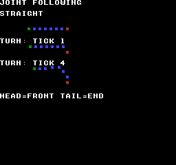

使用原生编译器调用库
lib/ 包含编入游戏机 ROM 的 C 头文件和源文件。PC 编译器和辅助工具使用 Rust；游戏源码、目标平台库和 API 仍使用 C。提供的 SOURCE_MANIFEST.json 和 LIBRARY_MERGE.json 记录库源码的选择。
kitaqfc · Rust 原生编译器与辅助工具 · GitHub Actions
Windows、Linux、macOS ARM 和 macOS Intel 的原生构建及运行验证均成功。KITAQGB 在每个环境通过 48 项测试和 395 项辅助工具检查；KITAQFC 通过 55 项测试和 401 项检查，也验证了 Rust 1.85。PUBLIC_DISTRIBUTION.json 记录已放置程序的哈希及验证来源。公开 GitHub Actions 会独立构建和验证这些源码。
保存的参考输出用于检查 ROM 字节、诊断和辅助工具格式。以前的 C# 模拟器验证保留为对应原始源码指纹的历史记录，并不自动证明全部 Rust API、真实硬件或完整的 FDS BIOS 游戏启动。原始 PNG 转换脚本无法取得，因此依据规格重新实现，不能声称与原脚本字节一致。
KITAQ SERIES • 参考版
KITAQFC 库
NES 库与设备
源码快照：2026 年 9 月 14 日 · 简体中文版：2026 年 9 月 14 日
当前编译器与库的发布配置 — 2026年10月4日
fc.h 包含 physics3d 和 audio_vblank 的声明，所需实现文件仍须单独链接。entity_update_all 和 entity_draw_all 按 ID 升序将活动槽位传给回调。请将回调放在公共库区0，或在调用期间保持相应 PRG 库区的映射。使用 ZX0 时须显式包含 zx0.h。audio_vblank 的记录顺序为 delay, CH1, CH2, CH3, CH4。
使用29个输入比较了当前C#构建和先前发布版。接受的15个输入生成完全相同的ROM字节，另外14个输入产生相同的拒绝诊断。另将两个ROM各在KUROSAKI中运行4帧，分别检查实体分配、回调、槽位复用，以及有符号运算、KQBody3D 布局和音频队列常量。报告列出18字节RAM的预期值和实际值。这些检查不涉及音频播放或全部API；先前的回归测试结果在 BINARY_BUILD.json 中单独标注。
1. 选择需要的组件
fc.h 汇总声明，core.h 定义类型，intrinsics.h 声明编译器操作。普通 C 库函数需要对应的 .c 实现；仅头文件宏和内建函数未必需要同名源文件。
.\kitaqfc\kitaqfc.exe .\kitaqfc\lib\audio.c .\kitaq-docs\samples\fc_sound.c -I .\kitaqfc\lib -I .\kitaq-docs\samples --nes-chr=.\kitaq-docs\samples\font.chr --mapper=nrom -o .\out\sound.nes不要把 -I 指向名字相似的 GB 库。例如 NES 的 __oam_dma() 无参数，GB 的同名操作却接收指针。
2. Runtime 与 system
runtime.c 为 PPU 寄存器、OAM 影子缓冲及 VRAM 队列提供 C 辅助函数，也存在 __vramq_* 等内建路径。先确认 NMI 实际消费的数据，不要混用同名或近似名称的独立队列。
system_init 初始化帧状态并启用 NMI。system_wait_vblank 等待 NMI，递增软件帧计数，再同步调用已注册回调一次。向 system_set_vblank_callback 传零可移除回调。回调在等待函数的调用方上下文中运行，不在 NMI 处理程序内部。
3. PPU、图块、属性与调色板
ppu_direct.h 提供直接 PPU 操作，vram_queue.h 用于 NMI 更新，tilemap / nametable_asset 管理表与素材，attribute 更新属性，palette 管理调色板。初始加载与每帧处理应分开。
背景和精灵调色板各占 16 字节。值是 NES 颜色编号，不是 RGB 分量。属性为一组图块选择颜色，改变某个图块的视觉调色板时可能也影响邻近图块。
ppu.h 和 ppu.c 提供画面控制、32 字节调色板传送及完整名称表初始化。nes_ppu_seek_bytes(hi,lo) 重置地址锁存器，并用两个字节设置地址。可与 runtime.c 中接收单个字参数的 nes_ppu_seek(address) 一起链接。传送和初始化前请关闭渲染。
4. OAM、组合精灵与轮换显示
NES 最多有 64 个精灵，通常每条扫描线最多显示 8 个。九个以上敌人或子弹集中在一行时，无法同时全部显示。组合精灵用多个 OBJ 拼成一张图像；请检查分配边界和终止标记格式。
oam_fair.h 与 oam_fair_impl.h 在保留优先级的同时轮换候选顺序。例如让玩家和 HUD 优先显示，较不重要对象轮流显示。重排 OAM 不会改变硬件扫描线限制。
5. 输入、连发与外设
input.c 把 NES 原始按钮值转换成 GB 风格的 BTN_* 掩码。NES 原始 A 是 0x01，库的 BTN_A 是 0x10。 不能将 BTN_A 直接传给 KUROSAKI 的 --pad1。
pad 读取基本输入，input_repeat 处理长按重复。zapper、keyboard、rob、mic、midi 提供底层外设接口。未连接设备时读到 0，并不能证明操作成功；应检查该设备的连接要求。
keyboard.h — 键盘矩阵输入
提供连接特征探测、完整的 18 字节扫描和单行／单组读取，不负责字符转换或按键重复。
__fkb_detect · __fkb_scan · __fkb_read_row_col
zapper.h — 光枪输入信号
读取各端口的原始位、扳机与感光信号。不带后缀的函数选择端口 2；瞄准坐标和命中判断由游戏实现。
__zapper_raw1 · __zapper_raw2 · __zapper_trigger1 · __zapper_trigger2 · __zapper_light1 · __zapper_light2 · __zapper_trigger · __zapper_light
intrinsics.h — 单比特串行 I/O
通过 OUT0 输出和 D4 输入与外部适配器交互。每次操作处理一位，时序与字节组帧由调用方控制。
__serial_tx_bit · __serial_rx_bit
这些图像来自在 KUROSAKI 中原样运行可下载 ROM。当前输入总线模型支持手柄，但不模拟键盘、光枪或串行适配器信号。外部输入位读为零，因此截图不能验证这些设备。实体按键、光学感应和通信仍未经测试。
6. 声音
使用 audio_vblank.h 可实现由 NMI 驱动的四声道音乐。参考条目说明 RAM 队列补充、音符保持与停止、循环播放，并提供完整示例的录音。
audio_vblank.h 提供由 NMI 驱动的四通道音乐。其参考条目说明 RAM 队列补充、音符保持与停止、循环播放，并附完整示例的录音。
调用 nes_apu_init 后，可通过 nes_sfx_square1、nes_sfx_square2、nes_sfx_triangle、nes_sfx_noise 使用内置音源。period 参数是硬件计时周期，不是赫兹频率。fc_sound.c 是最小脉冲音示例。
DMC 样本受地址、长度、对齐和速率限制，传递指针前应查看映射布局。DMC DMA 还可能干扰手柄读取，应同时采用安全读取方式与 KUROSAKI 诊断。
VRC6 提供额外脉冲及锯齿波通道，VRC7 提供 FM 寄存器，FDS 提供波表音源。使用匹配的 mapper 并记录结果。这些 API 与 GB 的 Audio_* 驱动不同。
7. 场景、actor 与 entity
actor 和 entity 在固定数组中保存游戏对象，scene 管理场景状态。必须检测容量用尽，并停止使用已销毁的 ID。场景切换、更新和绘制会同步调用已注册回调。请检查各 API 的调用顺序和重入限制。
chain 通过 ChainBody 提供关节跟随，通过 Chain 保存位置历史；collision 判断矩形等形状的接触。保持“移动、碰撞、绘制”的固定顺序，可避免碰撞结果落后一帧。
8. 数学与物理
fixed.h 提供 Q8.8 运算，math_fast / math_fixed 提供数值操作，math_lut 提供查表计算。physics2d 处理方框积分、重力、AABB 接触和表面响应；physics3d 处理不旋转的三维方框、反弹和冲击值。分配 world 和 body 数组，初始化并设置参数，再调用 step。位置和速度使用调用方选择的一致整数单位。
Q5.3 的小数单位是 1/8 像素。请分别保存整数坐标、小数部分、速度和方向，在游戏代码中完成加法与进位。fc_subpixel.c 将 2/8 像素累加八次，从像素 40 移动到 42。不能把 Q8.8 中的 256 原样当作 Q5.3 的 1。
8.1 可选择视口尺寸的线框绘图
wire3d.c 将独立创作的 3D 模型绘制为深色背景上的青色线条。实现采用整数旋转、倒数表透视投影、CPU 像素缓冲区和两个 CHR RAM 图案表。不包含商业游戏的代码、模型或图像数据。源码由 DAISUKE OBA 按 MIT 许可证提供。
在包含 wire3d.c之前，选择 64×48、96×64 或 128×96 中的一种视口。请 同时定义 WIRE3D_FC_WIDTH 和 WIRE3D_FC_HEIGHT；默认值为 64×48。视口居中显示在 256×240 的背景上。更大的视口需要更多图块，线段也更长，因此应根据具体场景的测量结果选择尺寸。
#define WIRE3D_FC_WIDTH 96
#define WIRE3D_FC_HEIGHT 64
#include "wire3d.c"
void main(void) {
Wire3DFC_Init();
Wire3DFC_BeginFrame();
Wire3DFC_DrawLine2D(4,4,91,59);
Wire3DFC_DrawLine2D(91,4,4,59);
Wire3DFC_EndFrame();
while(1) {}
}本例绘制两条相交的对角线，用来检查所选视口和线条覆盖范围。源码已经包含实现文件，只需编译一次。
.\kitaqfc\kitaqfc.exe .\cross.c -I .\kitaqfc\lib --mapper=nrom --nes-chr-ram -o .\cross.nesROM 需要 8 KiB 可写 CHR RAM ，以及覆盖以下地址范围的卡带 PRG RAM： $6800–$70BF。渲染器占用两个图案表、名称表 0、滚动设置和背景调色板，并预留零页区域 $00–$0A。其他数据不能与这些区域重叠，绘图期间也不能改变其映射器映射。 --nes-chr-ram 选择 RAM 而非 CHR ROM，不能同时通过 --nes-chr 或 --chr-rom指定图案文件；CNROM 配置也不允许此模式。
渲染器不可重入。初始化会关闭 NMI，并在设置完成后启用背景。绘图和上传在前台执行，不得同时运行其他 PPU 写入程序，或运行会修改其工作内存的中断处理程序。一次上传可能跨越多个显示帧。此实现不提供异步游戏循环或音频更新调度器。
| 函数 | 用途与使用约定 |
|---|---|
Wire3DFC_Init() | 清空两个 CHR 图案表和 CPU 绘图缓冲区，建立居中的图块地图，设置深色背景与青色线条，并在 NMI 关闭的状态下启用背景。必须在任何帧操作之前调用。 |
Wire3DFC_BeginFrame() | 清除上次绘图修改过的 CPU 图块。当前显示的图像保持不变，直到 EndFrame 交换缓冲区。每次构建完整图像前调用一次。 |
Wire3DFC_DrawLine2D(ax,ay,bx,by) | 在线段两端均包含在内的规则下，将线段绘入 CPU 缓冲区。端点为 −512～511 范围内的有符号坐标。视口外像素被裁剪；包围框完全位于视口外的线段直接跳过。端点均在范围内的线段使用基于寄存器的 6502 Bresenham 循环。 |
Wire3DFC_RotatePoint(x,y,z,rx,ry,rz) | 按 Y、X、Z 顺序修改三个分别存储、可写的 s16 分量。每圈分为 32 个角度档位，超出一圈时循环。初始各分量须处于 −63～63；Q6 缩减向零截断。任一分量指针为空时，不进行操作。 |
Wire3DFC_ProjectPoint(x,y,z,sx,sy) | 将摄像机空间中的点转换为屏幕坐标。X/Y 必须在 −127～127 内，深度须为 32～255。成功时返回 1 并写出有符号、未裁剪的坐标；坐标无效或输出指针为空时返回 0，且不修改输出。X 正方向向右，Y 正方向向上。 |
Wire3DFC_DrawLine3D(ax,ay,az,bx,by,bz) | 投影两个端点，再绘制对应屏幕线段。任一端点超出投影范围时，整条边都被省略；不会求边与近裁剪面或远裁剪面的交点。 |
Wire3DFC_DrawModel(vertices,count,edges,edge_count,x,y,z,rx,ry,rz) | 对前 24 个顶点各变换和投影一次，缓存结果，再按索引绘制边。每个顶点含三个 s8 分量，每条边含两个 u8 索引。空数组、无效索引和投影失败的端点会被跳过。平移后的坐标和必须保持在 s16 范围内。所有有效边都会被绘制；此 API 不执行隐藏面剔除。 |
Wire3DFC_EndFrame() | 上传暂存图像或隐藏 CHR 缓冲区原内容涉及的图块，包括需要擦除的图块。每批 VBlank 最多传输 16 个图块，恢复滚动设置，并在新的 VBlank 显示完整图像。函数阻塞至完成。 |
调用 EndFrame 后，wire3d_uploaded_tiles 表示上传的图块数，wire3d_transfer_frames 表示上传批数加上最终交换所等待的次数。后者不等于绘制的总耗时：变换、光栅化和 CPU 侧的状态维护也需要时间。透视投影采用量化倒数表；128 像素宽视口在最近深度处的比例值从 256 饱和为 255。
HTML 手册中的立方体示例演示顶点共享、旋转、投影、十二条索引边和完整帧呈现。验证图像显示绕 Y 轴旋转的立方体：十二条边应保持连接，背景中不应残留上一幅图像的线条。
.\kitaqfc\kitaqfc.exe .\kitaq-docs\samples\api-examples\fc\wire3d_cube.c -I .\kitaqfc\lib --mapper=nrom --nes-chr-ram -o .\wire_cube.nes


KUROSAKI 对每种尺寸分别检查线段、立方体和清屏，共九项图像检查。另在三种视口和四组编译器配置下，检查投影边界、空指针、各轴全部 32 档旋转、组合旋转和无效边的排除。普通绘图示例使用 NROM，汇集边界条件的较大测试 ROM 使用 MMC3。这些结果来自模拟器，尚非实机测量。
zx0
将 ZX0 兼容素材解压到 RAM 或 VRAM。先在 PC 上用 kitaqfc-zx0.exe 准备素材，运行时仅解压当前需要的数据。--format=auto 比较原始、RLE 和 ZX0 载荷，选择最小者；大小相同时依次优先原始、RLE、ZX0。包含九字节头部的整个容器不得超过 65535 字节，还须按实际 CPU 存储体窗口和 RAM 容量拆分素材。
ZX0 格式及原始压缩算法由 Einar Saukas 设计。这里提供的压缩器和解压器是 KITAQ 的独立实现，版权归 DAISUKE OBA 所有，采用 MIT 许可证。
请在仓库根目录运行以下主机命令。先用 tools/zx0/build.ps1 构建工具。
.\kitaqfc-zx0.exe tiles.bin tiles.zx0
.\kitaqfc-zx0.exe tiles.bin tiles.h --header=tiles
.\kitaqfc-zx0.exe map.bin map.kqa --format=auto
.\kitaqfc-zx0.exe tiles.zx0 restored.bin --decompresszx0_decompress
将 ZX0 v2 数据流解压到有容量限制的 RAM。匹配引用先前已解码的数据，因此目标必须同时可读、可写。适合 CPU 使用前还需处理的背景图或关卡表。
语法
u16 zx0_decompress(void* dst, u16 capacity, const void* src, u16 packed_size);参数
dst可写目标 RAM 的首地址，不得为空指针。容量按字节指定，不是数组元素数。
capacity目标可写字节数。普通 ZX0 流至少需要一个字节；空的原始格式 KQA1 素材允许容量为零。
src在当前存储体映射下可读的压缩数据首地址，不得为空指针。
packed_size完整输入的字节数。ZX0 流须包含结束标记，后面不能再有多余字节；KQA1 容器长度包括九字节头部。最大为 65535 字节。
返回值
成功时返回解压字节数，错误时返回零。必须同时检查 zx0_error。
使用条件与限制
包含 zx0.h 并编译 lib/zx0.c。这些函数使用共享临时区，不允许从中断重入。输入和输出不得重叠、越过 CPU 地址空间末端或跨出当前映射的存储体窗口。库不会切换素材所在存储体。
每次调用都会更新 zx0_error：0 成功，1 参数无效，2 输入被截断，3 数据流格式错误，4 输出空间不足，5 显示处于开启状态。失败时可能已写入部分结果，不要使用这些数据。若同时存在多个错误，以首先检测到的条件决定错误码。
接受正向 ZX0 v2 数据流。此接口不支持 ZX0 v1、反向数据流或外部字典。应掌握 PC 端生成素材的解压长度，并提供足够空间。
使用示例
count=zx0_decompress(decoded_map,16,packed_map,packed_map_SIZE);
if(count!=16||zx0_error!=ZX0_OK)failures++;这是一段调用示例。放入完整程序前，请满足所述初始化和缓冲区要求。
预期结果
RAM MAP 一排重复显示方块、菱形和棋盘格图块。AUTO RLE MAP 用十六个方块组成水平条。VRAM TILES 将像素数据解压到 VRAM 后重复显示相同的三个图块。CGB 和 FC 上方块为白色、菱形为红色、棋盘格为蓝色；DMG 使用灰阶。CHECKS OK 表示三个调用都返回了预期长度且没有错误。

构建命令
New-Item -ItemType Directory -Force .\out | Out-Null
.\kitaqfc\kitaqfc.exe .\kitaq-docs\samples\api-examples\fc\zx0_decode.c -I .\kitaqfc\lib -I .\kitaq-docs\samples -o .\out\zx0_decode.nes --mapper=nrom --nes-chr-ram --no-cache --no-disasm实现与源码
kitaqfc/lib/zx0.h:16
Return decoded bytes, or zero on error (possibly after partial writes). Source and output must not overlap or cross their current CPU bank windows. Capacity and packed_size are byte counts. No prefix/backward/v1 streams.
kitaqfc/lib/zx0.c:52
u16 zx0_decompress(void* dst,u16 capacity,const void* src,u16 packed_size) {
u8 phase; u8 low; u8* out; u8* match;
u16 count; u16 distance; u16 used; u16 upper;
zx0_error=ZX0_OK;
if(!kq_zx_arguments(dst,capacity,src,packed_size)) { zx0_error=ZX0_BAD_ARGUMENT; return 0; }
kq_zx_input=(const u8*)src; kq_zx_left=packed_size;
kq_zx_mask=0; kq_zx_borrowed=0;
out=(u8*)dst; used=0; distance=1; phase=0;
// Phase 0 is literal, 1 reuses the last distance, 2 carries a new distance.
while(1) {
if(phase==2) {
upper=kq_zx_number(1);
if(zx0_error) return 0;
if(upper==256) {
if(kq_zx_left!=0) { zx0_error=ZX0_BAD_STREAM; return 0; }
return used;
}
if(upper>255) { zx0_error=ZX0_BAD_STREAM; return 0; }
low=kq_zx_byte();
distance=(u16)((upper<<7)-(low>>1));
kq_zx_borrowed=1; kq_zx_borrow_value=(u8)(low&1);
count=kq_zx_number(0);
if(count==65535) { zx0_error=ZX0_BAD_STREAM; return 0; }
count++;
} else count=kq_zx_number(0);
if(zx0_error) return 0;
if(count>capacity-used) { zx0_error=ZX0_OUTPUT_FULL; return 0; }
if(phase==0) {
if(count>kq_zx_left) { zx0_error=ZX0_TRUNCATED; return 0; }
kq_zx_left-=count; used+=count;
while(count!=0) { *out++=*kq_zx_input++; count--; }
phase=kq_zx_bit()?2:1;
} else {
if(distance>used) { zx0_error=ZX0_BAD_STREAM; return 0; }
match=out-distance; used+=count;
// Forward byte copying deliberately supports overlapping matches.
while(count!=0) { *out++=*match++; count--; }
phase=kq_zx_bit()?2:0;
}
if(zx0_error) return 0;
}
}asset_decompress
从 --format=auto 生成的 KQA1 头部读取编码类型和长度，再复制原始字节或将 RLE／ZX0 解压到 RAM。调用方无需为各编码类型分别编写分支。
语法
u16 asset_decompress(void* dst, u16 capacity, const void* src, u16 packed_size);参数
dst可写目标 RAM 的首地址，不得为空指针。容量按字节指定，不是数组元素数。
capacity目标可写字节数。普通 ZX0 流至少需要一个字节；空的原始格式 KQA1 素材允许容量为零。
src在当前存储体映射下可读的压缩数据首地址，不得为空指针。
packed_size完整输入的字节数。ZX0 流须包含结束标记，后面不能再有多余字节；KQA1 容器长度包括九字节头部。最大为 65535 字节。
返回值
成功时返回解压字节数，错误时返回零。必须同时检查 zx0_error。
使用条件与限制
包含 zx0.h 并编译 lib/zx0.c。这些函数使用共享临时区，不允许从中断重入。输入和输出不得重叠、越过 CPU 地址空间末端或跨出当前映射的存储体窗口。库不会切换素材所在存储体。
每次调用都会更新 zx0_error：0 成功，1 参数无效，2 输入被截断，3 数据流格式错误，4 输出空间不足，5 显示处于开启状态。失败时可能已写入部分结果，不要使用这些数据。若同时存在多个错误，以首先检测到的条件决定错误码。
KQA1 是 KITAQ 素材容器：四字节标记、一个字节的编码类型（0 原始、1 RLE、2 ZX0）、u16 解压长度、u16 载荷长度，之后为载荷。u16 使用小端序。RLE 以数量／数值对重复数据，数量为 1～255，以数量零结束。空原始素材成功时返回零，错误码也为零。
使用示例
count=asset_decompress(decoded_auto,16,packed_auto,packed_auto_SIZE);
if(count!=16||zx0_error!=ZX0_OK)failures++;这是一段调用示例。放入完整程序前，请满足所述初始化和缓冲区要求。
预期结果
RAM MAP 一排重复显示方块、菱形和棋盘格图块。AUTO RLE MAP 用十六个方块组成水平条。VRAM TILES 将像素数据解压到 VRAM 后重复显示相同的三个图块。CGB 和 FC 上方块为白色、菱形为红色、棋盘格为蓝色；DMG 使用灰阶。CHECKS OK 表示三个调用都返回了预期长度且没有错误。
构建命令
New-Item -ItemType Directory -Force .\out | Out-Null
.\kitaqfc\kitaqfc.exe .\kitaq-docs\samples\api-examples\fc\zx0_decode.c -I .\kitaqfc\lib -I .\kitaq-docs\samples -o .\out\zx0_decode.nes --mapper=nrom --nes-chr-ram --no-cache --no-disasm实现与源码
kitaqfc/lib/zx0.h:19
Decode a KQA1 raw/RLE/ZX0 asset produced with --format=auto. Empty raw assets return zero with zx0_error==ZX0_OK.
kitaqfc/lib/zx0.c:95
u16 asset_decompress(void* dst,u16 capacity,const void* src,u16 packed_size) {
const u8* in; u8* out; u16 raw; u16 packed; u16 used;
u8 codec; u8 count; u8 value;
zx0_error=ZX0_OK;
if(packed_size<9||!kq_zx_arguments(dst,capacity,src,packed_size)) { zx0_error=ZX0_BAD_ARGUMENT; return 0; }
in=(const u8*)src; out=(u8*)dst;
if(in[0]!=75||in[1]!=81||in[2]!=65||in[3]!=49) { zx0_error=ZX0_BAD_STREAM; return 0; }
codec=in[4]; raw=(u16)((u16)in[5]|((u16)in[6]<<8));
packed=(u16)((u16)in[7]|((u16)in[8]<<8));
if(packed!=packed_size-9||codec>2) { zx0_error=ZX0_BAD_STREAM; return 0; }
if(raw>capacity) { zx0_error=ZX0_OUTPUT_FULL; return 0; }
in+=9;
if(codec==2) {
used=zx0_decompress(dst,raw,in,packed);
if(zx0_error==0&&used!=raw) zx0_error=ZX0_BAD_STREAM;
return zx0_error?0:used;
}
if(codec==0) {
if(raw!=packed) { zx0_error=ZX0_BAD_STREAM; return 0; }
used=raw; while(raw!=0) { *out++=*in++; raw--; } return used;
}
used=0;
while(packed!=0) {
count=*in++; packed--;
if(count==0) {
if(packed!=0||used!=raw) { zx0_error=ZX0_BAD_STREAM; return 0; }
return used;
}
if(packed==0) { zx0_error=ZX0_TRUNCATED; return 0; }
value=*in++; packed--;
if((u16)count>raw-used) { zx0_error=ZX0_OUTPUT_FULL; return 0; }
used+=count; while(count!=0) { *out++=value; count--; }
}
zx0_error=ZX0_TRUNCATED; return 0;
}zx0_decompress_vram
先将整个 ZX0 素材解压到调用方提供的 RAM，再以每块最多 128 字节上传到 PPU。PPU 内存不能通过普通 CPU 指针直接读取，因此匹配历史保留在 RAM 中。
语法
u16 zx0_decompress_vram(u16 ppu_addr,void* workspace,u16 capacity,const void* src,u16 packed_size);参数
ppu_addrPPU 目标地址 0x0000～0x2FFF，全部解压数据必须结束在 0x3000 之前。若目标为图案表，卡带配置必须提供 CHR RAM。
workspace可写目标 RAM 的首地址，不得为空指针。容量按字节指定，不是数组元素数。
capacityRAM 工作区容量，须容纳完整的解压结果。PPU 每次仅传输 128 字节，并不意味着工作区可以缩小到 128 字节。
src在当前存储体映射下可读的压缩数据首地址，不得为空指针。
packed_size完整输入的字节数。ZX0 流须包含结束标记，后面不能再有多余字节；KQA1 容器长度包括九字节头部。最大为 65535 字节。
返回值
成功时返回解压字节数，错误时返回零。必须同时检查 zx0_error。
使用条件与限制
包含 zx0.h 并编译 lib/zx0.c。这些函数使用共享临时区，不允许从中断重入。输入和输出不得重叠、越过 CPU 地址空间末端或跨出当前映射的存储体窗口。库不会切换素材所在存储体。
每次调用都会更新 zx0_error：0 成功，1 参数无效，2 输入被截断，3 数据流格式错误，4 输出空间不足，5 显示处于开启状态。失败时可能已写入部分结果，不要使用这些数据。若同时存在多个错误，以首先检测到的条件决定错误码。
接受正向 ZX0 v2 数据流。此接口不支持 ZX0 v1、反向数据流或外部字典。应掌握 PC 端生成素材的解压长度，并提供足够空间。
调用前用 __ppu_mask_set(0) 关闭渲染。函数临时将 PPU 地址递增步长设为 1，随后恢复 PPUCTRL。PPUADDR／PPUDATA 操作会改变 PPU 地址和锁存状态，重新开启渲染前应设置滚动。调用期间，中断处理程序也必须避免访问 PPU。本函数不能用于 CHR ROM 或调色板传输。目标范围在 RAM 解压后检查，因此范围错误也可能已经修改工作区。
使用示例
count=zx0_decompress_vram(0x0800,tile_workspace,48,packed_tiles,packed_tiles_SIZE);
if(count!=48||zx0_error!=ZX0_OK)failures++;这是一段调用示例。放入完整程序前，请满足所述初始化和缓冲区要求。
预期结果
RAM MAP 一排重复显示方块、菱形和棋盘格图块。AUTO RLE MAP 用十六个方块组成水平条。VRAM TILES 将像素数据解压到 VRAM 后重复显示相同的三个图块。CGB 和 FC 上方块为白色、菱形为红色、棋盘格为蓝色；DMG 使用灰阶。CHECKS OK 表示三个调用都返回了预期长度且没有错误。
构建命令
New-Item -ItemType Directory -Force .\out | Out-Null
.\kitaqfc\kitaqfc.exe .\kitaq-docs\samples\api-examples\fc\zx0_decode.c -I .\kitaqfc\lib -I .\kitaq-docs\samples -o .\out\zx0_decode.nes --mapper=nrom --nes-chr-ram --no-cache --no-disasm实现与源码
kitaqfc/lib/zx0.h:23
Decode into caller-owned RAM, then transfer to CHR RAM or nametable memory. Rendering must be off. Preserve PPUCTRL; set scroll before enabling rendering. The workspace must hold the whole output. No palette upload or CHR ROM writes.
kitaqfc/lib/zx0.c:134
u16 zx0_decompress_vram(u16 ppu_addr,void* workspace,u16 capacity,const void* src,u16 packed_size) {
u16 size; u16 left; const u8* data; u8 chunk; u8 saved_ctrl;
zx0_error=ZX0_OK;
if(ppu_addr>=0x3000) { zx0_error=ZX0_BAD_ARGUMENT; return 0; }
if(__ppu_mask_get()&0x18) { zx0_error=ZX0_DISPLAY_ACTIVE; return 0; }
size=zx0_decompress(workspace,capacity,src,packed_size);
if(zx0_error) return 0;
if(size>0x3000-ppu_addr) { zx0_error=ZX0_OUTPUT_FULL; return 0; }
saved_ctrl=__ppu_ctrl_get(); __ppu_ctrl_set((u8)(saved_ctrl&0xFB));
left=size; data=(const u8*)workspace;
while(left!=0) {
chunk=left>128?128:(u8)left;
__vram_write(ppu_addr,data,chunk);
ppu_addr+=chunk; data+=chunk; left-=chunk;
}
__ppu_ctrl_set(saved_ctrl); return size;
}wire3d — 逐函数参考
Wire3DFC_Init
初始化 CHR RAM、背景图、暂存像素及待更新图块历史，再以青色线条开启背景显示。已有画面会被清除。
语法
void Wire3DFC_Init(void);返回值
无返回值。
使用条件与限制
需要 8 KiB CHR RAM、$6800～$70BF 的可写卡带 PRG RAM，以及 $00～$0A 的零页临时区。构建使用 --nes-chr-ram。渲染器共享工作存储，不可重入。
按 Init、BeginFrame、绘图函数、EndFrame 的顺序调用。库占用两个背景图案表、名称表零、背景调色板和滚动，并禁用 NMI。不要并发运行其他写 PPU 的代码。
在包含 wire3d.c 前同时定义 WIRE3D_FC_WIDTH 和 WIRE3D_FC_HEIGHT，可选择默认 64×48、96×64 或 128×96。视口在屏幕居中。较小视口减少绘制与传输工作，但预留 RAM 容量相同。
图片由 KUROSAKI 分别按三种尺寸截取。现有检查比较整个 256×240 画面的每个像素及颜色，以及 RAM 数值结果；这不是实机性能测量。
使用示例
Wire3DFC_Init();这是一段调用示例。放入完整程序前，请满足所述初始化和缓冲区要求。
预期结果
最终画面在黑底上显示青色边框、中央立方体、上方十字及下方水平线。边框使用二维坐标，十字使用点旋转与投影，下方线条使用相机空间端点，立方体使用顶点和边数组。这些图形可在同一画面中对比各 API 的用途。


构建命令
New-Item -ItemType Directory -Force .\out | Out-Null
.\kitaqfc\kitaqfc.exe .\kitaq-docs\samples\api-examples\fc\wire3d_projection.c -I .\kitaqfc\lib --mapper=nrom --nes-chr-ram -o .\out\wire3d_projection.nes --no-cache --no-disasm
.\kurosaki\kurosaki.exe run .\out\wire3d_projection.nes --headless --frames 180 --png .\out\wire3d_projection.png实现与源码
kitaqfc/lib/wire3d.h:34
Own both CHR-RAM pattern tables and nametable zero. Requires writable 8 KiB CHR RAM and PRG RAM 0x6800..0x70BF; reserves ZP 0x00..0x0A for drawing/transfer. Build with --nes-chr-ram and provide cartridge PRG RAM for the stage. Center the viewport, clear video memory, select cyan-on-dark colors and turn on background rendering with NMI disabled. Do not run another PPU writer.
kitaqfc/lib/wire3d.c:40
void Wire3DFC_Init(void) {
u16 address;u8 x,y,tile;
__ppu_mask_set(0);__ppu_ctrl_set(0);
// Both pattern tables have a zero high bitplane; all subsequent transfers
// update only low bitplanes in the currently hidden table.
for(address=0;address<8192;address+=128)__vram_fill(address,0,128);
for(address=0x2000;address<0x2400;address+=128)__vram_fill(address,255,128);
__vram_fill(0x23C0,0,64);__palette_bg_load(w3dfc_palette);
tile=0;
for(y=0;y<WIRE3D_FC_HEIGHT/8;y++) {
for(x=0;x<WIRE3D_FC_WIDTH/8;x++) {
address=(u16)(0x2000+(u16)(y+(30-WIRE3D_FC_HEIGHT/8)/2)*32+x+(32-WIRE3D_FC_WIDTH/8)/2);
__ppu_addr(address);__ppu_data(tile);tile++;
}
}
__memset(w3dfc_pixels,0,1536);
__memset(w3dfc_dirty,0,192);
__memset(w3dfc_bank0_dirty,0,192);
__memset(w3dfc_bank1_dirty,0,192);
w3dfc_front=0;w3dfc_batch_count=0;
wire3d_transfer_frames=0;wire3d_uploaded_tiles=0;
__scroll_set(0,0);__ppu_ctrl_set(0);__ppu_mask_set(0x0A);
}Wire3DFC_BeginFrame
清除上次绘制涉及图块的暂存像素，准备空白帧。当前显示的 CHR 表和可见画面不变。
语法
void Wire3DFC_BeginFrame(void);返回值
无返回值。
使用条件与限制
每次绘制开始时调用一次。在 EndFrame 前再次调用，会擦掉已暂存的线条。
需要 8 KiB CHR RAM、$6800～$70BF 的可写卡带 PRG RAM，以及 $00～$0A 的零页临时区。构建使用 --nes-chr-ram。渲染器共享工作存储，不可重入。
按 Init、BeginFrame、绘图函数、EndFrame 的顺序调用。库占用两个背景图案表、名称表零、背景调色板和滚动，并禁用 NMI。不要并发运行其他写 PPU 的代码。
在包含 wire3d.c 前同时定义 WIRE3D_FC_WIDTH 和 WIRE3D_FC_HEIGHT，可选择默认 64×48、96×64 或 128×96。视口在屏幕居中。较小视口减少绘制与传输工作，但预留 RAM 容量相同。
图片由 KUROSAKI 分别按三种尺寸截取。现有检查比较整个 256×240 画面的每个像素及颜色，以及 RAM 数值结果；这不是实机性能测量。
使用示例
Wire3DFC_BeginFrame();这是一段调用示例。放入完整程序前，请满足所述初始化和缓冲区要求。
预期结果
最终画面在黑底上显示青色边框、中央立方体、上方十字及下方水平线。边框使用二维坐标，十字使用点旋转与投影，下方线条使用相机空间端点，立方体使用顶点和边数组。这些图形可在同一画面中对比各 API 的用途。
构建命令
New-Item -ItemType Directory -Force .\out | Out-Null
.\kitaqfc\kitaqfc.exe .\kitaq-docs\samples\api-examples\fc\wire3d_projection.c -I .\kitaqfc\lib --mapper=nrom --nes-chr-ram -o .\out\wire3d_projection.nes --no-cache --no-disasm
.\kurosaki\kurosaki.exe run .\out\wire3d_projection.nes --headless --frames 180 --png .\out\wire3d_projection.png实现与源码
kitaqfc/lib/wire3d.h:36
Clear the previous staged drawing. The displayed front image remains intact.
kitaqfc/lib/wire3d.c:63
void Wire3DFC_BeginFrame(void) {
w3dfc_tile_count=WIRE3D_FC_TILES;
// Clear exactly eight bytes per previously touched tile, using the same
// zero-page pointer as upload. No nested C indexing runs in the inner loop.
__asm {
PHA
TXA
PHA
TYA
PHA
LDX #0
w3dfc_clear_next:
LDA w3dfc_dirty,X
BEQ w3dfc_clear_skip
TXA
ASL A
ASL A
ASL A
STA w3dfc_upload_ptr
TXA
LSR A
LSR A
LSR A
LSR A
LSR A
CLC
ADC #104
STA w3dfc_upload_ptr+1
LDA #0
STA w3dfc_dirty,X
LDY #7
w3dfc_clear_byte:
STA (w3dfc_upload_ptr),Y
DEY
BPL w3dfc_clear_byte
w3dfc_clear_skip:
INX
CPX w3dfc_tile_count
BNE w3dfc_clear_next
PLA
TAY
PLA
TAX
PLA
}
}Wire3DFC_DrawLine2D
将包含端点的线段光栅化到暂存内存，标记涉及图块以供上传，不进行相机投影。
语法
void Wire3DFC_DrawLine2D(s16 ax,s16 ay,s16 bx,s16 by);参数
ax起点水平坐标，以视口像素为单位，范围 −512～511，视口左上角为 (0,0)。
ay起点竖直坐标，以视口像素为单位，范围 −512～511，视口左上角为 (0,0)。
bx终点水平坐标，以视口像素为单位，范围 −512～511，视口左上角为 (0,0)。
by终点竖直坐标，以视口像素为单位，范围 −512～511，视口左上角为 (0,0)。
返回值
无返回值。
使用条件与限制
任一端点坐标超出 −512～511 时拒绝整条线，否则丢弃视口外像素。新像素与暂存线条按位或合并，经 EndFrame 才可见。
需要 8 KiB CHR RAM、$6800～$70BF 的可写卡带 PRG RAM，以及 $00～$0A 的零页临时区。构建使用 --nes-chr-ram。渲染器共享工作存储，不可重入。
按 Init、BeginFrame、绘图函数、EndFrame 的顺序调用。库占用两个背景图案表、名称表零、背景调色板和滚动，并禁用 NMI。不要并发运行其他写 PPU 的代码。
在包含 wire3d.c 前同时定义 WIRE3D_FC_WIDTH 和 WIRE3D_FC_HEIGHT，可选择默认 64×48、96×64 或 128×96。视口在屏幕居中。较小视口减少绘制与传输工作，但预留 RAM 容量相同。
图片由 KUROSAKI 分别按三种尺寸截取。现有检查比较整个 256×240 画面的每个像素及颜色，以及 RAM 数值结果；这不是实机性能测量。
使用示例
Wire3DFC_DrawLine2D(0,0,WIRE3D_FC_WIDTH-1,0);这是一段调用示例。放入完整程序前，请满足所述初始化和缓冲区要求。
预期结果
最终画面在黑底上显示青色边框、中央立方体、上方十字及下方水平线。边框使用二维坐标，十字使用点旋转与投影，下方线条使用相机空间端点，立方体使用顶点和边数组。这些图形可在同一画面中对比各 API 的用途。
构建命令
New-Item -ItemType Directory -Force .\out | Out-Null
.\kitaqfc\kitaqfc.exe .\kitaq-docs\samples\api-examples\fc\wire3d_projection.c -I .\kitaqfc\lib --mapper=nrom --nes-chr-ram -o .\out\wire3d_projection.nes --no-cache --no-disasm
.\kurosaki\kurosaki.exe run .\out\wire3d_projection.nes --headless --frames 180 --png .\out\wire3d_projection.png实现与源码
kitaqfc/lib/wire3d.h:39
Draw a connected, inclusive segment. Endpoints must be -512..511. Pixels outside the viewport are clipped; completely outside bounding boxes return.
kitaqfc/lib/wire3d.c:193
void Wire3DFC_DrawLine2D(s16 ax,s16 ay,s16 bx,s16 by) {
s16 dx,dy,sx,sy,error,twice;u16 address;u8 tile;
if(ax < -512 || ax>511 || ay < -512 || ay>511 || bx < -512 || bx>511 || by < -512 || by>511)return;
if((ax<0 && bx<0)||(ay<0 && by<0)||(ax>=WIRE3D_FC_WIDTH && bx>=WIRE3D_FC_WIDTH)||(ay>=WIRE3D_FC_HEIGHT && by>=WIRE3D_FC_HEIGHT))return;
dx=bx-ax;if(dx<0)dx=0-dx;
dy=by-ay;if(dy<0)dy=0-dy;
if(ax>=0 && ay>=0 && bx>=0 && by>=0 && ax<WIRE3D_FC_WIDTH && bx<WIRE3D_FC_WIDTH && ay<WIRE3D_FC_HEIGHT && by<WIRE3D_FC_HEIGHT) {
w3dfc_lx=(u8)ax;w3dfc_ly=(u8)ay;
w3dfc_sx=ax<bx?1:255;w3dfc_sy=ay<by?1:255;
if(dx>=dy){w3dfc_major=(u8)dx;w3dfc_minor=(u8)dy;w3dfc_y_major=0;}
else{w3dfc_major=(u8)dy;w3dfc_minor=(u8)dx;w3dfc_y_major=1;}
w3dfc_error=(u8)(w3dfc_major>>1);w3dfc_remaining=(u8)(w3dfc_major+1);
w3dfc_line_inside();return;
}
sx=ax<bx?1:-1;sy=ay<by?1:-1;error=dx-dy;
while(1) {
if(ax>=0 && ax<WIRE3D_FC_WIDTH && ay>=0 && ay<WIRE3D_FC_HEIGHT) {
tile=(u8)(((u8)ay>>3)*(WIRE3D_FC_WIDTH/8)+((u8)ax>>3));
address=(u16)tile*8+((u8)ay&7);
w3dfc_pixels[address]=(u8)(w3dfc_pixels[address]|w3dfc_bits[(u8)ax&7]);
w3dfc_dirty[tile]=1;
}
if(ax==bx && ay==by)return;
twice=error*2;
if(twice > (0-dy)){error-=dy;ax+=sx;}
if(twice < dx){error+=dx;ay+=sy;}
}
}Wire3DFC_RotatePoint
原地旋转一个模型空间点，不进行平移或透视投影。
语法
void Wire3DFC_RotatePoint(s16* x,s16* y,s16* z,u8 rx,u8 ry,u8 rz);参数
x可写 s16 的 x 分量指针。三个分量须位于不同地址，每个输入分量须在 −63～63 内。
y可写 s16 的 y 分量指针。三个分量须位于不同地址，每个输入分量须在 −63～63 内。
z可写 s16 的 z 分量指针。三个分量须位于不同地址，每个输入分量须在 −63～63 内。
rxX 轴角度，一周 32 档。
ryY 轴角度，一周 32 档。
rzZ 轴角度，一周 32 档。
返回值
无返回值。
使用条件与限制
角度一周 32 档：0 不旋转，8 为 90 度，16 为 180 度。仅使用低五位，按 Y、X、Z 顺序旋转。
任一指针为空时直接返回，不修改坐标。Q6 整数乘积向零截断，不自动限制输入分量。
需要 8 KiB CHR RAM、$6800～$70BF 的可写卡带 PRG RAM，以及 $00～$0A 的零页临时区。构建使用 --nes-chr-ram。渲染器共享工作存储，不可重入。
按 Init、BeginFrame、绘图函数、EndFrame 的顺序调用。库占用两个背景图案表、名称表零、背景调色板和滚动，并禁用 NMI。不要并发运行其他写 PPU 的代码。
在包含 wire3d.c 前同时定义 WIRE3D_FC_WIDTH 和 WIRE3D_FC_HEIGHT，可选择默认 64×48、96×64 或 128×96。视口在屏幕居中。较小视口减少绘制与传输工作，但预留 RAM 容量相同。
图片由 KUROSAKI 分别按三种尺寸截取。现有检查比较整个 256×240 画面的每个像素及颜色，以及 RAM 数值结果；这不是实机性能测量。
使用示例
Wire3DFC_RotatePoint(&px,&py,&pz,0,0,8);这是一段调用示例。放入完整程序前，请满足所述初始化和缓冲区要求。
预期结果
最终画面在黑底上显示青色边框、中央立方体、上方十字及下方水平线。边框使用二维坐标，十字使用点旋转与投影，下方线条使用相机空间端点，立方体使用顶点和边数组。这些图形可在同一画面中对比各 API 的用途。
示例中绕 Z 轴旋转 90 度，将 (24,0,0) 变为 (0,24,0)，其投影十字显示在立方体上方。
构建命令
New-Item -ItemType Directory -Force .\out | Out-Null
.\kitaqfc\kitaqfc.exe .\kitaq-docs\samples\api-examples\fc\wire3d_projection.c -I .\kitaqfc\lib --mapper=nrom --nes-chr-ram -o .\out\wire3d_projection.nes --no-cache --no-disasm
.\kurosaki\kurosaki.exe run .\out\wire3d_projection.nes --headless --frames 180 --png .\out\wire3d_projection.png实现与源码
kitaqfc/lib/wire3d.h:42
Rotate a small model-space point in Y/X/Z order. Angles wrap in 32 steps. Start with components in -63..63; supply three distinct writable pointers.
kitaqfc/lib/wire3d.c:227
void Wire3DFC_RotatePoint(s16* x,s16* y,s16* z,u8 rx,u8 ry,u8 rz) {
s16 a,b,s,c;
if(x==0 || y==0 || z==0)return;
ry=(u8)(ry&31);rx=(u8)(rx&31);rz=(u8)(rz&31);
if(ry!=0){a=*x;b=*z;s=w3dfc_sin[ry];c=w3dfc_sin[(u8)((ry+8)&31)];*x=w3dfc_q6(a*c+b*s);*z=w3dfc_q6(b*c-a*s);}
if(rx!=0){a=*y;b=*z;s=w3dfc_sin[rx];c=w3dfc_sin[(u8)((rx+8)&31)];*y=w3dfc_q6(a*c-b*s);*z=w3dfc_q6(a*s+b*c);}
if(rz!=0){a=*x;b=*y;s=w3dfc_sin[rz];c=w3dfc_sin[(u8)((rz+8)&31)];*x=w3dfc_q6(a*c-b*s);*y=w3dfc_q6(a*s+b*c);}
}Wire3DFC_ProjectPoint
以视口中心为投影中心，将一个相机空间点转换为视口像素坐标。不绘制，也不改变遮罩。
语法
u8 Wire3DFC_ProjectPoint(s16 x,s16 y,s16 z,s16* sx,s16* sy);参数
x相机空间 X 坐标，使用 −127～127。X 向右为正，Y 向上为正。
y相机空间 Y 坐标，使用 −127～127。X 向右为正，Y 向上为正。
z相机空间 Z 坐标，深度须为 32～255，越大越远。
sx接收投影水平像素坐标的可写 s16 指针，两输出地址须不同。
sy接收投影竖直像素坐标的可写 s16 指针，两输出地址须不同。
返回值
成功返回 1，坐标越界或输出指针为空返回 0。失败不改变输出。
使用条件与限制
深度有效不保证投影落在屏幕内，输出不限制在视口边界。整数倒数近似可能与理想浮点投影相差几个像素。
需要 8 KiB CHR RAM、$6800～$70BF 的可写卡带 PRG RAM，以及 $00～$0A 的零页临时区。构建使用 --nes-chr-ram。渲染器共享工作存储，不可重入。
按 Init、BeginFrame、绘图函数、EndFrame 的顺序调用。库占用两个背景图案表、名称表零、背景调色板和滚动，并禁用 NMI。不要并发运行其他写 PPU 的代码。
在包含 wire3d.c 前同时定义 WIRE3D_FC_WIDTH 和 WIRE3D_FC_HEIGHT，可选择默认 64×48、96×64 或 128×96。视口在屏幕居中。较小视口减少绘制与传输工作，但预留 RAM 容量相同。
图片由 KUROSAKI 分别按三种尺寸截取。现有检查比较整个 256×240 画面的每个像素及颜色，以及 RAM 数值结果；这不是实机性能测量。
使用示例
projected=Wire3DFC_ProjectPoint(px,py,pz+96,&sx,&sy);这是一段调用示例。放入完整程序前，请满足所述初始化和缓冲区要求。
预期结果
最终画面在黑底上显示青色边框、中央立方体、上方十字及下方水平线。边框使用二维坐标，十字使用点旋转与投影，下方线条使用相机空间端点，立方体使用顶点和边数组。这些图形可在同一画面中对比各 API 的用途。
相对视口左上角，十字中心在 64×48 时为 (32,16)，96×64 时为 (48,20)，128×96 时为 (64,33)。
构建命令
New-Item -ItemType Directory -Force .\out | Out-Null
.\kitaqfc\kitaqfc.exe .\kitaq-docs\samples\api-examples\fc\wire3d_projection.c -I .\kitaqfc\lib --mapper=nrom --nes-chr-ram -o .\out\wire3d_projection.nes --no-cache --no-disasm
.\kurosaki\kurosaki.exe run .\out\wire3d_projection.nes --headless --frames 180 --png .\out\wire3d_projection.png实现与源码
kitaqfc/lib/wire3d.h:46
Project camera-space coordinates using an integer reciprocal table. Require x/y within -127..127 and z within 32..255. Return zero without touching outputs on invalid input; success returns one and writes unclipped screen coordinates.
kitaqfc/lib/wire3d.c:235
u8 Wire3DFC_ProjectPoint(s16 x,s16 y,s16 z,s16* sx,s16* sy) {
u8 scale;u16 magnitude;
if(sx==0 || sy==0 || x < -127 || x>127 || y < -127 || y>127 || z<32 || z>255)return 0;
// Focal length follows half the selected width. Use unsigned magnitude
// products and shifts so negative coordinates mirror positive ones exactly.
scale=w3dfc_recip[(u8)z];
if(x<0){magnitude=__mul16x8((u16)(0-x),scale);*sx=WIRE3D_FC_WIDTH/2-(s16)(magnitude>>7);}
else{magnitude=__mul16x8((u16)x,scale);*sx=WIRE3D_FC_WIDTH/2+(s16)(magnitude>>7);}
if(y<0){magnitude=__mul16x8((u16)(0-y),scale);*sy=WIRE3D_FC_HEIGHT/2+(s16)(magnitude>>7);}
else{magnitude=__mul16x8((u16)y,scale);*sy=WIRE3D_FC_HEIGHT/2-(s16)(magnitude>>7);}
return 1;
}Wire3DFC_DrawLine3D
投影两个相机空间端点，两者有效时绘制线段。物体旋转和平移须在调用前完成。
语法
void Wire3DFC_DrawLine3D(s16 ax,s16 ay,s16 az,s16 bx,s16 by,s16 bz);参数
ax起点相机空间 X 坐标，使用 −127～127。
ay起点相机空间 Y 坐标，使用 −127～127。
az起点相机空间 Z 坐标，深度为 32～255。
bx终点相机空间 X 坐标，使用 −127～127。
by终点相机空间 Y 坐标，使用 −127～127。
bz终点相机空间 Z 坐标，深度为 32～255。
返回值
无返回值。
使用条件与限制
任一端点投影失败即丢弃整条线，不在近裁剪面求交。被接受线段的视口外像素由 DrawLine2D 丢弃。
需要 8 KiB CHR RAM、$6800～$70BF 的可写卡带 PRG RAM，以及 $00～$0A 的零页临时区。构建使用 --nes-chr-ram。渲染器共享工作存储，不可重入。
按 Init、BeginFrame、绘图函数、EndFrame 的顺序调用。库占用两个背景图案表、名称表零、背景调色板和滚动，并禁用 NMI。不要并发运行其他写 PPU 的代码。
在包含 wire3d.c 前同时定义 WIRE3D_FC_WIDTH 和 WIRE3D_FC_HEIGHT，可选择默认 64×48、96×64 或 128×96。视口在屏幕居中。较小视口减少绘制与传输工作，但预留 RAM 容量相同。
图片由 KUROSAKI 分别按三种尺寸截取。现有检查比较整个 256×240 画面的每个像素及颜色，以及 RAM 数值结果；这不是实机性能测量。
使用示例
Wire3DFC_DrawLine3D(-24,-24,96,24,-24,96);这是一段调用示例。放入完整程序前，请满足所述初始化和缓冲区要求。
预期结果
最终画面在黑底上显示青色边框、中央立方体、上方十字及下方水平线。边框使用二维坐标，十字使用点旋转与投影，下方线条使用相机空间端点，立方体使用顶点和边数组。这些图形可在同一画面中对比各 API 的用途。
构建命令
New-Item -ItemType Directory -Force .\out | Out-Null
.\kitaqfc\kitaqfc.exe .\kitaq-docs\samples\api-examples\fc\wire3d_projection.c -I .\kitaqfc\lib --mapper=nrom --nes-chr-ram -o .\out\wire3d_projection.nes --no-cache --no-disasm
.\kurosaki\kurosaki.exe run .\out\wire3d_projection.nes --headless --frames 180 --png .\out\wire3d_projection.png实现与源码
kitaqfc/lib/wire3d.h:49
Draw when both endpoints pass the projection range. Near-plane crossings are rejected, not intersected with the near plane; screen pixels are clipped.
kitaqfc/lib/wire3d.c:247
void Wire3DFC_DrawLine3D(s16 ax,s16 ay,s16 az,s16 bx,s16 by,s16 bz) {
s16 x0,y0,x1,y1;
if(Wire3DFC_ProjectPoint(ax,ay,az,&x0,&y0)==0)return;
if(Wire3DFC_ProjectPoint(bx,by,bz,&x1,&y1)==0)return;
Wire3DFC_DrawLine2D(x0,y0,x1,y1);
}Wire3DFC_DrawModel
只旋转、平移和投影顶点一次，绘制索引边时复用屏幕坐标。
语法
void Wire3DFC_DrawModel(const Wire3DFC_Vec3* vertices,u8 vertex_count,const Wire3DFC_Edge* edges,u8 edge_count,s16 x,s16 y,s16 z,u8 rx,u8 ry,u8 rz);参数
verticesWire3DFC_Vec3 数组，x／y／z 为 s8。分量须在 −63～63 内，数组须包含声明数量的顶点。
vertex_count顶点数，大于 24 时只使用前 24 个。
edgesWire3DFC_Edge 数组，包含顶点索引 a／b，须提供 edge_count 个元素。
edge_count待处理边数 0～255。引用有效顶点数量之外索引的边会被跳过。
x旋转后加上的 X 平移，变换后点须符合 ProjectPoint 的输入范围。
y旋转后加上的 Y 平移，变换后点须符合 ProjectPoint 的输入范围。
z旋转后加上的 Z 平移，变换后点须符合 ProjectPoint 的输入范围。
rxX 轴角度，一周 32 档。
ryY 轴角度，一周 32 档。
rzZ 轴角度，一周 32 档。
返回值
无返回值。
使用条件与限制
角度一周 32 档：0 不旋转，8 为 90 度，16 为 180 度。仅使用低五位，按 Y、X、Z 顺序旋转。
顶点或边指针为空时不绘制。各表须在当前 PRG 映射中可读。本 API 不使用面数据或深度遮罩，绘制所有有效边，因此立方体背面的边仍可见。
需要 8 KiB CHR RAM、$6800～$70BF 的可写卡带 PRG RAM，以及 $00～$0A 的零页临时区。构建使用 --nes-chr-ram。渲染器共享工作存储，不可重入。
按 Init、BeginFrame、绘图函数、EndFrame 的顺序调用。库占用两个背景图案表、名称表零、背景调色板和滚动，并禁用 NMI。不要并发运行其他写 PPU 的代码。
在包含 wire3d.c 前同时定义 WIRE3D_FC_WIDTH 和 WIRE3D_FC_HEIGHT，可选择默认 64×48、96×64 或 128×96。视口在屏幕居中。较小视口减少绘制与传输工作，但预留 RAM 容量相同。
图片由 KUROSAKI 分别按三种尺寸截取。现有检查比较整个 256×240 画面的每个像素及颜色，以及 RAM 数值结果；这不是实机性能测量。
使用示例
Wire3DFC_DrawModel(example_vertices,8,example_edges,12,0,0,96,0,3,0);这是一段调用示例。放入完整程序前，请满足所述初始化和缓冲区要求。
预期结果
最终画面在黑底上显示青色边框、中央立方体、上方十字及下方水平线。边框使用二维坐标，十字使用点旋转与投影，下方线条使用相机空间端点，立方体使用顶点和边数组。这些图形可在同一画面中对比各 API 的用途。
构建命令
New-Item -ItemType Directory -Force .\out | Out-Null
.\kitaqfc\kitaqfc.exe .\kitaq-docs\samples\api-examples\fc\wire3d_projection.c -I .\kitaqfc\lib --mapper=nrom --nes-chr-ram -o .\out\wire3d_projection.nes --no-cache --no-disasm
.\kurosaki\kurosaki.exe run .\out\wire3d_projection.nes --headless --frames 180 --png .\out\wire3d_projection.png实现与源码
kitaqfc/lib/wire3d.h:53
Rotate, translate and project up to 24 vertices, then draw indexed edges. Invalid edge indices/depth endpoints are skipped. Model data must remain readable in the current PRG mapping. This draws all edges, without face culling.
kitaqfc/lib/wire3d.c:253
void Wire3DFC_DrawModel(const Wire3DFC_Vec3* vertices,u8 vertex_count,const Wire3DFC_Edge* edges,u8 edge_count,s16 x,s16 y,s16 z,u8 rx,u8 ry,u8 rz) {
u8 i,a,b;s16 px,py,pz;
if(vertices==0 || edges==0)return;
if(vertex_count>24)vertex_count=24;
for(i=0;i<vertex_count;i++) {
px=vertices[i].x;py=vertices[i].y;pz=vertices[i].z;
Wire3DFC_RotatePoint(&px,&py,&pz,rx,ry,rz);
w3dfc_valid[i]=Wire3DFC_ProjectPoint(px+x,py+y,pz+z,&w3dfc_projected_x[i],&w3dfc_projected_y[i]);
}
for(i=0;i<edge_count;i++) {
a=edges[i].a;b=edges[i].b;
if(a<vertex_count && b<vertex_count && w3dfc_valid[a]!=0 && w3dfc_valid[b]!=0)
Wire3DFC_DrawLine2D(w3dfc_projected_x[a],w3dfc_projected_y[a],w3dfc_projected_x[b],w3dfc_projected_y[b]);
}
}Wire3DFC_EndFrame
向隐藏 CHR 表上传触及及需要擦除的图块，完成后在新的 VBlank 切换显示表。
语法
void Wire3DFC_EndFrame(void);返回值
无返回值。
使用条件与限制
每个 VBlank 批次最多传输 16 个图块，即 128 个低位平面字节。此同步调用会等待所需的全部批次。wire3d_uploaded_tiles 表示传输图块数；wire3d_transfer_frames 统计上传批次加一次换表等待，不是游戏实际经过的总帧数。
隐藏图案表的历史使物体移动后能擦除旧线条。跟踪依据是绘制触及的图块，不是逐帧比较每个图块字节。
需要 8 KiB CHR RAM、$6800～$70BF 的可写卡带 PRG RAM，以及 $00～$0A 的零页临时区。构建使用 --nes-chr-ram。渲染器共享工作存储，不可重入。
按 Init、BeginFrame、绘图函数、EndFrame 的顺序调用。库占用两个背景图案表、名称表零、背景调色板和滚动，并禁用 NMI。不要并发运行其他写 PPU 的代码。
在包含 wire3d.c 前同时定义 WIRE3D_FC_WIDTH 和 WIRE3D_FC_HEIGHT，可选择默认 64×48、96×64 或 128×96。视口在屏幕居中。较小视口减少绘制与传输工作，但预留 RAM 容量相同。
图片由 KUROSAKI 分别按三种尺寸截取。现有检查比较整个 256×240 画面的每个像素及颜色，以及 RAM 数值结果；这不是实机性能测量。
使用示例
Wire3DFC_EndFrame();这是一段调用示例。放入完整程序前，请满足所述初始化和缓冲区要求。
预期结果
最终画面在黑底上显示青色边框、中央立方体、上方十字及下方水平线。边框使用二维坐标，十字使用点旋转与投影，下方线条使用相机空间端点，立方体使用顶点和边数组。这些图形可在同一画面中对比各 API 的用途。
构建命令
New-Item -ItemType Directory -Force .\out | Out-Null
.\kitaqfc\kitaqfc.exe .\kitaq-docs\samples\api-examples\fc\wire3d_projection.c -I .\kitaqfc\lib --mapper=nrom --nes-chr-ram -o .\out\wire3d_projection.nes --no-cache --no-disasm
.\kurosaki\kurosaki.exe run .\out\wire3d_projection.nes --headless --frames 180 --png .\out\wire3d_projection.png实现与源码
kitaqfc/lib/wire3d.h:57
Upload changed tiles to the hidden CHR table in bounded VBlank batches and swap only after completion. Blocks across as many frames as needed. The two counters report this call's upload batches plus swap, and tile count.
kitaqfc/lib/wire3d.c:336
void Wire3DFC_EndFrame(void) {
u8 tile,back,old;u16 source,destination;
back=(u8)(w3dfc_front^16);wire3d_transfer_frames=0;wire3d_uploaded_tiles=0;w3dfc_batch_count=0;
for(tile=0;tile<WIRE3D_FC_TILES;tile++) {
if(back==0)old=w3dfc_bank0_dirty[tile];else old=w3dfc_bank1_dirty[tile];
if(old!=0 || w3dfc_dirty[tile]!=0) {
source=(u16)(0x6800+(u16)tile*8);
destination=(u16)((u16)back*256+(u16)tile*16);
w3dfc_src_lo[w3dfc_batch_count]=(u8)source;w3dfc_src_hi[w3dfc_batch_count]=(u8)(source>>8);
w3dfc_dst_lo[w3dfc_batch_count]=(u8)destination;w3dfc_dst_hi[w3dfc_batch_count]=(u8)(destination>>8);
w3dfc_batch_count++;wire3d_uploaded_tiles++;
if(back==0)w3dfc_bank0_dirty[tile]=w3dfc_dirty[tile];else w3dfc_bank1_dirty[tile]=w3dfc_dirty[tile];
if(w3dfc_batch_count==16)w3dfc_upload_batch();
}
}
if(w3dfc_batch_count!=0)w3dfc_upload_batch();
// Switch pattern tables only at a fresh VBlank, after every transfer finishes.
while((w3dfc_status&128)!=0){}
while((w3dfc_status&128)==0){}
w3dfc_front=back;__ppu_ctrl_set(back);__scroll_set(0,0);
wire3d_transfer_frames++;
}9. 素材、mapper 与 FDS
bank、asset 描述 PRG bank 和素材。mapper.h 的操作是否有效，取决于构建时选择的 mapper。滚动 IRQ 的配置、开启、应答和关闭应作为一套完整流程设计。
FDS 服务分布在 fds_file、fds_overlay、fds_save、fds_sound。载入覆盖模块会替换已有地址的代码，因此必须考虑返回地址和数据寿命，不能假定等同于普通卡带的远调用。
10. 参考条目与示例
下方字典依公开头文件整理，区分函数、函数式宏和别名。完整头文件还包含结构体与常量。各条目分别说明具体实现、调用条件和验证范围；编译器内建函数的实现由编译器生成，不要求同名 C 函数体。源码注释保持原文，以便准确对照实现。
vram_get_queue_capacity() 返回命令缓冲区的总容量，即128字节。vram_get_queue_free() 返回剩余字节数，等于总容量减去 vram_get_queue_used()。这里统计的是包含地址等管理信息的命令大小，并非实际 VRAM 的空闲空间。写入单个图块需要4字节，填充需要5字节，通过指针复制需要6字节。commit 后 NMI 可能消耗队列内容，因此请在 commit 前检查剩余空间。
完整示例程序
程序、公共头文件、提供的 ascii.c 及转换素材均已附带。m_ 开头的名称是本手册的辅助函数。请将构建命令与预期结果、验证记录一起阅读，并从各并列仓库的父目录执行命令。
显示所提供的字符集 fc_font.c
用途： 查看所提供原创字体包含哪些字母、数字和标点，以及如何绘制。
工作原理： m_init 准备显示和字体。m_text 绘制每一行；m_put 通过字符码 34 绘制双引号。
操作与预期结果： 应看到 26 个大写字母、26 个小写字母、10 个数字及 30 个标点符号。检查每个字形是否清晰，无需输入。

.\kitaqfc\kitaqfc.exe kitaq-docs/samples/fc_font.c -I kitaqfc/lib -I kitaq-docs/samples -o out/fc_font.nes --mapper=nrom --nes-chr=kitaq-docs/samples/font.chr// Display the letters, digits and punctuation from the supplied ascii.c font.
// Expected: Uppercase, lowercase, numbers and all 30 supplied punctuation glyphs
#include "fc_common.h"
// Lay out every supplied character category, yielding between rows. The final
// m_put uses character code 34 to display the double quote separately.
void main(void) {
m_init();
m_text(2,3,"FONT");
m_text(2,5,"ABCDEFGHIJKLMNOP"); m_wait();
m_text(2,6,"QRSTUVWXYZ"); m_wait();
m_text(2,8,"0123456789"); m_wait();
m_text(2,10,"abcdefghijklmnop"); m_wait();
m_text(2,11,"qrstuvwxyz"); m_wait();
m_text(2,13,"!#$%&'()*+,-./"); m_wait();
m_text(2,14,":;<=>?@[]^_`{}~"); m_wait();
m_put(16,13,34); m_wait();
while (1) { m_wait(); }
}第一次显示文字 fc_hello.c
用途： 学习启动 ROM、在背景绘制文字和数值的基本步骤。
工作原理： m_init 后，m_text 绘制问候语，m_number 格式化 42。最后的循环等待各帧，同时保持画面可见。
操作与预期结果： 画面显示 HELLO WORLD 和 042。前导零来自三位十进制格式。

.\kitaqfc\kitaqfc.exe kitaq-docs/samples/fc_hello.c -I kitaqfc/lib -I kitaq-docs/samples -o out/fc_hello.nes --mapper=nrom --nes-chr=kitaq-docs/samples/font.chr// Display a first message on screen.
// Expected: HELLO WORLD and 042
#include "fc_common.h"
// Initialize the display/font, write HELLO WORLD and a three-digit 042,
// then wait for frames so the result remains visible.
void main(void) {
m_init();
m_text(2,3,"HELLO");
m_text(2,5,"HELLO WORLD");
m_number(42);
while (1) { m_wait(); }
}使用更宽中间值的算术 fc_arithmetic.c
用途： 学习保留超出八位范围的中间结果。
工作原理： (u16)200 + 100 得到 300。程序将其除以 10，再转为 u8 显示。注意：扩大类型的强制转换发生在加法之前。
操作与预期结果： 030 表示计算结果 30。

.\kitaqfc\kitaqfc.exe kitaq-docs/samples/fc_arithmetic.c -I kitaqfc/lib -I kitaq-docs/samples -o out/fc_arithmetic.nes --mapper=nrom --nes-chr=kitaq-docs/samples/font.chr// Variables, arithmetic and type conversion.
// Expected: 030
#include "fc_common.h"
// Widen before adding 200 + 100, divide the 16-bit sum, and display 30.
// The cast demonstrates avoiding an 8-bit intermediate result.
void main(void) {
m_init();
m_text(2,3,"ARITHMETIC");
u16 sum;
sum = (u16)200 + 100;
m_number((u8)(sum / 10));
while (1) { m_wait(); }
}分支与循环 fc_control.c
用途： 在小型计算中尝试 for、continue、while 和 if/else。
工作原理： for 循环将 0 至 7 相加但跳过 3，得到 25。while 循环推进到 32；随后 if 在匹配该值时赋值 42。
操作与预期结果： 042 是最终结果。本程序使用 if/else 分支。

.\kitaqfc\kitaqfc.exe kitaq-docs/samples/fc_control.c -I kitaqfc/lib -I kitaq-docs/samples -o out/fc_control.nes --mapper=nrom --nes-chr=kitaq-docs/samples/font.chr// Conditional branches and loops.
// Expected: 042
#include "fc_common.h"
// Exercise loop control and a final branch, then display the selected value 42.
void main(void) {
m_init();
m_text(2,3,"CONTROL");
u8 i; u8 sum; sum=0;
for (i=0;i<8;i++) { if (i==3) continue; sum=(u8)(sum+i); }
while (sum<32) { sum++; }
if (sum==32) sum=42; else sum=0;
m_number(sum);
while (1) { m_wait(); }
}函数、数组、结构体与指针 fc_aggregate.c
用途： 学习组织数值，并通过函数和指针访问。
工作原理： 程序复制含 (10,20) 的 Point，再通过指针将 1 至 4 写入数组。将函数结果 30、数组值 1、2、4 和常量 5 相加。
操作与预期结果： 总和显示为 042。请跟踪结构体复制、ptr[i] 写入和函数返回值。
![函数、数组、结构体与指针：总和显示为 042。请跟踪结构体复制、ptr[i] 写入和函数返回值。](../verification/fc_aggregate.png)
.\kitaqfc\kitaqfc.exe kitaq-docs/samples/fc_aggregate.c -I kitaqfc/lib -I kitaq-docs/samples -o out/fc_aggregate.nes --mapper=nrom --nes-chr=kitaq-docs/samples/font.chr// Functions, arrays, structures and pointers.
// Expected: 042
#include "fc_common.h"
typedef struct { u8 x; u8 y; } Point;
// Add two byte values and explicitly narrow the returned result to u8.
u8 add(u8 a,u8 b) { return (u8)(a+b); }
// Copy a structure, fill an array through a pointer, and combine selected values
// through add() to produce 42. Keep the final screen visible in the idle loop.
void main(void) {
m_init();
m_text(2,3,"AGGREGATE");
Point a; Point b; u8 i; u8 data[4]; u8* ptr;
a.x=10; a.y=20; b=a; ptr=data;
for(i=0;i<4;i++) ptr[i]=(u8)(i+1);
m_number((u8)(add(b.x,b.y)+ptr[0]+ptr[1]+ptr[3]+5));
while (1) { m_wait(); }
}位标志与缓冲区复制 fc_bits_memory.c
用途： 将标志打包到字节中，并将缓冲区复制到独立存储空间。
工作原理： __memset 清除四个字节。程序设置第 3 位、翻转第 1 位，再用 __memcpy 复制全部四字节。
操作与预期结果： 目标首字节显示为 010：第 3 位贡献 8，第 1 位贡献 2。

.\kitaqfc\kitaqfc.exe kitaq-docs/samples/fc_bits_memory.c -I kitaqfc/lib -I kitaq-docs/samples -o out/fc_bits_memory.nes --mapper=nrom --nes-chr=kitaq-docs/samples/font.chr// Bit operations and memory copying.
// Expected: 010
#include "fc_common.h"
// Clear the source bytes, set bits 3 and 1, copy the buffer, and display 8 + 2 = 10.
void main(void) {
m_init();
m_text(2,3,"BITS MEMORY");
u8 data[4]; u8 copy[4];
__memset(data,0,4); __bit_set(data,3); __bit_toggle(data,1);
__memcpy(copy,data,4); m_number(copy[0]);
while (1) { m_wait(); }
}统计新按下的按键 fc_input.c
用途： 区分新按下的按键与持续按住的按键。
工作原理： 每帧调用 input_update。只有 input_pressed(BTN_A) 为真时，计数器才递增。
操作与预期结果： 初始计数为 000。按 A 得到 001；持续按住不会增加。松开再按得到 002。字节计数器从 255 回绕到 000。

.\kitaqfc\kitaqfc.exe kitaqfc/lib/input.c kitaq-docs/samples/fc_input.c -I kitaqfc/lib -I kitaq-docs/samples -o out/fc_input.nes --mapper=nrom --nes-chr=kitaq-docs/samples/font.chr// Distinguish a new button press from a held button.
// Expected: 000 initially; A increments once per press
#include "fc_common.h"
#include "input.h"
u8 manual_count;
// Sample buttons once per frame and increment only on a new A press.
// Holding A does not repeatedly increment; the byte-sized counter wraps after 255.
void main(void) {
m_init();
m_text(2,3,"INPUT");
input_init();
m_number(0);
while (1) { m_wait(); input_update(); if(input_pressed(BTN_A)) { manual_count++; m_number(manual_count); } }
}Q8.8 定点乘法 fc_fixed.c
用途： 学习整数转 Q8.8、乘法以及转回整数。
工作原理： fix_from_int 将 3 和 4 转为 Q8.8，fix_mul 将它们相乘，fix_to_int 再将乘积转回整数。
操作与预期结果： 012 表示 3 × 4 = 12。这是转换后的整数，不是按 256 缩放的内部值。

.\kitaqfc\kitaqfc.exe kitaqfc/lib/fixed.c kitaq-docs/samples/fc_fixed.c -I kitaqfc/lib -I kitaq-docs/samples -o out/fc_fixed.nes --mapper=nrom --nes-chr=kitaq-docs/samples/font.chr// Calculate with signed Q8.8 fixed-point values.
// Expected: 012
#include "fc_common.h"
#include "fixed.h"
// Convert 3 and 4 to Q8.8, multiply them, convert the result back to an
// integer, and display 12.
void main(void) {
m_init();
m_text(2,3,"FIXED");
fix8 a; fix8 b; a=fix_from_int(3); b=fix_from_int(4);
m_number((u8)fix_to_int(fix_mul(a,b)));
while (1) { m_wait(); }
}从固定对象池分配 fc_entity.c
用途： 从固定槽位集合创建对象，无需动态分配。
工作原理： entity_init 重置对象池。entity_create 在 (20,30) 创建类型 1；程序检查失败 ID 0xFF 后，才将 vx 设为 2。
操作与预期结果： 001 是活动对象数，不是 ID 或坐标。本示例不更新或绘制对象，因此不会出现移动角色。

.\kitaqfc\kitaqfc.exe kitaqfc/lib/entity.c kitaq-docs/samples/fc_entity.c -I kitaqfc/lib -I kitaq-docs/samples -o out/fc_entity.nes --mapper=nrom --nes-chr=kitaq-docs/samples/font.chr// Allocate an entity from a fixed-capacity object pool.
// Expected: 001
#include "fc_common.h"
#include "entity.h"
// Create one entity and check the 0xFF allocation-failure sentinel before
// accessing its velocity. Display the pool occupancy, not the entity ID.
void main(void) {
m_init();
m_text(2,3,"ENTITY");
u8 id; entity_init(); id=entity_create(1,20,30);
if(id!=0xFF) entity_get(id)->vx=2; m_number(entity_count_active());
while (1) { m_wait(); }
}在 RAM 中记录诊断值 fc_debug.c
用途： 将有名称的游戏数值存入诊断缓冲区，与画面显示分开。
工作原理： 程序初始化调试，设置帧标签 1，并以 HP 为名记录值 42。
操作与预期结果： 001 是跟踪条目数。HP=42 保存在诊断缓冲区中；仅凭画面不能查看或验证该有效载荷。

.\kitaqfc\kitaqfc.exe kitaqfc/lib/debug.c kitaq-docs/samples/fc_debug.c -I kitaqfc/lib -I kitaq-docs/samples -o out/fc_debug.nes --mapper=nrom --nes-chr=kitaq-docs/samples/font.chr// Record diagnostic values in the debug trace.
// Expected: 001; trace log contains HP=42
#include "fc_common.h"
#include "debug.h"
// Record HP = 42 with frame tag 1 and display the number of trace entries.
// The trace buffer contains the value; the screen displays the count, not HP.
void main(void) {
m_init();
m_text(2,3,"DEBUG");
debug_init(); debug_set_frame(1); debug_trace_u8("HP",42);
m_number(debug_get_trace_count());
while (1) { m_wait(); }
}保存位置历史 fc_chain.c
用途： 学习用环形缓冲区保存位置轨迹。
工作原理： chain_init 关联可容纳四个点的数组，随后 chain_push_head 记录 (20,30)。
操作与预期结果： 042 是固定完成标记，不是坐标或计数。检查 trail 和 points 可确认保存的历史。本程序不绘制跟随身体。

.\kitaqfc\kitaqfc.exe kitaqfc/lib/chain.c kitaq-docs/samples/fc_chain.c -I kitaqfc/lib -I kitaq-docs/samples -o out/fc_chain.nes --mapper=nrom --nes-chr=kitaq-docs/samples/font.chr// Store a position history in a ring buffer.
// Expected: 042; history contains (20,30)
#include "fc_common.h"
#include "chain.h"
Chain trail; ChainPoint points[4];
// Attach four history slots and record one point. The displayed 42 is a fixed
// completion marker; inspect the chain to verify the stored (20,30) point.
void main(void) {
m_init();
m_text(2,3,"CHAIN");
chain_init(&trail,points,4); chain_push_head(&trail,20,30);
m_number(42);
while (1) { m_wait(); }
}读取库的帧计数器 fc_system.c
用途： 观察计数式帧等待如何影响库帧计数器。
工作原理： system_init 后，程序调用 system_wait_vblank 两次，再显示 system_get_frame8。
操作与预期结果： 结果为 002。空闲循环使用手册辅助函数 m_wait，因此显示值不会持续增加。

.\kitaqfc\kitaqfc.exe kitaqfc/lib/system.c kitaq-docs/samples/fc_system.c -I kitaqfc/lib -I kitaq-docs/samples -o out/fc_system.nes --mapper=nrom --nes-chr=kitaq-docs/samples/font.chr// Count completed frame waits.
// Expected: 002
#include "fc_common.h"
#include "system.h"
// Reset the library frame count, perform two counted waits, and display 2.
// Subsequent m_wait calls leave that library counter unchanged.
void main(void) {
m_init();
m_text(2,3,"SYSTEM");
system_init(); system_wait_vblank(); system_wait_vblank();
m_number(system_get_frame8());
while (1) { m_wait(); }
}选择当前场景 ID fc_scene.c
用途： 学习选择 ID 以区分标题画面、游戏过程等场景。
工作原理： 程序注册两个零初始化的 SceneDef 条目，通过 scene_change 选择 ID 1。
操作与预期结果： 001 是 scene_get_current 返回的当前 ID。本示例未注册场景回调或过渡绘制。

.\kitaqfc\kitaqfc.exe kitaqfc/lib/runtime.c kitaqfc/lib/scene.c kitaq-docs/samples/fc_scene.c -I kitaqfc/lib -I kitaq-docs/samples -o out/fc_scene.nes --mapper=nrom --nes-chr=kitaq-docs/samples/font.chr// The scene streaming module shares runtime.c queue symbols, even though this demo only changes IDs.
#define MANUAL_FC_RUNTIME 1
// Switch the current scene ID.
// Expected: 001; no callbacks registered
#include "fc_common.h"
#include "scene.h"
SceneDef manual_scenes[2];
// Register two zero-initialized scene entries, select ID 1 and display it.
// No callbacks are registered in this example.
void main(void) {
m_init();
m_text(2,3,"SCENE");
scene_init(manual_scenes,2); scene_change(1);
m_number(scene_get_current());
while (1) { m_wait(); }
}累积 Q5.3 小数位移 fc_subpixel.c
用途： 将亚像素位移保留为余数，整像素部分进位到位置。
工作原理： 从 X=40 开始，循环八次，每次加 2/8 像素。右移提取整数像素，掩码保留余数。
操作与预期结果： 总位移为两像素，因此画面将 X=42 显示为 042。此手工积分示例处理正向位移；负向位移需要对应的借位处理。
.\kitaqfc\kitaqfc.exe kitaq-docs/samples/fc_subpixel.c -I kitaqfc/lib -I kitaq-docs/samples -o out/fc_subpixel.nes --mapper=nrom --nes-chr=kitaq-docs/samples/font.chr// Accumulate Q5.3 eighth-pixel motion into an integer coordinate.
// Expected: 042; explicit game-side integration using header constants
#include "fc_common.h"
#include "physics2d.h"
// Integrate eight increments of 2/8 pixel. Carry whole pixels into X and
// retain the fractional remainder with the supplied mask, moving X from 40 to 42.
void main(void) {
m_init();
m_text(2,3,"SUBPIXEL");
KQ2DPosition x; KQ2DFraction frac; KQ2DSpeed speed; u8 i;
// This example demonstrates positive motion only; signed negative motion needs a matching carry/borrow path.
x=40; frac=0; speed=2;
for(i=0;i<8;i++) {
frac=(u8)(frac+speed);
x=(u8)(x+(frac>>KQ2D_SUBPIXEL_BITS));
frac=(u8)(frac & KQ2D_SUBPIXEL_MASK);
}
m_number(x);
while (1) { m_wait(); }
}滚动 NES 背景 fc_scroll.c
用途： 通过更新 PPU 滚动位置移动背景。
工作原理： 从 __scroll_set(0,0) 开始，程序每帧递增 phase，并将其作为水平位置。
操作与预期结果： SCROLL 一词改变水平位置。phase 从 255 回绕到 0。这不是跨多个名称表的宽地图示例。

.\kitaqfc\kitaqfc.exe kitaq-docs/samples/fc_scroll.c -I kitaqfc/lib -I kitaq-docs/samples -o out/fc_scroll.nes --mapper=nrom --nes-chr=kitaq-docs/samples/font.chr// Scroll the NES background horizontally.
// Expected: title scrolls horizontally
#include "fc_common.h"
u8 phase;
// Advance an 8-bit horizontal scroll position once per frame, wrapping naturally
// after 255. Background motion demonstrates the changing scroll register.
void main(void) {
m_init();
m_text(2,3,"SCROLL");
__scroll_set(0,0);
while (1) { m_wait(); phase++; __scroll_set(phase,0); }
}通过 NMI 应用图块更新 fc_vram_queue.c
用途： 从主程序提交 PPU 更新，由 NMI 路径应用。
工作原理： __vramq_put 将图块 52 排入名称表地址 0x2103 的更新队列，__vramq_commit 提交更新。该地址对应图块坐标 (3,8)。
操作与预期结果： 背景坐标 (3,8) 出现一个 4。所提供字体的图块 52 是数字 4。

.\kitaqfc\kitaqfc.exe kitaq-docs/samples/fc_vram_queue.c -I kitaqfc/lib -I kitaq-docs/samples -o out/fc_vram_queue.nes --mapper=nrom --nes-chr=kitaq-docs/samples/font.chr// Submit a VRAM update for the NMI handler.
// Expected: 4 at (3,8)
#include "fc_common.h"
// Queue tile 52 at nametable address 0x2103, corresponding to (3,8), and
// commit the queue so the NMI update path displays the digit 4.
void main(void) {
m_init();
m_text(2,3,"VRAM QUEUE");
__vramq_put(0x2103,52); __vramq_commit();
while (1) { m_wait(); }
}显示 NES OAM 精灵 fc_sprite.c
用途： 准备精灵颜色和 OAM 数据，绘制独立于背景的图像。
工作原理： 程序加载精灵调色板，将槽位 0 设为位置 (70,80)、图块 65、属性 0，开启渲染并重复执行 OAM DMA。
操作与预期结果： 一个静止字母 A 以精灵显示。示例演示 OAM 设置和传送，不是动画。
.\kitaqfc\kitaqfc.exe kitaq-docs/samples/fc_sprite.c -I kitaqfc/lib -I kitaq-docs/samples -o out/fc_sprite.nes --mapper=nrom --nes-chr=kitaq-docs/samples/font.chr// Display a sprite using NES OAM.
// Expected: A sprite on screen
#include "fc_common.h"
// Load the sprite palette, assign font tile 65 to OAM slot zero, enable
// background/sprite display, and transfer OAM after each frame wait.
void main(void) {
m_init();
m_text(2,3,"SPRITE");
__palette_sp_load(manual_pal); __sprite_set(0,70,80,65,0);
__ppu_mask_set(0x1E);
while (1) { m_wait(); __oam_dma(); }
}播放 APU 脉冲音 fc_sound.c
用途： 设置 NES 内置脉冲通道的控制、定时器和长度值。
工作原理： nes_apu_init 后，程序调用 nes_sfx_square1(0xBF,400,20)。控制值 0xBF 选择恒定音量并停止长度计数器，因此声音会持续。20 是长度表索引，不是 20 帧。
操作与预期结果： 显示 042 时持续播放脉冲音。调用 nes_apu_silence_all 停止。仅凭显示标记不能验证声音输出。

.\kitaqfc\kitaqfc.exe kitaqfc/lib/audio.c kitaq-docs/samples/fc_sound.c -I kitaqfc/lib -I kitaq-docs/samples -o out/fc_sound.nes --mapper=nrom --nes-chr=kitaq-docs/samples/font.chr// Play a pulse-channel effect on the built-in NES APU.
// Expected: 042 and a pulse tone
#include "fc_common.h"
#include "audio.h"
// Initialize the APU, trigger pulse channel 1 with the chosen timer/length
// values, and leave the screen displaying 42 while the hardware plays the tone.
void main(void) {
m_init();
m_text(2,3,"SOUND");
// Control BF selects constant volume and halts the length counter, so this tone sustains.
// Call nes_apu_silence_all when the game should stop it; 20 is a length-table index, not frames.
nes_apu_init(); nes_sfx_square1(0xBF,400,20);
m_number(42);
while (1) { m_wait(); }
}库 API 字典
共 294 个条目。展开可查看语法、参数、源码说明和示例。调用片段依赖外围初始化，不能单独构建 ROM。参数传递示例只说明如何把准备好的值交给 API，不代表已完成设备级验证。
actor.h — 游戏 actor 数组
NesActor 将世界位置、屏幕位置和矩形尺寸组合在一起。辅助函数通过摄像机计算屏幕坐标、写入组合精灵 OAM，并检测世界坐标中的重叠。速度、屏幕外剔除和 OAM DMA 由游戏负责。
nes_actor_collide
在世界坐标中检测两个轴对齐角色矩形是否重叠。
语法
unsigned char nes_actor_collide(struct NesActor* a, struct NesActor* b);参数
a第一个角色。
b第二个角色。
返回值
重叠时返回 1；分离或仅边缘接触时返回 0。
使用条件与限制
宽度和高度应为正值，且 position+size≤65535。忽略屏幕坐标、attr 和 flags。
使用示例
result[3]=nes_actor_collide(&a,&b);nes_actor_set_world(&b,315,95);result[4]=nes_actor_collide(&a,&b);这是一段调用示例。放入完整程序前，请满足所述初始化和缓冲区要求。
预期结果
通过位于 (268,32) 的摄像机转换世界坐标 (300,95)：红色和蓝色 8×8 部件分别显示在 (32,64) 和 (40,64)。这展示了原始 OAM Y=63 会显示在第 64 行，以及碰撞结果如何从边缘接触时的零，变为重叠一个像素时的一。

构建命令
New-Item -ItemType Directory -Force .\out | Out-Null
.\kitaqfc\kitaqfc.exe .\kitaqfc\lib\runtime.c .\kitaq-docs\samples\api-examples\fc\batch3_actor.c -I .\kitaqfc\lib -I .\kitaq-docs\samples -o .\out\batch3_actor.nes --no-cache --no-disasm --mapper=nrom --nes-chr=.\kitaq-docs\samples\api-examples\fc\vram_shapes.chr实现与源码
kitaqfc/lib/actor.h:29
Test overlap in world coordinates with exclusive right/bottom edges. Keep position-plus-size sums within u16; touching edges are not collisions. Require positive widths and heights; zero extents are not rejected before the edge tests.
kitaqfc/lib/actor.c:49
unsigned char nes_actor_collide(struct NesActor* a, struct NesActor* b)
{
unsigned short a_right;
unsigned short b_right;
unsigned short a_bottom;
unsigned short b_bottom;
a_right = (unsigned short)(a->world_x + a->width);
b_right = (unsigned short)(b->world_x + b->width);
a_bottom = (unsigned short)(a->world_y + a->height);
b_bottom = (unsigned short)(b->world_y + b->height);
if (a_right <= b->world_x)
{
return 0;
}
if (b_right <= a->world_x)
{
return 0;
}
if (a_bottom <= b->world_y)
{
return 0;
}
if (b_bottom <= a->world_y)
{
return 0;
}
return 1;
}nes_actor_draw_metasprite
根据角色缓存的屏幕坐标，将组合精灵写入影子 OAM。
语法
unsigned char nes_actor_draw_metasprite(struct NesActor* actor, unsigned char oam_index, unsigned char* metasprite);参数
actor指向可写 NesActor 的指针。
oam_index起始槽位，范围为 0..63；请为所有部件预留足够空间。
metasprite每条记录四字节：dx、dy、tile、attr；dx=255 表示结束。
返回值
返回下一个 OAM 槽位索引；超过 64 个槽位的末尾后回绕。
使用条件与限制
需链接 runtime.c。队列会复制有效载荷，供后续 NMI 或关闭渲染时安全提交。入队和消费操作必须互斥。多行操作若中途容量不足，先前成功入队的行仍会保留在队列中。
不应用角色的 attr/flags 字段。Y 是原始 OAM 字节，因此实际可见顶端会低一个像素。必须执行 OAM DMA，影子缓冲区中的内容才会显示出来。
使用示例
result[5]=nes_actor_draw_metasprite(&a,0,parts);result[6]=nes_oam_shadow[3];result[7]=nes_oam_shadow[7];nes_oam_dma(2);这是一段调用示例。放入完整程序前，请满足所述初始化和缓冲区要求。
预期结果
通过位于 (268,32) 的摄像机转换世界坐标 (300,95)：红色和蓝色 8×8 部件分别显示在 (32,64) 和 (40,64)。这展示了原始 OAM Y=63 会显示在第 64 行，以及碰撞结果如何从边缘接触时的零，变为重叠一个像素时的一。
构建命令
New-Item -ItemType Directory -Force .\out | Out-Null
.\kitaqfc\kitaqfc.exe .\kitaqfc\lib\runtime.c .\kitaq-docs\samples\api-examples\fc\batch3_actor.c -I .\kitaqfc\lib -I .\kitaq-docs\samples -o .\out\batch3_actor.nes --no-cache --no-disasm --mapper=nrom --nes-chr=.\kitaq-docs\samples\api-examples\fc\vram_shapes.chr实现与源码
kitaqfc/lib/actor.h:25
Draw the byte-stream metasprite at cached screen coordinates and return its next OAM index. Actor attr/flags are not applied by this wrapper.
kitaqfc/lib/actor.c:41
unsigned char nes_actor_draw_metasprite(struct NesActor* actor, unsigned char oam_index, unsigned char* metasprite)
{
return nes_metasprite_draw(oam_index, actor->screen_x, actor->screen_y, metasprite);
}nes_actor_set_world
设置角色的世界 X/Y 坐标。
语法
void nes_actor_set_world(struct NesActor* actor, unsigned short x, unsigned short y);参数
actor指向可写 NesActor 的指针。
x世界 X 坐标，范围为 0..65535 像素。
y世界 Y 坐标，范围为 0..65535 像素。
返回值
无返回值。
使用条件与限制
不更新 screen_x/screen_y。请调用 update_screen，通过摄像机计算屏幕坐标。
使用示例
nes_actor_set_world(&a,300,95);nes_actor_set_world(&b,316,95);result[0]=a.world_x;这是一段调用示例。放入完整程序前，请满足所述初始化和缓冲区要求。
预期结果
通过位于 (268,32) 的摄像机转换世界坐标 (300,95)：红色和蓝色 8×8 部件分别显示在 (32,64) 和 (40,64)。这展示了原始 OAM Y=63 会显示在第 64 行，以及碰撞结果如何从边缘接触时的零，变为重叠一个像素时的一。
构建命令
New-Item -ItemType Directory -Force .\out | Out-Null
.\kitaqfc\kitaqfc.exe .\kitaqfc\lib\runtime.c .\kitaq-docs\samples\api-examples\fc\batch3_actor.c -I .\kitaqfc\lib -I .\kitaq-docs\samples -o .\out\batch3_actor.nes --no-cache --no-disasm --mapper=nrom --nes-chr=.\kitaq-docs\samples\api-examples\fc\vram_shapes.chr实现与源码
kitaqfc/lib/actor.h:19
Set the actor's 16-bit world position without updating cached screen coordinates.
kitaqfc/lib/actor.c:19
void nes_actor_set_world(struct NesActor* actor, unsigned short x, unsigned short y)
{
actor->world_x = x;
actor->world_y = y;
}nes_actor_update_screen
从世界坐标中减去摄像机坐标，将结果的低字节缓存为屏幕坐标。
语法
void nes_actor_update_screen(struct NesActor* actor, unsigned short camera_x, unsigned short camera_y);参数
actor指向可写 NesActor 的指针。
camera_x摄像机的世界 X 坐标。
camera_y摄像机的世界 Y 坐标。
返回值
无返回值。
使用条件与限制
结果为负数或 ≥256 时会回绕。不会隐藏屏幕外的角色；游戏须在绘制前自行剔除。
使用示例
nes_actor_update_screen(&a,268,32);result[1]=a.screen_x;result[2]=a.screen_y;这是一段调用示例。放入完整程序前，请满足所述初始化和缓冲区要求。
预期结果
通过位于 (268,32) 的摄像机转换世界坐标 (300,95)：红色和蓝色 8×8 部件分别显示在 (32,64) 和 (40,64)。这展示了原始 OAM Y=63 会显示在第 64 行，以及碰撞结果如何从边缘接触时的零，变为重叠一个像素时的一。
构建命令
New-Item -ItemType Directory -Force .\out | Out-Null
.\kitaqfc\kitaqfc.exe .\kitaqfc\lib\runtime.c .\kitaq-docs\samples\api-examples\fc\batch3_actor.c -I .\kitaqfc\lib -I .\kitaq-docs\samples -o .\out\batch3_actor.nes --no-cache --no-disasm --mapper=nrom --nes-chr=.\kitaq-docs\samples\api-examples\fc\vram_shapes.chr实现与源码
kitaqfc/lib/actor.h:22
Subtract the camera and retain only the low coordinate bytes. This performs wrapping projection, not clipping; callers must hide actors outside the viewport.
kitaqfc/lib/actor.c:27
void nes_actor_update_screen(struct NesActor* actor, unsigned short camera_x, unsigned short camera_y)
{
unsigned short dx;
unsigned short dy;
dx = (unsigned short)(actor->world_x - camera_x);
dy = (unsigned short)(actor->world_y - camera_y);
actor->screen_x = (unsigned char)dx;
actor->screen_y = (unsigned char)dy;
}asset.h — 素材 ID 与数据描述符
素材库通过8位ID查找ROM存储体中的素材。请包含asset.c；FC版还需要bank.c。紧凑排列的AssetDesc占6字节，依次保存1字节类型、1字节素材存储体编号、16位地址和以字节计的长度。描述符表与素材数据可以位于不同的存储体。
查找前请先登记表。登记信息是共享全局状态，不要在查找过程中同时修改。库会检查ID和asset_get的输出指针，但不会验证已登记的表、素材地址或卡带内容是否正确。
查找RAW或TILES素材，切换到其ROM存储体，用__vram_write以每次最多128字节传送全部数据。最后恢复bank_get_current()保存的存储体。分块传送不会等待下一帧。
图案数据须使用可写CHR RAM，大量上传时应关闭渲染。若在VBlank期间上传，整个操作必须在可用时间内完成；每次128字节并不会自动保证这一点。示例使用--mapper=mmc1 --board=surom512。通用板型省略--nes-chr会生成空CHR ROM，而不是CHR RAM。
asset_get
从已登记表所在的ROM存储体读取一个AssetDesc，复制到调用方提供的空间。获取的是素材信息，不是素材数据本身。
语法
u8 asset_get(u8 asset_id, AssetDesc* out_desc);参数
asset_id从0开始的素材索引；只有小于已登记表的
count的asset_id才有效。out_desc可写入一个6字节描述符的空间。若为null，在访问表之前就返回失败。
返回值
复制描述符后返回1；输出指针为null或ID越界时返回0，且不修改输出空间。
使用条件与限制
查找前请先登记表。登记信息是共享全局状态，不要在查找过程中同时修改。库会检查ID和asset_get的输出指针，但不会验证已登记的表、素材地址或卡带内容是否正确。
示例将调用代码放在固定存储体0中，防止切换源存储体后正在执行的代码不可见。传送为同步操作。不要在传送中通过中断再次执行切换存储体的复制，也不要认为此辅助函数能保证整个程序的中断安全。
使用示例
loaded=asset_get(0,&descriptor);
expect(loaded==1,1);
expect(descriptor.type==ASSET_TYPE_TILES && descriptor.bank==2,2);
expect(descriptor.ptr==asset_shapes && descriptor.len==144,3);这是一段调用示例。放入完整程序前，请满足所述初始化和缓冲区要求。
预期结果
示例读取描述符0，检查TILES类型、存储体2、素材指针和144字节长度。越界ID与null输出必须失败；查找失败时保留输出空间中的原值。
预期图像中，红色一行从像素坐标(16,32)开始，占72×8像素。依次重复8×8三角形、边框厚1像素的8×8空心正方形、填满左侧4列的图块，共三组。三角形从左上角1像素逐渐扩展到底行8像素。
FC中，(16,64)的蓝色三角形和方框显示__far_memcpy结果，(16,96)的绿色一对显示asset_load_raw后再上传CHR的结果。每对在黑底上占16×8像素，可直接查看复制的图像字节是否正确，而非仅看数值状态。
预期状态为FAILED CHECKS 000和FIRST FAILURE 00。验证运行300帧，比较文字、图形掩码和颜色是否符合预期。这是模拟器证据，不是实体硬件测试。

构建命令
New-Item -ItemType Directory -Force .\out | Out-Null
.\kitaqfc\kitaqfc.exe .\kitaq-docs\samples\api-examples\fc\asset_banks.c -I .\kitaqfc\lib -I .\kitaq-docs\samples -o .\out\asset_banks.nes --mapper=mmc1 --board=surom512 --no-cache --no-disasm实现与源码
kitaqfc/lib/asset.h:25
Copy a descriptor from its ROM bank into caller storage. Null output or an out-of-range ID returns zero without reading the table.
kitaqfc/lib/asset.c:18
u8 asset_get(u8 asset_id, AssetDesc* out_desc)
{
if (out_desc == 0) return 0;
if (asset_id >= asset_table_count) return 0;
__far_memcpy((u8*)out_desc, asset_table_bank, (u16)(asset_table + asset_id), sizeof(AssetDesc));
return 1;
}asset_get_bank
从描述符读取素材数据的存储体编号。这不是描述符表所在的存储体编号，函数返回后也不会保持选中素材存储体。
语法
u8 asset_get_bank(u8 asset_id);参数
asset_id从0开始的素材索引；只有小于已登记表的
count的asset_id才有效。
返回值
返回描述符的8位bank；查找失败则为0。有效存储体也可能为0，需要区分成败时请使用asset_get()。
使用条件与限制
查找前请先登记表。登记信息是共享全局状态，不要在查找过程中同时修改。库会检查ID和asset_get的输出指针，但不会验证已登记的表、素材地址或卡带内容是否正确。
每个获取函数都会再次调用asset_get并复制描述符。若同时需要存储体、指针和长度，请只调用一次asset_get后读取各字段。
示例将调用代码放在固定存储体0中，防止切换源存储体后正在执行的代码不可见。传送为同步操作。不要在传送中通过中断再次执行切换存储体的复制，也不要认为此辅助函数能保证整个程序的中断安全。
使用示例
payload_bank=asset_get_bank(0);
expect(payload_bank==2,17); // Payload bank, not descriptor-table bank 3.
expect(asset_get_bank(4)==0,18); // Failure sentinel; a valid descriptor may also use bank 0.这是一段调用示例。放入完整程序前，请满足所述初始化和缓冲区要求。
预期结果
示例确认即使描述符表位于存储体3，返回的仍是素材数据的存储体2，并检查无效ID返回0。
预期图像中，红色一行从像素坐标(16,32)开始，占72×8像素。依次重复8×8三角形、边框厚1像素的8×8空心正方形、填满左侧4列的图块，共三组。三角形从左上角1像素逐渐扩展到底行8像素。
FC中，(16,64)的蓝色三角形和方框显示__far_memcpy结果，(16,96)的绿色一对显示asset_load_raw后再上传CHR的结果。每对在黑底上占16×8像素，可直接查看复制的图像字节是否正确，而非仅看数值状态。
预期状态为FAILED CHECKS 000和FIRST FAILURE 00。验证运行300帧，比较文字、图形掩码和颜色是否符合预期。这是模拟器证据，不是实体硬件测试。
构建命令
New-Item -ItemType Directory -Force .\out | Out-Null
.\kitaqfc\kitaqfc.exe .\kitaq-docs\samples\api-examples\fc\asset_banks.c -I .\kitaqfc\lib -I .\kitaq-docs\samples -o .\out\asset_banks.nes --mapper=mmc1 --board=surom512 --no-cache --no-disasm实现与源码
kitaqfc/lib/asset.h:33
Return the asset bank or zero on lookup failure; bank zero may also be valid.
kitaqfc/lib/asset.c:74
u8 asset_get_bank(u8 asset_id)
{
AssetDesc desc;
if (asset_get(asset_id, &desc) == 0) return 0;
return desc.bank;
}asset_get_len
从描述符读取以字节计的素材长度。返回的是登记信息；函数不检查素材本身，也不换算为图块数、元素数或帧数。
语法
u16 asset_get_len(u8 asset_id);参数
asset_id从0开始的素材索引；只有小于已登记表的
count的asset_id才有效。
返回值
返回以字节计的16位len；查找失败为0。空素材的长度也是0，区分两者请使用asset_get()。
使用条件与限制
查找前请先登记表。登记信息是共享全局状态，不要在查找过程中同时修改。库会检查ID和asset_get的输出指针，但不会验证已登记的表、素材地址或卡带内容是否正确。
每个获取函数都会再次调用asset_get并复制描述符。若同时需要存储体、指针和长度，请只调用一次asset_get后读取各字段。
示例将调用代码放在固定存储体0中，防止切换源存储体后正在执行的代码不可见。传送为同步操作。不要在传送中通过中断再次执行切换存储体的复制，也不要认为此辅助函数能保证整个程序的中断安全。
使用示例
expect(asset_get_len(0)==144,21); // Bytes, not tiles.
expect(asset_get_len(3)==0 && asset_get_len(4)==0,22); // Empty asset and invalid ID both yield zero.这是一段调用示例。放入完整程序前，请满足所述初始化和缓冲区要求。
预期结果
9个图块的素材应返回144字节，而不是图块数9。空素材与无效ID均应返回0。
预期图像中，红色一行从像素坐标(16,32)开始，占72×8像素。依次重复8×8三角形、边框厚1像素的8×8空心正方形、填满左侧4列的图块，共三组。三角形从左上角1像素逐渐扩展到底行8像素。
FC中，(16,64)的蓝色三角形和方框显示__far_memcpy结果，(16,96)的绿色一对显示asset_load_raw后再上传CHR的结果。每对在黑底上占16×8像素，可直接查看复制的图像字节是否正确，而非仅看数值状态。
预期状态为FAILED CHECKS 000和FIRST FAILURE 00。验证运行300帧，比较文字、图形掩码和颜色是否符合预期。这是模拟器证据，不是实体硬件测试。
构建命令
New-Item -ItemType Directory -Force .\out | Out-Null
.\kitaqfc\kitaqfc.exe .\kitaq-docs\samples\api-examples\fc\asset_banks.c -I .\kitaqfc\lib -I .\kitaq-docs\samples -o .\out\asset_banks.nes --mapper=mmc1 --board=surom512 --no-cache --no-disasm实现与源码
kitaqfc/lib/asset.h:38
Return the descriptor byte length, or zero for an invalid ID.
kitaqfc/lib/asset.c:91
u16 asset_get_len(u8 asset_id)
{
AssetDesc desc;
if (asset_get(asset_id, &desc) == 0) return 0;
return desc.len;
}asset_get_ptr
读取描述符中保存的16位素材地址。返回的近指针不含存储体编号。读取其他ROM存储体中的素材时，应搭配asset_get_bank()的结果和跨存储体复制函数使用。
语法
const u8* asset_get_ptr(u8 asset_id);参数
asset_id从0开始的素材索引；只有小于已登记表的
count的asset_id才有效。
返回值
返回保存的const u8*；查找失败时为null。函数不检查描述符中的素材指针是否为null，区分查找成败请使用asset_get()。
使用条件与限制
查找前请先登记表。登记信息是共享全局状态，不要在查找过程中同时修改。库会检查ID和asset_get的输出指针，但不会验证已登记的表、素材地址或卡带内容是否正确。
每个获取函数都会再次调用asset_get并复制描述符。若同时需要存储体、指针和长度，请只调用一次asset_get后读取各字段。
示例将调用代码放在固定存储体0中，防止切换源存储体后正在执行的代码不可见。传送为同步操作。不要在传送中通过中断再次执行切换存储体的复制，也不要认为此辅助函数能保证整个程序的中断安全。
使用示例
payload_pointer=asset_get_ptr(0);
expect(payload_pointer==asset_shapes,19);
expect(*asset_bank_marker==0xA1,20); // Getting the pointer leaves bank 1 selected.
// Use payload_bank together with payload_pointer for a far copy; do not dereference it here.这是一段调用示例。放入完整程序前，请满足所述初始化和缓冲区要求。
预期结果
返回指针必须等于ROM布局确定后的素材地址，同时存储体1中的标记仍可读取。随后，示例将此指针与素材存储体2一起传给跨存储体复制函数。
预期图像中，红色一行从像素坐标(16,32)开始，占72×8像素。依次重复8×8三角形、边框厚1像素的8×8空心正方形、填满左侧4列的图块，共三组。三角形从左上角1像素逐渐扩展到底行8像素。
FC中，(16,64)的蓝色三角形和方框显示__far_memcpy结果，(16,96)的绿色一对显示asset_load_raw后再上传CHR的结果。每对在黑底上占16×8像素，可直接查看复制的图像字节是否正确，而非仅看数值状态。
预期状态为FAILED CHECKS 000和FIRST FAILURE 00。验证运行300帧，比较文字、图形掩码和颜色是否符合预期。这是模拟器证据，不是实体硬件测试。
构建命令
New-Item -ItemType Directory -Force .\out | Out-Null
.\kitaqfc\kitaqfc.exe .\kitaq-docs\samples\api-examples\fc\asset_banks.c -I .\kitaqfc\lib -I .\kitaq-docs\samples -o .\out\asset_banks.nes --mapper=mmc1 --board=surom512 --no-cache --no-disasm实现与源码
kitaqfc/lib/asset.h:36
Return the stored address without switching banks. Pair it with the descriptor bank before reading banked ROM; a failed lookup returns null.
kitaqfc/lib/asset.c:83
const u8* asset_get_ptr(u8 asset_id)
{
AssetDesc desc;
if (asset_get(asset_id, &desc) == 0) return 0;
return desc.ptr;
}asset_load_raw
查找素材，从其ROM存储体向可写内存复制min(desc.len, max_len)字节。不检查类型标记；图块、地图和乐曲均按原始字节复制，不解析格式，也不解压。
语法
u8 asset_load_raw(u8 asset_id, void* dst, u16 max_len);参数
asset_id从0开始的素材索引；只有小于已登记表的
count的asset_id才有效。dst目标可写内存，容量必须能容纳实际复制的全部字节。除零字节传送外，不会检查null或无效目标地址。
max_len最多复制的字节数，范围0–65535。小于素材长度时只复制前一部分；为0时不复制素材字节。
返回值
查找失败返回0，否则返回1，包括截断复制、上限为0和空素材。返回值不是字节数，也不表示整个素材均已复制。
使用条件与限制
查找前请先登记表。登记信息是共享全局状态，不要在查找过程中同时修改。库会检查ID和asset_get的输出指针，但不会验证已登记的表、素材地址或卡带内容是否正确。
整个源范围必须在预期ROM映射中可读，整个目标范围必须可写。复制不会在存储体窗口边界自动切换到下一存储体，不提供memmove式的重叠处理，也不控制VRAM安全写入时机。写VRAM请使用图形传送API。
示例将调用代码放在固定存储体0中，防止切换源存储体后正在执行的代码不可见。传送为同步操作。不要在传送中通过中断再次执行切换存储体的复制，也不要认为此辅助函数能保证整个程序的中断安全。
使用示例
loaded=asset_load_raw(0,buffer,7); // Success with truncation: copy seven of 144 bytes.
expect(loaded==1 && buffer[7]==0x55,7);
for(i=0;i<7;i++) expect(buffer[(__safe_index u8)i]==expected_shape_byte(i),8);这是一段调用示例。放入完整程序前，请满足所述初始化和缓冲区要求。
预期结果
对144字节素材设定7字节上限，只复制前7字节，下一字节仍为0x55，但函数返回成功。程序还检查完整复制、上限0、空素材，以及MAP类型素材的原始复制。
预期图像中，红色一行从像素坐标(16,32)开始，占72×8像素。依次重复8×8三角形、边框厚1像素的8×8空心正方形、填满左侧4列的图块，共三组。三角形从左上角1像素逐渐扩展到底行8像素。
FC中，(16,64)的蓝色三角形和方框显示__far_memcpy结果，(16,96)的绿色一对显示asset_load_raw后再上传CHR的结果。每对在黑底上占16×8像素，可直接查看复制的图像字节是否正确，而非仅看数值状态。
预期状态为FAILED CHECKS 000和FIRST FAILURE 00。验证运行300帧，比较文字、图形掩码和颜色是否符合预期。这是模拟器证据，不是实体硬件测试。
构建命令
New-Item -ItemType Directory -Force .\out | Out-Null
.\kitaqfc\kitaqfc.exe .\kitaq-docs\samples\api-examples\fc\asset_banks.c -I .\kitaqfc\lib -I .\kitaq-docs\samples -o .\out\asset_banks.nes --mapper=mmc1 --board=surom512 --no-cache --no-disasm实现与源码
kitaqfc/lib/asset.h:28
Copy the smaller of the asset length and max_len using a bank-aware transfer. Return one for a valid ID even when the payload is truncated.
kitaqfc/lib/asset.c:28
u8 asset_load_raw(u8 asset_id, void* dst, u16 max_len)
{
AssetDesc desc;
u16 len;
if (asset_get(asset_id, &desc) == 0) return 0;
len = desc.len;
if (len > max_len) len = max_len;
__far_memcpy((u8*)dst, desc.bank, (u16)desc.ptr, len);
return 1;
}asset_load_tiles
查找RAW或TILES素材，切换到其ROM存储体，用__vram_write以每次最多128字节传送全部数据。最后恢复bank_get_current()保存的存储体。分块传送不会等待下一帧。
语法
u8 asset_load_tiles(u8 asset_id, u16 vram_dst);参数
asset_id从0开始的素材索引；只有小于已登记表的
count的asset_id才有效。vram_dstPPU字节地址，不是CPU地址或图块编号。图块图案上传使用
$0000–$1FFF内可写的CHR RAM，每个图块16字节。整个传送范围必须位于预期的PPU区域内。
返回值
ID无效或类型不是RAW/TILES时返回0；接受并完成传送后返回1，长度为0也一样。成功值不代表已验证图块编码或VRAM显示正确。
使用条件与限制
查找前请先登记表。登记信息是共享全局状态，不要在查找过程中同时修改。库会检查ID和asset_get的输出指针，但不会验证已登记的表、素材地址或卡带内容是否正确。
示例将调用代码放在固定存储体0中，防止切换源存储体后正在执行的代码不可见。传送为同步操作。不要在传送中通过中断再次执行切换存储体的复制，也不要认为此辅助函数能保证整个程序的中断安全。
上传只写入字节，不会在地图上放置图块、设置颜色或分配VRAM。图块地图与调色板需要另行设置。示例在关闭渲染时上传，准备好图像后才启用显示。
asset_load_tiles恢复的是bank.c记录的存储体，并非从映射器读回的值。请用bank_switch初始化并维护状态；直接写映射器或仅调用__bankswitch不会更新库的记录。跨存储体复制内置函数则单独恢复编译器保存的状态。
图案数据须使用可写CHR RAM，大量上传时应关闭渲染。若在VBlank期间上传，整个操作必须在可用时间内完成；每次128字节并不会自动保证这一点。示例使用--mapper=mmc1 --board=surom512。通用板型省略--nes-chr会生成空CHR ROM，而不是CHR RAM。
使用示例
loaded=asset_load_tiles(0,0x0010); // 144 bytes: library uploads chunks of 128 and 16 bytes.
expect(loaded==1 && bank_get_current()==1 && *asset_bank_marker==0xA1,24);
// LCD and NMI are off; CHR RAM is writable. The library selects payload bank 2 and restores bank 1.这是一段调用示例。放入完整程序前，请满足所述初始化和缓冲区要求。
预期结果
图块上传例使用9个自制8×8图案，共144字节，并检查MAP类型和无效ID会被拒绝。FC的144字节传送同时覆盖128字节块和剩余16字节。
预期图像中，红色一行从像素坐标(16,32)开始，占72×8像素。依次重复8×8三角形、边框厚1像素的8×8空心正方形、填满左侧4列的图块，共三组。三角形从左上角1像素逐渐扩展到底行8像素。
FC中，(16,64)的蓝色三角形和方框显示__far_memcpy结果，(16,96)的绿色一对显示asset_load_raw后再上传CHR的结果。每对在黑底上占16×8像素，可直接查看复制的图像字节是否正确，而非仅看数值状态。
预期状态为FAILED CHECKS 000和FIRST FAILURE 00。验证运行300帧，比较文字、图形掩码和颜色是否符合预期。这是模拟器证据，不是实体硬件测试。
构建命令
New-Item -ItemType Directory -Force .\out | Out-Null
.\kitaqfc\kitaqfc.exe .\kitaq-docs\samples\api-examples\fc\asset_banks.c -I .\kitaqfc\lib -I .\kitaq-docs\samples -o .\out\asset_banks.nes --mapper=mmc1 --board=surom512 --no-cache --no-disasm实现与源码
kitaqfc/lib/asset.h:31
Switch to the asset bank, upload tile/raw data in chunks of at most 128 bytes, then restore the bank recorded by this library. The caller supplies safe PPU timing.
kitaqfc/lib/asset.c:41
u8 asset_load_tiles(u8 asset_id, u16 vram_dst)
{
AssetDesc desc;
const u8* src;
u16 len;
u8 chunk;
u8 old_bank;
if (asset_get(asset_id, &desc) == 0) return 0;
if (desc.type != ASSET_TYPE_TILES && desc.type != ASSET_TYPE_RAW) return 0;
// Restoration uses the library shadow, not a mapper readback; initialize and maintain that shadow.
old_bank = bank_get_current();
bank_switch(desc.bank);
src = desc.ptr;
len = desc.len;
// This loop uploads the entire asset synchronously. Chunking does not wait for another frame.
// Use writable CHR RAM for tile data and keep the source bank visible throughout the transfer.
while (len != 0) {
if (len > 128) chunk = 128;
else chunk = (u8)len;
__vram_write(vram_dst, src, chunk);
vram_dst = (u16)(vram_dst + chunk);
src = src + chunk;
len = (u16)(len - chunk);
}
bank_switch(old_bank);
return 1;
}asset_set_table
登记当前描述符表的存储体编号、地址和条目数。同一时间只保留一张表。此函数只保存这三个值，不复制表、不读取素材，也不分配内存。
语法
void asset_set_table(u8 bank, const AssetDesc* table, u8 count);参数
bank描述符表所在的ROM存储体编号，取8位值；不是素材数据的编号。
table指向连续
count个AssetDesc的近指针。登记有效期间，表所在存储体中的count * 6字节必须始终可读。count条目数，范围为0–255。为0时所有ID均无效；可用
asset_set_table(0, 0, 0)安全地登记空表。
返回值
无（void）。
使用条件与限制
查找前请先登记表。登记信息是共享全局状态，不要在查找过程中同时修改。库会检查ID和asset_get的输出指针，但不会验证已登记的表、素材地址或卡带内容是否正确。
使用示例
asset_set_table(3,asset_descriptors,4); // Four descriptors in bank 3, payloads in bank 2.这是一段调用示例。放入完整程序前，请满足所述初始化和缓冲区要求。
预期结果
此例登记存储体3中的4个描述符，非空素材数据位于存储体2。还会登记空表，确认查找失败时不会读取地址0。
预期图像中，红色一行从像素坐标(16,32)开始，占72×8像素。依次重复8×8三角形、边框厚1像素的8×8空心正方形、填满左侧4列的图块，共三组。三角形从左上角1像素逐渐扩展到底行8像素。
FC中，(16,64)的蓝色三角形和方框显示__far_memcpy结果，(16,96)的绿色一对显示asset_load_raw后再上传CHR的结果。每对在黑底上占16×8像素，可直接查看复制的图像字节是否正确，而非仅看数值状态。
预期状态为FAILED CHECKS 000和FIRST FAILURE 00。验证运行300帧，比较文字、图形掩码和颜色是否符合预期。这是模拟器证据，不是实体硬件测试。
构建命令
New-Item -ItemType Directory -Force .\out | Out-Null
.\kitaqfc\kitaqfc.exe .\kitaq-docs\samples\api-examples\fc\asset_banks.c -I .\kitaqfc\lib -I .\kitaq-docs\samples -o .\out\asset_banks.nes --mapper=mmc1 --board=surom512 --no-cache --no-disasm实现与源码
kitaqfc/lib/asset.h:22
Retain a bank-qualified descriptor table; the caller keeps its storage valid.
kitaqfc/lib/asset.c:9
void asset_set_table(u8 bank, const AssetDesc* table, u8 count)
{
asset_table_bank = bank;
asset_table = table;
asset_table_count = count;
}attribute.h — 名称表属性
共享的 64 字节属性影子缓冲区占用 CPU RAM $03E0..$041F，请预留此区域。一个属性字节覆盖 4×4 个图块；每个两位字段为其中一个 2×2 图块象限选择调色板。
按矩形编辑调色板象限，并仅将相交的属性字节入队，同时检查 32×30 图块边界。palette_map 输入是完整的 64 字节属性表，而不是每个图块一个颜色值。
nes_attr_queue_rect
将覆盖指定图块矩形的属性字节按行复制到队列。
语法
unsigned char nes_attr_queue_rect(unsigned short nt_base, unsigned char tile_x, unsigned char tile_y, unsigned char width, unsigned char height);参数
nt_base逻辑名称表基地址 $2000/$2400/$2800/$2C00；实际是否独立取决于镜像方式。
tile_x最左图块列，可见范围为 0..31。
tile_y最上图块行，可见范围为 0..29。
width宽度，以图块为单位。
height高度，以图块为单位。
返回值
全部入队或矩形为空时返回 1；边界无效或容量不足时返回 0。边界无效时不会加入任何记录。
使用条件与限制
共享的 64 字节属性影子缓冲区占用 CPU RAM $03E0..$041F，请预留此区域。一个属性字节覆盖 4×4 个图块；每个两位字段为其中一个 2×2 图块象限选择调色板。
需链接 runtime.c。队列会复制有效载荷，供后续 NMI 或关闭渲染时安全提交。入队和消费操作必须互斥。多行操作若中途容量不足，先前成功入队的行仍会保留在队列中。
一个属性字节覆盖 4×4 个图块。与矩形相交的整个字节都会被传送，因此影子缓冲区中相邻象限的值也必须保持正确。
使用示例
result[5]=nes_attr_queue_rect(0x2000,2,4,4,4);result[6]=nes_vram_queue_used;result[7]=nes_attr_queue_rect(0x2000,10,4,4,4);result[8]=nes_attr_queue_rect(0x2000,30,28,2,2);nes_vram_queue_nmi_flush();这是一段调用示例。放入完整程序前，请满足所述初始化和缓冲区要求。
预期结果
学习矩形属性上传：在 (16,32) 显示红色 32×32 方块，在 (80,32) 显示蓝色 32×32 方块，在右下角 (240,224) 显示绿色 16×16 方块。示例保留相邻象限的属性，并正确写到最后一个属性字节。

构建命令
New-Item -ItemType Directory -Force .\out | Out-Null
.\kitaqfc\kitaqfc.exe .\kitaqfc\lib\runtime.c .\kitaq-docs\samples\api-examples\fc\batch3_attributes.c -I .\kitaqfc\lib -I .\kitaq-docs\samples -o .\out\batch3_attributes.nes --no-cache --no-disasm --mapper=nrom --nes-chr=.\kitaq-docs\samples\api-examples\fc\vram_shapes.chr实现与源码
kitaqfc/lib/attribute.h:15
Queue the attribute bytes covering a tile rectangle within 32x30 tiles. Empty rectangles succeed; invalid bounds fail without queuing. Capacity failure may leave earlier rows queued.
kitaqfc/lib/attribute.c:81
unsigned char nes_attr_queue_rect(unsigned short nt_base, unsigned char tile_x, unsigned char tile_y, unsigned char width, unsigned char height)
{
unsigned char qx0;
unsigned char qy0;
unsigned char qx1;
unsigned char qy1;
unsigned char row;
unsigned char col;
// The runtime queue copies these local bytes before return; they are not retained pointers.
// Caller coordinates must keep each computed row length within eight bytes.
unsigned char line[8];
unsigned short ppu_addr;
unsigned char len;
if (width == 0 || height == 0) return 1;
if (tile_x >= 32 || tile_y >= 30) return 0;
if (width > (unsigned char)(32 - tile_x) || height > (unsigned char)(30 - tile_y)) return 0;
qx0 = (unsigned char)(tile_x >> 2);
qy0 = (unsigned char)(tile_y >> 2);
qx1 = (unsigned char)((tile_x + width - 1) >> 2);
qy1 = (unsigned char)((tile_y + height - 1) >> 2);
row = qy0;
while (1)
{
len = (unsigned char)(qx1 - qx0 + 1);
col = 0;
while (col != len)
{
line[col] = nes_attr_shadow[(unsigned char)(row * 8 + qx0 + col)];
col = (unsigned char)(col + 1);
}
ppu_addr = (unsigned short)(nes_attr_base_from_nt(nt_base) + (unsigned short)(row * 8 + qx0));
if (nes_vram_queue_try_write(ppu_addr, line, len) == 0)
{
return 0;
}
if (row == qy1)
{
break;
}
row = (unsigned char)(row + 1);
}
return 1;
}nes_attr_shadow_build_from_palette_map
将 64 个已打包的属性字节复制到共享影子缓冲区。
语法
void nes_attr_shadow_build_from_palette_map(unsigned char* src64);参数
src64可读的 64 字节打包属性表，不是每个图块一个调色板 ID 的数组。
返回值
无返回值。
使用条件与限制
共享的 64 字节属性影子缓冲区占用 CPU RAM $03E0..$041F，请预留此区域。一个属性字节覆盖 4×4 个图块；每个两位字段为其中一个 2×2 图块象限选择调色板。
使用示例
for(i=0;i<64;i++)table[i]=0;table[0]=0xE4;nes_attr_shadow_build_from_palette_map(table);result[0]=nes_attr_shadow[0];这是一段调用示例。放入完整程序前，请满足所述初始化和缓冲区要求。
预期结果
学习矩形属性上传：在 (16,32) 显示红色 32×32 方块，在 (80,32) 显示蓝色 32×32 方块，在右下角 (240,224) 显示绿色 16×16 方块。示例保留相邻象限的属性，并正确写到最后一个属性字节。
构建命令
New-Item -ItemType Directory -Force .\out | Out-Null
.\kitaqfc\kitaqfc.exe .\kitaqfc\lib\runtime.c .\kitaq-docs\samples\api-examples\fc\batch3_attributes.c -I .\kitaqfc\lib -I .\kitaq-docs\samples -o .\out\batch3_attributes.nes --no-cache --no-disasm --mapper=nrom --nes-chr=.\kitaq-docs\samples\api-examples\fc\vram_shapes.chr实现与源码
kitaqfc/lib/attribute.h:8
KITAQFC phase15 attribute patch helpers. Copy 64 already-packed attribute bytes into shadow storage. This does not convert one palette ID per tile into NES attribute bitfields. The source must expose all 64 packed bytes and stay readable for the duration of this copy.
kitaqfc/lib/attribute.c:26
void nes_attr_shadow_build_from_palette_map(unsigned char* src64)
{
unsigned char i;
i = 0;
while (i != 64)
{
nes_attr_shadow[i] = (unsigned char)(src64[i] & 0xFF);
i = (unsigned char)(i + 1);
}
}nes_attr_shadow_fill_rect
替换矩形所触及的每个 2×2 图块象限的调色板字段。
语法
void nes_attr_shadow_fill_rect(unsigned char tile_x, unsigned char tile_y, unsigned char width, unsigned char height, unsigned char pal_index);参数
tile_x最左图块列，可见范围为 0..31。
tile_y最上图块行，可见范围为 0..29。
width宽度，以图块为单位。
height高度，以图块为单位。
pal_index调色板索引；仅使用低两位。
返回值
无返回值。
使用条件与限制
共享的 64 字节属性影子缓冲区占用 CPU RAM $03E0..$041F，请预留此区域。一个属性字节覆盖 4×4 个图块；每个两位字段为其中一个 2×2 图块象限选择调色板。
整个矩形必须位于 32×30 图块范围内。空矩形或无效矩形不产生更改。奇数边界会向象限边界扩展，因此矩形外相邻图块可能共用新的调色板。
使用示例
nes_attr_shadow_fill_rect(2,4,4,4,1);nes_attr_shadow_fill_rect(10,4,4,4,2);nes_attr_shadow_fill_rect(30,28,2,2,3);result[1]=nes_attr_shadow[8];result[2]=nes_attr_shadow[9];result[3]=nes_attr_shadow[15];result[4]=nes_attr_shadow[63];这是一段调用示例。放入完整程序前，请满足所述初始化和缓冲区要求。
预期结果
学习矩形属性上传：在 (16,32) 显示红色 32×32 方块，在 (80,32) 显示蓝色 32×32 方块，在右下角 (240,224) 显示绿色 16×16 方块。示例保留相邻象限的属性，并正确写到最后一个属性字节。
构建命令
New-Item -ItemType Directory -Force .\out | Out-Null
.\kitaqfc\kitaqfc.exe .\kitaqfc\lib\runtime.c .\kitaq-docs\samples\api-examples\fc\batch3_attributes.c -I .\kitaqfc\lib -I .\kitaq-docs\samples -o .\out\batch3_attributes.nes --no-cache --no-disasm --mapper=nrom --nes-chr=.\kitaq-docs\samples\api-examples\fc\vram_shapes.chr实现与源码
kitaqfc/lib/attribute.h:11
Apply a palette to every two-by-two tile quadrant touched by the rectangle. Empty or out-of-range rectangles leave the shadow unchanged.
kitaqfc/lib/attribute.c:39
void nes_attr_shadow_fill_rect(unsigned char tile_x, unsigned char tile_y, unsigned char width, unsigned char height, unsigned char pal_index)
{
unsigned char qx0;
unsigned char qy0;
unsigned char qx1;
unsigned char qy1;
unsigned char qx;
unsigned char qy;
if (width == 0 || height == 0) return;
if (tile_x >= 32 || tile_y >= 30) return;
if (width > (unsigned char)(32 - tile_x) || height > (unsigned char)(30 - tile_y)) return;
qx0 = nes_attr_rect_left(tile_x);
qy0 = nes_attr_rect_top(tile_y);
qx1 = nes_attr_rect_left((unsigned char)(tile_x + width - 1));
qy1 = nes_attr_rect_top((unsigned char)(tile_y + height - 1));
qy = qy0;
while (1)
{
qx = qx0;
while (1)
{
nes_attr_shadow_set_quad((unsigned char)(qx << 1), (unsigned char)(qy << 1), pal_index);
if (qx == qx1)
{
break;
}
qx = (unsigned char)(qx + 1);
}
if (qy == qy1)
{
break;
}
qy = (unsigned char)(qy + 1);
}
}audio.h — 音乐、音效与音频控制
直接控制标准 APU 的两个脉冲声道、三角波、噪声和 DMC。它不是音乐音序器或自动混音器，发声时机及声道占用由游戏管理。
此辅助函数向 APU_STATUS 写入仅启用一个声道的掩码，并禁用其他声道，不会混合多路声音。脉冲和三角波的 period 是定时器值，数值越小音调越高。示例的音高与时长采用 NTSC 时序验证。
DMC 从 $C000～$FFC0 范围内的 64 字节对齐地址读取 ROM。长度为 16×n+1 字节，范围 1～4081。辅助函数不检查对齐或范围，也不切换存储体。示例用 __aligned(64) 将原创数据放在固定存储体 0，并在运行时检查其地址。
nes_apu_channel_enable
用指定掩码整体替换 APU 五个声道的启用状态。
语法
void nes_apu_channel_enable(u8 mask);参数
mask写入 APU_STATUS 的完整启用掩码。第 0～4 位依次选择脉冲 1、脉冲 2、三角波、噪声和 DMC，高三位被丢弃。
返回值
无返回值。修改音源寄存器或驱动状态。
使用示例
// NTSC: pulse A4 (~440 Hz), triangle A3 (~220 Hz), noise, then two short effects.
#include "fc_sound_example.h"
void main(void) {
sound_begin("APU CHANNELS AND BLIPS");
// Constant volume 12, length halt and 50% duty. Each helper replaces 4015.
nes_sfx_square1(0xBC,253,0);
sound_result[0]=(u8)(APU_STATUS&0x1F);
sound_wait(30);
nes_apu_channel_enable(0); sound_wait(15);
nes_sfx_square2(0x7C,253,0);
sound_result[1]=(u8)(APU_STATUS&0x1F);
sound_wait(30); nes_apu_silence_all(); sound_wait(15);
nes_sfx_triangle(0xFF,253,0);
sound_result[2]=(u8)(APU_STATUS&0x1F);
sound_wait(30); nes_apu_silence_all(); sound_wait(15);
nes_sfx_noise(0x3C,5,0);
sound_result[3]=(u8)(APU_STATUS&0x1F);
sound_wait(30); nes_apu_silence_all(); sound_wait(15);
nes_sfx_tick_blip(); sound_wait(30); nes_apu_silence_all(); sound_wait(15);
nes_sfx_move_blip(); sound_wait(30); nes_apu_silence_all(); sound_wait(15);
sound_end();
}预期结果
依次播放脉冲 1、脉冲 2、三角波、噪声、tick 和 move 音。NTSC 下，定时器值 253 对应约 440 Hz 的脉冲和 220 Hz 的三角波。tick 约为 111 Hz；move 约为 174 Hz，且结束更早。最后一段为静音。

构建命令
New-Item -ItemType Directory -Force .\out | Out-Null
.\kitaqfc\kitaqfc.exe .\kitaq-docs\samples\api-examples\fc\sound_channels.c -I .\kitaqfc\lib -I .\kitaq-docs\samples -o .\out\fc-channels.nes --mapper=nrom --nes-chr=.\kitaq-docs\samples\font.chr --no-cache --no-disasm实现与源码
kitaqfc/lib/audio.h:17
Replace all five channel-enable bits in APU_STATUS; this is not an additive enable.
kitaqfc/lib/audio.c:43
void nes_apu_channel_enable(u8 mask)
{
APU_STATUS = (u8)(mask & 0x1F);
}nes_apu_init
禁用帧 IRQ，启用四个声道并设置为静音控制值。DMC 保持禁用。
语法
void nes_apu_init(void);返回值
无返回值。修改音源寄存器或驱动状态。
使用示例
// NTSC: pulse A4 (~440 Hz), triangle A3 (~220 Hz), noise, then two short effects.
#include "fc_sound_example.h"
void main(void) {
sound_begin("APU CHANNELS AND BLIPS");
// Constant volume 12, length halt and 50% duty. Each helper replaces 4015.
nes_sfx_square1(0xBC,253,0);
sound_result[0]=(u8)(APU_STATUS&0x1F);
sound_wait(30);
nes_apu_channel_enable(0); sound_wait(15);
nes_sfx_square2(0x7C,253,0);
sound_result[1]=(u8)(APU_STATUS&0x1F);
sound_wait(30); nes_apu_silence_all(); sound_wait(15);
nes_sfx_triangle(0xFF,253,0);
sound_result[2]=(u8)(APU_STATUS&0x1F);
sound_wait(30); nes_apu_silence_all(); sound_wait(15);
nes_sfx_noise(0x3C,5,0);
sound_result[3]=(u8)(APU_STATUS&0x1F);
sound_wait(30); nes_apu_silence_all(); sound_wait(15);
nes_sfx_tick_blip(); sound_wait(30); nes_apu_silence_all(); sound_wait(15);
nes_sfx_move_blip(); sound_wait(30); nes_apu_silence_all(); sound_wait(15);
sound_end();
}预期结果
依次播放脉冲 1、脉冲 2、三角波、噪声、tick 和 move 音。NTSC 下，定时器值 253 对应约 440 Hz 的脉冲和 220 Hz 的三角波。tick 约为 111 Hz；move 约为 174 Hz，且结束更早。最后一段为静音。
构建命令
New-Item -ItemType Directory -Force .\out | Out-Null
.\kitaqfc\kitaqfc.exe .\kitaq-docs\samples\api-examples\fc\sound_channels.c -I .\kitaqfc\lib -I .\kitaq-docs\samples -o .\out\fc-channels.nes --mapper=nrom --nes-chr=.\kitaq-docs\samples\font.chr --no-cache --no-disasm实现与源码
kitaqfc/lib/audio.h:15
Disable frame IRQs, enable the four tonal/noise channels and install quiet control defaults. DMC remains disabled.
kitaqfc/lib/audio.c:28
void nes_apu_init(void)
{
APU_FRAME = 0x40;
APU_STATUS = 0x0F;
SQ1_VOL = 0x10;
SQ1_SWEEP = 0x08;
SQ2_VOL = 0x10;
SQ2_SWEEP = 0x08;
TRI_LINEAR = 0x80;
NOISE_VOL = 0x10;
DMC_FREQ = 0x00;
DMC_RAW = 0x00;
}nes_apu_silence_all
禁用全部声道，并清除脉冲／噪声音量和 DMC 输出。
语法
void nes_apu_silence_all(void);返回值
无返回值。修改音源寄存器或驱动状态。
使用示例
// NTSC: pulse A4 (~440 Hz), triangle A3 (~220 Hz), noise, then two short effects.
#include "fc_sound_example.h"
void main(void) {
sound_begin("APU CHANNELS AND BLIPS");
// Constant volume 12, length halt and 50% duty. Each helper replaces 4015.
nes_sfx_square1(0xBC,253,0);
sound_result[0]=(u8)(APU_STATUS&0x1F);
sound_wait(30);
nes_apu_channel_enable(0); sound_wait(15);
nes_sfx_square2(0x7C,253,0);
sound_result[1]=(u8)(APU_STATUS&0x1F);
sound_wait(30); nes_apu_silence_all(); sound_wait(15);
nes_sfx_triangle(0xFF,253,0);
sound_result[2]=(u8)(APU_STATUS&0x1F);
sound_wait(30); nes_apu_silence_all(); sound_wait(15);
nes_sfx_noise(0x3C,5,0);
sound_result[3]=(u8)(APU_STATUS&0x1F);
sound_wait(30); nes_apu_silence_all(); sound_wait(15);
nes_sfx_tick_blip(); sound_wait(30); nes_apu_silence_all(); sound_wait(15);
nes_sfx_move_blip(); sound_wait(30); nes_apu_silence_all(); sound_wait(15);
sound_end();
}预期结果
依次播放脉冲 1、脉冲 2、三角波、噪声、tick 和 move 音。NTSC 下，定时器值 253 对应约 440 Hz 的脉冲和 220 Hz 的三角波。tick 约为 111 Hz；move 约为 174 Hz，且结束更早。最后一段为静音。
构建命令
New-Item -ItemType Directory -Force .\out | Out-Null
.\kitaqfc\kitaqfc.exe .\kitaq-docs\samples\api-examples\fc\sound_channels.c -I .\kitaqfc\lib -I .\kitaq-docs\samples -o .\out\fc-channels.nes --mapper=nrom --nes-chr=.\kitaq-docs\samples\font.chr --no-cache --no-disasm实现与源码
kitaqfc/lib/audio.h:19
Disable every channel and clear volume/DMC output settings used by this helper.
kitaqfc/lib/audio.c:49
void nes_apu_silence_all(void)
{
APU_STATUS = 0x00;
SQ1_VOL = 0x10;
SQ2_VOL = 0x10;
TRI_LINEAR = 0x80;
NOISE_VOL = 0x10;
DMC_FREQ = 0x00;
DMC_RAW = 0x00;
}nes_dmc_config
设置 DMC 控制和输出初值，并将采样地址、长度换算为寄存器单位。
语法
void nes_dmc_config(u8 flags_rate, u8 output_level, u16 sample_addr, u16 sample_len);参数
flags_rateDMC 控制：第 7 位为 IRQ，第 6 位为循环，低四位为速率索引。示例不启用 IRQ。
output_levelDMC 输出计数器初值 0～127，仅写入低七位。
sample_addrDMC 数据的 CPU 地址，须为 $C000～$FFC0 范围内的 64 字节对齐地址。
sample_len字节数必须为 16×n+1，范围 1～4081。不要传入零或不能表示的长度。
返回值
无返回值。修改音源寄存器或驱动状态。
使用条件与限制
DMC 从 $C000～$FFC0 范围内的 64 字节对齐地址读取 ROM。长度为 16×n+1 字节，范围 1～4081。辅助函数不检查对齐或范围，也不切换存储体。示例用 __aligned(64) 将原创数据放在固定存储体 0，并在运行时检查其地址。
使用示例
// A 17-byte original delta pattern, aligned to a 64-byte DMC start boundary.
#include "fc_sound_example.h"
#pragma bank 0
__aligned(64) __prg_rom u8 delta[17]={0xFF,0xFF,0,0,0xFF,0xFF,0,0,0xFF,0xFF,0,0,0xFF,0xFF,0,0,0xAA};
void main(void) {
sound_begin("DMC ORIGINAL DELTAS");
sound_result[0]=(u8)(((u16)delta&63)==0);
sound_result[1]=(u8)((u16)delta>=0xC000);
// Loop at NTSC rate index 10; start the output accumulator at its midpoint.
nes_dmc_config(0x4A,64,(u16)delta,17);
nes_dmc_start();
sound_wait(60);
nes_dmc_stop(); sound_wait(30);
nes_dmc_play(0x4C,64,(u16)delta,17);
sound_wait(60);
nes_dmc_stop(); sound_wait(30);
sound_end();
}预期结果
原创差分数据先以速率 10 播放，暂停后以更快的速率 12 播放。停止 DMC 时会保留输出计数器，因此间隔中可能存在瞬态。最后使整个 APU 静音。

构建命令
New-Item -ItemType Directory -Force .\out | Out-Null
.\kitaqfc\kitaqfc.exe .\kitaq-docs\samples\api-examples\fc\sound_dmc.c -I .\kitaqfc\lib -I .\kitaq-docs\samples -o .\out\fc-dmc.nes --mapper=nrom --nes-chr=.\kitaq-docs\samples\font.chr --no-cache --no-disasm实现与源码
kitaqfc/lib/audio.h:38
Convert a CPU sample address and byte length to DMC register units. Supply an address in 0xC000-0xFFC0 aligned to 64 bytes and a representable length 16*n+1 in 1..4081; inputs are narrowed without validation or bank management.
kitaqfc/lib/audio.c:115
void nes_dmc_config(u8 flags_rate, u8 output_level, u16 sample_addr, u16 sample_len)
{
DMC_FREQ = flags_rate;
DMC_RAW = (u8)(output_level & 0x7F);
// Keep the sample bytes mapped at these CPU addresses during playback; this does not select a ROM bank.
DMC_START = (u8)((sample_addr - 0xC000) >> 6);
DMC_LEN = (u8)((sample_len - 1) >> 4);
}nes_dmc_play
配置 DMC 采样后立即开始播放。
语法
void nes_dmc_play(u8 flags_rate, u8 output_level, u16 sample_addr, u16 sample_len);参数
flags_rateDMC 控制：第 7 位为 IRQ，第 6 位为循环，低四位为速率索引。示例不启用 IRQ。
output_levelDMC 输出计数器初值 0～127，仅写入低七位。
sample_addrDMC 数据的 CPU 地址，须为 $C000～$FFC0 范围内的 64 字节对齐地址。
sample_len字节数必须为 16×n+1，范围 1～4081。不要传入零或不能表示的长度。
返回值
无返回值。修改音源寄存器或驱动状态。
使用条件与限制
DMC 从 $C000～$FFC0 范围内的 64 字节对齐地址读取 ROM。长度为 16×n+1 字节，范围 1～4081。辅助函数不检查对齐或范围，也不切换存储体。示例用 __aligned(64) 将原创数据放在固定存储体 0，并在运行时检查其地址。
使用示例
// A 17-byte original delta pattern, aligned to a 64-byte DMC start boundary.
#include "fc_sound_example.h"
#pragma bank 0
__aligned(64) __prg_rom u8 delta[17]={0xFF,0xFF,0,0,0xFF,0xFF,0,0,0xFF,0xFF,0,0,0xFF,0xFF,0,0,0xAA};
void main(void) {
sound_begin("DMC ORIGINAL DELTAS");
sound_result[0]=(u8)(((u16)delta&63)==0);
sound_result[1]=(u8)((u16)delta>=0xC000);
// Loop at NTSC rate index 10; start the output accumulator at its midpoint.
nes_dmc_config(0x4A,64,(u16)delta,17);
nes_dmc_start();
sound_wait(60);
nes_dmc_stop(); sound_wait(30);
nes_dmc_play(0x4C,64,(u16)delta,17);
sound_wait(60);
nes_dmc_stop(); sound_wait(30);
sound_end();
}预期结果
原创差分数据先以速率 10 播放，暂停后以更快的速率 12 播放。停止 DMC 时会保留输出计数器，因此间隔中可能存在瞬态。最后使整个 APU 静音。
构建命令
New-Item -ItemType Directory -Force .\out | Out-Null
.\kitaqfc\kitaqfc.exe .\kitaq-docs\samples\api-examples\fc\sound_dmc.c -I .\kitaqfc\lib -I .\kitaq-docs\samples -o .\out\fc-dmc.nes --mapper=nrom --nes-chr=.\kitaq-docs\samples\font.chr --no-cache --no-disasm实现与源码
kitaqfc/lib/audio.h:44
Install sample parameters, then start DMC using the full-channel enable mask.
kitaqfc/lib/audio.c:137
void nes_dmc_play(u8 flags_rate, u8 output_level, u16 sample_addr, u16 sample_len)
{
nes_dmc_config(flags_rate, output_level, sample_addr, sample_len);
nes_dmc_start();
}nes_dmc_start
写入 APU_STATUS=0x1F，启用 DMC 及其余四个声道。
语法
void nes_dmc_start(void);返回值
无返回值。修改音源寄存器或驱动状态。
使用条件与限制
DMC 从 $C000～$FFC0 范围内的 64 字节对齐地址读取 ROM。长度为 16×n+1 字节，范围 1～4081。辅助函数不检查对齐或范围，也不切换存储体。示例用 __aligned(64) 将原创数据放在固定存储体 0，并在运行时检查其地址。
使用示例
// A 17-byte original delta pattern, aligned to a 64-byte DMC start boundary.
#include "fc_sound_example.h"
#pragma bank 0
__aligned(64) __prg_rom u8 delta[17]={0xFF,0xFF,0,0,0xFF,0xFF,0,0,0xFF,0xFF,0,0,0xFF,0xFF,0,0,0xAA};
void main(void) {
sound_begin("DMC ORIGINAL DELTAS");
sound_result[0]=(u8)(((u16)delta&63)==0);
sound_result[1]=(u8)((u16)delta>=0xC000);
// Loop at NTSC rate index 10; start the output accumulator at its midpoint.
nes_dmc_config(0x4A,64,(u16)delta,17);
nes_dmc_start();
sound_wait(60);
nes_dmc_stop(); sound_wait(30);
nes_dmc_play(0x4C,64,(u16)delta,17);
sound_wait(60);
nes_dmc_stop(); sound_wait(30);
sound_end();
}预期结果
原创差分数据先以速率 10 播放，暂停后以更快的速率 12 播放。停止 DMC 时会保留输出计数器，因此间隔中可能存在瞬态。最后使整个 APU 静音。
构建命令
New-Item -ItemType Directory -Force .\out | Out-Null
.\kitaqfc\kitaqfc.exe .\kitaq-docs\samples\api-examples\fc\sound_dmc.c -I .\kitaqfc\lib -I .\kitaq-docs\samples -o .\out\fc-dmc.nes --mapper=nrom --nes-chr=.\kitaq-docs\samples\font.chr --no-cache --no-disasm实现与源码
kitaqfc/lib/audio.h:40
Enable DMC together with all four other channels by replacing the status mask.
kitaqfc/lib/audio.c:125
void nes_dmc_start(void)
{
APU_STATUS = 0x1F;
}nes_dmc_stop
写入 APU_STATUS=0x0F，停止 DMC，同时设置其余四个声道的启用位。
语法
void nes_dmc_stop(void);返回值
无返回值。修改音源寄存器或驱动状态。
使用条件与限制
DMC 从 $C000～$FFC0 范围内的 64 字节对齐地址读取 ROM。长度为 16×n+1 字节，范围 1～4081。辅助函数不检查对齐或范围，也不切换存储体。示例用 __aligned(64) 将原创数据放在固定存储体 0，并在运行时检查其地址。
使用示例
// A 17-byte original delta pattern, aligned to a 64-byte DMC start boundary.
#include "fc_sound_example.h"
#pragma bank 0
__aligned(64) __prg_rom u8 delta[17]={0xFF,0xFF,0,0,0xFF,0xFF,0,0,0xFF,0xFF,0,0,0xFF,0xFF,0,0,0xAA};
void main(void) {
sound_begin("DMC ORIGINAL DELTAS");
sound_result[0]=(u8)(((u16)delta&63)==0);
sound_result[1]=(u8)((u16)delta>=0xC000);
// Loop at NTSC rate index 10; start the output accumulator at its midpoint.
nes_dmc_config(0x4A,64,(u16)delta,17);
nes_dmc_start();
sound_wait(60);
nes_dmc_stop(); sound_wait(30);
nes_dmc_play(0x4C,64,(u16)delta,17);
sound_wait(60);
nes_dmc_stop(); sound_wait(30);
sound_end();
}预期结果
原创差分数据先以速率 10 播放，暂停后以更快的速率 12 播放。停止 DMC 时会保留输出计数器，因此间隔中可能存在瞬态。最后使整个 APU 静音。
构建命令
New-Item -ItemType Directory -Force .\out | Out-Null
.\kitaqfc\kitaqfc.exe .\kitaq-docs\samples\api-examples\fc\sound_dmc.c -I .\kitaqfc\lib -I .\kitaq-docs\samples -o .\out\fc-dmc.nes --mapper=nrom --nes-chr=.\kitaq-docs\samples\font.chr --no-cache --no-disasm实现与源码
kitaqfc/lib/audio.h:42
Disable DMC while leaving all four other channel-enable bits set.
kitaqfc/lib/audio.c:131
void nes_dmc_stop(void)
{
APU_STATUS = 0x0F;
}nes_sfx_move_blip
用控制值 0x5A、定时器 0x0280、长度表索引 2 触发脉冲 1，产生比 tick 更高、更短的移动提示音。
语法
void nes_sfx_move_blip(void);返回值
无返回值。修改音源寄存器或驱动状态。
使用条件与限制
此辅助函数向 APU_STATUS 写入仅启用一个声道的掩码，并禁用其他声道，不会混合多路声音。脉冲和三角波的 period 是定时器值，数值越小音调越高。示例的音高与时长采用 NTSC 时序验证。
使用示例
// NTSC: pulse A4 (~440 Hz), triangle A3 (~220 Hz), noise, then two short effects.
#include "fc_sound_example.h"
void main(void) {
sound_begin("APU CHANNELS AND BLIPS");
// Constant volume 12, length halt and 50% duty. Each helper replaces 4015.
nes_sfx_square1(0xBC,253,0);
sound_result[0]=(u8)(APU_STATUS&0x1F);
sound_wait(30);
nes_apu_channel_enable(0); sound_wait(15);
nes_sfx_square2(0x7C,253,0);
sound_result[1]=(u8)(APU_STATUS&0x1F);
sound_wait(30); nes_apu_silence_all(); sound_wait(15);
nes_sfx_triangle(0xFF,253,0);
sound_result[2]=(u8)(APU_STATUS&0x1F);
sound_wait(30); nes_apu_silence_all(); sound_wait(15);
nes_sfx_noise(0x3C,5,0);
sound_result[3]=(u8)(APU_STATUS&0x1F);
sound_wait(30); nes_apu_silence_all(); sound_wait(15);
nes_sfx_tick_blip(); sound_wait(30); nes_apu_silence_all(); sound_wait(15);
nes_sfx_move_blip(); sound_wait(30); nes_apu_silence_all(); sound_wait(15);
sound_end();
}预期结果
依次播放脉冲 1、脉冲 2、三角波、噪声、tick 和 move 音。NTSC 下，定时器值 253 对应约 440 Hz 的脉冲和 220 Hz 的三角波。tick 约为 111 Hz；move 约为 174 Hz，且结束更早。最后一段为静音。
构建命令
New-Item -ItemType Directory -Force .\out | Out-Null
.\kitaqfc\kitaqfc.exe .\kitaq-docs\samples\api-examples\fc\sound_channels.c -I .\kitaqfc\lib -I .\kitaq-docs\samples -o .\out\fc-channels.nes --mapper=nrom --nes-chr=.\kitaq-docs\samples\font.chr --no-cache --no-disasm实现与源码
kitaqfc/lib/audio.h:33
Trigger the predefined pulse-1 movement effect.
kitaqfc/lib/audio.c:107
void nes_sfx_move_blip(void)
{
nes_sfx_square1(0x5A, 0x0280, 2);
}nes_sfx_noise
仅启用噪声，写入包络、周期／模式和长度表索引。
语法
void nes_sfx_noise(u8 volume, u8 period_mode, u8 length_index);参数
volume噪声控制原始值：第 5 位停止长度计数，第 4 位选择固定音量，低四位为音量或包络周期。
period_mode噪声寄存器：第 7 位选择短序列模式，低四位为周期表索引。
length_index长度表索引 0～31，不是帧数。仅将低五位写入寄存器。
返回值
无返回值。修改音源寄存器或驱动状态。
使用条件与限制
此辅助函数向 APU_STATUS 写入仅启用一个声道的掩码，并禁用其他声道，不会混合多路声音。脉冲和三角波的 period 是定时器值，数值越小音调越高。示例的音高与时长采用 NTSC 时序验证。
使用示例
// NTSC: pulse A4 (~440 Hz), triangle A3 (~220 Hz), noise, then two short effects.
#include "fc_sound_example.h"
void main(void) {
sound_begin("APU CHANNELS AND BLIPS");
// Constant volume 12, length halt and 50% duty. Each helper replaces 4015.
nes_sfx_square1(0xBC,253,0);
sound_result[0]=(u8)(APU_STATUS&0x1F);
sound_wait(30);
nes_apu_channel_enable(0); sound_wait(15);
nes_sfx_square2(0x7C,253,0);
sound_result[1]=(u8)(APU_STATUS&0x1F);
sound_wait(30); nes_apu_silence_all(); sound_wait(15);
nes_sfx_triangle(0xFF,253,0);
sound_result[2]=(u8)(APU_STATUS&0x1F);
sound_wait(30); nes_apu_silence_all(); sound_wait(15);
nes_sfx_noise(0x3C,5,0);
sound_result[3]=(u8)(APU_STATUS&0x1F);
sound_wait(30); nes_apu_silence_all(); sound_wait(15);
nes_sfx_tick_blip(); sound_wait(30); nes_apu_silence_all(); sound_wait(15);
nes_sfx_move_blip(); sound_wait(30); nes_apu_silence_all(); sound_wait(15);
sound_end();
}预期结果
依次播放脉冲 1、脉冲 2、三角波、噪声、tick 和 move 音。NTSC 下，定时器值 253 对应约 440 Hz 的脉冲和 220 Hz 的三角波。tick 约为 111 Hz；move 约为 174 Hz，且结束更早。最后一段为静音。
构建命令
New-Item -ItemType Directory -Force .\out | Out-Null
.\kitaqfc\kitaqfc.exe .\kitaq-docs\samples\api-examples\fc\sound_channels.c -I .\kitaqfc\lib -I .\kitaq-docs\samples -o .\out\fc-channels.nes --mapper=nrom --nes-chr=.\kitaq-docs\samples\font.chr --no-cache --no-disasm实现与源码
kitaqfc/lib/audio.h:29
Enable only noise and load envelope/control, period/mode and length fields.
kitaqfc/lib/audio.c:92
void nes_sfx_noise(u8 volume, u8 period_mode, u8 length_index)
{
APU_STATUS = 0x08;
NOISE_VOL = volume;
NOISE_LO = period_mode;
NOISE_HI = (u8)(length_index << 3);
}nes_sfx_square1
仅启用脉冲 1，禁用扫频，写入控制值、定时器和长度表索引。
语法
void nes_sfx_square1(u8 duty_volume, u16 period, u8 length_index);参数
duty_volume脉冲控制寄存器原始值：第 7～6 位为占空比，第 5 位停止长度计数，第 4 位选择固定音量，低四位为音量或包络周期。
period11 位定时器值 0～2047。脉冲频率为 CPU 时钟/[16×(period+1)]，三角波频率为 CPU 时钟/[32×(period+1)]。
length_index长度表索引 0～31，不是帧数。仅将低五位写入寄存器。
返回值
无返回值。修改音源寄存器或驱动状态。
使用条件与限制
此辅助函数向 APU_STATUS 写入仅启用一个声道的掩码，并禁用其他声道，不会混合多路声音。脉冲和三角波的 period 是定时器值，数值越小音调越高。示例的音高与时长采用 NTSC 时序验证。
使用示例
// NTSC: pulse A4 (~440 Hz), triangle A3 (~220 Hz), noise, then two short effects.
#include "fc_sound_example.h"
void main(void) {
sound_begin("APU CHANNELS AND BLIPS");
// Constant volume 12, length halt and 50% duty. Each helper replaces 4015.
nes_sfx_square1(0xBC,253,0);
sound_result[0]=(u8)(APU_STATUS&0x1F);
sound_wait(30);
nes_apu_channel_enable(0); sound_wait(15);
nes_sfx_square2(0x7C,253,0);
sound_result[1]=(u8)(APU_STATUS&0x1F);
sound_wait(30); nes_apu_silence_all(); sound_wait(15);
nes_sfx_triangle(0xFF,253,0);
sound_result[2]=(u8)(APU_STATUS&0x1F);
sound_wait(30); nes_apu_silence_all(); sound_wait(15);
nes_sfx_noise(0x3C,5,0);
sound_result[3]=(u8)(APU_STATUS&0x1F);
sound_wait(30); nes_apu_silence_all(); sound_wait(15);
nes_sfx_tick_blip(); sound_wait(30); nes_apu_silence_all(); sound_wait(15);
nes_sfx_move_blip(); sound_wait(30); nes_apu_silence_all(); sound_wait(15);
sound_end();
}预期结果
依次播放脉冲 1、脉冲 2、三角波、噪声、tick 和 move 音。NTSC 下，定时器值 253 对应约 440 Hz 的脉冲和 220 Hz 的三角波。tick 约为 111 Hz；move 约为 174 Hz，且结束更早。最后一段为静音。
构建命令
New-Item -ItemType Directory -Force .\out | Out-Null
.\kitaqfc\kitaqfc.exe .\kitaq-docs\samples\api-examples\fc\sound_channels.c -I .\kitaqfc\lib -I .\kitaq-docs\samples -o .\out\fc-channels.nes --mapper=nrom --nes-chr=.\kitaq-docs\samples\font.chr --no-cache --no-disasm实现与源码
kitaqfc/lib/audio.h:23
Enable only pulse 1, disable its sweep and load control, 11-bit timer and length-table index. Starting this effect disables the other APU channels.
kitaqfc/lib/audio.c:62
void nes_sfx_square1(u8 duty_volume, u16 period, u8 length_index)
{
APU_STATUS = 0x01;
SQ1_SWEEP = 0x08;
SQ1_VOL = duty_volume;
SQ1_LO = (u8)period;
// Only the low five length-index bits and low eleven timer bits reach the registers.
SQ1_HI = (u8)((u8)(length_index << 3) | (u8)((period >> 8) & 0x07));
}nes_sfx_square2
仅启用脉冲 2，禁用扫频，写入控制值、定时器和长度表索引。
语法
void nes_sfx_square2(u8 duty_volume, u16 period, u8 length_index);参数
duty_volume脉冲控制寄存器原始值：第 7～6 位为占空比，第 5 位停止长度计数，第 4 位选择固定音量，低四位为音量或包络周期。
period11 位定时器值 0～2047。脉冲频率为 CPU 时钟/[16×(period+1)]，三角波频率为 CPU 时钟/[32×(period+1)]。
length_index长度表索引 0～31，不是帧数。仅将低五位写入寄存器。
返回值
无返回值。修改音源寄存器或驱动状态。
使用条件与限制
此辅助函数向 APU_STATUS 写入仅启用一个声道的掩码，并禁用其他声道，不会混合多路声音。脉冲和三角波的 period 是定时器值，数值越小音调越高。示例的音高与时长采用 NTSC 时序验证。
使用示例
// NTSC: pulse A4 (~440 Hz), triangle A3 (~220 Hz), noise, then two short effects.
#include "fc_sound_example.h"
void main(void) {
sound_begin("APU CHANNELS AND BLIPS");
// Constant volume 12, length halt and 50% duty. Each helper replaces 4015.
nes_sfx_square1(0xBC,253,0);
sound_result[0]=(u8)(APU_STATUS&0x1F);
sound_wait(30);
nes_apu_channel_enable(0); sound_wait(15);
nes_sfx_square2(0x7C,253,0);
sound_result[1]=(u8)(APU_STATUS&0x1F);
sound_wait(30); nes_apu_silence_all(); sound_wait(15);
nes_sfx_triangle(0xFF,253,0);
sound_result[2]=(u8)(APU_STATUS&0x1F);
sound_wait(30); nes_apu_silence_all(); sound_wait(15);
nes_sfx_noise(0x3C,5,0);
sound_result[3]=(u8)(APU_STATUS&0x1F);
sound_wait(30); nes_apu_silence_all(); sound_wait(15);
nes_sfx_tick_blip(); sound_wait(30); nes_apu_silence_all(); sound_wait(15);
nes_sfx_move_blip(); sound_wait(30); nes_apu_silence_all(); sound_wait(15);
sound_end();
}预期结果
依次播放脉冲 1、脉冲 2、三角波、噪声、tick 和 move 音。NTSC 下，定时器值 253 对应约 440 Hz 的脉冲和 220 Hz 的三角波。tick 约为 111 Hz；move 约为 174 Hz，且结束更早。最后一段为静音。
构建命令
New-Item -ItemType Directory -Force .\out | Out-Null
.\kitaqfc\kitaqfc.exe .\kitaq-docs\samples\api-examples\fc\sound_channels.c -I .\kitaqfc\lib -I .\kitaq-docs\samples -o .\out\fc-channels.nes --mapper=nrom --nes-chr=.\kitaq-docs\samples\font.chr --no-cache --no-disasm实现与源码
kitaqfc/lib/audio.h:25
Enable only pulse 2 and load its control/timer/length fields, disabling other channels.
kitaqfc/lib/audio.c:73
void nes_sfx_square2(u8 duty_volume, u16 period, u8 length_index)
{
APU_STATUS = 0x02;
SQ2_SWEEP = 0x08;
SQ2_VOL = duty_volume;
SQ2_LO = (u8)period;
SQ2_HI = (u8)((u8)(length_index << 3) | (u8)((period >> 8) & 0x07));
}nes_sfx_tick_blip
用控制值 0x9A、定时器 0x03F0、长度表索引 4 触发脉冲 1，产生短促的低音 tick。
语法
void nes_sfx_tick_blip(void);返回值
无返回值。修改音源寄存器或驱动状态。
使用条件与限制
此辅助函数向 APU_STATUS 写入仅启用一个声道的掩码，并禁用其他声道，不会混合多路声音。脉冲和三角波的 period 是定时器值，数值越小音调越高。示例的音高与时长采用 NTSC 时序验证。
使用示例
// NTSC: pulse A4 (~440 Hz), triangle A3 (~220 Hz), noise, then two short effects.
#include "fc_sound_example.h"
void main(void) {
sound_begin("APU CHANNELS AND BLIPS");
// Constant volume 12, length halt and 50% duty. Each helper replaces 4015.
nes_sfx_square1(0xBC,253,0);
sound_result[0]=(u8)(APU_STATUS&0x1F);
sound_wait(30);
nes_apu_channel_enable(0); sound_wait(15);
nes_sfx_square2(0x7C,253,0);
sound_result[1]=(u8)(APU_STATUS&0x1F);
sound_wait(30); nes_apu_silence_all(); sound_wait(15);
nes_sfx_triangle(0xFF,253,0);
sound_result[2]=(u8)(APU_STATUS&0x1F);
sound_wait(30); nes_apu_silence_all(); sound_wait(15);
nes_sfx_noise(0x3C,5,0);
sound_result[3]=(u8)(APU_STATUS&0x1F);
sound_wait(30); nes_apu_silence_all(); sound_wait(15);
nes_sfx_tick_blip(); sound_wait(30); nes_apu_silence_all(); sound_wait(15);
nes_sfx_move_blip(); sound_wait(30); nes_apu_silence_all(); sound_wait(15);
sound_end();
}预期结果
依次播放脉冲 1、脉冲 2、三角波、噪声、tick 和 move 音。NTSC 下，定时器值 253 对应约 440 Hz 的脉冲和 220 Hz 的三角波。tick 约为 111 Hz；move 约为 174 Hz，且结束更早。最后一段为静音。
构建命令
New-Item -ItemType Directory -Force .\out | Out-Null
.\kitaqfc\kitaqfc.exe .\kitaq-docs\samples\api-examples\fc\sound_channels.c -I .\kitaqfc\lib -I .\kitaq-docs\samples -o .\out\fc-channels.nes --mapper=nrom --nes-chr=.\kitaq-docs\samples\font.chr --no-cache --no-disasm实现与源码
kitaqfc/lib/audio.h:31
Trigger the predefined pulse-1 tick effect; it inherits the exclusive-channel behavior.
kitaqfc/lib/audio.c:101
void nes_sfx_tick_blip(void)
{
nes_sfx_square1(0x9A, 0x03F0, 4);
}nes_sfx_triangle
仅启用三角波，写入线性计数器、定时器和长度表索引。
语法
void nes_sfx_triangle(u8 linear, u16 period, u8 length_index);参数
linear三角波线性计数器：第 7 位为控制／长度停止标志，低七位为重载值。
period11 位定时器值 0～2047。脉冲频率为 CPU 时钟/[16×(period+1)]，三角波频率为 CPU 时钟/[32×(period+1)]。
length_index长度表索引 0～31，不是帧数。仅将低五位写入寄存器。
返回值
无返回值。修改音源寄存器或驱动状态。
使用条件与限制
此辅助函数向 APU_STATUS 写入仅启用一个声道的掩码，并禁用其他声道，不会混合多路声音。脉冲和三角波的 period 是定时器值，数值越小音调越高。示例的音高与时长采用 NTSC 时序验证。
使用示例
// NTSC: pulse A4 (~440 Hz), triangle A3 (~220 Hz), noise, then two short effects.
#include "fc_sound_example.h"
void main(void) {
sound_begin("APU CHANNELS AND BLIPS");
// Constant volume 12, length halt and 50% duty. Each helper replaces 4015.
nes_sfx_square1(0xBC,253,0);
sound_result[0]=(u8)(APU_STATUS&0x1F);
sound_wait(30);
nes_apu_channel_enable(0); sound_wait(15);
nes_sfx_square2(0x7C,253,0);
sound_result[1]=(u8)(APU_STATUS&0x1F);
sound_wait(30); nes_apu_silence_all(); sound_wait(15);
nes_sfx_triangle(0xFF,253,0);
sound_result[2]=(u8)(APU_STATUS&0x1F);
sound_wait(30); nes_apu_silence_all(); sound_wait(15);
nes_sfx_noise(0x3C,5,0);
sound_result[3]=(u8)(APU_STATUS&0x1F);
sound_wait(30); nes_apu_silence_all(); sound_wait(15);
nes_sfx_tick_blip(); sound_wait(30); nes_apu_silence_all(); sound_wait(15);
nes_sfx_move_blip(); sound_wait(30); nes_apu_silence_all(); sound_wait(15);
sound_end();
}预期结果
依次播放脉冲 1、脉冲 2、三角波、噪声、tick 和 move 音。NTSC 下，定时器值 253 对应约 440 Hz 的脉冲和 220 Hz 的三角波。tick 约为 111 Hz；move 约为 174 Hz，且结束更早。最后一段为静音。
构建命令
New-Item -ItemType Directory -Force .\out | Out-Null
.\kitaqfc\kitaqfc.exe .\kitaq-docs\samples\api-examples\fc\sound_channels.c -I .\kitaqfc\lib -I .\kitaq-docs\samples -o .\out\fc-channels.nes --mapper=nrom --nes-chr=.\kitaq-docs\samples\font.chr --no-cache --no-disasm实现与源码
kitaqfc/lib/audio.h:27
Enable only triangle and load linear-counter, timer and length fields.
kitaqfc/lib/audio.c:83
void nes_sfx_triangle(u8 linear, u16 period, u8 length_index)
{
APU_STATUS = 0x04;
TRI_LINEAR = linear;
TRI_LO = (u8)period;
TRI_HI = (u8)((u8)(length_index << 3) | (u8)((period >> 8) & 0x07));
}audio_vblank.h — NMI 驱动的四声道音乐
由 NMI 推进的四声道音乐库。使用顺序为初始化、设置曲目并预填队列、启用 NMI 播放，然后在主循环中持续 refill。NMI 只读取 RAM 队列，只要及时补充，少量 RAM 就能支持长音频流。每个声道都可独立使用 HOLD／STOP。
每条记录包含五字节，顺序为 等待时间, CH1, CH2, CH3, CH4。等待时间 1～255 表示本次声道状态持续的 NMI 次数；零表示结束播放，其余四字节被忽略。CH1～CH3 的音符值 0～71 对应 C2～B7，其中 24=C4。CH4 的 0～15 选择长序列噪声的周期编号，16～31 选择短序列模式。所有声道均使用 255=NES_AUDIO_HOLD 保持状态、254=NES_AUDIO_STOP 停止发声。
这是面向 NTSC 的四声道驱动：CH1 为脉冲 1，CH2 为脉冲 2，CH3 为三角波，CH4 为噪声，对应索引 0～3。不支持 DMC 或扩展音源。不要同时运行 audio.c 音效函数等直接改写同一 APU 的代码。本库没有 PAL 音高表或速度补偿。
当前等待时间耗尽却没有下一条 BGM 记录时，停止 BGM 发声；数据补齐后在随后的 NMI 中恢复。独立音效仍继续推进。欠载计数统计进入缺数据状态的次数，而非空队列持续的帧数。仅补入 HOLD 不会恢复停止前的音符。通常应每帧调用 refill，并在执行耗时工作前为队列准备足够的播放时长。
| 等待时间 | CH1：脉冲波 1 | CH2：脉冲波 2 | CH3：三角波 | CH4：噪声 |
|---|---|---|---|---|
| 24 | 24 (C4) | 12 (C3) | 0 (C2) | 2 |
nes_audio_vblank_init
初始化 APU 与队列，重置播放状态、补充源状态和欠载计数。
语法
void nes_audio_vblank_init(void);返回值
无返回值。
使用条件与限制
包含 audio_vblank.h，并将 audio_vblank.c 加入构建一次。编译器会从默认或自定义 NMI 处理程序中调用一次本库钩子。必须启用 PPU NMI；主循环无需调用音乐更新函数。
这是面向 NTSC 的四声道驱动：CH1 为脉冲 1，CH2 为脉冲 2，CH3 为三角波，CH4 为噪声，对应索引 0～3。不支持 DMC 或扩展音源。不要同时运行 audio.c 音效函数等直接改写同一 APU 的代码。本库没有 PAL 音高表或速度补偿。
禁用 APU 帧 IRQ、DMC 和脉冲扫频。默认音色为：脉冲 1 占空比 50%、音量 12；脉冲 2 占空比 25%、音量 10；三角波允许音符发声；噪声音量 8。仅初始化不会启动音乐，也不会启用 NMI。
使用示例
nes_audio_vblank_init();这是一段调用示例。放入完整程序前，请满足所述初始化和缓冲区要求。
预期结果
示例播放一次原创的四声道短曲。主循环连续 90 帧进行整数计算而不补充队列时，音乐仍会继续。画面上的 PHRASE COMPLETE / SILENT 和 UNDERRUNS 0 / MATH OK 表示播放结束、没有欠载且计算结果一致。请通过附带录音辨认脉冲旋律与伴奏、三角波低音和噪声；结尾应为静音。截图仅表示控制结果，声音效果需通过录音确认。

构建命令
New-Item -ItemType Directory -Force .\out | Out-Null
.\kitaqfc\kitaqfc.exe .\kitaqfc\lib\audio_vblank.c .\kitaq-docs\samples\api-examples\fc\audio_vblank.c -I .\kitaqfc\lib -I .\kitaq-docs\samples --mapper=nrom --nes-chr=.\kitaq-docs\samples\font.chr -o .\out\audio_vblank.nes --no-cache --no-disasm实现与源码
kitaqfc/lib/audio_vblank.h:19
Reset the queue, feeder and diagnostic counters; silence and initialize the APU. Owns the four basic channels and disables DMC and APU frame IRQs.
kitaqfc/lib/audio_vblank.c:67
void nes_audio_vblank_init(void){
nes_audio_vblank_stop();nav_underruns=0;nav_frame=0x40;
nav_sweep1=8;nav_sweep2=8;nav_dmc_flags=0;nav_dmc_level=0;
nav_timbre[0]=0xBC;nav_timbre[1]=0x7A;nav_timbre[2]=0xFF;nav_timbre[3]=0x38;
}nes_audio_vblank_enqueue
验证一条记录并复制到 RAM 队列。也可用于在游戏代码中直接生成音乐，而不使用 ROM 补充函数。
语法
u8 nes_audio_vblank_enqueue(const u8* record);参数
record指向五个可读字节的地址，数据须保持有效直至调用返回。返回后即可复用源数组。空指针会被拒绝。
返回值
接收成功返回 1。队列已满、指针为空或音符／噪声值无效时返回 0，且不修改队列。结束记录的四个声道字节不参与验证。
使用条件与限制
包含 audio_vblank.h，并将 audio_vblank.c 加入构建一次。编译器会从默认或自定义 NMI 处理程序中调用一次本库钩子。必须启用 PPU NMI；主循环无需调用音乐更新函数。
这是面向 NTSC 的四声道驱动：CH1 为脉冲 1，CH2 为脉冲 2，CH3 为三角波，CH4 为噪声，对应索引 0～3。不支持 DMC 或扩展音源。不要同时运行 audio.c 音效函数等直接改写同一 APU 的代码。本库没有 PAL 音高表或速度补偿。
RAM 环形队列占 40 字节，共八个物理槽位；为区分满与空，始终留一个槽位不用，因此有效容量为七条记录。补充操作只能由主循环一侧的一个入口执行，不要从 NMI 调用 enqueue、refill 或初始化函数。完整记录复制完毕后才更新单字节写入位置，NMI 因而不会读到只复制了一部分的记录。
每条记录包含五字节，顺序为 等待时间, CH1, CH2, CH3, CH4。等待时间 1～255 表示本次声道状态持续的 NMI 次数；零表示结束播放，其余四字节被忽略。CH1～CH3 的音符值 0～71 对应 C2～B7，其中 24=C4。CH4 的 0～15 选择长序列噪声的周期编号，16～31 选择短序列模式。所有声道均使用 255=NES_AUDIO_HOLD 保持状态、254=NES_AUDIO_STOP 停止发声。
使用示例
result[6]=nes_audio_vblank_enqueue(quiet_record); // Copy five bytes into RAM.这是一段调用示例。放入完整程序前，请满足所述初始化和缓冲区要求。
预期结果
示例播放一次原创的四声道短曲。主循环连续 90 帧进行整数计算而不补充队列时，音乐仍会继续。画面上的 PHRASE COMPLETE / SILENT 和 UNDERRUNS 0 / MATH OK 表示播放结束、没有欠载且计算结果一致。请通过附带录音辨认脉冲旋律与伴奏、三角波低音和噪声；结尾应为静音。截图仅表示控制结果，声音效果需通过录音确认。
构建命令
New-Item -ItemType Directory -Force .\out | Out-Null
.\kitaqfc\kitaqfc.exe .\kitaqfc\lib\audio_vblank.c .\kitaq-docs\samples\api-examples\fc\audio_vblank.c -I .\kitaqfc\lib -I .\kitaq-docs\samples --mapper=nrom --nes-chr=.\kitaq-docs\samples\font.chr -o .\out\audio_vblank.nes --no-cache --no-disasm实现与源码
kitaqfc/lib/audio_vblank.h:22
Copy one complete validated record to RAM and publish it atomically last. Return 1 on success, 0 for null/invalid/full. Call from one foreground producer.
kitaqfc/lib/audio_vblank.c:74
u8 nes_audio_vblank_enqueue(const u8* record){
u8 next;u8 i;u8 value;
nav_invalid=0;
if(record==0){nav_invalid=1;return 0;}
next=nav_head+5;if(next==40)next=0;
if(next==nav_tail)return 0;
if(record[0]!=0){
for(i=1;i<5;i++){
value=record[i];
if(value<254){
if(i<4){if(value>71){nav_invalid=1;return 0;}}
else{if(value>31){nav_invalid=1;return 0;}}
}
}
}
for(i=0;i<5;i++)nav_queue[(__safe_index u8)(nav_head+i)]=record[i];
nav_head=next;return 1;
}nes_audio_vblank_queued
返回尚未被 NMI 取出的记录数。
语法
u8 nes_audio_vblank_queued(void);返回值
返回尚在队列中的 BGM 记录数，范围为 0～7，不计当前已取出记录的等待时间，也不计任何音效记录。NMI 会继续消耗队列，因此这是读取时刻的值。
使用条件与限制
包含 audio_vblank.h，并将 audio_vblank.c 加入构建一次。编译器会从默认或自定义 NMI 处理程序中调用一次本库钩子。必须启用 PPU NMI；主循环无需调用音乐更新函数。
这是面向 NTSC 的四声道驱动：CH1 为脉冲 1，CH2 为脉冲 2，CH3 为三角波，CH4 为噪声，对应索引 0～3。不支持 DMC 或扩展音源。不要同时运行 audio.c 音效函数等直接改写同一 APU 的代码。本库没有 PAL 音高表或速度补偿。
RAM 环形队列占 40 字节，共八个物理槽位；为区分满与空，始终留一个槽位不用，因此有效容量为七条记录。补充操作只能由主循环一侧的一个入口执行，不要从 NMI 调用 enqueue、refill 或初始化函数。完整记录复制完毕后才更新单字节写入位置，NMI 因而不会读到只复制了一部分的记录。
使用示例
result[1]=nes_audio_vblank_queued(); // Seven records after prefill.这是一段调用示例。放入完整程序前，请满足所述初始化和缓冲区要求。
预期结果
示例播放一次原创的四声道短曲。主循环连续 90 帧进行整数计算而不补充队列时，音乐仍会继续。画面上的 PHRASE COMPLETE / SILENT 和 UNDERRUNS 0 / MATH OK 表示播放结束、没有欠载且计算结果一致。请通过附带录音辨认脉冲旋律与伴奏、三角波低音和噪声；结尾应为静音。截图仅表示控制结果，声音效果需通过录音确认。
构建命令
New-Item -ItemType Directory -Force .\out | Out-Null
.\kitaqfc\kitaqfc.exe .\kitaqfc\lib\audio_vblank.c .\kitaq-docs\samples\api-examples\fc\audio_vblank.c -I .\kitaqfc\lib -I .\kitaq-docs\samples --mapper=nrom --nes-chr=.\kitaq-docs\samples\font.chr -o .\out\audio_vblank.nes --no-cache --no-disasm实现与源码
kitaqfc/lib/audio_vblank.h:24
Return queued records (0..7), excluding the record whose delay is in progress.
kitaqfc/lib/audio_vblank.c:94
u8 nes_audio_vblank_queued(void){
u8 head;u8 tail;head=nav_head;tail=nav_tail;
if(head<tail)head=head+40;
return (head-tail)/5;
}nes_audio_vblank_free
返回队列中可追加记录的空闲槽位数。
语法
u8 nes_audio_vblank_free(void);返回值
返回 BGM 队列的空闲槽位数 0～7，等于 7−queued()。这是槽位数而非字节数，每槽容纳五字节。独立的 35 字节音效缓冲不属于此队列。
使用条件与限制
包含 audio_vblank.h，并将 audio_vblank.c 加入构建一次。编译器会从默认或自定义 NMI 处理程序中调用一次本库钩子。必须启用 PPU NMI；主循环无需调用音乐更新函数。
这是面向 NTSC 的四声道驱动：CH1 为脉冲 1，CH2 为脉冲 2，CH3 为三角波，CH4 为噪声，对应索引 0～3。不支持 DMC 或扩展音源。不要同时运行 audio.c 音效函数等直接改写同一 APU 的代码。本库没有 PAL 音高表或速度补偿。
RAM 环形队列占 40 字节，共八个物理槽位；为区分满与空，始终留一个槽位不用，因此有效容量为七条记录。补充操作只能由主循环一侧的一个入口执行，不要从 NMI 调用 enqueue、refill 或初始化函数。完整记录复制完毕后才更新单字节写入位置，NMI 因而不会读到只复制了一部分的记录。
使用示例
result[2]=nes_audio_vblank_free(); // No free slots immediately after prefill.这是一段调用示例。放入完整程序前，请满足所述初始化和缓冲区要求。
预期结果
示例播放一次原创的四声道短曲。主循环连续 90 帧进行整数计算而不补充队列时，音乐仍会继续。画面上的 PHRASE COMPLETE / SILENT 和 UNDERRUNS 0 / MATH OK 表示播放结束、没有欠载且计算结果一致。请通过附带录音辨认脉冲旋律与伴奏、三角波低音和噪声；结尾应为静音。截图仅表示控制结果，声音效果需通过录音确认。
构建命令
New-Item -ItemType Directory -Force .\out | Out-Null
.\kitaqfc\kitaqfc.exe .\kitaqfc\lib\audio_vblank.c .\kitaq-docs\samples\api-examples\fc\audio_vblank.c -I .\kitaqfc\lib -I .\kitaq-docs\samples --mapper=nrom --nes-chr=.\kitaq-docs\samples\font.chr -o .\out\audio_vblank.nes --no-cache --no-disasm实现与源码
kitaqfc/lib/audio_vblank.h:26
Return available record slots (0..7), not bytes.
kitaqfc/lib/audio_vblank.c:99
u8 nes_audio_vblank_free(void){return 7-nes_audio_vblank_queued();}nes_audio_vblank_start
启用 RAM 队列的消费端。第一条记录将在下一次 NMI 中取出。
语法
void nes_audio_vblank_start(void);返回值
无返回值。
使用条件与限制
包含 audio_vblank.h，并将 audio_vblank.c 加入构建一次。编译器会从默认或自定义 NMI 处理程序中调用一次本库钩子。必须启用 PPU NMI；主循环无需调用音乐更新函数。
这是面向 NTSC 的四声道驱动：CH1 为脉冲 1，CH2 为脉冲 2，CH3 为三角波，CH4 为噪声，对应索引 0～3。不支持 DMC 或扩展音源。不要同时运行 audio.c 音效函数等直接改写同一 APU 的代码。本库没有 PAL 音高表或速度补偿。
先初始化并填入记录。本函数既不启用 NMI，也不改变当前等待时间或读取位置。解除暂停需调用 pause(0)，仅调用 start 不会解除暂停。
当前等待时间耗尽却没有下一条 BGM 记录时，停止 BGM 发声；数据补齐后在随后的 NMI 中恢复。独立音效仍继续推进。欠载计数统计进入缺数据状态的次数，而非空队列持续的帧数。仅补入 HOLD 不会恢复停止前的音符。通常应每帧调用 refill，并在执行耗时工作前为队列准备足够的播放时长。
使用示例
nes_audio_vblank_start(); // Consume the copied record on the next NMI.这是一段调用示例。放入完整程序前，请满足所述初始化和缓冲区要求。
预期结果
示例播放一次原创的四声道短曲。主循环连续 90 帧进行整数计算而不补充队列时，音乐仍会继续。画面上的 PHRASE COMPLETE / SILENT 和 UNDERRUNS 0 / MATH OK 表示播放结束、没有欠载且计算结果一致。请通过附带录音辨认脉冲旋律与伴奏、三角波低音和噪声；结尾应为静音。截图仅表示控制结果，声音效果需通过录音确认。
构建命令
New-Item -ItemType Directory -Force .\out | Out-Null
.\kitaqfc\kitaqfc.exe .\kitaqfc\lib\audio_vblank.c .\kitaq-docs\samples\api-examples\fc\audio_vblank.c -I .\kitaqfc\lib -I .\kitaq-docs\samples --mapper=nrom --nes-chr=.\kitaq-docs\samples\font.chr -o .\out\audio_vblank.nes --no-cache --no-disasm实现与源码
kitaqfc/lib/audio_vblank.h:28
Enable consumption at the next NMI. Does not enable PPU NMI itself.
kitaqfc/lib/audio_vblank.c:100
void nes_audio_vblank_start(void){nav_active=1;}nes_audio_vblank_stop
禁用播放，使四个声道静音，并丢弃队列和 ROM 补充源。
语法
void nes_audio_vblank_stop(void);返回值
无返回值。
使用条件与限制
包含 audio_vblank.h，并将 audio_vblank.c 加入构建一次。编译器会从默认或自定义 NMI 处理程序中调用一次本库钩子。必须启用 PPU NMI；主循环无需调用音乐更新函数。
这是面向 NTSC 的四声道驱动：CH1 为脉冲 1，CH2 为脉冲 2，CH3 为三角波，CH4 为噪声，对应索引 0～3。不支持 DMC 或扩展音源。不要同时运行 audio.c 音效函数等直接改写同一 APU 的代码。本库没有 PAL 音高表或速度补偿。
同时停止 BGM 和音效，丢弃队列、补充源、两者的播放位置及暂停状态。保留音色和欠载计数，不禁用 NMI。若要保留位置，应使用 pause。set_music 和 play_music 内部也会执行此停止操作，因此会取消当前音效。
使用示例
nes_audio_vblank_stop(); // Clear the feeder and queued records; silence now.这是一段调用示例。放入完整程序前，请满足所述初始化和缓冲区要求。
预期结果
示例播放一次原创的四声道短曲。主循环连续 90 帧进行整数计算而不补充队列时，音乐仍会继续。画面上的 PHRASE COMPLETE / SILENT 和 UNDERRUNS 0 / MATH OK 表示播放结束、没有欠载且计算结果一致。请通过附带录音辨认脉冲旋律与伴奏、三角波低音和噪声；结尾应为静音。截图仅表示控制结果，声音效果需通过录音确认。
构建命令
New-Item -ItemType Directory -Force .\out | Out-Null
.\kitaqfc\kitaqfc.exe .\kitaqfc\lib\audio_vblank.c .\kitaq-docs\samples\api-examples\fc\audio_vblank.c -I .\kitaqfc\lib -I .\kitaq-docs\samples --mapper=nrom --nes-chr=.\kitaq-docs\samples\font.chr -o .\out\audio_vblank.nes --no-cache --no-disasm实现与源码
kitaqfc/lib/audio_vblank.h:30
Disable consumption, silence, discard queued records and clear the feeder.
kitaqfc/lib/audio_vblank.c:29
void nes_audio_vblank_stop(void){
u8 i;
nav_paused=1;nav_active=0;nav_sfx_active=0;nav_status=0;
nav_delay=0;nav_enabled=0;nav_head=0;nav_tail=0;
nav_source=0;nav_cursor=0;nav_count=0;nav_left=0;nav_starved=0;
nav_previous_mask=0;nav_effective_mask=0;nav_refresh=0;
for(i=0;i<4;i++){nav_notes[(__safe_index u8)i]=254;nav_sfx_notes[(__safe_index u8)i]=254;}
nav_paused=0;
}nes_audio_vblank_set_music
停止播放，并将指定音频流设为补充源。复制到队列和启动播放需要另外执行。
语法
u8 nes_audio_vblank_set_music(const u8* records,u16 count,u8 loop);参数
records可读 ROM 或 RAM 中的音乐流首地址。补充完成前必须保持数据有效。本函数不切换存储体，调用 refill 时应映射正确的 ROM 存储体；NMI 只读取已经复制到 RAM 的记录。
count可读的五字节记录数，范围为 1～13107，不是字节数。全部 count×5 字节必须连续位于有效的 CPU 地址范围内。
loop零表示播放一次，非零表示从头循环。循环音频流中不要包含等待时间为零的结束记录。
返回值
指针和数量有效时返回 1；指针为空、数量为零或超过 13107 时返回 0。即使设置失败，也会停止现有播放并丢弃队列。各记录的内容在补充时验证。
使用条件与限制
包含 audio_vblank.h，并将 audio_vblank.c 加入构建一次。编译器会从默认或自定义 NMI 处理程序中调用一次本库钩子。必须启用 PPU NMI；主循环无需调用音乐更新函数。
这是面向 NTSC 的四声道驱动：CH1 为脉冲 1，CH2 为脉冲 2，CH3 为三角波，CH4 为噪声，对应索引 0～3。不支持 DMC 或扩展音源。不要同时运行 audio.c 音效函数等直接改写同一 APU 的代码。本库没有 PAL 音高表或速度补偿。
每条记录包含五字节，顺序为 等待时间, CH1, CH2, CH3, CH4。等待时间 1～255 表示本次声道状态持续的 NMI 次数；零表示结束播放，其余四字节被忽略。CH1～CH3 的音符值 0～71 对应 C2～B7，其中 24=C4。CH4 的 0～15 选择长序列噪声的周期编号，16～31 选择短序列模式。所有声道均使用 255=NES_AUDIO_HOLD 保持状态、254=NES_AUDIO_STOP 停止发声。
使用示例
result[5]=nes_audio_vblank_set_music(song,8,0); // Attach without starting.这是一段调用示例。放入完整程序前，请满足所述初始化和缓冲区要求。
预期结果
示例播放一次原创的四声道短曲。主循环连续 90 帧进行整数计算而不补充队列时，音乐仍会继续。画面上的 PHRASE COMPLETE / SILENT 和 UNDERRUNS 0 / MATH OK 表示播放结束、没有欠载且计算结果一致。请通过附带录音辨认脉冲旋律与伴奏、三角波低音和噪声；结尾应为静音。截图仅表示控制结果，声音效果需通过录音确认。
构建命令
New-Item -ItemType Directory -Force .\out | Out-Null
.\kitaqfc\kitaqfc.exe .\kitaqfc\lib\audio_vblank.c .\kitaq-docs\samples\api-examples\fc\audio_vblank.c -I .\kitaqfc\lib -I .\kitaq-docs\samples --mapper=nrom --nes-chr=.\kitaq-docs\samples\font.chr -o .\out\audio_vblank.nes --no-cache --no-disasm实现与源码
kitaqfc/lib/audio_vblank.h:33
Stop and attach a readable five-byte-record stream; return 0 for null, zero count or a count above 13107. Nonzero loop repeats the stream. Does not start.
kitaqfc/lib/audio_vblank.c:110
u8 nes_audio_vblank_set_music(const u8* records,u16 count,u8 loop){
nes_audio_vblank_stop();
if(records==0||count==0||count>13107)return 0;
nav_source=records;nav_cursor=records;nav_count=count;nav_left=count;nav_loop=loop;
return 1;
}nes_audio_vblank_refill
从已设置的音频流向空闲槽位补入最多七条记录。这项主循环侧的操作使小容量 RAM 队列也能播放长曲。
语法
u8 nes_audio_vblank_refill(void);返回值
返回接收的记录数 0～7，单次播放结束时自动追加的结束记录也计入其中。没有补充源或队列已满时返回 0。遇到无效记录则停止播放、丢弃队列和补充源，并返回 0。
使用条件与限制
包含 audio_vblank.h，并将 audio_vblank.c 加入构建一次。编译器会从默认或自定义 NMI 处理程序中调用一次本库钩子。必须启用 PPU NMI；主循环无需调用音乐更新函数。
这是面向 NTSC 的四声道驱动：CH1 为脉冲 1，CH2 为脉冲 2，CH3 为三角波，CH4 为噪声，对应索引 0～3。不支持 DMC 或扩展音源。不要同时运行 audio.c 音效函数等直接改写同一 APU 的代码。本库没有 PAL 音高表或速度补偿。
可读 ROM 或 RAM 中的音乐流首地址。补充完成前必须保持数据有效。本函数不切换存储体，调用 refill 时应映射正确的 ROM 存储体；NMI 只读取已经复制到 RAM 的记录。
零表示播放一次，非零表示从头循环。循环音频流中不要包含等待时间为零的结束记录。
当前等待时间耗尽却没有下一条 BGM 记录时，停止 BGM 发声；数据补齐后在随后的 NMI 中恢复。独立音效仍继续推进。欠载计数统计进入缺数据状态的次数，而非空队列持续的帧数。仅补入 HOLD 不会恢复停止前的音符。通常应每帧调用 refill，并在执行耗时工作前为队列准备足够的播放时长。
ROM 补充函数与直接 enqueue 使用同一队列，混合使用时必须明确安排顺序。refill 本身不播放记录，也不启动消费端；但若因无效数据而停止，会使 APU 静音。
使用示例
nes_audio_vblank_refill();这是一段调用示例。放入完整程序前，请满足所述初始化和缓冲区要求。
预期结果
示例播放一次原创的四声道短曲。主循环连续 90 帧进行整数计算而不补充队列时，音乐仍会继续。画面上的 PHRASE COMPLETE / SILENT 和 UNDERRUNS 0 / MATH OK 表示播放结束、没有欠载且计算结果一致。请通过附带录音辨认脉冲旋律与伴奏、三角波低音和噪声；结尾应为静音。截图仅表示控制结果，声音效果需通过录音确认。
构建命令
New-Item -ItemType Directory -Force .\out | Out-Null
.\kitaqfc\kitaqfc.exe .\kitaqfc\lib\audio_vblank.c .\kitaq-docs\samples\api-examples\fc\audio_vblank.c -I .\kitaqfc\lib -I .\kitaq-docs\samples --mapper=nrom --nes-chr=.\kitaq-docs\samples\font.chr -o .\out\audio_vblank.nes --no-cache --no-disasm实现与源码
kitaqfc/lib/audio_vblank.h:37
Copy at most seven records from the attached stream. Return copies accepted. A one-shot feeder appends a delay-zero terminator after the last timed record. Keep the stream's ROM bank mapped during this foreground call only.
kitaqfc/lib/audio_vblank.c:118
u8 nes_audio_vblank_refill(void){
u8 copied;copied=0;
while(copied<7&&nav_source!=0){
if(nav_left==0){
if(nav_loop!=0){nav_cursor=nav_source;nav_left=nav_count;}
else {if(nes_audio_vblank_enqueue(nav_end)!=0){copied++;nav_source=0;}return copied;}
}
if(nes_audio_vblank_enqueue(nav_cursor)==0){
// The producer-only flag distinguishes malformed data from full.
// Re-reading occupancy here would race NMI freeing a full queue.
if(nav_invalid!=0){nes_audio_vblank_stop();return 0;}
return copied;
}
copied++;nav_cursor=nav_cursor+5;nav_left--;
}
return copied;
}nes_audio_vblank_play_music
一次完成曲目设置、队列预填和播放启用，是开始播放短曲的常用入口。
语法
u8 nes_audio_vblank_play_music(const u8* records,u16 count,u8 loop);参数
records可读 ROM 或 RAM 中的音乐流首地址。补充完成前必须保持数据有效。本函数不切换存储体，调用 refill 时应映射正确的 ROM 存储体；NMI 只读取已经复制到 RAM 的记录。
count可读的五字节记录数，范围为 1～13107，不是字节数。全部 count×5 字节必须连续位于有效的 CPU 地址范围内。
loop零表示播放一次，非零表示从头循环。循环音频流中不要包含等待时间为零的结束记录。
返回值
设置和首次预填成功时返回 1；设置无效或首次预填遇到无效数据时返回 0。成功并不表示整首曲目已经验证，后续的错误记录会在之后的 refill 调用中被发现。
使用条件与限制
包含 audio_vblank.h，并将 audio_vblank.c 加入构建一次。编译器会从默认或自定义 NMI 处理程序中调用一次本库钩子。必须启用 PPU NMI；主循环无需调用音乐更新函数。
这是面向 NTSC 的四声道驱动：CH1 为脉冲 1，CH2 为脉冲 2，CH3 为三角波，CH4 为噪声，对应索引 0～3。不支持 DMC 或扩展音源。不要同时运行 audio.c 音效函数等直接改写同一 APU 的代码。本库没有 PAL 音高表或速度补偿。
首次使用前调用一次 init。play_music 保留音色及欠载计数。长曲或循环曲目开始后，仍需定期调用 refill。
使用示例
result[0]=nes_audio_vblank_play_music(song,8,0);这是一段调用示例。放入完整程序前，请满足所述初始化和缓冲区要求。
预期结果
示例播放一次原创的四声道短曲。主循环连续 90 帧进行整数计算而不补充队列时，音乐仍会继续。画面上的 PHRASE COMPLETE / SILENT 和 UNDERRUNS 0 / MATH OK 表示播放结束、没有欠载且计算结果一致。请通过附带录音辨认脉冲旋律与伴奏、三角波低音和噪声；结尾应为静音。截图仅表示控制结果，声音效果需通过录音确认。
构建命令
New-Item -ItemType Directory -Force .\out | Out-Null
.\kitaqfc\kitaqfc.exe .\kitaqfc\lib\audio_vblank.c .\kitaq-docs\samples\api-examples\fc\audio_vblank.c -I .\kitaqfc\lib -I .\kitaq-docs\samples --mapper=nrom --nes-chr=.\kitaq-docs\samples\font.chr -o .\out\audio_vblank.nes --no-cache --no-disasm实现与源码
kitaqfc/lib/audio_vblank.h:39
Set the stream, prefill the queue and start. Return 0 for invalid setup/data.
kitaqfc/lib/audio_vblank.c:135
u8 nes_audio_vblank_play_music(const u8* records,u16 count,u8 loop){
if(nes_audio_vblank_set_music(records,count,loop)==0)return 0;
if(nes_audio_vblank_refill()==0)return 0;
nes_audio_vblank_start();return 1;
}nes_audio_vblank_is_playing
报告 NMI 队列消费是否已启用。
语法
u8 nes_audio_vblank_is_playing(void);返回值
BGM 消费端启用时返回 1，包括暂停和欠载期间；停止或正常结束后返回 0。只有音效播放时仍返回 0。本值不表示当前一定有可听声音，也不能用来判断音效是否正在播放。
使用条件与限制
包含 audio_vblank.h，并将 audio_vblank.c 加入构建一次。编译器会从默认或自定义 NMI 处理程序中调用一次本库钩子。必须启用 PPU NMI；主循环无需调用音乐更新函数。
这是面向 NTSC 的四声道驱动：CH1 为脉冲 1，CH2 为脉冲 2，CH3 为三角波，CH4 为噪声，对应索引 0～3。不支持 DMC 或扩展音源。不要同时运行 audio.c 音效函数等直接改写同一 APU 的代码。本库没有 PAL 音高表或速度补偿。
当前等待时间耗尽却没有下一条 BGM 记录时，停止 BGM 发声；数据补齐后在随后的 NMI 中恢复。独立音效仍继续推进。欠载计数统计进入缺数据状态的次数，而非空队列持续的帧数。仅补入 HOLD 不会恢复停止前的音符。通常应每帧调用 refill，并在执行耗时工作前为队列准备足够的播放时长。
使用示例
while(nes_audio_vblank_is_playing()!=0){
// example:nes_audio_vblank_refill:start
nes_audio_vblank_refill();
// example:nes_audio_vblank_refill:end
__nmi_wait();
}这是一段调用示例。放入完整程序前，请满足所述初始化和缓冲区要求。
预期结果
示例播放一次原创的四声道短曲。主循环连续 90 帧进行整数计算而不补充队列时，音乐仍会继续。画面上的 PHRASE COMPLETE / SILENT 和 UNDERRUNS 0 / MATH OK 表示播放结束、没有欠载且计算结果一致。请通过附带录音辨认脉冲旋律与伴奏、三角波低音和噪声；结尾应为静音。截图仅表示控制结果，声音效果需通过录音确认。
构建命令
New-Item -ItemType Directory -Force .\out | Out-Null
.\kitaqfc\kitaqfc.exe .\kitaqfc\lib\audio_vblank.c .\kitaq-docs\samples\api-examples\fc\audio_vblank.c -I .\kitaqfc\lib -I .\kitaq-docs\samples --mapper=nrom --nes-chr=.\kitaq-docs\samples\font.chr -o .\out\audio_vblank.nes --no-cache --no-disasm实现与源码
kitaqfc/lib/audio_vblank.h:41
Return 1 while the BGM consumer is enabled, including a recoverable queue underrun.
kitaqfc/lib/audio_vblank.c:101
u8 nes_audio_vblank_is_playing(void){return nav_active;}nes_audio_vblank_underruns
返回下一条音乐记录未及时到达的次数，用于判断补充数据是否留有足够余量。
语法
u8 nes_audio_vblank_underruns(void);返回值
返回 0～255，到达 255 后不再增加。统计的是欠载事件，不是等待数据的每一帧。init 会清零，stop 和切换曲目会保留。正常结束记录不算欠载。
使用条件与限制
包含 audio_vblank.h，并将 audio_vblank.c 加入构建一次。编译器会从默认或自定义 NMI 处理程序中调用一次本库钩子。必须启用 PPU NMI；主循环无需调用音乐更新函数。
这是面向 NTSC 的四声道驱动：CH1 为脉冲 1，CH2 为脉冲 2，CH3 为三角波，CH4 为噪声，对应索引 0～3。不支持 DMC 或扩展音源。不要同时运行 audio.c 音效函数等直接改写同一 APU 的代码。本库没有 PAL 音高表或速度补偿。
当前等待时间耗尽却没有下一条 BGM 记录时，停止 BGM 发声；数据补齐后在随后的 NMI 中恢复。独立音效仍继续推进。欠载计数统计进入缺数据状态的次数，而非空队列持续的帧数。仅补入 HOLD 不会恢复停止前的音符。通常应每帧调用 refill，并在执行耗时工作前为队列准备足够的播放时长。
使用示例
result[4]=nes_audio_vblank_underruns(); // Zero: queued time covered the busy section.这是一段调用示例。放入完整程序前，请满足所述初始化和缓冲区要求。
预期结果
示例播放一次原创的四声道短曲。主循环连续 90 帧进行整数计算而不补充队列时，音乐仍会继续。画面上的 PHRASE COMPLETE / SILENT 和 UNDERRUNS 0 / MATH OK 表示播放结束、没有欠载且计算结果一致。请通过附带录音辨认脉冲旋律与伴奏、三角波低音和噪声；结尾应为静音。截图仅表示控制结果，声音效果需通过录音确认。
构建命令
New-Item -ItemType Directory -Force .\out | Out-Null
.\kitaqfc\kitaqfc.exe .\kitaqfc\lib\audio_vblank.c .\kitaq-docs\samples\api-examples\fc\audio_vblank.c -I .\kitaqfc\lib -I .\kitaq-docs\samples --mapper=nrom --nes-chr=.\kitaq-docs\samples\font.chr -o .\out\audio_vblank.nes --no-cache --no-disasm实现与源码
kitaqfc/lib/audio_vblank.h:43
Saturating count of starvation episodes, cleared by init; END is not starvation.
kitaqfc/lib/audio_vblank.c:102
u8 nes_audio_vblank_underruns(void){return nav_underruns;}nes_audio_vblank_set_timbre
设置指定声道下一次发声的占空比或音量，不重新触发当前音符。
语法
u8 nes_audio_vblank_set_timbre(u8 channel,u8 control);参数
channel0=CH1 脉冲 1，1=CH2 脉冲 2，2=CH3 三角波，3=CH4 噪声。大于等于 4 的值会被拒绝。
control脉冲声道用第 7～6 位选择占空比：0=12.5%、1=25%、2=50%、3=75%；低四位设置固定音量 0～15。噪声通常也以低四位表示固定音量。按位或上 NES_AUDIO_NOISE_ENVELOPE（128）后，低四位改为衰减周期 0～15：下一次噪声从音量 15 开始，单次衰减。周期越大，衰减越慢；15 约为一秒。噪声长度计数器会设置得足以让衰减完成。三角波设为零时下一音符静音，非零时允许发声。
返回值
声道有效时返回 1；大于等于 4 时返回 0，不作修改。
使用条件与限制
包含 audio_vblank.h，并将 audio_vblank.c 加入构建一次。编译器会从默认或自定义 NMI 处理程序中调用一次本库钩子。必须启用 PPU NMI；主循环无需调用音乐更新函数。
这是面向 NTSC 的四声道驱动：CH1 为脉冲 1，CH2 为脉冲 2，CH3 为三角波，CH4 为噪声，对应索引 0～3。不支持 DMC 或扩展音源。不要同时运行 audio.c 音效函数等直接改写同一 APU 的代码。本库没有 PAL 音高表或速度补偿。
使用示例
nes_audio_vblank_set_timbre(3,NES_AUDIO_NOISE_ENVELOPE|15);
result[3]=nes_audio_vblank_play_sfx(noise,1,8); // Bit 3 owns CH4; no BGM needed.
// The slow one-shot envelope fades by itself. It does not loop at zero.这是一段调用示例。放入完整程序前，请满足所述初始化和缓冲区要求。
预期结果
示例无需操作。CH1 先播放约 220 Hz 的 BGM，再切换到约 880 Hz 的音效，持续 30 帧后回到当前 BGM。静音暂停 30 帧后继续播放；第二段音效在 15 帧时被显式中止。最后，CH4 噪声缓慢衰减一次。COMPLETE / ALL CHANNELS OFF 表示全部步骤结束。请通过附带录音确认高低音切换、静音暂停段和噪声衰减。

构建命令
New-Item -ItemType Directory -Force .\out | Out-Null
.\kitaqfc\kitaqfc.exe .\kitaqfc\lib\audio_vblank.c .\kitaq-docs\samples\api-examples\fc\audio_vblank_effects.c -I .\kitaqfc\lib -I .\kitaq-docs\samples --mapper=nrom --nes-chr=.\kitaq-docs\samples\font.chr -o .\out\audio_vblank_effects.nes --no-cache --no-disasm实现与源码
kitaqfc/lib/audio_vblank.h:50
Configure the next note: pulse bits 7..6 select duty and 3..0 select volume; noise uses volume 3..0, or NES_AUDIO_NOISE_ENVELOPE | decay_period (0..15) for a one-shot hardware envelope (larger periods decay more slowly). The next noise note starts at volume 15; its length permits a full decay. Triangle uses zero for silent, nonzero for full level. Return 0 for channel >=4. Hardware has no triangle volume control.
kitaqfc/lib/audio_vblank.c:103
u8 nes_audio_vblank_set_timbre(u8 channel,u8 control){
if(channel>=4)return 0;
if(channel<2)nav_timbre[(__safe_index u8)channel]=(control&0xCF)|0x30;
else if(channel==2){if(control==0)nav_timbre[2]=0x80;else nav_timbre[2]=0xFF;}
else {if((control&128)!=0)nav_timbre[3]=control&15;else nav_timbre[3]=(control&15)|0x30;}
return 1;
}nes_audio_vblank_pause
保留 BGM 与音效各自的播放位置，同时暂停或继续两者。
语法
void nes_audio_vblank_pause(u8 on);参数
on非零表示暂停，零表示继续。暂停会立即禁用 APU 的四个声道。
返回值
无返回值。
使用条件与限制
包含 audio_vblank.h，并将 audio_vblank.c 加入构建一次。编译器会从默认或自定义 NMI 处理程序中调用一次本库钩子。必须启用 PPU NMI；主循环无需调用音乐更新函数。
这是面向 NTSC 的四声道驱动：CH1 为脉冲 1，CH2 为脉冲 2，CH3 为三角波，CH4 为噪声，对应索引 0～3。不支持 DMC 或扩展音源。不要同时运行 audio.c 音效函数等直接改写同一 APU 的代码。本库没有 PAL 音高表或速度补偿。
从主循环一侧调用。NMI 使用已经复制好的音效数据。BGM 和音效均交由本库管理，不要同时运行另一套 APU 驱动。
暂停期间，BGM 的等待时间及队列读取位置、音效的等待时间及读取位置均停止推进，主循环仍可调用 refill。继续后的第一次 NMI 会重新触发当前音符，并执行正常的时间推进。波形相位和衰减包络中途的音量不会被保存。is_playing 所报告的 BGM 启用标志保持不变。即使未暂停，传入零也会请求恢复音符，因此不要每帧调用 pause(0)。
使用示例
nes_audio_vblank_pause(1); // Freeze BGM and SFX, and mute immediately.
phase=3;wait_frames(30); // Refill may copy data; neither timeline advances.
nes_audio_vblank_pause(0); // Restore held notes on the next NMI.这是一段调用示例。放入完整程序前，请满足所述初始化和缓冲区要求。
预期结果
示例无需操作。CH1 先播放约 220 Hz 的 BGM，再切换到约 880 Hz 的音效，持续 30 帧后回到当前 BGM。静音暂停 30 帧后继续播放；第二段音效在 15 帧时被显式中止。最后，CH4 噪声缓慢衰减一次。COMPLETE / ALL CHANNELS OFF 表示全部步骤结束。请通过附带录音确认高低音切换、静音暂停段和噪声衰减。
构建命令
New-Item -ItemType Directory -Force .\out | Out-Null
.\kitaqfc\kitaqfc.exe .\kitaqfc\lib\audio_vblank.c .\kitaq-docs\samples\api-examples\fc\audio_vblank_effects.c -I .\kitaqfc\lib -I .\kitaq-docs\samples --mapper=nrom --nes-chr=.\kitaq-docs\samples\font.chr -o .\out\audio_vblank_effects.nes --no-cache --no-disasm实现与源码
kitaqfc/lib/audio_vblank.h:54
Any nonzero argument freezes both timelines and mutes immediately. Zero resumes from the stored delays and restores held notes on the next NMI. BGM is_playing remains enabled during pause. Refill may still fill the queue.
kitaqfc/lib/audio_vblank.c:40
void nes_audio_vblank_pause(u8 on){
if(on!=0){nav_paused=1;nav_status=0;}
else{nav_refresh=1;nav_paused=0;}
}nes_audio_vblank_play_sfx
将短音效复制到 RAM，从下一次 NMI 起临时接管选定声道的输出。
语法
u8 nes_audio_vblank_play_sfx(const u8* records,u8 count,u8 mask);参数
records五字节记录序列的首地址。调用返回前须保持 count×5 字节可读且已正确映射；复制结束后可复用源数据。
count1～7 条记录，最多 35 字节。每条等待时间必须为 1～255。音效不使用等待时间为零的结束记录，播放完指定数量后自动结束。
mask低四位选择声道：1=CH1、2=CH2、4=CH3、8=CH4，可按位或组合。高四位被忽略，低四位全为零时拒绝请求。
返回值
复制并启用音效后返回 1。指针为空、数量超出范围、未选声道、等待时间为零或音符／噪声值无效时返回 0，保留当前音效。未选中声道对应的数据也会验证。
使用条件与限制
包含 audio_vblank.h，并将 audio_vblank.c 加入构建一次。编译器会从默认或自定义 NMI 处理程序中调用一次本库钩子。必须启用 PPU NMI；主循环无需调用音乐更新函数。
这是面向 NTSC 的四声道驱动：CH1 为脉冲 1，CH2 为脉冲 2，CH3 为三角波，CH4 为噪声，对应索引 0～3。不支持 DMC 或扩展音源。不要同时运行 audio.c 音效函数等直接改写同一 APU 的代码。本库没有 PAL 音高表或速度补偿。
从主循环一侧调用。NMI 使用已经复制好的音效数据。BGM 和音效均交由本库管理，不要同时运行另一套 APU 驱动。
BGM 在后台继续推进，音效结束后恢复到那一时刻的 BGM 音符。只有一条音效流，新调用会替换当前音效。HOLD／STOP 与 BGM 使用相同值，但音效初始保持状态为停止，因此开头的 HOLD 不会继承 BGM 音符。没有 BGM 也能播放音效；暂停期间提交的音效会等到继续后才推进。音效与 BGM 共享音色。
使用示例
result[1]=nes_audio_vblank_play_sfx(effect,1,1); // Mask bit 0 owns CH1.
// The BGM timeline keeps advancing; its current CH1 note returns after 30 ticks.这是一段调用示例。放入完整程序前，请满足所述初始化和缓冲区要求。
预期结果
示例无需操作。CH1 先播放约 220 Hz 的 BGM，再切换到约 880 Hz 的音效，持续 30 帧后回到当前 BGM。静音暂停 30 帧后继续播放；第二段音效在 15 帧时被显式中止。最后，CH4 噪声缓慢衰减一次。COMPLETE / ALL CHANNELS OFF 表示全部步骤结束。请通过附带录音确认高低音切换、静音暂停段和噪声衰减。
构建命令
New-Item -ItemType Directory -Force .\out | Out-Null
.\kitaqfc\kitaqfc.exe .\kitaqfc\lib\audio_vblank.c .\kitaq-docs\samples\api-examples\fc\audio_vblank_effects.c -I .\kitaqfc\lib -I .\kitaq-docs\samples --mapper=nrom --nes-chr=.\kitaq-docs\samples\font.chr -o .\out\audio_vblank_effects.nes --no-cache --no-disasm实现与源码
kitaqfc/lib/audio_vblank.h:62
Copy 1..7 timed records. Bits 0..3 select channels temporarily owned by SFX. BGM continues underneath and its current notes return when the effect ends. Return 1 after copying; 0 for null, invalid count/data or an empty low mask. Ignore mask bits 4..7. All fields are validated, even unselected channels. Delay zero is not accepted for SFX. Invalid input preserves the current SFX. Replacement restarts the effect; the first HOLD starts from a stopped note. The source need only stay mapped/readable until this foreground call returns.
kitaqfc/lib/audio_vblank.c:47
u8 nes_audio_vblank_play_sfx(const u8* records,u8 count,u8 mask){
u8 i;u8 ch;u8 value;u8 bytes;
if(records==0||count==0||count>7||(mask&15)==0)return 0;
bytes=(u8)(count+count+count+count+count);
i=0;
while(i<bytes){
if(records[i]==0)return 0;
ch=1;while(ch<5){
value=records[i+ch];
if(value<254){if(ch<4){if(value>71)return 0;}else{if(value>31)return 0;}}
ch++;
}
i=i+5;
}
nav_sfx_active=0;
for(i=0;i<bytes;i++)nav_sfx_queue[(__safe_index u8)i]=records[i];
for(i=0;i<4;i++)nav_sfx_notes[(__safe_index u8)i]=254;
nav_sfx_mask=mask&15;nav_sfx_cursor=0;nav_sfx_length=bytes;nav_sfx_delay=0;
nav_sfx_active=1;return 1;
}nes_audio_vblank_stop_sfx
取消音效对声道的占用，使下一次 NMI 恢复当前 BGM 音符。
语法
void nes_audio_vblank_stop_sfx(void);返回值
无返回值。
使用条件与限制
包含 audio_vblank.h，并将 audio_vblank.c 加入构建一次。编译器会从默认或自定义 NMI 处理程序中调用一次本库钩子。必须启用 PPU NMI；主循环无需调用音乐更新函数。
这是面向 NTSC 的四声道驱动：CH1 为脉冲 1，CH2 为脉冲 2，CH3 为三角波，CH4 为噪声，对应索引 0～3。不支持 DMC 或扩展音源。不要同时运行 audio.c 音效函数等直接改写同一 APU 的代码。本库没有 PAL 音高表或速度补偿。
从主循环一侧调用。NMI 使用已经复制好的音效数据。BGM 和音效均交由本库管理，不要同时运行另一套 APU 驱动。
本次调用不写 APU 寄存器，保留 BGM 队列、位置及启用状态。若此前仅有音效发声，下一次 NMI 会将声道恢复为停止状态；暂停期间调用则在继续后生效。若要立即静音并丢弃两者的位置，应使用 stop。
使用示例
nes_audio_vblank_stop_sfx(); // Release effect ownership at the next NMI.
// BGM continues at its current position; this does not restart the song.这是一段调用示例。放入完整程序前，请满足所述初始化和缓冲区要求。
预期结果
示例无需操作。CH1 先播放约 220 Hz 的 BGM，再切换到约 880 Hz 的音效，持续 30 帧后回到当前 BGM。静音暂停 30 帧后继续播放；第二段音效在 15 帧时被显式中止。最后，CH4 噪声缓慢衰减一次。COMPLETE / ALL CHANNELS OFF 表示全部步骤结束。请通过附带录音确认高低音切换、静音暂停段和噪声衰减。
构建命令
New-Item -ItemType Directory -Force .\out | Out-Null
.\kitaqfc\kitaqfc.exe .\kitaqfc\lib\audio_vblank.c .\kitaq-docs\samples\api-examples\fc\audio_vblank_effects.c -I .\kitaqfc\lib -I .\kitaq-docs\samples --mapper=nrom --nes-chr=.\kitaq-docs\samples\font.chr -o .\out\audio_vblank_effects.nes --no-cache --no-disasm实现与源码
kitaqfc/lib/audio_vblank.h:65
Release effect ownership at the next NMI, restoring current BGM notes. This does not stop or restart the BGM and does not write the APU immediately.
kitaqfc/lib/audio_vblank.c:44
void nes_audio_vblank_stop_sfx(void){nav_sfx_active=0;}bank.h — 考虑 bank 的代码与数据访问
ROM 存储体是映射到 CPU 地址空间的一块卡带存储区域。不同存储体可以出现在同一个 CPU 地址，因此仅靠 16 位指针无法确定跨存储体数据。BankPtr 是紧凑的三字节描述符，包含一字节存储体编号和两字节指针。使用 farptr_make 构造它，再通过 farptr_read8、farptr_read16 或 farptr_read 访问数据。
FC 示例使用 MMC3 逻辑存储体：存储体 0 的公共代码位于 $C000–$FFFF，选定的 16 KiB 存储体映射到 $8000–$BFFF。这是编译器编号，不是 mapper 以 8 KiB 为单位的原始寄存器值。请用 bank_switch 初始化库记录。FC 的 far_call 是具名函数调用宏；应传入函数所在存储体，建议通过 __bankof 获取编号。
bank_get_current
返回 bank_switch 最后记录的存储体编号。读取的是软件记录，而不是卡带寄存器。
语法
u8 bank_get_current(void);返回值
bank_switch 最近保存的 u8 值；初始化前为 0。
使用条件与限制
库记录初值为 0，不会查询卡带启动时的映射。请用 bank_switch 初始化。直接调用切换内置函数或写 mapper 不会更新这份独立记录，因此 bank_get_current 无法验证实际硬件映射。
使用示例
starting_bank=bank_get_current(); // Last value recorded by bank_switch.
bank_expect(starting_bank==2,1);这是一段调用示例。放入完整程序前，请满足所述初始化和缓冲区要求。
预期结果
最初的 bank_switch(2) 记录并选择存储体 2。之后直接切换到存储体 1，从 home1 读到 A1，而 bank_get_current 仍报告 2。切回后，home2 再次读出 B2。
完整程序演示如何用存储体编号和近地址确定数据、如何跨存储体调用回调，以及如何区分库记录与实际映射。所有数值均为十六进制。BANK IN 和 BANK OUT 应为 02，BYTE HEX 为 D3，WORD HEX 为 5C7A，FAILED CHECKS 和 FIRST FAILURE 均为 00。CGB 和 FC 显示蓝字，DMG 显示黑字。
CALL COUNT 为 02：far_call 宏和 __farcall 各执行一次回调。

构建命令
New-Item -ItemType Directory -Force .\out | Out-Null
.\kitaqfc\kitaqfc.exe .\kitaq-docs\samples\api-examples\fc\banked_data_calls.c -I .\kitaqfc\lib -I .\kitaq-docs\samples -o .\out\banked_data_calls.nes --mapper=mmc3 --nes-chr=.\kitaq-docs\samples\font.chr --no-cache --no-disasm实现与源码
kitaqfc/lib/bank.h:18
Read this wrapper's bank shadow; arbitrary mapper writes do not update it.
kitaqfc/lib/bank.c:14
u8 bank_get_current(void)
{
return kq_bank_current;
}bank_switch
先在库中记录请求的存储体编号，再通过编译器针对当前 mapper 的 PRG 切换处理选择它。
语法
void bank_switch(u8 bank);参数
bank无符号 8 位 ROM 存储体编号。调用时应与函数布局一致，读取时用于选择源映射。请使用目标卡带支持的范围。
返回值
无（void）。
使用条件与限制
持续生效的存储体切换不能使当前代码或返回地址失去映射。请像示例一样，将调用点、所用的 bank_switch 本体及后续代码放在公共或固定存储体 0。
库记录初值为 0，不会查询卡带启动时的映射。请用 bank_switch 初始化。直接调用切换内置函数或写 mapper 不会更新这份独立记录，因此 bank_get_current 无法验证实际硬件映射。
FC 切换编号是编译器的逻辑编号。0 表示公共 ROM，不是切换目标；辅助代码将 0 归一为存储体 1。SUROM512 仅允许 1–30：直接传给切换内置函数的越界常量会导致构建错误；无效运行时值会回退到 1 并设置 mapper 故障状态。公共 ROM 应直接读取，不要请求切换到存储体 0。
使用示例
bank_switch(2); // Select the payload window and update library bookkeeping.这是一段调用示例。放入完整程序前，请满足所述初始化和缓冲区要求。
预期结果
最初的 bank_switch(2) 记录并选择存储体 2。之后直接切换到存储体 1，从 home1 读到 A1，而 bank_get_current 仍报告 2。切回后，home2 再次读出 B2。
完整程序演示如何用存储体编号和近地址确定数据、如何跨存储体调用回调，以及如何区分库记录与实际映射。所有数值均为十六进制。BANK IN 和 BANK OUT 应为 02，BYTE HEX 为 D3，WORD HEX 为 5C7A，FAILED CHECKS 和 FIRST FAILURE 均为 00。CGB 和 FC 显示蓝字，DMG 显示黑字。
CALL COUNT 为 02：far_call 宏和 __farcall 各执行一次回调。
构建命令
New-Item -ItemType Directory -Force .\out | Out-Null
.\kitaqfc\kitaqfc.exe .\kitaq-docs\samples\api-examples\fc\banked_data_calls.c -I .\kitaqfc\lib -I .\kitaq-docs\samples -o .\out\banked_data_calls.nes --mapper=mmc3 --nes-chr=.\kitaq-docs\samples\font.chr --no-cache --no-disasm实现与源码
kitaqfc/lib/bank.h:16
Record the bank in the library shadow and invoke the mapper-aware compiler intrinsic.
kitaqfc/lib/bank.c:7
void bank_switch(u8 bank)
{
kq_bank_current = bank;
__bankswitch(bank);
}far_call
展开为 __farcall((bank), func)。此宏保留编译器可识别的函数名，不执行回调指针的间接调用。
语法
#define far_call(bank, func) __farcall((bank), func)参数
bank无符号 8 位 ROM 存储体编号。调用时应与函数布局一致，读取时用于选择源映射。请使用目标卡带支持的范围。
func已声明的无参数函数名。此具名调用内置函数不接受保存函数地址的变量。bank 参数不会作为回调参数传入。
返回值
结果类型由被调用函数决定。void 回调不返回值；u8 和 u16 回调返回相应标量值。展示的示例使用 void 回调。
使用条件与限制
这些调用不传递用户参数，也不会自动使回调可在中断中重入。请正确管理回调自身的数据、栈和中断使用。恢复存储体的调用路径已测试嵌套和重复调用；此示例不覆盖实机或任意中断交错。
FC 切换编号是编译器的逻辑编号。0 表示公共 ROM，不是切换目标；辅助代码将 0 归一为存储体 1。SUROM512 仅允许 1–30：直接传给切换内置函数的越界常量会导致构建错误；无效运行时值会回退到 1 并设置 mapper 故障状态。公共 ROM 应直接读取，不要请求切换到存储体 0。
使用示例
far_call(3,callback); // No arguments; callback reads payload[0] in bank 3.
bank_expect(callback_count==1 && callback_byte==0xD3,15);这是一段调用示例。放入完整程序前，请满足所述初始化和缓冲区要求。
预期结果
在完整程序的此处，far_call 使 callback_count 达到 1。回调从存储体 3 读取 D3。随后通过近指针读取 home2 并确认 B2，验证返回时已恢复存储体 2。
完整程序演示如何用存储体编号和近地址确定数据、如何跨存储体调用回调，以及如何区分库记录与实际映射。所有数值均为十六进制。BANK IN 和 BANK OUT 应为 02，BYTE HEX 为 D3，WORD HEX 为 5C7A，FAILED CHECKS 和 FIRST FAILURE 均为 00。CGB 和 FC 显示蓝字，DMG 显示黑字。
CALL COUNT 为 02：far_call 宏和 __farcall 各执行一次回调。
构建命令
New-Item -ItemType Directory -Force .\out | Out-Null
.\kitaqfc\kitaqfc.exe .\kitaq-docs\samples\api-examples\fc\banked_data_calls.c -I .\kitaqfc\lib -I .\kitaq-docs\samples -o .\out\banked_data_calls.nes --mapper=mmc3 --nes-chr=.\kitaq-docs\samples\font.chr --no-cache --no-disasm实现与源码
kitaqfc/lib/bank.h:36
far_data_read
通过远程内存复制内置函数，将指定 ROM 存储体中的 len 字节复制到调用方提供的 RAM，并在返回前恢复原存储体。
语法
void far_data_read(u8 bank, const void* addr, void* dst, u16 len);参数
bank无符号 8 位 ROM 存储体编号。调用时应与函数布局一致，读取时用于选择源映射。请使用目标卡带支持的范围。
addr指向所选ROM存储体中可读字节的近指针，指针本身不含存储体编号。
dst目标可写内存，容量必须能容纳实际复制的全部字节。除零字节传送外，不会检查null或无效目标地址。
len字节数，范围0–65535。为0时不复制内存，但仍会执行存储体选择和恢复。
返回值
无（void）。
使用条件与限制
整个源范围必须在预期ROM映射中可读，整个目标范围必须可写。复制不会在存储体窗口边界自动切换到下一存储体，不提供memmove式的重叠处理，也不控制VRAM安全写入时机。写VRAM请使用图形传送API。
远程读取和复制是同步操作，会使用编译器共享工作区。操作期间不要让中断执行另一笔存储体传输并覆盖同一工作区。GB 复制辅助代码还使用一个共享 HRAM 位置保存返回存储体。示例从固定代码执行，不设置竞争的存储体传输中断。
FC 切换编号是编译器的逻辑编号。0 表示公共 ROM，不是切换目标；辅助代码将 0 归一为存储体 1。SUROM512 仅允许 1–30：直接传给切换内置函数的越界常量会导致构建错误；无效运行时值会回退到 1 并设置 mapper 故障状态。公共 ROM 应直接读取，不要请求切换到存储体 0。
使用示例
far_data_read(3,payload,buffer,4); // Copy into four writable RAM bytes.
bank_expect(buffer[0]==0xD3 && buffer[1]==0x7A && buffer[2]==0x5C && buffer[3]==0x96,7);这是一段调用示例。放入完整程序前，请满足所述初始化和缓冲区要求。
预期结果
此片段通过 far_data_read 复制 4 字节，并将缓冲区与 D3 7A 5C 96 比较。调用方的源描述符或指针保持不变；完整程序还分别检查零长度复制和存储体恢复。
完整程序演示如何用存储体编号和近地址确定数据、如何跨存储体调用回调，以及如何区分库记录与实际映射。所有数值均为十六进制。BANK IN 和 BANK OUT 应为 02，BYTE HEX 为 D3，WORD HEX 为 5C7A，FAILED CHECKS 和 FIRST FAILURE 均为 00。CGB 和 FC 显示蓝字，DMG 显示黑字。
CALL COUNT 为 02：far_call 宏和 __farcall 各执行一次回调。
构建命令
New-Item -ItemType Directory -Force .\out | Out-Null
.\kitaqfc\kitaqfc.exe .\kitaq-docs\samples\api-examples\fc\banked_data_calls.c -I .\kitaqfc\lib -I .\kitaq-docs\samples -o .\out\banked_data_calls.nes --mapper=mmc3 --nes-chr=.\kitaq-docs\samples\font.chr --no-cache --no-disasm实现与源码
kitaqfc/lib/bank.h:24
Copy len bytes from banked ROM to caller-owned writable storage.
kitaqfc/lib/bank.c:32
void far_data_read(u8 bank, const void* addr, void* dst, u16 len)
{
__far_memcpy((u8*)dst, bank, (u16)addr, len);
}far_data_read16
通过 __farpeek16 读取连续两个字节，组成小端序字。第一个字节对应低 8 位。
语法
u16 far_data_read16(u8 bank, const void* addr);参数
bank无符号 8 位 ROM 存储体编号。调用时应与函数布局一致，读取时用于选择源映射。请使用目标卡带支持的范围。
addr指向所选ROM存储体中可读字节的近指针，指针本身不含存储体编号。
返回值
以 u16（0–65535）返回读到的小端序字。
使用条件与限制
目标字节或字的全部内容必须在选定 CPU 映射中可读。这些读取不会检查指针、裁剪地址，也不会在窗口边界自动切换到下一个 ROM 存储体。读取一个字需要连续两个有效字节。
远程读取和复制是同步操作，会使用编译器共享工作区。操作期间不要让中断执行另一笔存储体传输并覆盖同一工作区。GB 复制辅助代码还使用一个共享 HRAM 位置保存返回存储体。示例从固定代码执行，不设置竞争的存储体传输中断。
FC 切换编号是编译器的逻辑编号。0 表示公共 ROM，不是切换目标；辅助代码将 0 归一为存储体 1。SUROM512 仅允许 1–30：直接传给切换内置函数的越界常量会导致构建错误；无效运行时值会回退到 1 并设置 mapper 故障状态。公共 ROM 应直接读取，不要请求切换到存储体 0。
使用示例
word_value=far_data_read16(3,payload+1); // Little-endian 7A 5C -> 0x5C7A.
bank_expect(word_value==0x5C7A,6);这是一段调用示例。放入完整程序前，请满足所述初始化和缓冲区要求。
预期结果
此代码片段使用 far_data_read16 读取存储体 3 中的 payload+1 并检查 5C7A。完整程序还通过近指针读取 home2，确认已恢复存储体 2 的映射。
完整程序演示如何用存储体编号和近地址确定数据、如何跨存储体调用回调，以及如何区分库记录与实际映射。所有数值均为十六进制。BANK IN 和 BANK OUT 应为 02，BYTE HEX 为 D3，WORD HEX 为 5C7A，FAILED CHECKS 和 FIRST FAILURE 均为 00。CGB 和 FC 显示蓝字，DMG 显示黑字。
CALL COUNT 为 02：far_call 宏和 __farcall 各执行一次回调。
构建命令
New-Item -ItemType Directory -Force .\out | Out-Null
.\kitaqfc\kitaqfc.exe .\kitaq-docs\samples\api-examples\fc\banked_data_calls.c -I .\kitaqfc\lib -I .\kitaq-docs\samples -o .\out\banked_data_calls.nes --mapper=mmc3 --nes-chr=.\kitaq-docs\samples\font.chr --no-cache --no-disasm实现与源码
kitaqfc/lib/bank.h:22
Read a 16-bit value through the bank-aware compiler intrinsic.
kitaqfc/lib/bank.c:26
u16 far_data_read16(u8 bank, const void* addr)
{
return __farpeek16(bank, (u16)addr);
}far_data_read8
通过 __farpeek8 从指定 ROM 存储体和地址读取一个字节，恢复原存储体后返回该值。
语法
u8 far_data_read8(u8 bank, const void* addr);参数
bank无符号 8 位 ROM 存储体编号。调用时应与函数布局一致，读取时用于选择源映射。请使用目标卡带支持的范围。
addr指向所选ROM存储体中可读字节的近指针，指针本身不含存储体编号。
返回值
以 u8（0–255）返回读到的字节。
使用条件与限制
目标字节或字的全部内容必须在选定 CPU 映射中可读。这些读取不会检查指针、裁剪地址，也不会在窗口边界自动切换到下一个 ROM 存储体。读取一个字需要连续两个有效字节。
远程读取和复制是同步操作，会使用编译器共享工作区。操作期间不要让中断执行另一笔存储体传输并覆盖同一工作区。GB 复制辅助代码还使用一个共享 HRAM 位置保存返回存储体。示例从固定代码执行，不设置竞争的存储体传输中断。
FC 切换编号是编译器的逻辑编号。0 表示公共 ROM，不是切换目标；辅助代码将 0 归一为存储体 1。SUROM512 仅允许 1–30：直接传给切换内置函数的越界常量会导致构建错误；无效运行时值会回退到 1 并设置 mapper 故障状态。公共 ROM 应直接读取，不要请求切换到存储体 0。
使用示例
byte_value=far_data_read8(3,payload); // One byte: 0xD3.
bank_expect(byte_value==0xD3,5);这是一段调用示例。放入完整程序前，请满足所述初始化和缓冲区要求。
预期结果
此代码片段使用 far_data_read8 读取存储体 3 中的 payload 并检查 D3。完整程序还通过近指针读取 home2，确认已恢复存储体 2 的映射。
完整程序演示如何用存储体编号和近地址确定数据、如何跨存储体调用回调，以及如何区分库记录与实际映射。所有数值均为十六进制。BANK IN 和 BANK OUT 应为 02，BYTE HEX 为 D3，WORD HEX 为 5C7A，FAILED CHECKS 和 FIRST FAILURE 均为 00。CGB 和 FC 显示蓝字，DMG 显示黑字。
CALL COUNT 为 02：far_call 宏和 __farcall 各执行一次回调。
构建命令
New-Item -ItemType Directory -Force .\out | Out-Null
.\kitaqfc\kitaqfc.exe .\kitaq-docs\samples\api-examples\fc\banked_data_calls.c -I .\kitaqfc\lib -I .\kitaq-docs\samples -o .\out\banked_data_calls.nes --mapper=mmc3 --nes-chr=.\kitaq-docs\samples\font.chr --no-cache --no-disasm实现与源码
kitaqfc/lib/bank.h:20
Read one byte from an explicit ROM bank and 16-bit CPU address.
kitaqfc/lib/bank.c:20
u8 far_data_read8(u8 bank, const void* addr)
{
return __farpeek8(bank, (u16)addr);
}farptr_make
将一个字节的存储体编号和 CPU 可见指针写入调用方的 BankPtr。这里只构造描述符，不切换存储体，也不读取指向的数据。
语法
void farptr_make(BankPtr* out, u8 bank, const u8* ptr);参数
out指向可写入一个三字节 BankPtr 的存储空间。out 为 null 时不执行写入。
bank无符号 8 位 ROM 存储体编号。调用时应与函数布局一致，读取时用于选择源映射。请使用目标卡带支持的范围。
ptr要保存到描述符中的 CPU 可见 16 位地址。按原值保存，不检查该地址是否存在于指定存储体中。
返回值
无（void）。
使用示例
farptr_make(&pointer,3,payload+1); // Store a bank and address; do not read ROM.
bank_expect(pointer.bank==3 && pointer.ptr==payload+1,8);
farptr_make(0,1,home1); // A null destination is ignored.这是一段调用示例。放入完整程序前，请满足所述初始化和缓冲区要求。
预期结果
描述符设为存储体 3 和 payload+1。后续读取分别得到 7A、5C7A 和三个字节 7A 5C 96。输出为 null 的调用不得改变状态。
完整程序演示如何用存储体编号和近地址确定数据、如何跨存储体调用回调，以及如何区分库记录与实际映射。所有数值均为十六进制。BANK IN 和 BANK OUT 应为 02，BYTE HEX 为 D3，WORD HEX 为 5C7A，FAILED CHECKS 和 FIRST FAILURE 均为 00。CGB 和 FC 显示蓝字，DMG 显示黑字。
CALL COUNT 为 02：far_call 宏和 __farcall 各执行一次回调。
构建命令
New-Item -ItemType Directory -Force .\out | Out-Null
.\kitaqfc\kitaqfc.exe .\kitaq-docs\samples\api-examples\fc\banked_data_calls.c -I .\kitaqfc\lib -I .\kitaq-docs\samples -o .\out\banked_data_calls.nes --mapper=mmc3 --nes-chr=.\kitaq-docs\samples\font.chr --no-cache --no-disasm实现与源码
kitaqfc/lib/bank.h:26
Store a bank/address pair without reading memory; null output is ignored.
kitaqfc/lib/bank.c:38
void farptr_make(BankPtr* out, u8 bank, const u8* ptr)
{
if (out == 0) return;
out->bank = bank;
out->ptr = ptr;
}farptr_read
从 BankPtr 指向的位置向可写 RAM 复制 len 字节。描述符按值传递，因此调用方的指针仍指向源数据起点。
语法
void farptr_read(BankPtr ptr, void* dst, u16 len);参数
ptr包含 bank 和 ptr 的 BankPtr 值。传入描述符本身，而不是它的地址。调用方的描述符不会被修改。
dst目标可写内存，容量必须能容纳实际复制的全部字节。除零字节传送外，不会检查null或无效目标地址。
len字节数，范围0–65535。为0时不复制内存，但仍会执行存储体选择和恢复。
返回值
无（void）。
使用条件与限制
整个源范围必须在预期ROM映射中可读，整个目标范围必须可写。复制不会在存储体窗口边界自动切换到下一存储体，不提供memmove式的重叠处理，也不控制VRAM安全写入时机。写VRAM请使用图形传送API。
远程读取和复制是同步操作，会使用编译器共享工作区。操作期间不要让中断执行另一笔存储体传输并覆盖同一工作区。GB 复制辅助代码还使用一个共享 HRAM 位置保存返回存储体。示例从固定代码执行，不设置竞争的存储体传输中断。
FC 切换编号是编译器的逻辑编号。0 表示公共 ROM，不是切换目标；辅助代码将 0 归一为存储体 1。SUROM512 仅允许 1–30：直接传给切换内置函数的越界常量会导致构建错误；无效运行时值会回退到 1 并设置 mapper 故障状态。公共 ROM 应直接读取，不要请求切换到存储体 0。
使用示例
farptr_read(pointer,buffer,3);
bank_expect(buffer[0]==0x7A && buffer[1]==0x5C && buffer[2]==0x96,11);
bank_expect(pointer.bank==3 && pointer.ptr==payload+1,23);这是一段调用示例。放入完整程序前，请满足所述初始化和缓冲区要求。
预期结果
此片段通过 farptr_read 复制 3 字节，并将缓冲区与 7A 5C 96 比较。调用方的源描述符或指针保持不变；完整程序还分别检查零长度复制和存储体恢复。
完整程序演示如何用存储体编号和近地址确定数据、如何跨存储体调用回调，以及如何区分库记录与实际映射。所有数值均为十六进制。BANK IN 和 BANK OUT 应为 02，BYTE HEX 为 D3，WORD HEX 为 5C7A，FAILED CHECKS 和 FIRST FAILURE 均为 00。CGB 和 FC 显示蓝字，DMG 显示黑字。
CALL COUNT 为 02：far_call 宏和 __farcall 各执行一次回调。
构建命令
New-Item -ItemType Directory -Force .\out | Out-Null
.\kitaqfc\kitaqfc.exe .\kitaq-docs\samples\api-examples\fc\banked_data_calls.c -I .\kitaqfc\lib -I .\kitaq-docs\samples -o .\out\banked_data_calls.nes --mapper=mmc3 --nes-chr=.\kitaq-docs\samples\font.chr --no-cache --no-disasm实现与源码
kitaqfc/lib/bank.h:32
Copy len bytes from a far pointer; the caller provides a sufficiently large destination.
kitaqfc/lib/bank.c:58
void farptr_read(BankPtr ptr, void* dst, u16 len)
{
__far_memcpy((u8*)dst, ptr.bank, (u16)ptr.ptr, len);
}farptr_read16
从 BankPtr 保存的存储体和地址读取小端序字。描述符按值传递，指针不会前移。
语法
u16 farptr_read16(BankPtr ptr);参数
ptr包含 bank 和 ptr 的 BankPtr 值。传入描述符本身，而不是它的地址。调用方的描述符不会被修改。
返回值
以 u16（0–65535）返回读到的小端序字。
使用条件与限制
目标字节或字的全部内容必须在选定 CPU 映射中可读。这些读取不会检查指针、裁剪地址，也不会在窗口边界自动切换到下一个 ROM 存储体。读取一个字需要连续两个有效字节。
远程读取和复制是同步操作，会使用编译器共享工作区。操作期间不要让中断执行另一笔存储体传输并覆盖同一工作区。GB 复制辅助代码还使用一个共享 HRAM 位置保存返回存储体。示例从固定代码执行，不设置竞争的存储体传输中断。
FC 切换编号是编译器的逻辑编号。0 表示公共 ROM，不是切换目标；辅助代码将 0 归一为存储体 1。SUROM512 仅允许 1–30：直接传给切换内置函数的越界常量会导致构建错误；无效运行时值会回退到 1 并设置 mapper 故障状态。公共 ROM 应直接读取，不要请求切换到存储体 0。
使用示例
bank_expect(farptr_read16(pointer)==0x5C7A,10);这是一段调用示例。放入完整程序前，请满足所述初始化和缓冲区要求。
预期结果
此代码片段使用 farptr_read16 读取存储体 3 中的 pointer.ptr 并检查 5C7A。完整程序还通过近指针读取 home2，确认已恢复存储体 2 的映射。
完整程序演示如何用存储体编号和近地址确定数据、如何跨存储体调用回调，以及如何区分库记录与实际映射。所有数值均为十六进制。BANK IN 和 BANK OUT 应为 02，BYTE HEX 为 D3，WORD HEX 为 5C7A，FAILED CHECKS 和 FIRST FAILURE 均为 00。CGB 和 FC 显示蓝字，DMG 显示黑字。
CALL COUNT 为 02：far_call 宏和 __farcall 各执行一次回调。
构建命令
New-Item -ItemType Directory -Force .\out | Out-Null
.\kitaqfc\kitaqfc.exe .\kitaq-docs\samples\api-examples\fc\banked_data_calls.c -I .\kitaqfc\lib -I .\kitaq-docs\samples -o .\out\banked_data_calls.nes --mapper=mmc3 --nes-chr=.\kitaq-docs\samples\font.chr --no-cache --no-disasm实现与源码
kitaqfc/lib/bank.h:30
Read a 16-bit value using both components of the far pointer.
kitaqfc/lib/bank.c:52
u16 farptr_read16(BankPtr ptr)
{
return __farpeek16(ptr.bank, (u16)ptr.ptr);
}farptr_read8
使用按值传入的 BankPtr 的两个字段读取一个字节。描述符提供普通近指针不包含的存储体编号。
语法
u8 farptr_read8(BankPtr ptr);参数
ptr包含 bank 和 ptr 的 BankPtr 值。传入描述符本身，而不是它的地址。调用方的描述符不会被修改。
返回值
以 u8（0–255）返回读到的字节。
使用条件与限制
目标字节或字的全部内容必须在选定 CPU 映射中可读。这些读取不会检查指针、裁剪地址，也不会在窗口边界自动切换到下一个 ROM 存储体。读取一个字需要连续两个有效字节。
远程读取和复制是同步操作，会使用编译器共享工作区。操作期间不要让中断执行另一笔存储体传输并覆盖同一工作区。GB 复制辅助代码还使用一个共享 HRAM 位置保存返回存储体。示例从固定代码执行，不设置竞争的存储体传输中断。
FC 切换编号是编译器的逻辑编号。0 表示公共 ROM，不是切换目标；辅助代码将 0 归一为存储体 1。SUROM512 仅允许 1–30：直接传给切换内置函数的越界常量会导致构建错误；无效运行时值会回退到 1 并设置 mapper 故障状态。公共 ROM 应直接读取，不要请求切换到存储体 0。
使用示例
bank_expect(farptr_read8(pointer)==0x7A,9);这是一段调用示例。放入完整程序前，请满足所述初始化和缓冲区要求。
预期结果
此代码片段使用 farptr_read8 读取存储体 3 中的 pointer.ptr 并检查 7A。完整程序还通过近指针读取 home2，确认已恢复存储体 2 的映射。
完整程序演示如何用存储体编号和近地址确定数据、如何跨存储体调用回调，以及如何区分库记录与实际映射。所有数值均为十六进制。BANK IN 和 BANK OUT 应为 02，BYTE HEX 为 D3，WORD HEX 为 5C7A，FAILED CHECKS 和 FIRST FAILURE 均为 00。CGB 和 FC 显示蓝字，DMG 显示黑字。
CALL COUNT 为 02：far_call 宏和 __farcall 各执行一次回调。
构建命令
New-Item -ItemType Directory -Force .\out | Out-Null
.\kitaqfc\kitaqfc.exe .\kitaq-docs\samples\api-examples\fc\banked_data_calls.c -I .\kitaqfc\lib -I .\kitaq-docs\samples -o .\out\banked_data_calls.nes --mapper=mmc3 --nes-chr=.\kitaq-docs\samples\font.chr --no-cache --no-disasm实现与源码
kitaqfc/lib/bank.h:28
Read one byte using both the bank and address of the supplied far pointer.
kitaqfc/lib/bank.c:46
u8 farptr_read8(BankPtr ptr)
{
return __farpeek8(ptr.bank, (u16)ptr.ptr);
}chain.h — 位置历史环形缓冲
分节蛇身或绳索使用 ChainBody，位置历史使用 Chain。身体各节保存当前位置及 16 档朝向，弯曲每次更新向后传播一节。支持边界回绕、复制尾节增长及每轴最多两像素的位置修正。
chain_wrap_delta
在首尾相接的坐标轴上，计算从当前位置到目标位置的最短带符号位移。可用于跨越屏幕边缘时的跟随或距离比较。
语法
s16 chain_wrap_delta(u8 target, u8 current, u16 size);参数
target目标坐标，范围为 0～size−1。
current当前坐标，范围为 0～size−1。
size回绕坐标轴的长度，范围为 1～256；X 轴使用宽度，Y 轴使用高度。该参数为 16 位，以便表示 256。
返回值
以 s16 返回最短位移：正值表示坐标增大的方向，负值表示减小的方向，零表示位置相同。有效输入的结果位于 −128～+128。屏幕坐标中，向右和向下的位移为正。
使用条件与限制
包含 chain.h，并且只编译一次 chain.c。无需初始化 Chain 或 ChainBody。函数只计算位移，不修改坐标数组、节数或画面。
函数不检查参数范围，也不将输入自动归一化。不要传入 size=0、size>256 或大于等于 size 的坐标。从更大的坐标系取得数值时，先将其回绕到 0～size−1，再调用本函数。
若两个方向的路程相同，保留直接计算的 target−current 的符号。size=160 时，0→80 返回 +80，80→0 返回 −80。size=1 时，唯一有效坐标为零，结果也为零。
使用示例
distances[0]=chain_wrap_delta(1,159,160); // +2: cross the right edge.
distances[1]=chain_wrap_delta(159,1,160); // -2: cross the left edge.
distances[2]=chain_wrap_delta(80,0,160); // +80: keep the direct sign.
distances[3]=chain_wrap_delta(0,80,160); // -80: same-length routes.
distances[4]=chain_wrap_delta(0,0,1); // 0: the only valid position.这是一段调用示例。放入完整程序前，请满足所述初始化和缓冲区要求。
预期结果
本例用于理解坐标回绕。箭头左侧为当前位置，右侧为目标位置。程序显示实际计算结果：宽度为 160 时跨越边缘得到 +02／−02，相隔半个区域得到 +80／−80；宽度为 1 时得到 +00。前导零用于补齐两位十进制数。本例不绘制或移动物体。

构建命令
New-Item -ItemType Directory -Force .\out | Out-Null
.\kitaqfc\kitaqfc.exe .\kitaq-docs\samples\api-examples\fc\chain_wrap.c -I .\kitaqfc\lib -I .\kitaq-docs\samples -o .\out\chain_wrap.nes --mapper=nrom --nes-chr=.\kitaq-docs\samples\font.chr --no-cache --no-disasm实现与源码
kitaqfc/lib/chain.h:39
Return target minus current along the shortest wrapped route. Supply size 1..256 and coordinates in 0..size-1; inputs are not normalized. Exactly half a field retains the direct displacement sign.
kitaqfc/lib/chain.c:103
s16 chain_wrap_delta(u8 target, u8 current, u16 size)
{
s16 delta;
s16 half;
delta = (s16)((s16)target - (s16)current);
half = (s16)(size >> 1);
// At exactly half a field, retain the sign of the direct displacement.
if (((u16)delta & 0x8000) != 0) {
if ((u16)(0 - delta) > (u16)half) delta = (s16)(delta + (s16)size);
} else if ((u16)delta > (u16)half) delta = (s16)(delta - (s16)size);
return delta;
}chain_body_init
绑定调用方持有的三个数组，将节数设为零；函数本身不分配内存。
语法
u8 chain_body_init(ChainBody* body, u8* x, u8* y, u8* heading, u8 capacity, u16 width, u16 height);参数
body目标
ChainBody；传入空指针时不处理。除初始化函数外，其他函数都要求传入已初始化的状态。x保存各节 X 坐标的数组。
y保存各节 Y 坐标的数组。
heading保存各节朝向的数组。
capacity已分配的数组长度，范围为 1～255。
width坐标回绕区域的宽度，范围为 1～256。
height坐标回绕区域的高度，范围为 1～256。
返回值
成功返回 1，参数无效返回 0。若 body 非空但初始化失败，会将 capacity 和 count 设为零，以禁用后续更新。
使用条件与限制
包含 chain.h，并且只编译一次 chain.c。ChainBody 保存各节当前的位置和朝向；它与保存坐标历史环形缓冲的 Chain 是不同的状态类型。
调用方须提供 x、y、heading 三个互不重叠的可写数组，每个数组包含 capacity 字节，且在使用身体数据期间始终有效。索引 0 为头部，计入 count。初始化后不要直接修改存储指针、容量或场地尺寸。
朝向按顺时针分为 16 档：0 向右、4 向下、8 向左、12 向上。输入仅使用低四位。屏幕坐标向右、向下递增，宽和高各为 1～256 像素。
使用示例
chain_body_init(&body,joint_x,joint_y,joint_heading,8,160,144);
// Eight caller-owned slots, including the head, on a wrapped 160x144 field.这是一段调用示例。放入完整程序前，请满足所述初始化和缓冲区要求。
预期结果
图中从上到下依次为直线姿态、向下转弯后更新一次的姿态，以及转弯后更新四次的姿态。绘制时将逻辑坐标放大两倍，弯曲从右端的头部向后传递。CGB 和 FC 画面中头部为红色、身体为蓝色、尾部为绿色，DMG 使用黑色。增长时重叠的尾节先经过四次更新分离，再进行比较。图中是同一条八节身体在三个时刻的状态，并非一条二十四节的身体。

构建命令
New-Item -ItemType Directory -Force .\out | Out-Null
.\kitaqfc\kitaqfc.exe .\kitaq-docs\samples\api-examples\fc\chain_body.c -I .\kitaqfc\lib -I .\kitaq-docs\samples -o .\out\chain_body.nes --mapper=nrom --nes-chr=.\kitaq-docs\samples\api-examples\fc\chain_body.chr --no-cache --no-disasm实现与源码
kitaqfc/lib/chain.h:57
Attach three non-overlapping capacity-byte arrays. Return 1 on success. Invalid storage, zero capacity or dimensions outside 1..256 disable the body.
kitaqfc/lib/chain.c:127
u8 chain_body_init(ChainBody* body, u8* x, u8* y, u8* heading, u8 capacity, u16 width, u16 height)
{
if (body == 0) return 0;
body->x = x;
body->y = y;
body->heading = heading;
body->count = 0;
body->capacity = 0;
body->width = width;
body->height = height;
if (x == 0 || y == 0 || heading == 0 || capacity == 0) return 0;
if (width == 0 || width > 256 || height == 0 || height > 256) return 0;
body->capacity = capacity;
return 1;
}chain_body_reset
从指定的头部位置向后排列各节，建立直线初始姿态。
语法
u8 chain_body_reset(ChainBody* body, u8 count, u8 head_x, u8 head_y, u8 heading);参数
body目标
ChainBody；传入空指针时不处理。除初始化函数外，其他函数都要求传入已初始化的状态。count包含头部的节数，范围为 1～capacity。
head_x头部 X 坐标，按区域宽度回绕。
head_y头部 Y 坐标，按区域高度回绕。
heading头部在 16 档方向中的朝向。
返回值
成功返回 1。节数为零、超过容量或 body 为空时返回 0，且不改变姿态。
使用条件与限制
包含 chain.h，并且只编译一次 chain.c。ChainBody 保存各节当前的位置和朝向；它与保存坐标历史环形缓冲的 Chain 是不同的状态类型。
调用方须提供 x、y、heading 三个互不重叠的可写数组，每个数组包含 capacity 字节，且在使用身体数据期间始终有效。索引 0 为头部，计入 count。初始化后不要直接修改存储指针、容量或场地尺寸。
朝向按顺时针分为 16 档：0 向右、4 向下、8 向左、12 向上。输入仅使用低四位。屏幕坐标向右、向下递增，宽和高各为 1～256 像素。
水平和竖直方向的间距为四像素。其他方向使用 (4,1)、(3,3)、(1,4) 等整数向量，因此实际直线距离不一定恰好为四像素。初始姿态也可以跨越区域边缘。
使用示例
chain_body_reset(&body,7,48,16,0); // Seven joints, facing right.这是一段调用示例。放入完整程序前，请满足所述初始化和缓冲区要求。
预期结果
图中从上到下依次为直线姿态、向下转弯后更新一次的姿态，以及转弯后更新四次的姿态。绘制时将逻辑坐标放大两倍，弯曲从右端的头部向后传递。CGB 和 FC 画面中头部为红色、身体为蓝色、尾部为绿色，DMG 使用黑色。增长时重叠的尾节先经过四次更新分离，再进行比较。图中是同一条八节身体在三个时刻的状态，并非一条二十四节的身体。
构建命令
New-Item -ItemType Directory -Force .\out | Out-Null
.\kitaqfc\kitaqfc.exe .\kitaq-docs\samples\api-examples\fc\chain_body.c -I .\kitaqfc\lib -I .\kitaq-docs\samples -o .\out\chain_body.nes --mapper=nrom --nes-chr=.\kitaq-docs\samples\api-examples\fc\chain_body.chr --no-cache --no-disasm实现与源码
kitaqfc/lib/chain.h:61
Seed count joints in a straight pose behind the head; count includes the head. Return 0 without changing the pose if count is zero or exceeds capacity. Coordinates wrap to the playfield and headings are masked to 0..15.
kitaqfc/lib/chain.c:143
u8 chain_body_reset(ChainBody* body, u8 count, u8 head_x, u8 head_y, u8 heading)
{
// Cache caller storage once; following math and old-heading propagation
// use these local values. Avoid decoding packed struct pointers per joint.
u8* coord_x;u8* coord_y;u8* directions;u16 width;u16 height;
u8 i;
u8 x;
u8 y;
s16 ox;
s16 oy;
if (body == 0) return 0;
if (count == 0 || count > body->capacity) return 0;
coord_x=body->x;coord_y=body->y;directions=body->heading;
width=body->width;height=body->height;
heading = (u8)(heading & 15);
x = chain_body_wrap((s16)head_x, width);
y = chain_body_wrap((s16)head_y, height);
ox = chain_body_offset_x(heading);
oy = chain_body_offset_y(heading);
i = 0;
while (i < count) {
coord_x[(__safe_index u8)i] = x;
coord_y[(__safe_index u8)i] = y;
directions[(__safe_index u8)i] = heading;
x = chain_body_wrap((s16)((s16)x - ox), width);
y = chain_body_wrap((s16)((s16)y - oy), height);
i = (u8)(i + 1);
}
body->count = count;
return 1;
}chain_body_step
设置头部姿态，并将各节逐步拉向前一节后方的跟随点。朝向变化每次更新向后传递一节。
语法
void chain_body_step(ChainBody* body, u8 head_x, u8 head_y, u8 heading);参数
body目标
ChainBody；传入空指针时不处理。除初始化函数外，其他函数都要求传入已初始化的状态。head_x头部 X 坐标，按区域宽度回绕。
head_y头部 Y 坐标，按区域高度回绕。
heading头部在 16 档方向中的朝向。
返回值
无返回值。
使用条件与限制
包含 chain.h，并且只编译一次 chain.c。ChainBody 保存各节当前的位置和朝向；它与保存坐标历史环形缓冲的 Chain 是不同的状态类型。
调用方须提供 x、y、heading 三个互不重叠的可写数组，每个数组包含 capacity 字节，且在使用身体数据期间始终有效。索引 0 为头部，计入 count。初始化后不要直接修改存储指针、容量或场地尺寸。
朝向按顺时针分为 16 档：0 向右、4 向下、8 向左、12 向上。输入仅使用低四位。屏幕坐标向右、向下递增，宽和高各为 1～256 像素。
从前一节更新后的位置求出目标跟随点，再分别计算两轴回绕后的最短位移。位移为零时不动，绝对值为 1～4 时移动一像素，为 5 或以上时移动两像素。恰好相隔半个区域时保留原位移的符号。
先保存本节更新前的朝向，再将其传给下一节，使弯曲逐节沿身体传播。身体为空时不做任何更改。
头部速度、加速度、碰撞、绘制和等待均由调用方处理。通常先移动头部，再于每次模拟更新中调用一次 chain_body_step。本库实现逐节跟随，不是刚体求解器，也不求解精确的长度约束。
使用示例
chain_body_step(&body,48,20,4); // The head turns down; only joint 1 receives 4.
show_pose(8,34);
for(step=1;step<4;step++) {
chain_body_step(&body,48,(u8)(20+step),4);
}
// After four ticks, the new heading has reached joints 1 through 4.这是一段调用示例。放入完整程序前，请满足所述初始化和缓冲区要求。
预期结果
图中从上到下依次为直线姿态、向下转弯后更新一次的姿态，以及转弯后更新四次的姿态。绘制时将逻辑坐标放大两倍，弯曲从右端的头部向后传递。CGB 和 FC 画面中头部为红色、身体为蓝色、尾部为绿色，DMG 使用黑色。增长时重叠的尾节先经过四次更新分离，再进行比较。图中是同一条八节身体在三个时刻的状态，并非一条二十四节的身体。
构建命令
New-Item -ItemType Directory -Force .\out | Out-Null
.\kitaqfc\kitaqfc.exe .\kitaq-docs\samples\api-examples\fc\chain_body.c -I .\kitaqfc\lib -I .\kitaq-docs\samples -o .\out\chain_body.nes --mapper=nrom --nes-chr=.\kitaq-docs\samples\api-examples\fc\chain_body.chr --no-cache --no-disasm实现与源码
kitaqfc/lib/chain.h:66
Install the caller's head pose, then pull joints from front to rear. Each joint aims four pixels behind its updated predecessor and receives that predecessor's OLD heading. Each axis moves 1 pixel, or 2 when error exceeds 4. Call once per simulation tick; this does not advance head physics or render.
kitaqfc/lib/chain.c:175
void chain_body_step(ChainBody* body, u8 head_x, u8 head_y, u8 heading)
{
// Cache caller storage once; following math and old-heading propagation
// use these local values. Avoid decoding packed struct pointers per joint.
u8* coord_x;u8* coord_y;u8* directions;u16 width;u16 height;
u8 i;
u8 previous;
u8 pull;
u8 old;
u8 x;
u8 y;
u8 tx;
u8 ty;
s16 sx;
s16 sy;
if (body == 0) return;
if (body->count == 0) return;
coord_x=body->x;coord_y=body->y;directions=body->heading;
width=body->width;height=body->height;
heading = (u8)(heading & 15);
coord_x[0] = chain_body_wrap((s16)head_x, width);
coord_y[0] = chain_body_wrap((s16)head_y, height);
directions[0] = heading;
pull = heading;
i = 1;
while (i < body->count) {
previous = (u8)(i - 1);
old = directions[(__safe_index u8)i];
x = coord_x[(__safe_index u8)i];
y = coord_y[(__safe_index u8)i];
tx = chain_body_wrap((s16)((s16)coord_x[(__safe_index u8)previous] - chain_body_offset_x(pull)), width);
ty = chain_body_wrap((s16)((s16)coord_y[(__safe_index u8)previous] - chain_body_offset_y(pull)), height);
sx = chain_body_correction(chain_wrap_delta(tx, x, width));
sy = chain_body_correction(chain_wrap_delta(ty, y, height));
directions[(__safe_index u8)i] = pull;
coord_x[(__safe_index u8)i] = chain_body_wrap((s16)((s16)x + sx), width);
coord_y[(__safe_index u8)i] = chain_body_wrap((s16)((s16)y + sy), height);
// Save before overwriting: a bend advances by one joint per update.
pull = old;
i = (u8)(i + 1);
}
}chain_body_grow
将尾节当前的位置和朝向复制到下一个空闲槽位，并将节数加一。
语法
u8 chain_body_grow(ChainBody* body);参数
body目标
ChainBody；传入空指针时不处理。除初始化函数外，其他函数都要求传入已初始化的状态。
返回值
成功追加一节时返回 1；身体为空、容量已满、状态已禁用或指针为空时返回 0。
使用条件与限制
包含 chain.h，并且只编译一次 chain.c。ChainBody 保存各节当前的位置和朝向；它与保存坐标历史环形缓冲的 Chain 是不同的状态类型。
调用方须提供 x、y、heading 三个互不重叠的可写数组，每个数组包含 capacity 字节，且在使用身体数据期间始终有效。索引 0 为头部，计入 count。初始化后不要直接修改存储指针、容量或场地尺寸。
朝向按顺时针分为 16 档：0 向右、4 向下、8 向左、12 向上。输入仅使用低四位。屏幕坐标向右、向下递增，宽和高各为 1～256 像素。
新尾节起初与原尾节重叠，随后在 chain_body_step 更新中逐渐分开。增长操作本身不会移动头部或其他节。
使用示例
chain_body_grow(&body); // Copy the tail pose into the eighth slot.
chain_body_step(&body,48,16,0);
chain_body_step(&body,48,16,0);
chain_body_step(&body,48,16,0);
chain_body_step(&body,48,16,0); // Allow the duplicated tail to separate.这是一段调用示例。放入完整程序前，请满足所述初始化和缓冲区要求。
预期结果
图中从上到下依次为直线姿态、向下转弯后更新一次的姿态，以及转弯后更新四次的姿态。绘制时将逻辑坐标放大两倍，弯曲从右端的头部向后传递。CGB 和 FC 画面中头部为红色、身体为蓝色、尾部为绿色，DMG 使用黑色。增长时重叠的尾节先经过四次更新分离，再进行比较。图中是同一条八节身体在三个时刻的状态，并非一条二十四节的身体。
构建命令
New-Item -ItemType Directory -Force .\out | Out-Null
.\kitaqfc\kitaqfc.exe .\kitaq-docs\samples\api-examples\fc\chain_body.c -I .\kitaqfc\lib -I .\kitaq-docs\samples -o .\out\chain_body.nes --mapper=nrom --nes-chr=.\kitaq-docs\samples\api-examples\fc\chain_body.chr --no-cache --no-disasm实现与源码
kitaqfc/lib/chain.h:69
Append a copy of the current tail; later steps separate the new joint. Return 1 on growth, or 0 for an empty, disabled or full body.
kitaqfc/lib/chain.c:218
u8 chain_body_grow(ChainBody* body)
{
u8 tail;
u8 next;
if (body == 0) return 0;
next = body->count;
if (next == 0 || next >= body->capacity) return 0;
tail = (u8)(next - 1);
body->x[(__safe_index u8)next] = body->x[(__safe_index u8)tail];
body->y[(__safe_index u8)next] = body->y[(__safe_index u8)tail];
body->heading[(__safe_index u8)next] = body->heading[(__safe_index u8)tail];
body->count = (u8)(next + 1);
return 1;
}chain_body_clear
仅将节数设为零，保留数组和区域设置以供再次使用。
语法
void chain_body_clear(ChainBody* body);参数
body目标
ChainBody；传入空指针时不处理。除初始化函数外，其他函数都要求传入已初始化的状态。
返回值
无返回值。
使用条件与限制
包含 chain.h，并且只编译一次 chain.c。ChainBody 保存各节当前的位置和朝向；它与保存坐标历史环形缓冲的 Chain 是不同的状态类型。
调用方须提供 x、y、heading 三个互不重叠的可写数组，每个数组包含 capacity 字节，且在使用身体数据期间始终有效。索引 0 为头部，计入 count。初始化后不要直接修改存储指针、容量或场地尺寸。
朝向按顺时针分为 16 档：0 向右、4 向下、8 向左、12 向上。输入仅使用低四位。屏幕坐标向右、向下递增，宽和高各为 1～256 像素。
不会擦除数组中的字节。需要重新开始时调用 chain_body_reset；清空后立即调用 chain_body_grow 不会追加身体节。
使用示例
chain_body_clear(&body); // Forget the pose; the three arrays remain owned by us.这是一段调用示例。放入完整程序前，请满足所述初始化和缓冲区要求。
预期结果
图中从上到下依次为直线姿态、向下转弯后更新一次的姿态，以及转弯后更新四次的姿态。绘制时将逻辑坐标放大两倍，弯曲从右端的头部向后传递。CGB 和 FC 画面中头部为红色、身体为蓝色、尾部为绿色，DMG 使用黑色。增长时重叠的尾节先经过四次更新分离，再进行比较。图中是同一条八节身体在三个时刻的状态，并非一条二十四节的身体。
构建命令
New-Item -ItemType Directory -Force .\out | Out-Null
.\kitaqfc\kitaqfc.exe .\kitaq-docs\samples\api-examples\fc\chain_body.c -I .\kitaqfc\lib -I .\kitaq-docs\samples -o .\out\chain_body.nes --mapper=nrom --nes-chr=.\kitaq-docs\samples\api-examples\fc\chain_body.chr --no-cache --no-disasm实现与源码
kitaqfc/lib/chain.h:71
Remove all joints while retaining caller-owned storage and playfield settings.
kitaqfc/lib/chain.c:233
void chain_body_clear(ChainBody* body)
{
if (body == 0) return;
body->count = 0;
}chain_clear
丢弃已记录历史，以便复用同一数组。
语法
void chain_clear(Chain* chain);参数
chain已初始化的
Chain指针。
返回值
无返回值。
使用条件与限制
将 count 和 head 归零，不擦除或释放数组。调用方须保持 Chain 和点数组有效。容量最多为 128，以避免读取器八位索引加法溢出。
FC 版本在 chain == 0 时不处理。
使用示例
chain_clear(&trail);result[11]=chain_get_count(&trail);这是一段调用示例。放入完整程序前，请满足所述初始化和缓冲区要求。
预期结果
示例清空四点历史，确认数量归零。

构建命令
New-Item -ItemType Directory -Force .\out | Out-Null
.\kitaqfc\kitaqfc.exe .\kitaq-docs\samples\api-examples\fc\batch_chain.c -I .\kitaqfc\lib -I .\kitaq-docs\samples -o .\out\batch_chain.nes --no-cache --no-disasm --mapper=nrom --nes-chr=.\kitaq-docs\samples\font.chr实现与源码
kitaqfc/lib/chain.h:24
Forget the recorded points without clearing or freeing the backing storage.
kitaqfc/lib/chain.c:16
void chain_clear(Chain* chain)
{
if (chain == 0) return;
chain->count = 0;
chain->head = 0;
}chain_get_count
读取历史中当前可用的位置数量。
语法
u8 chain_get_count(const Chain* chain);参数
chain已初始化的
Chain指针。
返回值
返回零到容量之间的数量，链指针为空时返回零。
使用条件与限制
调用方持有 Chain 和点数组，并须保持其有效。容量最多使用 128，避免读取器的八位索引加法溢出。
使用示例
result[4]=chain_get_count(&trail);这是一段调用示例。放入完整程序前，请满足所述初始化和缓冲区要求。
预期结果
向四槽历史写入五次后数量仍为四，清空后为零，容量为零的历史始终为零。
构建命令
New-Item -ItemType Directory -Force .\out | Out-Null
.\kitaqfc\kitaqfc.exe .\kitaq-docs\samples\api-examples\fc\batch_chain.c -I .\kitaqfc\lib -I .\kitaq-docs\samples -o .\out\batch_chain.nes --no-cache --no-disasm --mapper=nrom --nes-chr=.\kitaq-docs\samples\font.chr实现与源码
kitaqfc/lib/chain.h:33
Return the number of stored points, or zero for a null chain.
kitaqfc/lib/chain.c:66
u8 chain_get_count(const Chain* chain)
{
if (chain == 0) return 0;
return chain->count;
}chain_get_segment
按记录的新旧次序读取位置。
语法
u8 chain_get_segment(const Chain* chain, u8 index, ChainPoint* out);参数
chain已初始化的
Chain指针。index历史年龄索引：0 为最新，
count - 1为最旧的保留记录。out独立可写的结果
ChainPoint，空指针导致失败。
返回值
成功返回 1，请求无效返回 0。验证之前先将非空 out 清零为 (0,0)。
使用条件与限制
out 不得与底层数组或 Chain 重叠，否则清除输出会破坏源数据。调用方须保持 Chain 及点数组有效，容量最多为 128，以避免读取器八位索引加法溢出。
使用示例
result[1]=chain_get_segment(&trail,0,&point);result[2]=point.x;result[3]=point.y;这是一段调用示例。放入完整程序前，请满足所述初始化和缓冲区要求。
预期结果
索引 0 读取最新点 (40,24)，索引 3 读取最旧点 (16,8)，无效索引 4 返回失败且输出为 (0,0)。
构建命令
New-Item -ItemType Directory -Force .\out | Out-Null
.\kitaqfc\kitaqfc.exe .\kitaq-docs\samples\api-examples\fc\batch_chain.c -I .\kitaqfc\lib -I .\kitaq-docs\samples -o .\out\batch_chain.nes --no-cache --no-disasm --mapper=nrom --nes-chr=.\kitaq-docs\samples\font.chr实现与源码
kitaqfc/lib/chain.h:31
Read a point by age, with index zero denoting the newest point. Return zero for an invalid request and clear a non-null output first. Keep head + index within the 8-bit range: addition is narrowed before the capacity wrap.
kitaqfc/lib/chain.c:42
u8 chain_get_segment(const Chain* chain, u8 index, ChainPoint* out)
{
u8 pos;
// Do not alias out with the backing ring: it is cleared before the requested point is read.
if (out != 0) {
out->x = 0;
out->y = 0;
}
if (out == 0) return 0;
if (chain == 0) return 0;
if (chain->capacity == 0) return 0;
if (index >= chain->count) return 0;
pos = (u8)(chain->head + index);
while (pos >= chain->capacity) {
pos = (u8)(pos - chain->capacity);
}
out->x = chain->points[(__safe_index u8)pos].x;
out->y = chain->points[(__safe_index u8)pos].y;
return 1;
}chain_init
为环形位置历史绑定存储，从没有记录点的状态开始。
语法
void chain_init(Chain* chain, ChainPoint* storage, u8 capacity);参数
chain要初始化的可写
Chain。storage能够容纳
capacity个ChainPoint的数组。capacity点槽位数。有效历史容量为 1～128，零表示禁用记录。
返回值
无返回值。
使用条件与限制
调用方持有 Chain 和点数组，并须保持其有效。容量最多使用 128，避免读取器的八位索引加法溢出。
FC 版本在 chain == 0 时不处理。
使用示例
chain_init(&trail,storage,4);result[0]=chain_get_count(&trail);这是一段调用示例。放入完整程序前，请满足所述初始化和缓冲区要求。
预期结果
示例绑定四个点槽位，检查初始数量为零。
构建命令
New-Item -ItemType Directory -Force .\out | Out-Null
.\kitaqfc\kitaqfc.exe .\kitaq-docs\samples\api-examples\fc\batch_chain.c -I .\kitaqfc\lib -I .\kitaq-docs\samples -o .\out\batch_chain.nes --no-cache --no-disasm --mapper=nrom --nes-chr=.\kitaq-docs\samples\font.chr实现与源码
kitaqfc/lib/chain.h:22
Attach caller-owned ring storage and start with no recorded points. The storage must remain valid for the lifetime of the chain.
kitaqfc/lib/chain.c:5
void chain_init(Chain* chain, ChainPoint* storage, u8 capacity)
{
if (chain == 0) return;
// A nonzero capacity requires writable storage for that many complete ChainPoint records.
chain->points = storage;
chain->capacity = capacity;
chain->count = 0;
chain->head = 0;
}chain_push_head
将最新位置加入历史头部，满时替换最旧的点。
语法
void chain_push_head(Chain* chain, s16 x, s16 y);参数
chain已初始化的
Chain指针。x新点的有符号 X 坐标。
y新点的有符号 Y 坐标。
返回值
无返回值。
使用条件与限制
链指针为空或容量为零时不处理。调用方须保持 Chain 和点数组有效，容量最多为 128，以避免读取器八位索引加法溢出。
使用示例
chain_push_head(&trail,8,8);chain_push_head(&trail,16,8);chain_push_head(&trail,24,16);chain_push_head(&trail,32,16);chain_push_head(&trail,40,24);这是一段调用示例。放入完整程序前，请满足所述初始化和缓冲区要求。
预期结果
向四槽历史写入五次后，最新点为 (40,24)，保留的最旧点为 (16,8)，最初的 (8,8) 被替换。
构建命令
New-Item -ItemType Directory -Force .\out | Out-Null
.\kitaqfc\kitaqfc.exe .\kitaq-docs\samples\api-examples\fc\batch_chain.c -I .\kitaqfc\lib -I .\kitaq-docs\samples -o .\out\batch_chain.nes --no-cache --no-disasm --mapper=nrom --nes-chr=.\kitaq-docs\samples\font.chr实现与源码
kitaqfc/lib/chain.h:27
Move the ring head backward and store the newest point. Once full, each push replaces the oldest point; zero capacity is a no-op.
kitaqfc/lib/chain.c:25
void chain_push_head(Chain* chain, s16 x, s16 y)
{
if (chain == 0) return;
if (chain->capacity == 0) return;
if (chain->head == 0) chain->head = (u8)(chain->capacity - 1);
else chain->head = (u8)(chain->head - 1);
chain->points[(__safe_index u8)chain->head].x = x;
chain->points[(__safe_index u8)chain->head].y = y;
if (chain->count < chain->capacity) chain->count = (u8)(chain->count + 1);
}collision.h — 矩形及其他碰撞测试
在无符号 16 位 FC 世界坐标中检查矩形／矩形和矩形／点重叠。
nes_box16_contains_point
检查点是否在 FC 矩形中，包含左／上边，不包含右／下边。
语法
unsigned char nes_box16_contains_point(struct NesBox16* box, unsigned short px, unsigned short py);参数
box可读
NesBox16，不得为空。px无符号 16 位点 X 坐标。
py无符号 16 位点 Y 坐标。
返回值
内部返回 1，外部返回 0。
使用条件与限制
x, y 为无符号 16 位坐标，宽高为字节。尺寸须为正，边界求和不得超过 65535。不处理跨越坐标回绕边界的矩形。
使用示例
result[6]=nes_box16_contains_point(&na,9,1);这是一段调用示例。放入完整程序前，请满足所述初始化和缓冲区要求。
预期结果
每坐标单位对应一个图块。A 位于 (1,1)，B 位于 (5,4)，两者均为 8×6。仅 A 覆盖处显示 A，仅 B 覆盖处显示 B，4×3 重叠区显示 12 个 O。A 的右边 x=9 不包含在内。CGB 中 A 红、B 蓝、O 绿。

构建命令
New-Item -ItemType Directory -Force .\out | Out-Null
.\kitaqfc\kitaqfc.exe .\kitaq-docs\samples\api-examples\fc\batch_geometry.c -I .\kitaqfc\lib -I .\kitaq-docs\samples -o .\out\batch_geometry.nes --no-cache --no-disasm --mapper=nrom --nes-chr=.\kitaq-docs\samples\font.chr实现与源码
kitaqfc/lib/collision.h:18
Test a half-open box: left/top edges are included and right/bottom edges excluded. Callers provide valid pointers and non-overflowing edge coordinates.
kitaqfc/lib/collision.c:49
unsigned char nes_box16_contains_point(struct NesBox16* box, unsigned short px, unsigned short py)
{
unsigned short right;
unsigned short bottom;
right = (unsigned short)(box->x + box->w);
bottom = (unsigned short)(box->y + box->h);
if (px < box->x)
{
return 0;
}
if (py < box->y)
{
return 0;
}
if (px >= right)
{
return 0;
}
if (py >= bottom)
{
return 0;
}
return 1;
}nes_box16_intersects
通过指针检查两个 FC 矩形是否以正面积重叠。
语法
unsigned char nes_box16_intersects(struct NesBox16* a, struct NesBox16* b);参数
a第一个可读
NesBox16，不得为空。b第二个可读
NesBox16。
返回值
重叠返回 1，分离或仅边缘接触返回 0。
使用条件与限制
x, y 为无符号 16 位坐标，宽高为字节。尺寸须为正，边界求和不得超过 65535。不处理跨越坐标回绕边界的矩形。
使用示例
result[5]=nes_box16_intersects(&na,&nb);这是一段调用示例。放入完整程序前，请满足所述初始化和缓冲区要求。
预期结果
每坐标单位对应一个图块。A 位于 (1,1)，B 位于 (5,4)，两者均为 8×6。仅 A 覆盖处显示 A，仅 B 覆盖处显示 B，4×3 重叠区显示 12 个 O。A 的右边 x=9 不包含在内。CGB 中 A 红、B 蓝、O 绿。
构建命令
New-Item -ItemType Directory -Force .\out | Out-Null
.\kitaqfc\kitaqfc.exe .\kitaq-docs\samples\api-examples\fc\batch_geometry.c -I .\kitaqfc\lib -I .\kitaq-docs\samples -o .\out\batch_geometry.nes --no-cache --no-disasm --mapper=nrom --nes-chr=.\kitaq-docs\samples\font.chr实现与源码
kitaqfc/lib/collision.h:15
Test two axis-aligned world boxes using exclusive right/bottom edges. Coordinate-plus-size sums must fit u16; touching edges return false. Both boxes must have positive dimensions; the overlap test has no separate empty-box guard.
kitaqfc/lib/collision.c:15
unsigned char nes_box16_intersects(struct NesBox16* a, struct NesBox16* b)
{
unsigned short a_right;
unsigned short b_right;
unsigned short a_bottom;
unsigned short b_bottom;
a_right = (unsigned short)(a->x + a->w);
b_right = (unsigned short)(b->x + b->w);
a_bottom = (unsigned short)(a->y + a->h);
b_bottom = (unsigned short)(b->y + b->h);
if (a_right <= b->x)
{
return 0;
}
if (b_right <= a->x)
{
return 0;
}
if (a_bottom <= b->y)
{
return 0;
}
if (b_bottom <= a->y)
{
return 0;
}
return 1;
}danmaku — 64 发子弹池
danmaku 是容量 64 的定点子弹池。依次初始化、生成子弹、调用 step 移动并检查碰撞、调用 draw 生成 OAM，最后在 VBlank 执行 DMA。玩家输入、伤害、计分和音频由游戏处理。示例将原创菱形图块上传到 CHR RAM，库本身也支持使用 CHR ROM 精灵。
danmaku_reset
停用所有子弹，重置命中／擦弹事件、峰值、累计计数，以及分配和绘制顺序游标。
语法
void danmaku_reset(void);返回值
无返回值。
使用条件与限制
保留玩家位置及 dm_invulnerable。不清除 OAM 或显示；若要去掉可见子弹，应绘制空池并执行 DMA，或另行隐藏 OAM。
为 64 颗子弹预留 $6000～$627F 的可写卡带 PRG RAM，共 640 字节，并在映射器中启用该 RAM。库共享状态，不可重入。
dm_count 是存活子弹数，dm_peak 是峰值。16 位 dm_spawned 和 dm_rejected 分别累计生成成功与失败次数，超过 65535 回绕。dm_x／dm_y 是中心坐标，dm_active 为零时不要使用其值。
KUROSAKI 对四种编译配置检查全部像素、子弹数量和位置、预留 OAM 及轮换绘制顺序。独立数值检查覆盖命中、擦弹、离屏移除和满池情况。尚未进行实机测试。
使用示例
danmaku_reset();这是一段调用示例。放入完整程序前，请满足所述初始化和缓冲区要求。
预期结果
左侧四颗黄色子弹从 (48,64) 向四个正方向各移动 16 像素。右侧十六颗黄色子弹在 (160,104) 周围形成约 32 像素半径的圆环。青色玩家位于 (112,192)，占用预留 OAM 槽位零。示例执行十六次逻辑更新后保持画面。

构建命令
New-Item -ItemType Directory -Force .\out | Out-Null
.\kitaqfc\kitaqfc.exe .\kitaq-docs\samples\api-examples\fc\danmaku_patterns.c -I .\kitaqfc\lib --mapper=nrom --nes-chr-ram -o .\out\danmaku_patterns.nes --no-cache --no-disasm
.\kurosaki\kurosaki.exe run .\out\danmaku_patterns.nes --headless --frames 180 --png .\out\danmaku_patterns.png实现与源码
kitaqfc/lib/danmaku.h:26
Reset the pool, counters and rotating OAM priority. Player settings survive.
kitaqfc/lib/danmaku.c:40
void danmaku_reset(void) {
danmaku_clear();
dm_peak=0;dm_spawned=0;dm_rejected=0;dm_cursor=0;dm_draw_phase=0;
}danmaku_clear
停用全部子弹，将 dm_count、dm_hit、dm_graze 清零，适合游戏中清除弹幕。
语法
void danmaku_clear(void);返回值
无返回值。
使用条件与限制
保留 dm_peak、dm_spawned、dm_rejected、分配和绘制游标及玩家设置。示例生成一颗子弹后清空：存活数为零，但累计生成数仍为一。OAM 需另行更新。
为 64 颗子弹预留 $6000～$627F 的可写卡带 PRG RAM，共 640 字节，并在映射器中启用该 RAM。库共享状态，不可重入。
dm_count 是存活子弹数，dm_peak 是峰值。16 位 dm_spawned 和 dm_rejected 分别累计生成成功与失败次数，超过 65535 回绕。dm_x／dm_y 是中心坐标，dm_active 为零时不要使用其值。
KUROSAKI 对四种编译配置检查全部像素、子弹数量和位置、预留 OAM 及轮换绘制顺序。独立数值检查覆盖命中、擦弹、离屏移除和满池情况。尚未进行实机测试。
使用示例
danmaku_clear();这是一段调用示例。放入完整程序前，请满足所述初始化和缓冲区要求。
预期结果
左侧四颗黄色子弹从 (48,64) 向四个正方向各移动 16 像素。右侧十六颗黄色子弹在 (160,104) 周围形成约 32 像素半径的圆环。青色玩家位于 (112,192)，占用预留 OAM 槽位零。示例执行十六次逻辑更新后保持画面。
构建命令
New-Item -ItemType Directory -Force .\out | Out-Null
.\kitaqfc\kitaqfc.exe .\kitaq-docs\samples\api-examples\fc\danmaku_patterns.c -I .\kitaqfc\lib --mapper=nrom --nes-chr-ram -o .\out\danmaku_patterns.nes --no-cache --no-disasm
.\kurosaki\kurosaki.exe run .\out\danmaku_patterns.nes --headless --frames 180 --png .\out\danmaku_patterns.png实现与源码
kitaqfc/lib/danmaku.h:28
Remove all bullets and step events; preserve lifetime/peak counters.
kitaqfc/lib/danmaku.c:35
void danmaku_clear(void) {
u8 i;
for(i=0;i<64;i++)dm_active[i]=0;
dm_count=0;dm_hit=0;dm_graze=0;
}danmaku_spawn
循环搜索空闲槽位，初始化位置、速度和未擦弹状态。仅生成不会移动子弹，也不检查碰撞。
语法
u8 danmaku_spawn(u8 x, u8 y, s8 vx, s8 vy);参数
x水平中心像素坐标，接受 8～247。
y竖直中心像素坐标，接受 24～231。
vx带符号 Q4.4 水平速度，16 表示每次更新一像素，−16 表示反方向一像素。−128～127 对应 −8～+7.9375 像素。
vy带符号 Q4.4 竖直速度，16 表示每次更新一像素，−16 表示反方向一像素。−128～127 对应 −8～+7.9375 像素。
返回值
成功返回 1；位置无效或 64 槽池已满返回 0。成功增加 dm_count 和 dm_spawned，必要时更新 dm_peak；失败增加 dm_rejected。
使用条件与限制
为 64 颗子弹预留 $6000～$627F 的可写卡带 PRG RAM，共 640 字节，并在映射器中启用该 RAM。库共享状态，不可重入。
dm_count 是存活子弹数，dm_peak 是峰值。16 位 dm_spawned 和 dm_rejected 分别累计生成成功与失败次数，超过 65535 回绕。dm_x／dm_y 是中心坐标，dm_active 为零时不要使用其值。
KUROSAKI 对四种编译配置检查全部像素、子弹数量和位置、预留 OAM 及轮换绘制顺序。独立数值检查覆盖命中、擦弹、离屏移除和满池情况。尚未进行实机测试。
使用示例
danmaku_spawn(48,64,16,0);这是一段调用示例。放入完整程序前，请满足所述初始化和缓冲区要求。
预期结果
左侧四颗黄色子弹从 (48,64) 向四个正方向各移动 16 像素。右侧十六颗黄色子弹在 (160,104) 周围形成约 32 像素半径的圆环。青色玩家位于 (112,192)，占用预留 OAM 槽位零。示例执行十六次逻辑更新后保持画面。
构建命令
New-Item -ItemType Directory -Force .\out | Out-Null
.\kitaqfc\kitaqfc.exe .\kitaq-docs\samples\api-examples\fc\danmaku_patterns.c -I .\kitaqfc\lib --mapper=nrom --nes-chr-ram -o .\out\danmaku_patterns.nes --no-cache --no-disasm
.\kurosaki\kurosaki.exe run .\out\danmaku_patterns.nes --headless --frames 180 --png .\out\danmaku_patterns.png实现与源码
kitaqfc/lib/danmaku.h:31
Allocate a bullet at pixel-center x/y with signed 1/16-pixel velocities. Return one on success, zero outside the playfield or when all 64 slots are full.
kitaqfc/lib/danmaku.c:44
u8 danmaku_spawn(u8 x,u8 y,s8 vx,s8 vy) {
u8 i,n;
if(x<8 || x>=248 || y<24 || y>=232){dm_rejected++;return 0;}
i=dm_cursor;
for(n=0;n<64;n++) {
if(dm_active[i]==0) {
dm_x[i]=x;dm_y[i]=y;dm_fraction_x[i]=0;dm_fraction_y[i]=0;
// Expand signed Q4.4 to a two-byte two's-complement Q8.8 step.
dm_vx_integer[i]=(u8)((s16)vx>>4);dm_vx_fraction[i]=(u8)((u8)vx<<4);
dm_vy_integer[i]=(u8)((s16)vy>>4);dm_vy_fraction[i]=(u8)((u8)vy<<4);
dm_grazed[i]=0;dm_active[i]=1;dm_cursor=(u8)((i+1)&63);
dm_count++;if(dm_count>dm_peak)dm_peak=dm_count;
dm_spawned++;return 1;
}
i=(u8)((i+1)&63);
}
dm_rejected++;return 0;
}danmaku_fan
按固定方向步长依次生成子弹，结合步长和数量可形成扇形或完整圆环。
语法
void danmaku_fan(u8 x, u8 y, u8 direction, u8 step, u8 count, u8 speed);参数
x水平中心像素坐标，接受 8～247。
y竖直中心像素坐标，接受 24～231。
direction初始方向每周 32 档：0 向右、8 向下、16 向左、24 向上。仅使用低五位。
step每颗子弹之后的方向增量，按模 32 回绕。零表示全部沿同一方向发射。
count生成尝试次数，大于 64 时限制为 64，零不处理。
speed速度大小，以每次更新的十六分之一像素为单位，16 为一像素、32 为两像素。大于 64 时限制为 64。
返回值
无返回值。
使用条件与限制
速度来自整数正弦表并向零截断，因此斜向速度和半径会量化。池满不取消剩余尝试，每次失败都会增加 dm_rejected。
为 64 颗子弹预留 $6000～$627F 的可写卡带 PRG RAM，共 640 字节，并在映射器中启用该 RAM。库共享状态，不可重入。
dm_count 是存活子弹数，dm_peak 是峰值。16 位 dm_spawned 和 dm_rejected 分别累计生成成功与失败次数，超过 65535 回绕。dm_x／dm_y 是中心坐标，dm_active 为零时不要使用其值。
KUROSAKI 对四种编译配置检查全部像素、子弹数量和位置、预留 OAM 及轮换绘制顺序。独立数值检查覆盖命中、擦弹、离屏移除和满池情况。尚未进行实机测试。
使用示例
danmaku_fan(160,104,0,2,16,32);这是一段调用示例。放入完整程序前，请满足所述初始化和缓冲区要求。
预期结果
左侧四颗黄色子弹从 (48,64) 向四个正方向各移动 16 像素。右侧十六颗黄色子弹在 (160,104) 周围形成约 32 像素半径的圆环。青色玩家位于 (112,192)，占用预留 OAM 槽位零。示例执行十六次逻辑更新后保持画面。
构建命令
New-Item -ItemType Directory -Force .\out | Out-Null
.\kitaqfc\kitaqfc.exe .\kitaq-docs\samples\api-examples\fc\danmaku_patterns.c -I .\kitaqfc\lib --mapper=nrom --nes-chr-ram -o .\out\danmaku_patterns.nes --no-cache --no-disasm
.\kurosaki\kurosaki.exe run .\out\danmaku_patterns.nes --headless --frames 180 --png .\out\danmaku_patterns.png实现与源码
kitaqfc/lib/danmaku.h:34
Emit up to 64 bullets. Angles wrap in 32 steps: 0 right, 8 down, 16 left, 24 up. Speed is in 1/16 pixel, clamped to 64. Each failed allocation counts.
kitaqfc/lib/danmaku.c:62
void danmaku_fan(u8 x,u8 y,u8 direction,u8 step,u8 count,u8 speed) {
u8 i,angle;s16 vx,vy;
if(count>64)count=64;if(speed>64)speed=64;
angle=(u8)(direction&31);
for(i=0;i<count;i++) {
vx=(s16)Danmaku_Sin[(u8)((angle+8)&31)]*(s16)speed;
vy=(s16)Danmaku_Sin[angle]*(s16)speed;
danmaku_spawn(x,y,(s8)(vx/64),(s8)(vy/64));
angle=(u8)((angle+step)&31);
}
}danmaku_step
每颗存活子弹推进一次，移除离屏子弹并判断玩家命中及擦弹。子弹时间随调用推进，不依据现实经过时间。
语法
void danmaku_step(void);返回值
无返回值。
使用条件与限制
调用前将 dm_player_x／dm_player_y 设为玩家中心。移动后两轴距离均不超过三像素时算命中。dm_invulnerable 为零则令 dm_hit=1 并移除子弹；无敌状态下子弹保留。
命中框之外、两轴距离均不超过十一像素时，每颗子弹产生一次擦弹。入口处会清零 dm_hit 和 dm_graze，两者只表示本次更新。玩家无敌时位于命中框内的子弹不算擦弹。
函数不写 OAM，也不调用伤害或音效回调。游戏代码应读取 dm_hit／dm_graze，再更新玩家状态或分数。
为 64 颗子弹预留 $6000～$627F 的可写卡带 PRG RAM，共 640 字节，并在映射器中启用该 RAM。库共享状态，不可重入。
dm_count 是存活子弹数，dm_peak 是峰值。16 位 dm_spawned 和 dm_rejected 分别累计生成成功与失败次数，超过 65535 回绕。dm_x／dm_y 是中心坐标，dm_active 为零时不要使用其值。
KUROSAKI 对四种编译配置检查全部像素、子弹数量和位置、预留 OAM 及轮换绘制顺序。独立数值检查覆盖命中、擦弹、离屏移除和满池情况。尚未进行实机测试。
使用示例
danmaku_step();这是一段调用示例。放入完整程序前，请满足所述初始化和缓冲区要求。
预期结果
左侧四颗黄色子弹从 (48,64) 向四个正方向各移动 16 像素。右侧十六颗黄色子弹在 (160,104) 周围形成约 32 像素半径的圆环。青色玩家位于 (112,192)，占用预留 OAM 槽位零。示例执行十六次逻辑更新后保持画面。
构建命令
New-Item -ItemType Directory -Force .\out | Out-Null
.\kitaqfc\kitaqfc.exe .\kitaq-docs\samples\api-examples\fc\danmaku_patterns.c -I .\kitaqfc\lib --mapper=nrom --nes-chr-ram -o .\out\danmaku_patterns.nes --no-cache --no-disasm
.\kurosaki\kurosaki.exe run .\out\danmaku_patterns.nes --headless --frames 180 --png .\out\danmaku_patterns.png实现与源码
kitaqfc/lib/danmaku.h:38
Move all live bullets once. Remove offscreen/hitting bullets. Hit uses a +/-3-pixel box; graze uses +/-11, once per bullet. Events describe this step. This updates logic only; it neither writes OAM nor calls a game damage handler.
kitaqfc/lib/danmaku.c:73
void danmaku_step(void) {
// Byte arrays let the 6502 move every slot without multiplying a structure
// index. Carry propagates fractional motion into the signed integer step.
__asm {
LDX #0
STX dm_count
STX dm_hit
STX dm_graze
dm_tick_loop:
LDA dm_active,X
BNE dm_tick_live
JMP dm_tick_next
dm_tick_live:
CLC
LDA dm_fraction_x,X
ADC dm_vx_fraction,X
STA dm_fraction_x,X
LDA dm_x,X
ADC dm_vx_integer,X
STA dm_x,X
CMP #8
BCC dm_tick_kill
CMP #248
BCS dm_tick_kill
CLC
LDA dm_fraction_y,X
ADC dm_vy_fraction,X
STA dm_fraction_y,X
LDA dm_y,X
ADC dm_vy_integer,X
STA dm_y,X
CMP #24
BCC dm_tick_kill
CMP #232
BCS dm_tick_kill
// Unsigned absolute distances avoid false collisions across screen wrap.
LDA dm_x,X
SEC
SBC dm_player_x
BCS dm_tick_dx
EOR #255
CLC
ADC #1
dm_tick_dx:
STA dm_distance_x
LDA dm_y,X
SEC
SBC dm_player_y
BCS dm_tick_dy
EOR #255
CLC
ADC #1
dm_tick_dy:
STA dm_distance_y
CMP #4
BCS dm_tick_graze
LDA dm_distance_x
CMP #4
BCS dm_tick_graze
LDA dm_invulnerable
BNE dm_tick_count
LDA #1
STA dm_hit
dm_tick_kill:
LDA #0
STA dm_active,X
JMP dm_tick_next
dm_tick_graze:
LDA dm_grazed,X
BNE dm_tick_count
LDA dm_distance_x
CMP #12
BCS dm_tick_count
LDA dm_distance_y
CMP #12
BCS dm_tick_count
LDA #1
STA dm_grazed,X
INC dm_graze
dm_tick_count:
INC dm_count
dm_tick_next:
INX
CPX #64
BEQ dm_tick_done
JMP dm_tick_loop
dm_tick_done:
}
}danmaku_draw
从子弹中心生成 8×8 精灵，写入指定影子 OAM 范围，不移动子弹也不检查碰撞。
语法
u8 danmaku_draw(u8 first_oam, u8 slots, u8 tile, u8 attributes);参数
first_oam首个 OAM 槽位 0～63，大于等于 64 时返回零且不写入。示例从 1 开始，将槽位零留给玩家。
slots可用的连续槽位数，上限为 64−first_oam。为零时不写入，但仍推进绘制优先顺序。
tile全部子弹共用的 8×8 图案编号。须设置 8×8 精灵模式，本调用为所有子弹使用同一形状。
attributes全部子弹共用的 NES 精灵属性：第 0～1 位调色板，第 5 位位于背景后，第 6 位水平翻转，第 7 位竖直翻转。
返回值
返回写入 OAM 的子弹数，即存活数与可用槽位数的较小值。
使用条件与限制
每次调用将起始子弹槽位按模 64 增加 13，避免固定子弹总占优先位置。将请求范围内未用槽位的 Y 设为 240 以隐藏它们，不改变范围外 OAM。
中心 X 减四、中心 Y 减五；硬件会给 OAM Y 加一，使精灵居中。调用方须在 VBlank 执行 __oam_dma。每条扫描线最多八个精灵的硬件限制仍然存在。
为 64 颗子弹预留 $6000～$627F 的可写卡带 PRG RAM，共 640 字节，并在映射器中启用该 RAM。库共享状态，不可重入。
dm_count 是存活子弹数，dm_peak 是峰值。16 位 dm_spawned 和 dm_rejected 分别累计生成成功与失败次数，超过 65535 回绕。dm_x／dm_y 是中心坐标，dm_active 为零时不要使用其值。
KUROSAKI 对四种编译配置检查全部像素、子弹数量和位置、预留 OAM 及轮换绘制顺序。独立数值检查覆盖命中、擦弹、离屏移除和满池情况。尚未进行实机测试。
使用示例
bullet_result[9]=danmaku_draw(1,24,1,0);这是一段调用示例。放入完整程序前，请满足所述初始化和缓冲区要求。
预期结果
左侧四颗黄色子弹从 (48,64) 向四个正方向各移动 16 像素。右侧十六颗黄色子弹在 (160,104) 周围形成约 32 像素半径的圆环。青色玩家位于 (112,192)，占用预留 OAM 槽位零。示例执行十六次逻辑更新后保持画面。
构建命令
New-Item -ItemType Directory -Force .\out | Out-Null
.\kitaqfc\kitaqfc.exe .\kitaq-docs\samples\api-examples\fc\danmaku_patterns.c -I .\kitaqfc\lib --mapper=nrom --nes-chr-ram -o .\out\danmaku_patterns.nes --no-cache --no-disasm
.\kurosaki\kurosaki.exe run .\out\danmaku_patterns.nes --headless --frames 180 --png .\out\danmaku_patterns.png实现与源码
kitaqfc/lib/danmaku.h:43
Write up to slots consecutive shadow-OAM entries starting at first_oam. Rotate bullet priority by 13 modulo 64 and hide unused entries in that range. tile is an 8x8 sprite centered at (4,4). Return the number emitted. DMA is caller-owned and belongs in VBlank. Hardware's eight-per-scanline limit remains.
kitaqfc/lib/danmaku.c:162
u8 danmaku_draw(u8 first_oam,u8 slots,u8 tile,u8 attributes) {
u8 i,n,drawn;
if(first_oam>=64)return 0;
if(slots>(u8)(64-first_oam))slots=(u8)(64-first_oam);
dm_draw_phase=(u8)((dm_draw_phase+13)&63);i=dm_draw_phase;drawn=0;
for(n=0;n<64;n++) {
if(dm_active[i]!=0 && drawn<slots) {
__sprite_set((u8)(first_oam+drawn),(u8)(dm_x[i]-4),(u8)(dm_y[i]-5),tile,attributes);
drawn++;
}
i=(u8)((i+1)&63);
}
for(n=drawn;n<slots;n++)__sprite_hide((u8)(first_oam+n));
return drawn;
}debug.h — RAM 记录与断言
在固定容量的 RAM 日志中记录名称、数值和帧标签。断言保留诊断信息，并允许继续执行。
debug_assert_fail
保留断言失败代码，并尝试追加 ASSERT 条目。
语法
void debug_assert_fail(u16 code);参数
code要保留的 16 位错误标识符。
返回值
无返回值。
使用条件与限制
执行会继续。即使日志已满，最后断言代码也会更新。日志默认容纳 32 条，满时丢弃新条目。覆盖 DEBUG_TRACE_MAX 时各编译单元须一致使用 1～255。名称只保留指针，检查完成前须可读；调用方协调中断和主循环写入。
使用示例
debug_assert_fail(42);这是一段调用示例。放入完整程序前，请满足所述初始化和缓冲区要求。
预期结果
示例先记录代码 42，填满日志后记录 999。条目数保持 32，最后代码变为 999。

构建命令
New-Item -ItemType Directory -Force .\out | Out-Null
.\kitaqfc\kitaqfc.exe .\kitaq-docs\samples\api-examples\fc\batch_debug.c -I .\kitaqfc\lib -I .\kitaq-docs\samples -o .\out\batch_debug.nes --no-cache --no-disasm --mapper=nrom --nes-chr=.\kitaq-docs\samples\font.chr实现与源码
kitaqfc/lib/debug.h:36
Store the assertion code even if the log is full, then attempt an ASSERT entry. The helper records failure but does not stop execution.
kitaqfc/lib/debug.c:67
void debug_assert_fail(u16 code)
{
kq_debug_last_assert = code;
debug_push(debug_assert_label, code);
}debug_get_last_assert
不受日志剩余空间影响，读取最近一次断言代码。
语法
u16 debug_get_last_assert(void);返回值
返回最近的 16 位代码，初始化后为零。
使用条件与限制
零也是初始值，因此无法据此区分是否记录过代码零的失败。读取不会清除代码。
使用示例
result[22]=debug_get_last_assert();这是一段调用示例。放入完整程序前，请满足所述初始化和缓冲区要求。
预期结果
示例检查断言宏记录的 77、日志满后的 999，以及重新初始化后的零。
构建命令
New-Item -ItemType Directory -Force .\out | Out-Null
.\kitaqfc\kitaqfc.exe .\kitaq-docs\samples\api-examples\fc\batch_debug.c -I .\kitaqfc\lib -I .\kitaq-docs\samples -o .\out\batch_debug.nes --no-cache --no-disasm --mapper=nrom --nes-chr=.\kitaq-docs\samples\font.chr实现与源码
kitaqfc/lib/debug.h:42
Read the latest assertion code, initially zero after debug_init.
kitaqfc/lib/debug.c:86
u16 debug_get_last_assert(void)
{
return kq_debug_last_assert;
}debug_get_trace_count
读取跟踪数组中的有效条目数。
语法
u8 debug_get_trace_count(void);返回值
返回零到 DEBUG_TRACE_MAX 之间的数量。
使用条件与限制
日志默认容量 32，满时丢弃新条目。覆盖 DEBUG_TRACE_MAX 时所有编译单元须一致使用 1～255。名称保存指针而不复制，检查结束前须保持可读；调用方须协调中断与主循环的写入。
使用示例
result[1]=debug_get_trace_count();这是一段调用示例。放入完整程序前，请满足所述初始化和缓冲区要求。
预期结果
示例检查最初的十条记录及继续写入后的 32 条上限，满时计数不会回绕。
构建命令
New-Item -ItemType Directory -Force .\out | Out-Null
.\kitaqfc\kitaqfc.exe .\kitaq-docs\samples\api-examples\fc\batch_debug.c -I .\kitaqfc\lib -I .\kitaq-docs\samples -o .\out\batch_debug.nes --no-cache --no-disasm --mapper=nrom --nes-chr=.\kitaq-docs\samples\font.chr实现与源码
kitaqfc/lib/debug.h:38
Read the number of valid entries in the fixed trace buffer.
kitaqfc/lib/debug.c:74
u8 debug_get_trace_count(void)
{
return kq_debug_trace_count;
}debug_get_trace_log
取得内部数组引用，用于查看记录的名称、数值和帧标签。
语法
const DebugTraceEntry* debug_get_trace_log(void);返回值
返回内部 DebugTraceEntry 数组的只读指针。
使用条件与限制
返回的是引用而非副本，只读取 debug_get_trace_count() 报告的条目数。初始化后遗留的字节不是有效记录。日志默认容量 32，满时丢弃新条目；覆盖 DEBUG_TRACE_MAX 时各编译单元一致使用 1～255。名称只保存指针，检查完成前须可读，中断和主循环写入须自行协调。
使用示例
entries=debug_get_trace_log();for(i=0;i<10;i++){result[2+i]=entries[i].value;result[12+i]=entries[i].frame;}这是一段调用示例。放入完整程序前，请满足所述初始化和缓冲区要求。
预期结果
示例读取全部十条的数值和帧字段，并检查 BEGIN 标签的首字母 B。
构建命令
New-Item -ItemType Directory -Force .\out | Out-Null
.\kitaqfc\kitaqfc.exe .\kitaq-docs\samples\api-examples\fc\batch_debug.c -I .\kitaqfc\lib -I .\kitaq-docs\samples -o .\out\batch_debug.nes --no-cache --no-disasm --mapper=nrom --nes-chr=.\kitaq-docs\samples\font.chr实现与源码
kitaqfc/lib/debug.h:40
Borrow the internal trace array; bound inspection by debug_get_trace_count.
kitaqfc/lib/debug.c:80
const DebugTraceEntry* debug_get_trace_log(void)
{
return kq_debug_trace_log;
}debug_init
初始化有效日志长度、帧标签和最后断言代码。
语法
void debug_init(void);返回值
无返回值。
使用条件与限制
不擦除已有条目字节，首次记录前应调用。日志默认容量 32，满时丢弃新条目。覆盖 DEBUG_TRACE_MAX 时须在所有编译单元一致使用 1～255。名称保存为指针而非副本，检查结束前须保持可读。中断与主循环的并发写入由调用方协调。
使用示例
debug_init();result[0]=debug_get_trace_count();这是一段调用示例。放入完整程序前，请满足所述初始化和缓冲区要求。
预期结果
示例检查初始数量为零，再重置已有内容的日志，确认数量和断言代码清零、旧数组值仍保留。
构建命令
New-Item -ItemType Directory -Force .\out | Out-Null
.\kitaqfc\kitaqfc.exe .\kitaq-docs\samples\api-examples\fc\batch_debug.c -I .\kitaqfc\lib -I .\kitaq-docs\samples -o .\out\batch_debug.nes --no-cache --no-disasm --mapper=nrom --nes-chr=.\kitaq-docs\samples\font.chr实现与源码
kitaqfc/lib/debug.h:25
Build the RAM-resident ASSERT label and reset log length, frame tag and last assertion code. Old log storage bytes are not erased.
kitaqfc/lib/debug.c:14
void debug_init(void)
{
debug_assert_label[0] = 'A';
debug_assert_label[1] = 'S';
debug_assert_label[2] = 'S';
debug_assert_label[3] = 'E';
debug_assert_label[4] = 'R';
debug_assert_label[5] = 'T';
debug_assert_label[6] = 0;
kq_debug_trace_count = 0;
kq_debug_frame = 0;
kq_debug_last_assert = 0;
}debug_mark_frame
记录带名称的帧标记，以识别流程中的某个位置。
语法
void debug_mark_frame(const u8* label);参数
label以零结尾的标签，所在存储须在检查完成前保持可读。
返回值
无返回值。
使用条件与限制
日志默认容量 32，满时丢弃新条目。覆盖 DEBUG_TRACE_MAX 时所有编译单元须一致使用 1～255。名称保存指针而不复制，检查结束前须保持可读；调用方须协调中断与主循环的写入。
使用示例
debug_mark_frame("BEGIN");这是一段调用示例。放入完整程序前，请满足所述初始化和缓冲区要求。
预期结果
添加 BEGIN 标记时，记录数值 65535（0xFFFF）及帧标签 513。
构建命令
New-Item -ItemType Directory -Force .\out | Out-Null
.\kitaqfc\kitaqfc.exe .\kitaq-docs\samples\api-examples\fc\batch_debug.c -I .\kitaqfc\lib -I .\kitaq-docs\samples -o .\out\batch_debug.nes --no-cache --no-disasm --mapper=nrom --nes-chr=.\kitaq-docs\samples\font.chr实现与源码
kitaqfc/lib/debug.h:29
Append a named marker with the reserved marker value 0xFFFF.
kitaqfc/lib/debug.c:48
void debug_mark_frame(const u8* label)
{
debug_push(label, 0xFFFF);
}debug_set_frame
设置后续日志条目复制使用的帧标签。
语法
void debug_set_frame(u16 frame);参数
frame后续条目使用的 16 位帧编号。
返回值
无返回值。
使用条件与限制
不等待帧，也不自动递增标签，须显式传入游戏帧计数。日志默认容量 32，满时丢弃新条目。覆盖 DEBUG_TRACE_MAX 时所有编译单元须一致使用 1～255。名称仅保存指针，检查结束前须可读；中断和主循环写入须自行串行化。
使用示例
debug_set_frame(513);这是一段调用示例。放入完整程序前，请满足所述初始化和缓冲区要求。
预期结果
示例设置标签 513，记录十条后读回全部帧字段进行检查。
构建命令
New-Item -ItemType Directory -Force .\out | Out-Null
.\kitaqfc\kitaqfc.exe .\kitaq-docs\samples\api-examples\fc\batch_debug.c -I .\kitaqfc\lib -I .\kitaq-docs\samples -o .\out\batch_debug.nes --no-cache --no-disasm --mapper=nrom --nes-chr=.\kitaq-docs\samples\font.chr实现与源码
kitaqfc/lib/debug.h:27
Choose the frame tag stored in subsequent debug entries.
kitaqfc/lib/debug.c:29
void debug_set_frame(u16 frame)
{
kq_debug_frame = frame;
}debug_trace_u16
记录带名称的 16 位分数或计数器。
语法
void debug_trace_u16(const u8* name, u16 value);参数
name以零结尾的标签，所在存储须在检查完成前保持可读。
value要记录的 0～65535 数值。
返回值
无返回值。
使用条件与限制
日志默认容量 32，满时丢弃新条目。覆盖 DEBUG_TRACE_MAX 时所有编译单元须一致使用 1～255。名称保存指针而不复制，检查结束前须保持可读；调用方须协调中断与主循环的写入。
使用示例
debug_trace_u16("WORD",4660);这是一段调用示例。放入完整程序前，请满足所述初始化和缓冲区要求。
预期结果
WORD 条目保存 4660（0x1234），示例读回并检查两个字节。
构建命令
New-Item -ItemType Directory -Force .\out | Out-Null
.\kitaqfc\kitaqfc.exe .\kitaq-docs\samples\api-examples\fc\batch_debug.c -I .\kitaqfc\lib -I .\kitaq-docs\samples -o .\out\batch_debug.nes --no-cache --no-disasm --mapper=nrom --nes-chr=.\kitaq-docs\samples\font.chr实现与源码
kitaqfc/lib/debug.h:33
Append a 16-bit value with the current frame tag.
kitaqfc/lib/debug.c:60
void debug_trace_u16(const u8* name, u16 value)
{
debug_push(name, value);
}debug_trace_u8
记录八位状态值、名称及当前帧标签。
语法
void debug_trace_u8(const u8* name, u8 value);参数
name以零结尾的标签，所在存储须在检查完成前保持可读。
value0～255 的数值，零扩展后存入日志的 16 位字段。
返回值
无返回值。
使用条件与限制
日志默认容量 32，满时丢弃新条目。覆盖 DEBUG_TRACE_MAX 时所有编译单元须一致使用 1～255。名称保存指针而不复制，检查结束前须保持可读；调用方须协调中断与主循环的写入。
使用示例
debug_trace_u8("BYTE",255);这是一段调用示例。放入完整程序前，请满足所述初始化和缓冲区要求。
预期结果
BYTE 条目记录 255，并确认日志的 16 位值字段为 255。
构建命令
New-Item -ItemType Directory -Force .\out | Out-Null
.\kitaqfc\kitaqfc.exe .\kitaq-docs\samples\api-examples\fc\batch_debug.c -I .\kitaqfc\lib -I .\kitaq-docs\samples -o .\out\batch_debug.nes --no-cache --no-disasm --mapper=nrom --nes-chr=.\kitaq-docs\samples\font.chr实现与源码
kitaqfc/lib/debug.h:31
Widen a byte value into the trace entry's 16-bit value field.
kitaqfc/lib/debug.c:54
void debug_trace_u8(const u8* name, u8 value)
{
debug_push(name, (u16)value);
}KITAQGB_ASSERT
语句式宏，条件为假时记录断言代码 1。
语法
#define KITAQGB_ASSERT(cond) do { if (!(cond)) debug_assert_fail((u16)1); } while (0)参数
cond预期成立的条件，零表示失败。
返回值
无返回值。
使用条件与限制
条件只求值一次。为真不记录，为假记录失败但不停止执行。do…while (0) 形式使其可作为 if…else 中的一条语句使用。
使用示例
KITAQGB_ASSERT(1);KITAQGB_ASSERT(0);这是一段调用示例。放入完整程序前，请满足所述初始化和缓冲区要求。
预期结果
一次为真和一次为假的断言只产生一条记录，代码为 1。
构建命令
New-Item -ItemType Directory -Force .\out | Out-Null
.\kitaqfc\kitaqfc.exe .\kitaq-docs\samples\api-examples\fc\batch_debug.c -I .\kitaqfc\lib -I .\kitaq-docs\samples -o .\out\batch_debug.nes --no-cache --no-disasm --mapper=nrom --nes-chr=.\kitaq-docs\samples\font.chr实现与源码
kitaqfc/lib/debug.h:48
#define KITAQGB_ASSERT(cond) do { if (!(cond)) debug_assert_fail((u16)1); } while (0)KITAQGB_ASSERT_CODE
仅在条件为假时记录指定断言代码。
语法
#define KITAQGB_ASSERT_CODE(cond, code) do { if (!(cond)) debug_assert_fail((u16)(code)); } while (0)参数
cond预期成立的条件。
code失败时求值并转换为 16 位的代码表达式。
返回值
无返回值。
使用条件与限制
条件求值一次，代码表达式仅在失败时求值。记录后继续执行。
使用示例
KITAQGB_ASSERT_CODE(1,++side_effect);KITAQGB_ASSERT_CODE(0,77);这是一段调用示例。放入完整程序前，请满足所述初始化和缓冲区要求。
预期结果
条件为真时不会求值 ++side_effect，变量保持零；条件为假时记录代码 77。
构建命令
New-Item -ItemType Directory -Force .\out | Out-Null
.\kitaqfc\kitaqfc.exe .\kitaq-docs\samples\api-examples\fc\batch_debug.c -I .\kitaqfc\lib -I .\kitaq-docs\samples -o .\out\batch_debug.nes --no-cache --no-disasm --mapper=nrom --nes-chr=.\kitaq-docs\samples\font.chr实现与源码
kitaqfc/lib/debug.h:49
#define KITAQGB_ASSERT_CODE(cond, code) do { if (!(cond)) debug_assert_fail((u16)(code)); } while (0)KITAQGB_MARK_FRAME
将标签转换为字符串指针，追加值为 0xFFFF 的帧标记。
语法
#define KITAQGB_MARK_FRAME(label) debug_mark_frame((const u8*)(label))参数
label以零结尾的标签，所在存储须在检查完成前保持可读。
返回值
无返回值。
使用条件与限制
日志默认容量 32，满时丢弃新条目。覆盖 DEBUG_TRACE_MAX 时所有编译单元须一致使用 1～255。名称保存指针而不复制，检查结束前须保持可读；调用方须协调中断与主循环的写入。
使用示例
KITAQGB_MARK_FRAME("END");这是一段调用示例。放入完整程序前，请满足所述初始化和缓冲区要求。
预期结果
检查 END 标记的值为 65535，帧标签为 513。
构建命令
New-Item -ItemType Directory -Force .\out | Out-Null
.\kitaqfc\kitaqfc.exe .\kitaq-docs\samples\api-examples\fc\batch_debug.c -I .\kitaqfc\lib -I .\kitaq-docs\samples -o .\out\batch_debug.nes --no-cache --no-disasm --mapper=nrom --nes-chr=.\kitaq-docs\samples\font.chr实现与源码
kitaqfc/lib/debug.h:47
#define KITAQGB_MARK_FRAME(label) debug_mark_frame((const u8*)(label))KITAQGB_TRACE
先显式转换为 16 位，再记录带名称的数值。
语法
#define KITAQGB_TRACE(name, value) debug_trace_u16((const u8*)(name), (u16)(value))参数
name以零结尾的标签，所在存储须在检查完成前保持可读。
value记录前转换为 16 位的表达式。
返回值
无返回值。
使用条件与限制
宏始终启用，不由构建设置自动禁用，16 位记录行为与 KITAQGB_TRACE_U16 相同。日志默认容量 32，满时丢弃新条目。覆盖 DEBUG_TRACE_MAX 时各编译单元须一致使用 1～255。名称仅存指针，检查完成前须可读；中断与主循环写入须自行协调。
使用示例
KITAQGB_TRACE("SCORE",600);这是一段调用示例。放入完整程序前，请满足所述初始化和缓冲区要求。
预期结果
示例记录 600，并从日志读回验证。
构建命令
New-Item -ItemType Directory -Force .\out | Out-Null
.\kitaqfc\kitaqfc.exe .\kitaq-docs\samples\api-examples\fc\batch_debug.c -I .\kitaqfc\lib -I .\kitaq-docs\samples -o .\out\batch_debug.nes --no-cache --no-disasm --mapper=nrom --nes-chr=.\kitaq-docs\samples\font.chr实现与源码
kitaqfc/lib/debug.h:46
#define KITAQGB_TRACE(name, value) debug_trace_u16((const u8*)(name), (u16)(value))KITAQGB_TRACE_U16
先显式转换为 16 位，再记录带名称的数值。
语法
#define KITAQGB_TRACE_U16(name, value) debug_trace_u16((const u8*)(name), (u16)(value))参数
name以零结尾的标签，所在存储须在检查完成前保持可读。
value记录前转换为 16 位的表达式。
返回值
无返回值。
使用条件与限制
宏始终启用，构建设置不会自动禁用。日志默认容量 32，满时丢弃新条目。覆盖 DEBUG_TRACE_MAX 时各编译单元须一致使用 1～255。名称仅保存指针，检查结束前须可读；中断和主循环写入须自行协调。
使用示例
KITAQGB_TRACE_U16("WORD2",500);这是一段调用示例。放入完整程序前，请满足所述初始化和缓冲区要求。
预期结果
示例记录 500，并从日志读回验证。
构建命令
New-Item -ItemType Directory -Force .\out | Out-Null
.\kitaqfc\kitaqfc.exe .\kitaq-docs\samples\api-examples\fc\batch_debug.c -I .\kitaqfc\lib -I .\kitaq-docs\samples -o .\out\batch_debug.nes --no-cache --no-disasm --mapper=nrom --nes-chr=.\kitaq-docs\samples\font.chr实现与源码
kitaqfc/lib/debug.h:45
#define KITAQGB_TRACE_U16(name, value) debug_trace_u16((const u8*)(name), (u16)(value))KITAQGB_TRACE_U8
先显式转换为八位，再记录带名称的数值。
语法
#define KITAQGB_TRACE_U8(name, value) debug_trace_u8((const u8*)(name), (u8)(value))参数
name以零结尾的标签，所在存储须在检查完成前保持可读。
value记录前转换为八位的表达式。
返回值
无返回值。
使用条件与限制
宏始终启用，构建设置不会自动禁用。日志默认容量 32，满时丢弃新条目。覆盖 DEBUG_TRACE_MAX 时各编译单元须一致使用 1～255。名称仅保存指针，检查结束前须可读；中断和主循环写入须自行协调。
使用示例
KITAQGB_TRACE_U8("CAST",0x1234);这是一段调用示例。放入完整程序前，请满足所述初始化和缓冲区要求。
预期结果
示例记录 52，只保留 0x1234 的低字节 0x34。
构建命令
New-Item -ItemType Directory -Force .\out | Out-Null
.\kitaqfc\kitaqfc.exe .\kitaq-docs\samples\api-examples\fc\batch_debug.c -I .\kitaqfc\lib -I .\kitaq-docs\samples -o .\out\batch_debug.nes --no-cache --no-disasm --mapper=nrom --nes-chr=.\kitaq-docs\samples\font.chr实现与源码
kitaqfc/lib/debug.h:44
#define KITAQGB_TRACE_U8(name, value) debug_trace_u8((const u8*)(name), (u8)(value))entity.h — 固定数组对象池
entity 是基于固定数组的对象池，可保存敌人、子弹和道具等状态。分配空闲槽位后，通过 ID 访问；对象不再需要时释放槽位，供后续重用。不进行堆分配。坐标与速度单位、移动、碰撞处理及计时器更新均由游戏定义。
包含 entity.h，并且只编译一次 entity.c。先调用 entity_init，再检查 entity_create 是否返回 0xFF。ENTITY_MAX 默认为 16。ID 支持 1..255 个槽位，但实际可分配数量取决于可用 RAM。所有编译单元须使用相同的容量定义。
entity_get 返回的指针指向可重用的对象池存储空间。释放后，同一 ID 可能指代另一个对象，因此 ID 和指针都不是永久身份标识。entity_destroy 只停用槽位。调用方须隐藏或释放精灵，并清理其他资源。sprite 字段只是记录信息，不会自动更新 OAM。
entity_update_all 和 entity_draw_all 按 ID 升序访问活动槽位，并调用 fn(id)。请在回调中执行实际更新或绘制。回调为 null 时不执行操作。在回调中创建或释放后续槽位，会影响本次遍历。先执行更新遍历，再执行绘制遍历，可明确分离两类工作。
请将回调放在公共 PRG 存储体 0 中，或在整个调用期间保持其存储体映射不变。函数指针只包含 16 位 CPU 地址，不会切换存储体。FC 函数的参数和局部变量使用固定内存，因此不要递归调用实体遍历，也不要从中断中重入同一遍历过程。
entity_clear_all
释放所有实体，并重置各字段，包括未分配精灵的标记。
语法
void entity_clear_all(void);返回值
无（void）。
使用条件与限制
池使用固定数组，不进行堆动态分配。ENTITY_MAX 默认为 16，范围为 1～255，所有编译单元必须使用相同定义。槽位 ID 从 0 开始，0xFF 专门表示失败。
将所有槽位的 active,type,x,y,vx,vy,state,timer 清零，sprite 设为 0xFF。不会隐藏或释放硬件精灵，绘图资源需另行清理。
使用示例
entity_clear_all();
after_clear = entity_count_active();
if (after_clear != 0 || entity_get(reused) != 0) { failures++; }这是一段调用示例。放入完整程序前，请满足所述初始化和缓冲区要求。
预期结果
完整程序用于理解可复用槽位的生命周期。请结合标签阅读数字：分配两个实体后为 CREATED 002，释放第一个后为 AFTER FREE 001，复用最小空闲 ID 时为 REUSED ID 000，清空池后为 AFTER CLEAR 000。还会检查释放后的查询为 null，以及重新分配后字段被重置。FAILED CHECKS 000 表示这些检查符合预期。
FC 遍历对两个活动实体分别调用回调，显示 UPDATE CALLS 002、DRAW CALLS 002。示例更新回调将两者向右移动一个图块，绘图回调将代表两个对象的 A 放在图块 (3,12)、B 放在 (7,12)。这些是回调绘制的背景字体图块，不是自动分配的精灵。

构建命令
New-Item -ItemType Directory -Force .\out | Out-Null
.\kitaqfc\kitaqfc.exe .\kitaqfc\lib\entity.c .\kitaq-docs\samples\api-examples\fc\entity_pool.c -I .\kitaqfc\lib -I .\kitaq-docs\samples -o .\out\entity_pool.nes --mapper=nrom --nes-chr=.\kitaq-docs\samples\font.chr --no-disasm实现与源码
kitaqfc/lib/entity.h:47
Release every entity and restore deterministic defaults, including the no-sprite sentinel.
kitaqfc/lib/entity.c:14
void entity_clear_all(void)
{
u8 i;
i = 0;
while (i < ENTITY_MAX) {
entity_pool[(__safe_index u8)i].active = 0;
entity_pool[(__safe_index u8)i].type = 0;
entity_pool[(__safe_index u8)i].x = 0;
entity_pool[(__safe_index u8)i].y = 0;
entity_pool[(__safe_index u8)i].vx = 0;
entity_pool[(__safe_index u8)i].vy = 0;
entity_pool[(__safe_index u8)i].state = 0;
entity_pool[(__safe_index u8)i].timer = 0;
entity_pool[(__safe_index u8)i].sprite = 0xFF;
i = (u8)(i + 1);
}
}entity_count_active
返回已占用实体槽位数，不改变其状态。
语法
u8 entity_count_active(void);返回值
active 字节非零的槽位数，范围为 0～ENTITY_MAX。表示占用数量，不是最大已分配 ID 或屏幕上的精灵数量。
使用条件与限制
池使用固定数组，不进行堆动态分配。ENTITY_MAX 默认为 16，范围为 1～255，所有编译单元必须使用相同定义。槽位 ID 从 0 开始，0xFF 专门表示失败。
使用示例
created = entity_count_active();
if (created != 2) { failures++; }这是一段调用示例。放入完整程序前，请满足所述初始化和缓冲区要求。
预期结果
完整程序用于理解可复用槽位的生命周期。请结合标签阅读数字：分配两个实体后为 CREATED 002，释放第一个后为 AFTER FREE 001，复用最小空闲 ID 时为 REUSED ID 000，清空池后为 AFTER CLEAR 000。还会检查释放后的查询为 null，以及重新分配后字段被重置。FAILED CHECKS 000 表示这些检查符合预期。
FC 遍历对两个活动实体分别调用回调，显示 UPDATE CALLS 002、DRAW CALLS 002。示例更新回调将两者向右移动一个图块，绘图回调将代表两个对象的 A 放在图块 (3,12)、B 放在 (7,12)。这些是回调绘制的背景字体图块，不是自动分配的精灵。
构建命令
New-Item -ItemType Directory -Force .\out | Out-Null
.\kitaqfc\kitaqfc.exe .\kitaqfc\lib\entity.c .\kitaq-docs\samples\api-examples\fc\entity_pool.c -I .\kitaqfc\lib -I .\kitaq-docs\samples -o .\out\entity_pool.nes --mapper=nrom --nes-chr=.\kitaq-docs\samples\font.chr --no-disasm实现与源码
kitaqfc/lib/entity.h:45
Count occupied slots without changing entity state.
kitaqfc/lib/entity.c:94
u8 entity_count_active(void)
{
u8 i;
u8 count;
i = 0;
count = 0;
while (i < ENTITY_MAX) {
if (entity_pool[(__safe_index u8)i].active != 0) count = (u8)(count + 1);
i = (u8)(i + 1);
}
return count;
}entity_create
按指定类型和位置分配实体，返回可复用的 ID；池满时返回 0xFF。
语法
u8 entity_create(u8 type, s16 x, s16 y);参数
type由游戏定义的类型编号，范围 0～255。池只保存此值，不据此选择行为或绘图函数。
x, y有符号 16 位坐标（
-32768～32767）。像素或 Q8.8 等单位由游戏决定；池不转换单位、裁剪位置或自动应用速度。
返回值
返回编号最小的空闲槽位 ID（0～ENTITY_MAX-1），无空位时返回 0xFF。成功时设 active=1，保存类型和位置，清零速度、状态、计时器，并设 sprite=0xFF。
使用条件与限制
池使用固定数组，不进行堆动态分配。ENTITY_MAX 默认为 16，范围为 1～255，所有编译单元必须使用相同定义。槽位 ID 从 0 开始，0xFF 专门表示失败。
使用示例
first = entity_create(1, 2, 12);
second = entity_create(2, 6, 12);
if (first == 0xFF || second == 0xFF) { failures++; }这是一段调用示例。放入完整程序前，请满足所述初始化和缓冲区要求。
预期结果
完整程序用于理解可复用槽位的生命周期。请结合标签阅读数字：分配两个实体后为 CREATED 002，释放第一个后为 AFTER FREE 001，复用最小空闲 ID 时为 REUSED ID 000，清空池后为 AFTER CLEAR 000。还会检查释放后的查询为 null，以及重新分配后字段被重置。FAILED CHECKS 000 表示这些检查符合预期。
FC 遍历对两个活动实体分别调用回调，显示 UPDATE CALLS 002、DRAW CALLS 002。示例更新回调将两者向右移动一个图块，绘图回调将代表两个对象的 A 放在图块 (3,12)、B 放在 (7,12)。这些是回调绘制的背景字体图块，不是自动分配的精灵。
构建命令
New-Item -ItemType Directory -Force .\out | Out-Null
.\kitaqfc\kitaqfc.exe .\kitaqfc\lib\entity.c .\kitaq-docs\samples\api-examples\fc\entity_pool.c -I .\kitaqfc\lib -I .\kitaq-docs\samples -o .\out\entity_pool.nes --mapper=nrom --nes-chr=.\kitaq-docs\samples\font.chr --no-disasm实现与源码
kitaqfc/lib/entity.h:32
Returns a reusable slot ID, or 0xFF if no slot is free.
kitaqfc/lib/entity.c:34
u8 entity_create(u8 type, s16 x, s16 y)
{
u8 i;
i = 0;
while (i < ENTITY_MAX) {
if (entity_pool[(__safe_index u8)i].active == 0) {
entity_pool[(__safe_index u8)i].active = 1;
entity_pool[(__safe_index u8)i].type = type;
entity_pool[(__safe_index u8)i].x = x;
entity_pool[(__safe_index u8)i].y = y;
entity_pool[(__safe_index u8)i].vx = 0;
entity_pool[(__safe_index u8)i].vy = 0;
entity_pool[(__safe_index u8)i].state = 0;
entity_pool[(__safe_index u8)i].timer = 0;
entity_pool[(__safe_index u8)i].sprite = 0xFF;
return i;
}
i = (u8)(i + 1);
}
return 0xFF;
}entity_destroy
释放 id 对应的实体槽位；保留的数据到重新分配时才初始化。
语法
void entity_destroy(u8 id);参数
id可复用的槽位索引，范围为 0～
ENTITY_MAX-1。范围外 ID 无效；释放无效 ID 不产生效果，查询则返回 null。
返回值
无（void）。
使用条件与限制
池使用固定数组，不进行堆动态分配。ENTITY_MAX 默认为 16，范围为 1～255，所有编译单元必须使用相同定义。槽位 ID 从 0 开始，0xFF 专门表示失败。
释放操作仅将 active 清零，不擦除其他字段，也不释放精灵或素材。之后可能将相同 ID 和地址复用于另一实体。关联资源由游戏负责清理。
使用示例
entity_destroy(first);
after_free = entity_count_active();
if (entity_get(first) != 0 || after_free != 1) { failures++; }这是一段调用示例。放入完整程序前，请满足所述初始化和缓冲区要求。
预期结果
完整程序用于理解可复用槽位的生命周期。请结合标签阅读数字：分配两个实体后为 CREATED 002，释放第一个后为 AFTER FREE 001，复用最小空闲 ID 时为 REUSED ID 000，清空池后为 AFTER CLEAR 000。还会检查释放后的查询为 null，以及重新分配后字段被重置。FAILED CHECKS 000 表示这些检查符合预期。
FC 遍历对两个活动实体分别调用回调，显示 UPDATE CALLS 002、DRAW CALLS 002。示例更新回调将两者向右移动一个图块，绘图回调将代表两个对象的 A 放在图块 (3,12)、B 放在 (7,12)。这些是回调绘制的背景字体图块，不是自动分配的精灵。
构建命令
New-Item -ItemType Directory -Force .\out | Out-Null
.\kitaqfc\kitaqfc.exe .\kitaqfc\lib\entity.c .\kitaq-docs\samples\api-examples\fc\entity_pool.c -I .\kitaqfc\lib -I .\kitaq-docs\samples -o .\out\entity_pool.nes --mapper=nrom --nes-chr=.\kitaq-docs\samples\font.chr --no-disasm实现与源码
kitaqfc/lib/entity.h:35
Release a valid slot without clearing its payload. Reallocation resets the payload; a saved pointer or ID must not be treated as a persistent entity identity.
kitaqfc/lib/entity.c:58
void entity_destroy(u8 id)
{
if (id >= ENTITY_MAX) return;
entity_pool[(__safe_index u8)id].active = 0;
}entity_draw_all
遍历活动实体，将每个 ID 传给绘图回调。遍历方式与 entity_update_all 相同；只有回调提交绘图数据时，才会绘制精灵或像素。
语法
void entity_draw_all(EntityFn fn);参数
fn签名为
void fn(u8 id)的函数指针。接收槽位 ID，可用entity_get(id)访问字段。允许 null，此时不调用。
返回值
无（void）。
使用条件与限制
池使用固定数组，不进行堆动态分配。ENTITY_MAX 默认为 16，范围为 1～255，所有编译单元必须使用相同定义。槽位 ID 从 0 开始，0xFF 专门表示失败。
遍历到槽位时才检查其活动状态。回调可停用后面的槽位使其被跳过，也可启用后面的槽位使其在本轮被访问。并非遍历开始时活动集合的快照。
请将回调放在公共 PRG 存储体 0 中，或在整个调用期间保持其存储体映射不变。函数指针只包含 16 位 CPU 地址，不会切换存储体。FC 函数的参数和局部变量使用固定内存，因此不要递归调用实体遍历，也不要从中断中重入同一遍历过程。
使用示例
void demo_draw(u8 id) {
Entity* entity;
entity = entity_get(id);
if (entity != 0) {
m_put((u8)entity->x, (u8)entity->y, (u8)('A' + entity->type - 1));
draw_calls++;
}
}
// From main(), after creating two entities:
draw_calls = 0;
entity_draw_all(demo_draw);
automatic_draws = draw_calls;
if (automatic_draws != 2) { failures++; }这是一段调用示例。放入完整程序前，请满足所述初始化和缓冲区要求。
预期结果
完整程序用于理解可复用槽位的生命周期。请结合标签阅读数字：分配两个实体后为 CREATED 002，释放第一个后为 AFTER FREE 001，复用最小空闲 ID 时为 REUSED ID 000，清空池后为 AFTER CLEAR 000。还会检查释放后的查询为 null，以及重新分配后字段被重置。FAILED CHECKS 000 表示这些检查符合预期。
FC 遍历对两个活动实体分别调用回调，显示 UPDATE CALLS 002、DRAW CALLS 002。示例更新回调将两者向右移动一个图块，绘图回调将代表两个对象的 A 放在图块 (3,12)、B 放在 (7,12)。这些是回调绘制的背景字体图块，不是自动分配的精灵。
构建命令
New-Item -ItemType Directory -Force .\out | Out-Null
.\kitaqfc\kitaqfc.exe .\kitaqfc\lib\entity.c .\kitaq-docs\samples\api-examples\fc\entity_pool.c -I .\kitaqfc\lib -I .\kitaq-docs\samples -o .\out\entity_pool.nes --mapper=nrom --nes-chr=.\kitaq-docs\samples\font.chr --no-disasm实现与源码
kitaqfc/lib/entity.h:43
Call the drawing callback for each active slot, using the same traversal rules as update. The callback submits drawing data; the pool does not allocate sprites.
kitaqfc/lib/entity.c:88
void entity_draw_all(EntityFn fn)
{
entity_update_all(fn);
}entity_get
返回有效活动实体的指针；ID 无效或未使用时返回 null。该池内存会被复用。
语法
Entity* entity_get(u8 id);参数
id可复用的槽位索引，范围为 0～
ENTITY_MAX-1。范围外 ID 无效；释放无效 ID 不产生效果，查询则返回 null。
返回值
返回可写的活动槽位指针；ID 无效或未使用时返回 null。内存归池所有，不要自行释放，也不要把指针当作跨越删除和重新分配的永久身份。
使用条件与限制
池使用固定数组，不进行堆动态分配。ENTITY_MAX 默认为 16，范围为 1～255，所有编译单元必须使用相同定义。槽位 ID 从 0 开始，0xFF 专门表示失败。
释放操作仅将 active 清零，不擦除其他字段，也不释放精灵或素材。之后可能将相同 ID 和地址复用于另一实体。关联资源由游戏负责清理。
使用示例
current_entity = entity_get(first);
if (current_entity != 0) { current_entity->vx = 5; }
else { failures++; }这是一段调用示例。放入完整程序前，请满足所述初始化和缓冲区要求。
预期结果
完整程序用于理解可复用槽位的生命周期。请结合标签阅读数字：分配两个实体后为 CREATED 002，释放第一个后为 AFTER FREE 001，复用最小空闲 ID 时为 REUSED ID 000，清空池后为 AFTER CLEAR 000。还会检查释放后的查询为 null，以及重新分配后字段被重置。FAILED CHECKS 000 表示这些检查符合预期。
FC 遍历对两个活动实体分别调用回调，显示 UPDATE CALLS 002、DRAW CALLS 002。示例更新回调将两者向右移动一个图块，绘图回调将代表两个对象的 A 放在图块 (3,12)、B 放在 (7,12)。这些是回调绘制的背景字体图块，不是自动分配的精灵。
构建命令
New-Item -ItemType Directory -Force .\out | Out-Null
.\kitaqfc\kitaqfc.exe .\kitaqfc\lib\entity.c .\kitaq-docs\samples\api-examples\fc\entity_pool.c -I .\kitaqfc\lib -I .\kitaq-docs\samples -o .\out\entity_pool.nes --mapper=nrom --nes-chr=.\kitaq-docs\samples\font.chr --no-disasm实现与源码
kitaqfc/lib/entity.h:37
Returns null for an invalid or inactive ID; the returned pointer aliases reusable pool storage.
kitaqfc/lib/entity.c:66
Entity* entity_get(u8 id)
{
if (id >= ENTITY_MAX) return 0;
if (entity_pool[(__safe_index u8)id].active == 0) return 0;
return &entity_pool[(__safe_index u8)id];
}entity_init
初始化实体池中的全部槽位。
语法
void entity_init(void);返回值
无（void）。
使用条件与限制
池使用固定数组，不进行堆动态分配。ENTITY_MAX 默认为 16，范围为 1～255，所有编译单元必须使用相同定义。槽位 ID 从 0 开始，0xFF 专门表示失败。
将所有槽位的 active,type,x,y,vx,vy,state,timer 清零，sprite 设为 0xFF。不会隐藏或释放硬件精灵，绘图资源需另行清理。
使用示例
entity_init();
if (entity_count_active() != 0) { failures++; }这是一段调用示例。放入完整程序前，请满足所述初始化和缓冲区要求。
预期结果
完整程序用于理解可复用槽位的生命周期。请结合标签阅读数字：分配两个实体后为 CREATED 002，释放第一个后为 AFTER FREE 001，复用最小空闲 ID 时为 REUSED ID 000，清空池后为 AFTER CLEAR 000。还会检查释放后的查询为 null，以及重新分配后字段被重置。FAILED CHECKS 000 表示这些检查符合预期。
FC 遍历对两个活动实体分别调用回调，显示 UPDATE CALLS 002、DRAW CALLS 002。示例更新回调将两者向右移动一个图块，绘图回调将代表两个对象的 A 放在图块 (3,12)、B 放在 (7,12)。这些是回调绘制的背景字体图块，不是自动分配的精灵。
构建命令
New-Item -ItemType Directory -Force .\out | Out-Null
.\kitaqfc\kitaqfc.exe .\kitaqfc\lib\entity.c .\kitaq-docs\samples\api-examples\fc\entity_pool.c -I .\kitaqfc\lib -I .\kitaq-docs\samples -o .\out\entity_pool.nes --mapper=nrom --nes-chr=.\kitaq-docs\samples\font.chr --no-disasm实现与源码
kitaqfc/lib/entity.h:30
Reset every slot before the game starts using the pool.
kitaqfc/lib/entity.c:8
void entity_init(void)
{
entity_clear_all();
}entity_update_all
按 ID 升序遍历活动槽位，对每个调用一次 fn(id)。移动、碰撞或计时器逻辑由回调实现，池本身不提供这些逻辑。回调为 null 时不执行任何操作。
语法
void entity_update_all(EntityFn fn);参数
fn签名为
void fn(u8 id)的函数指针。接收槽位 ID，可用entity_get(id)访问字段。允许 null，此时不调用。
返回值
无（void）。
使用条件与限制
池使用固定数组，不进行堆动态分配。ENTITY_MAX 默认为 16，范围为 1～255，所有编译单元必须使用相同定义。槽位 ID 从 0 开始，0xFF 专门表示失败。
遍历到槽位时才检查其活动状态。回调可停用后面的槽位使其被跳过，也可启用后面的槽位使其在本轮被访问。并非遍历开始时活动集合的快照。
请将回调放在公共 PRG 存储体 0 中，或在整个调用期间保持其存储体映射不变。函数指针只包含 16 位 CPU 地址，不会切换存储体。FC 函数的参数和局部变量使用固定内存，因此不要递归调用实体遍历，也不要从中断中重入同一遍历过程。
使用示例
void demo_update(u8 id) {
Entity* entity;
entity = entity_get(id);
if (entity != 0) { entity->x = entity->x + 1; update_calls++; }
}
// From main(), after creating two entities:
update_calls = 0;
entity_update_all(demo_update);
automatic_updates = update_calls;
if (automatic_updates != 2) { failures++; }这是一段调用示例。放入完整程序前，请满足所述初始化和缓冲区要求。
预期结果
完整程序用于理解可复用槽位的生命周期。请结合标签阅读数字：分配两个实体后为 CREATED 002，释放第一个后为 AFTER FREE 001，复用最小空闲 ID 时为 REUSED ID 000，清空池后为 AFTER CLEAR 000。还会检查释放后的查询为 null，以及重新分配后字段被重置。FAILED CHECKS 000 表示这些检查符合预期。
FC 遍历对两个活动实体分别调用回调，显示 UPDATE CALLS 002、DRAW CALLS 002。示例更新回调将两者向右移动一个图块，绘图回调将代表两个对象的 A 放在图块 (3,12)、B 放在 (7,12)。这些是回调绘制的背景字体图块，不是自动分配的精灵。
构建命令
New-Item -ItemType Directory -Force .\out | Out-Null
.\kitaqfc\kitaqfc.exe .\kitaqfc\lib\entity.c .\kitaq-docs\samples\api-examples\fc\entity_pool.c -I .\kitaqfc\lib -I .\kitaq-docs\samples -o .\out\entity_pool.nes --mapper=nrom --nes-chr=.\kitaq-docs\samples\font.chr --no-disasm实现与源码
kitaqfc/lib/entity.h:40
Call fn(id) for each active slot in ascending order. A null callback does nothing. Changes to later slots take effect during the same traversal. Do not reenter this traversal.
kitaqfc/lib/entity.c:75
void entity_update_all(EntityFn fn)
{
u8 i;
if (fn == 0) return;
i = 0;
while (i < ENTITY_MAX) {
if (entity_pool[(__safe_index u8)i].active != 0) fn(i);
i = (u8)(i + 1);
}
}FDS 文件与固定大小存档槽
fds_file.h 提供将文件加载到游戏缓冲区、写入预留磁盘存档槽的功能。fds_save.h 包含相同声明。调用覆盖代码请用 fds_overlay.h。
__fds_load_file() / __fds_save_file()
fds_file_io.c fds_file_io_manifest.json fds_file_io_payload.bin
fds_sound.h
声明操作 64 点波形、调制表、音高、音量和包络的编译器内建函数，具体实现由 KITAQFC 编译器生成。
使用 --mapper=fds 生成 .fds 镜像。本例直接操作音源，不执行磁盘 I/O。录音使用 KUROSAKI 的 RAM 直接启动方式和音源模型。测试使用的空固件区域不提供 BIOS 功能，也不随示例分发。正常磁盘启动和实机运行需另行准备适当的启动环境。
函数参考： __fds_sound_enable, __fds_wave_load, __fds_mod_load, __fds_freq_set, __fds_volume_set, __fds_env_set
fixed.h — Q8.8 定点运算与矩形
Q8.8 运算用整数表示带小数的坐标及速度，同时提供矩形／点碰撞判断。使用时注意各操作的精度和范围限制。
fix_div
先降低操作数精度，再执行 Q8.8 除法。
语法
fix8 fix_div(fix8 a, fix8 b);参数
aQ8.8 左操作数。
bQ8.8 右操作数。
返回值
返回 Q8.8 商；b == 0 时返回零。
使用条件与限制
计算式为 ((a >> 4) * 256) / (b >> 4)。非零除数右移后也必须非零，因此不能传入正原始值 1～15。缩放后的分子也须能用 16 位表示。
使用示例
result[3]=fix_div(768,512);这是一段调用示例。放入完整程序前，请满足所述初始化和缓冲区要求。
预期结果
3.0 除以 2.0 得到 1.5（原始值 384）。另行检查显式传入零除数时的返回值。

构建命令
New-Item -ItemType Directory -Force .\out | Out-Null
.\kitaqfc\kitaqfc.exe .\kitaq-docs\samples\api-examples\fc\batch_math.c -I .\kitaqfc\lib -I .\kitaq-docs\samples -o .\out\batch_math.nes --no-cache --no-disasm --mapper=nrom --nes-chr=.\kitaq-docs\samples\font.chr实现与源码
kitaqfc/lib/fixed.h:35
Scale the reduced-precision quotient back to 8.8 and return zero for b == 0. Callers must also ensure (b >> 4) is nonzero; the explicit check only tests b. The intermediate product must fit the compiler's integer arithmetic.
kitaqfc/lib/fixed.c:26
fix8 fix_div(fix8 a, fix8 b)
{
if (b == 0) return 0;
return (fix8)(((a >> 4) * 256) / (b >> 4));
}fix_from_int
将整数坐标或速度转换为 Q8.8，使后续运算能够保留小数部分。
语法
fix8 fix_from_int(s16 n);参数
n要转换的整数，范围 −128～127。
返回值
返回原始值 n × 256。
使用条件与限制
fix8 是有符号 Q8.8，原始值 256 表示 1.0。中间值和结果须保持在 16 位范围内。
使用示例
result[0]=fix_from_int(-3);这是一段调用示例。放入完整程序前，请满足所述初始化和缓冲区要求。
预期结果
示例转换 −3，显示的 −00768 是 Q8.8 原始结果 −768。
构建命令
New-Item -ItemType Directory -Force .\out | Out-Null
.\kitaqfc\kitaqfc.exe .\kitaq-docs\samples\api-examples\fc\batch_math.c -I .\kitaqfc\lib -I .\kitaq-docs\samples -o .\out\batch_math.nes --no-cache --no-disasm --mapper=nrom --nes-chr=.\kitaq-docs\samples\font.chr实现与源码
kitaqfc/lib/fixed.h:26
Convert an integer to signed 8.8 fixed point by moving it into the high byte. The caller must keep the result within the representable 16-bit range.
kitaqfc/lib/fixed.c:5
fix8 fix_from_int(s16 n)
{
return (fix8)(n << 8);
}fix_lerp
使用八位权重，在两个 Q8.8 值之间插值。
语法
fix8 fix_lerp(fix8 a, fix8 b, u8 t_q8);参数
aQ8.8 左操作数。
bQ8.8 右操作数。
t_q8插值权重，0～255。
返回值
返回近似的 Q8.8 插值结果。
使用条件与限制
差值和权重分别右移四位，实际只有 16 档权重，因此即使权重为 255 也未必达到终点。b - a 及最终结果须在 16 位范围内。
使用示例
result[4]=fix_lerp(0,1024,128);这是一段调用示例。放入完整程序前，请满足所述初始化和缓冲区要求。
预期结果
在 0 和 4.0 之间使用权重 128 得到 2.0（原始值 512）；权重 255 得到 3.75（原始值 960），展示无法达到终点的情况。
构建命令
New-Item -ItemType Directory -Force .\out | Out-Null
.\kitaqfc\kitaqfc.exe .\kitaq-docs\samples\api-examples\fc\batch_math.c -I .\kitaqfc\lib -I .\kitaq-docs\samples -o .\out\batch_math.nes --no-cache --no-disasm --mapper=nrom --nes-chr=.\kitaq-docs\samples\font.chr实现与源码
kitaqfc/lib/fixed.h:38
Interpolate toward b using a quantized Q0.8 weight. Both shifts discard low bits, so small changes may vanish and a weight of 255 need not reach b.
kitaqfc/lib/fixed.c:34
fix8 fix_lerp(fix8 a, fix8 b, u8 t_q8)
{
fix8 d;
// The endpoint difference must fit s16 before the reduced-precision interpolation.
d = (fix8)(b - a);
return (fix8)(a + (fix8)((d >> 4) * (s16)(t_q8 >> 4)));
}fix_mul
用低开销近似计算两个 Q8.8 值的乘积。
语法
fix8 fix_mul(fix8 a, fix8 b);参数
aQ8.8 左操作数。
bQ8.8 右操作数。
返回值
返回 Q8.8 乘积。
使用条件与限制
相乘前将两个操作数各右移四位，分别丢弃低四位，精度低于完整的 16×16 位乘法。fix8 是有符号 Q8.8，原始值 256 表示 1.0；中间值和结果须保持在 16 位范围内。
使用示例
result[2]=fix_mul(384,512);这是一段调用示例。放入完整程序前，请满足所述初始化和缓冲区要求。
预期结果
1.5 乘以 2.0 得到 3.0（原始值 768）。程序还检查量化情况：原始值 271 与 271 相乘得到 256。
构建命令
New-Item -ItemType Directory -Force .\out | Out-Null
.\kitaqfc\kitaqfc.exe .\kitaq-docs\samples\api-examples\fc\batch_math.c -I .\kitaqfc\lib -I .\kitaq-docs\samples -o .\out\batch_math.nes --no-cache --no-disasm --mapper=nrom --nes-chr=.\kitaq-docs\samples\font.chr实现与源码
kitaqfc/lib/fixed.h:31
Approximate 8.8 multiplication by discarding four low bits from each operand before multiplying. This trades precision for a smaller intermediate product.
kitaqfc/lib/fixed.c:18
fix8 fix_mul(fix8 a, fix8 b)
{
return (fix8)((a >> 4) * (b >> 4));
}fix_to_int
丢弃 Q8.8 的小数位以取得整数坐标。负数向负无穷方向取整。
语法
s16 fix_to_int(fix8 x);参数
x要转换为整数的 Q8.8 值。
返回值
返回有符号整数。
使用条件与限制
fix8 是有符号 Q8.8，原始值 256 表示 1.0。中间值和结果须保持在 16 位范围内。
使用示例
result[1]=fix_to_int(-384);这是一段调用示例。放入完整程序前，请满足所述初始化和缓冲区要求。
预期结果
输入原始值 −384（−1.5）得到 −2，显示为 −00002。边界检查还确认原始值 −1 转为 −1。
构建命令
New-Item -ItemType Directory -Force .\out | Out-Null
.\kitaqfc\kitaqfc.exe .\kitaq-docs\samples\api-examples\fc\batch_math.c -I .\kitaqfc\lib -I .\kitaq-docs\samples -o .\out\batch_math.nes --no-cache --no-disasm --mapper=nrom --nes-chr=.\kitaq-docs\samples\font.chr实现与源码
kitaqfc/lib/fixed.h:28
Discard the eight fractional bits using a signed right shift.
kitaqfc/lib/fixed.c:11
s16 fix_to_int(fix8 x)
{
return (s16)(x >> 8);
}kq_abs_s16
求有符号 16 位数值的绝对值。
语法
s16 kq_abs_s16(s16 v);参数
v需要求绝对值的有符号 16 位数值。
返回值
返回非负绝对值，但 −32768 的正绝对值无法表示。
使用条件与限制
正值 32768 无法存入 s16。需要非负结果时，应排除 −32768。
使用示例
result[0]=kq_abs_s16(-123);这是一段调用示例。放入完整程序前，请满足所述初始化和缓冲区要求。
预期结果
示例将 −123 转为 123，可用于求坐标差的大小。

构建命令
New-Item -ItemType Directory -Force .\out | Out-Null
.\kitaqfc\kitaqfc.exe .\kitaq-docs\samples\api-examples\fc\batch_math_limits.c -I .\kitaqfc\lib -I .\kitaq-docs\samples -o .\out\batch_math_limits.nes --no-cache --no-disasm --mapper=nrom --nes-chr=.\kitaq-docs\samples\font.chr实现与源码
kitaqfc/lib/fixed.h:41
Return the magnitude in s16. The most-negative s16 has no positive s16 representation and must be excluded by callers needing a nonnegative result.
kitaqfc/lib/fixed.c:44
s16 kq_abs_s16(s16 v)
{
if (v < 0) return (s16)(0 - v);
return v;
}kq_clamp_s16
将坐标或速度限制在包含两端的区间内。
语法
s16 kq_clamp_s16(s16 v, s16 lo, s16 hi);参数
v要限制的有符号值。
lo包含在有效区间内的下限。
hi包含在有效区间内的上限。
返回值
低于区间返回 lo，高于区间返回 hi，区间内返回 v。
使用条件与限制
须提供满足 lo <= hi 的有效区间。
使用示例
result[3]=kq_clamp_s16(25,-10,10);这是一段调用示例。放入完整程序前，请满足所述初始化和缓冲区要求。
预期结果
将 25 限制到 −10～10 得到 10；还检查下界 −11→−10 和区间内 3→3。
构建命令
New-Item -ItemType Directory -Force .\out | Out-Null
.\kitaqfc\kitaqfc.exe .\kitaq-docs\samples\api-examples\fc\batch_math_limits.c -I .\kitaqfc\lib -I .\kitaq-docs\samples -o .\out\batch_math_limits.nes --no-cache --no-disasm --mapper=nrom --nes-chr=.\kitaq-docs\samples\font.chr实现与源码
kitaqfc/lib/fixed.h:47
Clamp to an inclusive interval; callers must provide lo <= hi.
kitaqfc/lib/fixed.c:65
s16 kq_clamp_s16(s16 v, s16 lo, s16 hi)
{
if (v < lo) return lo;
if (v > hi) return hi;
return v;
}kq_max_s16
选择两个有符号 16 位值中的较大值。
语法
s16 kq_max_s16(s16 a, s16 b);参数
a第一个待比较的有符号值。
b第二个待比较的有符号值。
返回值
返回选中的操作数。
使用条件与限制
使用有符号比较。两操作数相等时返回该值，不修改输入。
使用示例
result[2]=kq_max_s16(-7,4);这是一段调用示例。放入完整程序前，请满足所述初始化和缓冲区要求。
预期结果
比较 −7 和 4 得到 4，负结果带负号显示。
构建命令
New-Item -ItemType Directory -Force .\out | Out-Null
.\kitaqfc\kitaqfc.exe .\kitaq-docs\samples\api-examples\fc\batch_math_limits.c -I .\kitaqfc\lib -I .\kitaq-docs\samples -o .\out\batch_math_limits.nes --no-cache --no-disasm --mapper=nrom --nes-chr=.\kitaq-docs\samples\font.chr实现与源码
kitaqfc/lib/fixed.h:45
Select the larger signed value.
kitaqfc/lib/fixed.c:58
s16 kq_max_s16(s16 a, s16 b)
{
if (a > b) return a;
return b;
}kq_min_s16
选择两个有符号 16 位值中的较小值。
语法
s16 kq_min_s16(s16 a, s16 b);参数
a第一个待比较的有符号值。
b第二个待比较的有符号值。
返回值
返回选中的操作数。
使用条件与限制
使用有符号比较。两操作数相等时返回该值，不修改输入。
使用示例
result[1]=kq_min_s16(-7,4);这是一段调用示例。放入完整程序前，请满足所述初始化和缓冲区要求。
预期结果
比较 −7 和 4 得到 −7，负结果带负号显示。
构建命令
New-Item -ItemType Directory -Force .\out | Out-Null
.\kitaqfc\kitaqfc.exe .\kitaq-docs\samples\api-examples\fc\batch_math_limits.c -I .\kitaqfc\lib -I .\kitaq-docs\samples -o .\out\batch_math_limits.nes --no-cache --no-disasm --mapper=nrom --nes-chr=.\kitaq-docs\samples\font.chr实现与源码
kitaqfc/lib/fixed.h:43
Select the smaller signed value.
kitaqfc/lib/fixed.c:51
s16 kq_min_s16(s16 a, s16 b)
{
if (a < b) return a;
return b;
}kq_point_in_rect
检查点是否位于矩形内，包含左边和上边。
语法
u8 kq_point_in_rect(s16 x, s16 y, KQRect r);参数
x与矩形处于同一坐标系的点 X 坐标。
y点的 Y 坐标。
r按值传入的待检测矩形。
返回值
位于内部返回 1，否则返回 0。
使用条件与限制
尺寸须为正，坐标加尺寸的结果须能用 s16 表示。不包含右边和下边，不会显式拒绝零面积矩形。
使用示例
result[1]=kq_point_in_rect(9,1,a);
for(gy=0;gy<11;gy++){for(gx=0;gx<15;gx++){
inside_a=kq_point_in_rect(gx,gy,a);inside_b=kq_point_in_rect(gx,gy,b);
tile=0;if(inside_a){tile=65;result[3]=result[3]+1;}if(inside_b)tile=66;if(inside_a && inside_b){tile=79;result[4]=result[4]+1;}
m_put(1+gx,2+gy,tile);__vramq_commit();__vramq_exec();
}}这是一段调用示例。放入完整程序前，请满足所述初始化和缓冲区要求。
预期结果
每坐标单位对应一个图块。A 位于 (1,1)，B 位于 (5,4)，两者均为 8×6。仅 A 覆盖处显示 A，仅 B 覆盖处显示 B，4×3 重叠区显示 12 个 O。A 的右边 x=9 不包含在内。CGB 中 A 红、B 蓝、O 绿。
构建命令
New-Item -ItemType Directory -Force .\out | Out-Null
.\kitaqfc\kitaqfc.exe .\kitaq-docs\samples\api-examples\fc\batch_geometry.c -I .\kitaqfc\lib -I .\kitaq-docs\samples -o .\out\batch_geometry.nes --no-cache --no-disasm --mapper=nrom --nes-chr=.\kitaq-docs\samples\font.chr实现与源码
kitaqfc/lib/fixed.h:54
Test a half-open rectangle: left/top edges are included, right/bottom excluded. The coordinate-plus-size sums must remain representable as s16.
kitaqfc/lib/fixed.c:86
u8 kq_point_in_rect(s16 x, s16 y, KQRect r)
{
if (x < r.x) return 0;
if (y < r.y) return 0;
if (x >= (s16)(r.x + r.w)) return 0;
if (y >= (s16)(r.y + r.h)) return 0;
return 1;
}kq_rect_intersect
检查两个轴对齐矩形是否以正面积重叠。
语法
u8 kq_rect_intersect(KQRect a, KQRect b);参数
a按值传入的第一个矩形：
x, y为左上角，w, h为宽高。b与 A 处于同一坐标系的第二个矩形。
返回值
重叠返回 1，分离或仅边缘接触返回 0。
使用条件与限制
尺寸须为正，坐标加尺寸的结果须能用 s16 表示。不包含右边和下边，不会显式拒绝零面积矩形。
使用示例
result[0]=kq_rect_intersect(a,b);result[2]=kq_rect_intersect(a,touch);这是一段调用示例。放入完整程序前，请满足所述初始化和缓冲区要求。
预期结果
每坐标单位对应一个图块。A 位于 (1,1)，B 位于 (5,4)，两者均为 8×6。仅 A 覆盖处显示 A，仅 B 覆盖处显示 B，4×3 重叠区显示 12 个 O。A 的右边 x=9 不包含在内。CGB 中 A 红、B 蓝、O 绿。
构建命令
New-Item -ItemType Directory -Force .\out | Out-Null
.\kitaqfc\kitaqfc.exe .\kitaq-docs\samples\api-examples\fc\batch_geometry.c -I .\kitaqfc\lib -I .\kitaq-docs\samples -o .\out\batch_geometry.nes --no-cache --no-disasm --mapper=nrom --nes-chr=.\kitaq-docs\samples\font.chr实现与源码
kitaqfc/lib/fixed.h:51
Test overlap using exclusive right/bottom edges; touching edges do not collide. Require positive dimensions and edge sums that fit s16; zero-sized rectangles are not explicitly rejected and may be reported as overlapping.
kitaqfc/lib/fixed.c:75
u8 kq_rect_intersect(KQRect a, KQRect b)
{
if ((s16)(a.x + a.w) <= b.x) return 0;
if ((s16)(b.x + b.w) <= a.x) return 0;
if ((s16)(a.y + a.h) <= b.y) return 0;
if ((s16)(b.y + b.h) <= a.y) return 0;
return 1;
}input.h — 按钮状态、按下、松开与重复
连续移动用 input_down，单次动作用 input_pressed，松开时停止用 input_released，菜单重复操作用 input_repeat。初始化一次，每个输入周期更新一次，然后按需查询。btn_down、btn_pressed、btn_released、btn_repeat 分别是这四个查询函数的别名。
通过 __pad_read1_safe 读取控制器 1，将 NES 位序转换为通用 BTN_* 格式，保存上次状态，并计算按下、松开和重复触发掩码。不处理控制器 2。每个输入周期调用一次。
通用掩码为 BTN_RIGHT=0x01、BTN_LEFT=0x02、BTN_UP=0x04、BTN_DOWN=0x08、BTN_A=0x10、BTN_B=0x20、BTN_SELECT=0x40、BTN_START=0x80。位为 1 表示按住。GB 和 FC 的 input_* 均使用此格式；FC 原始手柄函数的位序不同。
重复触发按更新次数计时，不是毫秒。新按下时立即触发。默认 INPUT_REPEAT_DELAY=18、INPUT_REPEAT_RATE=5 时，19 次更新后再次触发，此后每 6 次更新触发一次。各按钮独立计数。修改设置时，编译 input.c 也必须使用相同宏值；只修改调用方的头文件不会改变库的设置。
btn_down
btn_down 是 input_down 的别名。检查所选按键中是否有键当前处于按住状态。
判断 mask 选中的按钮是否至少有一个正被按住。
语法
u8 btn_down(u8 mask);参数
mask一个
BTN_*掩码，或用|组合的多个掩码。任一选中按钮符合条件即为真；BTN_A | BTN_B不要求同时按住两个按钮。掩码 0 始终返回 0。若要检查全部按钮均按住，使用(input_current() & mask) == mask。
返回值
任一选中按钮符合查询条件时返回 1，否则返回 0。返回值不是按钮位掩码。
使用条件与限制
头文件定义了展开为实现名称的对象式宏。参数、返回值和状态访问均与目标相同；别名不增加独立状态或处理。输入使用 input.h/input.c，帧服务使用 system.h/system.c，具体见完整示例及构建命令。
通用掩码为 BTN_RIGHT=0x01、BTN_LEFT=0x02、BTN_UP=0x04、BTN_DOWN=0x08、BTN_A=0x10、BTN_B=0x20、BTN_SELECT=0x40、BTN_START=0x80。位为 1 表示按住。GB 和 FC 的 input_* 均使用此格式；FC 原始手柄函数的位序不同。
查询函数只读取最近一次 input_update() 保存的状态，不重新读取控制器、不消耗事件，也不推进重复计时器。同一输入周期内重复查询结果相同。按钮持续按住时若调用两次 input_update()，第二次调用会清除新按下事件。
使用示例
if (btn_down(BTN_A)!=0) held_ticks++;这是一段调用示例。放入完整程序前，请满足所述初始化和缓冲区要求。
预期结果
此程序演示持续按下、刚按下、刚松开和自动连发之间的区别。按住A达40次更新后松开。FIRST DOWN、FIRST PRESS、FIRST REPEAT为1，FIRST CURRENT为16。HELD TICKS为40，PRESS COUNT为1，REPEAT COUNT为5。松开后，RELEASE为1，LAST CURRENT为0，LAST PREVIOUS为16。FAILED CHECKS应为0。改变按住的时长会改变计数；程序会根据实际观测到的时长检查连发间隔。

构建命令
New-Item -ItemType Directory -Force .\out | Out-Null
.\kitaqfc\kitaqfc.exe .\kitaqfc\lib\input.c .\kitaq-docs\samples\api-examples\fc\input_aliases.c -I .\kitaqfc\lib -I .\kitaq-docs\samples -o .\out\input_aliases.nes --mapper=nrom --nes-chr=.\kitaq-docs\samples\font.chr --no-disasm --no-cache实现与源码
kitaqfc/lib/input.h:53
#define btn_down input_downkitaqfc/lib/input.c:85
u8 input_down(u8 mask) { return (u8)((kq_input_keys & mask) != 0); }btn_pressed
btn_pressed 是 input_pressed 的别名。检查所选按键中是否有键在最近一次输入更新时刚被按下。
判断最近一次输入更新中，掩码选中的按钮是否从松开变为按下。
语法
u8 btn_pressed(u8 mask);参数
mask一个
BTN_*掩码，或用|组合的多个掩码。任一选中按钮符合条件即为真；BTN_A | BTN_B不要求同时按住两个按钮。掩码 0 始终返回 0。若要检查全部按钮均按住，使用(input_current() & mask) == mask。
返回值
任一选中按钮符合查询条件时返回 1，否则返回 0。返回值不是按钮位掩码。
使用条件与限制
头文件定义了展开为实现名称的对象式宏。参数、返回值和状态访问均与目标相同；别名不增加独立状态或处理。输入使用 input.h/input.c，帧服务使用 system.h/system.c，具体见完整示例及构建命令。
通用掩码为 BTN_RIGHT=0x01、BTN_LEFT=0x02、BTN_UP=0x04、BTN_DOWN=0x08、BTN_A=0x10、BTN_B=0x20、BTN_SELECT=0x40、BTN_START=0x80。位为 1 表示按住。GB 和 FC 的 input_* 均使用此格式；FC 原始手柄函数的位序不同。
查询函数只读取最近一次 input_update() 保存的状态，不重新读取控制器、不消耗事件，也不推进重复计时器。同一输入周期内重复查询结果相同。按钮持续按住时若调用两次 input_update()，第二次调用会清除新按下事件。
使用示例
if (btn_pressed(BTN_A)!=0) {
press_count++; seen_press=1;
first_down=btn_down(BTN_A); first_press=btn_pressed(BTN_A);
first_repeat=btn_repeat(BTN_A);
first_current=input_current(); // Only A held: BTN_A, or decimal 16.
first_previous=input_previous(); // No buttons in the preceding sample: 0.
if (first_down!=1 || first_press!=1 || first_repeat!=1) failures++;
if (first_current!=BTN_A || first_previous!=0) failures++;
if (btn_down(BTN_A|BTN_B)!=1 || btn_down(0)!=0) failures++;
}这是一段调用示例。放入完整程序前，请满足所述初始化和缓冲区要求。
预期结果
此程序演示持续按下、刚按下、刚松开和自动连发之间的区别。按住A达40次更新后松开。FIRST DOWN、FIRST PRESS、FIRST REPEAT为1，FIRST CURRENT为16。HELD TICKS为40，PRESS COUNT为1，REPEAT COUNT为5。松开后，RELEASE为1，LAST CURRENT为0，LAST PREVIOUS为16。FAILED CHECKS应为0。改变按住的时长会改变计数；程序会根据实际观测到的时长检查连发间隔。
构建命令
New-Item -ItemType Directory -Force .\out | Out-Null
.\kitaqfc\kitaqfc.exe .\kitaqfc\lib\input.c .\kitaq-docs\samples\api-examples\fc\input_aliases.c -I .\kitaqfc\lib -I .\kitaq-docs\samples -o .\out\input_aliases.nes --mapper=nrom --nes-chr=.\kitaq-docs\samples\font.chr --no-disasm --no-cache实现与源码
kitaqfc/lib/input.h:54
#define btn_pressed input_pressedkitaqfc/lib/input.c:87
u8 input_pressed(u8 mask) { return (u8)((kq_input_press_keys & mask) != 0); }btn_released
btn_released 是 input_released 的别名。检查所选按键中是否有键在最近一次输入更新时被松开。
判断最近一次输入更新中，掩码选中的按钮是否从按下变为松开。
语法
u8 btn_released(u8 mask);参数
mask一个
BTN_*掩码，或用|组合的多个掩码。任一选中按钮符合条件即为真；BTN_A | BTN_B不要求同时按住两个按钮。掩码 0 始终返回 0。若要检查全部按钮均按住，使用(input_current() & mask) == mask。
返回值
任一选中按钮符合查询条件时返回 1，否则返回 0。返回值不是按钮位掩码。
使用条件与限制
头文件定义了展开为实现名称的对象式宏。参数、返回值和状态访问均与目标相同；别名不增加独立状态或处理。输入使用 input.h/input.c，帧服务使用 system.h/system.c，具体见完整示例及构建命令。
通用掩码为 BTN_RIGHT=0x01、BTN_LEFT=0x02、BTN_UP=0x04、BTN_DOWN=0x08、BTN_A=0x10、BTN_B=0x20、BTN_SELECT=0x40、BTN_START=0x80。位为 1 表示按住。GB 和 FC 的 input_* 均使用此格式；FC 原始手柄函数的位序不同。
查询函数只读取最近一次 input_update() 保存的状态，不重新读取控制器、不消耗事件，也不推进重复计时器。同一输入周期内重复查询结果相同。按钮持续按住时若调用两次 input_update()，第二次调用会清除新按下事件。
使用示例
if (btn_released(BTN_A)!=0) {
release_result=btn_released(BTN_A);
last_current=input_current(); last_previous=input_previous();
if (btn_down(BTN_A)!=0 || btn_pressed(BTN_A)!=0 || btn_repeat(BTN_A)!=0) failures++;
break;
}这是一段调用示例。放入完整程序前，请满足所述初始化和缓冲区要求。
预期结果
此程序演示持续按下、刚按下、刚松开和自动连发之间的区别。按住A达40次更新后松开。FIRST DOWN、FIRST PRESS、FIRST REPEAT为1，FIRST CURRENT为16。HELD TICKS为40，PRESS COUNT为1，REPEAT COUNT为5。松开后，RELEASE为1，LAST CURRENT为0，LAST PREVIOUS为16。FAILED CHECKS应为0。改变按住的时长会改变计数；程序会根据实际观测到的时长检查连发间隔。
构建命令
New-Item -ItemType Directory -Force .\out | Out-Null
.\kitaqfc\kitaqfc.exe .\kitaqfc\lib\input.c .\kitaq-docs\samples\api-examples\fc\input_aliases.c -I .\kitaqfc\lib -I .\kitaq-docs\samples -o .\out\input_aliases.nes --mapper=nrom --nes-chr=.\kitaq-docs\samples\font.chr --no-disasm --no-cache实现与源码
kitaqfc/lib/input.h:55
#define btn_released input_releasedkitaqfc/lib/input.c:89
u8 input_released(u8 mask) { return (u8)((kq_input_release_keys & mask) != 0); }btn_repeat
btn_repeat 是 input_repeat 的别名。检查首次按下或持续按住期间按计划产生的重复脉冲。
判断掩码选中的按钮是否产生初次按下或定时连发脉冲。
语法
u8 btn_repeat(u8 mask);参数
mask一个
BTN_*掩码，或用|组合的多个掩码。任一选中按钮符合条件即为真；BTN_A | BTN_B不要求同时按住两个按钮。掩码 0 始终返回 0。若要检查全部按钮均按住，使用(input_current() & mask) == mask。
返回值
任一选中按钮符合查询条件时返回 1，否则返回 0。返回值不是按钮位掩码。
使用条件与限制
头文件定义了展开为实现名称的对象式宏。参数、返回值和状态访问均与目标相同；别名不增加独立状态或处理。输入使用 input.h/input.c，帧服务使用 system.h/system.c，具体见完整示例及构建命令。
通用掩码为 BTN_RIGHT=0x01、BTN_LEFT=0x02、BTN_UP=0x04、BTN_DOWN=0x08、BTN_A=0x10、BTN_B=0x20、BTN_SELECT=0x40、BTN_START=0x80。位为 1 表示按住。GB 和 FC 的 input_* 均使用此格式；FC 原始手柄函数的位序不同。
查询函数只读取最近一次 input_update() 保存的状态，不重新读取控制器、不消耗事件，也不推进重复计时器。同一输入周期内重复查询结果相同。按钮持续按住时若调用两次 input_update()，第二次调用会清除新按下事件。
重复触发按更新次数计时，不是毫秒。新按下时立即触发。默认 INPUT_REPEAT_DELAY=18、INPUT_REPEAT_RATE=5 时，19 次更新后再次触发，此后每 6 次更新触发一次。各按钮独立计数。修改设置时，编译 input.c 也必须使用相同宏值；只修改调用方的头文件不会改变库的设置。
使用示例
if (btn_repeat(BTN_A)!=0) {
// The initial press is pulse 1. Defaults then wait 19 updates, followed by 6.
if (repeat_count==1 && held_ticks-previous_pulse!=19) failures++;
if (repeat_count>1 && held_ticks-previous_pulse!=6) failures++;
previous_pulse=held_ticks; repeat_count++;
if (btn_repeat(BTN_A)!=1) failures++; // Reading again does not consume it.
}这是一段调用示例。放入完整程序前，请满足所述初始化和缓冲区要求。
预期结果
此程序演示持续按下、刚按下、刚松开和自动连发之间的区别。按住A达40次更新后松开。FIRST DOWN、FIRST PRESS、FIRST REPEAT为1，FIRST CURRENT为16。HELD TICKS为40，PRESS COUNT为1，REPEAT COUNT为5。松开后，RELEASE为1，LAST CURRENT为0，LAST PREVIOUS为16。FAILED CHECKS应为0。改变按住的时长会改变计数；程序会根据实际观测到的时长检查连发间隔。
构建命令
New-Item -ItemType Directory -Force .\out | Out-Null
.\kitaqfc\kitaqfc.exe .\kitaqfc\lib\input.c .\kitaq-docs\samples\api-examples\fc\input_aliases.c -I .\kitaqfc\lib -I .\kitaq-docs\samples -o .\out\input_aliases.nes --mapper=nrom --nes-chr=.\kitaq-docs\samples\font.chr --no-disasm --no-cache实现与源码
kitaqfc/lib/input.h:56
#define btn_repeat input_repeatkitaqfc/lib/input.c:91
u8 input_repeat(u8 mask) { return (u8)((kq_input_repeat_keys & mask) != 0); }input_current
返回最近一次输入更新得到的全部按住按钮位掩码。
语法
u8 input_current(void);返回值
通用 BTN_* 格式的 8 位掩码。多个按钮可以同时置位；0 表示没有按钮。
使用条件与限制
通用掩码为 BTN_RIGHT=0x01、BTN_LEFT=0x02、BTN_UP=0x04、BTN_DOWN=0x08、BTN_A=0x10、BTN_B=0x20、BTN_SELECT=0x40、BTN_START=0x80。位为 1 表示按住。GB 和 FC 的 input_* 均使用此格式；FC 原始手柄函数的位序不同。
查询函数只读取最近一次 input_update() 保存的状态，不重新读取控制器、不消耗事件，也不推进重复计时器。同一输入周期内重复查询结果相同。按钮持续按住时若调用两次 input_update()，第二次调用会清除新按下事件。
使用示例
first_current=input_current(); // Only A held: BTN_A, or decimal 16.这是一段调用示例。放入完整程序前，请满足所述初始化和缓冲区要求。
预期结果
此程序演示持续按下、刚按下、刚松开和自动连发之间的区别。按住A达40次更新后松开。FIRST DOWN、FIRST PRESS、FIRST REPEAT为1，FIRST CURRENT为16。HELD TICKS为40，PRESS COUNT为1，REPEAT COUNT为5。松开后，RELEASE为1，LAST CURRENT为0，LAST PREVIOUS为16。FAILED CHECKS应为0。改变按住的时长会改变计数；程序会根据实际观测到的时长检查连发间隔。

构建命令
New-Item -ItemType Directory -Force .\out | Out-Null
.\kitaqfc\kitaqfc.exe .\kitaqfc\lib\input.c .\kitaq-docs\samples\api-examples\fc\input_edges.c -I .\kitaqfc\lib -I .\kitaq-docs\samples -o .\out\input_edges.nes --mapper=nrom --nes-chr=.\kitaq-docs\samples\font.chr --no-disasm --no-cache实现与源码
kitaqfc/lib/input.h:49
Read the complete translated held-button mask.
kitaqfc/lib/input.c:93
u8 input_current(void) { return kq_input_keys; }input_down
判断 mask 选中的按钮是否至少有一个正被按住。
语法
u8 input_down(u8 mask);参数
mask一个
BTN_*掩码，或用|组合的多个掩码。任一选中按钮符合条件即为真；BTN_A | BTN_B不要求同时按住两个按钮。掩码 0 始终返回 0。若要检查全部按钮均按住，使用(input_current() & mask) == mask。
返回值
任一选中按钮符合查询条件时返回 1，否则返回 0。返回值不是按钮位掩码。
使用条件与限制
通用掩码为 BTN_RIGHT=0x01、BTN_LEFT=0x02、BTN_UP=0x04、BTN_DOWN=0x08、BTN_A=0x10、BTN_B=0x20、BTN_SELECT=0x40、BTN_START=0x80。位为 1 表示按住。GB 和 FC 的 input_* 均使用此格式；FC 原始手柄函数的位序不同。
查询函数只读取最近一次 input_update() 保存的状态，不重新读取控制器、不消耗事件，也不推进重复计时器。同一输入周期内重复查询结果相同。按钮持续按住时若调用两次 input_update()，第二次调用会清除新按下事件。
使用示例
if (input_down(BTN_A)!=0) held_ticks++;这是一段调用示例。放入完整程序前，请满足所述初始化和缓冲区要求。
预期结果
此程序演示持续按下、刚按下、刚松开和自动连发之间的区别。按住A达40次更新后松开。FIRST DOWN、FIRST PRESS、FIRST REPEAT为1，FIRST CURRENT为16。HELD TICKS为40，PRESS COUNT为1，REPEAT COUNT为5。松开后，RELEASE为1，LAST CURRENT为0，LAST PREVIOUS为16。FAILED CHECKS应为0。改变按住的时长会改变计数；程序会根据实际观测到的时长检查连发间隔。
构建命令
New-Item -ItemType Directory -Force .\out | Out-Null
.\kitaqfc\kitaqfc.exe .\kitaqfc\lib\input.c .\kitaq-docs\samples\api-examples\fc\input_edges.c -I .\kitaqfc\lib -I .\kitaq-docs\samples -o .\out\input_edges.nes --mapper=nrom --nes-chr=.\kitaq-docs\samples\font.chr --no-disasm --no-cache实现与源码
kitaqfc/lib/input.h:41
Return true when any masked logical button is held.
kitaqfc/lib/input.c:85
u8 input_down(u8 mask) { return (u8)((kq_input_keys & mask) != 0); }input_init
将当前、上次、按下、松开和重复触发掩码清零，并将八个重复计时器重置为 INPUT_REPEAT_DELAY。本函数初始化输入库，但不读取控制器。随后第一次更新时处于按住状态的按钮会被视为新按下。
语法
void input_init(void);返回值
无（void）。
使用条件与限制
通用掩码为 BTN_RIGHT=0x01、BTN_LEFT=0x02、BTN_UP=0x04、BTN_DOWN=0x08、BTN_A=0x10、BTN_B=0x20、BTN_SELECT=0x40、BTN_START=0x80。位为 1 表示按住。GB 和 FC 的 input_* 均使用此格式；FC 原始手柄函数的位序不同。
重复触发按更新次数计时，不是毫秒。新按下时立即触发。默认 INPUT_REPEAT_DELAY=18、INPUT_REPEAT_RATE=5 时，19 次更新后再次触发，此后每 6 次更新触发一次。各按钮独立计数。修改设置时，编译 input.c 也必须使用相同宏值；只修改调用方的头文件不会改变库的设置。
使用示例
input_init();
if (input_current()!=0 || input_previous()!=0) failures++;这是一段调用示例。放入完整程序前，请满足所述初始化和缓冲区要求。
预期结果
此程序演示持续按下、刚按下、刚松开和自动连发之间的区别。按住A达40次更新后松开。FIRST DOWN、FIRST PRESS、FIRST REPEAT为1，FIRST CURRENT为16。HELD TICKS为40，PRESS COUNT为1，REPEAT COUNT为5。松开后，RELEASE为1，LAST CURRENT为0，LAST PREVIOUS为16。FAILED CHECKS应为0。改变按住的时长会改变计数；程序会根据实际观测到的时长检查连发间隔。
构建命令
New-Item -ItemType Directory -Force .\out | Out-Null
.\kitaqfc\kitaqfc.exe .\kitaqfc\lib\input.c .\kitaq-docs\samples\api-examples\fc\input_edges.c -I .\kitaqfc\lib -I .\kitaq-docs\samples -o .\out\input_edges.nes --mapper=nrom --nes-chr=.\kitaq-docs\samples\font.chr --no-disasm --no-cache实现与源码
kitaqfc/lib/input.h:35
Clear held/edge/repeat masks and reset each independent repeat countdown.
kitaqfc/lib/input.c:34
void input_init(void)
{
u8 i;
kq_input_prev_keys = 0;
kq_input_keys = 0;
kq_input_press_keys = 0;
kq_input_release_keys = 0;
kq_input_repeat_keys = 0;
i = 0;
while (i < 8) {
input_repeat_timer[i] = INPUT_REPEAT_DELAY;
i = (u8)(i + 1);
}
}input_pressed
判断最近一次输入更新中，掩码选中的按钮是否从松开变为按下。
语法
u8 input_pressed(u8 mask);参数
mask一个
BTN_*掩码，或用|组合的多个掩码。任一选中按钮符合条件即为真；BTN_A | BTN_B不要求同时按住两个按钮。掩码 0 始终返回 0。若要检查全部按钮均按住，使用(input_current() & mask) == mask。
返回值
任一选中按钮符合查询条件时返回 1，否则返回 0。返回值不是按钮位掩码。
使用条件与限制
通用掩码为 BTN_RIGHT=0x01、BTN_LEFT=0x02、BTN_UP=0x04、BTN_DOWN=0x08、BTN_A=0x10、BTN_B=0x20、BTN_SELECT=0x40、BTN_START=0x80。位为 1 表示按住。GB 和 FC 的 input_* 均使用此格式；FC 原始手柄函数的位序不同。
查询函数只读取最近一次 input_update() 保存的状态，不重新读取控制器、不消耗事件，也不推进重复计时器。同一输入周期内重复查询结果相同。按钮持续按住时若调用两次 input_update()，第二次调用会清除新按下事件。
使用示例
if (input_pressed(BTN_A)!=0) {
press_count++; seen_press=1;
first_down=input_down(BTN_A); first_press=input_pressed(BTN_A);
first_repeat=input_repeat(BTN_A);
first_current=input_current(); // Only A held: BTN_A, or decimal 16.
first_previous=input_previous(); // No buttons in the preceding sample: 0.
if (first_down!=1 || first_press!=1 || first_repeat!=1) failures++;
if (first_current!=BTN_A || first_previous!=0) failures++;
if (input_down(BTN_A|BTN_B)!=1 || input_down(0)!=0) failures++;
}这是一段调用示例。放入完整程序前，请满足所述初始化和缓冲区要求。
预期结果
此程序演示持续按下、刚按下、刚松开和自动连发之间的区别。按住A达40次更新后松开。FIRST DOWN、FIRST PRESS、FIRST REPEAT为1，FIRST CURRENT为16。HELD TICKS为40，PRESS COUNT为1，REPEAT COUNT为5。松开后，RELEASE为1，LAST CURRENT为0，LAST PREVIOUS为16。FAILED CHECKS应为0。改变按住的时长会改变计数；程序会根据实际观测到的时长检查连发间隔。
构建命令
New-Item -ItemType Directory -Force .\out | Out-Null
.\kitaqfc\kitaqfc.exe .\kitaqfc\lib\input.c .\kitaq-docs\samples\api-examples\fc\input_edges.c -I .\kitaqfc\lib -I .\kitaq-docs\samples -o .\out\input_edges.nes --mapper=nrom --nes-chr=.\kitaq-docs\samples\font.chr --no-disasm --no-cache实现与源码
kitaqfc/lib/input.h:43
Return true when any masked button became pressed in the latest input update.
kitaqfc/lib/input.c:87
u8 input_pressed(u8 mask) { return (u8)((kq_input_press_keys & mask) != 0); }input_previous
返回最近一次输入更新之前保存的按住按钮位掩码。
语法
u8 input_previous(void);返回值
通用 BTN_* 格式的 8 位掩码。多个按钮可以同时置位；0 表示没有按钮。
使用条件与限制
通用掩码为 BTN_RIGHT=0x01、BTN_LEFT=0x02、BTN_UP=0x04、BTN_DOWN=0x08、BTN_A=0x10、BTN_B=0x20、BTN_SELECT=0x40、BTN_START=0x80。位为 1 表示按住。GB 和 FC 的 input_* 均使用此格式；FC 原始手柄函数的位序不同。
查询函数只读取最近一次 input_update() 保存的状态，不重新读取控制器、不消耗事件，也不推进重复计时器。同一输入周期内重复查询结果相同。按钮持续按住时若调用两次 input_update()，第二次调用会清除新按下事件。
使用示例
first_previous=input_previous(); // No buttons in the preceding sample: 0.这是一段调用示例。放入完整程序前，请满足所述初始化和缓冲区要求。
预期结果
此程序演示持续按下、刚按下、刚松开和自动连发之间的区别。按住A达40次更新后松开。FIRST DOWN、FIRST PRESS、FIRST REPEAT为1，FIRST CURRENT为16。HELD TICKS为40，PRESS COUNT为1，REPEAT COUNT为5。松开后，RELEASE为1，LAST CURRENT为0，LAST PREVIOUS为16。FAILED CHECKS应为0。改变按住的时长会改变计数；程序会根据实际观测到的时长检查连发间隔。
构建命令
New-Item -ItemType Directory -Force .\out | Out-Null
.\kitaqfc\kitaqfc.exe .\kitaqfc\lib\input.c .\kitaq-docs\samples\api-examples\fc\input_edges.c -I .\kitaqfc\lib -I .\kitaq-docs\samples -o .\out\input_edges.nes --mapper=nrom --nes-chr=.\kitaq-docs\samples\font.chr --no-disasm --no-cache实现与源码
kitaqfc/lib/input.h:51
Read the translated held-button mask from before the latest update.
kitaqfc/lib/input.c:95
u8 input_previous(void) { return kq_input_prev_keys; }input_released
判断最近一次输入更新中，掩码选中的按钮是否从按下变为松开。
语法
u8 input_released(u8 mask);参数
mask一个
BTN_*掩码，或用|组合的多个掩码。任一选中按钮符合条件即为真；BTN_A | BTN_B不要求同时按住两个按钮。掩码 0 始终返回 0。若要检查全部按钮均按住，使用(input_current() & mask) == mask。
返回值
任一选中按钮符合查询条件时返回 1，否则返回 0。返回值不是按钮位掩码。
使用条件与限制
通用掩码为 BTN_RIGHT=0x01、BTN_LEFT=0x02、BTN_UP=0x04、BTN_DOWN=0x08、BTN_A=0x10、BTN_B=0x20、BTN_SELECT=0x40、BTN_START=0x80。位为 1 表示按住。GB 和 FC 的 input_* 均使用此格式；FC 原始手柄函数的位序不同。
查询函数只读取最近一次 input_update() 保存的状态，不重新读取控制器、不消耗事件，也不推进重复计时器。同一输入周期内重复查询结果相同。按钮持续按住时若调用两次 input_update()，第二次调用会清除新按下事件。
使用示例
if (input_released(BTN_A)!=0) {
release_result=input_released(BTN_A);
last_current=input_current(); last_previous=input_previous();
if (input_down(BTN_A)!=0 || input_pressed(BTN_A)!=0 || input_repeat(BTN_A)!=0) failures++;
break;
}这是一段调用示例。放入完整程序前，请满足所述初始化和缓冲区要求。
预期结果
此程序演示持续按下、刚按下、刚松开和自动连发之间的区别。按住A达40次更新后松开。FIRST DOWN、FIRST PRESS、FIRST REPEAT为1，FIRST CURRENT为16。HELD TICKS为40，PRESS COUNT为1，REPEAT COUNT为5。松开后，RELEASE为1，LAST CURRENT为0，LAST PREVIOUS为16。FAILED CHECKS应为0。改变按住的时长会改变计数；程序会根据实际观测到的时长检查连发间隔。
构建命令
New-Item -ItemType Directory -Force .\out | Out-Null
.\kitaqfc\kitaqfc.exe .\kitaqfc\lib\input.c .\kitaq-docs\samples\api-examples\fc\input_edges.c -I .\kitaqfc\lib -I .\kitaq-docs\samples -o .\out\input_edges.nes --mapper=nrom --nes-chr=.\kitaq-docs\samples\font.chr --no-disasm --no-cache实现与源码
kitaqfc/lib/input.h:45
Return true when any masked button became released in the latest update.
kitaqfc/lib/input.c:89
u8 input_released(u8 mask) { return (u8)((kq_input_release_keys & mask) != 0); }input_repeat
判断掩码选中的按钮是否产生初次按下或定时连发脉冲。
语法
u8 input_repeat(u8 mask);参数
mask一个
BTN_*掩码，或用|组合的多个掩码。任一选中按钮符合条件即为真；BTN_A | BTN_B不要求同时按住两个按钮。掩码 0 始终返回 0。若要检查全部按钮均按住，使用(input_current() & mask) == mask。
返回值
任一选中按钮符合查询条件时返回 1，否则返回 0。返回值不是按钮位掩码。
使用条件与限制
通用掩码为 BTN_RIGHT=0x01、BTN_LEFT=0x02、BTN_UP=0x04、BTN_DOWN=0x08、BTN_A=0x10、BTN_B=0x20、BTN_SELECT=0x40、BTN_START=0x80。位为 1 表示按住。GB 和 FC 的 input_* 均使用此格式；FC 原始手柄函数的位序不同。
查询函数只读取最近一次 input_update() 保存的状态，不重新读取控制器、不消耗事件，也不推进重复计时器。同一输入周期内重复查询结果相同。按钮持续按住时若调用两次 input_update()，第二次调用会清除新按下事件。
重复触发按更新次数计时，不是毫秒。新按下时立即触发。默认 INPUT_REPEAT_DELAY=18、INPUT_REPEAT_RATE=5 时，19 次更新后再次触发，此后每 6 次更新触发一次。各按钮独立计数。修改设置时，编译 input.c 也必须使用相同宏值；只修改调用方的头文件不会改变库的设置。
使用示例
if (input_repeat(BTN_A)!=0) {
// The initial press is pulse 1. Defaults then wait 19 updates, followed by 6.
if (repeat_count==1 && held_ticks-previous_pulse!=19) failures++;
if (repeat_count>1 && held_ticks-previous_pulse!=6) failures++;
previous_pulse=held_ticks; repeat_count++;
if (input_repeat(BTN_A)!=1) failures++; // Reading again does not consume it.
}这是一段调用示例。放入完整程序前，请满足所述初始化和缓冲区要求。
预期结果
此程序演示持续按下、刚按下、刚松开和自动连发之间的区别。按住A达40次更新后松开。FIRST DOWN、FIRST PRESS、FIRST REPEAT为1，FIRST CURRENT为16。HELD TICKS为40，PRESS COUNT为1，REPEAT COUNT为5。松开后，RELEASE为1，LAST CURRENT为0，LAST PREVIOUS为16。FAILED CHECKS应为0。改变按住的时长会改变计数；程序会根据实际观测到的时长检查连发间隔。
构建命令
New-Item -ItemType Directory -Force .\out | Out-Null
.\kitaqfc\kitaqfc.exe .\kitaqfc\lib\input.c .\kitaq-docs\samples\api-examples\fc\input_edges.c -I .\kitaqfc\lib -I .\kitaq-docs\samples -o .\out\input_edges.nes --mapper=nrom --nes-chr=.\kitaq-docs\samples\font.chr --no-disasm --no-cache实现与源码
kitaqfc/lib/input.h:47
Return true for a masked initial press or scheduled repeat pulse.
kitaqfc/lib/input.c:91
u8 input_repeat(u8 mask) { return (u8)((kq_input_repeat_keys & mask) != 0); }input_update
通过 __pad_read1_safe 读取控制器 1，将 NES 位序转换为通用 BTN_* 格式，保存上次状态，并计算按下、松开和重复触发掩码。不处理控制器 2。每个输入周期调用一次。
语法
void input_update(void);返回值
无（void）。
使用条件与限制
通用掩码为 BTN_RIGHT=0x01、BTN_LEFT=0x02、BTN_UP=0x04、BTN_DOWN=0x08、BTN_A=0x10、BTN_B=0x20、BTN_SELECT=0x40、BTN_START=0x80。位为 1 表示按住。GB 和 FC 的 input_* 均使用此格式；FC 原始手柄函数的位序不同。
重复触发按更新次数计时，不是毫秒。新按下时立即触发。默认 INPUT_REPEAT_DELAY=18、INPUT_REPEAT_RATE=5 时，19 次更新后再次触发，此后每 6 次更新触发一次。各按钮独立计数。修改设置时，编译 input.c 也必须使用相同宏值；只修改调用方的头文件不会改变库的设置。
safe 版本成对读取全部按钮，直到两次掩码相同。每次读取都会选通 $4016，使两个控制器的串行读取位置回到开头。重试次数没有上限。此一致性检查并不意味着已验证所有 DMC 和外设组合。
使用示例
input_update(); // One update per input tick, followed by any number of queries.这是一段调用示例。放入完整程序前，请满足所述初始化和缓冲区要求。
预期结果
此程序演示持续按下、刚按下、刚松开和自动连发之间的区别。按住A达40次更新后松开。FIRST DOWN、FIRST PRESS、FIRST REPEAT为1，FIRST CURRENT为16。HELD TICKS为40，PRESS COUNT为1，REPEAT COUNT为5。松开后，RELEASE为1，LAST CURRENT为0，LAST PREVIOUS为16。FAILED CHECKS应为0。改变按住的时长会改变计数；程序会根据实际观测到的时长检查连发间隔。
构建命令
New-Item -ItemType Directory -Force .\out | Out-Null
.\kitaqfc\kitaqfc.exe .\kitaqfc\lib\input.c .\kitaq-docs\samples\api-examples\fc\input_edges.c -I .\kitaqfc\lib -I .\kitaq-docs\samples -o .\out\input_edges.nes --mapper=nrom --nes-chr=.\kitaq-docs\samples\font.chr --no-disasm --no-cache实现与源码
kitaqfc/lib/input.h:39
Read controller 1 through the safe intrinsic, translate its bit order and derive press/release edges. Repeat delays count calls to this function, so call it once per intended input tick.
kitaqfc/lib/input.c:52
void input_update(void)
{
u8 i;
u8 raw;
kq_input_prev_keys = kq_input_keys;
raw = __pad_read1_safe();
kq_input_keys = input_translate_pad(raw);
kq_input_press_keys = (u8)(kq_input_keys & (u8)(kq_input_keys ^ kq_input_prev_keys));
kq_input_release_keys = (u8)(kq_input_prev_keys & (u8)(kq_input_keys ^ kq_input_prev_keys));
kq_input_repeat_keys = kq_input_press_keys;
i = 0;
while (i < 8) {
u8 mask;
mask = input_mask_for_index(i);
if ((kq_input_keys & mask) != 0) {
if ((kq_input_press_keys & mask) != 0) {
input_repeat_timer[i] = INPUT_REPEAT_DELAY;
} else if (input_repeat_timer[i] != 0) {
input_repeat_timer[i] = (u8)(input_repeat_timer[i] - 1);
} else {
kq_input_repeat_keys = (u8)(kq_input_repeat_keys | mask);
input_repeat_timer[i] = INPUT_REPEAT_RATE;
}
} else {
input_repeat_timer[i] = INPUT_REPEAT_DELAY;
}
i = (u8)(i + 1);
}
}input_repeat.h — 长按重复输入
本库与 pad.c 配合，为控制器 1 的各按钮提供独立重复计数器。运行时配置等待与间隔，读取手柄后，每个输入周期推进一次重复状态。新按下、松开和按住查询使用手柄快照；只有重复查询依赖 nes_pad_repeat_step() 的结果。
初始倒计数，范围 0～255。新按下立即触发后，再经过 delay + 1 次重复更新触发下一次。单位为 nes_pad_repeat_step() 的调用次数，只有每帧恰好调用一次时才等于帧数。
后续触发之间的倒计数，范围 0～255。实际间隔为 interval + 1 次重复更新；0 表示初始等待结束后，每次按住更新都触发。八个按钮独立计数。
nes_pad_held
筛选控制器 1 最近一次的按住掩码，适合在选中按钮持续按住时连续执行动作。只读取缓存，不会再次读取硬件。
语法
unsigned char nes_pad_held(unsigned char mask);参数
mask按 NES 原始位序指定要保留的按钮，需要时用
|组合。0 表示不选任何按钮。这是位过滤掩码，不是控制器端口号。
返回值
返回缓存掩码中符合条件的位，并保留原来的位位置。结果可能不是 1；0 表示没有匹配按钮。读取不会消耗事件。
使用条件与限制
NES 原始格式为 A=0x01、B=0x02、SELECT=0x04、START=0x08、UP=0x10、DOWN=0x20、LEFT=0x40、RIGHT=0x80。位为 1 表示按下。nes_pad_* 和原始 __pad_* 结果应使用这些值，不要与 input.h 的通用 BTN_* 掩码混用。
首次读取前，将四个 nes_pad1_* 状态字节初始化为 0。之后每个输入周期读取一次。pressed = current & ~previous，released = previous & ~current，二者表示最近一次读取发生的变化。重复状态需另行调用 nes_pad_repeat_step() 更新。
使用示例
if (nes_pad_held(0x02)!=0) held_ticks++; // B is bit 1 in NES raw format.这是一段调用示例。放入完整程序前，请满足所述初始化和缓冲区要求。
预期结果
此程序演示轮询→更新连发→查询状态的顺序，并说明NES查询函数返回相应位，而不是布尔值1。使用nes_pad_repeat_config(3, 1)，按住B达40次更新后松开。FIRST HELD、FIRST TRIGGER、FIRST REPEAT为2，HELD TICKS为40，PULSE COUNT为19，RELEASE BITS为2。初次按下的脉冲之后经过4次更新产生首次连发，随后每2次更新产生一次。FAILED CHECKS应为0。改变按住的时长会改变脉冲计数。

构建命令
New-Item -ItemType Directory -Force .\out | Out-Null
.\kitaqfc\kitaqfc.exe .\kitaqfc\lib\pad.c .\kitaqfc\lib\input_repeat.c .\kitaq-docs\samples\api-examples\fc\pad_repeat.c -I .\kitaqfc\lib -I .\kitaq-docs\samples -o .\out\pad_repeat.nes --mapper=nrom --nes-chr=.\kitaq-docs\samples\font.chr --no-disasm --no-cache实现与源码
kitaqfc/lib/input_repeat.h:28
Return the requested currently-held bits in the NES pad layout.
kitaqfc/lib/input_repeat.c:103
unsigned char nes_pad_held(unsigned char mask)
{
return (unsigned char)(nes_pad1_cur & mask);
}nes_pad_release
筛选控制器 1 最近一次的松开掩码，识别上次按住、这次已松开的选中按钮。继续保持松开不会在下次读取时再次产生松开事件。
语法
unsigned char nes_pad_release(unsigned char mask);参数
mask按 NES 原始位序指定要保留的按钮，需要时用
|组合。0 表示不选任何按钮。这是位过滤掩码，不是控制器端口号。
返回值
返回缓存掩码中符合条件的位，并保留原来的位位置。结果可能不是 1；0 表示没有匹配按钮。读取不会消耗事件。
使用条件与限制
NES 原始格式为 A=0x01、B=0x02、SELECT=0x04、START=0x08、UP=0x10、DOWN=0x20、LEFT=0x40、RIGHT=0x80。位为 1 表示按下。nes_pad_* 和原始 __pad_* 结果应使用这些值，不要与 input.h 的通用 BTN_* 掩码混用。
首次读取前，将四个 nes_pad1_* 状态字节初始化为 0。之后每个输入周期读取一次。pressed = current & ~previous，released = previous & ~current，二者表示最近一次读取发生的变化。重复状态需另行调用 nes_pad_repeat_step() 更新。
使用示例
if (nes_pad_release(0x02)!=0) {
release_bits=nes_pad_release(0x02); // Returns the released B bit, 2.
if (nes_pad_held(0x02)!=0 || nes_pad_trigger(0x02)!=0 || nes_pad_repeat(0x02)!=0) failures++;
break;
}这是一段调用示例。放入完整程序前，请满足所述初始化和缓冲区要求。
预期结果
此程序演示轮询→更新连发→查询状态的顺序，并说明NES查询函数返回相应位，而不是布尔值1。使用nes_pad_repeat_config(3, 1)，按住B达40次更新后松开。FIRST HELD、FIRST TRIGGER、FIRST REPEAT为2，HELD TICKS为40，PULSE COUNT为19，RELEASE BITS为2。初次按下的脉冲之后经过4次更新产生首次连发，随后每2次更新产生一次。FAILED CHECKS应为0。改变按住的时长会改变脉冲计数。
构建命令
New-Item -ItemType Directory -Force .\out | Out-Null
.\kitaqfc\kitaqfc.exe .\kitaqfc\lib\pad.c .\kitaqfc\lib\input_repeat.c .\kitaq-docs\samples\api-examples\fc\pad_repeat.c -I .\kitaqfc\lib -I .\kitaq-docs\samples -o .\out\pad_repeat.nes --mapper=nrom --nes-chr=.\kitaq-docs\samples\font.chr --no-disasm --no-cache实现与源码
kitaqfc/lib/input_repeat.h:26
Return the requested newly-released bits from the latest pad poll.
kitaqfc/lib/input_repeat.c:97
unsigned char nes_pad_release(unsigned char mask)
{
return (unsigned char)(nes_pad1_released & mask);
}nes_pad_repeat
筛选最近一次 nes_pad_repeat_step() 生成的重复触发位，既包含新按下，也包含按住后的定时重复。调用本查询函数不会推进计时。
语法
unsigned char nes_pad_repeat(unsigned char mask);参数
mask按 NES 原始位序指定要保留的按钮，需要时用
|组合。0 表示不选任何按钮。这是位过滤掩码，不是控制器端口号。
返回值
返回缓存掩码中符合条件的位，并保留原来的位位置。结果可能不是 1；0 表示没有匹配按钮。读取不会消耗事件。
使用条件与限制
NES 原始格式为 A=0x01、B=0x02、SELECT=0x04、START=0x08、UP=0x10、DOWN=0x20、LEFT=0x40、RIGHT=0x80。位为 1 表示按下。nes_pad_* 和原始 __pad_* 结果应使用这些值，不要与 input.h 的通用 BTN_* 掩码混用。
首次读取前，将四个 nes_pad1_* 状态字节初始化为 0。之后每个输入周期读取一次。pressed = current & ~previous，released = previous & ~current，二者表示最近一次读取发生的变化。重复状态需另行调用 nes_pad_repeat_step() 更新。
使用示例
if (nes_pad_repeat(0x02)!=0) {
if (pulse_count==1 && held_ticks-previous_pulse!=4) failures++;
if (pulse_count>1 && held_ticks-previous_pulse!=2) failures++;
previous_pulse=held_ticks; pulse_count++;
if (nes_pad_repeat(0x02)!=2) failures++; // Querying again preserves the pulse.
}这是一段调用示例。放入完整程序前，请满足所述初始化和缓冲区要求。
预期结果
此程序演示轮询→更新连发→查询状态的顺序，并说明NES查询函数返回相应位，而不是布尔值1。使用nes_pad_repeat_config(3, 1)，按住B达40次更新后松开。FIRST HELD、FIRST TRIGGER、FIRST REPEAT为2，HELD TICKS为40，PULSE COUNT为19，RELEASE BITS为2。初次按下的脉冲之后经过4次更新产生首次连发，随后每2次更新产生一次。FAILED CHECKS应为0。改变按住的时长会改变脉冲计数。
构建命令
New-Item -ItemType Directory -Force .\out | Out-Null
.\kitaqfc\kitaqfc.exe .\kitaqfc\lib\pad.c .\kitaqfc\lib\input_repeat.c .\kitaq-docs\samples\api-examples\fc\pad_repeat.c -I .\kitaqfc\lib -I .\kitaq-docs\samples -o .\out\pad_repeat.nes --mapper=nrom --nes-chr=.\kitaq-docs\samples\font.chr --no-disasm --no-cache实现与源码
kitaqfc/lib/input_repeat.h:24
Return the requested repeat-pulse bits from the latest repeat step.
kitaqfc/lib/input_repeat.c:91
unsigned char nes_pad_repeat(unsigned char mask)
{
return (unsigned char)(nes_pad1_repeat & mask);
}nes_pad_repeat_config
设置运行时初始等待和重复间隔，将 nes_pad1_repeat 清零，并将八个独立按钮计数器重置为 delay。不读取控制器，也不清除按住、按下或松开掩码。
语法
void nes_pad_repeat_config(unsigned char delay, unsigned char interval);参数
delay初始倒计数，范围 0～255。新按下立即触发后，再经过
delay + 1次重复更新触发下一次。单位为nes_pad_repeat_step()的调用次数，只有每帧恰好调用一次时才等于帧数。interval后续触发之间的倒计数，范围 0～255。实际间隔为
interval + 1次重复更新；0 表示初始等待结束后，每次按住更新都触发。八个按钮独立计数。
返回值
无（void）。
使用条件与限制
NES 原始格式为 A=0x01、B=0x02、SELECT=0x04、START=0x08、UP=0x10、DOWN=0x20、LEFT=0x40、RIGHT=0x80。位为 1 表示按下。nes_pad_* 和原始 __pad_* 结果应使用这些值，不要与 input.h 的通用 BTN_* 掩码混用。
使用示例
nes_pad_repeat_config(3,1); // Next pulse after 4 held updates, then every 2.这是一段调用示例。放入完整程序前，请满足所述初始化和缓冲区要求。
预期结果
此程序演示轮询→更新连发→查询状态的顺序，并说明NES查询函数返回相应位，而不是布尔值1。使用nes_pad_repeat_config(3, 1)，按住B达40次更新后松开。FIRST HELD、FIRST TRIGGER、FIRST REPEAT为2，HELD TICKS为40，PULSE COUNT为19，RELEASE BITS为2。初次按下的脉冲之后经过4次更新产生首次连发，随后每2次更新产生一次。FAILED CHECKS应为0。改变按住的时长会改变脉冲计数。
构建命令
New-Item -ItemType Directory -Force .\out | Out-Null
.\kitaqfc\kitaqfc.exe .\kitaqfc\lib\pad.c .\kitaqfc\lib\input_repeat.c .\kitaq-docs\samples\api-examples\fc\pad_repeat.c -I .\kitaqfc\lib -I .\kitaq-docs\samples -o .\out\pad_repeat.nes --mapper=nrom --nes-chr=.\kitaq-docs\samples\font.chr --no-disasm --no-cache实现与源码
kitaqfc/lib/input_repeat.h:16
Set initial/repeat countdowns and clear repeat output. Zero countdowns are allowed and cause a repeat on the next held-button step. A fresh press emits immediately. Held repeats follow after delay+1 and then interval+1 steps. These are call counts, not milliseconds; use one fresh pad poll before each step.
kitaqfc/lib/input_repeat.c:21
void nes_pad_repeat_config(unsigned char delay, unsigned char interval)
{
unsigned char i;
nes_pad_repeat_delay = delay;
nes_pad_repeat_interval = interval;
nes_pad1_repeat = 0;
i = 0;
while (i != 8)
{
nes_pad1_repeat_counter[i] = delay;
i = i + 1;
}
}nes_pad_repeat_step
根据最近读取的按住和按下掩码重建 nes_pad1_repeat，将各按钮倒计数推进一次。先调用 nes_pad_poll()，再调用本函数一次。反复使用旧的按下掩码会反复重置初始等待，并不断产生新按下事件。
语法
void nes_pad_repeat_step(void);返回值
无（void）。
使用条件与限制
NES 原始格式为 A=0x01、B=0x02、SELECT=0x04、START=0x08、UP=0x10、DOWN=0x20、LEFT=0x40、RIGHT=0x80。位为 1 表示按下。nes_pad_* 和原始 __pad_* 结果应使用这些值，不要与 input.h 的通用 BTN_* 掩码混用。
首次读取前，将四个 nes_pad1_* 状态字节初始化为 0。之后每个输入周期读取一次。pressed = current & ~previous，released = previous & ~current，二者表示最近一次读取发生的变化。重复状态需另行调用 nes_pad_repeat_step() 更新。
使用示例
nes_pad_repeat_step(); // Once after each fresh poll; getters do not advance time.这是一段调用示例。放入完整程序前，请满足所述初始化和缓冲区要求。
预期结果
此程序演示轮询→更新连发→查询状态的顺序，并说明NES查询函数返回相应位，而不是布尔值1。使用nes_pad_repeat_config(3, 1)，按住B达40次更新后松开。FIRST HELD、FIRST TRIGGER、FIRST REPEAT为2，HELD TICKS为40，PULSE COUNT为19，RELEASE BITS为2。初次按下的脉冲之后经过4次更新产生首次连发，随后每2次更新产生一次。FAILED CHECKS应为0。改变按住的时长会改变脉冲计数。
构建命令
New-Item -ItemType Directory -Force .\out | Out-Null
.\kitaqfc\kitaqfc.exe .\kitaqfc\lib\pad.c .\kitaqfc\lib\input_repeat.c .\kitaq-docs\samples\api-examples\fc\pad_repeat.c -I .\kitaqfc\lib -I .\kitaq-docs\samples -o .\out\pad_repeat.nes --mapper=nrom --nes-chr=.\kitaq-docs\samples\font.chr --no-disasm --no-cache实现与源码
kitaqfc/lib/input_repeat.h:20
Generate per-button repeat bits from the most recently polled pad state. Poll first, then call once per tick; a countdown reaching zero emits on the following step, so an interval N leaves N decrement steps between pulses.
kitaqfc/lib/input_repeat.c:40
void nes_pad_repeat_step(void)
{
unsigned char bit_index;
unsigned char mask;
unsigned char counter;
nes_pad1_repeat = 0;
bit_index = 0;
mask = 1;
while (mask != 0)
{
if ((nes_pad1_cur & mask) == 0)
{
nes_pad1_repeat_counter[bit_index] = nes_pad_repeat_delay;
}
else
{
if ((nes_pad1_pressed & mask) != 0)
{
nes_pad1_repeat = nes_pad1_repeat | mask;
nes_pad1_repeat_counter[bit_index] = nes_pad_repeat_delay;
}
else
{
counter = nes_pad1_repeat_counter[bit_index];
if (counter == 0)
{
nes_pad1_repeat = nes_pad1_repeat | mask;
nes_pad1_repeat_counter[bit_index] = nes_pad_repeat_interval;
}
else
{
nes_pad1_repeat_counter[bit_index] = counter - 1;
}
}
}
bit_index = bit_index + 1;
// Byte overflow terminates the scan after the eighth button; each button has its own countdown.
mask = mask + mask;
}
}nes_pad_trigger
用 mask 筛选控制器 1 最近一次的新按下掩码，适合在选中按钮由松开变为按下时执行一次动作。
语法
unsigned char nes_pad_trigger(unsigned char mask);参数
mask按 NES 原始位序指定要保留的按钮，需要时用
|组合。0 表示不选任何按钮。这是位过滤掩码，不是控制器端口号。
返回值
返回缓存掩码中符合条件的位，并保留原来的位位置。结果可能不是 1；0 表示没有匹配按钮。读取不会消耗事件。
使用条件与限制
NES 原始格式为 A=0x01、B=0x02、SELECT=0x04、START=0x08、UP=0x10、DOWN=0x20、LEFT=0x40、RIGHT=0x80。位为 1 表示按下。nes_pad_* 和原始 __pad_* 结果应使用这些值，不要与 input.h 的通用 BTN_* 掩码混用。
首次读取前，将四个 nes_pad1_* 状态字节初始化为 0。之后每个输入周期读取一次。pressed = current & ~previous，released = previous & ~current，二者表示最近一次读取发生的变化。重复状态需另行调用 nes_pad_repeat_step() 更新。
使用示例
if (nes_pad_trigger(0x02)!=0) {
first_trigger=nes_pad_trigger(0x02); // Returns 2, not Boolean 1.
first_held=nes_pad_held(0x02); first_repeat=nes_pad_repeat(0x02);
if (first_trigger!=2 || first_held!=2 || first_repeat!=2) failures++;
}这是一段调用示例。放入完整程序前，请满足所述初始化和缓冲区要求。
预期结果
此程序演示轮询→更新连发→查询状态的顺序，并说明NES查询函数返回相应位，而不是布尔值1。使用nes_pad_repeat_config(3, 1)，按住B达40次更新后松开。FIRST HELD、FIRST TRIGGER、FIRST REPEAT为2，HELD TICKS为40，PULSE COUNT为19，RELEASE BITS为2。初次按下的脉冲之后经过4次更新产生首次连发，随后每2次更新产生一次。FAILED CHECKS应为0。改变按住的时长会改变脉冲计数。
构建命令
New-Item -ItemType Directory -Force .\out | Out-Null
.\kitaqfc\kitaqfc.exe .\kitaqfc\lib\pad.c .\kitaqfc\lib\input_repeat.c .\kitaq-docs\samples\api-examples\fc\pad_repeat.c -I .\kitaqfc\lib -I .\kitaq-docs\samples -o .\out\pad_repeat.nes --mapper=nrom --nes-chr=.\kitaq-docs\samples\font.chr --no-disasm --no-cache实现与源码
kitaqfc/lib/input_repeat.h:22
Return the requested newly-pressed bits, not a normalized Boolean.
kitaqfc/lib/input_repeat.c:85
unsigned char nes_pad_trigger(unsigned char mask)
{
return (unsigned char)(nes_pad1_pressed & mask);
}metasprite.h — 由多个精灵组成的图像
既有 metasprite.c 中的 C 函数，也有 nes_game.h 中展开为 __metasprite_draw 的宏。两者读取相同的带结束标记的数据流，并写入相同的四字节 OAM 项。示例分别编译这两种形式。
C 版组合精灵函数需要 nes_oam_shadow[256]。runtime.c 将其定义在 0x0200，还为 VRAM 队列保留 0x0300–0x03BF，并提供 __nes_nmi。每个实现文件只应引入一次，并应与程序其他部分协调中断处理。
nes_metasprite_draw
既有 metasprite.c 中的 C 函数，也有 nes_game.h 中展开为 __metasprite_draw 的宏。两者读取相同的带结束标记的数据流，并写入相同的四字节 OAM 项。示例分别编译这两种形式。
将带终止标记的精灵部件数据流展开到第02页影子缓冲区的连续条目中。每个部件将字节大小的X/Y偏移加到基准位置，并使用自己的图块和属性。返回下一个OAM编号。
语法
unsigned char nes_metasprite_draw(unsigned char oam_index, unsigned char base_x, unsigned char base_y, unsigned char* metasprite);
// Macro from nes_game.h:
#define nes_metasprite_draw(i,x,y,data) __metasprite_draw((i),(x),(y),(data))参数
oam_index / i精灵条目编号，范围0–63，不是字节偏移。实现使用8位游标将其乘以4；越界值会按64取模，可能覆盖其他条目。不会检查条目是否已分配。
base_x / x以像素为单位的横向位置，使用无符号字节表示，不是图块坐标。
base_y / y直接写入 OAM 的 Y 字节。要把顶部放在第 1 条扫描线或更下方，应传入顶部坐标减一；239..255 位于 240 行可见区域之外。
metasprite / data指向可读四字节记录的指针，记录格式为
dx, dy, tile, attr。下一个dx位置的0xFF表示结束，其后无需其他字节。偏移按256取模相加：0xFE表示−2，dy的0xFF可表示−1，但dx的0xFF保留作终止标记，不能表示−1。指针必须在当前映射的内存中有效。
返回值
下一个OAM条目编号，即(oam_index + 已写部件数) modulo 64。返回的是游标，而不是绘制的部件数。空数据流返回oam_index modulo 64。
使用条件与限制
请明确选择头文件组合：nes_game.h 和总括头文件 fc.h 会定义宏。要使用 C 函数，请包含 runtime.h 或 metasprite.h 并链接相应实现文件，不要引入同名宏，或先用 #undef 取消宏定义。无参数 DMA 宏不能接收 C 函数的 page 参数。
C 版组合精灵函数需要 nes_oam_shadow[256]。runtime.c 将其定义在 0x0200，还为 VRAM 队列保留 0x0300–0x03BF，并提供 __nes_nmi。每个实现文件只应引入一次，并应与程序其他部分协调中断处理。
这些操作修改CPU RAM中的0x0200–0x02FF，不会立即改变硬件OAM。请准备好完整页面后再调用__oam_dma。它们不维护精灵库的分配标记、坐标数组或使用计数。应防止中断处理程序修改或传送尚未准备完毕的页面。
不检查部件数、屏幕裁剪或容量。必须添加终止标记，并将部件数限制为不超过64−oam_index。坐标按256取模；写完槽位63后会回到槽位0。空数据流不修改任何条目。此格式不同于精灵库metasprite_draw使用的、另行指定数量的MetaSpritePart数组。
使用示例
demo_next=nes_metasprite_draw(4,144,31,demo_parts); // C function: returns 6.这是一段调用示例。放入完整程序前，请满足所述初始化和缓冲区要求。
预期结果
C-RUNTIME 演示多个 C 函数的配合。PAIR 行在 (144,32) 和 (152,32) 显示两个 8×8 箭头，第二个水平翻转。y=64 的另一对被隐藏，因此 HIDE RANGE 应为空。两次绘制依次使用槽位 4–5 和 6–7，显示 NEXT 08。将第 02 页复制到第 04 页后，仅把槽位 8 从箭头图块 128 改为方块图块 129。nes_oam_dma(4) 应在 PAGE 04 旁的 (144,96) 显示绿色方块，而第 02 页仍保留图块 128。
箭头采用红色边缘、绿色箭杆和蓝色箭尖细节；方块图块 129 为绿色。验证会逐张比较 8,704 个像素的颜色、传送后的全部 256 字节 OAM 及显示标签。尚未在实体硬件上验证。

构建命令
New-Item -ItemType Directory -Force .\out | Out-Null
.\kitaqfc\kitaqfc.exe .\kitaq-docs\samples\api-examples\fc\oam_c_helpers.c -I .\kitaqfc\lib -I .\kitaq-docs\samples --nes-chr=.\kitaq-docs\samples\sprite_example.chr -o .\out\oam_c_helpers.nes --no-cache --no-disasm使用示例
fc_oam_next=nes_metasprite_draw(5,136,95,fc_oam_pair); // Returns 7 after two entries.这是一段调用示例。放入完整程序前，请满足所述初始化和缓冲区要求。
预期结果
示例按带标签的行区分各项操作。SET和MOVE在(144,16)、(144,32)显示8×8右箭头；TILE在(144,48)显示绿色方块；ATTR在(144,64)显示水平与垂直均翻转的箭头。HIDE的(144,80)和CLEAR的(144,112)必须为空。META在(136,96)、(144,96)显示一对箭头，第二个水平翻转。NEXT 07表示写完槽位5和6后的下一位置。箭头边缘为红色、箭杆为绿色，尖端细节为蓝色。验证会逐图比较8,704个像素并检查传送后的OAM字节；尚未进行实机测试。
ALIASES 程序使用 nes_game.h 中的宏准备各行，再用 nes_oam_dma() 传送第 02 页。TRANSFER 行应在 (144,128) 显示一个 8×8 箭头。此例演示无须链接 runtime.c 或 metasprite.c 的宏形式。

构建命令
New-Item -ItemType Directory -Force .\out | Out-Null
.\kitaqfc\kitaqfc.exe .\kitaq-docs\samples\api-examples\fc\oam_aliases.c -I .\kitaqfc\lib -I .\kitaq-docs\samples --nes-chr=.\kitaq-docs\samples\sprite_example.chr -o .\out\oam_aliases.nes --no-cache --no-disasm实现与源码
kitaqfc/lib/metasprite.h:12
Optional declarations for the phase 10 NES metasprite helper. Metasprite data layout: [dx, dy, tile, attr] repeated, terminated by dx=0xFF Read four-byte records [dx,dy,tile,attr] until dx=0xFF, writing them to shadow OAM. Coordinates and destination offsets wrap as bytes. The caller must supply a terminator and enough unused slots; there is no capacity guard. Return the next slot index derived from the final wrapped byte offset.
kitaqfc/lib/metasprite.c:18
unsigned char nes_metasprite_draw(unsigned char oam_index, unsigned char base_x, unsigned char base_y, unsigned char* metasprite)
{
unsigned char dst;
unsigned char dx;
dst = oam_index + oam_index;
dst = dst + dst;
while (1)
{
dx = metasprite[0];
if (dx == 0xFF)
{
break;
}
// These are raw OAM Y bytes, not a corrected screen-top coordinate; no allocation bookkeeping is updated.
nes_oam_shadow[dst] = (unsigned char)(base_y + metasprite[1]);
nes_oam_shadow[(unsigned char)(dst + 1)] = metasprite[2];
nes_oam_shadow[(unsigned char)(dst + 2)] = metasprite[3];
nes_oam_shadow[(unsigned char)(dst + 3)] = (unsigned char)(base_x + dx);
dst = (unsigned char)(dst + 4);
metasprite = metasprite + 4;
}
return (unsigned char)(dst >> 2);
}nes_metasprite_hide_from
向一段连续的 OAM 影子项的 Y 字节写入 0xF8，将它们隐藏。图块、属性和 X 坐标保持不变。此 C 函数不传送 OAM，也不释放精灵库中的分配。
语法
void nes_metasprite_hide_from(unsigned char oam_index, unsigned char sprite_count);参数
oam_index精灵条目编号，范围0–63，不是字节偏移。实现使用8位游标将其乘以4；越界值会按64取模，可能覆盖其他条目。不会检查条目是否已分配。
sprite_count要隐藏的项数，范围为 0 到
64−oam_index。0 表示不做任何修改。数量过大会使字节游标回绕，可能把 OAM 开头的项也隐藏；函数不检查范围。
返回值
无（void）。
使用条件与限制
C 版组合精灵函数需要 nes_oam_shadow[256]。runtime.c 将其定义在 0x0200，还为 VRAM 队列保留 0x0300–0x03BF，并提供 __nes_nmi。每个实现文件只应引入一次，并应与程序其他部分协调中断处理。
这些操作修改CPU RAM中的0x0200–0x02FF，不会立即改变硬件OAM。请准备好完整页面后再调用__oam_dma。它们不维护精灵库的分配标记、坐标数组或使用计数。应防止中断处理程序修改或传送尚未准备完毕的页面。
使用示例
nes_metasprite_hide_from(6,2); // Hide slots 6 and 7; the pair at slots 4 and 5 remains.这是一段调用示例。放入完整程序前，请满足所述初始化和缓冲区要求。
预期结果
C-RUNTIME 演示多个 C 函数的配合。PAIR 行在 (144,32) 和 (152,32) 显示两个 8×8 箭头，第二个水平翻转。y=64 的另一对被隐藏，因此 HIDE RANGE 应为空。两次绘制依次使用槽位 4–5 和 6–7，显示 NEXT 08。将第 02 页复制到第 04 页后，仅把槽位 8 从箭头图块 128 改为方块图块 129。nes_oam_dma(4) 应在 PAGE 04 旁的 (144,96) 显示绿色方块，而第 02 页仍保留图块 128。
箭头采用红色边缘、绿色箭杆和蓝色箭尖细节；方块图块 129 为绿色。验证会逐张比较 8,704 个像素的颜色、传送后的全部 256 字节 OAM 及显示标签。尚未在实体硬件上验证。
构建命令
New-Item -ItemType Directory -Force .\out | Out-Null
.\kitaqfc\kitaqfc.exe .\kitaq-docs\samples\api-examples\fc\oam_c_helpers.c -I .\kitaqfc\lib -I .\kitaq-docs\samples --nes-chr=.\kitaq-docs\samples\sprite_example.chr -o .\out\oam_c_helpers.nes --no-cache --no-disasm实现与源码
kitaqfc/lib/metasprite.h:17
Hide consecutive shadow slots by setting Y to 0xF8. Keep the requested range within 64 slots to avoid wrapping and hiding earlier entries.
kitaqfc/lib/metasprite.c:49
void nes_metasprite_hide_from(unsigned char oam_index, unsigned char sprite_count)
{
unsigned char dst;
dst = oam_index + oam_index;
dst = dst + dst;
while (sprite_count != 0)
{
nes_oam_shadow[dst] = 0xF8;
dst = (unsigned char)(dst + 4);
sprite_count = sprite_count - 1;
}
}nametable_asset.h — 名称表素材与放置
上传 32 图块宽的行、带源行跨度的矩形、填充区域及完整的 960+64 字节画面；还支持编辑和上传属性影子数据。请根据情况选择立即传送或延后消费队列。
直接传送时，将 PPUCTRL 地址增量设为一，并在关闭渲染的初始化阶段，或足以完成上传的 VBlank 时段执行。这些辅助函数既不关闭渲染，也不等待。
需链接 runtime.c。队列会复制有效载荷，供后续 NMI 或关闭渲染时安全提交。入队和消费操作必须互斥。多行操作若中途容量不足，先前成功入队的行仍会保留在队列中。
nes_attr_apply_now
立即将影子缓冲区的全部 64 字节上传到一个名称表的属性表。
语法
void nes_attr_apply_now(unsigned short nt_base);参数
nt_base逻辑名称表基地址 $2000/$2400/$2800/$2C00；实际是否独立取决于镜像方式。
返回值
无返回值。
使用条件与限制
共享的 64 字节属性影子缓冲区占用 CPU RAM $03E0..$041F，请预留此区域。一个属性字节覆盖 4×4 个图块；每个两位字段为其中一个 2×2 图块象限选择调色板。
直接传送时，将 PPUCTRL 地址增量设为一，并在关闭渲染的初始化阶段，或足以完成上传的 VBlank 时段执行。这些辅助函数既不关闭渲染，也不等待。
使用示例
nes_attr_apply_now(0x2000);这是一段调用示例。放入完整程序前，请满足所述初始化和缓冲区要求。
预期结果
组合使用整行、带源行跨度的矩形、填充和整表上传。两个红色 32×8 条形位于蓝色 16×16 方块以及红色 16×24/32×24 矩形上方。直接传送和排队传送分别在不同位置绘制。

构建命令
New-Item -ItemType Directory -Force .\out | Out-Null
.\kitaqfc\kitaqfc.exe .\kitaqfc\lib\runtime.c .\kitaq-docs\samples\api-examples\fc\batch3_nametable.c -I .\kitaqfc\lib -I .\kitaq-docs\samples -o .\out\batch3_nametable.nes --no-cache --no-disasm --mapper=nrom --nes-chr=.\kitaq-docs\samples\api-examples\fc\vram_shapes.chr实现与源码
kitaqfc/lib/nametable_asset.h:20
Upload all attribute shadow bytes immediately; the caller provides safe PPU timing.
kitaqfc/lib/nametable_asset.c:90
void nes_attr_apply_now(unsigned short nt_base)
{
nes_ppu_stream_write(nes_attr_base_from_nt(nt_base), nes_attr_shadow, 64);
}nes_attr_base_from_nt
在名称表基地址上加 $3C0，得到属性表地址。
语法
unsigned short nes_attr_base_from_nt(unsigned short nt_base);参数
nt_base逻辑名称表基地址 $2000/$2400/$2800/$2C00；实际是否独立取决于镜像方式。
返回值
返回 nt_base+$3C0，不检查输入有效性。
使用示例
result[1]=nes_attr_base_from_nt(0x2400);这是一段调用示例。放入完整程序前，请满足所述初始化和缓冲区要求。
预期结果
组合使用整行、带源行跨度的矩形、填充和整表上传。两个红色 32×8 条形位于蓝色 16×16 方块以及红色 16×24/32×24 矩形上方。直接传送和排队传送分别在不同位置绘制。
构建命令
New-Item -ItemType Directory -Force .\out | Out-Null
.\kitaqfc\kitaqfc.exe .\kitaqfc\lib\runtime.c .\kitaq-docs\samples\api-examples\fc\batch3_nametable.c -I .\kitaqfc\lib -I .\kitaq-docs\samples -o .\out\batch3_nametable.nes --no-cache --no-disasm --mapper=nrom --nes-chr=.\kitaq-docs\samples\api-examples\fc\vram_shapes.chr实现与源码
kitaqfc/lib/nametable_asset.h:11
Locate the 64-byte attribute table at offset 0x03C0 from a nametable base.
kitaqfc/lib/nametable_asset.c:30
unsigned short nes_attr_base_from_nt(unsigned short nt_base)
{
return (unsigned short)(nt_base + 0x03C0);
}nes_attr_queue_all
将整个属性影子缓冲区复制到队列中。
语法
unsigned char nes_attr_queue_all(unsigned short nt_base);参数
nt_base逻辑名称表基地址 $2000/$2400/$2800/$2C00；实际是否独立取决于镜像方式。
返回值
入队成功返回 1，队列已满时返回 0；一条记录占用 67 个队列字节。
使用条件与限制
共享的 64 字节属性影子缓冲区占用 CPU RAM $03E0..$041F，请预留此区域。一个属性字节覆盖 4×4 个图块；每个两位字段为其中一个 2×2 图块象限选择调色板。
需链接 runtime.c。队列会复制有效载荷，供后续 NMI 或关闭渲染时安全提交。入队和消费操作必须互斥。多行操作若中途容量不足，先前成功入队的行仍会保留在队列中。
使用示例
result[5]=nes_attr_queue_all(0x2000);result[6]=nes_vram_queue_used;nes_vram_queue_nmi_flush();这是一段调用示例。放入完整程序前，请满足所述初始化和缓冲区要求。
预期结果
组合使用整行、带源行跨度的矩形、填充和整表上传。两个红色 32×8 条形位于蓝色 16×16 方块以及红色 16×24/32×24 矩形上方。直接传送和排队传送分别在不同位置绘制。
构建命令
New-Item -ItemType Directory -Force .\out | Out-Null
.\kitaqfc\kitaqfc.exe .\kitaqfc\lib\runtime.c .\kitaq-docs\samples\api-examples\fc\batch3_nametable.c -I .\kitaqfc\lib -I .\kitaq-docs\samples -o .\out\batch3_nametable.nes --no-cache --no-disasm --mapper=nrom --nes-chr=.\kitaq-docs\samples\api-examples\fc\vram_shapes.chr实现与源码
kitaqfc/lib/nametable_asset.h:22
Copy all shadow attribute bytes into the runtime queue and return its admission result.
kitaqfc/lib/nametable_asset.c:97
unsigned char nes_attr_queue_all(unsigned short nt_base)
{
return nes_vram_queue_try_write(nes_attr_base_from_nt(nt_base), nes_attr_shadow, 64);
}nes_attr_shadow_clear
用同一个打包值填充影子缓冲区的全部 64 字节。
语法
void nes_attr_shadow_clear(unsigned char value);参数
value打包的属性字节；例如 0x55 表示所有象限选择调色板 1，0xAA 表示全部选择调色板 2。
返回值
无返回值。
使用条件与限制
共享的 64 字节属性影子缓冲区占用 CPU RAM $03E0..$041F，请预留此区域。一个属性字节覆盖 4×4 个图块；每个两位字段为其中一个 2×2 图块象限选择调色板。
使用示例
nes_attr_shadow_clear(0x55);result[2]=nes_attr_shadow[63];这是一段调用示例。放入完整程序前，请满足所述初始化和缓冲区要求。
预期结果
组合使用整行、带源行跨度的矩形、填充和整表上传。两个红色 32×8 条形位于蓝色 16×16 方块以及红色 16×24/32×24 矩形上方。直接传送和排队传送分别在不同位置绘制。
构建命令
New-Item -ItemType Directory -Force .\out | Out-Null
.\kitaqfc\kitaqfc.exe .\kitaqfc\lib\runtime.c .\kitaq-docs\samples\api-examples\fc\batch3_nametable.c -I .\kitaqfc\lib -I .\kitaq-docs\samples -o .\out\batch3_nametable.nes --no-cache --no-disasm --mapper=nrom --nes-chr=.\kitaq-docs\samples\api-examples\fc\vram_shapes.chr实现与源码
kitaqfc/lib/nametable_asset.h:13
Fill all 64 shadow bytes with an already-packed attribute value.
kitaqfc/lib/nametable_asset.c:36
void nes_attr_shadow_clear(unsigned char value)
{
__memset(nes_attr_shadow, value, 64);
}nes_attr_shadow_copy
将完整属性表复制到 RAM，作为后续编辑的起点。
语法
void nes_attr_shadow_copy(unsigned char* src64);参数
src64可读的 64 字节打包属性表，不是每个图块一个调色板 ID 的数组。
返回值
无返回值。
使用条件与限制
共享的 64 字节属性影子缓冲区占用 CPU RAM $03E0..$041F，请预留此区域。一个属性字节覆盖 4×4 个图块；每个两位字段为其中一个 2×2 图块象限选择调色板。
使用示例
for(i=0;i<64;i++)table[i]=0x55;nes_attr_shadow_copy(table);result[3]=nes_attr_shadow[0];这是一段调用示例。放入完整程序前，请满足所述初始化和缓冲区要求。
预期结果
组合使用整行、带源行跨度的矩形、填充和整表上传。两个红色 32×8 条形位于蓝色 16×16 方块以及红色 16×24/32×24 矩形上方。直接传送和排队传送分别在不同位置绘制。
构建命令
New-Item -ItemType Directory -Force .\out | Out-Null
.\kitaqfc\kitaqfc.exe .\kitaqfc\lib\runtime.c .\kitaq-docs\samples\api-examples\fc\batch3_nametable.c -I .\kitaqfc\lib -I .\kitaq-docs\samples -o .\out\batch3_nametable.nes --no-cache --no-disasm --mapper=nrom --nes-chr=.\kitaq-docs\samples\api-examples\fc\vram_shapes.chr实现与源码
kitaqfc/lib/nametable_asset.h:15
Copy an entire packed attribute table into shadow RAM without writing the PPU.
kitaqfc/lib/nametable_asset.c:42
void nes_attr_shadow_copy(unsigned char* src64)
{
__memcpy(nes_attr_shadow, src64, 64);
}nes_attr_shadow_set_quad
替换一个 2×2 图块象限的调色板，保留同一字节中的其他字段。
语法
void nes_attr_shadow_set_quad(unsigned char tile_x, unsigned char tile_y, unsigned char pal_index);参数
tile_x最左图块列，可见范围为 0..31。
tile_y最上图块行，可见范围为 0..29。
pal_index调色板索引的低两位。
返回值
无返回值。
使用条件与限制
共享的 64 字节属性影子缓冲区占用 CPU RAM $03E0..$041F，请预留此区域。一个属性字节覆盖 4×4 个图块；每个两位字段为其中一个 2×2 图块象限选择调色板。
坐标应小于 32。奇数坐标会选择其所在的 2×2 象限。可见行范围为 0..29。
使用示例
nes_attr_shadow_set_quad(4,8,2);result[4]=nes_attr_shadow[17];这是一段调用示例。放入完整程序前，请满足所述初始化和缓冲区要求。
预期结果
组合使用整行、带源行跨度的矩形、填充和整表上传。两个红色 32×8 条形位于蓝色 16×16 方块以及红色 16×24/32×24 矩形上方。直接传送和排队传送分别在不同位置绘制。
构建命令
New-Item -ItemType Directory -Force .\out | Out-Null
.\kitaqfc\kitaqfc.exe .\kitaqfc\lib\runtime.c .\kitaq-docs\samples\api-examples\fc\batch3_nametable.c -I .\kitaqfc\lib -I .\kitaq-docs\samples -o .\out\batch3_nametable.nes --no-cache --no-disasm --mapper=nrom --nes-chr=.\kitaq-docs\samples\api-examples\fc\vram_shapes.chr实现与源码
kitaqfc/lib/nametable_asset.h:18
Replace only the chosen quadrant's palette bits, preserving its neighbors. Palette IDs are masked to two bits; tile coordinates must fit the shadow table.
kitaqfc/lib/nametable_asset.c:72
void nes_attr_shadow_set_quad(unsigned char tile_x, unsigned char tile_y, unsigned char pal_index)
{
unsigned char idx;
unsigned char shift;
unsigned char mask;
unsigned char value;
idx = nes_attr_index(tile_x, tile_y);
shift = nes_attr_shift(tile_x, tile_y);
pal_index = (unsigned char)(pal_index & 3);
value = nes_attr_shadow[idx];
mask = (unsigned char)(3 << shift);
value = (unsigned char)(value & (unsigned char)(~mask));
value = (unsigned char)(value | (unsigned char)(pal_index << shift));
nes_attr_shadow[idx] = value;
}nes_nametable_apply_now
上传 960 个图块 ID，然后上传 64 字节属性表。
语法
void nes_nametable_apply_now(unsigned short nt_base, unsigned char* nam960, unsigned char* attr64);参数
nt_base逻辑名称表基地址 $2000/$2400/$2800/$2C00；实际是否独立取决于镜像方式。
nam960按行优先排列的 32×30 图块数组。
attr6464 个打包属性字节；不必来自共享影子缓冲区。
返回值
无返回值。
使用条件与限制
直接传送时，将 PPUCTRL 地址增量设为一，并在关闭渲染的初始化阶段，或足以完成上传的 VBlank 时段执行。这些辅助函数既不关闭渲染，也不等待。
同步上传 1024 字节通常应在关闭渲染的初始化阶段执行。本辅助函数不会将传送分散到多帧。
使用示例
nes_nametable_apply_now(0x2000,empty,table);这是一段调用示例。放入完整程序前，请满足所述初始化和缓冲区要求。
预期结果
组合使用整行、带源行跨度的矩形、填充和整表上传。两个红色 32×8 条形位于蓝色 16×16 方块以及红色 16×24/32×24 矩形上方。直接传送和排队传送分别在不同位置绘制。
构建命令
New-Item -ItemType Directory -Force .\out | Out-Null
.\kitaqfc\kitaqfc.exe .\kitaqfc\lib\runtime.c .\kitaq-docs\samples\api-examples\fc\batch3_nametable.c -I .\kitaqfc\lib -I .\kitaq-docs\samples -o .\out\batch3_nametable.nes --no-cache --no-disasm --mapper=nrom --nes-chr=.\kitaq-docs\samples\api-examples\fc\vram_shapes.chr实现与源码
kitaqfc/lib/nametable_asset.h:41
Upload 960 tile bytes followed by 64 attribute bytes. This bulk operation does not disable rendering or wait for VBlank on its own.
kitaqfc/lib/nametable_asset.c:178
void nes_nametable_apply_now(unsigned short nt_base, unsigned char* nam960, unsigned char* attr64)
{
nes_ppu_stream_write(nt_base, nam960, 960);
nes_ppu_stream_write(nes_attr_base_from_nt(nt_base), attr64, 64);
}nes_nt_base_from_index
根据索引的低两位计算逻辑名称表基地址。
语法
unsigned short nes_nt_base_from_index(unsigned char index);参数
index索引；0..3 选择名称表，更大的值仅保留低两位后循环选择。
返回值
返回 $2000 + (index & 3)*$400。
使用示例
result[0]=nes_nt_base_from_index(5);这是一段调用示例。放入完整程序前，请满足所述初始化和缓冲区要求。
预期结果
组合使用整行、带源行跨度的矩形、填充和整表上传。两个红色 32×8 条形位于蓝色 16×16 方块以及红色 16×24/32×24 矩形上方。直接传送和排队传送分别在不同位置绘制。
构建命令
New-Item -ItemType Directory -Force .\out | Out-Null
.\kitaqfc\kitaqfc.exe .\kitaqfc\lib\runtime.c .\kitaq-docs\samples\api-examples\fc\batch3_nametable.c -I .\kitaqfc\lib -I .\kitaq-docs\samples -o .\out\batch3_nametable.nes --no-cache --no-disasm --mapper=nrom --nes-chr=.\kitaq-docs\samples\api-examples\fc\vram_shapes.chr实现与源码
kitaqfc/lib/nametable_asset.h:9
Mask the index to the four logical nametables and return its PPU base. Physical storage still depends on the cartridge's mirroring configuration.
kitaqfc/lib/nametable_asset.c:22
unsigned short nes_nt_base_from_index(unsigned char index)
{
index = (unsigned char)(index & 3);
return (unsigned short)(0x2000 + ((unsigned short)index << 10));
}nes_nt_queue_fill_rect
为矩形的每一行加入使用同一图块 ID 的填充操作。
语法
unsigned char nes_nt_queue_fill_rect(unsigned short nt_base, unsigned char tile_x, unsigned char tile_y, unsigned char width, unsigned char height, unsigned char value);参数
nt_base逻辑名称表基地址 $2000/$2400/$2800/$2C00；实际是否独立取决于镜像方式。
tile_x最左图块列，可见范围为 0..31。
tile_y最上图块行，可见范围为 0..29。
width宽度，以图块为单位。
height高度，以图块为单位。
value填充用的图块 ID，范围为 0..255。
返回值
所有行成功入队或高度为零时返回 1；入队失败时返回 0。
使用条件与限制
需链接 runtime.c。队列会复制有效载荷，供后续 NMI 或关闭渲染时安全提交。入队和消费操作必须互斥。多行操作若中途容量不足，先前成功入队的行仍会保留在队列中。
坐标和尺寸必须位于可见名称表范围内；通常 pitch≥width。不执行裁剪。入队的每行长度最多为 127；普通名称表矩形最多宽 32 个图块。
使用示例
result[10]=nes_nt_queue_fill_rect(0x2000,16,8,4,3,1);result[11]=nes_vram_queue_used;nes_vram_queue_nmi_flush();这是一段调用示例。放入完整程序前，请满足所述初始化和缓冲区要求。
预期结果
组合使用整行、带源行跨度的矩形、填充和整表上传。两个红色 32×8 条形位于蓝色 16×16 方块以及红色 16×24/32×24 矩形上方。直接传送和排队传送分别在不同位置绘制。
构建命令
New-Item -ItemType Directory -Force .\out | Out-Null
.\kitaqfc\kitaqfc.exe .\kitaqfc\lib\runtime.c .\kitaq-docs\samples\api-examples\fc\batch3_nametable.c -I .\kitaqfc\lib -I .\kitaq-docs\samples -o .\out\batch3_nametable.nes --no-cache --no-disasm --mapper=nrom --nes-chr=.\kitaq-docs\samples\api-examples\fc\vram_shapes.chr实现与源码
kitaqfc/lib/nametable_asset.h:38
Queue one fill record per row, stopping on failure while retaining previously queued rows. The runtime fill-length and rectangle bounds requirements apply.
kitaqfc/lib/nametable_asset.c:157
unsigned char nes_nt_queue_fill_rect(unsigned short nt_base, unsigned char tile_x, unsigned char tile_y, unsigned char width, unsigned char height, unsigned char value)
{
unsigned char row;
unsigned short ppu_addr;
row = 0;
while (row != height)
{
ppu_addr = (unsigned short)(nt_base + ((unsigned short)(tile_y + row) << 5) + tile_x);
if (nes_vram_queue_try_fill(ppu_addr, value, width) == 0)
{
return 0;
}
row = (unsigned char)(row + 1);
}
return 1;
}nes_nt_queue_rect
将矩形各行的源数据复制到队列中。
语法
unsigned char nes_nt_queue_rect(unsigned short nt_base, unsigned char tile_x, unsigned char tile_y, unsigned char width, unsigned char height, unsigned char pitch, unsigned char* src);参数
nt_base逻辑名称表基地址 $2000/$2400/$2800/$2C00；实际是否独立取决于镜像方式。
tile_x最左图块列，可见范围为 0..31。
tile_y最上图块行，可见范围为 0..29。
width宽度，以图块为单位。
height高度，以图块为单位。
pitch源数据相邻行起始位置之间的字节跨度；可用来跳过行尾填充。
src可读源数据，至少覆盖 (height−1)*pitch+width 个字节。
返回值
所有行成功入队或高度为零时返回 1；入队失败时返回 0。
使用条件与限制
需链接 runtime.c。队列会复制有效载荷，供后续 NMI 或关闭渲染时安全提交。入队和消费操作必须互斥。多行操作若中途容量不足，先前成功入队的行仍会保留在队列中。
坐标和尺寸必须位于可见名称表范围内；通常 pitch≥width。不执行裁剪。入队的每行长度最多为 127；普通名称表矩形最多宽 32 个图块。
使用示例
result[8]=nes_nt_queue_rect(0x2000,10,8,2,3,4,patch);result[9]=nes_vram_queue_used;nes_vram_queue_nmi_flush();这是一段调用示例。放入完整程序前，请满足所述初始化和缓冲区要求。
预期结果
组合使用整行、带源行跨度的矩形、填充和整表上传。两个红色 32×8 条形位于蓝色 16×16 方块以及红色 16×24/32×24 矩形上方。直接传送和排队传送分别在不同位置绘制。
构建命令
New-Item -ItemType Directory -Force .\out | Out-Null
.\kitaqfc\kitaqfc.exe .\kitaqfc\lib\runtime.c .\kitaq-docs\samples\api-examples\fc\batch3_nametable.c -I .\kitaqfc\lib -I .\kitaq-docs\samples -o .\out\batch3_nametable.nes --no-cache --no-disasm --mapper=nrom --nes-chr=.\kitaq-docs\samples\api-examples\fc\vram_shapes.chr实现与源码
kitaqfc/lib/nametable_asset.h:35
Copy rows into the runtime queue until complete or full. Failure leaves earlier rows queued; it does not roll back a partially admitted rectangle. Widths must respect the queue literal-record limit. Pitch is source bytes per row. Each copied literal record costs width+3 queue bytes; check total admission needs when partial updates are unacceptable.
kitaqfc/lib/nametable_asset.c:137
unsigned char nes_nt_queue_rect(unsigned short nt_base, unsigned char tile_x, unsigned char tile_y, unsigned char width, unsigned char height, unsigned char pitch, unsigned char* src)
{
unsigned char row;
unsigned short ppu_addr;
row = 0;
while (row != height)
{
ppu_addr = (unsigned short)(nt_base + ((unsigned short)(tile_y + row) << 5) + tile_x);
if (nes_vram_queue_try_write(ppu_addr, src, width) == 0)
{
return 0;
}
src = src + pitch;
row = (unsigned char)(row + 1);
}
return 1;
}nes_nt_queue_row
将完整一行的 32 个图块复制到队列中。
语法
unsigned char nes_nt_queue_row(unsigned short nt_base, unsigned char row, unsigned char* src32);参数
nt_base逻辑名称表基地址 $2000/$2400/$2800/$2C00；实际是否独立取决于镜像方式。
row行号，范围为 0..29；不检查是否越界。
src3232 个可读的图块 ID。
返回值
入队成功返回 1，队列已满时返回 0；占用 35 个队列字节。
使用条件与限制
需链接 runtime.c。队列会复制有效载荷，供后续 NMI 或关闭渲染时安全提交。入队和消费操作必须互斥。多行操作若中途容量不足，先前成功入队的行仍会保留在队列中。
使用示例
result[7]=nes_nt_queue_row(0x2000,4,row);nes_vram_queue_nmi_flush();这是一段调用示例。放入完整程序前，请满足所述初始化和缓冲区要求。
预期结果
组合使用整行、带源行跨度的矩形、填充和整表上传。两个红色 32×8 条形位于蓝色 16×16 方块以及红色 16×24/32×24 矩形上方。直接传送和排队传送分别在不同位置绘制。
构建命令
New-Item -ItemType Directory -Force .\out | Out-Null
.\kitaqfc\kitaqfc.exe .\kitaqfc\lib\runtime.c .\kitaq-docs\samples\api-examples\fc\batch3_nametable.c -I .\kitaqfc\lib -I .\kitaq-docs\samples -o .\out\batch3_nametable.nes --no-cache --no-disasm --mapper=nrom --nes-chr=.\kitaq-docs\samples\api-examples\fc\vram_shapes.chr实现与源码
kitaqfc/lib/nametable_asset.h:26
Copy one complete nametable row into the runtime queue.
kitaqfc/lib/nametable_asset.c:111
unsigned char nes_nt_queue_row(unsigned short nt_base, unsigned char row, unsigned char* src32)
{
unsigned short ppu_addr;
ppu_addr = (unsigned short)(nt_base + ((unsigned short)row << 5));
return nes_vram_queue_try_write(ppu_addr, src32, 32);
}nes_nt_stream_rect
按源数据的行跨度读取矩形各行，并直接上传到 PPU。
语法
void nes_nt_stream_rect(unsigned short nt_base, unsigned char tile_x, unsigned char tile_y, unsigned char width, unsigned char height, unsigned char pitch, unsigned char* src);参数
nt_base逻辑名称表基地址 $2000/$2400/$2800/$2C00；实际是否独立取决于镜像方式。
tile_x最左图块列，可见范围为 0..31。
tile_y最上图块行，可见范围为 0..29。
width宽度，以图块为单位。
height高度，以图块为单位。
pitch源数据相邻行起始位置之间的字节跨度；可用来跳过行尾填充。
src可读源数据，至少覆盖 (height−1)*pitch+width 个字节。
返回值
无返回值。
使用条件与限制
直接传送时，将 PPUCTRL 地址增量设为一，并在关闭渲染的初始化阶段，或足以完成上传的 VBlank 时段执行。这些辅助函数既不关闭渲染，也不等待。
坐标和尺寸必须位于可见名称表范围内；通常 pitch≥width。不执行裁剪。入队的每行长度最多为 127；普通名称表矩形最多宽 32 个图块。
使用示例
// A pitch of four skips two source bytes at the end of each row.
nes_nt_stream_rect(0x2000,4,8,2,2,4,patch);这是一段调用示例。放入完整程序前，请满足所述初始化和缓冲区要求。
预期结果
组合使用整行、带源行跨度的矩形、填充和整表上传。两个红色 32×8 条形位于蓝色 16×16 方块以及红色 16×24/32×24 矩形上方。直接传送和排队传送分别在不同位置绘制。
构建命令
New-Item -ItemType Directory -Force .\out | Out-Null
.\kitaqfc\kitaqfc.exe .\kitaqfc\lib\runtime.c .\kitaq-docs\samples\api-examples\fc\batch3_nametable.c -I .\kitaqfc\lib -I .\kitaq-docs\samples -o .\out\batch3_nametable.nes --no-cache --no-disasm --mapper=nrom --nes-chr=.\kitaq-docs\samples\api-examples\fc\vram_shapes.chr实现与源码
kitaqfc/lib/nametable_asset.h:29
Write each rectangle row immediately, advancing source by pitch rather than width. Caller-provided coordinates, storage and timing are not clipped or checked.
kitaqfc/lib/nametable_asset.c:120
void nes_nt_stream_rect(unsigned short nt_base, unsigned char tile_x, unsigned char tile_y, unsigned char width, unsigned char height, unsigned char pitch, unsigned char* src)
{
unsigned char row;
unsigned short ppu_addr;
row = 0;
while (row != height)
{
ppu_addr = (unsigned short)(nt_base + ((unsigned short)(tile_y + row) << 5) + tile_x);
nes_ppu_stream_write(ppu_addr, src, width);
src = src + pitch;
row = (unsigned char)(row + 1);
}
}nes_nt_stream_row
将完整一行的 32 个图块直接复制到 PPU。
语法
void nes_nt_stream_row(unsigned short nt_base, unsigned char row, unsigned char* src32);参数
nt_base逻辑名称表基地址 $2000/$2400/$2800/$2C00；实际是否独立取决于镜像方式。
row行号，范围为 0..29；不检查是否越界。
src3232 个可读的图块 ID。
返回值
无返回值。
使用条件与限制
直接传送时，将 PPUCTRL 地址增量设为一，并在关闭渲染的初始化阶段，或足以完成上传的 VBlank 时段执行。这些辅助函数既不关闭渲染，也不等待。
使用示例
nes_nt_stream_row(0x2000,2,row);这是一段调用示例。放入完整程序前，请满足所述初始化和缓冲区要求。
预期结果
组合使用整行、带源行跨度的矩形、填充和整表上传。两个红色 32×8 条形位于蓝色 16×16 方块以及红色 16×24/32×24 矩形上方。直接传送和排队传送分别在不同位置绘制。
构建命令
New-Item -ItemType Directory -Force .\out | Out-Null
.\kitaqfc\kitaqfc.exe .\kitaqfc\lib\runtime.c .\kitaq-docs\samples\api-examples\fc\batch3_nametable.c -I .\kitaqfc\lib -I .\kitaq-docs\samples -o .\out\batch3_nametable.nes --no-cache --no-disasm --mapper=nrom --nes-chr=.\kitaq-docs\samples\api-examples\fc\vram_shapes.chr实现与源码
kitaqfc/lib/nametable_asset.h:24
Write one complete 32-tile row directly. The caller validates the row and PPU timing.
kitaqfc/lib/nametable_asset.c:103
void nes_nt_stream_row(unsigned short nt_base, unsigned char row, unsigned char* src32)
{
unsigned short ppu_addr;
ppu_addr = (unsigned short)(nt_base + ((unsigned short)row << 5));
nes_ppu_stream_write(ppu_addr, src32, 32);
}nes_game.h — 游戏操作宏
nes_game.h 为 VRAM 队列、OAM 与组合精灵、控制器读取、映射器中断、分区滚动和 FDS 操作提供易读的宏名称。每个宏都会展开为编译器内置函数，因此诊断信息和 KUROSAKI 元数据仍能记录底层硬件操作。队列宏使用内置队列，OAM DMA 宏不接收参数。
请明确选择头文件组合：nes_game.h 和总括头文件 fc.h 会定义宏。要使用 C 函数，请包含 runtime.h 或 metasprite.h 并链接相应实现文件，不要引入同名宏，或先用 #undef 取消宏定义。无参数 DMA 宏不能接收 C 函数的 page 参数。
nes_fds_farcall
nes_game.h 中的 FDS 远调用便捷宏，展开为 __fds_overlay_farcall((bank), (func))。
语法
#define nes_fds_farcall(bank, func) __fds_overlay_farcall((bank), (func))参数
bank表示存储体的表达式。调用前只求值一次，但实际加载的存储体取决于 func 的链接位置。它不会把地址分派到任意运行时选择的存储体。请传入匹配值，例如
__bankof(func)。func已声明的无参数函数名称。示例传入
u8 overlay_answer(void)。数字地址、运行时函数指针及需要参数的函数都会被拒绝。需要参数时，请使用普通的target(a, b)调用。
返回值
目标函数的八位结果。若加载失败但能恢复先前存储体，则不调用目标，而是返回加载错误字节。请设计返回值约定，使错误与正常结果可区分。
使用条件与限制
配合 --mapper=fds --fds-layout=fds32 使用。存储体 0 的公共代码位于 $A000–$DFFF。启动时存储体 1 占据 $6000–$9FFF；存储体 2 及以上作为覆盖内容加载到同一个 16 KiB 窗口。可用 #pragma fixed_bank 2 等指令放置覆盖代码或数据。
存储体 1 从位于 $6000 的独立 16,384 字节启动 PRG 文件恢复。不提供清单时，默认文件为：ID 0 对应存储体 1，ID 1 对应公共代码，ID 2 对应 CHR。自定义清单必须将启动 PRG 拆分为位于 $6000 和 $A000 的两个 16,384 字节文件。存储体 2 及以上的文件 ID 为 --fds-overlay-start-id（默认 32）+ 存储体编号 − 2。
跨存储体调用会保存先前存储体，并在返回前恢复。嵌套调用遵循相同规则。传送部分失败后也会尝试恢复。若恢复本身失败，执行会停止在公共代码中，而不是返回已被覆盖的代码。公共存储体目标和同存储体调用会避免不必要的传送。
BIOS 调用是同步的；本 API 不会在加载期间保持游戏主循环每帧更新。请从公共存储体中的普通控制代码调用，不要从中断处理程序调用。画面/音频连续性以及与真实 BIOS 的共存情况，需要另行验证。
这些截图采用独立编写的 LoadFiles 调用约定测试替身，检查编译后的 CPU 代码、内存传送及每个显示像素。不验证真实 BIOS、磁盘传送时序、CRC 或硬件启动。KUROSAKI 的 FDS 控制器模型尚不完整；不使用该替身的普通运行，不能证明相同的传送结果。
下方第一条编译命令构建可下载示例。Python 检查程序分别启用和关闭优化，构建全部五个教学示例，再在 KUROSAKI 中检查。它根据 scripts/fds_abi_fixture.py 创建并删除临时替身；这些检查无需外部 BIOS。该替身不是普通游戏用的 BIOS。
使用示例
#pragma fixed_bank 0
#include "fc_fds_scene.h"
u8 choose_overlay(void){fds_result[2]++;return 2;}
#pragma fixed_bank 2
u8 overlay_answer(void){fds_result[1]++;fds_result[3]=__fds_current_bank();return 42;}
#pragma fixed_bank 0
void main(void) {
__irq_disable();fds_result[1]=0;fds_result[2]=0;
fds_result[0]=nes_fds_farcall(choose_overlay(),overlay_answer);
fds_result[4]=__fds_current_bank();fds_result[15]=165;
fds_call_screen();while(1){m_wait();}
}这是一段调用示例。放入完整程序前，请满足所述初始化和缓冲区要求。
预期结果
使用独立编写的 LoadFiles ABI 替身时，RETURN VALUE 为 042；CALLBACK COUNT 和 BANK EXPR COUNT 均为 001；BANK IN CALLBACK 为 002；BANK AFTER RETURN 为 001。函数和存储体表达式各执行一次，调用存储体 2 后恢复了存储体 1。这不是真实磁盘传送测试的截图。

构建命令
New-Item -ItemType Directory -Force .\out | Out-Null
.\kitaqfc\kitaqfc.exe .\kitaq-docs\samples\api-examples\fc\fds_call_alias.c -I .\kitaqfc\lib -I .\kitaq-docs\samples -o .\out\fds_call_alias.fds --mapper=fds --fds-layout=fds32 --fds-no-license-bypass --fds-overlay-trim --nes-chr=.\kitaq-docs\samples\font.chr --no-cache --no-disasm
python .\kitaq-docs\tools\check_fds_load_examples.py实现与源码
kitaqfc/lib/nes_game.h:41
nes_fds_load_bank
nes_game.h 中对应 __fds_load_bank() 的宏写法，用于通过游戏便捷头文件明确加载逻辑存储体。
语法
#define nes_fds_load_bank(bank) __fds_load_bank((bank))参数
bank要加载的逻辑存储体，范围为 1..254。存储体 0 是公共代码，不属于可加载窗口；255 保留表示驻留状态未知。存储体 2 及以上计算出的文件 ID 也必须在 0..254 范围内。
返回值
成功返回零。存储体为 0 或 255、文件 ID 溢出，或存储体 1 缺少恢复文件时返回 255。BIOS 传送失败时返回其错误字节。传送前的参数错误保留驻留记录；BIOS 传送失败则将其设为 255，表示未知。
使用条件与限制
配合 --mapper=fds --fds-layout=fds32 使用。存储体 0 的公共代码位于 $A000–$DFFF。启动时存储体 1 占据 $6000–$9FFF；存储体 2 及以上作为覆盖内容加载到同一个 16 KiB 窗口。可用 #pragma fixed_bank 2 等指令放置覆盖代码或数据。
展开为 __fds_load_bank((bank))，不会重复求值 bank。参数限制、驻留检查和错误行为与内建函数相同。
存储体 1 从位于 $6000 的独立 16,384 字节启动 PRG 文件恢复。不提供清单时，默认文件为：ID 0 对应存储体 1，ID 1 对应公共代码，ID 2 对应 CHR。自定义清单必须将启动 PRG 拆分为位于 $6000 和 $A000 的两个 16,384 字节文件。存储体 2 及以上的文件 ID 为 --fds-overlay-start-id（默认 32）+ 存储体编号 − 2。
默认启用驻留检查；已记录为驻留的存储体直接返回零，不读取磁盘。--fds-no-overlay-guard 会关闭 __fds_load_bank() 中这一快捷路径。加载成功后记录请求的存储体。该记录不是对内存内容的验证。
从 $6000–$9FFF 窗口中的代码直接加载其他存储体，可能覆盖当前函数或其返回地址。示例将调用方及显示代码放在 #pragma fixed_bank 0。若要调用另一存储体中的函数并返回，请使用 __fds_overlay_farcall() 或普通的带类型函数调用。
BIOS 调用是同步的；本 API 不会在加载期间保持游戏主循环每帧更新。请从公共存储体中的普通控制代码调用，不要从中断处理程序调用。画面/音频连续性以及与真实 BIOS 的共存情况，需要另行验证。
这些截图采用独立编写的 LoadFiles 调用约定测试替身，检查编译后的 CPU 代码、内存传送及每个显示像素。不验证真实 BIOS、磁盘传送时序、CRC 或硬件启动。KUROSAKI 的 FDS 控制器模型尚不完整；不使用该替身的普通运行，不能证明相同的传送结果。
下方第一条编译命令构建可下载示例。Python 检查程序分别启用和关闭优化，构建全部五个教学示例，再在 KUROSAKI 中检查。它根据 scripts/fds_abi_fixture.py 创建并删除临时替身；这些检查无需外部 BIOS。该替身不是普通游戏用的 BIOS。
使用示例
#pragma fixed_bank 0
#include "fc_fds_scene.h"
#pragma fixed_bank 2
__prg_rom u8 bank_payload[4]={11,22,33,44};
#pragma fixed_bank 0
void main(void) {
__irq_disable();
fds_result[0]=__fds_load_bank(2);
fds_result[1]=__fds_current_bank();
fds_result[2]=__fds_require_bank(2);
fds_result[3]=bank_payload[0];fds_result[4]=bank_payload[3];
fds_result[5]=nes_fds_load_bank(1);
fds_result[6]=__fds_current_bank();
fds_result[7]=__fds_require_bank(1);
fds_result[8]=__fds_load_bank(0);
fds_result[9]=__fds_load_bank(255);
fds_result[15]=165;
m_init();m_text(2,2,"FDS DATA WINDOW");m_wait();
m_text(2,5,"LOAD BANK 2 STATUS");fds_number(25,5,fds_result[0]);m_wait();
m_text(2,7,"FIRST / LAST BYTE");fds_number(21,7,fds_result[3]);fds_number(25,7,fds_result[4]);m_wait();
m_text(2,9,"REQUIRE SAME BANK");fds_number(25,9,fds_result[2]);m_wait();
m_text(2,11,"RESTORE BANK 1");fds_number(25,11,fds_result[5]);m_wait();
m_text(2,13,"RESIDENT BANK");fds_number(25,13,fds_result[6]);m_wait();
m_text(2,16,"INVALID BANKS 0 / 255");m_wait();
fds_number(2,18,fds_result[8]);fds_number(8,18,fds_result[9]);m_wait();
while(1){m_wait();}
}这是一段调用示例。放入完整程序前，请满足所述初始化和缓冲区要求。
预期结果
使用独立编写的 LoadFiles ABI 替身时，LOAD BANK 2 STATUS、REQUIRE SAME BANK 和 RESTORE BANK 1 均为 000。FIRST / LAST BYTE 显示所传送四字节数据的首尾值 011 和 044；恢复后 RESIDENT BANK 为 001。无效存储体 0 和 255 均返回 255。请求相同存储体不会额外加载：检查到的文件请求依次为 32 和 0。

构建命令
New-Item -ItemType Directory -Force .\out | Out-Null
.\kitaqfc\kitaqfc.exe .\kitaq-docs\samples\api-examples\fc\fds_bank_load.c -I .\kitaqfc\lib -I .\kitaq-docs\samples -o .\out\fds_bank_load.fds --mapper=fds --fds-layout=fds32 --fds-no-license-bypass --fds-overlay-trim --nes-chr=.\kitaq-docs\samples\font.chr --no-cache --no-disasm
python .\kitaq-docs\tools\check_fds_load_examples.py实现与源码
kitaqfc/lib/nes_game.h:40
nes_fds_wave_load
将数组传给 __fds_wave_load 的宏，用于载入 64 字节波形。
语法
#define nes_fds_wave_load(wave64) __fds_wave_load((wave64))参数
wave64FDS 波形的 64 字节数组，每项为 0～63 的六位幅度值。不检查空指针。
返回值
无返回值。修改音源寄存器或驱动状态。
使用条件与限制
使用 --mapper=fds 生成 .fds 镜像。本例直接操作音源，不执行磁盘 I/O。录音使用 KUROSAKI 的 RAM 直接启动方式和音源模型。测试使用的空固件区域不提供 BIOS 功能，也不随示例分发。正常磁盘启动和实机运行需另行准备适当的启动环境。
使用示例
// Mapper 20 sound lesson: original 64-step triangle and two sustained pitches.
#include "fc_sound_example.h"
#include "fds_sound.h"
#include "nes_game.h"
__location(0x4087) u8 mod_control;
__location(0x4085) u8 mod_counter;
u8 triangle[64]; u8 modulation[32];
void main(void) {
u8 i;
sound_begin("FDS WAVE AND VOLUME");
for(i=0;i<32;i++) { triangle[i]=(u8)(i*2); triangle[63-i]=(u8)(i*2); modulation[i]=0; }
__fds_sound_enable();
// Halt/reset modulation before writing the 32 values (each writes two slots).
mod_control=0x80; mod_counter=0;
__fds_mod_load(modulation);
__fds_wave_load(triangle);
sound_result[0]=*((u8*)0x4040); sound_result[1]=*((u8*)0x405F);
__fds_freq_set(1031);
__fds_volume_set(24);
sound_wait(60);
__fds_volume_set(0); sound_wait(30);
// This macro forwards the same 64-byte load. Use raw envelope registers.
nes_fds_wave_load(triangle);
__fds_env_set(0x98,0x80,0);
__fds_freq_set(1545);
sound_wait(60);
__fds_volume_set(0); sound_wait(30);
sound_end();
}预期结果
原创的 64 点三角波先以约 440 Hz 播放，暂停后以约 660 Hz 播放，随后停止。第二个音使用 nes_fds_wave_load 和原始包络设置。本例验证音源模型及直接启动路径，不验证由 BIOS 驱动的磁盘启动。

构建命令
New-Item -ItemType Directory -Force .\out | Out-Null
.\kitaqfc\kitaqfc.exe .\kitaq-docs\samples\api-examples\fc\sound_fds.c -I .\kitaqfc\lib -I .\kitaq-docs\samples -o .\out\fc-fds.fds --mapper=fds --nes-chr=.\kitaq-docs\samples\font.chr --no-cache --no-disasm实现与源码
kitaqfc/lib/nes_game.h:39
#define nes_fds_wave_load(wave64) __fds_wave_load((wave64))nes_mapper_irq_ack
nes_game.h 中用于处理程序确认的宏。展开为 __mapper_irq_ack()，同时清除请求并禁用它。
语法
#define nes_mapper_irq_ack() __mapper_irq_ack()返回值
无返回值。
使用条件与限制
内建函数声明位于 intrinsics.h。使用 nes_mapper_irq_* 宏时包含 nes_game.h。构建时通过 --mapper 选择板卡。
仅适用于 MMC3。须提供 __nes_irq 处理程序、符合条件的 PPU A12 跳变、映射器 IRQ 使能，以及 CPU __irq_enable()。示例开启渲染，背景图案位于 $0000，精灵图案位于 $1000。本示例不验证实体硬件上精确到某一行的同步。
MMC3 的确认和禁用操作都写入 $E000，既清除当前请求，也禁用后续请求。要再次触发，请在适当时刻重新调用 __mapper_irq_enable()。两种操作均不改变 CPU 中断屏蔽或 NMI 使能。
编译器为自定义中断处理程序生成 RTI，但处理程序必须保存它会修改的 A/X/Y 寄存器和共享临时存储。示例保存 A/X/Y，只执行字节递增和无参数确认。若添加 C 函数调用，还须检查其使用的共享存储。
使用示例
void __nes_irq(void) {
__asm {
PHA
TXA
PHA
TYA
PHA
}
irq_count++;
if (irq_phase == 1) { nes_mapper_irq_ack(); }
else { __mapper_irq_ack(); }
__asm {
PLA
TAY
PLA
TAX
PLA
}
}这是一段调用示例。放入完整程序前，请满足所述初始化和缓冲区要求。
预期结果
MMC3 示例显示 CHR 标记 19/20、21/22、23/24。CIRAM 读取在垂直镜像下为 A B A B，水平镜像下为 A A B B。IRQ 计数为 01→02→03→03：前三次显式启用各允许一次中断；禁用后计数不变。每个阶段等待六帧。

构建命令
New-Item -ItemType Directory -Force .\out | Out-Null
.\kitaqfc\kitaqfc.exe .\kitaq-docs\samples\api-examples\fc\mapper_controls.c -I .\kitaqfc\lib -I .\kitaq-docs\samples -o .\out\mapper_controls.nes --mapper=mmc3 --nes-chr=.\kitaq-docs\samples\mapper_banks.chr --no-cache --no-disasm实现与源码
kitaqfc/lib/nes_game.h:36
nes_mapper_irq_disable
通过 nes_game.h 禁用 MMC3 IRQ 并清除待处理请求。展开为 __mapper_irq_disable()。
语法
#define nes_mapper_irq_disable() __mapper_irq_disable()返回值
无返回值。
使用条件与限制
内建函数声明位于 intrinsics.h。使用 nes_mapper_irq_* 宏时包含 nes_game.h。构建时通过 --mapper 选择板卡。
仅适用于 MMC3。须提供 __nes_irq 处理程序、符合条件的 PPU A12 跳变、映射器 IRQ 使能，以及 CPU __irq_enable()。示例开启渲染，背景图案位于 $0000，精灵图案位于 $1000。本示例不验证实体硬件上精确到某一行的同步。
MMC3 的确认和禁用操作都写入 $E000，既清除当前请求，也禁用后续请求。要再次触发，请在适当时刻重新调用 __mapper_irq_enable()。两种操作均不改变 CPU 中断屏蔽或 NMI 使能。
编译器为自定义中断处理程序生成 RTI，但处理程序必须保存它会修改的 A/X/Y 寄存器和共享临时存储。示例保存 A/X/Y，只执行字节递增和无参数确认。若添加 C 函数调用，还须检查其使用的共享存储。
使用示例
nes_mapper_irq_disable();
for (i=0;i<6;i++) { m_wait(); }
mapper_result[18]=irq_count;这是一段调用示例。放入完整程序前，请满足所述初始化和缓冲区要求。
预期结果
MMC3 示例显示 CHR 标记 19/20、21/22、23/24。CIRAM 读取在垂直镜像下为 A B A B，水平镜像下为 A A B B。IRQ 计数为 01→02→03→03：前三次显式启用各允许一次中断；禁用后计数不变。每个阶段等待六帧。
构建命令
New-Item -ItemType Directory -Force .\out | Out-Null
.\kitaqfc\kitaqfc.exe .\kitaq-docs\samples\api-examples\fc\mapper_controls.c -I .\kitaqfc\lib -I .\kitaq-docs\samples -o .\out\mapper_controls.nes --mapper=mmc3 --nes-chr=.\kitaq-docs\samples\mapper_banks.chr --no-cache --no-disasm实现与源码
kitaqfc/lib/nes_game.h:35
nes_mapper_irq_enable
通过 nes_game.h 启用 MMC3 IRQ。展开为 __mapper_irq_enable()，不改变 CPU 中断屏蔽。
语法
#define nes_mapper_irq_enable() __mapper_irq_enable()返回值
无返回值。
使用条件与限制
内建函数声明位于 intrinsics.h。使用 nes_mapper_irq_* 宏时包含 nes_game.h。构建时通过 --mapper 选择板卡。
仅适用于 MMC3。须提供 __nes_irq 处理程序、符合条件的 PPU A12 跳变、映射器 IRQ 使能，以及 CPU __irq_enable()。示例开启渲染，背景图案位于 $0000，精灵图案位于 $1000。本示例不验证实体硬件上精确到某一行的同步。
MMC3 的确认和禁用操作都写入 $E000，既清除当前请求，也禁用后续请求。要再次触发，请在适当时刻重新调用 __mapper_irq_enable()。两种操作均不改变 CPU 中断屏蔽或 NMI 使能。
编译器为自定义中断处理程序生成 RTI，但处理程序必须保存它会修改的 A/X/Y 寄存器和共享临时存储。示例保存 A/X/Y，只执行字节递增和无参数确认。若添加 C 函数调用，还须检查其使用的共享存储。
使用示例
nes_mapper_irq_set(15); nes_mapper_irq_enable();
for (i=0;i<6;i++) { m_wait(); }
mapper_result[16]=irq_count;这是一段调用示例。放入完整程序前，请满足所述初始化和缓冲区要求。
预期结果
MMC3 示例显示 CHR 标记 19/20、21/22、23/24。CIRAM 读取在垂直镜像下为 A B A B，水平镜像下为 A A B B。IRQ 计数为 01→02→03→03：前三次显式启用各允许一次中断；禁用后计数不变。每个阶段等待六帧。
构建命令
New-Item -ItemType Directory -Force .\out | Out-Null
.\kitaqfc\kitaqfc.exe .\kitaq-docs\samples\api-examples\fc\mapper_controls.c -I .\kitaqfc\lib -I .\kitaq-docs\samples -o .\out\mapper_controls.nes --mapper=mmc3 --nes-chr=.\kitaq-docs\samples\mapper_banks.chr --no-cache --no-disasm实现与源码
kitaqfc/lib/nes_game.h:34
nes_mapper_irq_set
nes_game.h 中设置 MMC3 锁存值的宏。参数只传给 __mapper_irq_set 一次，并请求重载。
语法
#define nes_mapper_irq_set(scanline) __mapper_irq_set((scanline))参数
scanline八位计数器锁存值，范围为 0..255，不是绝对屏幕 Y 坐标。重载时机及符合条件的 PPU A12 跳变决定触发时刻。零是有效值，不表示“禁用中断”。
返回值
无返回值。
使用条件与限制
内建函数声明位于 intrinsics.h。使用 nes_mapper_irq_* 宏时包含 nes_game.h。构建时通过 --mapper 选择板卡。
仅适用于 MMC3。须提供 __nes_irq 处理程序、符合条件的 PPU A12 跳变、映射器 IRQ 使能，以及 CPU __irq_enable()。示例开启渲染，背景图案位于 $0000，精灵图案位于 $1000。本示例不验证实体硬件上精确到某一行的同步。
MMC3 的确认和禁用操作都写入 $E000，既清除当前请求，也禁用后续请求。要再次触发，请在适当时刻重新调用 __mapper_irq_enable()。两种操作均不改变 CPU 中断屏蔽或 NMI 使能。
编译器为自定义中断处理程序生成 RTI，但处理程序必须保存它会修改的 A/X/Y 寄存器和共享临时存储。示例保存 A/X/Y，只执行字节递增和无参数确认。若添加 C 函数调用，还须检查其使用的共享存储。
使用示例
nes_mapper_irq_set(15); nes_mapper_irq_enable();
for (i=0;i<6;i++) { m_wait(); }
mapper_result[16]=irq_count;这是一段调用示例。放入完整程序前，请满足所述初始化和缓冲区要求。
预期结果
MMC3 示例显示 CHR 标记 19/20、21/22、23/24。CIRAM 读取在垂直镜像下为 A B A B，水平镜像下为 A A B B。IRQ 计数为 01→02→03→03：前三次显式启用各允许一次中断；禁用后计数不变。每个阶段等待六帧。
构建命令
New-Item -ItemType Directory -Force .\out | Out-Null
.\kitaqfc\kitaqfc.exe .\kitaq-docs\samples\api-examples\fc\mapper_controls.c -I .\kitaqfc\lib -I .\kitaq-docs\samples -o .\out\mapper_controls.nes --mapper=mmc3 --nes-chr=.\kitaq-docs\samples\mapper_banks.chr --no-cache --no-disasm实现与源码
kitaqfc/lib/nes_game.h:33
nes_oam_clear
这是 nes_game.h 中的宏，会展开为语法栏所示的内置函数。包含此头文件即可使用，无须为此操作添加 C 实现文件。
将第02页影子缓冲区中全部64个精灵的Y设为0xF0，使其隐藏。图块编号、属性和X坐标保持不变。
语法
#define nes_oam_clear() __oam_clear()返回值
无（void）。
使用条件与限制
这些操作修改CPU RAM中的0x0200–0x02FF，不会立即改变硬件OAM。请准备好完整页面后再调用__oam_dma。它们不维护精灵库的分配标记、坐标数组或使用计数。应防止中断处理程序修改或传送尚未准备完毕的页面。
使用示例
nes_sprite_set(63,144,111,128,0); // Seed the CLEAR row with a visible entry.
nes_oam_clear(); // Set every Y byte to 240; tile, attributes and X are retained.这是一段调用示例。放入完整程序前，请满足所述初始化和缓冲区要求。
预期结果
示例按带标签的行区分各项操作。SET和MOVE在(144,16)、(144,32)显示8×8右箭头；TILE在(144,48)显示绿色方块；ATTR在(144,64)显示水平与垂直均翻转的箭头。HIDE的(144,80)和CLEAR的(144,112)必须为空。META在(136,96)、(144,96)显示一对箭头，第二个水平翻转。NEXT 07表示写完槽位5和6后的下一位置。箭头边缘为红色、箭杆为绿色，尖端细节为蓝色。验证会逐图比较8,704个像素并检查传送后的OAM字节；尚未进行实机测试。
ALIASES 程序使用 nes_game.h 中的宏准备各行，再用 nes_oam_dma() 传送第 02 页。TRANSFER 行应在 (144,128) 显示一个 8×8 箭头。此例演示无须链接 runtime.c 或 metasprite.c 的宏形式。
构建命令
New-Item -ItemType Directory -Force .\out | Out-Null
.\kitaqfc\kitaqfc.exe .\kitaq-docs\samples\api-examples\fc\oam_aliases.c -I .\kitaqfc\lib -I .\kitaq-docs\samples --nes-chr=.\kitaq-docs\samples\sprite_example.chr -o .\out\oam_aliases.nes --no-cache --no-disasm实现与源码
kitaqfc/lib/nes_game.h:21
#define nes_oam_clear() __oam_clear()nes_oam_dma
此名称有两种形式。无参数宏 nes_oam_dma() 通过 __oam_dma() 传送第 02 页；C 函数 nes_oam_dma(page) 传送指定的 256 字节 CPU 内存页。两者都会将 OAMADDR 归零并传送整页，且不修改源数据。
语法
#define nes_oam_dma() __oam_dma()
// C function declared in runtime.h:
void nes_oam_dma(unsigned char page);参数
page (C)源CPU地址的高字节：传送
0x0400–0x04FF时应传入4，而不是0x0400。请提供完整的256字节可读页面，并保持所需存储体已映射。避免使用含I/O寄存器的页面，因为读取可能产生副作用。函数不检查源地址。
返回值
无（void）。
使用条件与限制
请明确选择头文件组合：nes_game.h 和总括头文件 fc.h 会定义宏。要使用 C 函数，请包含 runtime.h 或 metasprite.h 并链接相应实现文件，不要引入同名宏，或先用 #undef 取消宏定义。无参数 DMA 宏不能接收 C 函数的 page 参数。
C 版组合精灵函数需要 nes_oam_shadow[256]。runtime.c 将其定义在 0x0200，还为 VRAM 队列保留 0x0300–0x03BF，并提供 __nes_nmi。每个实现文件只应引入一次，并应与程序其他部分协调中断处理。
请在 VBlank 期间或关闭渲染后调用 DMA。两种形式都不会等待 VBlank。应先准备好整个源页面再传送，避免中断在准备过程中修改该页面。
使用示例
m_wait();nes_oam_dma(); // Expand to the page-02 compiler intrinsic.这是一段调用示例。放入完整程序前，请满足所述初始化和缓冲区要求。
预期结果
示例按带标签的行区分各项操作。SET和MOVE在(144,16)、(144,32)显示8×8右箭头；TILE在(144,48)显示绿色方块；ATTR在(144,64)显示水平与垂直均翻转的箭头。HIDE的(144,80)和CLEAR的(144,112)必须为空。META在(136,96)、(144,96)显示一对箭头，第二个水平翻转。NEXT 07表示写完槽位5和6后的下一位置。箭头边缘为红色、箭杆为绿色，尖端细节为蓝色。验证会逐图比较8,704个像素并检查传送后的OAM字节；尚未进行实机测试。
ALIASES 程序使用 nes_game.h 中的宏准备各行，再用 nes_oam_dma() 传送第 02 页。TRANSFER 行应在 (144,128) 显示一个 8×8 箭头。此例演示无须链接 runtime.c 或 metasprite.c 的宏形式。
构建命令
New-Item -ItemType Directory -Force .\out | Out-Null
.\kitaqfc\kitaqfc.exe .\kitaq-docs\samples\api-examples\fc\oam_aliases.c -I .\kitaqfc\lib -I .\kitaq-docs\samples --nes-chr=.\kitaq-docs\samples\sprite_example.chr -o .\out\oam_aliases.nes --no-cache --no-disasm使用示例
m_wait();nes_oam_dma(4); // C function: source address high byte, 0x0400 -> 4.这是一段调用示例。放入完整程序前，请满足所述初始化和缓冲区要求。
预期结果
C-RUNTIME 演示多个 C 函数的配合。PAIR 行在 (144,32) 和 (152,32) 显示两个 8×8 箭头，第二个水平翻转。y=64 的另一对被隐藏，因此 HIDE RANGE 应为空。两次绘制依次使用槽位 4–5 和 6–7，显示 NEXT 08。将第 02 页复制到第 04 页后，仅把槽位 8 从箭头图块 128 改为方块图块 129。nes_oam_dma(4) 应在 PAGE 04 旁的 (144,96) 显示绿色方块，而第 02 页仍保留图块 128。
箭头采用红色边缘、绿色箭杆和蓝色箭尖细节；方块图块 129 为绿色。验证会逐张比较 8,704 个像素的颜色、传送后的全部 256 字节 OAM 及显示标签。尚未在实体硬件上验证。
构建命令
New-Item -ItemType Directory -Force .\out | Out-Null
.\kitaqfc\kitaqfc.exe .\kitaq-docs\samples\api-examples\fc\oam_c_helpers.c -I .\kitaqfc\lib -I .\kitaq-docs\samples --nes-chr=.\kitaq-docs\samples\sprite_example.chr -o .\out\oam_c_helpers.nes --no-cache --no-disasm实现与源码
kitaqfc/lib/nes_game.h:23
kitaqfc/lib/runtime.c:245
void nes_oam_dma(unsigned char page)
{
OAMADDR = 0;
OAMDMA = page;
}nes_pad1
展开为 __pad_read1_safe() 的函数式宏。读取控制器 1 并返回 NES 原始掩码，不是查询缓存状态的 input_current() 的别名。
语法
#define nes_pad1() __pad_read1_safe()返回值
NES 原始位序的 8 位按住掩码。置位的每一位代表一个按下按钮，0 表示没有按钮。不是归一化的布尔值。
使用条件与限制
NES 原始格式为 A=0x01、B=0x02、SELECT=0x04、START=0x08、UP=0x10、DOWN=0x20、LEFT=0x40、RIGHT=0x80。位为 1 表示按下。nes_pad_* 和原始 __pad_* 结果应使用这些值，不要与 input.h 的通用 BTN_* 掩码混用。
此调用重新读取硬件状态，不更新 input_* 或 nes_pad1_* 的缓存，也不生成按下、松开或重复事件。需要检测变化时，请保存读取结果，并与自己保存的上次掩码比较。
safe 版本成对读取全部按钮，直到两次掩码相同。每次读取都会选通 $4016，使两个控制器的串行读取位置回到开头。重试次数没有上限。此一致性检查并不意味着已验证所有 DMC 和外设组合。
使用示例
alias1=nes_pad1(); // Macro for __pad_read1_safe(), using NES raw bits.这是一段调用示例。放入完整程序前，请满足所述初始化和缓冲区要求。
预期结果
此程序比较两个控制器端口、普通读取与一致性检查读取、掩码筛选和简写宏。在控制器1上同时按A和右，在控制器2上同时按B和左。RAW P1、SAFE P1、ALIAS P1为129；P2的三个数值为66。BUTTONS P1为1，DIRS P1为128：筛选方向位时保留其高位位置。FAILED CHECKS应为0。采集到的数值会保留在屏幕上。

构建命令
New-Item -ItemType Directory -Force .\out | Out-Null
.\kitaqfc\kitaqfc.exe .\kitaq-docs\samples\api-examples\fc\input_raw.c -I .\kitaqfc\lib -I .\kitaq-docs\samples -o .\out\input_raw.nes --mapper=nrom --nes-chr=.\kitaq-docs\samples\font.chr --no-disasm --no-cache实现与源码
kitaqfc/lib/nes_game.h:30
nes_pad2
展开为 __pad_read2_safe() 的函数式宏。读取控制器 2 并返回 NES 原始掩码，不是查询缓存状态的 input_current() 的别名。
语法
#define nes_pad2() __pad_read2_safe()返回值
NES 原始位序的 8 位按住掩码。置位的每一位代表一个按下按钮，0 表示没有按钮。不是归一化的布尔值。
使用条件与限制
NES 原始格式为 A=0x01、B=0x02、SELECT=0x04、START=0x08、UP=0x10、DOWN=0x20、LEFT=0x40、RIGHT=0x80。位为 1 表示按下。nes_pad_* 和原始 __pad_* 结果应使用这些值，不要与 input.h 的通用 BTN_* 掩码混用。
此调用重新读取硬件状态，不更新 input_* 或 nes_pad1_* 的缓存，也不生成按下、松开或重复事件。需要检测变化时，请保存读取结果，并与自己保存的上次掩码比较。
safe 版本成对读取全部按钮，直到两次掩码相同。每次读取都会选通 $4016，使两个控制器的串行读取位置回到开头。重试次数没有上限。此一致性检查并不意味着已验证所有 DMC 和外设组合。
使用示例
alias2=nes_pad2(); // Macro for __pad_read2_safe(), using NES raw bits.这是一段调用示例。放入完整程序前，请满足所述初始化和缓冲区要求。
预期结果
此程序比较两个控制器端口、普通读取与一致性检查读取、掩码筛选和简写宏。在控制器1上同时按A和右，在控制器2上同时按B和左。RAW P1、SAFE P1、ALIAS P1为129；P2的三个数值为66。BUTTONS P1为1，DIRS P1为128：筛选方向位时保留其高位位置。FAILED CHECKS应为0。采集到的数值会保留在屏幕上。
构建命令
New-Item -ItemType Directory -Force .\out | Out-Null
.\kitaqfc\kitaqfc.exe .\kitaq-docs\samples\api-examples\fc\input_raw.c -I .\kitaqfc\lib -I .\kitaq-docs\samples -o .\out\input_raw.nes --mapper=nrom --nes-chr=.\kitaq-docs\samples\font.chr --no-disasm --no-cache实现与源码
kitaqfc/lib/nes_game.h:31
nes_split_scroll_sprite0
nes_game.h 的屏幕分割宏。X、Y 各求值传递一次给 __split_scroll_sprite0，执行相同等待和滚动写入。
语法
#define nes_split_scroll_sprite0(x,y) __split_scroll_sprite0((x),(y))参数
x水平滚动值，范围为 0..255，不是对象的屏幕 X 坐标。示例用 32 将同一背景的下半部分向左移 32 像素。
y临时垂直滚动设置，范围为 0..255，通常可见范围为 0..239。本辅助函数写 $2005，因此不会在渲染期间立即改变当前垂直位置。水平分割示例传入零。
返回值
无返回值。
使用条件与限制
让 OAM 精灵 0 的不透明像素与背景不透明像素重叠，并启用两层。置于背景后方的优先级标志仍允许命中。最左八像素要求相应左缘层使能；X=255 处重叠不能触发命中。
轮询 PPUSTATUS ($2002) 第 6 位，先等其清零，再等其置位。调用时若已命中，会等待下一帧的新命中。读取不确认或清除该标志；PPU 在预渲染期间清除。
没有超时或失败返回。精灵 0 隐藏、背景透明、渲染关闭或其他无重叠配置都会使调用阻塞。调用前须保证命中。不要求 CPU IRQ 使能，也不会启用 NMI。示例为独立的帧等待启用了 NMI。
读取 $2002 还影响共享 PPU 地址/滚动写入锁存器及 VBlank 标志。不要把需要两次写入的 $2005/$2006 操作分放在本调用前后。请从前台使用，不要从 NMI/IRQ 处理程序调用。
命中后，读取 $2002，再向 $2005 依次写 X 和 Y。精细 X 立即改变；粗略 X 在下一次水平重载生效。Y 通常在下一次预渲染重载生效，除非先被其他滚动写入替换。这不是立即任意重定位 X/Y 的光栅操作。
轮询及指令执行会延迟写入。KUROSAKI 按扫描行渲染，因此截图不能证明硬件上精确到像素时钟的边界。示例将变化放在 Y=96..103 的白色带内部，使边界不确定性远离蓝色和红色条形。
共享头文件 fc_sprite0_scene.h 准备原创蓝/红条形及白色横带。精灵 0 位于屏幕 (16,96)，藏在背景后方；原始 OAM Y 为 95，因为显示 Y=OAM Y+1。每帧在 VBlank 期间先将顶部滚动恢复为零，再等待命中。
使用示例
void main(void) {
s0_prepare();
while (1) {
s0_frame();
nes_split_scroll_sprite0(32,0);
s0_completed++;
}
}这是一段调用示例。放入完整程序前，请满足所述初始化和缓冲区要求。
预期结果
白色带上方，蓝条位于 X=64..95，红条位于 X=160..191。其下方从 Y=104 起，蓝条移至 X=32..63，红条移至 X=128..159：只有下部左移 32 像素。横带位于 Y=96..103，条形延伸至 Y=207。验证检查每帧完成一次，以及每个图像像素的位置和颜色。

构建命令
New-Item -ItemType Directory -Force .\out | Out-Null
.\kitaqfc\kitaqfc.exe .\kitaq-docs\samples\api-examples\fc\sprite0_split_alias.c -I .\kitaqfc\lib -I .\kitaq-docs\samples -o .\out\sprite0_split_alias.nes --mapper=nrom --nes-chr=.\kitaq-docs\samples\sprite0_scene.chr --no-cache --no-disasm实现与源码
kitaqfc/lib/nes_game.h:37
nes_sprite_hide
这是 nes_game.h 中的宏，会展开为语法栏所示的内置函数。包含此头文件即可使用，无须为此操作添加 C 实现文件。
将一个影子精灵的Y设为0xF0以隐藏它。X、图块和属性会保留以供复用。此函数不会释放分配的槽位，也不会改变精灵库的使用计数。
语法
#define nes_sprite_hide(i) __sprite_hide((i))参数
i精灵条目编号，范围0–63，不是字节偏移。实现使用8位游标将其乘以4；越界值会按64取模，可能覆盖其他条目。不会检查条目是否已分配。
返回值
无（void）。
使用条件与限制
这些操作修改CPU RAM中的0x0200–0x02FF，不会立即改变硬件OAM。请准备好完整页面后再调用__oam_dma。它们不维护精灵库的分配标记、坐标数组或使用计数。应防止中断处理程序修改或传送尚未准备完毕的页面。
使用示例
nes_sprite_hide(4); // The HIDE row remains empty after DMA.这是一段调用示例。放入完整程序前，请满足所述初始化和缓冲区要求。
预期结果
示例按带标签的行区分各项操作。SET和MOVE在(144,16)、(144,32)显示8×8右箭头；TILE在(144,48)显示绿色方块；ATTR在(144,64)显示水平与垂直均翻转的箭头。HIDE的(144,80)和CLEAR的(144,112)必须为空。META在(136,96)、(144,96)显示一对箭头，第二个水平翻转。NEXT 07表示写完槽位5和6后的下一位置。箭头边缘为红色、箭杆为绿色，尖端细节为蓝色。验证会逐图比较8,704个像素并检查传送后的OAM字节；尚未进行实机测试。
ALIASES 程序使用 nes_game.h 中的宏准备各行，再用 nes_oam_dma() 传送第 02 页。TRANSFER 行应在 (144,128) 显示一个 8×8 箭头。此例演示无须链接 runtime.c 或 metasprite.c 的宏形式。
构建命令
New-Item -ItemType Directory -Force .\out | Out-Null
.\kitaqfc\kitaqfc.exe .\kitaq-docs\samples\api-examples\fc\oam_aliases.c -I .\kitaqfc\lib -I .\kitaq-docs\samples --nes-chr=.\kitaq-docs\samples\sprite_example.chr -o .\out\oam_aliases.nes --no-cache --no-disasm实现与源码
kitaqfc/lib/nes_game.h:26
#define nes_sprite_hide(i) __sprite_hide((i))nes_sprite_move
这是 nes_game.h 中的宏，会展开为语法栏所示的内置函数。包含此头文件即可使用，无须为此操作添加 C 实现文件。
只修改一个影子精灵的X和Y字节，保留图块编号与属性。因此可在不改变调色板或翻转状态的情况下移动同一图形。
语法
#define nes_sprite_move(i,x,y) __sprite_move((i),(x),(y))参数
i精灵条目编号，范围0–63，不是字节偏移。实现使用8位游标将其乘以4；越界值会按64取模，可能覆盖其他条目。不会检查条目是否已分配。
x以像素为单位的横向位置，使用无符号字节表示，不是图块坐标。
y直接写入 OAM 的 Y 字节。要把顶部放在第 1 条扫描线或更下方，应传入顶部坐标减一；239..255 位于 240 行可见区域之外。
返回值
无（void）。
使用条件与限制
这些操作修改CPU RAM中的0x0200–0x02FF，不会立即改变硬件OAM。请准备好完整页面后再调用__oam_dma。它们不维护精灵库的分配标记、坐标数组或使用计数。应防止中断处理程序修改或传送尚未准备完毕的页面。
使用示例
nes_sprite_move(1,144,31); // Move to (144,32), retaining tile 128 and attributes 0.这是一段调用示例。放入完整程序前，请满足所述初始化和缓冲区要求。
预期结果
示例按带标签的行区分各项操作。SET和MOVE在(144,16)、(144,32)显示8×8右箭头；TILE在(144,48)显示绿色方块；ATTR在(144,64)显示水平与垂直均翻转的箭头。HIDE的(144,80)和CLEAR的(144,112)必须为空。META在(136,96)、(144,96)显示一对箭头，第二个水平翻转。NEXT 07表示写完槽位5和6后的下一位置。箭头边缘为红色、箭杆为绿色，尖端细节为蓝色。验证会逐图比较8,704个像素并检查传送后的OAM字节；尚未进行实机测试。
ALIASES 程序使用 nes_game.h 中的宏准备各行，再用 nes_oam_dma() 传送第 02 页。TRANSFER 行应在 (144,128) 显示一个 8×8 箭头。此例演示无须链接 runtime.c 或 metasprite.c 的宏形式。
构建命令
New-Item -ItemType Directory -Force .\out | Out-Null
.\kitaqfc\kitaqfc.exe .\kitaq-docs\samples\api-examples\fc\oam_aliases.c -I .\kitaqfc\lib -I .\kitaq-docs\samples --nes-chr=.\kitaq-docs\samples\sprite_example.chr -o .\out\oam_aliases.nes --no-cache --no-disasm实现与源码
kitaqfc/lib/nes_game.h:25
#define nes_sprite_move(i,x,y) __sprite_move((i),(x),(y))nes_sprite_set
这是 nes_game.h 中的宏，会展开为语法栏所示的内置函数。包含此头文件即可使用，无须为此操作添加 C 实现文件。
将一个精灵的全部四个字段写入第02页影子缓冲区。参数顺序为编号、X、Y、图块、属性，实际存储顺序为Y、图块、属性、X。
语法
#define nes_sprite_set(i,x,y,t,a) __sprite_set((i),(x),(y),(t),(a))参数
i精灵条目编号，范围0–63，不是字节偏移。实现使用8位游标将其乘以4；越界值会按64取模，可能覆盖其他条目。不会检查条目是否已分配。
x以像素为单位的横向位置，使用无符号字节表示，不是图块坐标。
y直接写入 OAM 的 Y 字节。要把顶部放在第 1 条扫描线或更下方，应传入顶部坐标减一；239..255 位于 240 行可见区域之外。
t8 位图块编号。须先加载图形。8×16 精灵仍遵循硬件规则，函数不会自动调整成成对图块编号。
a完整属性字节：位0–1选择精灵调色板0–3；位5使不透明精灵像素位于不透明背景像素之后；位6和7分别控制水平与垂直翻转。位2–4应为0。可用按位OR组合标志；传入字节会替换全部原有属性。
返回值
无（void）。
使用条件与限制
这些操作修改CPU RAM中的0x0200–0x02FF，不会立即改变硬件OAM。请准备好完整页面后再调用__oam_dma。它们不维护精灵库的分配标记、坐标数组或使用计数。应防止中断处理程序修改或传送尚未准备完毕的页面。
使用示例
nes_sprite_set(0,144,15,128,0); // An 8x8 arrow at visible position (144,16).这是一段调用示例。放入完整程序前，请满足所述初始化和缓冲区要求。
预期结果
示例按带标签的行区分各项操作。SET和MOVE在(144,16)、(144,32)显示8×8右箭头；TILE在(144,48)显示绿色方块；ATTR在(144,64)显示水平与垂直均翻转的箭头。HIDE的(144,80)和CLEAR的(144,112)必须为空。META在(136,96)、(144,96)显示一对箭头，第二个水平翻转。NEXT 07表示写完槽位5和6后的下一位置。箭头边缘为红色、箭杆为绿色，尖端细节为蓝色。验证会逐图比较8,704个像素并检查传送后的OAM字节；尚未进行实机测试。
ALIASES 程序使用 nes_game.h 中的宏准备各行，再用 nes_oam_dma() 传送第 02 页。TRANSFER 行应在 (144,128) 显示一个 8×8 箭头。此例演示无须链接 runtime.c 或 metasprite.c 的宏形式。
构建命令
New-Item -ItemType Directory -Force .\out | Out-Null
.\kitaqfc\kitaqfc.exe .\kitaq-docs\samples\api-examples\fc\oam_aliases.c -I .\kitaqfc\lib -I .\kitaq-docs\samples --nes-chr=.\kitaq-docs\samples\sprite_example.chr -o .\out\oam_aliases.nes --no-cache --no-disasm实现与源码
kitaqfc/lib/nes_game.h:24
#define nes_sprite_set(i,x,y,t,a) __sprite_set((i),(x),(y),(t),(a))nes_vram_clear_queue
这是 nes_game.h 中的宏，会展开为语法栏所示的内置函数。包含此头文件即可使用，无须为此操作添加 C 实现文件。
丢弃内置队列的全部待处理记录，并将长度和就绪标志置0。不写入VRAM，也不清除溢出标志；清除该标志需要另外调用__vramq_clear_overflow。
语法
#define nes_vram_clear_queue() __vramq_clear()返回值
无（void）。
使用条件与限制
FC以固定128字节内置缓冲区中的编码命令字节数计量。单图块写入占4字节，填充记录占5字节，指针复制记录占6字节，均含元数据。就绪队列可能由NMI执行，应在提交前检查和构建，并协调生产与执行阶段。
这些宏操作编译器的内置命令队列，lib/vram.c 也使用同一队列。它们不会选择 C 运行时的 nes_vram_queue_* 缓冲区。用 __vramq_len() 查询待处理命令的编码字节数，用 __vramq_overflow() 检查容量不足，再用 __vramq_clear_overflow() 清除失败标志。
应协调队列构建与执行阶段。不要在中断执行队列时追加、直接修改管理变量或意外覆盖保留的源数据。这些API不提供锁或双缓冲。容量指命令缓冲区，不是硬件VRAM空闲字节数。
使用示例
nes_vram_clear_queue();
if (__vramq_len()!=0 || __vramq_overflow()!=1) failures++;
// Clearing queued work deliberately leaves the overflow latch set.这是一段调用示例。放入完整程序前，请满足所述初始化和缓冲区要求。
预期结果
完整示例使用 nes_game.h 中的宏完成单字节入队、复制、填充、提交和清空队列，并使用 __vramq_* 查询及执行内置函数检查效果。画面标题为 VRAM QUEUE MACROS。大批量传送在关闭渲染时执行；提交操作本身并不能保证大批量传送在 VBlank 内完成。
完整程序演示队列容量、保留的指针、两种独立重置，以及直接执行与NMI执行的区别。预期显示CAPACITY 128、ENCODED BYTES 030、AFTER EXEC 000、OVERFLOW SEEN 001和FAILED CHECKS 000。6条记录占30字节，却执行512次字节写入。OVERFLOW SEEN保留之前故意触发拒绝时的值，不表示最终溢出标志仍置位。
蓝色复制区域从像素(0,16)开始，绿色填充区域从(0,88)开始。每块包含7个完整的256像素宽图块行，以及第8行的248像素，共255个图块。最后一个8×8单元保持黑色。复制重复实心、左半填充和三角形的8×8图案；因入队后修改了源数据，首图块应为三角形。填充在调用方变量改变后仍保持实心。测试同时检查形状和颜色。
在y=160处，x=16应为红色实心正方形，x=224为红色左半图块，x=240为红色实心正方形。第一个验证零长度复制和填充不会改写；中间验证默认NMI执行；最后验证单次写入。已取消的(248,160)单元必须保持黑色。长传输在关闭渲染和NMI时执行，只有最后的小写入使用NMI。这是NROM模拟器证据，不是实机测试。

构建命令
New-Item -ItemType Directory -Force .\out | Out-Null
.\kitaqfc\kitaqfc.exe .\kitaq-docs\samples\api-examples\fc\vram_queue_macros.c -I .\kitaqfc\lib -I .\kitaq-docs\samples -o .\out\vram_queue_macros.nes --mapper=nrom --nes-chr=.\kitaq-docs\samples\api-examples\fc\vram_shapes.chr --no-cache --no-disasm实现与源码
kitaqfc/lib/nes_game.h:19
#define nes_vram_clear_queue() __vramq_clear()nes_vram_commit
这是 nes_game.h 中的宏，会展开为语法栏所示的内置函数。包含此头文件即可使用，无须为此操作添加 C 实现文件。
将队列就绪标志设为1，允许执行器处理。不复制传输数据、不执行PPU写入，也不等待NMI。提交后应保持队列和保留的源数据稳定，直到执行完成。NMI开启时，默认处理程序可能异步执行队列。
语法
#define nes_vram_commit() __vramq_commit()返回值
无（void）。
使用条件与限制
FC以固定128字节内置缓冲区中的编码命令字节数计量。单图块写入占4字节，填充记录占5字节，指针复制记录占6字节，均含元数据。就绪队列可能由NMI执行，应在提交前检查和构建，并协调生产与执行阶段。
这些宏操作编译器的内置命令队列，lib/vram.c 也使用同一队列。它们不会选择 C 运行时的 nes_vram_queue_* 缓冲区。用 __vramq_len() 查询待处理命令的编码字节数，用 __vramq_overflow() 检查容量不足，再用 __vramq_clear_overflow() 清除失败标志。
应协调队列构建与执行阶段。不要在中断执行队列时追加、直接修改管理变量或意外覆盖保留的源数据。这些API不提供锁或双缓冲。容量指命令缓冲区，不是硬件VRAM空闲字节数。
使用示例
nes_vram_commit(); // NMI is disabled here: this only marks the queue ready.
if (__vramq_len()!=30) failures++;这是一段调用示例。放入完整程序前，请满足所述初始化和缓冲区要求。
预期结果
完整示例使用 nes_game.h 中的宏完成单字节入队、复制、填充、提交和清空队列，并使用 __vramq_* 查询及执行内置函数检查效果。画面标题为 VRAM QUEUE MACROS。大批量传送在关闭渲染时执行；提交操作本身并不能保证大批量传送在 VBlank 内完成。
完整程序演示队列容量、保留的指针、两种独立重置，以及直接执行与NMI执行的区别。预期显示CAPACITY 128、ENCODED BYTES 030、AFTER EXEC 000、OVERFLOW SEEN 001和FAILED CHECKS 000。6条记录占30字节，却执行512次字节写入。OVERFLOW SEEN保留之前故意触发拒绝时的值，不表示最终溢出标志仍置位。
蓝色复制区域从像素(0,16)开始，绿色填充区域从(0,88)开始。每块包含7个完整的256像素宽图块行，以及第8行的248像素，共255个图块。最后一个8×8单元保持黑色。复制重复实心、左半填充和三角形的8×8图案；因入队后修改了源数据，首图块应为三角形。填充在调用方变量改变后仍保持实心。测试同时检查形状和颜色。
在y=160处，x=16应为红色实心正方形，x=224为红色左半图块，x=240为红色实心正方形。第一个验证零长度复制和填充不会改写；中间验证默认NMI执行；最后验证单次写入。已取消的(248,160)单元必须保持黑色。长传输在关闭渲染和NMI时执行，只有最后的小写入使用NMI。这是NROM模拟器证据，不是实机测试。
构建命令
New-Item -ItemType Directory -Force .\out | Out-Null
.\kitaqfc\kitaqfc.exe .\kitaq-docs\samples\api-examples\fc\vram_queue_macros.c -I .\kitaqfc\lib -I .\kitaq-docs\samples -o .\out\vram_queue_macros.nes --mapper=nrom --nes-chr=.\kitaq-docs\samples\api-examples\fc\vram_shapes.chr --no-cache --no-disasm实现与源码
kitaqfc/lib/nes_game.h:18
#define nes_vram_commit() __vramq_commit()nes_vram_copy
这是 nes_game.h 中的宏，会展开为语法栏所示的内置函数。包含此头文件即可使用，无须为此操作添加 C 实现文件。
追加一条6字节记录，在执行时将src的len字节复制到ppu_addr。队列保留源指针而非数据本身。即使复制255字节，也只占6字节命令缓冲区。源数据按地址递增顺序读取；目标连续写入需选择PPU增量1。
语法
#define nes_vram_copy(addr, src, len) __vramq_copy((addr), (src), (len))参数
addrPPU字节地址（
0x0000–0x3FFF），不是CPU指针。目标必须可写；改写图案需要CHR RAM，不能写入CHR ROM。PPU映射与镜像规则照常适用。连续复制和填充应将PPUCTRL地址增量设为1。在安全的PPU写入时段执行，然后恢复所需的滚动状态；执行器会写入PPUADDR和PPUDATA，不会恢复滚动设置。src指向可读字节的近指针，保留到执行时。整个执行期间必须保持数据有效且其内存或ROM银行可访问；不保存银行号或数据副本。非空传输需要有效源数据，不可使用生命周期已结束的局部数组。
len字节数，范围0至255。一条记录处理全部长度，不拆成127字节的块。0仍占用复制或填充记录；执行时会设置PPU地址，但不向PPUDATA写入字节。256超出此参数范围。
返回值
无（void）。
使用条件与限制
追加函数不返回成功值。完整记录放不下时，将__vramq_overflow()置1，保留原有记录和长度。空间恰好足够时可以加入。旧溢出标志不会阻止能放下的新记录，因此判断新批次前应先处理或清除标志。连续多次追加不构成事务。
FC以固定128字节内置缓冲区中的编码命令字节数计量。单图块写入占4字节，填充记录占5字节，指针复制记录占6字节，均含元数据。就绪队列可能由NMI执行，应在提交前检查和构建，并协调生产与执行阶段。
这些宏操作编译器的内置命令队列，lib/vram.c 也使用同一队列。它们不会选择 C 运行时的 nes_vram_queue_* 缓冲区。用 __vramq_len() 查询待处理命令的编码字节数，用 __vramq_overflow() 检查容量不足，再用 __vramq_clear_overflow() 清除失败标志。
应协调队列构建与执行阶段。不要在中断执行队列时追加、直接修改管理变量或意外覆盖保留的源数据。这些API不提供锁或双缓冲。容量指命令缓冲区，不是硬件VRAM空闲字节数。
使用示例
nes_vram_copy(0x2040,source_bytes,255);
source_bytes[0]=3; // The executor must see this change through its retained pointer.这是一段调用示例。放入完整程序前，请满足所述初始化和缓冲区要求。
预期结果
完整示例使用 nes_game.h 中的宏完成单字节入队、复制、填充、提交和清空队列，并使用 __vramq_* 查询及执行内置函数检查效果。画面标题为 VRAM QUEUE MACROS。大批量传送在关闭渲染时执行；提交操作本身并不能保证大批量传送在 VBlank 内完成。
完整程序演示队列容量、保留的指针、两种独立重置，以及直接执行与NMI执行的区别。预期显示CAPACITY 128、ENCODED BYTES 030、AFTER EXEC 000、OVERFLOW SEEN 001和FAILED CHECKS 000。6条记录占30字节，却执行512次字节写入。OVERFLOW SEEN保留之前故意触发拒绝时的值，不表示最终溢出标志仍置位。
蓝色复制区域从像素(0,16)开始，绿色填充区域从(0,88)开始。每块包含7个完整的256像素宽图块行，以及第8行的248像素，共255个图块。最后一个8×8单元保持黑色。复制重复实心、左半填充和三角形的8×8图案；因入队后修改了源数据，首图块应为三角形。填充在调用方变量改变后仍保持实心。测试同时检查形状和颜色。
在y=160处，x=16应为红色实心正方形，x=224为红色左半图块，x=240为红色实心正方形。第一个验证零长度复制和填充不会改写；中间验证默认NMI执行；最后验证单次写入。已取消的(248,160)单元必须保持黑色。长传输在关闭渲染和NMI时执行，只有最后的小写入使用NMI。这是NROM模拟器证据，不是实机测试。
构建命令
New-Item -ItemType Directory -Force .\out | Out-Null
.\kitaqfc\kitaqfc.exe .\kitaq-docs\samples\api-examples\fc\vram_queue_macros.c -I .\kitaqfc\lib -I .\kitaq-docs\samples -o .\out\vram_queue_macros.nes --mapper=nrom --nes-chr=.\kitaq-docs\samples\api-examples\fc\vram_shapes.chr --no-cache --no-disasm实现与源码
kitaqfc/lib/nes_game.h:16
#define nes_vram_copy(addr, src, len) __vramq_copy((addr), (src), (len))nes_vram_fill
这是 nes_game.h 中的宏，会展开为语法栏所示的内置函数。包含此头文件即可使用，无须为此操作添加 C 实现文件。
追加一条5字节记录，将单字节value向PPU重复写入len次。值存储在记录中，之后修改调用方变量不会改变已入队的填充值。重复的是单字节，不是多字节图块图案。
语法
#define nes_vram_fill(addr, value, len) __vramq_fill((addr), (value), (len))参数
addrPPU字节地址（
0x0000–0x3FFF），不是CPU指针。目标必须可写；改写图案需要CHR RAM，不能写入CHR ROM。PPU映射与镜像规则照常适用。连续复制和填充应将PPUCTRL地址增量设为1。在安全的PPU写入时段执行，然后恢复所需的滚动状态；执行器会写入PPUADDR和PPUDATA，不会恢复滚动设置。value重复写入0至255的单字节。显示含义取决于目标是图块索引、像素位平面还是其他字节结构。
len字节数，范围0至255。一条记录处理全部长度，不拆成127字节的块。0仍占用复制或填充记录；执行时会设置PPU地址，但不向PPUDATA写入字节。256超出此参数范围。
返回值
无（void）。
使用条件与限制
追加函数不返回成功值。完整记录放不下时，将__vramq_overflow()置1，保留原有记录和长度。空间恰好足够时可以加入。旧溢出标志不会阻止能放下的新记录，因此判断新批次前应先处理或清除标志。连续多次追加不构成事务。
FC以固定128字节内置缓冲区中的编码命令字节数计量。单图块写入占4字节，填充记录占5字节，指针复制记录占6字节，均含元数据。就绪队列可能由NMI执行，应在提交前检查和构建，并协调生产与执行阶段。
这些宏操作编译器的内置命令队列，lib/vram.c 也使用同一队列。它们不会选择 C 运行时的 nes_vram_queue_* 缓冲区。用 __vramq_len() 查询待处理命令的编码字节数，用 __vramq_overflow() 检查容量不足，再用 __vramq_clear_overflow() 清除失败标志。
应协调队列构建与执行阶段。不要在中断执行队列时追加、直接修改管理变量或意外覆盖保留的源数据。这些API不提供锁或双缓冲。容量指命令缓冲区，不是硬件VRAM空闲字节数。
使用示例
nes_vram_fill(0x2160,fill_value,255); // Seven complete rows and 31 tiles in the eighth.
fill_value=3; // The queued value stays 1, so the green block remains solid.这是一段调用示例。放入完整程序前，请满足所述初始化和缓冲区要求。
预期结果
完整示例使用 nes_game.h 中的宏完成单字节入队、复制、填充、提交和清空队列，并使用 __vramq_* 查询及执行内置函数检查效果。画面标题为 VRAM QUEUE MACROS。大批量传送在关闭渲染时执行；提交操作本身并不能保证大批量传送在 VBlank 内完成。
完整程序演示队列容量、保留的指针、两种独立重置，以及直接执行与NMI执行的区别。预期显示CAPACITY 128、ENCODED BYTES 030、AFTER EXEC 000、OVERFLOW SEEN 001和FAILED CHECKS 000。6条记录占30字节，却执行512次字节写入。OVERFLOW SEEN保留之前故意触发拒绝时的值，不表示最终溢出标志仍置位。
蓝色复制区域从像素(0,16)开始，绿色填充区域从(0,88)开始。每块包含7个完整的256像素宽图块行，以及第8行的248像素，共255个图块。最后一个8×8单元保持黑色。复制重复实心、左半填充和三角形的8×8图案；因入队后修改了源数据，首图块应为三角形。填充在调用方变量改变后仍保持实心。测试同时检查形状和颜色。
在y=160处，x=16应为红色实心正方形，x=224为红色左半图块，x=240为红色实心正方形。第一个验证零长度复制和填充不会改写；中间验证默认NMI执行；最后验证单次写入。已取消的(248,160)单元必须保持黑色。长传输在关闭渲染和NMI时执行，只有最后的小写入使用NMI。这是NROM模拟器证据，不是实机测试。
构建命令
New-Item -ItemType Directory -Force .\out | Out-Null
.\kitaqfc\kitaqfc.exe .\kitaq-docs\samples\api-examples\fc\vram_queue_macros.c -I .\kitaqfc\lib -I .\kitaq-docs\samples -o .\out\vram_queue_macros.nes --mapper=nrom --nes-chr=.\kitaq-docs\samples\api-examples\fc\vram_shapes.chr --no-cache --no-disasm实现与源码
kitaqfc/lib/nes_game.h:17
#define nes_vram_fill(addr, value, len) __vramq_fill((addr), (value), (len))nes_vram_put
这是 nes_game.h 中的宏，会展开为语法栏所示的内置函数。包含此头文件即可使用，无须为此操作添加 C 实现文件。
将一个PPU地址和单字节值追加为4字节记录。值立即复制进队列，执行时才写入PPU。可用于更新名称表中的一个图块，也可指定其他可写的PPU字节。
语法
#define nes_vram_put(addr, value) __vramq_put((addr), (value))参数
addrPPU字节地址（
0x0000–0x3FFF），不是CPU指针。目标必须可写；改写图案需要CHR RAM，不能写入CHR ROM。PPU映射与镜像规则照常适用。连续复制和填充应将PPUCTRL地址增量设为1。在安全的PPU写入时段执行，然后恢复所需的滚动状态；执行器会写入PPUADDR和PPUDATA，不会恢复滚动设置。value重复写入0至255的单字节。显示含义取决于目标是图块索引、像素位平面还是其他字节结构。
返回值
无（void）。
使用条件与限制
追加函数不返回成功值。完整记录放不下时，将__vramq_overflow()置1，保留原有记录和长度。空间恰好足够时可以加入。旧溢出标志不会阻止能放下的新记录，因此判断新批次前应先处理或清除标志。连续多次追加不构成事务。
FC以固定128字节内置缓冲区中的编码命令字节数计量。单图块写入占4字节，填充记录占5字节，指针复制记录占6字节，均含元数据。就绪队列可能由NMI执行，应在提交前检查和构建，并协调生产与执行阶段。
这些宏操作编译器的内置命令队列，lib/vram.c 也使用同一队列。它们不会选择 C 运行时的 nes_vram_queue_* 缓冲区。用 __vramq_len() 查询待处理命令的编码字节数，用 __vramq_overflow() 检查容量不足，再用 __vramq_clear_overflow() 清除失败标志。
应协调队列构建与执行阶段。不要在中断执行队列时追加、直接修改管理变量或意外覆盖保留的源数据。这些API不提供锁或双缓冲。容量指命令缓冲区，不是硬件VRAM空闲字节数。
使用示例
nes_vram_put(0x2282,1); // Red 8x8 sentinel at pixel (16,160).这是一段调用示例。放入完整程序前，请满足所述初始化和缓冲区要求。
预期结果
完整示例使用 nes_game.h 中的宏完成单字节入队、复制、填充、提交和清空队列，并使用 __vramq_* 查询及执行内置函数检查效果。画面标题为 VRAM QUEUE MACROS。大批量传送在关闭渲染时执行；提交操作本身并不能保证大批量传送在 VBlank 内完成。
完整程序演示队列容量、保留的指针、两种独立重置，以及直接执行与NMI执行的区别。预期显示CAPACITY 128、ENCODED BYTES 030、AFTER EXEC 000、OVERFLOW SEEN 001和FAILED CHECKS 000。6条记录占30字节，却执行512次字节写入。OVERFLOW SEEN保留之前故意触发拒绝时的值，不表示最终溢出标志仍置位。
蓝色复制区域从像素(0,16)开始，绿色填充区域从(0,88)开始。每块包含7个完整的256像素宽图块行，以及第8行的248像素，共255个图块。最后一个8×8单元保持黑色。复制重复实心、左半填充和三角形的8×8图案；因入队后修改了源数据，首图块应为三角形。填充在调用方变量改变后仍保持实心。测试同时检查形状和颜色。
在y=160处，x=16应为红色实心正方形，x=224为红色左半图块，x=240为红色实心正方形。第一个验证零长度复制和填充不会改写；中间验证默认NMI执行；最后验证单次写入。已取消的(248,160)单元必须保持黑色。长传输在关闭渲染和NMI时执行，只有最后的小写入使用NMI。这是NROM模拟器证据，不是实机测试。
构建命令
New-Item -ItemType Directory -Force .\out | Out-Null
.\kitaqfc\kitaqfc.exe .\kitaq-docs\samples\api-examples\fc\vram_queue_macros.c -I .\kitaqfc\lib -I .\kitaq-docs\samples -o .\out\vram_queue_macros.nes --mapper=nrom --nes-chr=.\kitaq-docs\samples\api-examples\fc\vram_shapes.chr --no-cache --no-disasm实现与源码
kitaqfc/lib/nes_game.h:15
#define nes_vram_put(addr, value) __vramq_put((addr), (value))oam_fair.h — 保留优先级的精灵轮换
将 64 项软件池中的有效项追加到 OAM 影子缓冲区。每次调用都会先将扫描起点加 13，再对 64 取模。重复调用可轮换 OAM 优先顺序、分散精灵闪烁，但不会提高硬件精灵数量上限。
由调用方定义 X、Y、active、shadow 数组及 used 游标，并在固定 PRG 存储体中仅引入一次 oam_fair_impl.h。在 8×8 精灵模式下从主循环调用。坐标对 256 取模，不做裁剪。此例程不传送 OAM，请对 shadow 缓冲区所在页执行 DMA。硬件仍只支持 64 个 OAM 精灵，且每条扫描线最多 8 个。
OAM_FairDraw
将 64 项软件池中的有效项追加到 OAM 影子缓冲区。每次调用都会先将扫描起点加 13，再对 64 取模。重复调用可轮换 OAM 优先顺序、分散精灵闪烁，但不会提高硬件精灵数量上限。
语法
void OAM_FairDraw(void);返回值
没有 C 返回值。oam_fair_drawn 保存本次追加的项数，oam_fair_used 保存更新后的字节游标，oam_fair_phase 保存本次扫描的起始索引。即使没有绘制任何项，phase 也会推进，此时 oam_fair_drawn 为零。
使用条件与限制
函数没有参数，请通过共享变量配置。oam_fair_x[64] 和 oam_fair_y[64] 保存 8×8 精灵的像素中心坐标；写入 OAM 的原始 X 为中心 X−4，原始 Y 为中心 Y−5。oam_fair_active[64] 中非零的项会被选中，所有输出项共用 oam_fair_tile 和 oam_fair_attr 提供的图块及属性字节。
将 oam_fair_used 设为 oam_fair_shadow[256] 中下一个空闲字节偏移，并保持四字节对齐。oam_fair_limit 限制本次调用可追加的项数。最多扫描 64 个池项，在字节偏移 252 处停止写入，保留槽位 63 不用。游标之前的项保持不变；末尾未使用的项须另行隐藏。
由调用方定义 X、Y、active、shadow 数组及 used 游标，并在固定 PRG 存储体中仅引入一次 oam_fair_impl.h。在 8×8 精灵模式下从主循环调用。坐标对 256 取模，不做裁剪。此例程不传送 OAM，请对 shadow 缓冲区所在页执行 DMA。硬件仍只支持 64 个 OAM 精灵，且每条扫描线最多 8 个。
使用示例
oam_fair_used=4; // Byte cursor: reserve the already prepared slot 0.
OAM_FairDraw(); // Phase becomes 13; append pool entries 13, 14 and 15.这是一段调用示例。放入完整程序前，请满足所述初始化和缓冲区要求。
预期结果
FAIR-POOL 保留槽位 0 中位于 (144,32) 的绿色 8×8 方块，并追加中心位于 (148,68)、(164,68)、(180,68) 的三个箭头。它们在屏幕上的左上角应分别为 (144,64)、(160,64)、(176,64)。从 phase=0、used=4 开始调用，应显示 PHASE 13、DRAWN 03、BYTES 16。此静态图验证位置及已有项的保留；另行执行的 64 次调用状态测试验证每个池项都恰好成为一次起点。
箭头采用红色边缘、绿色箭杆和蓝色箭尖细节；方块图块 129 为绿色。验证会逐张比较 8,704 个像素的颜色、传送后的全部 256 字节 OAM 及显示标签。尚未在实体硬件上验证。

构建命令
New-Item -ItemType Directory -Force .\out | Out-Null
.\kitaqfc\kitaqfc.exe .\kitaq-docs\samples\api-examples\fc\oam_fair.c -I .\kitaqfc\lib -I .\kitaq-docs\samples --nes-chr=.\kitaq-docs\samples\sprite_example.chr -o .\out\oam_fair.nes --no-cache --no-disasm实现与源码
kitaqfc/lib/oam_fair.h:24
Append active pool entries using the configured common tile/attributes. The emitter stops at byte cursor 252, leaving slot 63 unused to avoid cursor wrap. Hide unused trailing OAM entries separately before DMA.
kitaqfc/lib/oam_fair_impl.h:12
void OAM_FairDraw(void) {
__asm {
LDA oam_fair_phase
CLC
ADC #13
AND #63
STA oam_fair_phase
TAX
LDY oam_fair_used
LDA #0
STA oam_fair_drawn
STA oam_fair_scanned
// Visit each pool entry at most once, preserving already-written OAM entries
// and sharing the configured tile/attribute values across emitted sprites.
kq_fair_loop:
LDA oam_fair_active,X
BEQ kq_fair_next
LDA oam_fair_drawn
CMP oam_fair_limit
BCS kq_fair_done
// Reserve the final four-byte slot so advancing this byte cursor cannot wrap to zero.
CPY #252
BCS kq_fair_done
// Convert the 8x8 center to raw OAM coordinates; Y also needs the hardware minus-one bias.
LDA oam_fair_y,X
SEC
SBC #5
STA oam_fair_shadow,Y
LDA oam_fair_tile
STA oam_fair_shadow+1,Y
LDA oam_fair_attr
STA oam_fair_shadow+2,Y
LDA oam_fair_x,X
SEC
SBC #4
STA oam_fair_shadow+3,Y
INY
INY
INY
INY
INC oam_fair_drawn
// Advance cyclically and stop after returning to this frame's starting entry.
kq_fair_next:
TXA
CLC
ADC #1
AND #63
TAX
CPX oam_fair_phase
BNE kq_fair_loop
// Publish the updated byte cursor for later OAM writers and the VBlank DMA path.
kq_fair_done:
STY oam_fair_used
}
}pad.h — NES 手柄输入
pad.h 和 pad.c 按 NES 位序保存控制器 1 的状态。读取时计算上次、按住、新按下和松开掩码，但不生成重复触发。需要可配置的独立按钮重复时，还应链接 input_repeat.c。控制器 2 使用端口 2 的内置函数读取，上次状态由游戏保存。
NES 原始格式为 A=0x01、B=0x02、SELECT=0x04、START=0x08、UP=0x10、DOWN=0x20、LEFT=0x40、RIGHT=0x80。位为 1 表示按下。nes_pad_* 和原始 __pad_* 结果应使用这些值，不要与 input.h 的通用 BTN_* 掩码混用。
首次读取前，将四个 nes_pad1_* 状态字节初始化为 0。之后每个输入周期读取一次。pressed = current & ~previous，released = previous & ~current，二者表示最近一次读取发生的变化。重复状态需另行调用 nes_pad_repeat_step() 更新。
nes_pad_poll
选通 $4016，从控制器 1 的 D0 串行读取八位，更新 nes_pad1_prev、nes_pad1_cur、nes_pad1_pressed 和 nes_pad1_released。只读取一遍，不执行 safe 内置函数的匹配重试。末尾会读取 $4017，但不保存控制器 2 的状态。
语法
void nes_pad_poll(void);返回值
无（void）。
使用条件与限制
NES 原始格式为 A=0x01、B=0x02、SELECT=0x04、START=0x08、UP=0x10、DOWN=0x20、LEFT=0x40、RIGHT=0x80。位为 1 表示按下。nes_pad_* 和原始 __pad_* 结果应使用这些值，不要与 input.h 的通用 BTN_* 掩码混用。
首次读取前，将四个 nes_pad1_* 状态字节初始化为 0。之后每个输入周期读取一次。pressed = current & ~previous，released = previous & ~current，二者表示最近一次读取发生的变化。重复状态需另行调用 nes_pad_repeat_step() 更新。
使用示例
nes_pad_poll(); // Read controller 1 and update its held/pressed/released snapshots.这是一段调用示例。放入完整程序前，请满足所述初始化和缓冲区要求。
预期结果
此程序演示轮询→更新连发→查询状态的顺序，并说明NES查询函数返回相应位，而不是布尔值1。使用nes_pad_repeat_config(3, 1)，按住B达40次更新后松开。FIRST HELD、FIRST TRIGGER、FIRST REPEAT为2，HELD TICKS为40，PULSE COUNT为19，RELEASE BITS为2。初次按下的脉冲之后经过4次更新产生首次连发，随后每2次更新产生一次。FAILED CHECKS应为0。改变按住的时长会改变脉冲计数。
构建命令
New-Item -ItemType Directory -Force .\out | Out-Null
.\kitaqfc\kitaqfc.exe .\kitaqfc\lib\pad.c .\kitaqfc\lib\input_repeat.c .\kitaq-docs\samples\api-examples\fc\pad_repeat.c -I .\kitaqfc\lib -I .\kitaq-docs\samples -o .\out\pad_repeat.nes --mapper=nrom --nes-chr=.\kitaq-docs\samples\font.chr --no-disasm --no-cache实现与源码
kitaqfc/lib/pad.h:16
Latch controller input with a 1-to-0 strobe and shift eight controller-1 bits into held/pressed/released masks. This direct path does not perform repeated reads for DMC interference; the final JOY2 read does not populate player-2 state.
kitaqfc/lib/pad.c:21
void nes_pad_poll(void)
{
unsigned char state;
unsigned char mask;
unsigned char sample;
nes_pad1_prev = nes_pad1_cur;
JOY1 = 1;
JOY1 = 0;
state = 0;
mask = 1;
while (mask != 0)
{
sample = JOY1;
if ((sample & 1) != 0)
{
state = state | mask;
}
mask = mask + mask;
}
nes_pad1_cur = state;
nes_pad1_pressed = (unsigned char)(state & (unsigned char)(state ^ nes_pad1_prev));
nes_pad1_released = (unsigned char)(nes_pad1_prev & (unsigned char)(state ^ nes_pad1_prev));
sample = JOY2;
sample = sample;
}palette.h — NES 调色板
用 32 字节 CPU 侧影子缓冲区管理背景与精灵颜色，支持立即上传或排队上传。PPU 调色板地址存在镜像。
nes_palette_apply_now
将 32 个颜色复制到影子缓冲区，然后直接上传到 PPU。
语法
void nes_palette_apply_now(unsigned char* src32);参数
src32可读的 32 字节调色板：先放 16 个背景颜色，再放 16 个精灵颜色；颜色编码应为 0–63。
返回值
无返回值，本条说明受影响状态及生效时机。
使用条件与限制
影子缓冲区占用 CPU 地址 0x03C0–0x03DF。PPU 地址 0x3F10/14/18/1C 分别与 0x3F00/04/08/0C 互为镜像，因此影子缓冲区的 32 个原始字节不一定对应 32 个独立的 PPU 读回值。请在安全的 VBlank 时段或关闭渲染时操作，并将 PPU 地址增量设为一。本辅助函数不会等待、屏蔽中断或恢复滚动状态。
使用示例
nes_palette_apply_now(colors);这是一段调用示例。放入完整程序前，请满足所述初始化和缓冲区要求。
预期结果
在 (16,32)、(80,32) 和 (144,32) 显示红、蓝、绿三个 32×32 背景矩形；再按相同颜色顺序，在 (16,96)、(80,96) 和 (144,96) 显示三个 8×8 精灵方块。独立的背景与精灵调色板用于演示直接上传和排队上传。

构建命令
New-Item -ItemType Directory -Force .\out | Out-Null
.\kitaqfc\kitaqfc.exe .\kitaqfc\lib\runtime.c .\kitaq-docs\samples\api-examples\fc\batch2_palette.c -I .\kitaqfc\lib -I .\kitaq-docs\samples -o .\out\batch2_palette.nes --no-cache --no-disasm --mapper=nrom --nes-chr=.\kitaq-docs\samples\api-examples\fc\vram_shapes.chr实现与源码
kitaqfc/lib/palette.h:11
Replace shadow palette data and upload all 32 bytes immediately. The caller provides a safe PPU access period; this helper does not wait for VBlank.
kitaqfc/lib/palette.c:28
void nes_palette_apply_now(unsigned char* src32)
{
nes_palette_copy(src32);
nes_ppu_stream_write(0x3F00, nes_palette_shadow, 32);
}nes_palette_apply_shadow_now
将影子缓冲区当前的 32 个颜色直接上传到 PPU。
语法
void nes_palette_apply_shadow_now(void);返回值
无返回值，本条说明受影响状态及生效时机。
使用条件与限制
影子缓冲区占用 CPU 地址 0x03C0–0x03DF。PPU 地址 0x3F10/14/18/1C 分别与 0x3F00/04/08/0C 互为镜像，因此影子缓冲区的 32 个原始字节不一定对应 32 个独立的 PPU 读回值。请在安全的 VBlank 时段或关闭渲染时操作，并将 PPU 地址增量设为一。本辅助函数不会等待、屏蔽中断或恢复滚动状态。
使用示例
nes_palette_apply_shadow_now();这是一段调用示例。放入完整程序前，请满足所述初始化和缓冲区要求。
预期结果
在 (16,32)、(80,32) 和 (144,32) 显示红、蓝、绿三个 32×32 背景矩形；再按相同颜色顺序，在 (16,96)、(80,96) 和 (144,96) 显示三个 8×8 精灵方块。独立的背景与精灵调色板用于演示直接上传和排队上传。
构建命令
New-Item -ItemType Directory -Force .\out | Out-Null
.\kitaqfc\kitaqfc.exe .\kitaqfc\lib\runtime.c .\kitaq-docs\samples\api-examples\fc\batch2_palette.c -I .\kitaqfc\lib -I .\kitaq-docs\samples -o .\out\batch2_palette.nes --no-cache --no-disasm --mapper=nrom --nes-chr=.\kitaq-docs\samples\api-examples\fc\vram_shapes.chr实现与源码
kitaqfc/lib/palette.h:13
Upload the current palette shadow directly, with timing controlled by the caller.
kitaqfc/lib/palette.c:35
void nes_palette_apply_shadow_now(void)
{
nes_ppu_stream_write(0x3F00, nes_palette_shadow, 32);
}nes_palette_copy
将 32 个调色板字节复制到 CPU 侧影子缓冲区，不传送到 PPU。
语法
void nes_palette_copy(unsigned char* src32);参数
src32可读的 32 字节调色板：先放 16 个背景颜色，再放 16 个精灵颜色；颜色编码应为 0–63。
返回值
无返回值，本条说明受影响状态及生效时机。
使用条件与限制
影子缓冲区占用 CPU 地址 0x03C0–0x03DF。PPU 地址 0x3F10/14/18/1C 分别与 0x3F00/04/08/0C 互为镜像，因此影子缓冲区的 32 个原始字节不一定对应 32 个独立的 PPU 读回值。
使用示例
nes_palette_copy(colors);result[0]=nes_palette_shadow[5];这是一段调用示例。放入完整程序前，请满足所述初始化和缓冲区要求。
预期结果
在 (16,32)、(80,32) 和 (144,32) 显示红、蓝、绿三个 32×32 背景矩形；再按相同颜色顺序，在 (16,96)、(80,96) 和 (144,96) 显示三个 8×8 精灵方块。独立的背景与精灵调色板用于演示直接上传和排队上传。
构建命令
New-Item -ItemType Directory -Force .\out | Out-Null
.\kitaqfc\kitaqfc.exe .\kitaqfc\lib\runtime.c .\kitaq-docs\samples\api-examples\fc\batch2_palette.c -I .\kitaqfc\lib -I .\kitaq-docs\samples -o .\out\batch2_palette.nes --no-cache --no-disasm --mapper=nrom --nes-chr=.\kitaq-docs\samples\api-examples\fc\vram_shapes.chr实现与源码
kitaqfc/lib/palette.h:8
Copy exactly 32 palette bytes to the fixed shadow buffer without writing the PPU.
kitaqfc/lib/palette.c:19
void nes_palette_copy(unsigned char* src32)
{
__memcpy(nes_palette_shadow, src32, 32);
}nes_palette_queue_all
替换影子缓冲区的全部 32 个颜色，并复制到运行时 VRAM 队列中。
语法
unsigned char nes_palette_queue_all(unsigned char* src32);参数
src32可读的 32 字节调色板：先放 16 个背景颜色，再放 16 个精灵颜色；颜色编码应为 0–63。
返回值
入队成功返回 1；队列容量不足时返回 0。即使失败，新的影子缓冲区值也会保留。成功并不表示 PPU 已更新。
使用条件与限制
影子缓冲区占用 CPU 地址 0x03C0–0x03DF。PPU 地址 0x3F10/14/18/1C 分别与 0x3F00/04/08/0C 互为镜像，因此影子缓冲区的 32 个原始字节不一定对应 32 个独立的 PPU 读回值。队列会复制数值，因此成功入队后可以修改源数据。请防止入队操作与 NMI 中的队列消费操作发生竞态。
使用示例
nes_vram_queue_clear();result[1]=nes_palette_queue_all(colors);result[2]=nes_vram_queue_used;nes_vram_queue_nmi_flush();这是一段调用示例。放入完整程序前，请满足所述初始化和缓冲区要求。
预期结果
在 (16,32)、(80,32) 和 (144,32) 显示红、蓝、绿三个 32×32 背景矩形；再按相同颜色顺序，在 (16,96)、(80,96) 和 (144,96) 显示三个 8×8 精灵方块。独立的背景与精灵调色板用于演示直接上传和排队上传。
构建命令
New-Item -ItemType Directory -Force .\out | Out-Null
.\kitaqfc\kitaqfc.exe .\kitaqfc\lib\runtime.c .\kitaq-docs\samples\api-examples\fc\batch2_palette.c -I .\kitaqfc\lib -I .\kitaq-docs\samples -o .\out\batch2_palette.nes --no-cache --no-disasm --mapper=nrom --nes-chr=.\kitaq-docs\samples\api-examples\fc\vram_shapes.chr实现与源码
kitaqfc/lib/palette.h:18
Update the shadow and copy all colors into the runtime queue. A queue failure leaves the new shadow contents in place. Return one if the runtime queue accepted the copied payload, zero if it was full. Admission does not mean the NMI consumer has already updated the PPU.
kitaqfc/lib/palette.c:42
unsigned char nes_palette_queue_all(unsigned char* src32)
{
nes_palette_copy(src32);
return nes_vram_queue_try_write(0x3F00, nes_palette_shadow, 32);
}nes_palette_queue_bg4
更新影子缓冲区中一个背景调色板的四个颜色，并复制到 VRAM 队列中。
语法
unsigned char nes_palette_queue_bg4(unsigned char pal_index, unsigned char* src4);参数
pal_index调色板索引，范围为 0–3；函数不会检查该值。
src4所选调色板的四个字节；颜色编码应为 0–63。
返回值
入队成功返回 1；队列容量不足时返回 0。即使失败，新的影子缓冲区值也会保留。成功并不表示 PPU 已更新。
使用条件与限制
影子缓冲区占用 CPU 地址 0x03C0–0x03DF。PPU 地址 0x3F10/14/18/1C 分别与 0x3F00/04/08/0C 互为镜像，因此影子缓冲区的 32 个原始字节不一定对应 32 个独立的 PPU 读回值。队列会复制数值，因此成功入队后可以修改源数据。请防止入队操作与 NMI 中的队列消费操作发生竞态。
使用示例
result[3]=nes_palette_queue_bg4(3,four);nes_vram_queue_nmi_flush();这是一段调用示例。放入完整程序前，请满足所述初始化和缓冲区要求。
预期结果
在 (16,32)、(80,32) 和 (144,32) 显示红、蓝、绿三个 32×32 背景矩形；再按相同颜色顺序，在 (16,96)、(80,96) 和 (144,96) 显示三个 8×8 精灵方块。独立的背景与精灵调色板用于演示直接上传和排队上传。
构建命令
New-Item -ItemType Directory -Force .\out | Out-Null
.\kitaqfc\kitaqfc.exe .\kitaqfc\lib\runtime.c .\kitaq-docs\samples\api-examples\fc\batch2_palette.c -I .\kitaqfc\lib -I .\kitaq-docs\samples -o .\out\batch2_palette.nes --no-cache --no-disasm --mapper=nrom --nes-chr=.\kitaq-docs\samples\api-examples\fc\vram_shapes.chr实现与源码
kitaqfc/lib/palette.h:21
Update and queue four background palette bytes. pal_index must be 0..3; there is no range check before writing the shadow.
kitaqfc/lib/palette.c:50
unsigned char nes_palette_queue_bg4(unsigned char pal_index, unsigned char* src4)
{
unsigned char dst;
dst = pal_index + pal_index;
dst = dst + dst;
__memcpy(nes_palette_shadow + dst, src4, 4);
return nes_vram_queue_try_write((unsigned short)(0x3F00 + dst), nes_palette_shadow + dst, 4);
}nes_palette_queue_sprite4
更新影子缓冲区中一个精灵调色板的四个颜色，并复制到 VRAM 队列中。
语法
unsigned char nes_palette_queue_sprite4(unsigned char pal_index, unsigned char* src4);参数
pal_index调色板索引，范围为 0–3；函数不会检查该值。
src4所选调色板的四个字节；颜色编码应为 0–63。
返回值
入队成功返回 1；队列容量不足时返回 0。即使失败，新的影子缓冲区值也会保留。成功并不表示 PPU 已更新。
使用条件与限制
影子缓冲区占用 CPU 地址 0x03C0–0x03DF。PPU 地址 0x3F10/14/18/1C 分别与 0x3F00/04/08/0C 互为镜像，因此影子缓冲区的 32 个原始字节不一定对应 32 个独立的 PPU 读回值。队列会复制数值，因此成功入队后可以修改源数据。请防止入队操作与 NMI 中的队列消费操作发生竞态。
使用示例
result[4]=nes_palette_queue_sprite4(2,four);nes_vram_queue_nmi_flush();这是一段调用示例。放入完整程序前，请满足所述初始化和缓冲区要求。
预期结果
在 (16,32)、(80,32) 和 (144,32) 显示红、蓝、绿三个 32×32 背景矩形；再按相同颜色顺序，在 (16,96)、(80,96) 和 (144,96) 显示三个 8×8 精灵方块。独立的背景与精灵调色板用于演示直接上传和排队上传。
构建命令
New-Item -ItemType Directory -Force .\out | Out-Null
.\kitaqfc\kitaqfc.exe .\kitaqfc\lib\runtime.c .\kitaq-docs\samples\api-examples\fc\batch2_palette.c -I .\kitaqfc\lib -I .\kitaq-docs\samples -o .\out\batch2_palette.nes --no-cache --no-disasm --mapper=nrom --nes-chr=.\kitaq-docs\samples\api-examples\fc\vram_shapes.chr实现与源码
kitaqfc/lib/palette.h:24
Update and queue four sprite palette bytes at the 0x3F10 region. The caller supplies pal_index 0..3; NES palette mirroring still applies.
kitaqfc/lib/palette.c:61
unsigned char nes_palette_queue_sprite4(unsigned char pal_index, unsigned char* src4)
{
unsigned char dst;
dst = pal_index + pal_index;
dst = dst + dst;
__memcpy(nes_palette_shadow + (unsigned char)(0x10 + dst), src4, 4);
return nes_vram_queue_try_write((unsigned short)(0x3F10 + dst), nes_palette_shadow + (unsigned char)(0x10 + dst), 4);
}使用 Q5.3 数据类型实现自定义移动
除了 world/body 函数，physics2d.h 还定义了用于自定义小数位移的类型和常量。本例按 Q5.3 的数据约定实现 game_step，与 world/body 的积分处理是两种不同的用法。
KQ2DPosition 保存整数像素位置（0～255），KQ2DFraction 保存余数（0～7），KQ2DSpeed 保存每个更新步的位移大小（以 1/8 像素为单位，0～255），KQ2DDirection 保存方向。四种类型的底层类型均为 u8。方向单独存储，不以速度值的正负号表示。
使用 KQ2D_SUBPIXEL_BITS=3、ONE=8 和 MASK=7，在 16 位中间值中计算 position*8+fraction。方向 NONE=0 表示不移动，NEGATIVE=1 表示减法，POSITIVE=2 表示加法。游戏应自行处理边界，防止减法结果小于零，并确保最终整数位置保持在 0～255 范围内。
KQ2D_DRAG_BRAKE=1、STUN=2、COAST=3 和 THRUST=4 是用于区分制动、眩晕、惯性滑行和推进等游戏行为的标识值。仅给变量赋上这些值，不会自动产生加速或阻力。各效果及其持续时间需要在游戏的更新函数中实现。
示例：累积每步半个像素的位移
上方红色 16×16 像素方块表示起始位置 X=24；下方方块表示更新 16 步后的位置 X=32。速度 4 对应每步 4/8=0.5 像素，因此 16 步共移动 8 像素。两个方块的 Y 坐标不同，只是为了便于对照。后续数值检查再反向移动 8 步，应得到 X=28、余数为 0。
void game_step() {
u16 total;
total=(u16)position*KQ2D_SUBPIXEL_ONE+fraction;
if(direction==KQ2D_DIR_POSITIVE) total=total+speed;
else if(direction==KQ2D_DIR_NEGATIVE) total=total-speed;
position=(KQ2DPosition)(total>>KQ2D_SUBPIXEL_BITS);
fraction=(KQ2DFraction)(total&KQ2D_SUBPIXEL_MASK);
}
// Initial state: position=24; fraction=0; speed=4;
// direction=KQ2D_DIR_POSITIVE; call game_step() 16 times.
构建
New-Item -ItemType Directory -Force .\out | Out-Null
.\kitaqfc\kitaqfc.exe .\kitaq-docs\samples\api-examples\fc\physics_subpixel.c -I .\kitaqfc\lib -I .\kitaq-docs\samples -o .\out\physics_subpixel.nes --mapper=nrom --nes-chr=.\kitaq-docs\samples\api-examples\fc\vram_shapes.chr --no-cache --no-disasmphysics2d
提供矩形积分、轴对齐包围盒接触及可选表面响应求解。刚体使用中心和半尺寸，active=0 排除该槽位，inv_mass_q8<=0 表示静态。KQRect 则使用左上角和宽高。矩形对接触不使用刚体恢复系数字段，表面响应使用 KQSurface2D 系数。
位置、半径、半尺寸、速度和重力须采用一致的整数单位。一次 step 对应一次模拟更新，示例以一单位表示一像素。函数不会自动将位置转换为 Q8.8，也不负责绘制。
world 仅引用数组，刚体存储由调用方分配、持有并保持有效。初始化 world 不会初始化数组中的元素。
除了包含头文件，还须编译实现文件。2D 使用 fixed.c 和 physics2d.c；3D 还需 physics3d.c。示例使用 MMC3、CHR RAM，以及位于 PRG RAM $6800–$6FFF 的绘图存储空间。该绘图缓冲区不是物理库本身的要求。
kq2d_world_init
为二维 world 绑定数组，并设置重力 (0,32)、四次接触迭代及各轴速度上限 512。
语法
void kq2d_world_init(KQWorld2D* world, KQBody2D* bodies, u8 body_count);参数
world包含刚体数组及模拟设置的 world 指针。
bodies调用方持有的刚体数组首地址，包含 body_count 个元素。
body_count数组槽位数 0～255，包括非活动元素。
返回值
无返回值。本条说明会更新哪些字段及其生效时机。
使用条件与限制
位置、半径、半尺寸、速度和重力须采用一致的整数单位。一次 step 对应一次模拟更新，示例以一单位表示一像素。函数不会自动将位置转换为 Q8.8，也不负责绘制。
world 仅引用数组，刚体存储由调用方分配、持有并保持有效。初始化 world 不会初始化数组中的元素。
除了包含头文件，还须编译实现文件。2D 使用 fixed.c 和 physics2d.c；3D 还需 physics3d.c。示例使用 MMC3、CHR RAM，以及位于 PRG RAM $6800–$6FFF 的绘图存储空间。该绘图缓冲区不是物理库本身的要求。
使用示例
kq2d_world_init(&world,bodies,2);
result[0]=world.gravity_y; result[1]=world.solver_iterations; result[2]=world.max_speed;这是一段调用示例。放入完整程序前，请满足所述初始化和缓冲区要求。
预期结果
左侧为初始状态，右侧为一次更新后的状态。红色 16×16 方块的中心从 (24,24) 出发，速度为 (4,16)，到达 (28,36) 后落在蓝色地面上，Y 速度变为零。两幅图的原点分别为屏幕 (8,48) 和 (88,48)。RAM 检查还覆盖初始化、设置函数、积分、矩形/点查询及有符号缩放。

构建命令
New-Item -ItemType Directory -Force .\out | Out-Null
.\kitaqfc\kitaqfc.exe .\kitaq-docs\samples\api-examples\fc\physics_body2d.c -I .\kitaqfc\lib -I .\kitaq-docs\samples --mapper=mmc3 --nes-chr-ram -o .\out\physics_body2d.nes --no-cache --no-disasm实现与源码
kitaqfc/lib/physics2d.h:36
Retain the caller-owned body array without initializing its elements. Set gravity to (0,32), four contact iterations and a per-axis speed limit of 512. A null world is ignored; the array must outlive subsequent world operations.
kitaqfc/lib/physics2d.c:351
void kq2d_world_init(KQWorld2D* world, KQBody2D* bodies, u8 body_count)
{
if (world == 0) return;
world->bodies = bodies;
world->body_count = body_count;
world->gravity_x = 0;
world->gravity_y = 32;
world->solver_iterations = 4;
world->max_speed = 512;
}kq2d_step
积分活动动态刚体，再处理数组中活动元素之间的接触。
语法
void kq2d_step(KQWorld2D* world);参数
world包含刚体数组及模拟设置的 world 指针。
返回值
无返回值。本条说明会更新哪些字段及其生效时机。
使用条件与限制
位置、半径、半尺寸、速度和重力须采用一致的整数单位。一次 step 对应一次模拟更新，示例以一单位表示一像素。函数不会自动将位置转换为 Q8.8，也不负责绘制。
world 仅引用数组，刚体存储由调用方分配、持有并保持有效。初始化 world 不会初始化数组中的元素。
和、差、半尺寸之和及接触位置修正乘积须保持在有符号 16 位范围内。速度限制在加法之后执行，不能防止加法本身溢出。
沿穿透较浅的轴解决接触，深度相同时选择 Y。位置修正使用逆质量，但两个动态刚体的该轴速度直接取简单平均；与静态刚体碰撞则将该分量清零。此求解器不使用 restitution_q8，属于离散碰撞处理，可能漏掉高速穿越。
矩形积分与碰撞函数共享临时存储，不要从中断重入这些物理函数。
忽略空 world 或空数组。solver_iterations 为零时仍执行一次接触处理。
除了包含头文件，还须编译实现文件。2D 使用 fixed.c 和 physics2d.c；3D 还需 physics3d.c。示例使用 MMC3、CHR RAM，以及位于 PRG RAM $6800–$6FFF 的绘图存储空间。该绘图缓冲区不是物理库本身的要求。
使用示例
kq2d_step(&world);
result[22]=bodies[0].x; result[23]=bodies[0].y;
result[24]=bodies[0].vx; result[25]=bodies[0].vy;这是一段调用示例。放入完整程序前，请满足所述初始化和缓冲区要求。
预期结果
左侧为初始状态，右侧为一次更新后的状态。红色 16×16 方块的中心从 (24,24) 出发，速度为 (4,16)，到达 (28,36) 后落在蓝色地面上，Y 速度变为零。两幅图的原点分别为屏幕 (8,48) 和 (88,48)。RAM 检查还覆盖初始化、设置函数、积分、矩形/点查询及有符号缩放。
构建命令
New-Item -ItemType Directory -Force .\out | Out-Null
.\kitaqfc\kitaqfc.exe .\kitaq-docs\samples\api-examples\fc\physics_body2d.c -I .\kitaqfc\lib -I .\kitaq-docs\samples --mapper=mmc3 --nes-chr-ram -o .\out\physics_body2d.nes --no-cache --no-disasm实现与源码
kitaqfc/lib/physics2d.h:41
Advance active dynamic bodies, then visit each active unordered pair for the configured contact passes (zero means one). Static bodies still participate as obstacles. The world borrows its array and uses non-reentrant helper scratch. This is discrete integration; fast bodies can pass through thin obstacles.
kitaqfc/lib/physics2d.c:581
void kq2d_step(KQWorld2D* world)
{
if (world == 0) return;
if (world->bodies == 0) return;
KQBody2D* bodies = world->bodies;
u8 count = world->body_count;
// Integrate dynamic bodies.
u8 i;
for (i = 0; i < count; i++)
{
KQBody2D* b = &bodies[(u8)i];
if (b->active == 0) continue;
if (b->inv_mass_q8 <= 0) continue;
kq2d_asm_value = b->vx;
kq2d_asm_operand = world->gravity_x;
kq2d__add_value();
kq2d_asm_limit = world->max_speed;
kq2d__clamp_value();
b->vx = kq2d_asm_value;
kq2d_asm_value = b->vy;
kq2d_asm_operand = world->gravity_y;
kq2d__add_value();
kq2d_asm_limit = world->max_speed;
kq2d__clamp_value();
b->vy = kq2d_asm_value;
kq2d_asm_value = b->x;
kq2d_asm_operand = b->vx;
kq2d__add_value();
b->x = kq2d_asm_value;
kq2d_asm_value = b->y;
kq2d_asm_operand = b->vy;
kq2d__add_value();
b->y = kq2d_asm_value;
}
// Solve contacts with a small fixed iteration count.
u8 iterations = world->solver_iterations;
if (iterations == 0) iterations = 1;
u8 it;
for (it = 0; it < iterations; it++)
{
for (i = 0; i < count; i++)
{
KQBody2D* a = &bodies[(u8)i];
if (a->active == 0) continue;
u8 j;
for (j = (u8)(i + 1); j < count; j++)
{
KQBody2D* b = &bodies[(u8)j];
if (b->active == 0) continue;
kq2d__resolve_pair(a, b);
}
}
}
}kq2d_integrate_body
对一个动态刚体应用 world 重力和各轴限速，再将速度加到位置。
语法
void kq2d_integrate_body(KQWorld2D* world, KQBody2D* body);参数
world包含刚体数组及模拟设置的 world 指针。
body要修改的刚体指针，本操作未使用的字段保持不变。
返回值
无返回值。本条说明会更新哪些字段及其生效时机。
使用条件与限制
位置、半径、半尺寸、速度和重力须采用一致的整数单位。一次 step 对应一次模拟更新，示例以一单位表示一像素。函数不会自动将位置转换为 Q8.8，也不负责绘制。
和、差、半尺寸之和及接触位置修正乘积须保持在有符号 16 位范围内。速度限制在加法之后执行，不能防止加法本身溢出。
矩形积分与碰撞函数共享临时存储，不要从中断重入这些物理函数。
忽略空指针、非活动刚体及逆质量非正的刚体。速度上限应为非负数。
本调用不处理与其他刚体的接触，空 world 也会被忽略。
除了包含头文件，还须编译实现文件。2D 使用 fixed.c 和 physics2d.c；3D 还需 physics3d.c。示例使用 MMC3、CHR RAM，以及位于 PRG RAM $6800–$6FFF 的绘图存储空间。该绘图缓冲区不是物理库本身的要求。
使用示例
kq2d_integrate_body(&world,&temp);
result[18]=temp.x; result[19]=temp.y;这是一段调用示例。放入完整程序前，请满足所述初始化和缓冲区要求。
预期结果
左侧为初始状态，右侧为一次更新后的状态。红色 16×16 方块的中心从 (24,24) 出发，速度为 (4,16)，到达 (28,36) 后落在蓝色地面上，Y 速度变为零。两幅图的原点分别为屏幕 (8,48) 和 (88,48)。RAM 检查还覆盖初始化、设置函数、积分、矩形/点查询及有符号缩放。
构建命令
New-Item -ItemType Directory -Force .\out | Out-Null
.\kitaqfc\kitaqfc.exe .\kitaq-docs\samples\api-examples\fc\physics_body2d.c -I .\kitaqfc\lib -I .\kitaq-docs\samples --mapper=mmc3 --nes-chr-ram -o .\out\physics_body2d.nes --no-cache --no-disasm实现与源码
kitaqfc/lib/physics2d.h:45
For one active dynamic body, add gravity, clamp each velocity axis and then add velocity to position. Null inputs are ignored; no contacts are solved. Use a nonnegative speed limit and keep additions in signed 16-bit range.
kitaqfc/lib/physics2d.c:451
void kq2d_integrate_body(KQWorld2D* world, KQBody2D* body)
{
if (world == 0) return;
if (body == 0) return;
if (body->active == 0) return;
if (body->inv_mass_q8 <= 0) return;
kq2d_asm_value = body->vx;
kq2d_asm_operand = world->gravity_x;
kq2d__add_value();
kq2d_asm_limit = world->max_speed;
kq2d__clamp_value();
body->vx = kq2d_asm_value;
kq2d_asm_value = body->vy;
kq2d_asm_operand = world->gravity_y;
kq2d__add_value();
kq2d_asm_limit = world->max_speed;
kq2d__clamp_value();
body->vy = kq2d_asm_value;
kq2d_asm_value = body->x;
kq2d_asm_operand = body->vx;
kq2d__add_value();
body->x = kq2d_asm_value;
kq2d_asm_value = body->y;
kq2d_asm_operand = body->vy;
kq2d__add_value();
body->y = kq2d_asm_value;
}kq2d_overlap_aabb
检查两个中心式矩形在 X、Y 两轴是否严格重叠。
语法
u8 kq2d_overlap_aabb(const KQBody2D* a, const KQBody2D* b);参数
a有效刚体指针，查询忽略活动状态、质量和标志。
b有效刚体指针，查询忽略活动状态、质量和标志。
返回值
内部重叠返回 1，刚好接触或分离返回 0。
使用条件与限制
位置、半径、半尺寸、速度和重力须采用一致的整数单位。一次 step 对应一次模拟更新，示例以一单位表示一像素。函数不会自动将位置转换为 Q8.8，也不负责绘制。
和、差、半尺寸之和及接触位置修正乘积须保持在有符号 16 位范围内。速度限制在加法之后执行，不能防止加法本身溢出。
除了包含头文件，还须编译实现文件。2D 使用 fixed.c 和 physics2d.c；3D 还需 physics3d.c。示例使用 MMC3、CHR RAM，以及位于 PRG RAM $6800–$6FFF 的绘图存储空间。该绘图缓冲区不是物理库本身的要求。
使用示例
result[20]=kq2d_overlap_aabb(&bodies[0],&bodies[1]);
bodies[1].x=40; result[21]=kq2d_overlap_aabb(&bodies[0],&bodies[1]);这是一段调用示例。放入完整程序前，请满足所述初始化和缓冲区要求。
预期结果
左侧为初始状态，右侧为一次更新后的状态。红色 16×16 方块的中心从 (24,24) 出发，速度为 (4,16)，到达 (28,36) 后落在蓝色地面上，Y 速度变为零。两幅图的原点分别为屏幕 (8,48) 和 (88,48)。RAM 检查还覆盖初始化、设置函数、积分、矩形/点查询及有符号缩放。
构建命令
New-Item -ItemType Directory -Force .\out | Out-Null
.\kitaqfc\kitaqfc.exe .\kitaq-docs\samples\api-examples\fc\physics_body2d.c -I .\kitaqfc\lib -I .\kitaq-docs\samples --mapper=mmc3 --nes-chr-ram -o .\out\physics_body2d.nes --no-cache --no-disasm实现与源码
kitaqfc/lib/physics2d.h:49
Test strict overlap of two centered boxes; touching edges return false. Both pointers must be valid. Active/mass flags are ignored, and coordinate differences and extent sums must fit the signed 16-bit calculations.
kitaqfc/lib/physics2d.c:366
u8 kq2d_overlap_aabb(const KQBody2D* a, const KQBody2D* b)
{
s16 dx = (s16)(b->x - a->x);
s16 dy = (s16)(b->y - a->y);
s16 adx = kq2d__abs_s16(dx);
s16 ady = kq2d__abs_s16(dy);
s16 sx = (s16)(a->half_x + b->half_x);
s16 sy = (s16)(a->half_y + b->half_y);
if (adx >= sx) return 0;
if (ady >= sy) return 0;
return 1;
}kq2d_body_init
按指定半尺寸初始化中心式矩形，速度为零、逆质量为 256，并设为活动状态。
语法
void kq2d_body_init(KQBody2D* body, s16 x, s16 y, s16 half_x, s16 half_y);参数
body要修改的刚体指针，本操作未使用的字段保持不变。
x中心或点的 X 坐标，示例中以像素为单位。
y中心或点的 Y 坐标，示例中向下为正。
half_xX 方向半尺寸，完整宽度为其两倍。
half_yY 方向半尺寸，完整高度为其两倍。
返回值
无返回值。本条说明会更新哪些字段及其生效时机。
使用条件与限制
位置、半径、半尺寸、速度和重力须采用一致的整数单位。一次 step 对应一次模拟更新，示例以一单位表示一像素。函数不会自动将位置转换为 Q8.8，也不负责绘制。
将 restitution_q8 设为零，忽略空刚体指针。请提供正的半尺寸。
除了包含头文件，还须编译实现文件。2D 使用 fixed.c 和 physics2d.c；3D 还需 physics3d.c。示例使用 MMC3、CHR RAM，以及位于 PRG RAM $6800–$6FFF 的绘图存储空间。该绘图缓冲区不是物理库本身的要求。
使用示例
kq2d_body_init(&temp,10,20,8,8);
result[3]=temp.inv_mass_q8; result[4]=temp.active;这是一段调用示例。放入完整程序前，请满足所述初始化和缓冲区要求。
预期结果
左侧为初始状态，右侧为一次更新后的状态。红色 16×16 方块的中心从 (24,24) 出发，速度为 (4,16)，到达 (28,36) 后落在蓝色地面上，Y 速度变为零。两幅图的原点分别为屏幕 (8,48) 和 (88,48)。RAM 检查还覆盖初始化、设置函数、积分、矩形/点查询及有符号缩放。
构建命令
New-Item -ItemType Directory -Force .\out | Out-Null
.\kitaqfc\kitaqfc.exe .\kitaq-docs\samples\api-examples\fc\physics_body2d.c -I .\kitaqfc\lib -I .\kitaq-docs\samples --mapper=mmc3 --nes-chr-ram -o .\out\physics_body2d.nes --no-cache --no-disasm实现与源码
kitaqfc/lib/physics2d.h:52
Initialize an active unit-inverse-mass body at the supplied center and half extents, with zero velocity and reserved restitution set to zero. Null is ignored.
kitaqfc/lib/physics2d.c:384
void kq2d_body_init(KQBody2D* body, s16 x, s16 y, s16 half_x, s16 half_y)
{
if (body == 0) return;
body->x = x;
body->y = y;
body->vx = 0;
body->vy = 0;
body->half_x = half_x;
body->half_y = half_y;
body->inv_mass_q8 = 256;
body->restitution_q8 = 0;
body->active = 1;
}kq2d_body_set_pos
仅替换刚体中心，保留速度、尺寸和活动状态。
语法
void kq2d_body_set_pos(KQBody2D* body, s16 x, s16 y);参数
body要修改的刚体指针，本操作未使用的字段保持不变。
x中心或点的 X 坐标，示例中以像素为单位。
y中心或点的 Y 坐标，示例中向下为正。
返回值
无返回值。本条说明会更新哪些字段及其生效时机。
使用条件与限制
位置、半径、半尺寸、速度和重力须采用一致的整数单位。一次 step 对应一次模拟更新，示例以一单位表示一像素。函数不会自动将位置转换为 Q8.8，也不负责绘制。
忽略空指针；指针有效时，非活动或静态刚体也会被修改。
除了包含头文件，还须编译实现文件。2D 使用 fixed.c 和 physics2d.c；3D 还需 physics3d.c。示例使用 MMC3、CHR RAM，以及位于 PRG RAM $6800–$6FFF 的绘图存储空间。该绘图缓冲区不是物理库本身的要求。
使用示例
kq2d_body_set_pos(&temp,-12,20);
result[5]=temp.x; result[6]=temp.y;这是一段调用示例。放入完整程序前，请满足所述初始化和缓冲区要求。
预期结果
左侧为初始状态，右侧为一次更新后的状态。红色 16×16 方块的中心从 (24,24) 出发，速度为 (4,16)，到达 (28,36) 后落在蓝色地面上，Y 速度变为零。两幅图的原点分别为屏幕 (8,48) 和 (88,48)。RAM 检查还覆盖初始化、设置函数、积分、矩形/点查询及有符号缩放。
构建命令
New-Item -ItemType Directory -Force .\out | Out-Null
.\kitaqfc\kitaqfc.exe .\kitaq-docs\samples\api-examples\fc\physics_body2d.c -I .\kitaqfc\lib -I .\kitaq-docs\samples --mapper=mmc3 --nes-chr-ram -o .\out\physics_body2d.nes --no-cache --no-disasm实现与源码
kitaqfc/lib/physics2d.h:54
Replace the center without altering velocity, extents or activity. Null is ignored.
kitaqfc/lib/physics2d.c:399
void kq2d_body_set_pos(KQBody2D* body, s16 x, s16 y)
{
if (body == 0) return;
body->x = x;
body->y = y;
}kq2d_body_set_velocity
直接设置速度，不限速也不更新位置。
语法
void kq2d_body_set_velocity(KQBody2D* body, s16 vx, s16 vy);参数
body要修改的刚体指针，本操作未使用的字段保持不变。
vx每次模拟更新的 X 位移，单位与位置相同。
vy每次模拟更新的 Y 位移，单位与位置相同。
返回值
无返回值。本条说明会更新哪些字段及其生效时机。
使用条件与限制
位置、半径、半尺寸、速度和重力须采用一致的整数单位。一次 step 对应一次模拟更新，示例以一单位表示一像素。函数不会自动将位置转换为 Q8.8，也不负责绘制。
忽略空指针；指针有效时，非活动或静态刚体也会被修改。
除了包含头文件，还须编译实现文件。2D 使用 fixed.c 和 physics2d.c；3D 还需 physics3d.c。示例使用 MMC3、CHR RAM，以及位于 PRG RAM $6800–$6FFF 的绘图存储空间。该绘图缓冲区不是物理库本身的要求。
使用示例
kq2d_body_set_velocity(&temp,40,-30);
result[7]=temp.vx; result[8]=temp.vy;这是一段调用示例。放入完整程序前，请满足所述初始化和缓冲区要求。
预期结果
左侧为初始状态，右侧为一次更新后的状态。红色 16×16 方块的中心从 (24,24) 出发，速度为 (4,16)，到达 (28,36) 后落在蓝色地面上，Y 速度变为零。两幅图的原点分别为屏幕 (8,48) 和 (88,48)。RAM 检查还覆盖初始化、设置函数、积分、矩形/点查询及有符号缩放。
构建命令
New-Item -ItemType Directory -Force .\out | Out-Null
.\kitaqfc\kitaqfc.exe .\kitaq-docs\samples\api-examples\fc\physics_body2d.c -I .\kitaqfc\lib -I .\kitaq-docs\samples --mapper=mmc3 --nes-chr-ram -o .\out\physics_body2d.nes --no-cache --no-disasm实现与源码
kitaqfc/lib/physics2d.h:56
Replace velocity without clamping or checking activity/mass. Null is ignored.
kitaqfc/lib/physics2d.c:407
void kq2d_body_set_velocity(KQBody2D* body, s16 vx, s16 vy)
{
if (body == 0) return;
body->vx = vx;
body->vy = vy;
}kq2d_body_apply_gravity
向活动动态刚体施加重力，并将各轴速度限制在 ±max_speed，不更新位置。
语法
void kq2d_body_apply_gravity(KQBody2D* body, s16 gravity_x, s16 gravity_y, s16 max_speed);参数
body要修改的刚体指针，本操作未使用的字段保持不变。
gravity_x本次调用加到 X 速度上的加速度。
gravity_y本次调用加到 Y 速度上的加速度。
max_speed速度上限；本条说明会指出限制的是各轴还是合成向量。
返回值
无返回值。本条说明会更新哪些字段及其生效时机。
使用条件与限制
位置、半径、半尺寸、速度和重力须采用一致的整数单位。一次 step 对应一次模拟更新，示例以一单位表示一像素。函数不会自动将位置转换为 Q8.8，也不负责绘制。
和、差、半尺寸之和及接触位置修正乘积须保持在有符号 16 位范围内。速度限制在加法之后执行，不能防止加法本身溢出。
矩形积分与碰撞函数共享临时存储，不要从中断重入这些物理函数。
忽略空指针、非活动刚体及逆质量非正的刚体。速度上限应为非负数。
除了包含头文件，还须编译实现文件。2D 使用 fixed.c 和 physics2d.c；3D 还需 physics3d.c。示例使用 MMC3、CHR RAM，以及位于 PRG RAM $6800–$6FFF 的绘图存储空间。该绘图缓冲区不是物理库本身的要求。
使用示例
kq2d_body_apply_gravity(&temp,5,-10,32);
result[9]=temp.vx; result[10]=temp.vy;这是一段调用示例。放入完整程序前，请满足所述初始化和缓冲区要求。
预期结果
左侧为初始状态，右侧为一次更新后的状态。红色 16×16 方块的中心从 (24,24) 出发，速度为 (4,16)，到达 (28,36) 后落在蓝色地面上，Y 速度变为零。两幅图的原点分别为屏幕 (8,48) 和 (88,48)。RAM 检查还覆盖初始化、设置函数、积分、矩形/点查询及有符号缩放。
构建命令
New-Item -ItemType Directory -Force .\out | Out-Null
.\kitaqfc\kitaqfc.exe .\kitaq-docs\samples\api-examples\fc\physics_body2d.c -I .\kitaqfc\lib -I .\kitaq-docs\samples --mapper=mmc3 --nes-chr-ram -o .\out\physics_body2d.nes --no-cache --no-disasm实现与源码
kitaqfc/lib/physics2d.h:60
Add gravity and clamp each velocity axis separately for an active dynamic body. Null, inactive and static bodies are ignored. Supply a nonnegative limit and avoid overflow in the additions before clamping; position is unchanged.
kitaqfc/lib/physics2d.c:417
void kq2d_body_apply_gravity(KQBody2D* body, s16 gravity_x, s16 gravity_y, s16 max_speed)
{
if (body == 0) return;
if (body->active == 0) return;
if (body->inv_mass_q8 <= 0) return;
kq2d_asm_value = body->vx;
kq2d_asm_operand = gravity_x;
kq2d__add_value();
kq2d_asm_limit = max_speed;
kq2d__clamp_value();
body->vx = kq2d_asm_value;
kq2d_asm_value = body->vy;
kq2d_asm_operand = gravity_y;
kq2d__add_value();
kq2d_asm_limit = max_speed;
kq2d__clamp_value();
body->vy = kq2d_asm_value;
}kq2d_body_apply_friction
用带符号字节系数除以 256 缩放两个速度分量，不检查位置或活动状态。
语法
void kq2d_body_apply_friction(KQBody2D* body, u8 friction_q8);参数
body要修改的刚体指针，本操作未使用的字段保持不变。
friction_q8本函数使用的速度倍率，会转换为 s8，因此 128～255 会变成负系数。
返回值
无返回值。本条说明会更新哪些字段及其生效时机。
使用条件与限制
0～127 表示倍率 0～127/256；128～255 转为 s8 后为负，会反转速度。若需要 0～255 范围的正阻尼，应对每个速度分量使用 kq2d_scale_q8。乘积向零截断，空指针被忽略。
除了包含头文件，还须编译实现文件。2D 使用 fixed.c 和 physics2d.c；3D 还需 physics3d.c。示例使用 MMC3、CHR RAM，以及位于 PRG RAM $6800–$6FFF 的绘图存储空间。该绘图缓冲区不是物理库本身的要求。
使用示例
kq2d_body_apply_friction(&temp,64);
result[11]=temp.vx; result[12]=temp.vy;这是一段调用示例。放入完整程序前，请满足所述初始化和缓冲区要求。
预期结果
左侧为初始状态，右侧为一次更新后的状态。红色 16×16 方块的中心从 (24,24) 出发，速度为 (4,16)，到达 (28,36) 后落在蓝色地面上，Y 速度变为零。两幅图的原点分别为屏幕 (8,48) 和 (88,48)。RAM 检查还覆盖初始化、设置函数、积分、矩形/点查询及有符号缩放。
构建命令
New-Item -ItemType Directory -Force .\out | Out-Null
.\kitaqfc\kitaqfc.exe .\kitaq-docs\samples\api-examples\fc\physics_body2d.c -I .\kitaqfc\lib -I .\kitaq-docs\samples --mapper=mmc3 --nes-chr-ram -o .\out\physics_body2d.nes --no-cache --no-disasm实现与源码
kitaqfc/lib/physics2d.h:64
Scale both velocities by a signed eight-bit coefficient divided by 256. Despite the unsigned parameter, values 128..255 become negative coefficients; this is not a full-range unsigned Q8 damping helper. Null is ignored.
kitaqfc/lib/physics2d.c:441
void kq2d_body_apply_friction(KQBody2D* body, u8 friction_q8)
{
if (body == 0) return;
body->vx = kq2d_scale_q8(body->vx, (s16)(s8)friction_q8);
body->vy = kq2d_scale_q8(body->vy, (s16)(s8)friction_q8);
}kq2d_rect_intersect
检查由左上角和宽高表示的两个矩形内部是否重叠。
语法
u8 kq2d_rect_intersect(KQRect a, KQRect b);参数
a以左上角坐标及正宽高表示的 KQRect 值。
b以左上角坐标及正宽高表示的 KQRect 值。
返回值
内部重叠返回 1，刚好接触或分离返回 0。
使用条件与限制
和、差、半尺寸之和及接触位置修正乘积须保持在有符号 16 位范围内。速度限制在加法之后执行，不能防止加法本身溢出。
不会显式拒绝非正尺寸。不要把刚体中心和半尺寸直接复制到 KQRect。
除了包含头文件，还须编译实现文件。2D 使用 fixed.c 和 physics2d.c；3D 还需 physics3d.c。示例使用 MMC3、CHR RAM，以及位于 PRG RAM $6800–$6FFF 的绘图存储空间。该绘图缓冲区不是物理库本身的要求。
使用示例
result[14]=kq2d_rect_intersect(r1,r2);
r2.x=16; result[15]=kq2d_rect_intersect(r1,r2);这是一段调用示例。放入完整程序前，请满足所述初始化和缓冲区要求。
预期结果
左侧为初始状态，右侧为一次更新后的状态。红色 16×16 方块的中心从 (24,24) 出发，速度为 (4,16)，到达 (28,36) 后落在蓝色地面上，Y 速度变为零。两幅图的原点分别为屏幕 (8,48) 和 (88,48)。RAM 检查还覆盖初始化、设置函数、积分、矩形/点查询及有符号缩放。
构建命令
New-Item -ItemType Directory -Force .\out | Out-Null
.\kitaqfc\kitaqfc.exe .\kitaq-docs\samples\api-examples\fc\physics_body2d.c -I .\kitaqfc\lib -I .\kitaq-docs\samples --mapper=mmc3 --nes-chr-ram -o .\out\physics_body2d.nes --no-cache --no-disasm实现与源码
kitaqfc/lib/physics2d.h:67
Delegate strict rectangle overlap to the fixed-point utility; edge-only contact is false. Coordinate-plus-size sums must remain representable as s16.
kitaqfc/lib/physics2d.c:485
u8 kq2d_rect_intersect(KQRect a, KQRect b)
{
return kq_rect_intersect(a, b);
}kq2d_point_in_rect
检查点是否位于矩形内，包含左／上边界，不包含右／下边界。
语法
u8 kq2d_point_in_rect(s16 x, s16 y, KQRect r);参数
x中心或点的 X 坐标，示例中以像素为单位。
y中心或点的 Y 坐标，示例中向下为正。
rKQRect 值，包含左上角 x／y 及宽高 w／h。
返回值
位于内部返回 1，否则返回 0。
使用条件与限制
和、差、半尺寸之和及接触位置修正乘积须保持在有符号 16 位范围内。速度限制在加法之后执行，不能防止加法本身溢出。
除了包含头文件，还须编译实现文件。2D 使用 fixed.c 和 physics2d.c；3D 还需 physics3d.c。示例使用 MMC3、CHR RAM，以及位于 PRG RAM $6800–$6FFF 的绘图存储空间。该绘图缓冲区不是物理库本身的要求。
使用示例
result[16]=kq2d_point_in_rect(0,0,r1);
result[17]=kq2d_point_in_rect(16,0,r1);这是一段调用示例。放入完整程序前，请满足所述初始化和缓冲区要求。
预期结果
左侧为初始状态，右侧为一次更新后的状态。红色 16×16 方块的中心从 (24,24) 出发，速度为 (4,16)，到达 (28,36) 后落在蓝色地面上，Y 速度变为零。两幅图的原点分别为屏幕 (8,48) 和 (88,48)。RAM 检查还覆盖初始化、设置函数、积分、矩形/点查询及有符号缩放。
构建命令
New-Item -ItemType Directory -Force .\out | Out-Null
.\kitaqfc\kitaqfc.exe .\kitaq-docs\samples\api-examples\fc\physics_body2d.c -I .\kitaqfc\lib -I .\kitaq-docs\samples --mapper=mmc3 --nes-chr-ram -o .\out\physics_body2d.nes --no-cache --no-disasm实现与源码
kitaqfc/lib/physics2d.h:70
Delegate the half-open point test: include left/top and exclude right/bottom. Coordinate-plus-size sums must remain representable as s16.
kitaqfc/lib/physics2d.c:492
u8 kq2d_point_in_rect(s16 x, s16 y, KQRect r)
{
return kq_point_in_rect(x, y, r);
}kq2d_scale_q8
乘以带符号系数并除以 256，正负结果均向零截断。
语法
s16 kq2d_scale_q8(s16 value, s16 coefficient);参数
value待缩放的有符号 16 位数值。
coefficient范围 −256～256 的带符号系数，256 表示 1.0。
返回值
返回向零截断的有符号 16 位结果。
使用条件与限制
系数只应位于 −256～256，其中 ±256 表示 ±1。value=−32768 且系数为 −256 时，数学结果 32768 超出 s16。
除了包含头文件，还须编译实现文件。2D 使用 fixed.c 和 physics2d.c；3D 还需 physics3d.c。示例使用 MMC3、CHR RAM，以及位于 PRG RAM $6800–$6FFF 的绘图存储空间。该绘图缓冲区不是物理库本身的要求。
使用示例
result[0]=kq2d_scale_q8(-257,128);
result[1]=kq2d_scale_q8(300,-256);这是一段调用示例。放入完整程序前，请满足所述初始化和缓冲区要求。
预期结果
红色物体保持原位。绿色速度线从左图的 (8,16) 变为右图的 (2,−8)，展示与蓝色表面碰撞后的反弹和切向摩擦。两幅图原点为屏幕 (8,48) 和 (88,48)；物体中心的局部坐标为 (24,40)。入射速度为 16，穿越时间示例返回 192/256。另一次限速调用将 (300,400) 降为 (147,196)。

构建命令
New-Item -ItemType Directory -Force .\out | Out-Null
.\kitaqfc\kitaqfc.exe .\kitaq-docs\samples\api-examples\fc\physics_surface.c -I .\kitaqfc\lib -I .\kitaq-docs\samples --mapper=mmc3 --nes-chr-ram -o .\out\physics_surface.nes --no-cache --no-disasm实现与源码
kitaqfc/lib/physics2d.h:86
Truncates toward zero, including negative values; coefficient is -256..256.
kitaqfc/lib/physics2d.c:8
s16 kq2d_scale_q8(s16 value,s16 coefficient) {
u16 magnitude;u16 product;u8 factor;u8 negative;
__asm {
LDA value
ORA value+1
BEQ kqfc_scale_zero
LDA coefficient
BNE kqfc_scale_fraction
LDA coefficient+1
BEQ kqfc_scale_zero
BMI kqfc_scale_negate_value
LDA value
LDX value+1
RTS
kqfc_scale_negate_value:
SEC
LDA #0
SBC value
STA product
LDA #0
SBC value+1
TAX
LDA product
RTS
kqfc_scale_zero:
LDA #0
LDX #0
RTS
kqfc_scale_fraction:
LDA value+1
EOR coefficient+1
AND #128
STA negative
LDA value
STA magnitude
LDA value+1
STA magnitude+1
BPL kqfc_scale_value_positive
SEC
LDA #0
SBC magnitude
STA magnitude
LDA #0
SBC magnitude+1
STA magnitude+1
kqfc_scale_value_positive:
LDA coefficient
STA factor
LDA coefficient+1
BPL kqfc_scale_factor_positive
SEC
LDA #0
SBC factor
STA factor
kqfc_scale_factor_positive:
LDA #0
STA product
STA product+1
// Process coefficient bit 0; carry is the product's seventeenth bit.
LSR factor
BCC kqfc_scale_shift_0
CLC
LDA product
ADC magnitude
STA product
LDA product+1
ADC magnitude+1
STA product+1
kqfc_scale_shift_0:
ROR product+1
ROR product
// Process coefficient bit 1; carry is the product's seventeenth bit.
LSR factor
BCC kqfc_scale_shift_1
CLC
LDA product
ADC magnitude
STA product
LDA product+1
ADC magnitude+1
STA product+1
kqfc_scale_shift_1:
ROR product+1
ROR product
// Process coefficient bit 2; carry is the product's seventeenth bit.
LSR factor
BCC kqfc_scale_shift_2
CLC
LDA product
ADC magnitude
STA product
LDA product+1
ADC magnitude+1
STA product+1
kqfc_scale_shift_2:
ROR product+1
ROR product
// Process coefficient bit 3; carry is the product's seventeenth bit.
LSR factor
BCC kqfc_scale_shift_3
CLC
LDA product
ADC magnitude
STA product
LDA product+1
ADC magnitude+1
STA product+1
kqfc_scale_shift_3:
ROR product+1
ROR product
// Process coefficient bit 4; carry is the product's seventeenth bit.
LSR factor
BCC kqfc_scale_shift_4
CLC
LDA product
ADC magnitude
STA product
LDA product+1
ADC magnitude+1
STA product+1
kqfc_scale_shift_4:
ROR product+1
ROR product
// Process coefficient bit 5; carry is the product's seventeenth bit.
LSR factor
BCC kqfc_scale_shift_5
CLC
LDA product
ADC magnitude
STA product
LDA product+1
ADC magnitude+1
STA product+1
kqfc_scale_shift_5:
ROR product+1
ROR product
// Process coefficient bit 6; carry is the product's seventeenth bit.
LSR factor
BCC kqfc_scale_shift_6
CLC
LDA product
ADC magnitude
STA product
LDA product+1
ADC magnitude+1
STA product+1
kqfc_scale_shift_6:
ROR product+1
ROR product
// Process coefficient bit 7; carry is the product's seventeenth bit.
LSR factor
BCC kqfc_scale_shift_7
CLC
LDA product
ADC magnitude
STA product
LDA product+1
ADC magnitude+1
STA product+1
kqfc_scale_shift_7:
ROR product+1
ROR product
LDA negative
BEQ kqfc_scale_positive
SEC
LDA #0
SBC product
STA product
LDA #0
SBC product+1
TAX
LDA product
RTS
kqfc_scale_positive:
LDA product
LDX product+1
RTS
}
}kq2d_body_limit_speed
保守估计向量长度，并同比例缩放两轴以限制合成速度。
语法
void kq2d_body_limit_speed(KQBody2D* body, s16 max_speed);参数
body要修改的刚体指针，本操作未使用的字段保持不变。
max_speed速度上限；本条说明会指出限制的是各轴还是合成向量。
返回值
无返回值。本条说明会更新哪些字段及其生效时机。
使用条件与限制
速度分量绝对值和正 max_speed 须不超过 16383。非正上限会将速度清零。忽略空指针，但活动状态和质量不阻止修改。整数取整可能使结果低于上限，极小倍率可能产生零。
除了包含头文件，还须编译实现文件。2D 使用 fixed.c 和 physics2d.c；3D 还需 physics3d.c。示例使用 MMC3、CHR RAM，以及位于 PRG RAM $6800–$6FFF 的绘图存储空间。该绘图缓冲区不是物理库本身的要求。
使用示例
kq2d_body_limit_speed(&body,250);
result[2]=body.vx; result[3]=body.vy;这是一段调用示例。放入完整程序前，请满足所述初始化和缓冲区要求。
预期结果
红色物体保持原位。绿色速度线从左图的 (8,16) 变为右图的 (2,−8)，展示与蓝色表面碰撞后的反弹和切向摩擦。两幅图原点为屏幕 (8,48) 和 (88,48)；物体中心的局部坐标为 (24,40)。入射速度为 16，穿越时间示例返回 192/256。另一次限速调用将 (300,400) 降为 (147,196)。
构建命令
New-Item -ItemType Directory -Force .\out | Out-Null
.\kitaqfc\kitaqfc.exe .\kitaq-docs\samples\api-examples\fc\physics_surface.c -I .\kitaqfc\lib -I .\kitaq-docs\samples --mapper=mmc3 --nes-chr-ram -o .\out\physics_surface.nes --no-cache --no-disasm实现与源码
kitaqfc/lib/physics2d.h:90
Conservative circular bound, with a shared Q8 scale for both components. Quantizes toward zero; very small limits relative to input may yield zero. Components and positive max_speed must be <= 16383 in magnitude.
kitaqfc/lib/physics2d.c:214
void kq2d_body_limit_speed(KQBody2D* body, s16 max_speed)
{
u16 x;
u16 y;
u16 swap;
u16 ratio;
u16 length;
if (body == 0) return;
if (max_speed <= 0) { body->vx = 0; body->vy = 0; return; }
x = (u16)body->vx;
y = (u16)body->vy;
if (body->vx < 0) x = (u16)(0 - body->vx);
if (body->vy < 0) y = (u16)(0 - body->vy);
if (x + y <= (u16)max_speed) return;
if (x < y) { swap = x; x = y; y = swap; }
// major + minor/2 bounds hypot from above for 0 <= minor <= major.
if (x + (y >> 1) + 1 <= (u16)max_speed) return;
// Round the minor/major ratio upward for the 65-entry upper-bound table.
// The extra unit covers truncation when converting the estimate back to speed.
ratio = (kq2d__fraction_q8(y, x) + 4) >> 2;
if (ratio > 64) ratio = 64;
length = x + (u16)kq2d_scale_q8((s16)x, (s16)kq2d_hypot_extra[(u8)ratio]) + 1;
if (length <= (u16)max_speed) return;
ratio = kq2d__fraction_q8((u16)max_speed, length);
body->vx = kq2d_scale_q8(body->vx, (s16)ratio);
body->vy = kq2d_scale_q8(body->vy, (s16)ratio);
}kq2d_body_resolve_surface
使用相对移动表面的速度，应用法向反弹、最小反弹速度和切向摩擦。
语法
s16 kq2d_body_resolve_surface(KQBody2D* body, const KQSurface2D* surface);参数
body要修改的刚体指针，本操作未使用的字段保持不变。
surfaceKQSurface2D 指针，其中包含法线、表面速度、反弹及摩擦设置。
返回值
返回正的入射法向速度；输入为空或正在分离时返回 0。
使用条件与限制
使用长度为 256 的 Q8 单位法线。相对速度分量须在 ±8191 内，阈值和 kick 非负，系数为 0～255。只有严格超过阈值才应用恢复系数，kick 为最小反弹速度。空输入或正在分离时速度不变。接触检测及穿透修正需另行处理，不检查活动状态或质量。
除了包含头文件，还须编译实现文件。2D 使用 fixed.c 和 physics2d.c；3D 还需 physics3d.c。示例使用 MMC3、CHR RAM，以及位于 PRG RAM $6800–$6FFF 的绘图存储空间。该绘图缓冲区不是物理库本身的要求。
使用示例
result[6]=kq2d_body_resolve_surface(&body,&surface);
result[7]=body.vx; result[8]=body.vy; result[9]=body.y;这是一段调用示例。放入完整程序前，请满足所述初始化和缓冲区要求。
预期结果
红色物体保持原位。绿色速度线从左图的 (8,16) 变为右图的 (2,−8)，展示与蓝色表面碰撞后的反弹和切向摩擦。两幅图原点为屏幕 (8,48) 和 (88,48)；物体中心的局部坐标为 (24,40)。入射速度为 16，穿越时间示例返回 192/256。另一次限速调用将 (300,400) 降为 (147,196)。
构建命令
New-Item -ItemType Directory -Force .\out | Out-Null
.\kitaqfc\kitaqfc.exe .\kitaq-docs\samples\api-examples\fc\physics_surface.c -I .\kitaqfc\lib -I .\kitaq-docs\samples --mapper=mmc3 --nes-chr-ram -o .\out\physics_surface.nes --no-cache --no-disasm实现与源码
kitaqfc/lib/physics2d.h:93
Kinematic surface response; returns incoming normal speed, or zero if separating. Caller resolves penetration separately. Relative components must fit +/-8191.
kitaqfc/lib/physics2d.c:268
s16 kq2d_body_resolve_surface(KQBody2D* body, const KQSurface2D* surface)
{
s16 vx;
s16 vy;
s16 speed;
s16 tangent;
s16 bounce = 0;
s16 impulse;
s16 friction;
if (body == 0 || surface == 0) return 0;
vx = (s16)(body->vx - surface->vx);
vy = (s16)(body->vy - surface->vy);
speed = (s16)(kq2d_scale_q8(vx,surface->nx_q8) + kq2d_scale_q8(vy,surface->ny_q8));
if (speed >= 0) return 0;
speed = (s16)(0 - speed);
if (speed > surface->bounce_threshold) bounce = kq2d_scale_q8(speed,(s16)surface->restitution_q8);
if (bounce < surface->kick) bounce = surface->kick;
impulse = (s16)(speed + bounce);
// A resting contact is a tangent constraint, not a tiny rounded bounce.
if (bounce == 0) {
tangent = (s16)(kq2d__rest_component(vy,surface->nx_q8) - kq2d__rest_component(vx,surface->ny_q8));
friction = kq2d_scale_q8(impulse,(s16)surface->friction_q8);
if (tangent > friction) tangent = (s16)(tangent - friction);
else if (tangent < (s16)(0 - friction)) tangent = (s16)(tangent + friction);
else tangent = 0;
body->vx = (s16)(surface->vx - kq2d__rest_component(tangent,surface->ny_q8));
body->vy = (s16)(surface->vy + kq2d__rest_component(tangent,surface->nx_q8));
return speed;
}
body->vx = (s16)(body->vx + kq2d_scale_q8(impulse,surface->nx_q8));
body->vy = (s16)(body->vy + kq2d_scale_q8(impulse,surface->ny_q8));
if (surface->friction_q8 != 0) {
tangent = (s16)(kq2d_scale_q8(vy,surface->nx_q8) - kq2d_scale_q8(vx,surface->ny_q8));
friction = kq2d_scale_q8(impulse,(s16)surface->friction_q8);
if (tangent > friction) tangent = friction;
if (tangent < (s16)(0 - friction)) tangent = (s16)(0 - friction);
body->vx = (s16)(body->vx + kq2d_scale_q8(tangent,surface->ny_q8));
body->vy = (s16)(body->vy - kq2d_scale_q8(tangent,surface->nx_q8));
}
return speed;
}kq2d_surface_toi_q8
根据起止带符号间距，在线性运动假设下估算本次更新内的跨越时刻。
语法
u16 kq2d_surface_toi_q8(s16 start_gap, s16 end_gap);参数
start_gap更新开始时的带符号间距，正值表示位于表面外侧。
end_gap更新结束时的带符号间距，负值表示已越过表面。
返回值
返回 0～256 的 Q8 时间，192 表示本次更新的 75%。
使用条件与限制
间距须在 ±8191 内。起始间距非正返回 0，结束间距非负返回 256。初始重叠与时刻零共用返回值；没有跨越与恰在终点接触也共用返回值。不改变位置。
除了包含头文件，还须编译实现文件。2D 使用 fixed.c 和 physics2d.c；3D 还需 physics3d.c。示例使用 MMC3、CHR RAM，以及位于 PRG RAM $6800–$6FFF 的绘图存储空间。该绘图缓冲区不是物理库本身的要求。
使用示例
result[4]=kq2d_surface_toi_q8(6,-2);
result[5]=kq2d_surface_toi_q8(6,0);这是一段调用示例。放入完整程序前，请满足所述初始化和缓冲区要求。
预期结果
红色物体保持原位。绿色速度线从左图的 (8,16) 变为右图的 (2,−8)，展示与蓝色表面碰撞后的反弹和切向摩擦。两幅图原点为屏幕 (8,48) 和 (88,48)；物体中心的局部坐标为 (24,40)。入射速度为 16，穿越时间示例返回 192/256。另一次限速调用将 (300,400) 降为 (147,196)。
构建命令
New-Item -ItemType Directory -Force .\out | Out-Null
.\kitaqfc\kitaqfc.exe .\kitaq-docs\samples\api-examples\fc\physics_surface.c -I .\kitaqfc\lib -I .\kitaq-docs\samples --mapper=mmc3 --nes-chr-ram -o .\out\physics_surface.nes --no-cache --no-disasm实现与源码
kitaqfc/lib/physics2d.h:96
Linear crossing time in Q8 (0..256); positive separation is outside. Returns 0 for initial overlap, 256 for no crossing. Gaps must fit +/-8191.
kitaqfc/lib/physics2d.c:245
u16 kq2d_surface_toi_q8(s16 start_gap, s16 end_gap)
{
if (start_gap <= 0) return 0;
if (end_gap >= 0) return 256;
return kq2d__fraction_q8((u16)start_gap, (u16)(start_gap - end_gap));
}physics3d
不旋转的三维长方体物理，使用中心及各轴半尺寸表示。质量／逆质量决定接触权重，restitution_q8 控制反弹，ax／ay／az 提供持续加速度。绘制另行处理，示例用同一刚体的正视图和俯视图展示深度移动及撞墙反弹。
位置、半径、半尺寸、速度和重力须采用一致的整数单位。一次 step 对应一次模拟更新，示例以一单位表示一像素。函数不会自动将位置转换为 Q8.8，也不负责绘制。
last_impact_speed 记录接触轴上的最大接近速度。积分会为活动动态刚体清零此值，静态及非活动刚体保留。break_speed 和 KQ3D_BODY_BROKEN 都不会自动销毁物体，游戏须自行决定破坏时机并修改 flags／active。
除了包含头文件，还须编译实现文件。2D 使用 fixed.c 和 physics2d.c；3D 还需 physics3d.c。示例使用 MMC3、CHR RAM，以及位于 PRG RAM $6800–$6FFF 的绘图存储空间。该绘图缓冲区不是物理库本身的要求。
kq3d_world_init
为三维 world 绑定刚体数组，设置重力 (0,24,0)、四轮处理及各轴速度上限 512。
语法
void kq3d_world_init(KQWorld3D* world, KQBody3D* bodies, u8 body_count);参数
world包含刚体数组及模拟设置的 world 指针。
bodies调用方持有的刚体数组首地址，包含 body_count 个元素。
body_count数组槽位数 0～255，包括非活动元素。
返回值
无返回值。本条说明会更新哪些字段及其生效时机。
使用条件与限制
位置、半径、半尺寸、速度和重力须采用一致的整数单位。一次 step 对应一次模拟更新，示例以一单位表示一像素。函数不会自动将位置转换为 Q8.8，也不负责绘制。
world 仅引用数组，刚体存储由调用方分配、持有并保持有效。初始化 world 不会初始化数组中的元素。
除了包含头文件，还须编译实现文件。2D 使用 fixed.c 和 physics2d.c；3D 还需 physics3d.c。示例使用 MMC3、CHR RAM，以及位于 PRG RAM $6800–$6FFF 的绘图存储空间。该绘图缓冲区不是物理库本身的要求。
使用示例
kq3d_world_init(&world,bodies,2);
result[0]=world.gravity_y; result[1]=world.solver_iterations; result[2]=world.max_speed;这是一段调用示例。放入完整程序前，请满足所述初始化和缓冲区要求。
预期结果
左侧为 X/Y 正视图，右侧为 X/Z 俯视图。绿色轮廓标出初始位置 (24,24,16)，红色方框显示一次更新后的 (36,24,24)，蓝色区域为静态障碍物。X 速度从 16 变为 −14，Z 速度仍为 8。冲击值为 16，但即使 break_speed=1，flags 仍为零。两幅图原点为屏幕 (8,48) 和 (88,48)。

构建命令
New-Item -ItemType Directory -Force .\out | Out-Null
.\kitaqfc\kitaqfc.exe .\kitaq-docs\samples\api-examples\fc\physics_body3d.c -I .\kitaqfc\lib -I .\kitaq-docs\samples --mapper=mmc3 --nes-chr-ram -o .\out\physics_body3d.nes --no-cache --no-disasm实现与源码
kitaqfc/lib/physics3d.h:47
Borrow the body array without initializing it. Set gravity (0,24,0), four contact passes and a per-axis speed limit of 512. Null world is ignored; the caller retains ownership and must keep the array alive.
kitaqfc/lib/physics3d.c:125
void kq3d_world_init(KQWorld3D* world, KQBody3D* bodies, u8 body_count)
{
if (world == 0) return;
world->bodies = bodies;
world->body_count = body_count;
world->gravity_x = 0;
world->gravity_y = 24;
world->gravity_z = 0;
world->solver_iterations = 4;
world->max_speed = 512;
}kq3d_body_init
初始化三维中心、半尺寸和质量，将速度、加速度、冲击值及标志清零，并激活刚体。
语法
void kq3d_body_init(KQBody3D* body, s16 x, s16 y, s16 z, s16 half_x, s16 half_y, s16 half_z, s16 mass_q8);参数
body要修改的刚体指针，本操作未使用的字段保持不变。
x中心或点的 X 坐标，示例中以像素为单位。
y中心或点的 Y 坐标，示例中向下为正。
z中心 Z 坐标，在示例俯视图中沿竖直方向表示。
half_xX 方向半尺寸，完整宽度为其两倍。
half_yY 方向半尺寸，完整高度为其两倍。
half_zZ 方向半尺寸，完整深度为其两倍。
mass_q8质量值，256 表示 1.0，非正值创建静态刚体。
返回值
无返回值。本条说明会更新哪些字段及其生效时机。
使用条件与限制
位置、半径、半尺寸、速度和重力须采用一致的整数单位。一次 step 对应一次模拟更新，示例以一单位表示一像素。函数不会自动将位置转换为 Q8.8，也不负责绘制。
恢复系数为 224，break_speed 为零。质量遵循 kq3d_body_set_mass 规则。忽略空指针，调用方须提供有效半尺寸。
除了包含头文件，还须编译实现文件。2D 使用 fixed.c 和 physics2d.c；3D 还需 physics3d.c。示例使用 MMC3、CHR RAM，以及位于 PRG RAM $6800–$6FFF 的绘图存储空间。该绘图缓冲区不是物理库本身的要求。
使用示例
kq3d_body_init(&temp,10,20,30,8,8,8,256);
result[3]=temp.inv_mass_q8; result[4]=temp.restitution_q8; result[5]=temp.active;这是一段调用示例。放入完整程序前，请满足所述初始化和缓冲区要求。
预期结果
左侧为 X/Y 正视图，右侧为 X/Z 俯视图。绿色轮廓标出初始位置 (24,24,16)，红色方框显示一次更新后的 (36,24,24)，蓝色区域为静态障碍物。X 速度从 16 变为 −14，Z 速度仍为 8。冲击值为 16，但即使 break_speed=1，flags 仍为零。两幅图原点为屏幕 (8,48) 和 (88,48)。
构建命令
New-Item -ItemType Directory -Force .\out | Out-Null
.\kitaqfc\kitaqfc.exe .\kitaq-docs\samples\api-examples\fc\physics_body3d.c -I .\kitaqfc\lib -I .\kitaq-docs\samples --mapper=mmc3 --nes-chr-ram -o .\out\physics_body3d.nes --no-cache --no-disasm实现与源码
kitaqfc/lib/physics3d.h:51
Initialize an active centered box with zero velocity/acceleration, restitution 224, cleared impact/flags and mass set through the weight helper. The caller supplies valid half extents. Null body is ignored.
kitaqfc/lib/physics3d.c:161
void kq3d_body_init(KQBody3D* body, s16 x, s16 y, s16 z, s16 half_x, s16 half_y, s16 half_z, s16 mass_q8)
{
if (body == 0) return;
body->x = x;
body->y = y;
body->z = z;
body->vx = 0;
body->vy = 0;
body->vz = 0;
body->ax = 0;
body->ay = 0;
body->az = 0;
body->half_x = half_x;
body->half_y = half_y;
body->half_z = half_z;
body->restitution_q8 = 224;
body->break_speed = 0;
body->last_impact_speed = 0;
body->active = 1;
body->flags = 0;
kq3d_body_set_mass(body, mass_q8);
}kq3d_body_set_mass
保存请求的质量，计算用于位置修正与反弹的逆质量权重。
语法
void kq3d_body_set_mass(KQBody3D* body, s16 mass_q8);参数
body要修改的刚体指针，本操作未使用的字段保持不变。
mass_q8质量值，256 表示 1.0，非正值创建静态刚体。
返回值
无返回值。本条说明会更新哪些字段及其生效时机。
使用条件与限制
质量非正时逆质量为零，表示静态。正质量使用整数 32767/max(mass,64)，结果至少为 1。保存的质量仍为请求值，该权重不是精确 Q8 倒数。质量 256 得到逆质量 127。速度和活动状态不变，忽略空指针。
除了包含头文件，还须编译实现文件。2D 使用 fixed.c 和 physics2d.c；3D 还需 physics3d.c。示例使用 MMC3、CHR RAM，以及位于 PRG RAM $6800–$6FFF 的绘图存储空间。该绘图缓冲区不是物理库本身的要求。
使用示例
kq3d_body_set_mass(&temp,32); result[6]=temp.mass_q8; result[7]=temp.inv_mass_q8;
kq3d_body_set_mass(&temp,0); result[8]=temp.inv_mass_q8;
kq3d_body_set_mass(&temp,256);这是一段调用示例。放入完整程序前，请满足所述初始化和缓冲区要求。
预期结果
左侧为 X/Y 正视图，右侧为 X/Z 俯视图。绿色轮廓标出初始位置 (24,24,16)，红色方框显示一次更新后的 (36,24,24)，蓝色区域为静态障碍物。X 速度从 16 变为 −14，Z 速度仍为 8。冲击值为 16，但即使 break_speed=1，flags 仍为零。两幅图原点为屏幕 (8,48) 和 (88,48)。
构建命令
New-Item -ItemType Directory -Force .\out | Out-Null
.\kitaqfc\kitaqfc.exe .\kitaq-docs\samples\api-examples\fc\physics_body3d.c -I .\kitaqfc\lib -I .\kitaq-docs\samples --mapper=mmc3 --nes-chr-ram -o .\out\physics_body3d.nes --no-cache --no-disasm实现与源码
kitaqfc/lib/physics3d.h:56
Store the requested mass; nonpositive mass makes the body static. For positive mass compute inverse weight as max(1,32767/max(mass,64)). The stored mass retains the original input; this is a relative solver weight, not an exact Q8 reciprocal. Null body is ignored.
kitaqfc/lib/physics3d.c:142
void kq3d_body_set_mass(KQBody3D* body, s16 mass_q8)
{
if (body == 0) return;
body->mass_q8 = mass_q8;
if (mass_q8 <= 0)
{
body->inv_mass_q8 = 0;
return;
}
if (mass_q8 < 64) mass_q8 = 64;
body->inv_mass_q8 = (s16)(32767 / mass_q8);
if (body->inv_mass_q8 <= 0) body->inv_mass_q8 = 1;
}kq3d_step
积分活动动态刚体，处理 world 中活动元素之间的接触位置修正、反弹和冲击记录。
语法
void kq3d_step(KQWorld3D* world);参数
world包含刚体数组及模拟设置的 world 指针。
返回值
无返回值。本条说明会更新哪些字段及其生效时机。
使用条件与限制
位置、半径、半尺寸、速度和重力须采用一致的整数单位。一次 step 对应一次模拟更新，示例以一单位表示一像素。函数不会自动将位置转换为 Q8.8，也不负责绘制。
world 仅引用数组，刚体存储由调用方分配、持有并保持有效。初始化 world 不会初始化数组中的元素。
和、差、半尺寸之和及接触位置修正乘积须保持在有符号 16 位范围内。速度限制在加法之后执行，不能防止加法本身溢出。
矩形积分与碰撞函数共享临时存储，不要从中断重入这些物理函数。
接触选择穿透最浅的轴，相同深度按 X、Y、Z 顺序优先。只有正在接近的运动产生反弹，使用逆质量及限制在 0～256 的平均恢复系数。不处理高速穿透、旋转、角动量或摩擦。
last_impact_speed 记录接触轴上的最大接近速度。积分会为活动动态刚体清零此值，静态及非活动刚体保留。break_speed 和 KQ3D_BODY_BROKEN 都不会自动销毁物体，游戏须自行决定破坏时机并修改 flags／active。
忽略空 world 或空数组。solver_iterations 为零时仍执行一次接触处理。
中间值 impact×(256+restitution) 和 correction×inverse_mass 也使用 s16，乘积须不超过 32767。例如 restitution=256 时，impact 至多为 63。
除了包含头文件，还须编译实现文件。2D 使用 fixed.c 和 physics2d.c；3D 还需 physics3d.c。示例使用 MMC3、CHR RAM，以及位于 PRG RAM $6800–$6FFF 的绘图存储空间。该绘图缓冲区不是物理库本身的要求。
使用示例
kq3d_step(&world);
result[16]=bodies[0].x; result[17]=bodies[0].y; result[18]=bodies[0].z;
result[19]=bodies[0].vx; result[20]=bodies[0].vz;
result[21]=bodies[0].last_impact_speed; result[22]=bodies[0].flags;这是一段调用示例。放入完整程序前，请满足所述初始化和缓冲区要求。
预期结果
左侧为 X/Y 正视图，右侧为 X/Z 俯视图。绿色轮廓标出初始位置 (24,24,16)，红色方框显示一次更新后的 (36,24,24)，蓝色区域为静态障碍物。X 速度从 16 变为 −14，Z 速度仍为 8。冲击值为 16，但即使 break_speed=1，flags 仍为零。两幅图原点为屏幕 (8,48) 和 (88,48)。
构建命令
New-Item -ItemType Directory -Force .\out | Out-Null
.\kitaqfc\kitaqfc.exe .\kitaq-docs\samples\api-examples\fc\physics_body3d.c -I .\kitaqfc\lib -I .\kitaq-docs\samples --mapper=mmc3 --nes-chr-ram -o .\out\physics_body3d.nes --no-cache --no-disasm实现与源码
kitaqfc/lib/physics3d.h:62
Integrate active dynamic bodies and reset their impact values, then solve each active unordered pair for the configured passes (zero means one). Static bodies retain previous impact maxima until the game clears them. Acceleration persists; flags and break thresholds remain game-owned. This discrete solver uses non-reentrant helper scratch and can miss fast crossings.
kitaqfc/lib/physics3d.c:323
void kq3d_step(KQWorld3D* world)
{
if (world == 0) return;
if (world->bodies == 0) return;
KQBody3D* bodies = world->bodies;
u8 count = world->body_count;
u8 i;
for (i = 0; i < count; i++)
{
KQBody3D* b = &bodies[(u8)i];
if (b->active == 0) continue;
if (b->inv_mass_q8 <= 0) continue;
b->last_impact_speed = 0;
kq3d_asm_value = b->vx;
kq3d_asm_operand = world->gravity_x;
kq3d__add_value();
kq3d_asm_operand = b->ax;
kq3d__add_value();
kq3d_asm_limit = world->max_speed;
kq3d__clamp_value();
b->vx = kq3d_asm_value;
kq3d_asm_value = b->vy;
kq3d_asm_operand = world->gravity_y;
kq3d__add_value();
kq3d_asm_operand = b->ay;
kq3d__add_value();
kq3d_asm_limit = world->max_speed;
kq3d__clamp_value();
b->vy = kq3d_asm_value;
kq3d_asm_value = b->vz;
kq3d_asm_operand = world->gravity_z;
kq3d__add_value();
kq3d_asm_operand = b->az;
kq3d__add_value();
kq3d_asm_limit = world->max_speed;
kq3d__clamp_value();
b->vz = kq3d_asm_value;
kq3d_asm_value = b->x;
kq3d_asm_operand = b->vx;
kq3d__add_value();
b->x = kq3d_asm_value;
kq3d_asm_value = b->y;
kq3d_asm_operand = b->vy;
kq3d__add_value();
b->y = kq3d_asm_value;
kq3d_asm_value = b->z;
kq3d_asm_operand = b->vz;
kq3d__add_value();
b->z = kq3d_asm_value;
}
u8 iterations = world->solver_iterations;
if (iterations == 0) iterations = 1;
u8 it;
for (it = 0; it < iterations; it++)
{
for (i = 0; i < count; i++)
{
KQBody3D* a = &bodies[(u8)i];
if (a->active == 0) continue;
u8 j;
for (j = (u8)(i + 1); j < count; j++)
{
KQBody3D* b = &bodies[(u8)j];
if (b->active == 0) continue;
kq3d__resolve_pair(a, b);
}
}
}
}kq3d_integrate_body
清除一个活动动态刚体的冲击值，叠加 world 重力与刚体加速度，对各轴限速，再推进位置。
语法
void kq3d_integrate_body(KQWorld3D* world, KQBody3D* body);参数
world包含刚体数组及模拟设置的 world 指针。
body要修改的刚体指针，本操作未使用的字段保持不变。
返回值
无返回值。本条说明会更新哪些字段及其生效时机。
使用条件与限制
位置、半径、半尺寸、速度和重力须采用一致的整数单位。一次 step 对应一次模拟更新，示例以一单位表示一像素。函数不会自动将位置转换为 Q8.8，也不负责绘制。
和、差、半尺寸之和及接触位置修正乘积须保持在有符号 16 位范围内。速度限制在加法之后执行，不能防止加法本身溢出。
矩形积分与碰撞函数共享临时存储，不要从中断重入这些物理函数。
last_impact_speed 记录接触轴上的最大接近速度。积分会为活动动态刚体清零此值，静态及非活动刚体保留。break_speed 和 KQ3D_BODY_BROKEN 都不会自动销毁物体，游戏须自行决定破坏时机并修改 flags／active。
ax／ay／az 会保留，并在下次积分再次应用。仅此函数不解决接触，空指针、非活动及静态刚体不修改。
除了包含头文件，还须编译实现文件。2D 使用 fixed.c 和 physics2d.c；3D 还需 physics3d.c。示例使用 MMC3、CHR RAM，以及位于 PRG RAM $6800–$6FFF 的绘图存储空间。该绘图缓冲区不是物理库本身的要求。
使用示例
kq3d_integrate_body(&world,&temp);
result[9]=temp.x; result[10]=temp.y; result[11]=temp.z; result[12]=temp.last_impact_speed;这是一段调用示例。放入完整程序前，请满足所述初始化和缓冲区要求。
预期结果
左侧为 X/Y 正视图，右侧为 X/Z 俯视图。绿色轮廓标出初始位置 (24,24,16)，红色方框显示一次更新后的 (36,24,24)，蓝色区域为静态障碍物。X 速度从 16 变为 −14，Z 速度仍为 8。冲击值为 16，但即使 break_speed=1，flags 仍为零。两幅图原点为屏幕 (8,48) 和 (88,48)。
构建命令
New-Item -ItemType Directory -Force .\out | Out-Null
.\kitaqfc\kitaqfc.exe .\kitaq-docs\samples\api-examples\fc\physics_body3d.c -I .\kitaqfc\lib -I .\kitaq-docs\samples --mapper=mmc3 --nes-chr-ram -o .\out\physics_body3d.nes --no-cache --no-disasm实现与源码
kitaqfc/lib/physics3d.h:67
Reset impact for one active dynamic body, add gravity and persistent body acceleration, clamp velocity per axis and advance position. Static/inactive bodies retain impact state. Null inputs are ignored; no contacts are solved. Use a nonnegative speed limit and avoid overflow before clamping.
kitaqfc/lib/physics3d.c:267
void kq3d_integrate_body(KQWorld3D* world, KQBody3D* body)
{
if (world == 0) return;
if (body == 0) return;
if (body->active == 0) return;
if (body->inv_mass_q8 <= 0) return;
body->last_impact_speed = 0;
kq3d_asm_value = body->vx;
kq3d_asm_operand = world->gravity_x;
kq3d__add_value();
kq3d_asm_operand = body->ax;
kq3d__add_value();
kq3d_asm_limit = world->max_speed;
kq3d__clamp_value();
body->vx = kq3d_asm_value;
kq3d_asm_value = body->vy;
kq3d_asm_operand = world->gravity_y;
kq3d__add_value();
kq3d_asm_operand = body->ay;
kq3d__add_value();
kq3d_asm_limit = world->max_speed;
kq3d__clamp_value();
body->vy = kq3d_asm_value;
kq3d_asm_value = body->vz;
kq3d_asm_operand = world->gravity_z;
kq3d__add_value();
kq3d_asm_operand = body->az;
kq3d__add_value();
kq3d_asm_limit = world->max_speed;
kq3d__clamp_value();
body->vz = kq3d_asm_value;
kq3d_asm_value = body->x;
kq3d_asm_operand = body->vx;
kq3d__add_value();
body->x = kq3d_asm_value;
kq3d_asm_value = body->y;
kq3d_asm_operand = body->vy;
kq3d__add_value();
body->y = kq3d_asm_value;
kq3d_asm_value = body->z;
kq3d_asm_operand = body->vz;
kq3d__add_value();
body->z = kq3d_asm_value;
}kq3d_overlap_aabb
检查两个中心式长方体在三轴上是否严格重叠。
语法
u8 kq3d_overlap_aabb(const KQBody3D* a, const KQBody3D* b);参数
a有效刚体指针，查询忽略活动状态、质量和标志。
b有效刚体指针，查询忽略活动状态、质量和标志。
返回值
内部重叠返回 1，刚好接触或分离返回 0。
使用条件与限制
位置、半径、半尺寸、速度和重力须采用一致的整数单位。一次 step 对应一次模拟更新，示例以一单位表示一像素。函数不会自动将位置转换为 Q8.8，也不负责绘制。
和、差、半尺寸之和及接触位置修正乘积须保持在有符号 16 位范围内。速度限制在加法之后执行，不能防止加法本身溢出。
除了包含头文件，还须编译实现文件。2D 使用 fixed.c 和 physics2d.c；3D 还需 physics3d.c。示例使用 MMC3、CHR RAM，以及位于 PRG RAM $6800–$6FFF 的绘图存储空间。该绘图缓冲区不是物理库本身的要求。
使用示例
result[14]=kq3d_overlap_aabb(&bodies[0],&bodies[1]);
bodies[1].z=32; result[15]=kq3d_overlap_aabb(&bodies[0],&bodies[1]);这是一段调用示例。放入完整程序前，请满足所述初始化和缓冲区要求。
预期结果
左侧为 X/Y 正视图，右侧为 X/Z 俯视图。绿色轮廓标出初始位置 (24,24,16)，红色方框显示一次更新后的 (36,24,24)，蓝色区域为静态障碍物。X 速度从 16 变为 −14，Z 速度仍为 8。冲击值为 16，但即使 break_speed=1，flags 仍为零。两幅图原点为屏幕 (8,48) 和 (88,48)。
构建命令
New-Item -ItemType Directory -Force .\out | Out-Null
.\kitaqfc\kitaqfc.exe .\kitaq-docs\samples\api-examples\fc\physics_body3d.c -I .\kitaqfc\lib -I .\kitaq-docs\samples --mapper=mmc3 --nes-chr-ram -o .\out\physics_body3d.nes --no-cache --no-disasm实现与源码
kitaqfc/lib/physics3d.h:71
Test strict overlap on all three axes; face-only contact returns false. Valid pointers are required and flags are ignored. Center differences and extent sums must fit the signed 16-bit magnitude calculations.
kitaqfc/lib/physics3d.c:188
u8 kq3d_overlap_aabb(const KQBody3D* a, const KQBody3D* b)
{
s16 dx = kq3d__abs_s16((s16)(b->x - a->x));
s16 dy = kq3d__abs_s16((s16)(b->y - a->y));
s16 dz = kq3d__abs_s16((s16)(b->z - a->z));
s16 sx = (s16)(a->half_x + b->half_x);
s16 sy = (s16)(a->half_y + b->half_y);
s16 sz = (s16)(a->half_z + b->half_z);
if (dx >= sx) return 0;
if (dy >= sy) return 0;
if (dz >= sz) return 0;
return 1;
}kq3d_dot_q8_8
将三个带符号乘积各自除以 256、向零截断，然后求和。
语法
s16 kq3d_dot_q8_8(s16 x, s16 y, s16 z, s8 ax, s8 ay, s8 az);参数
x与对应系数相乘的有符号 16 位分量，可表示位置或速度。
y与对应系数相乘的有符号 16 位分量，可表示位置或速度。
z与对应系数相乘的有符号 16 位分量，可表示位置或速度。
ax该轴的有符号字节系数，范围 −128～127，按 1/256 缩放。
ay该轴的有符号字节系数，范围 −128～127，按 1/256 缩放。
az该轴的有符号字节系数，范围 −128～127，按 1/256 缩放。
返回值
以 s16 返回三个量化项之和。
使用条件与限制
先将各项向零截断，再求和，结果可能不同于完整求和后只移位一次。该系数类型不能保存 1.0=256，最终和不做饱和处理。
除了包含头文件，还须编译实现文件。2D 使用 fixed.c 和 physics2d.c；3D 还需 physics3d.c。示例使用 MMC3、CHR RAM，以及位于 PRG RAM $6800–$6FFF 的绘图存储空间。该绘图缓冲区不是物理库本身的要求。
使用示例
result[13]=kq3d_dot_q8_8(256,128,0,64,-64,127);这是一段调用示例。放入完整程序前，请满足所述初始化和缓冲区要求。
预期结果
左侧为 X/Y 正视图，右侧为 X/Z 俯视图。绿色轮廓标出初始位置 (24,24,16)，红色方框显示一次更新后的 (36,24,24)，蓝色区域为静态障碍物。X 速度从 16 变为 −14，Z 速度仍为 8。冲击值为 16，但即使 break_speed=1，flags 仍为零。两幅图原点为屏幕 (8,48) 和 (88,48)。
构建命令
New-Item -ItemType Directory -Force .\out | Out-Null
.\kitaqfc\kitaqfc.exe .\kitaq-docs\samples\api-examples\fc\physics_body3d.c -I .\kitaqfc\lib -I .\kitaq-docs\samples --mapper=mmc3 --nes-chr-ram -o .\out\physics_body3d.nes --no-cache --no-disasm实现与源码
kitaqfc/lib/physics3d.h:75
Sum three signed products, dividing each by 256 (toward zero) before addition. Coefficients are signed bytes scaled by 1/256; the 16-bit sum is not saturated.
kitaqfc/lib/physics3d.c:407
s16 kq3d_dot_q8_8(s16 x, s16 y, s16 z, s8 ax, s8 ay, s8 az)
{
return (s16)(kq2d_scale_q8(x,(s16)ax) + kq2d_scale_q8(y,(s16)ay) + kq2d_scale_q8(z,(s16)az));
}ppu.h — PPU 显示声明
仅引入或编译一次 ppu.c，不要同时使用 runtime.c。调用其高、低地址字节函数前，请用 __ppu_read_status() 复位共享锁存器。ppu.h 没有声明这些函数；其中四个屏幕、调色板及名称表函数的声明在此发行包中没有实现。这里展示的函数由 ppu.c 提供，仅包含 ppu.h 无法使用。
nes_ppu_clear_nt
此发行包没有实现 nes_ppu_clear_nt(nt_base, tile, attr)。可运行示例分两步清空名称表 0：__nametable_rect_nt(0,0,0,32,30,0) 写入 960 个图块单元，__vram_fill(0x23C0,0,64) 清空 64 个打包属性字节。两步都在关闭渲染、地址增量为 1 时进行。逻辑名称表可能因卡带镜像而共享存储空间。
语法
void nes_ppu_clear_nt(unsigned short nt_base, unsigned char tile, unsigned char attr);参数
nt_base / tile / attr原型将
nt_base声明为无符号 16 位，tile和attr声明为无符号八位。没有函数体实现这些参数的地址选择、填充或校验。替代方案明确选择逻辑名称表 0，并分别提供图块和打包属性值。
返回值
声明的返回类型为 void。没有可链接的实现，因此此名称没有可执行的返回行为。
使用条件与限制
示例展示的是已经实现的替代方案，不是成功调用这些声明。验证包含每个缺失名称触发未解析符号的预期构建结果，以及对替代方案的独立模拟器检查。若要调用声明中的名称，请自行提供匹配实现；仅包含另一个头文件不会添加函数体。
使用示例
nes_ppu_clear_nt(0x2000,0,0); // All 960 tiles and 64 packed attribute bytes.
// Nametable reads are buffered: discard one read, then inspect all 1024 bytes.
__ppu_addr(0x2000);discarded_read=sample_ppudata;
for(i=0;i<1024;i++)if(sample_ppudata!=0)failures=1;这是一段调用示例。放入完整程序前，请满足所述初始化和缓冲区要求。
预期结果
可运行替代方案先关闭渲染，设置调色板并清空图块和属性，再绘制此测试图像。蓝色实心图块、左半竖条与三角形的重复图案从 (0,16) 开始，绿色实心区域从 (0,96) 开始。每块区域为 256×64 像素，但只传输 255 个图块字节，因此最后的 8×8 单元 (248,72) 和 (248,152) 保持黑色。y=208 处的红色图形分别是 x=16 的 8×8 正方形、x=224 的左半 4×8 竖条、x=240 的八行三角形。FAILED CHECKS 为 0。独立状态测试还确认两个控制寄存器、32 字节调色板传输，以及名称表全部 1,024 字节的清空。直接调用四个声明时，预期结果是链接失败。

构建命令
New-Item -ItemType Directory -Force .\out | Out-Null
.\kitaqfc\kitaqfc.exe .\kitaq-docs\samples\api-examples\fc\ppu_implemented.c -I .\kitaqfc\lib -I .\kitaq-docs\samples -o .\out\ppu_implemented.nes --mapper=nrom --nes-chr=.\kitaq-docs\samples\api-examples\fc\vram_shapes.chr --no-cache --no-disasm实现与源码
kitaqfc/lib/ppu.h:14
Fill 960 tiles and 64 packed attributes; preserve PPUCTRL. Accept exactly $2000/$2400/$2800/$2C00; invalid bases are ignored.
kitaqfc/lib/ppu.c:60
void nes_ppu_clear_nt(unsigned short nt_base, unsigned char tile, unsigned char attr)
{
unsigned char table;
unsigned char saved_ctrl;
if (nt_base != 0x2000 && nt_base != 0x2400 && nt_base != 0x2800 && nt_base != 0x2C00) return;
table = (unsigned char)((nt_base - 0x2000) >> 10);
saved_ctrl=__ppu_ctrl_get();
__ppu_ctrl_set((u8)(saved_ctrl & 0xFB));
__nametable_rect_nt(table,0,0,32,30,tile);
__vram_fill((u16)(nt_base+0x3C0),attr,64);
__ppu_ctrl_set(saved_ctrl);
}nes_ppu_fill
用 hi 和 lo 设置地址，再将 value 向 PPUDATA 写入 count 次。此 ppu.c 函数使用八位计数立即填充，调用方须先复位锁存器。不会按行或矩形边界裁剪。
语法
void nes_ppu_fill(unsigned char hi, unsigned char lo, unsigned char value, unsigned char count);参数
hi / lohi和lo是 PPU 地址的高、低字节，例如0x23, 0x42表示0x2342。它们是地址字节，不是图块坐标。适用正常的 PPU 地址掩码与镜像规则。value重复写入0至255的单字节。显示含义取决于目标是图块索引、像素位平面还是其他字节结构。
count无符号八位字节数，范围为
0..255。0 只设置地址，不写入数据。即使为 0，函数也不会复位共享锁存器，请在调用前准备好锁存器。
返回值
无（void）。
使用条件与限制
仅引入或编译一次 ppu.c，不要同时使用 runtime.c。调用其高、低地址字节函数前，请用 __ppu_read_status() 复位共享锁存器。ppu.h 没有声明这些函数；其中四个屏幕、调色板及名称表函数的声明在此发行包中没有实现。这里展示的函数由 ppu.c 提供，仅包含 ppu.h 无法使用。
直接访问 PPU 时，必须关闭渲染，或确保整个操作处于安全的 VBlank 时间内。这些函数不等待、不排队、不屏蔽 NMI，也不恢复滚动。调用期间应防止中断改变共享锁存器或地址。PPUCTRL 第 2 位决定每个数据字节使目标地址增加 1 还是 32。镜像和地址回绕由 PPU 处理；CHR-ROM 不可写。访问结束后、开始渲染前，请设置所需的滚动状态。
使用示例
__ppu_read_status();nes_ppu_fill(0x21,0x80,1,255);这是一段调用示例。放入完整程序前，请满足所述初始化和缓冲区要求。
预期结果
独立的高、低地址示例用于学习显式准备锁存器和八位传输计数。蓝色与绿色区域各使用 255 字节，因此最后一个 8×8 单元 (248,72) 和 (248,152) 保持黑色。红色地址设置及零长度标记的位置和形状与运行时示例相同。FAILED CHECKS 为 0；此程序不测试运行时等待函数。

构建命令
New-Item -ItemType Directory -Force .\out | Out-Null
.\kitaqfc\kitaqfc.exe .\kitaq-docs\samples\api-examples\fc\ppu_address_pair.c -I .\kitaqfc\lib -I .\kitaq-docs\samples -o .\out\ppu_address_pair.nes --mapper=nrom --nes-chr=.\kitaq-docs\samples\api-examples\fc\vram_shapes.chr --no-cache --no-disasm实现与源码
kitaqfc/lib/ppu.c:27
Set the address and issue count identical PPUDATA writes without waiting for VBlank.
kitaqfc/lib/ppu.c:27
void nes_ppu_fill(unsigned char hi, unsigned char lo, unsigned char value, unsigned char count)
{
unsigned char i;
nes_ppu_seek_bytes(hi, lo);
for (i = 0; i != count; ++i)
kq_ppu_data_register = value;
}nes_ppu_load_palette
nes_ppu_load_palette(pal32) 只有声明，没有对应的调色板传输实现。可运行示例在关闭渲染、地址增量为 1 时，使用 __palette_bg_load 传输 16 个背景字节，使用 __palette_sp_load 传输 16 个精灵字节。硬件调色板地址别名仍然有效，写入精灵调色板也可能改变背景颜色项。
语法
void nes_ppu_load_palette(unsigned char* pal32);参数
pal32pal32声明为无符号字节指针，名称并不代表已经实现了 32 字节传输。使用可运行替代方案时，为每个调色板内置函数提供 16 个可读字节，并在返回前保持源存储体映射。
返回值
声明的返回类型为 void。没有可链接的实现，因此此名称没有可执行的返回行为。
使用条件与限制
示例展示的是已经实现的替代方案，不是成功调用这些声明。验证包含每个缺失名称触发未解析符号的预期构建结果，以及对替代方案的独立模拟器检查。若要调用声明中的名称，请自行提供匹配实现；仅包含另一个头文件不会添加函数体。
使用示例
nes_ppu_load_palette(stream_palette); // Sixteen BG bytes followed by sixteen sprite bytes.
// Palette reads are immediate; both halves use the same original sample palette.
__ppu_addr(0x3F00);
for(i=0;i<32;i++)if(sample_ppudata!=stream_palette[(u8)(i&15)])failures=1;这是一段调用示例。放入完整程序前，请满足所述初始化和缓冲区要求。
预期结果
可运行替代方案先关闭渲染，设置调色板并清空图块和属性，再绘制此测试图像。蓝色实心图块、左半竖条与三角形的重复图案从 (0,16) 开始，绿色实心区域从 (0,96) 开始。每块区域为 256×64 像素，但只传输 255 个图块字节，因此最后的 8×8 单元 (248,72) 和 (248,152) 保持黑色。y=208 处的红色图形分别是 x=16 的 8×8 正方形、x=224 的左半 4×8 竖条、x=240 的八行三角形。FAILED CHECKS 为 0。独立状态测试还确认两个控制寄存器、32 字节调色板传输，以及名称表全部 1,024 字节的清空。直接调用四个声明时，预期结果是链接失败。
构建命令
New-Item -ItemType Directory -Force .\out | Out-Null
.\kitaqfc\kitaqfc.exe .\kitaq-docs\samples\api-examples\fc\ppu_implemented.c -I .\kitaqfc\lib -I .\kitaq-docs\samples -o .\out\ppu_implemented.nes --mapper=nrom --nes-chr=.\kitaq-docs\samples\api-examples\fc\vram_shapes.chr --no-cache --no-disasm实现与源码
kitaqfc/lib/ppu.h:11
Copy 32 bytes into $3F00..$3F1F with increment one; preserve PPUCTRL. Null is ignored. Hardware palette mirrors apply; source bank must stay mapped.
kitaqfc/lib/ppu.c:48
void nes_ppu_load_palette(unsigned char* pal32)
{
u8 saved_ctrl;
if (pal32 == 0) return;
saved_ctrl=__ppu_ctrl_get();
__ppu_ctrl_set((u8)(saved_ctrl & 0xFB));
__palette_bg_load(pal32);
__palette_sp_load(pal32 + 16);
__ppu_ctrl_set(saved_ctrl);
}nes_ppu_screen_off
nes_ppu_screen_off 在 ppu.h 中有声明，但此发行包没有函数体，直接调用无法链接。可运行示例使用 __ppu_off() 停止渲染，将 PPUMASK 及其软件保存值置零。它不会禁用 NMI；示例为批量准备画面而另外向 PPUCTRL 写入零。
语法
void nes_ppu_screen_off(void);返回值
声明的返回类型为 void。没有可链接的实现，因此此名称没有可执行的返回行为。
使用条件与限制
示例展示的是已经实现的替代方案，不是成功调用这些声明。验证包含每个缺失名称触发未解析符号的预期构建结果，以及对替代方案的独立模拟器检查。若要调用声明中的名称，请自行提供匹配实现；仅包含另一个头文件不会添加函数体。
使用示例
nes_ppu_screen_off();__ppu_ctrl_set(0); // Disable NMI during this bulk preparation.这是一段调用示例。放入完整程序前，请满足所述初始化和缓冲区要求。
预期结果
可运行替代方案先关闭渲染，设置调色板并清空图块和属性，再绘制此测试图像。蓝色实心图块、左半竖条与三角形的重复图案从 (0,16) 开始，绿色实心区域从 (0,96) 开始。每块区域为 256×64 像素，但只传输 255 个图块字节，因此最后的 8×8 单元 (248,72) 和 (248,152) 保持黑色。y=208 处的红色图形分别是 x=16 的 8×8 正方形、x=224 的左半 4×8 竖条、x=240 的八行三角形。FAILED CHECKS 为 0。独立状态测试还确认两个控制寄存器、32 字节调色板传输，以及名称表全部 1,024 字节的清空。直接调用四个声明时，预期结果是链接失败。
构建命令
New-Item -ItemType Directory -Force .\out | Out-Null
.\kitaqfc\kitaqfc.exe .\kitaq-docs\samples\api-examples\fc\ppu_implemented.c -I .\kitaqfc\lib -I .\kitaq-docs\samples -o .\out\ppu_implemented.nes --mapper=nrom --nes-chr=.\kitaq-docs\samples\api-examples\fc\vram_shapes.chr --no-cache --no-disasm实现与源码
kitaqfc/lib/ppu.h:6
Link ppu.c. Bulk palette/nametable transfers require rendering to be disabled. Disable background and sprite rendering, preserving other PPUMASK bits.
kitaqfc/lib/ppu.c:36
void nes_ppu_screen_off(void) { __ppu_mask_set((u8)(__ppu_mask_get() & 0xE7)); }nes_ppu_screen_on
nes_ppu_screen_on(ctrl, mask) 只是没有实现的声明，调用此名称无法启用画面。可运行示例先设置滚动，再调用 __ppu_ctrl_set(0x80) 和 __ppu_mask_set(0x0A)。这样会启用 NMI 与背景渲染，包括最左侧八个像素，但不启用精灵渲染。请根据游戏选择寄存器值。
语法
void nes_ppu_screen_on(unsigned char ctrl, unsigned char mask);参数
ctrl / mask声明中的
ctrl和mask为无符号八位类型，没有函数体定义其运行时行为。可运行替代方案通过两个内置函数写入所需的 PPUCTRL 和 PPUMASK 值。
返回值
声明的返回类型为 void。没有可链接的实现，因此此名称没有可执行的返回行为。
使用条件与限制
示例展示的是已经实现的替代方案，不是成功调用这些声明。验证包含每个缺失名称触发未解析符号的预期构建结果，以及对替代方案的独立模拟器检查。若要调用声明中的名称，请自行提供匹配实现；仅包含另一个头文件不会添加函数体。
使用示例
nes_ppu_screen_on(0x80,0x0A);
// NMI and background rendering are now enabled, with left-edge background visible.这是一段调用示例。放入完整程序前，请满足所述初始化和缓冲区要求。
预期结果
可运行替代方案先关闭渲染，设置调色板并清空图块和属性，再绘制此测试图像。蓝色实心图块、左半竖条与三角形的重复图案从 (0,16) 开始，绿色实心区域从 (0,96) 开始。每块区域为 256×64 像素，但只传输 255 个图块字节，因此最后的 8×8 单元 (248,72) 和 (248,152) 保持黑色。y=208 处的红色图形分别是 x=16 的 8×8 正方形、x=224 的左半 4×8 竖条、x=240 的八行三角形。FAILED CHECKS 为 0。独立状态测试还确认两个控制寄存器、32 字节调色板传输，以及名称表全部 1,024 字节的清空。直接调用四个声明时，预期结果是链接失败。
构建命令
New-Item -ItemType Directory -Force .\out | Out-Null
.\kitaqfc\kitaqfc.exe .\kitaq-docs\samples\api-examples\fc\ppu_implemented.c -I .\kitaqfc\lib -I .\kitaq-docs\samples -o .\out\ppu_implemented.nes --mapper=nrom --nes-chr=.\kitaq-docs\samples\api-examples\fc\vram_shapes.chr --no-cache --no-disasm实现与源码
kitaqfc/lib/ppu.h:8
Set scroll to (0,0), then apply the requested PPUCTRL and PPUMASK values.
kitaqfc/lib/ppu.c:39
void nes_ppu_screen_on(unsigned char ctrl, unsigned char mask)
{
__ppu_read_status();
__scroll_set(0,0);
__ppu_ctrl_set(ctrl);
__ppu_mask_set(mask);
}nes_ppu_seek_bytes
读取 PPUSTATUS 以重置共享 PPU 地址锁存器，再用独立的 hi 和 lo 字节设置地址。适用于游戏本来就将地址保存为两个字节的情况。
语法
void nes_ppu_seek_bytes(unsigned char hi, unsigned char lo);参数
hi / lohi和lo是 PPU 地址的高、低字节，例如0x23, 0x42表示0x2342。它们是地址字节，不是图块坐标。适用正常的 PPU 地址掩码与镜像规则。
返回值
无（void）。
使用条件与限制
仅引入或编译一次 ppu.c，不要同时使用 runtime.c。调用其高、低地址字节函数前，请用 __ppu_read_status() 复位共享锁存器。ppu.h 没有声明这些函数；其中四个屏幕、调色板及名称表函数的声明在此发行包中没有实现。这里展示的函数由 ppu.c 提供，仅包含 ppu.h 无法使用。
直接访问 PPU 时，必须关闭渲染，或确保整个操作处于安全的 VBlank 时间内。这些函数不等待、不排队、不屏蔽 NMI，也不恢复滚动。调用期间应防止中断改变共享锁存器或地址。PPUCTRL 第 2 位决定每个数据字节使目标地址增加 1 还是 32。镜像和地址回绕由 PPU 处理；CHR-ROM 不可写。访问结束后、开始渲染前，请设置所需的滚动状态。
使用示例
nes_ppu_seek_bytes(0x23,0x42);
PPUDATA=1; // Red 8x8 marker at pixel (16,208).这是一段调用示例。放入完整程序前，请满足所述初始化和缓冲区要求。
预期结果
独立的高、低地址示例用于学习显式准备锁存器和八位传输计数。蓝色与绿色区域各使用 255 字节，因此最后一个 8×8 单元 (248,72) 和 (248,152) 保持黑色。红色地址设置及零长度标记的位置和形状与运行时示例相同。FAILED CHECKS 为 0；此程序不测试运行时等待函数。
构建命令
New-Item -ItemType Directory -Force .\out | Out-Null
.\kitaqfc\kitaqfc.exe .\kitaq-docs\samples\api-examples\fc\ppu_address_pair.c -I .\kitaqfc\lib -I .\kitaq-docs\samples -o .\out\ppu_address_pair.nes --mapper=nrom --nes-chr=.\kitaq-docs\samples\api-examples\fc\vram_shapes.chr --no-cache --no-disasm实现与源码
kitaqfc/lib/ppu.c:8
Reset the shared scroll/address latch before writing the address byte pair.
kitaqfc/lib/ppu.c:8
void nes_ppu_seek_bytes(unsigned char hi, unsigned char lo)
{
__ppu_read_status();
kq_ppu_addr_register = hi;
kq_ppu_addr_register = lo;
}nes_ppu_write_bytes
用 hi 和 lo 设置地址后，将源数据中连续的 count 字节直接写入 PPUDATA。此 ppu.c 函数接受八位计数，地址锁存器由调用方复位。不使用队列，返回前完成传输。
语法
void nes_ppu_write_bytes(unsigned char hi, unsigned char lo, const unsigned char* src, unsigned char count);参数
hi / lohi和lo是 PPU 地址的高、低字节，例如0x23, 0x42表示0x2342。它们是地址字节，不是图块坐标。适用正常的 PPU 地址掩码与镜像规则。srcCPU 指针，必须能读取至少指定数量的字节。同步传输返回前，请保持源数据映射和内容稳定。函数不会切换存储体、在队列中保留指针或检查源长度；计数为 0 时不会解引用指针。
count无符号八位字节数，范围为
0..255。0 只设置地址，不写入数据。即使为 0，函数也不会复位共享锁存器，请在调用前准备好锁存器。
返回值
无（void）。
使用条件与限制
仅引入或编译一次 ppu.c，不要同时使用 runtime.c。调用其高、低地址字节函数前，请用 __ppu_read_status() 复位共享锁存器。ppu.h 没有声明这些函数；其中四个屏幕、调色板及名称表函数的声明在此发行包中没有实现。这里展示的函数由 ppu.c 提供，仅包含 ppu.h 无法使用。
直接访问 PPU 时，必须关闭渲染，或确保整个操作处于安全的 VBlank 时间内。这些函数不等待、不排队、不屏蔽 NMI，也不恢复滚动。调用期间应防止中断改变共享锁存器或地址。PPUCTRL 第 2 位决定每个数据字节使目标地址增加 1 还是 32。镜像和地址回绕由 PPU 处理；CHR-ROM 不可写。访问结束后、开始渲染前，请设置所需的滚动状态。
使用示例
__ppu_read_status();nes_ppu_write_bytes(0x20,0x40,source_bytes,255);
source_bytes[0]=3; // The completed transfer retains tile 1.这是一段调用示例。放入完整程序前，请满足所述初始化和缓冲区要求。
预期结果
独立的高、低地址示例用于学习显式准备锁存器和八位传输计数。蓝色与绿色区域各使用 255 字节，因此最后一个 8×8 单元 (248,72) 和 (248,152) 保持黑色。红色地址设置及零长度标记的位置和形状与运行时示例相同。FAILED CHECKS 为 0；此程序不测试运行时等待函数。
构建命令
New-Item -ItemType Directory -Force .\out | Out-Null
.\kitaqfc\kitaqfc.exe .\kitaq-docs\samples\api-examples\fc\ppu_address_pair.c -I .\kitaqfc\lib -I .\kitaq-docs\samples -o .\out\ppu_address_pair.nes --mapper=nrom --nes-chr=.\kitaq-docs\samples\api-examples\fc\vram_shapes.chr --no-cache --no-disasm实现与源码
kitaqfc/lib/ppu.c:18
Set the address and write count bytes directly through PPUDATA. The current PPUCTRL increment mode determines how the destination advances. count is 0..255; zero still changes PPU address/latch state. No bank switch or payload copy is performed.
kitaqfc/lib/ppu.c:18
void nes_ppu_write_bytes(unsigned char hi, unsigned char lo, const unsigned char* src, unsigned char count)
{
unsigned char i;
nes_ppu_seek_bytes(hi, lo);
for (i = 0; i != count; ++i)
kq_ppu_data_register = src[i];
}runtime.h — NMI、OAM 与 PPU 传输的 C 辅助函数
使用 runtime.h 中的声明，并仅引入或编译一次 runtime.c。除了此队列，该文件还提供 __nes_nmi、运行时帧计数器、直接 PPU 操作函数以及第 02 页的 OAM 存储。请与程序的 NMI 处理协调；仅声明函数并不会链接实现。
这是 runtime.c 在 CPU 地址 0x0300–0x03BF 使用的独立 192 字节队列。数据记录占 3+len 字节，填充记录占四字节。nes_vram_queue_used 表示编码后的记录字节数，不是待执行的 PPU 写入次数或剩余 VRAM。__vramq_* 内置队列使用不同格式，这些函数不会清空、查询或执行它。
请把构建批次和执行批次分为两个阶段；这里没有锁或双缓冲。要确保准备过程稳定，应在追加记录时禁用 NMI，然后在关闭渲染时执行，或准备好能在 VBlank 内完成的批次后再启用 NMI。runtime.c 会从 __nes_nmi 自动执行非空队列，无须提交调用。执行过程不设时间预算，不拆分任务，也不恢复滚动状态。队列能装下并不意味着 VBlank 时间足够。
nes_ppu_seek
设置后续 PPUDATA 访问使用的 PPU 地址。runtime.c 的 nes_ppu_seek(ppu_addr) 先读取 PPUSTATUS，复位共享写入锁存器，再写入地址高、低字节。ppu.c 另行提供 nes_ppu_seek(hi, lo)，不会复位锁存器。两者同名但参数与行为不同，请选择一种实现，不要同时链接。
语法
void nes_ppu_seek(unsigned short ppu_addr);参数
ppu_addrPPU字节地址（
0x0000–0x3FFF），不是CPU指针。目标必须可写；改写图案需要CHR RAM，不能写入CHR ROM。PPU映射与镜像规则照常适用。连续复制和填充应将PPUCTRL地址增量设为1。在安全的PPU写入时段执行，然后恢复所需的滚动状态；执行器会写入PPUADDR和PPUDATA，不会恢复滚动设置。
返回值
无（void）。
使用条件与限制
使用 runtime.h 中的声明，并仅引入或编译一次 runtime.c。除了此队列，该文件还提供 __nes_nmi、运行时帧计数器、直接 PPU 操作函数以及第 02 页的 OAM 存储。请与程序的 NMI 处理协调；仅声明函数并不会链接实现。
直接访问 PPU 时，必须关闭渲染，或确保整个操作处于安全的 VBlank 时间内。这些函数不等待、不排队、不屏蔽 NMI，也不恢复滚动。调用期间应防止中断改变共享锁存器或地址。PPUCTRL 第 2 位决定每个数据字节使目标地址增加 1 还是 32。镜像和地址回绕由 PPU 处理；CHR-ROM 不可写。访问结束后、开始渲染前，请设置所需的滚动状态。
使用示例
PPUADDR=0x21; // Deliberately leave the shared address latch half-written.
nes_ppu_seek(0x2342); // This runtime function resets the latch itself.
PPUDATA=1; // Red 8x8 marker at pixel (16,208).这是一段调用示例。放入完整程序前，请满足所述初始化和缓冲区要求。
预期结果
运行时示例用于学习直接传输和两种等待方式。(0,16) 显示蓝色实心图块、左半竖条与三角形的重复图案；(0,96) 显示绿色实心区域。每块区域为 256×64 像素，来自 256 个图块字节。修改源数据后，第一个蓝色图块仍为实心。y=208 的 x=16、224、240 处分别用红色 8×8 正方形、左半 4×8 竖条和八行三角形表示地址设置、零长度写入和零长度填充。两项等待指示均为 1，FAILED CHECKS 为 0。

构建命令
New-Item -ItemType Directory -Force .\out | Out-Null
.\kitaqfc\kitaqfc.exe .\kitaq-docs\samples\api-examples\fc\runtime_ppu.c -I .\kitaqfc\lib -I .\kitaq-docs\samples -o .\out\runtime_ppu.nes --mapper=nrom --nes-chr=.\kitaq-docs\samples\api-examples\fc\vram_shapes.chr --no-cache --no-disasm实现与源码
kitaqfc/lib/runtime.h:28
Reset the PPU address latch with a status read, then write the high/low address bytes.
kitaqfc/lib/runtime.c:207
void nes_ppu_seek(unsigned short ppu_addr)
{
unsigned char latch;
latch = PPUSTATUS;
PPUADDR = (unsigned char)(ppu_addr >> 8);
PPUADDR = (unsigned char)ppu_addr;
latch = latch;
}nes_ppu_stream_fill
设置 ppu_addr 后，将同一个字节值 value 向 PPUDATA 写入 len 次。这是返回前完成的直接填充操作，不会解释图块尺寸、属性或矩形边界。
语法
void nes_ppu_stream_fill(unsigned short ppu_addr, unsigned char value, unsigned short len);参数
ppu_addrPPU字节地址（
0x0000–0x3FFF），不是CPU指针。目标必须可写；改写图案需要CHR RAM，不能写入CHR ROM。PPU映射与镜像规则照常适用。连续复制和填充应将PPUCTRL地址增量设为1。在安全的PPU写入时段执行，然后恢复所需的滚动状态；执行器会写入PPUADDR和PPUDATA，不会恢复滚动设置。value重复写入0至255的单字节。显示含义取决于目标是图块索引、像素位平面还是其他字节结构。
len字节数，范围为
0..65535，使用无符号 16 位值。即使为 0，也会设置 PPU 地址并复位锁存器，但不写入 PPUDATA。没有目标容量检查或分段传输；较大的计数可能绕回 PPU 地址空间。
返回值
无（void）。
使用条件与限制
使用 runtime.h 中的声明，并仅引入或编译一次 runtime.c。除了此队列，该文件还提供 __nes_nmi、运行时帧计数器、直接 PPU 操作函数以及第 02 页的 OAM 存储。请与程序的 NMI 处理协调；仅声明函数并不会链接实现。
直接访问 PPU 时，必须关闭渲染，或确保整个操作处于安全的 VBlank 时间内。这些函数不等待、不排队、不屏蔽 NMI，也不恢复滚动。调用期间应防止中断改变共享锁存器或地址。PPUCTRL 第 2 位决定每个数据字节使目标地址增加 1 还是 32。镜像和地址回绕由 PPU 处理；CHR-ROM 不可写。访问结束后、开始渲染前，请设置所需的滚动状态。
使用示例
nes_ppu_stream_fill(0x2180,1,256); // Eight complete rows of solid green tiles.这是一段调用示例。放入完整程序前，请满足所述初始化和缓冲区要求。
预期结果
运行时示例用于学习直接传输和两种等待方式。(0,16) 显示蓝色实心图块、左半竖条与三角形的重复图案；(0,96) 显示绿色实心区域。每块区域为 256×64 像素，来自 256 个图块字节。修改源数据后，第一个蓝色图块仍为实心。y=208 的 x=16、224、240 处分别用红色 8×8 正方形、左半 4×8 竖条和八行三角形表示地址设置、零长度写入和零长度填充。两项等待指示均为 1，FAILED CHECKS 为 0。
构建命令
New-Item -ItemType Directory -Force .\out | Out-Null
.\kitaqfc\kitaqfc.exe .\kitaq-docs\samples\api-examples\fc\runtime_ppu.c -I .\kitaqfc\lib -I .\kitaq-docs\samples -o .\out\runtime_ppu.nes --mapper=nrom --nes-chr=.\kitaq-docs\samples\api-examples\fc\vram_shapes.chr --no-cache --no-disasm实现与源码
kitaqfc/lib/runtime.h:34
Write value repeatedly through PPUDATA, using the current PPU address increment mode. This routine does not wait for VBlank or disable rendering.
kitaqfc/lib/runtime.c:232
void nes_ppu_stream_fill(unsigned short ppu_addr, unsigned char value, unsigned short len)
{
nes_ppu_seek(ppu_addr);
while (len != 0)
{
PPUDATA = value;
len = len - 1;
}
}nes_ppu_stream_write
从 ppu_addr 开始，将源数据中连续的 len 字节直接写入 PPUDATA。函数先设置一次地址，每次写入后推进内部源指针。返回前传输已经完成，之后修改源数据不会改变 VRAM；调用方的指针变量也不会改变。
语法
void nes_ppu_stream_write(unsigned short ppu_addr, unsigned char* src, unsigned short len);参数
ppu_addrPPU字节地址（
0x0000–0x3FFF），不是CPU指针。目标必须可写；改写图案需要CHR RAM，不能写入CHR ROM。PPU映射与镜像规则照常适用。连续复制和填充应将PPUCTRL地址增量设为1。在安全的PPU写入时段执行，然后恢复所需的滚动状态；执行器会写入PPUADDR和PPUDATA，不会恢复滚动设置。srcCPU 指针，必须能读取至少指定数量的字节。同步传输返回前，请保持源数据映射和内容稳定。函数不会切换存储体、在队列中保留指针或检查源长度；计数为 0 时不会解引用指针。
len字节数，范围为
0..65535，使用无符号 16 位值。即使为 0，也会设置 PPU 地址并复位锁存器，但不写入 PPUDATA。没有目标容量检查或分段传输；较大的计数可能绕回 PPU 地址空间。
返回值
无（void）。
使用条件与限制
使用 runtime.h 中的声明，并仅引入或编译一次 runtime.c。除了此队列，该文件还提供 __nes_nmi、运行时帧计数器、直接 PPU 操作函数以及第 02 页的 OAM 存储。请与程序的 NMI 处理协调；仅声明函数并不会链接实现。
直接访问 PPU 时，必须关闭渲染，或确保整个操作处于安全的 VBlank 时间内。这些函数不等待、不排队、不屏蔽 NMI，也不恢复滚动。调用期间应防止中断改变共享锁存器或地址。PPUCTRL 第 2 位决定每个数据字节使目标地址增加 1 还是 32。镜像和地址回绕由 PPU 处理；CHR-ROM 不可写。访问结束后、开始渲染前，请设置所需的滚动状态。
使用示例
// Rendering/NMI are off; PPUCTRL increment is 1. Transfer 256 bytes now.
nes_ppu_stream_write(0x2040,source_bytes,256);
source_bytes[0]=3; // VRAM already holds tile 1 at the first blue cell.这是一段调用示例。放入完整程序前，请满足所述初始化和缓冲区要求。
预期结果
运行时示例用于学习直接传输和两种等待方式。(0,16) 显示蓝色实心图块、左半竖条与三角形的重复图案；(0,96) 显示绿色实心区域。每块区域为 256×64 像素，来自 256 个图块字节。修改源数据后，第一个蓝色图块仍为实心。y=208 的 x=16、224、240 处分别用红色 8×8 正方形、左半 4×8 竖条和八行三角形表示地址设置、零长度写入和零长度填充。两项等待指示均为 1，FAILED CHECKS 为 0。
构建命令
New-Item -ItemType Directory -Force .\out | Out-Null
.\kitaqfc\kitaqfc.exe .\kitaq-docs\samples\api-examples\fc\runtime_ppu.c -I .\kitaqfc\lib -I .\kitaq-docs\samples -o .\out\runtime_ppu.nes --mapper=nrom --nes-chr=.\kitaq-docs\samples\api-examples\fc\vram_shapes.chr --no-cache --no-disasm实现与源码
kitaqfc/lib/runtime.h:31
Write len source bytes directly through PPUDATA. Call only during an appropriate PPU access period; the address increment mode comes from the current PPUCTRL.
kitaqfc/lib/runtime.c:219
void nes_ppu_stream_write(unsigned short ppu_addr, unsigned char* src, unsigned short len)
{
nes_ppu_seek(ppu_addr);
while (len != 0)
{
PPUDATA = *src;
src = src + 1;
len = len - 1;
}
}nes_vblank_wait
轮询 PPUSTATUS 的第 7 位，先消耗已置位的通知，再等待新的 VBlank 通知。NMI 禁用时也能工作，但不会执行队列或更新运行时 NMI 计数器。每次读取状态都会清除 VBlank 标志，并复位滚动与地址共用的写入锁存器。状态读取可能影响 NMI 时序，请将此轮询方式与 NMI 驱动的调度分开使用。它没有超时，也不传输数据或恢复滚动。
语法
void nes_vblank_wait(void);返回值
无（void）。
使用条件与限制
使用 runtime.h 中的声明，并仅引入或编译一次 runtime.c。除了此队列，该文件还提供 __nes_nmi、运行时帧计数器、直接 PPU 操作函数以及第 02 页的 OAM 存储。请与程序的 NMI 处理协调；仅声明函数并不会链接实现。
使用示例
// With NMI disabled, poll a new PPU VBlank flag. No queued work is flushed.
nes_vblank_wait();blank_seen=1;
if((PPUSTATUS&0x80)!=0)failures++; // The wait's status read cleared the flag.这是一段调用示例。放入完整程序前，请满足所述初始化和缓冲区要求。
预期结果
运行时示例用于学习直接传输和两种等待方式。(0,16) 显示蓝色实心图块、左半竖条与三角形的重复图案；(0,96) 显示绿色实心区域。每块区域为 256×64 像素，来自 256 个图块字节。修改源数据后，第一个蓝色图块仍为实心。y=208 的 x=16、224、240 处分别用红色 8×8 正方形、左半 4×8 竖条和八行三角形表示地址设置、零长度写入和零长度填充。两项等待指示均为 1，FAILED CHECKS 为 0。
构建命令
New-Item -ItemType Directory -Force .\out | Out-Null
.\kitaqfc\kitaqfc.exe .\kitaq-docs\samples\api-examples\fc\runtime_ppu.c -I .\kitaqfc\lib -I .\kitaq-docs\samples -o .\out\runtime_ppu.nes --mapper=nrom --nes-chr=.\kitaq-docs\samples\api-examples\fc\vram_shapes.chr --no-cache --no-disasm实现与源码
kitaqfc/lib/runtime.h:26
Wait for the current VBlank to end, then for the next one to begin. Each PPUSTATUS read has hardware side effects, including clearing the VBlank flag.
kitaqfc/lib/runtime.c:196
void nes_vblank_wait(void)
{
while ((PPUSTATUS & 0x80) != 0)
{
}
while ((PPUSTATUS & 0x80) == 0)
{
}
}nes_vram_queue_clear
丢弃 C 运行时队列中的所有待处理记录，将 nes_vram_queue_used 和 nes_vram_queue_overflow 都清零。不写入 PPU，也不擦除缓冲区内原有的数据字节。编译器的内置队列不受影响。
语法
void nes_vram_queue_clear(void);返回值
无（void）。
使用条件与限制
这是 runtime.c 在 CPU 地址 0x0300–0x03BF 使用的独立 192 字节队列。数据记录占 3+len 字节，填充记录占四字节。nes_vram_queue_used 表示编码后的记录字节数，不是待执行的 PPU 写入次数或剩余 VRAM。__vramq_* 内置队列使用不同格式，这些函数不会清空、查询或执行它。
使用 runtime.h 中的声明，并仅引入或编译一次 runtime.c。除了此队列，该文件还提供 __nes_nmi、运行时帧计数器、直接 PPU 操作函数以及第 02 页的 OAM 存储。请与程序的 NMI 处理协调；仅声明函数并不会链接实现。
请把构建批次和执行批次分为两个阶段；这里没有锁或双缓冲。要确保准备过程稳定，应在追加记录时禁用 NMI，然后在关闭渲染时执行，或准备好能在 VBlank 内完成的批次后再启用 NMI。runtime.c 会从 __nes_nmi 自动执行非空队列，无须提交调用。执行过程不设时间预算，不拆分任务，也不恢复滚动状态。队列能装下并不意味着 VBlank 时间足够。
使用示例
nes_vram_queue_clear(); // Discard all records AND clear the overflow latch.
if(nes_vram_queue_used!=0 || nes_vram_queue_overflow!=0)failures++;这是一段调用示例。放入完整程序前，请满足所述初始化和缓冲区要求。
预期结果
示例先填满全部 192 个队列字节，并有意让下一条记录被拒绝。清空该批次后，确认长度 128 被拒绝，再用五条记录占用 145 字节，安排 255 次 PPU 写入。应显示 CAPACITY 192、ENCODED BYTES 145、AFTER FLUSH 000、REJECTED LENGTH 001、OVERFLOW SEEN 001、FAILED CHECKS 000。拒绝相关数字保存的是程序先前步骤中观察到的结果，不代表最终的标志状态。
蓝色复制图块从 (0,16) 开始，绿色填充图块从 (0,64) 开始。每区共 127 个图块：三整行，加上第四行的 31 个，最后一个 8×8 单元保持黑色。蓝色序列重复实心、半宽、三角图块；即使源数据改变，第一个仍为实心。在 y=112，x=16 的红色方块在零长度记录后仍保留，x=224 的红色半宽图块验证 NMI 自动执行，被取消的 x=248 单元保持黑色。验证比较 18,432 个像素，并确认活动渲染期间没有 VRAM 写入。尚未在实体硬件上验证。

构建命令
New-Item -ItemType Directory -Force .\out | Out-Null
.\kitaqfc\kitaqfc.exe .\kitaq-docs\samples\api-examples\fc\runtime_queue.c -I .\kitaqfc\lib -I .\kitaq-docs\samples -o .\out\runtime_queue.nes --mapper=nrom --nes-chr=.\kitaq-docs\samples\api-examples\fc\vram_shapes.chr --no-cache --no-disasm实现与源码
kitaqfc/lib/runtime.h:40
Discard pending VRAM commands and clear the overflow latch; no PPU writes occur.
kitaqfc/lib/runtime.c:31
void nes_vram_queue_clear(void)
{
nes_vram_queue_used = 0;
nes_vram_queue_overflow = 0;
}nes_vram_queue_nmi_flush
按顺序执行 C 运行时队列中的全部待处理记录，无须提交标志。为每条记录设置 PPU 地址，再传送已保存的数据或重复写入填充值。完成后将 nes_vram_queue_used 清零，但保留溢出标志。空队列不会访问 PPU。
语法
void nes_vram_queue_nmi_flush(void);返回值
无（void）。
使用条件与限制
这是 runtime.c 在 CPU 地址 0x0300–0x03BF 使用的独立 192 字节队列。数据记录占 3+len 字节，填充记录占四字节。nes_vram_queue_used 表示编码后的记录字节数，不是待执行的 PPU 写入次数或剩余 VRAM。__vramq_* 内置队列使用不同格式，这些函数不会清空、查询或执行它。
使用 runtime.h 中的声明，并仅引入或编译一次 runtime.c。除了此队列，该文件还提供 __nes_nmi、运行时帧计数器、直接 PPU 操作函数以及第 02 页的 OAM 存储。请与程序的 NMI 处理协调；仅声明函数并不会链接实现。
请把构建批次和执行批次分为两个阶段；这里没有锁或双缓冲。要确保准备过程稳定，应在追加记录时禁用 NMI，然后在关闭渲染时执行，或准备好能在 VBlank 内完成的批次后再启用 NMI。runtime.c 会从 __nes_nmi 自动执行非空队列，无须提交调用。执行过程不设时间预算，不拆分任务，也不恢复滚动状态。队列能装下并不意味着 VBlank 时间足够。
PPU字节地址（0x0000–0x3FFF），不是CPU指针。目标必须可写；改写图案需要CHR RAM，不能写入CHR ROM。PPU映射与镜像规则照常适用。连续复制和填充应将PPUCTRL地址增量设为1。在安全的PPU写入时段执行，然后恢复所需的滚动状态；执行器会写入PPUADDR和PPUDATA，不会恢复滚动设置。
使用示例
// Rendering and NMI are disabled; PPUCTRL selects increment 1.
nes_vram_queue_nmi_flush(); // No commit flag: consume all queued records now.
after_flush=nes_vram_queue_used;
if(after_flush!=0)failures++;这是一段调用示例。放入完整程序前，请满足所述初始化和缓冲区要求。
预期结果
示例先填满全部 192 个队列字节，并有意让下一条记录被拒绝。清空该批次后，确认长度 128 被拒绝，再用五条记录占用 145 字节，安排 255 次 PPU 写入。应显示 CAPACITY 192、ENCODED BYTES 145、AFTER FLUSH 000、REJECTED LENGTH 001、OVERFLOW SEEN 001、FAILED CHECKS 000。拒绝相关数字保存的是程序先前步骤中观察到的结果，不代表最终的标志状态。
蓝色复制图块从 (0,16) 开始，绿色填充图块从 (0,64) 开始。每区共 127 个图块：三整行，加上第四行的 31 个，最后一个 8×8 单元保持黑色。蓝色序列重复实心、半宽、三角图块；即使源数据改变，第一个仍为实心。在 y=112，x=16 的红色方块在零长度记录后仍保留，x=224 的红色半宽图块验证 NMI 自动执行，被取消的 x=248 单元保持黑色。验证比较 18,432 个像素，并确认活动渲染期间没有 VRAM 写入。尚未在实体硬件上验证。
构建命令
New-Item -ItemType Directory -Force .\out | Out-Null
.\kitaqfc\kitaqfc.exe .\kitaq-docs\samples\api-examples\fc\runtime_queue.c -I .\kitaqfc\lib -I .\kitaq-docs\samples -o .\out\runtime_queue.nes --mapper=nrom --nes-chr=.\kitaq-docs\samples\api-examples\fc\vram_shapes.chr --no-cache --no-disasm实现与源码
kitaqfc/lib/runtime.h:51
Consume complete records in order during a safe PPU access period. Reading PPUSTATUS resets the shared address latch before each address pair. The caller is responsible for ensuring the transfer fits its NMI/VBlank time budget.
kitaqfc/lib/runtime.c:127
void nes_vram_queue_nmi_flush(void)
{
unsigned char i;
unsigned char cmd;
unsigned char len;
unsigned char data_index;
unsigned char latch;
i = 0;
while (i != nes_vram_queue_used)
{
latch = PPUSTATUS;
PPUADDR = nes_vram_queue_data[i];
PPUADDR = nes_vram_queue_data[(unsigned char)(i + 1)];
cmd = nes_vram_queue_data[(unsigned char)(i + 2)];
if ((cmd & 0x80) != 0)
{
len = (unsigned char)(cmd & 0x7F);
data_index = nes_vram_queue_data[(unsigned char)(i + 3)];
while (len != 0)
{
PPUDATA = data_index;
len = len - 1;
}
i = (unsigned char)(i + 4);
}
else
{
len = cmd;
data_index = (unsigned char)(i + 3);
while (len != 0)
{
PPUDATA = nes_vram_queue_data[data_index];
data_index = data_index + 1;
len = len - 1;
}
i = data_index;
}
latch = latch;
}
nes_vram_queue_used = 0;
}nes_vram_queue_try_fill
向 C 运行时队列追加四字节填充记录。执行时向 PPUDATA 写入 value，共 len 次。字节值会立即保存在记录中，之后修改调用方变量不会影响填充结果。它重复的是单个字节，而不是图块图案。
语法
unsigned char nes_vram_queue_try_fill(unsigned short ppu_addr, unsigned char value, unsigned char len);参数
ppu_addrPPU字节地址（
0x0000–0x3FFF），不是CPU指针。目标必须可写；改写图案需要CHR RAM，不能写入CHR ROM。PPU映射与镜像规则照常适用。连续复制和填充应将PPUCTRL地址增量设为1。在安全的PPU写入时段执行，然后恢复所需的滚动状态；执行器会写入PPUADDR和PPUDATA，不会恢复滚动设置。value重复写入0至255的单字节。显示含义取决于目标是图块索引、像素位平面还是其他字节结构。
len写入 PPU 的字节数，范围为 0–127。记录使用长度字节的第 7 位区分填充，因此拒绝 128–255。零长度 write 仍占三个队列字节，零长度 fill 占四个。两者在执行时都会设置 PPU 地址，但不写入 PPUDATA。
返回值
完整记录入队成功返回 1；长度无效或空间不足返回 0。拒绝时将 nes_vram_queue_overflow 设为 1，已有记录和已用长度保持不变。错误标志会保留到清除为止，但不会阻止后续能放入的记录。请检查每次调用的返回值。
使用条件与限制
这是 runtime.c 在 CPU 地址 0x0300–0x03BF 使用的独立 192 字节队列。数据记录占 3+len 字节，填充记录占四字节。nes_vram_queue_used 表示编码后的记录字节数，不是待执行的 PPU 写入次数或剩余 VRAM。__vramq_* 内置队列使用不同格式，这些函数不会清空、查询或执行它。
使用 runtime.h 中的声明，并仅引入或编译一次 runtime.c。除了此队列，该文件还提供 __nes_nmi、运行时帧计数器、直接 PPU 操作函数以及第 02 页的 OAM 存储。请与程序的 NMI 处理协调；仅声明函数并不会链接实现。
请把构建批次和执行批次分为两个阶段；这里没有锁或双缓冲。要确保准备过程稳定，应在追加记录时禁用 NMI，然后在关闭渲染时执行，或准备好能在 VBlank 内完成的批次后再启用 NMI。runtime.c 会从 __nes_nmi 自动执行非空队列，无须提交调用。执行过程不设时间预算，不拆分任务，也不恢复滚动状态。队列能装下并不意味着 VBlank 时间足够。
使用示例
if(nes_vram_queue_try_fill(0x2100,fill_value,127)!=1)failures++;
fill_value=3; // The queued fill remains the solid tile 1.这是一段调用示例。放入完整程序前，请满足所述初始化和缓冲区要求。
预期结果
示例先填满全部 192 个队列字节，并有意让下一条记录被拒绝。清空该批次后，确认长度 128 被拒绝，再用五条记录占用 145 字节，安排 255 次 PPU 写入。应显示 CAPACITY 192、ENCODED BYTES 145、AFTER FLUSH 000、REJECTED LENGTH 001、OVERFLOW SEEN 001、FAILED CHECKS 000。拒绝相关数字保存的是程序先前步骤中观察到的结果，不代表最终的标志状态。
蓝色复制图块从 (0,16) 开始，绿色填充图块从 (0,64) 开始。每区共 127 个图块：三整行，加上第四行的 31 个，最后一个 8×8 单元保持黑色。蓝色序列重复实心、半宽、三角图块；即使源数据改变，第一个仍为实心。在 y=112，x=16 的红色方块在零长度记录后仍保留，x=224 的红色半宽图块验证 NMI 自动执行，被取消的 x=248 单元保持黑色。验证比较 18,432 个像素，并确认活动渲染期间没有 VRAM 写入。尚未在实体硬件上验证。
构建命令
New-Item -ItemType Directory -Force .\out | Out-Null
.\kitaqfc\kitaqfc.exe .\kitaq-docs\samples\api-examples\fc\runtime_queue.c -I .\kitaqfc\lib -I .\kitaq-docs\samples -o .\out\runtime_queue.nes --mapper=nrom --nes-chr=.\kitaq-docs\samples\api-examples\fc\vram_shapes.chr --no-cache --no-disasm实现与源码
kitaqfc/lib/runtime.h:47
Queue a four-byte fill record: address high/low, length with bit 7 set, value. Reject lengths above 127 and latch overflow on any capacity/format failure.
kitaqfc/lib/runtime.c:90
unsigned char nes_vram_queue_try_fill(unsigned short ppu_addr, unsigned char value, unsigned char len)
{
unsigned char used;
unsigned char need;
used = nes_vram_queue_used;
need = 4;
if ((unsigned char)(used + need) < used)
{
nes_vram_queue_overflow = 1;
return 0;
}
if ((unsigned char)(used + need) > 192)
{
nes_vram_queue_overflow = 1;
return 0;
}
if ((len & 0x80) != 0)
{
nes_vram_queue_overflow = 1;
return 0;
}
nes_vram_queue_data[used] = (unsigned char)(ppu_addr >> 8);
nes_vram_queue_data[(unsigned char)(used + 1)] = (unsigned char)ppu_addr;
nes_vram_queue_data[(unsigned char)(used + 2)] = (unsigned char)(len | 0x80);
nes_vram_queue_data[(unsigned char)(used + 3)] = value;
nes_vram_queue_used = (unsigned char)(used + need);
return 1;
}nes_vram_queue_try_write
向 C 运行时队列追加携带实际数据的记录。在此次调用中将源数据的 len 个字节复制进队列，最后更新已用长度。PPU 传送在执行队列时发生。调用成功后修改或复用源缓冲区，不会改变已经入队的数据。
语法
unsigned char nes_vram_queue_try_write(unsigned short ppu_addr, unsigned char* src, unsigned char len);参数
ppu_addrPPU字节地址（
0x0000–0x3FFF），不是CPU指针。目标必须可写；改写图案需要CHR RAM，不能写入CHR ROM。PPU映射与镜像规则照常适用。连续复制和填充应将PPUCTRL地址增量设为1。在安全的PPU写入时段执行，然后恢复所需的滚动状态；执行器会写入PPUADDR和PPUDATA，不会恢复滚动设置。src指向当前已映射内存中至少
len个可读字节。源区域只需在此次调用期间保持有效；函数会复制数据，不会写入源区域。长度为零时不读取源字节。len写入 PPU 的字节数，范围为 0–127。记录使用长度字节的第 7 位区分填充，因此拒绝 128–255。零长度 write 仍占三个队列字节，零长度 fill 占四个。两者在执行时都会设置 PPU 地址，但不写入 PPUDATA。
返回值
完整记录入队成功返回 1；长度无效或空间不足返回 0。拒绝时将 nes_vram_queue_overflow 设为 1，已有记录和已用长度保持不变。错误标志会保留到清除为止，但不会阻止后续能放入的记录。请检查每次调用的返回值。
使用条件与限制
这是 runtime.c 在 CPU 地址 0x0300–0x03BF 使用的独立 192 字节队列。数据记录占 3+len 字节，填充记录占四字节。nes_vram_queue_used 表示编码后的记录字节数，不是待执行的 PPU 写入次数或剩余 VRAM。__vramq_* 内置队列使用不同格式，这些函数不会清空、查询或执行它。
使用 runtime.h 中的声明，并仅引入或编译一次 runtime.c。除了此队列，该文件还提供 __nes_nmi、运行时帧计数器、直接 PPU 操作函数以及第 02 页的 OAM 存储。请与程序的 NMI 处理协调；仅声明函数并不会链接实现。
请把构建批次和执行批次分为两个阶段；这里没有锁或双缓冲。要确保准备过程稳定，应在追加记录时禁用 NMI，然后在关闭渲染时执行，或准备好能在 VBlank 内完成的批次后再启用 NMI。runtime.c 会从 __nes_nmi 自动执行非空队列，无须提交调用。执行过程不设时间预算，不拆分任务，也不恢复滚动状态。队列能装下并不意味着 VBlank 时间足够。
使用示例
if(nes_vram_queue_try_write(0x2040,source_bytes,127)!=1)failures++;
source_bytes[0]=3; // The queued first tile stays 1: payload was copied immediately.这是一段调用示例。放入完整程序前，请满足所述初始化和缓冲区要求。
预期结果
示例先填满全部 192 个队列字节，并有意让下一条记录被拒绝。清空该批次后，确认长度 128 被拒绝，再用五条记录占用 145 字节，安排 255 次 PPU 写入。应显示 CAPACITY 192、ENCODED BYTES 145、AFTER FLUSH 000、REJECTED LENGTH 001、OVERFLOW SEEN 001、FAILED CHECKS 000。拒绝相关数字保存的是程序先前步骤中观察到的结果，不代表最终的标志状态。
蓝色复制图块从 (0,16) 开始，绿色填充图块从 (0,64) 开始。每区共 127 个图块：三整行，加上第四行的 31 个，最后一个 8×8 单元保持黑色。蓝色序列重复实心、半宽、三角图块；即使源数据改变，第一个仍为实心。在 y=112，x=16 的红色方块在零长度记录后仍保留，x=224 的红色半宽图块验证 NMI 自动执行，被取消的 x=248 单元保持黑色。验证比较 18,432 个像素，并确认活动渲染期间没有 VRAM 写入。尚未在实体硬件上验证。
构建命令
New-Item -ItemType Directory -Force .\out | Out-Null
.\kitaqfc\kitaqfc.exe .\kitaq-docs\samples\api-examples\fc\runtime_queue.c -I .\kitaqfc\lib -I .\kitaq-docs\samples -o .\out\runtime_queue.nes --mapper=nrom --nes-chr=.\kitaq-docs\samples\api-examples\fc\vram_shapes.chr --no-cache --no-disasm实现与源码
kitaqfc/lib/runtime.h:44
Copy a literal payload into the queue and publish its new used length last. Accept lengths 0..127; reject larger lengths and latch overflow without changing the queue. The caller must ensure queue production cannot race its NMI consumer.
kitaqfc/lib/runtime.c:40
unsigned char nes_vram_queue_try_write(unsigned short ppu_addr, unsigned char* src, unsigned char len)
{
unsigned char used;
unsigned char need;
unsigned char i;
unsigned char dst_index;
// Bit 7 selects a fill record; accepting it here would misdecode a literal
// and lengths 253..255 would also wrap the byte-sized allocation cost.
if ((len & 0x80) != 0)
{
nes_vram_queue_overflow = 1;
return 0;
}
used = nes_vram_queue_used;
// Each literal record costs three header bytes plus len payload bytes.
need = (unsigned char)(len + 3);
if ((unsigned char)(used + need) < used)
{
nes_vram_queue_overflow = 1;
return 0;
}
if ((unsigned char)(used + need) > 192)
{
nes_vram_queue_overflow = 1;
return 0;
}
nes_vram_queue_data[used] = (unsigned char)(ppu_addr >> 8);
nes_vram_queue_data[(unsigned char)(used + 1)] = (unsigned char)ppu_addr;
nes_vram_queue_data[(unsigned char)(used + 2)] = len;
i = 0;
dst_index = (unsigned char)(used + 3);
while (i != len)
{
nes_vram_queue_data[dst_index] = src[i];
dst_index = dst_index + 1;
i = i + 1;
}
nes_vram_queue_used = (unsigned char)(used + need);
return 1;
}nes_wait_nmi
等待 nes_nmi_counter 与进入函数时记录的值不同。runtime.c 的 __nes_nmi 在处理待执行队列后递增这个八位计数器；采用不等比较，因此也能处理从 255 回到 0 的情况。请启用 NMI，并使用该处理函数或等效的计数器更新机制。此轮询没有超时，不会启用 NMI、恢复滚动，也不保证恰好经过一整帧。
语法
void nes_wait_nmi(void);返回值
无（void）。
使用条件与限制
使用 runtime.h 中的声明，并仅引入或编译一次 runtime.c。除了此队列，该文件还提供 __nes_nmi、运行时帧计数器、直接 PPU 操作函数以及第 02 页的 OAM 存储。请与程序的 NMI 处理协调；仅声明函数并不会链接实现。
使用示例
__scroll_set(0,0);start_counter=nes_nmi_counter;
__ppu_ctrl_set(0x80); // Enable runtime.c's NMI handler before waiting.
nes_wait_nmi(); // Returns after the runtime completion counter changes.
nmi_seen=(u8)(nes_nmi_counter!=start_counter);
if(nmi_seen!=1)failures++;这是一段调用示例。放入完整程序前，请满足所述初始化和缓冲区要求。
预期结果
运行时示例用于学习直接传输和两种等待方式。(0,16) 显示蓝色实心图块、左半竖条与三角形的重复图案；(0,96) 显示绿色实心区域。每块区域为 256×64 像素，来自 256 个图块字节。修改源数据后，第一个蓝色图块仍为实心。y=208 的 x=16、224、240 处分别用红色 8×8 正方形、左半 4×8 竖条和八行三角形表示地址设置、零长度写入和零长度填充。两项等待指示均为 1，FAILED CHECKS 为 0。
构建命令
New-Item -ItemType Directory -Force .\out | Out-Null
.\kitaqfc\kitaqfc.exe .\kitaq-docs\samples\api-examples\fc\runtime_ppu.c -I .\kitaqfc\lib -I .\kitaq-docs\samples -o .\out\runtime_ppu.nes --mapper=nrom --nes-chr=.\kitaq-docs\samples\api-examples\fc\vram_shapes.chr --no-cache --no-disasm实现与源码
kitaqfc/lib/runtime.h:23
Wait until the NMI handler advances its counter. NMI must already be enabled and able to execute; this polling loop has no timeout.
kitaqfc/lib/runtime.c:185
void nes_wait_nmi(void)
{
unsigned char start;
start = nes_nmi_counter;
while (nes_nmi_counter == start)
{
}
}scene.h — 场景注册、切换与更新
通过一个共享的传送状态，将场景图形分块送入 VRAM 队列。请区分 step 完成与队列消费端完成 PPU 写入这两个时刻。
分派场景表的 enter、update、draw、exit 回调，用于标题、游戏等画面之间切换。
nes_scene_stream_begin
保存目标地址、源地址、长度和分块大小，并将共享流标记为活动状态。
语法
void nes_scene_stream_begin(unsigned short ppu_addr, unsigned char* src, unsigned short len, unsigned char chunk);参数
ppu_addr目标 PPU 地址，不是 CPU 地址。
src含
len个字节的源数据；在所有字节入队之前须保持可读。len字节数，范围为 0–65535；调用方还须检查是否超出目标区域边界。
chunk每条队列记录的最大有效载荷：零表示 32，大于 127 的值按 127 处理。这不是一次 step 调用的总量上限。
返回值
无返回值，本条说明受影响状态及生效时机。
使用条件与限制
只维护一个流。调用 begin 会替换当前流，但不会取消已经复制到队列中的数据。请保持源存储空间和 ROM 映射有效，并由调用方驱动 step 调用和队列消费。
使用示例
nes_scene_stream_begin(0x2100,small,4,2);result[0]=nes_scene_stream_state.remaining;这是一段调用示例。放入完整程序前，请满足所述初始化和缓冲区要求。
预期结果
学习将流数据分块复制到队列，再消费队列以写入 PPU。传送 960 个图块字节、64 个属性字节和 32 个调色板字节，在 (16,32) 显示红色 64×32 矩形。仅调用 begin 不会更新画面。

构建命令
New-Item -ItemType Directory -Force .\out | Out-Null
.\kitaqfc\kitaqfc.exe .\kitaqfc\lib\runtime.c .\kitaq-docs\samples\api-examples\fc\batch2_stream.c -I .\kitaqfc\lib -I .\kitaq-docs\samples -o .\out\batch2_stream.nes --no-cache --no-disasm --mapper=nrom --nes-chr=.\kitaq-docs\samples\api-examples\fc\vram_shapes.chr实现与源码
kitaqfc/lib/scene.h:47
Replace the single active transfer and retain its source pointer. Keep the source storage and any required ROM bank readable until all bytes are queued.
kitaqfc/lib/scene.c:86
void nes_scene_stream_begin(unsigned short ppu_addr, unsigned char* src, unsigned short len, unsigned char chunk)
{
nes_scene_stream_state.ppu_addr = ppu_addr;
nes_scene_stream_state.src = src;
nes_scene_stream_state.remaining = len;
nes_scene_stream_state.chunk = chunk;
nes_scene_stream_state.active = 1;
}nes_scene_stream_begin_attr
准备将 64 个属性字节传送到名称表基地址+0x03C0，每条队列记录使用 16 字节。
语法
void nes_scene_stream_begin_attr(unsigned short nt_base, unsigned char* src64);参数
nt_base名称表的 PPU 基地址，例如 0x2000。
src6464 个属性字节；在全部入队前须保留。
返回值
无返回值，本条说明受影响状态及生效时机。
使用条件与限制
只维护一个流。调用 begin 会替换当前流，但不会取消已经复制到队列中的数据。请保持源存储空间和 ROM 映射有效，并由调用方驱动 step 调用和队列消费。
使用示例
nes_scene_stream_begin_attr(0x2000,attrs);while(nes_scene_stream_step()!=0){nes_vram_queue_nmi_flush();}nes_vram_queue_nmi_flush();这是一段调用示例。放入完整程序前，请满足所述初始化和缓冲区要求。
预期结果
学习将流数据分块复制到队列，再消费队列以写入 PPU。传送 960 个图块字节、64 个属性字节和 32 个调色板字节，在 (16,32) 显示红色 64×32 矩形。仅调用 begin 不会更新画面。
构建命令
New-Item -ItemType Directory -Force .\out | Out-Null
.\kitaqfc\kitaqfc.exe .\kitaqfc\lib\runtime.c .\kitaq-docs\samples\api-examples\fc\batch2_stream.c -I .\kitaqfc\lib -I .\kitaq-docs\samples -o .\out\batch2_stream.nes --no-cache --no-disasm --mapper=nrom --nes-chr=.\kitaq-docs\samples\api-examples\fc\vram_shapes.chr实现与源码
kitaqfc/lib/scene.h:51
Prepare the 64-byte attribute table at nametable base + 0x03C0.
kitaqfc/lib/scene.c:102
void nes_scene_stream_begin_attr(unsigned short nt_base, unsigned char* src64)
{
nes_scene_stream_begin((unsigned short)(nt_base + 0x03C0), src64, 64, 16);
}nes_scene_stream_begin_nametable
准备传送名称表的 960 个图块字节，每条队列记录使用 32 字节。
语法
void nes_scene_stream_begin_nametable(unsigned short nt_base, unsigned char* src960);参数
nt_base名称表的 PPU 基地址，例如 0x2000。
src960名称表的 960 个图块字节，不包含其 64 个属性字节。
返回值
无返回值，本条说明受影响状态及生效时机。
使用条件与限制
只维护一个流。调用 begin 会替换当前流，但不会取消已经复制到队列中的数据。请保持源存储空间和 ROM 映射有效，并由调用方驱动 step 调用和队列消费。
使用示例
nes_scene_stream_begin_nametable(0x2000,tiles960);while(nes_scene_stream_step()!=0){nes_vram_queue_nmi_flush();}nes_vram_queue_nmi_flush();result[4]=nes_scene_stream_state.remaining;这是一段调用示例。放入完整程序前，请满足所述初始化和缓冲区要求。
预期结果
学习将流数据分块复制到队列，再消费队列以写入 PPU。传送 960 个图块字节、64 个属性字节和 32 个调色板字节，在 (16,32) 显示红色 64×32 矩形。仅调用 begin 不会更新画面。
构建命令
New-Item -ItemType Directory -Force .\out | Out-Null
.\kitaqfc\kitaqfc.exe .\kitaqfc\lib\runtime.c .\kitaq-docs\samples\api-examples\fc\batch2_stream.c -I .\kitaqfc\lib -I .\kitaq-docs\samples -o .\out\batch2_stream.nes --no-cache --no-disasm --mapper=nrom --nes-chr=.\kitaq-docs\samples\api-examples\fc\vram_shapes.chr实现与源码
kitaqfc/lib/scene.h:49
Prepare the 960-byte tile portion of a nametable using 32-byte queue records.
kitaqfc/lib/scene.c:96
void nes_scene_stream_begin_nametable(unsigned short nt_base, unsigned char* src960)
{
nes_scene_stream_begin(nt_base, src960, 960, 32);
}nes_scene_stream_begin_palette
准备将 32 个调色板字节传送到 PPU 地址 0x3F00，每条队列记录使用 16 字节。
语法
void nes_scene_stream_begin_palette(unsigned char* src32);参数
src3232 个调色板字节：16 个背景颜色和 16 个精灵颜色；请遵守颜色编码范围和 PPU 镜像规则。
返回值
无返回值，本条说明受影响状态及生效时机。
使用条件与限制
只维护一个流。调用 begin 会替换当前流，但不会取消已经复制到队列中的数据。请保持源存储空间和 ROM 映射有效，并由调用方驱动 step 调用和队列消费。
使用示例
nes_scene_stream_begin_palette(colors);while(nes_scene_stream_step()!=0){nes_vram_queue_nmi_flush();}nes_vram_queue_nmi_flush();这是一段调用示例。放入完整程序前，请满足所述初始化和缓冲区要求。
预期结果
学习将流数据分块复制到队列，再消费队列以写入 PPU。传送 960 个图块字节、64 个属性字节和 32 个调色板字节，在 (16,32) 显示红色 64×32 矩形。仅调用 begin 不会更新画面。
构建命令
New-Item -ItemType Directory -Force .\out | Out-Null
.\kitaqfc\kitaqfc.exe .\kitaqfc\lib\runtime.c .\kitaq-docs\samples\api-examples\fc\batch2_stream.c -I .\kitaqfc\lib -I .\kitaq-docs\samples -o .\out\batch2_stream.nes --no-cache --no-disasm --mapper=nrom --nes-chr=.\kitaq-docs\samples\api-examples\fc\vram_shapes.chr实现与源码
kitaqfc/lib/scene.h:53
Prepare a 32-byte palette transfer to PPU address 0x3F00.
kitaqfc/lib/scene.c:108
void nes_scene_stream_begin_palette(unsigned char* src32)
{
nes_scene_stream_begin(0x3F00, src32, 32, 16);
}nes_scene_stream_step
将剩余数据分块复制到运行时 VRAM 队列中，直到队列无法容纳更多数据。
语法
unsigned char nes_scene_stream_step(void);返回值
因队列容量限制仍有数据待处理时返回 1；全部入队或流未激活时返回 0。某一块入队失败时，不推进源地址或目标地址，以便重试。返回零时，仍可能有待执行的 PPU 传送。
使用条件与限制
只维护一个流。调用 begin 会替换当前流，但不会取消已经复制到队列中的数据。请保持源存储空间和 ROM 映射有效，并由调用方驱动 step 调用和队列消费。
使用示例
result[1]=nes_scene_stream_step();result[2]=nes_scene_stream_state.active;result[3]=nes_vram_queue_used;nes_vram_queue_nmi_flush();这是一段调用示例。放入完整程序前，请满足所述初始化和缓冲区要求。
预期结果
学习将流数据分块复制到队列，再消费队列以写入 PPU。传送 960 个图块字节、64 个属性字节和 32 个调色板字节，在 (16,32) 显示红色 64×32 矩形。仅调用 begin 不会更新画面。
构建命令
New-Item -ItemType Directory -Force .\out | Out-Null
.\kitaqfc\kitaqfc.exe .\kitaqfc\lib\runtime.c .\kitaq-docs\samples\api-examples\fc\batch2_stream.c -I .\kitaqfc\lib -I .\kitaq-docs\samples -o .\out\batch2_stream.nes --no-cache --no-disasm --mapper=nrom --nes-chr=.\kitaq-docs\samples\api-examples\fc\vram_shapes.chr实现与源码
kitaqfc/lib/scene.h:57
Queue as many chunks as available capacity allows, capped at 127 bytes each. Return one when queue exhaustion requires a later retry, zero when all data has been queued. Zero does not mean the NMI consumer has already written the PPU.
kitaqfc/lib/scene.c:116
unsigned char nes_scene_stream_step(void)
{
unsigned char chunk;
while (nes_scene_stream_state.active != 0)
{
if (nes_scene_stream_state.remaining == 0)
{
nes_scene_stream_state.active = 0;
return 0;
}
// A step may enqueue several chunks; chunk limits record size, not the total bytes or time per frame.
chunk = nes_scene_stream_state.chunk;
if (chunk == 0)
{
chunk = 32;
}
if ((unsigned short)chunk > nes_scene_stream_state.remaining)
{
chunk = (unsigned char)nes_scene_stream_state.remaining;
}
if (chunk > 127)
{
chunk = 127;
}
// A failed enqueue leaves this chunk pending so a later step can retry after the queue drains.
if (nes_vram_queue_try_write(nes_scene_stream_state.ppu_addr, nes_scene_stream_state.src, chunk) == 0)
{
return 1;
}
nes_scene_stream_state.ppu_addr = (unsigned short)(nes_scene_stream_state.ppu_addr + chunk);
nes_scene_stream_state.src = nes_scene_stream_state.src + chunk;
nes_scene_stream_state.remaining = (unsigned short)(nes_scene_stream_state.remaining - chunk);
}
return 0;
}scene_change
若存在当前场景则退出它，再进入指定场景。
语法
void scene_change(u8 scene_id);参数
scene_id要进入的场景索引，0～count−1。
返回值
无返回值。
使用条件与限制
忽略越界 ID。有效变更依次执行 exit、保存新 ID 与变更标志、执行 enter。选择同一 ID 也会执行 exit 和 enter。调用方须保持场景表及函数目标有效，跳过空回调；不要从 enter／exit 递归切换或替换表。
使用示例
scene_change(0);scene_change(9);result[11]=events;result[12]=scene_was_changed();这是一段调用示例。放入完整程序前，请满足所述初始化和缓冲区要求。
预期结果
程序激活 0，忽略无效 ID 9，再切换 0→1、重新进入 1→1，并检查回调顺序。

构建命令
New-Item -ItemType Directory -Force .\out | Out-Null
.\kitaqfc\kitaqfc.exe .\kitaqfc\lib\runtime.c .\kitaq-docs\samples\api-examples\fc\batch_services.c -I .\kitaqfc\lib -I .\kitaq-docs\samples -o .\out\batch_services.nes --no-cache --no-disasm --mapper=nrom --nes-chr=.\kitaq-docs\samples\font.chr实现与源码
kitaqfc/lib/scene.h:33
Ignore invalid IDs; otherwise exit the current scene and enter the requested one. Selecting the current ID still performs exit/enter. Callbacks run synchronously.
kitaqfc/lib/scene.c:28
void scene_change(u8 scene_id)
{
SceneFunc fn;
if (scene_id >= kq_scene_count) return;
// Exit/enter handlers must not recursively change scenes or replace this shared table.
if (kq_scene_has_current != 0) {
fn = kq_scene_table[(__safe_index u8)kq_scene_current].exit;
if (fn != 0) fn();
}
kq_scene_current = scene_id;
kq_scene_has_current = 1;
kq_scene_changed = 1;
fn = kq_scene_table[(__safe_index u8)kq_scene_current].enter;
if (fn != 0) fn();
}scene_draw
调用一次活动场景的 draw 回调。
语法
void scene_draw();返回值
无返回值。
使用条件与限制
没有活动场景或 draw 为空时不处理，不清变更标志。显示传输及时序由回调或外围主循环安排。调用方须保持表和函数目标有效，空回调跳过，不要在 enter／exit 中递归切换或替换表。
使用示例
scene_draw();result[15]=events;这是一段调用示例。放入完整程序前，请满足所述初始化和缓冲区要求。
预期结果
事件序列包含场景 0 的 draw 产生的 12，以及场景 1 的 draw 产生的 22。
构建命令
New-Item -ItemType Directory -Force .\out | Out-Null
.\kitaqfc\kitaqfc.exe .\kitaqfc\lib\runtime.c .\kitaq-docs\samples\api-examples\fc\batch_services.c -I .\kitaqfc\lib -I .\kitaq-docs\samples -o .\out\batch_services.nes --no-cache --no-disasm --mapper=nrom --nes-chr=.\kitaq-docs\samples\font.chr实现与源码
kitaqfc/lib/scene.h:38
Call the active scene's draw handler if one exists; no current scene is a no-op.
kitaqfc/lib/scene.c:61
void scene_draw()
{
SceneFunc fn;
if (kq_scene_has_current == 0) return;
fn = kq_scene_table[(__safe_index u8)kq_scene_current].draw;
if (fn != 0) fn();
}scene_get_current
读取保存的当前场景 ID。
语法
u8 scene_get_current();返回值
返回保存的八位 ID，初始化也会将其设为零。
使用条件与限制
仅返回零不能证明场景 0 已活动。须跟踪初始化后是否已执行首次 scene_change()。
使用示例
result[16]=scene_get_current();这是一段调用示例。放入完整程序前，请满足所述初始化和缓冲区要求。
预期结果
示例激活场景 0 后读到零，切换到场景 1 后读到一。
构建命令
New-Item -ItemType Directory -Force .\out | Out-Null
.\kitaqfc\kitaqfc.exe .\kitaqfc\lib\runtime.c .\kitaq-docs\samples\api-examples\fc\batch_services.c -I .\kitaqfc\lib -I .\kitaq-docs\samples -o .\out\batch_services.nes --no-cache --no-disasm --mapper=nrom --nes-chr=.\kitaq-docs\samples\font.chr实现与源码
kitaqfc/lib/scene.h:40
Return the stored scene ID; zero is also returned before the first transition.
kitaqfc/lib/scene.c:71
u8 scene_get_current()
{
return kq_scene_current;
}scene_init
绑定场景表，初始没有活动场景。
语法
void scene_init(const SceneDef* scenes, u8 count);参数
scenesSceneDef数组，各项包含 enter、update、draw、exit 回调。count条目数，零表示没有有效场景 ID。
返回值
无返回值。
使用条件与限制
将保存的 ID 和变更标志清零，不调用 enter；用 scene_change() 激活场景。调用方持有表，使用期间表及普通函数指针目标须有效。跳过空回调，不要在 enter／exit 中递归切换场景或替换表。
使用示例
scene_init(scenes,2);scene_update();scene_draw();result[9]=events;result[10]=scene_was_changed();这是一段调用示例。放入完整程序前，请满足所述初始化和缓冲区要求。
预期结果
示例注册两个场景，确认激活前调用 update／draw 不产生事件。
构建命令
New-Item -ItemType Directory -Force .\out | Out-Null
.\kitaqfc\kitaqfc.exe .\kitaqfc\lib\runtime.c .\kitaq-docs\samples\api-examples\fc\batch_services.c -I .\kitaqfc\lib -I .\kitaq-docs\samples -o .\out\batch_services.nes --no-cache --no-disasm --mapper=nrom --nes-chr=.\kitaq-docs\samples\font.chr实现与源码
kitaqfc/lib/scene.h:28
Attach the caller-owned scene table and clear current-scene state without invoking callbacks.
kitaqfc/lib/scene.c:11
void scene_init(const SceneDef* scenes, u8 count)
{
kq_scene_table = scenes;
kq_scene_count = count;
kq_scene_current = 0;
kq_scene_changed = 0;
kq_scene_has_current = 0;
}scene_set_table
替换场景表，并使所有场景处于未激活状态。
语法
void scene_set_table(const SceneDef* scenes, u8 count);参数
scenesSceneDef数组，各项包含 enter、update、draw、exit 回调。count条目数，零表示没有有效场景 ID。
返回值
无返回值。
使用条件与限制
像 scene_init() 一样重置状态，既不调用旧 exit，也不调用新 enter。调用方持有表，使用期间表和普通函数指针目标须有效。跳过空回调，不要从 enter／exit 递归切换场景或替换表。
使用示例
scene_set_table(scenes,2);result[23]=events;result[24]=scene_was_changed();scene_draw();result[25]=events;这是一段调用示例。放入完整程序前，请满足所述初始化和缓冲区要求。
预期结果
发生九个事件后替换表，事件数仍为九、变更标志清零，后续 draw 不执行操作。
构建命令
New-Item -ItemType Directory -Force .\out | Out-Null
.\kitaqfc\kitaqfc.exe .\kitaqfc\lib\runtime.c .\kitaq-docs\samples\api-examples\fc\batch_services.c -I .\kitaqfc\lib -I .\kitaq-docs\samples -o .\out\batch_services.nes --no-cache --no-disasm --mapper=nrom --nes-chr=.\kitaq-docs\samples\font.chr实现与源码
kitaqfc/lib/scene.h:30
Replace the table by resetting scene state; this does not call the old scene's exit handler.
kitaqfc/lib/scene.c:21
void scene_set_table(const SceneDef* scenes, u8 count)
{
scene_init(scenes, count);
}scene_update
调用一次活动场景的 update 回调。
语法
void scene_update();返回值
无返回值。
使用条件与限制
没有活动场景则不处理。有活动场景时先清变更标志再调用，因此 update 内发生的切换会保留标志。调用方须保持表和函数目标有效，空回调跳过，不要在 enter／exit 中递归切换场景或替换表。
使用示例
scene_update();result[13]=events;result[14]=scene_was_changed();这是一段调用示例。放入完整程序前，请满足所述初始化和缓冲区要求。
预期结果
场景 0 的 update 记录事件 11，原为一的变更标志在此次普通更新后归零。
构建命令
New-Item -ItemType Directory -Force .\out | Out-Null
.\kitaqfc\kitaqfc.exe .\kitaqfc\lib\runtime.c .\kitaq-docs\samples\api-examples\fc\batch_services.c -I .\kitaqfc\lib -I .\kitaq-docs\samples -o .\out\batch_services.nes --no-cache --no-disasm --mapper=nrom --nes-chr=.\kitaq-docs\samples\font.chr实现与源码
kitaqfc/lib/scene.h:36
Clear the change flag before calling the active scene's update handler, so a transition made during that handler is visible afterward.
kitaqfc/lib/scene.c:50
void scene_update()
{
SceneFunc fn;
if (kq_scene_has_current == 0) return;
kq_scene_changed = 0;
fn = kq_scene_table[(__safe_index u8)kq_scene_current].update;
if (fn != 0) fn();
}scene_was_changed
读取当前是否记录了场景切换。
语法
u8 scene_was_changed();返回值
变更标志已设置返回 1，否则返回 0。
使用条件与限制
读取不清标志。初始化、替换表和活动场景 update 开始时清零，无效场景 ID 不改变标志。
使用示例
result[17]=scene_was_changed();这是一段调用示例。放入完整程序前，请满足所述初始化和缓冲区要求。
预期结果
检查切换后立即为一、普通更新后为零、替换表后为零。
构建命令
New-Item -ItemType Directory -Force .\out | Out-Null
.\kitaqfc\kitaqfc.exe .\kitaqfc\lib\runtime.c .\kitaq-docs\samples\api-examples\fc\batch_services.c -I .\kitaqfc\lib -I .\kitaq-docs\samples -o .\out\batch_services.nes --no-cache --no-disasm --mapper=nrom --nes-chr=.\kitaq-docs\samples\font.chr实现与源码
kitaqfc/lib/scene.h:42
Read the transition flag, which is cleared at the start of an active scene update.
kitaqfc/lib/scene.c:77
u8 scene_was_changed()
{
return kq_scene_changed;
}scroll.h — 背景、窗口与分屏滚动
根据 16 位世界坐标构造 PPUCTRL 中的名称表选择位和 PPUSCROLL。Y 轴也按每 256 个单位分段，因此须考虑屏幕实际高度为 240 像素。
nes_camera_follow_center
从目标的世界坐标中减去屏幕锚点，保存结果作为摄像机坐标。
语法
void nes_camera_follow_center(unsigned short target_x, unsigned short target_y, unsigned char center_x, unsigned char center_y);参数
target_x目标的世界 X 坐标，单位为像素，范围为 0–65535。
target_y目标的世界 Y 坐标，单位为像素，范围为 0–65535。
center_x希望目标出现在屏幕上的 X 坐标，范围为 0–255。
center_y希望目标出现在屏幕上的 Y 坐标，范围为 0–255。
返回值
无返回值，本条说明受影响状态及生效时机。
使用条件与限制
共用一对坐标。调用 nes_scroll_apply 才会更新硬件。减法得到负数时，会按 u16 回绕；请在游戏中限制世界边界。
使用示例
nes_camera_follow_center(300,260,128,120);result[4]=nes_scroll_camera_x;result[5]=nes_scroll_camera_y;这是一段调用示例。放入完整程序前，请满足所述初始化和缓冲区要求。
预期结果
学习如何根据已保存的 16 位坐标生成 PPUCTRL 和滚动值。基础控制值为 144；应用 (264,272) 后，控制值为 147。以 (128,120) 为屏幕锚点跟随目标 (300,260)，会得到摄像机位置 (172,140)。另外的状态检查用于核对实际写入 PPU 的值。

构建命令
New-Item -ItemType Directory -Force .\out | Out-Null
.\kitaqfc\kitaqfc.exe .\kitaq-docs\samples\api-examples\fc\batch2_scroll.c -I .\kitaqfc\lib -I .\kitaq-docs\samples -o .\out\batch2_scroll.nes --no-cache --no-disasm --mapper=nrom --nes-chr=.\kitaq-docs\samples\font.chr使用示例
nes_scroll_set_base_ctrl(0);
nes_scroll_set(264,16);
nes_scroll_apply();这是一段调用示例。放入完整程序前，请满足所述初始化和缓冲区要求。
预期结果
在采用垂直镜像的 NROM 上显示名称表 1。摄像机位于 (264,16) 时，世界坐标 (288,32) 处的红色 32×16 矩形显示在屏幕坐标 (24,16)，展示了第 8 位选择名称表、低字节控制滚动的机制。

构建命令
New-Item -ItemType Directory -Force .\out | Out-Null
.\kitaqfc\kitaqfc.exe .\kitaq-docs\samples\api-examples\fc\batch2_scroll_view.c -I .\kitaqfc\lib -I .\kitaq-docs\samples -o .\out\batch2_scroll_view.nes --no-cache --no-disasm --mapper=nrom --nes-chr=.\kitaq-docs\samples\api-examples\fc\vram_shapes.chr --mirroring=vertical实现与源码
kitaqfc/lib/scroll.h:21
Subtract the screen anchor from the world point into unsigned camera coordinates. Underflow wraps; world-edge clamping belongs to the game.
kitaqfc/lib/scroll.c:56
void nes_camera_follow_center(unsigned short target_x, unsigned short target_y, unsigned char center_x, unsigned char center_y)
{
nes_scroll_camera_x = target_x - center_x;
nes_scroll_camera_y = target_y - center_y;
}nes_scroll_apply
将已保存的坐标与基础 PPUCTRL 值组合，重置写入锁存器，然后写入 PPUCTRL 以及 X/Y 滚动值。
语法
void nes_scroll_apply(void);返回值
无返回值，本条说明受影响状态及生效时机。
使用条件与限制
每个轴的第 8 位用于选择名称表，低字节用于滚动。Y 值 240–255 不属于正常的垂直滚动位置。整个 PPUCTRL 寄存器都会被替换，因此请明确初始化 NMI 等基础设置。本调用不等待 VBlank；读取 PPUSTATUS 还会影响 VBlank 标志及共享锁存器。
使用示例
nes_scroll_apply();result[3]=nes_scroll_ctrl_base|((nes_scroll_camera_x>>8)&1)|((nes_scroll_camera_y>>7)&2);这是一段调用示例。放入完整程序前，请满足所述初始化和缓冲区要求。
预期结果
学习如何根据已保存的 16 位坐标生成 PPUCTRL 和滚动值。基础控制值为 144；应用 (264,272) 后，控制值为 147。以 (128,120) 为屏幕锚点跟随目标 (300,260)，会得到摄像机位置 (172,140)。另外的状态检查用于核对实际写入 PPU 的值。
构建命令
New-Item -ItemType Directory -Force .\out | Out-Null
.\kitaqfc\kitaqfc.exe .\kitaq-docs\samples\api-examples\fc\batch2_scroll.c -I .\kitaqfc\lib -I .\kitaq-docs\samples -o .\out\batch2_scroll.nes --no-cache --no-disasm --mapper=nrom --nes-chr=.\kitaq-docs\samples\font.chr使用示例
nes_scroll_set_base_ctrl(0);
nes_scroll_set(264,16);
nes_scroll_apply();这是一段调用示例。放入完整程序前，请满足所述初始化和缓冲区要求。
预期结果
在采用垂直镜像的 NROM 上显示名称表 1。摄像机位于 (264,16) 时，世界坐标 (288,32) 处的红色 32×16 矩形显示在屏幕坐标 (24,16)，展示了第 8 位选择名称表、低字节控制滚动的机制。
构建命令
New-Item -ItemType Directory -Force .\out | Out-Null
.\kitaqfc\kitaqfc.exe .\kitaq-docs\samples\api-examples\fc\batch2_scroll_view.c -I .\kitaqfc\lib -I .\kitaq-docs\samples -o .\out\batch2_scroll_view.nes --no-cache --no-disasm --mapper=nrom --nes-chr=.\kitaq-docs\samples\api-examples\fc\vram_shapes.chr --mirroring=vertical实现与源码
kitaqfc/lib/scroll.h:18
Combine bit 8 of each camera coordinate with base PPUCTRL, reset the latch by reading PPUSTATUS, and write low-byte X/Y scroll. This uses 256-unit wrapping on both axes rather than normalizing Y to a 240-pixel nametable height. Initialize base control to the intended PPUCTRL value, including NMI enable, before applying. Only coordinate bits 0..8 are used; arrange safe PPU timing in the caller.
kitaqfc/lib/scroll.c:34
void nes_scroll_apply(void)
{
unsigned char ctrl;
unsigned char x_hi;
unsigned char y_hi;
unsigned char latch;
x_hi = (unsigned char)((nes_scroll_camera_x >> 8) & 1);
y_hi = (unsigned char)((nes_scroll_camera_y >> 8) & 1);
ctrl = (unsigned char)(nes_scroll_ctrl_base | x_hi | (unsigned char)(y_hi << 1));
// Replace the whole control register, so the saved base also determines NMI and increment mode.
PPUCTRL = ctrl;
latch = PPUSTATUS;
PPUSCROLL = (unsigned char)nes_scroll_camera_x;
PPUSCROLL = (unsigned char)nes_scroll_camera_y;
latch = latch;
}nes_scroll_set
保存 16 位摄像机坐标，不写入 PPU。
语法
void nes_scroll_set(unsigned short camera_x, unsigned short camera_y);参数
camera_x水平整数像素坐标；应用时使用低九位。
camera_y垂直坐标；应用时使用低九位，不会按名称表的 240 像素高度进行归一化。
返回值
无返回值，本条说明受影响状态及生效时机。
使用条件与限制
共用一对坐标。调用 nes_scroll_apply 才会更新硬件。减法得到负数时，会按 u16 回绕；请在游戏中限制世界边界。
使用示例
nes_scroll_set(264,272);result[1]=nes_scroll_camera_x;result[2]=nes_scroll_camera_y;这是一段调用示例。放入完整程序前，请满足所述初始化和缓冲区要求。
预期结果
学习如何根据已保存的 16 位坐标生成 PPUCTRL 和滚动值。基础控制值为 144；应用 (264,272) 后，控制值为 147。以 (128,120) 为屏幕锚点跟随目标 (300,260)，会得到摄像机位置 (172,140)。另外的状态检查用于核对实际写入 PPU 的值。
构建命令
New-Item -ItemType Directory -Force .\out | Out-Null
.\kitaqfc\kitaqfc.exe .\kitaq-docs\samples\api-examples\fc\batch2_scroll.c -I .\kitaqfc\lib -I .\kitaq-docs\samples -o .\out\batch2_scroll.nes --no-cache --no-disasm --mapper=nrom --nes-chr=.\kitaq-docs\samples\font.chr使用示例
nes_scroll_set_base_ctrl(0);
nes_scroll_set(264,16);
nes_scroll_apply();这是一段调用示例。放入完整程序前，请满足所述初始化和缓冲区要求。
预期结果
在采用垂直镜像的 NROM 上显示名称表 1。摄像机位于 (264,16) 时，世界坐标 (288,32) 处的红色 32×16 矩形显示在屏幕坐标 (24,16)，展示了第 8 位选择名称表、低字节控制滚动的机制。
构建命令
New-Item -ItemType Directory -Force .\out | Out-Null
.\kitaqfc\kitaqfc.exe .\kitaq-docs\samples\api-examples\fc\batch2_scroll_view.c -I .\kitaqfc\lib -I .\kitaq-docs\samples -o .\out\batch2_scroll_view.nes --no-cache --no-disasm --mapper=nrom --nes-chr=.\kitaq-docs\samples\api-examples\fc\vram_shapes.chr --mirroring=vertical实现与源码
kitaqfc/lib/scroll.h:12
Store camera coordinates without touching hardware registers.
kitaqfc/lib/scroll.c:25
void nes_scroll_set(unsigned short camera_x, unsigned short camera_y)
{
nes_scroll_camera_x = camera_x;
nes_scroll_camera_y = camera_y;
}nes_scroll_set_base_ctrl
保存基础 PPUCTRL 值，并清除其中用于选择名称表的两个位。
语法
void nes_scroll_set_base_ctrl(unsigned char ctrl);参数
ctrlPPUCTRL 值，包含 NMI、图案表和地址增量等设置；最低两位将根据坐标计算。
返回值
无返回值，本条说明受影响状态及生效时机。
使用条件与限制
共用一对坐标。调用 nes_scroll_apply 才会更新硬件。减法得到负数时，会按 u16 回绕；请在游戏中限制世界边界。
使用示例
nes_scroll_set_base_ctrl(0x93);result[0]=nes_scroll_ctrl_base;这是一段调用示例。放入完整程序前，请满足所述初始化和缓冲区要求。
预期结果
学习如何根据已保存的 16 位坐标生成 PPUCTRL 和滚动值。基础控制值为 144；应用 (264,272) 后，控制值为 147。以 (128,120) 为屏幕锚点跟随目标 (300,260)，会得到摄像机位置 (172,140)。另外的状态检查用于核对实际写入 PPU 的值。
构建命令
New-Item -ItemType Directory -Force .\out | Out-Null
.\kitaqfc\kitaqfc.exe .\kitaq-docs\samples\api-examples\fc\batch2_scroll.c -I .\kitaqfc\lib -I .\kitaq-docs\samples -o .\out\batch2_scroll.nes --no-cache --no-disasm --mapper=nrom --nes-chr=.\kitaq-docs\samples\font.chr使用示例
nes_scroll_set_base_ctrl(0);
nes_scroll_set(264,16);
nes_scroll_apply();这是一段调用示例。放入完整程序前，请满足所述初始化和缓冲区要求。
预期结果
在采用垂直镜像的 NROM 上显示名称表 1。摄像机位于 (264,16) 时，世界坐标 (288,32) 处的红色 32×16 矩形显示在屏幕坐标 (24,16)，展示了第 8 位选择名称表、低字节控制滚动的机制。
构建命令
New-Item -ItemType Directory -Force .\out | Out-Null
.\kitaqfc\kitaqfc.exe .\kitaq-docs\samples\api-examples\fc\batch2_scroll_view.c -I .\kitaqfc\lib -I .\kitaq-docs\samples -o .\out\batch2_scroll_view.nes --no-cache --no-disasm --mapper=nrom --nes-chr=.\kitaq-docs\samples\api-examples\fc\vram_shapes.chr --mirroring=vertical实现与源码
kitaqfc/lib/scroll.h:10
Store PPUCTRL bits other than the two nametable-selection bits for later application.
kitaqfc/lib/scroll.c:19
void nes_scroll_set_base_ctrl(unsigned char ctrl)
{
nes_scroll_ctrl_base = (unsigned char)(ctrl & 0xFC);
}sprite.h — OBJ 分配、定位、组合精灵与动画
精灵是可移动的硬件图形，通常为 8×8 或 8×16 像素，由对象属性存储器 OAM 的条目描述。先分配槽位，在工作副本中设置位置、图块和属性，再进行传输。元精灵将多个槽位组合成一个对象。GB 有 40 个槽位，每条扫描线最多 10 个；FC 有 64 个，每条扫描线最多 8 个。
FC 属性：位 0..1 选择四种精灵调色板之一；位 5 将精灵放在非零背景色编号之后；位 6/7 控制 X/Y 翻转。未使用的位 2..4 应为零。GB 与 FC 的标志值不同，请使用对应平台的常量。
anim_update
推进 SpriteAnim 计时器并返回选中的图块编号。每调用 ticks_per_frame 次就切换到下一个连续图块，经过 frame_count 帧后回到首帧。调用方通过 sprite_set_tile 应用返回值。
语法
u8 anim_update(SpriteAnim* anim);参数
anim可写的 SpriteAnim 状态，包含 first_tile、frame_count、frame、ticks 和 ticks_per_frame。计数非零时，frame 应小于 frame_count，ticks 应小于 ticks_per_frame。
返回值
选中的 8 位图块编号；状态指针为空时返回 0。函数不写入 OAM。
使用条件与限制
frame_count 为零时不推进，直接返回 first_tile；ticks_per_frame 为零时冻结当前帧。计时器按调用次数而非视频帧推进。图块编号在 256 处回绕，8×16 模式下也不会隔一个编号递增。
使用示例
sprite_example_animation.first_tile=128;sprite_example_animation.frame_count=2;
sprite_example_animation.frame=0;sprite_example_animation.ticks=0;
sprite_example_animation.ticks_per_frame=2;
sprite_example_expect(anim_update(&sprite_example_animation)==128);
tile=anim_update(&sprite_example_animation);
sprite_example_expect(tile==129);sprite_set_tile(5,tile);这是一段调用示例。放入完整程序前，请满足所述初始化和缓冲区要求。
预期结果
设置 first_tile=128、两帧、每帧两次调用后，第一次更新返回箭头图块 128，第二次返回正方形图块 129。ANIMATION 旁的正方形证明返回值已应用到 OAM。
本程序演示精灵分配、定位、翻转、复合对象、重叠、动画和扫描线上限。右上角两位数字应为 00，表示程序内的检查全部通过。每个箭头和正方形均占一个 8×8 图块。
NORMAL 在 (88,16) 显示向右箭头；FLIP X 在 (88,32) 向左；FLIP Y 在 (88,48) 上下翻转。META 在 (88,64) 和 (96,64) 放置两个箭头。OVERLAP 中，(88,80) 的箭头位于 (92,80) 的正方形之前，箭头的透明像素会露出正方形。ANIMATION 在 (88,96) 显示正方形。(120,16) 和 (120,32) 的槽位分别隐藏和释放后，应保持空白。
CGB 和 FC 的箭头采用绿色箭杆、红色轮廓和蓝色尖端细节，正方形为绿色。透明部分露出 GB 的白色背景或 FC 的黑色背景。DMG 用浅灰、深灰和黑色分别代替红、绿、蓝。
SCAN LIMIT 下方一行从 (8,128) 开始。程序在同一行提交 11 个 GB 精灵或 9 个 FC 精灵，故意超过一个。GB 应显示 10 个箭头，FC 应显示 8 个，最后提交的箭头不出现。软件峰值与警告检查仍应分别得到 11/9 和 1。

构建命令
New-Item -ItemType Directory -Force .\out | Out-Null
.\kitaqfc\kitaqfc.exe .\kitaq-docs\samples\api-examples\fc\sprite_shapes.c -I .\kitaqfc\lib -I .\kitaq-docs\samples -o .\out\sprite_shapes.nes --nes-chr=.\kitaq-docs\samples\sprite_example.chr --no-cache --no-disasm实现与源码
kitaqfc/lib/sprite.h:74
Advance animation ticks and wrap the frame index, returning the selected tile. Zero ticks-per-frame freezes advancement; null state returns zero.
kitaqfc/lib/sprite.c:174
u8 anim_update(SpriteAnim* anim)
{
if (anim == 0) return 0;
if (anim->frame_count == 0) return anim->first_tile;
if (anim->ticks_per_frame == 0) return (u8)(anim->first_tile + anim->frame);
anim->ticks = (u8)(anim->ticks + 1);
if (anim->ticks >= anim->ticks_per_frame) {
anim->ticks = 0;
anim->frame = (u8)(anim->frame + 1);
if (anim->frame >= anim->frame_count) anim->frame = 0;
}
return (u8)(anim->first_tile + anim->frame);
}metasprite_draw
把指定数量的精灵部件放入连续槽位。每个部件包含有符号偏移、图块和属性。函数激活空闲槽位、覆盖已激活槽位，并在槽位上限处停止。
语法
u8 metasprite_draw(u8 first_id, u8 x, u8 y, const MetaSpritePart* parts, u8 count);参数
first_id槽位编号，范围为 0..SPRITE_MAX-1；默认 GB 为 0..39，FC 为 0..63。越界编号会被忽略。
x以像素为单位的横向位置，使用无符号字节表示，不是图块坐标。
y直接写入 OAM 的 Y 字节。要把顶部放在第 1 条扫描线或更下方，应传入顶部坐标减一；239..255 位于 240 行可见区域之外。
parts至少含有 count 个可读 MetaSpritePart 的数组。每个 4 字节记录依次为有符号 dx/dy、图块和属性，没有终止标记。
count部件数量，以无符号字节表示。为零时不写入；连续槽位达到 SPRITE_MAX 时，只写入此前能容纳的部件。
返回值
返回实际写入的部件数，范围为 0..count。通过该值判断是否因槽位上限而截断。
使用条件与限制
位置、图块、属性和隐藏操作只修改工作副本，不会分配槽位，也不立即更新硬件 OAM。完成一帧的修改后，用 sprite_flush_oam 传输。
将有符号字节偏移加到基准坐标后，结果按 8 位回绕。整个调用期间部件数组必须可读。已激活的槽位也会被覆盖，函数不会保护其他对象使用的槽位。
使用示例
sprite_example_expect(metasprite_draw(10,88,SPRITE_EXAMPLE_Y(64),sprite_example_pair,2)==2);
sprite_example_expect(sprite_count_used()==9); // Sparse IDs count actual active slots.这是一段调用示例。放入完整程序前，请满足所述初始化和缓冲区要求。
预期结果
初始化后分配数为零。八次分配返回编号 0..7。隐藏槽位 6 后仍为 8；两次释放槽位 7 后为 7；在 10 和 11 放置两个部件后增至 9。
本程序演示精灵分配、定位、翻转、复合对象、重叠、动画和扫描线上限。右上角两位数字应为 00，表示程序内的检查全部通过。每个箭头和正方形均占一个 8×8 图块。
NORMAL 在 (88,16) 显示向右箭头；FLIP X 在 (88,32) 向左；FLIP Y 在 (88,48) 上下翻转。META 在 (88,64) 和 (96,64) 放置两个箭头。OVERLAP 中，(88,80) 的箭头位于 (92,80) 的正方形之前，箭头的透明像素会露出正方形。ANIMATION 在 (88,96) 显示正方形。(120,16) 和 (120,32) 的槽位分别隐藏和释放后，应保持空白。
CGB 和 FC 的箭头采用绿色箭杆、红色轮廓和蓝色尖端细节，正方形为绿色。透明部分露出 GB 的白色背景或 FC 的黑色背景。DMG 用浅灰、深灰和黑色分别代替红、绿、蓝。
SCAN LIMIT 下方一行从 (8,128) 开始。程序在同一行提交 11 个 GB 精灵或 9 个 FC 精灵，故意超过一个。GB 应显示 10 个箭头，FC 应显示 8 个，最后提交的箭头不出现。软件峰值与警告检查仍应分别得到 11/9 和 1。
构建命令
New-Item -ItemType Directory -Force .\out | Out-Null
.\kitaqfc\kitaqfc.exe .\kitaq-docs\samples\api-examples\fc\sprite_shapes.c -I .\kitaqfc\lib -I .\kitaq-docs\samples -o .\out\sprite_shapes.nes --nes-chr=.\kitaq-docs\samples\sprite_example.chr --no-cache --no-disasm实现与源码
kitaqfc/lib/sprite.h:71
Place consecutive parts, counting each newly activated slot once. Existing active slots are overwritten without increasing the allocation count. Return the number written; an invalid first slot or zero count writes nothing.
kitaqfc/lib/sprite.c:152
u8 metasprite_draw(u8 first_id, u8 x, u8 y, const MetaSpritePart* parts, u8 count)
{
u8 i;
i = 0;
while (i < count) {
u8 id;
id = (u8)(first_id + i);
if (id >= SPRITE_MAX) return i;
if (kq_sprite_active[id] == 0) {
kq_sprite_active[id] = 1;
kq_sprite_used = (u8)(kq_sprite_used + 1);
}
__sprite_set(id, (u8)(x + parts[i].dx), (u8)(y + parts[i].dy), parts[i].tile, parts[i].flags);
kq_sprite_x[id] = (u8)(x + parts[i].dx);
kq_sprite_y[id] = (u8)(y + parts[i].dy);
i = (u8)(i + 1);
}
return count;
}sprite_alloc
分配第一个空闲精灵槽位，并先将其隐藏。隐藏不会解除分配；显示前请设置位置、图块和属性。
语法
u8 sprite_alloc(void);返回值
返回分配的槽位编号；全部已用时返回 0xFF。
使用条件与限制
位置、图块、属性和隐藏操作只修改工作副本，不会分配槽位，也不立即更新硬件 OAM。完成一帧的修改后，用 sprite_flush_oam 传输。
使用示例
for(i=0;i<8;i++) sprite_example_expect(sprite_alloc()==i);
sprite_example_expect(sprite_count_used()==8);这是一段调用示例。放入完整程序前，请满足所述初始化和缓冲区要求。
预期结果
初始化后分配数为零。八次分配返回编号 0..7。隐藏槽位 6 后仍为 8；两次释放槽位 7 后为 7；在 10 和 11 放置两个部件后增至 9。
本程序演示精灵分配、定位、翻转、复合对象、重叠、动画和扫描线上限。右上角两位数字应为 00，表示程序内的检查全部通过。每个箭头和正方形均占一个 8×8 图块。
NORMAL 在 (88,16) 显示向右箭头；FLIP X 在 (88,32) 向左；FLIP Y 在 (88,48) 上下翻转。META 在 (88,64) 和 (96,64) 放置两个箭头。OVERLAP 中，(88,80) 的箭头位于 (92,80) 的正方形之前，箭头的透明像素会露出正方形。ANIMATION 在 (88,96) 显示正方形。(120,16) 和 (120,32) 的槽位分别隐藏和释放后，应保持空白。
CGB 和 FC 的箭头采用绿色箭杆、红色轮廓和蓝色尖端细节，正方形为绿色。透明部分露出 GB 的白色背景或 FC 的黑色背景。DMG 用浅灰、深灰和黑色分别代替红、绿、蓝。
SCAN LIMIT 下方一行从 (8,128) 开始。程序在同一行提交 11 个 GB 精灵或 9 个 FC 精灵，故意超过一个。GB 应显示 10 个箭头，FC 应显示 8 个，最后提交的箭头不出现。软件峰值与警告检查仍应分别得到 11/9 和 1。
构建命令
New-Item -ItemType Directory -Force .\out | Out-Null
.\kitaqfc\kitaqfc.exe .\kitaq-docs\samples\api-examples\fc\sprite_shapes.c -I .\kitaqfc\lib -I .\kitaq-docs\samples -o .\out\sprite_shapes.nes --nes-chr=.\kitaq-docs\samples\sprite_example.chr --no-cache --no-disasm实现与源码
kitaqfc/lib/sprite.h:45
Claim and hide the first free slot, or return 0xFF if all slots are active.
kitaqfc/lib/sprite.c:35
u8 sprite_alloc(void)
{
u8 i;
i = 0;
while (i < SPRITE_MAX) {
if (kq_sprite_active[i] == 0) {
kq_sprite_active[i] = 1;
kq_sprite_used = (u8)(kq_sprite_used + 1);
sprite_hide(i);
return i;
}
i = (u8)(i + 1);
}
return 0xFF;
}sprite_count_used
返回已分配槽位数，包括隐藏精灵和由 metasprite_draw 激活的槽位。这是分配数量，不是屏幕上的可见数量。
语法
u8 sprite_count_used(void);返回值
0 到 SPRITE_MAX 之间的无符号字节。
使用示例
sprite_example_expect(sprite_count_used()==9); // After hiding, freeing and drawing the pair.这是一段调用示例。放入完整程序前，请满足所述初始化和缓冲区要求。
预期结果
初始化后分配数为零。八次分配返回编号 0..7。隐藏槽位 6 后仍为 8；两次释放槽位 7 后为 7；在 10 和 11 放置两个部件后增至 9。
本程序演示精灵分配、定位、翻转、复合对象、重叠、动画和扫描线上限。右上角两位数字应为 00，表示程序内的检查全部通过。每个箭头和正方形均占一个 8×8 图块。
NORMAL 在 (88,16) 显示向右箭头；FLIP X 在 (88,32) 向左；FLIP Y 在 (88,48) 上下翻转。META 在 (88,64) 和 (96,64) 放置两个箭头。OVERLAP 中，(88,80) 的箭头位于 (92,80) 的正方形之前，箭头的透明像素会露出正方形。ANIMATION 在 (88,96) 显示正方形。(120,16) 和 (120,32) 的槽位分别隐藏和释放后，应保持空白。
CGB 和 FC 的箭头采用绿色箭杆、红色轮廓和蓝色尖端细节，正方形为绿色。透明部分露出 GB 的白色背景或 FC 的黑色背景。DMG 用浅灰、深灰和黑色分别代替红、绿、蓝。
SCAN LIMIT 下方一行从 (8,128) 开始。程序在同一行提交 11 个 GB 精灵或 9 个 FC 精灵，故意超过一个。GB 应显示 10 个箭头，FC 应显示 8 个，最后提交的箭头不出现。软件峰值与警告检查仍应分别得到 11/9 和 1。
构建命令
New-Item -ItemType Directory -Force .\out | Out-Null
.\kitaqfc\kitaqfc.exe .\kitaq-docs\samples\api-examples\fc\sprite_shapes.c -I .\kitaqfc\lib -I .\kitaq-docs\samples -o .\out\sprite_shapes.nes --nes-chr=.\kitaq-docs\samples\sprite_example.chr --no-cache --no-disasm实现与源码
kitaqfc/lib/sprite.h:62
Return the number of active slots, including slots activated by metasprite_draw. Hidden allocated slots remain active until sprite_free releases them.
kitaqfc/lib/sprite.c:108
u8 sprite_count_used(void)
{
return kq_sprite_used;
}sprite_flush_oam
等待 NMI 帧计数器递增，然后传输 256 字节的 OAM 工作页。必须启用 NMI，且处理程序需要更新该计数器。
语法
void sprite_flush_oam(void);返回值
无（void）。
使用条件与限制
FC 例程把 OAMADDR 设为零，从 CPU 页 $02（$0200–$02FF）启动 DMA。应在 VBlank 或关闭渲染时使用，并避免与中断同时修改同一工作页。
使用示例
while(1) { sprite_flush_oam(); } // Transfer prepared sprites at the next frame boundary.这是一段调用示例。放入完整程序前，请满足所述初始化和缓冲区要求。
预期结果
NORMAL 在 (88,16) 显示向右箭头；FLIP X 在 (88,32) 向左；FLIP Y 在 (88,48) 上下翻转。META 在 (88,64) 和 (96,64) 放置两个箭头。OVERLAP 中，(88,80) 的箭头位于 (92,80) 的正方形之前，箭头的透明像素会露出正方形。ANIMATION 在 (88,96) 显示正方形。(120,16) 和 (120,32) 的槽位分别隐藏和释放后，应保持空白。
本程序演示精灵分配、定位、翻转、复合对象、重叠、动画和扫描线上限。右上角两位数字应为 00，表示程序内的检查全部通过。每个箭头和正方形均占一个 8×8 图块。
CGB 和 FC 的箭头采用绿色箭杆、红色轮廓和蓝色尖端细节，正方形为绿色。透明部分露出 GB 的白色背景或 FC 的黑色背景。DMG 用浅灰、深灰和黑色分别代替红、绿、蓝。
SCAN LIMIT 下方一行从 (8,128) 开始。程序在同一行提交 11 个 GB 精灵或 9 个 FC 精灵，故意超过一个。GB 应显示 10 个箭头，FC 应显示 8 个，最后提交的箭头不出现。软件峰值与警告检查仍应分别得到 11/9 和 1。
构建命令
New-Item -ItemType Directory -Force .\out | Out-Null
.\kitaqfc\kitaqfc.exe .\kitaq-docs\samples\api-examples\fc\sprite_shapes.c -I .\kitaqfc\lib -I .\kitaq-docs\samples -o .\out\sprite_shapes.nes --nes-chr=.\kitaq-docs\samples\sprite_example.chr --no-cache --no-disasm实现与源码
kitaqfc/lib/sprite.h:59
Wait for NMI before requesting OAM DMA.
kitaqfc/lib/sprite.c:100
void sprite_flush_oam(void)
{
__nmi_wait();
__oam_dma();
}sprite_flush_oam_now
立即把 OAM 工作副本传输到硬件。函数不等待安全的显示时段，调用方需要安排执行时机。
语法
void sprite_flush_oam_now(void);返回值
无（void）。
使用条件与限制
FC 例程把 OAMADDR 设为零，从 CPU 页 $02（$0200–$02FF）启动 DMA。应在 VBlank 或关闭渲染时使用，并避免与中断同时修改同一工作页。
使用示例
// Rendering is disabled here; all shadow entries have been prepared.
sprite_flush_oam_now();这是一段调用示例。放入完整程序前，请满足所述初始化和缓冲区要求。
预期结果
NORMAL 在 (88,16) 显示向右箭头；FLIP X 在 (88,32) 向左；FLIP Y 在 (88,48) 上下翻转。META 在 (88,64) 和 (96,64) 放置两个箭头。OVERLAP 中，(88,80) 的箭头位于 (92,80) 的正方形之前，箭头的透明像素会露出正方形。ANIMATION 在 (88,96) 显示正方形。(120,16) 和 (120,32) 的槽位分别隐藏和释放后，应保持空白。
本程序演示精灵分配、定位、翻转、复合对象、重叠、动画和扫描线上限。右上角两位数字应为 00，表示程序内的检查全部通过。每个箭头和正方形均占一个 8×8 图块。
CGB 和 FC 的箭头采用绿色箭杆、红色轮廓和蓝色尖端细节，正方形为绿色。透明部分露出 GB 的白色背景或 FC 的黑色背景。DMG 用浅灰、深灰和黑色分别代替红、绿、蓝。
SCAN LIMIT 下方一行从 (8,128) 开始。程序在同一行提交 11 个 GB 精灵或 9 个 FC 精灵，故意超过一个。GB 应显示 10 个箭头，FC 应显示 8 个，最后提交的箭头不出现。软件峰值与警告检查仍应分别得到 11/9 和 1。
构建命令
New-Item -ItemType Directory -Force .\out | Out-Null
.\kitaqfc\kitaqfc.exe .\kitaq-docs\samples\api-examples\fc\sprite_shapes.c -I .\kitaqfc\lib -I .\kitaq-docs\samples -o .\out\sprite_shapes.nes --nes-chr=.\kitaq-docs\samples\sprite_example.chr --no-cache --no-disasm实现与源码
kitaqfc/lib/sprite.h:57
Transfer intrinsic shadow OAM immediately; this wrapper does not wait for VBlank.
kitaqfc/lib/sprite.c:94
void sprite_flush_oam_now(void)
{
__oam_dma();
}sprite_free
释放已分配的槽位，将其隐藏，并把使用数减一。编号越界或槽位已经空闲时不执行操作。
语法
void sprite_free(u8 id);参数
id槽位编号，范围为 0..SPRITE_MAX-1；默认 GB 为 0..39，FC 为 0..63。越界编号会被忽略。
返回值
无（void）。
使用条件与限制
位置、图块、属性和隐藏操作只修改工作副本，不会分配槽位，也不立即更新硬件 OAM。完成一帧的修改后，用 sprite_flush_oam 传输。
使用示例
sprite_free(7);sprite_free(7);
sprite_example_expect(sprite_count_used()==7); // Repeated release is ignored.这是一段调用示例。放入完整程序前，请满足所述初始化和缓冲区要求。
预期结果
初始化后分配数为零。八次分配返回编号 0..7。隐藏槽位 6 后仍为 8；两次释放槽位 7 后为 7；在 10 和 11 放置两个部件后增至 9。
本程序演示精灵分配、定位、翻转、复合对象、重叠、动画和扫描线上限。右上角两位数字应为 00，表示程序内的检查全部通过。每个箭头和正方形均占一个 8×8 图块。
NORMAL 在 (88,16) 显示向右箭头；FLIP X 在 (88,32) 向左；FLIP Y 在 (88,48) 上下翻转。META 在 (88,64) 和 (96,64) 放置两个箭头。OVERLAP 中，(88,80) 的箭头位于 (92,80) 的正方形之前，箭头的透明像素会露出正方形。ANIMATION 在 (88,96) 显示正方形。(120,16) 和 (120,32) 的槽位分别隐藏和释放后，应保持空白。
CGB 和 FC 的箭头采用绿色箭杆、红色轮廓和蓝色尖端细节，正方形为绿色。透明部分露出 GB 的白色背景或 FC 的黑色背景。DMG 用浅灰、深灰和黑色分别代替红、绿、蓝。
SCAN LIMIT 下方一行从 (8,128) 开始。程序在同一行提交 11 个 GB 精灵或 9 个 FC 精灵，故意超过一个。GB 应显示 10 个箭头，FC 应显示 8 个，最后提交的箭头不出现。软件峰值与警告检查仍应分别得到 11/9 和 1。
构建命令
New-Item -ItemType Directory -Force .\out | Out-Null
.\kitaqfc\kitaqfc.exe .\kitaq-docs\samples\api-examples\fc\sprite_shapes.c -I .\kitaqfc\lib -I .\kitaq-docs\samples -o .\out\sprite_shapes.nes --nes-chr=.\kitaq-docs\samples\sprite_example.chr --no-cache --no-disasm实现与源码
kitaqfc/lib/sprite.h:47
Release an active valid slot and hide it; invalid/repeated frees are ignored.
kitaqfc/lib/sprite.c:52
void sprite_free(u8 id)
{
if (sprite_valid(id) == 0) return;
if (kq_sprite_active[id] == 0) return;
kq_sprite_active[id] = 0;
if (kq_sprite_used != 0) kq_sprite_used = (u8)(kq_sprite_used - 1);
sprite_hide(id);
}sprite_hide
通过修改工作副本中的位置来隐藏精灵。分配状态、图块和属性保持不变，因此重新设置可见位置即可显示，无须再次分配。
语法
void sprite_hide(u8 id);参数
id槽位编号，范围为 0..SPRITE_MAX-1；默认 GB 为 0..39，FC 为 0..63。越界编号会被忽略。
返回值
无（void）。
使用条件与限制
位置、图块、属性和隐藏操作只修改工作副本，不会分配槽位，也不立即更新硬件 OAM。完成一帧的修改后，用 sprite_flush_oam 传输。
使用示例
sprite_hide(6);
sprite_example_expect(sprite_count_used()==8); // Hiding retains allocation.这是一段调用示例。放入完整程序前，请满足所述初始化和缓冲区要求。
预期结果
初始化后分配数为零。八次分配返回编号 0..7。隐藏槽位 6 后仍为 8；两次释放槽位 7 后为 7；在 10 和 11 放置两个部件后增至 9。
本程序演示精灵分配、定位、翻转、复合对象、重叠、动画和扫描线上限。右上角两位数字应为 00，表示程序内的检查全部通过。每个箭头和正方形均占一个 8×8 图块。
NORMAL 在 (88,16) 显示向右箭头；FLIP X 在 (88,32) 向左；FLIP Y 在 (88,48) 上下翻转。META 在 (88,64) 和 (96,64) 放置两个箭头。OVERLAP 中，(88,80) 的箭头位于 (92,80) 的正方形之前，箭头的透明像素会露出正方形。ANIMATION 在 (88,96) 显示正方形。(120,16) 和 (120,32) 的槽位分别隐藏和释放后，应保持空白。
CGB 和 FC 的箭头采用绿色箭杆、红色轮廓和蓝色尖端细节，正方形为绿色。透明部分露出 GB 的白色背景或 FC 的黑色背景。DMG 用浅灰、深灰和黑色分别代替红、绿、蓝。
SCAN LIMIT 下方一行从 (8,128) 开始。程序在同一行提交 11 个 GB 精灵或 9 个 FC 精灵，故意超过一个。GB 应显示 10 个箭头，FC 应显示 8 个，最后提交的箭头不出现。软件峰值与警告检查仍应分别得到 11/9 和 1。
构建命令
New-Item -ItemType Directory -Force .\out | Out-Null
.\kitaqfc\kitaqfc.exe .\kitaq-docs\samples\api-examples\fc\sprite_shapes.c -I .\kitaqfc\lib -I .\kitaq-docs\samples -o .\out\sprite_shapes.nes --nes-chr=.\kitaq-docs\samples\sprite_example.chr --no-cache --no-disasm实现与源码
kitaqfc/lib/sprite.h:55
Mark the software position off screen and hide its OAM entry without freeing it.
kitaqfc/lib/sprite.c:85
void sprite_hide(u8 id)
{
if (sprite_valid(id) == 0) return;
kq_sprite_x[id] = 0;
kq_sprite_y[id] = 0xF0;
__sprite_hide(id);
}sprite_init
重置精灵分配状态，并在 OAM 工作副本中隐藏所有槽位。软件记录的高度设为 8 像素；硬件精灵尺寸和 OAM 传输需要另行设置。
语法
void sprite_init(void);返回值
无（void）。
使用条件与限制
FC 初始化重置分配状态和软件坐标，但隐藏 OAM 条目时会保留图块与属性字节。SPRITE_MAX 必须在 1..64 内。
使用示例
sprite_init();
sprite_example_expect(sprite_count_used()==0);这是一段调用示例。放入完整程序前，请满足所述初始化和缓冲区要求。
预期结果
初始化后分配数为零。八次分配返回编号 0..7。隐藏槽位 6 后仍为 8；两次释放槽位 7 后为 7；在 10 和 11 放置两个部件后增至 9。
本程序演示精灵分配、定位、翻转、复合对象、重叠、动画和扫描线上限。右上角两位数字应为 00，表示程序内的检查全部通过。每个箭头和正方形均占一个 8×8 图块。
NORMAL 在 (88,16) 显示向右箭头；FLIP X 在 (88,32) 向左；FLIP Y 在 (88,48) 上下翻转。META 在 (88,64) 和 (96,64) 放置两个箭头。OVERLAP 中，(88,80) 的箭头位于 (92,80) 的正方形之前，箭头的透明像素会露出正方形。ANIMATION 在 (88,96) 显示正方形。(120,16) 和 (120,32) 的槽位分别隐藏和释放后，应保持空白。
CGB 和 FC 的箭头采用绿色箭杆、红色轮廓和蓝色尖端细节，正方形为绿色。透明部分露出 GB 的白色背景或 FC 的黑色背景。DMG 用浅灰、深灰和黑色分别代替红、绿、蓝。
SCAN LIMIT 下方一行从 (8,128) 开始。程序在同一行提交 11 个 GB 精灵或 9 个 FC 精灵，故意超过一个。GB 应显示 10 个箭头，FC 应显示 8 个，最后提交的箭头不出现。软件峰值与警告检查仍应分别得到 11/9 和 1。
构建命令
New-Item -ItemType Directory -Force .\out | Out-Null
.\kitaqfc\kitaqfc.exe .\kitaq-docs\samples\api-examples\fc\sprite_shapes.c -I .\kitaqfc\lib -I .\kitaq-docs\samples -o .\out\sprite_shapes.nes --nes-chr=.\kitaq-docs\samples\sprite_example.chr --no-cache --no-disasm实现与源码
kitaqfc/lib/sprite.h:43
Reset allocation/position state and hide each OAM slot through the intrinsic. The software height defaults to eight; hardware sprite size is configured elsewhere.
kitaqfc/lib/sprite.c:19
void sprite_init(void)
{
u8 i;
kq_sprite_used = 0;
kq_sprite_height = 8;
i = 0;
while (i < SPRITE_MAX) {
kq_sprite_active[i] = 0;
kq_sprite_x[i] = 0;
kq_sprite_y[i] = 0;
__sprite_hide(i);
i = (u8)(i + 1);
}
}sprite_max_scanline_count
根据记录的纵向位置和 kq_sprite_height，估算可见范围内同一扫描线上最多重叠多少个已激活精灵。
语法
u8 sprite_max_scanline_count(void);返回值
0 到 SPRITE_MAX 之间的无符号字节。
使用条件与限制
将 kq_sprite_height 设为硬件高度 8 或 16。估算不考虑透明像素、横向可见范围或硬件优先级。FC 读取库记录的坐标，因此直接用 OAM 内置函数改动的位置不会反映在估算中。
使用示例
sprite_example_expect(sprite_max_scanline_count()==SPRITE_EXAMPLE_LINE_COUNT);这是一段调用示例。放入完整程序前，请满足所述初始化和缓冲区要求。
预期结果
SCAN LIMIT 下方一行从 (8,128) 开始。程序在同一行提交 11 个 GB 精灵或 9 个 FC 精灵，故意超过一个。GB 应显示 10 个箭头，FC 应显示 8 个，最后提交的箭头不出现。软件峰值与警告检查仍应分别得到 11/9 和 1。
本程序演示精灵分配、定位、翻转、复合对象、重叠、动画和扫描线上限。右上角两位数字应为 00，表示程序内的检查全部通过。每个箭头和正方形均占一个 8×8 图块。
NORMAL 在 (88,16) 显示向右箭头；FLIP X 在 (88,32) 向左；FLIP Y 在 (88,48) 上下翻转。META 在 (88,64) 和 (96,64) 放置两个箭头。OVERLAP 中，(88,80) 的箭头位于 (92,80) 的正方形之前，箭头的透明像素会露出正方形。ANIMATION 在 (88,96) 显示正方形。(120,16) 和 (120,32) 的槽位分别隐藏和释放后，应保持空白。
CGB 和 FC 的箭头采用绿色箭杆、红色轮廓和蓝色尖端细节，正方形为绿色。透明部分露出 GB 的白色背景或 FC 的黑色背景。DMG 用浅灰、深灰和黑色分别代替红、绿、蓝。
构建命令
New-Item -ItemType Directory -Force .\out | Out-Null
.\kitaqfc\kitaqfc.exe .\kitaq-docs\samples\api-examples\fc\sprite_shapes.c -I .\kitaqfc\lib -I .\kitaq-docs\samples -o .\out\sprite_shapes.nes --nes-chr=.\kitaq-docs\samples\sprite_example.chr --no-cache --no-disasm实现与源码
kitaqfc/lib/sprite.h:67
Estimate peak overlap across 240 lines from software Y/height values. This does not model pixel transparency, OAM priority or every hardware overflow quirk.
kitaqfc/lib/sprite.c:117
u8 sprite_max_scanline_count(void)
{
u8 line;
u8 best;
line = 0;
best = 0;
while (line < 240) {
u8 i;
u8 count;
i = 0;
count = 0;
while (i < SPRITE_MAX) {
if (kq_sprite_active[i] != 0) {
if (line > kq_sprite_y[i] && (u8)(line - kq_sprite_y[i]) <= kq_sprite_height) {
count = (u8)(count + 1);
}
}
i = (u8)(i + 1);
}
if (count > best) best = count;
line = (u8)(line + 1);
}
return best;
}sprite_set_flags
替换整个精灵属性字节。组合对应平台的标志常量来选择翻转、调色板和背景优先级；未指定的位会清零。
语法
void sprite_set_flags(u8 id, u8 flags);参数
id槽位编号，范围为 0..SPRITE_MAX-1；默认 GB 为 0..39，FC 为 0..63。越界编号会被忽略。
flags使用本平台 SPRITE_FLAG_* 常量组成的完整属性字节。多个标志通过按位或（|）组合。
返回值
无（void）。
使用条件与限制
位置、图块、属性和隐藏操作只修改工作副本，不会分配槽位，也不立即更新硬件 OAM。完成一帧的修改后，用 sprite_flush_oam 传输。
FC 属性：位 0..1 选择四种精灵调色板之一；位 5 将精灵放在非零背景色编号之后；位 6/7 控制 X/Y 翻转。未使用的位 2..4 应为零。GB 与 FC 的标志值不同，请使用对应平台的常量。
使用示例
sprite_set_flags(1,SPRITE_FLAG_XFLIP);
sprite_set_flags(2,SPRITE_FLAG_YFLIP);这是一段调用示例。放入完整程序前，请满足所述初始化和缓冲区要求。
预期结果
NORMAL 在 (88,16) 显示向右箭头；FLIP X 在 (88,32) 向左；FLIP Y 在 (88,48) 上下翻转。META 在 (88,64) 和 (96,64) 放置两个箭头。OVERLAP 中，(88,80) 的箭头位于 (92,80) 的正方形之前，箭头的透明像素会露出正方形。ANIMATION 在 (88,96) 显示正方形。(120,16) 和 (120,32) 的槽位分别隐藏和释放后，应保持空白。
本程序演示精灵分配、定位、翻转、复合对象、重叠、动画和扫描线上限。右上角两位数字应为 00，表示程序内的检查全部通过。每个箭头和正方形均占一个 8×8 图块。
CGB 和 FC 的箭头采用绿色箭杆、红色轮廓和蓝色尖端细节，正方形为绿色。透明部分露出 GB 的白色背景或 FC 的黑色背景。DMG 用浅灰、深灰和黑色分别代替红、绿、蓝。
SCAN LIMIT 下方一行从 (8,128) 开始。程序在同一行提交 11 个 GB 精灵或 9 个 FC 精灵，故意超过一个。GB 应显示 10 个箭头，FC 应显示 8 个，最后提交的箭头不出现。软件峰值与警告检查仍应分别得到 11/9 和 1。
构建命令
New-Item -ItemType Directory -Force .\out | Out-Null
.\kitaqfc\kitaqfc.exe .\kitaq-docs\samples\api-examples\fc\sprite_shapes.c -I .\kitaqfc\lib -I .\kitaq-docs\samples -o .\out\sprite_shapes.nes --nes-chr=.\kitaq-docs\samples\sprite_example.chr --no-cache --no-disasm实现与源码
kitaqfc/lib/sprite.h:53
Replace the hardware attribute byte of a valid OAM slot.
kitaqfc/lib/sprite.c:78
void sprite_set_flags(u8 id, u8 flags)
{
if (sprite_valid(id) == 0) return;
__sprite_attr(id, flags);
}sprite_set_pos
更新 FC 精灵的软件坐标和 OAM 工作副本。X 是屏幕位置；Y 是直接写入 OAM 的字节，因此要让精灵顶部位于像素 32，应传入 Y=31。
语法
void sprite_set_pos(u8 id, u8 x, u8 y);参数
id槽位编号，范围为 0..SPRITE_MAX-1；默认 GB 为 0..39，FC 为 0..63。越界编号会被忽略。
x以像素为单位的横向位置，使用无符号字节表示，不是图块坐标。
y直接写入 OAM 的 Y 字节。要把顶部放在第 1 条扫描线或更下方，应传入顶部坐标减一；239..255 位于 240 行可见区域之外。
返回值
无（void）。
使用条件与限制
位置、图块、属性和隐藏操作只修改工作副本，不会分配槽位，也不立即更新硬件 OAM。完成一帧的修改后，用 sprite_flush_oam 传输。
坐标加法采用 8 位运算，超过后按 256 回绕，不进行屏幕裁剪。只要槽位编号有效，即使未分配也能修改。
使用示例
sprite_set_pos(0,88,SPRITE_EXAMPLE_Y(16)); // Visible top-left: (88,16).这是一段调用示例。放入完整程序前，请满足所述初始化和缓冲区要求。
预期结果
NORMAL 在 (88,16) 显示向右箭头；FLIP X 在 (88,32) 向左；FLIP Y 在 (88,48) 上下翻转。META 在 (88,64) 和 (96,64) 放置两个箭头。OVERLAP 中，(88,80) 的箭头位于 (92,80) 的正方形之前，箭头的透明像素会露出正方形。ANIMATION 在 (88,96) 显示正方形。(120,16) 和 (120,32) 的槽位分别隐藏和释放后，应保持空白。
本程序演示精灵分配、定位、翻转、复合对象、重叠、动画和扫描线上限。右上角两位数字应为 00，表示程序内的检查全部通过。每个箭头和正方形均占一个 8×8 图块。
CGB 和 FC 的箭头采用绿色箭杆、红色轮廓和蓝色尖端细节，正方形为绿色。透明部分露出 GB 的白色背景或 FC 的黑色背景。DMG 用浅灰、深灰和黑色分别代替红、绿、蓝。
SCAN LIMIT 下方一行从 (8,128) 开始。程序在同一行提交 11 个 GB 精灵或 9 个 FC 精灵，故意超过一个。GB 应显示 10 个箭头，FC 应显示 8 个，最后提交的箭头不出现。软件峰值与警告检查仍应分别得到 11/9 和 1。
构建命令
New-Item -ItemType Directory -Force .\out | Out-Null
.\kitaqfc\kitaqfc.exe .\kitaq-docs\samples\api-examples\fc\sprite_shapes.c -I .\kitaqfc\lib -I .\kitaq-docs\samples -o .\out\sprite_shapes.nes --nes-chr=.\kitaq-docs\samples\sprite_example.chr --no-cache --no-disasm实现与源码
kitaqfc/lib/sprite.h:49
Update software coordinates and the intrinsic OAM position for a valid slot.
kitaqfc/lib/sprite.c:62
void sprite_set_pos(u8 id, u8 x, u8 y)
{
if (sprite_valid(id) == 0) return;
kq_sprite_x[id] = x;
kq_sprite_y[id] = y;
__sprite_move(id, x, y);
}sprite_set_tile
替换一个 OAM 工作副本条目的图块编号。它只选择图块存储器中已有的图形，不上传图形，也不分配精灵。
语法
void sprite_set_tile(u8 id, u8 tile);参数
id槽位编号，范围为 0..SPRITE_MAX-1；默认 GB 为 0..39，FC 为 0..63。越界编号会被忽略。
tile8 位图块编号。须先加载图形。8×16 精灵仍遵循硬件规则，函数不会自动调整成成对图块编号。
返回值
无（void）。
使用条件与限制
位置、图块、属性和隐藏操作只修改工作副本，不会分配槽位，也不立即更新硬件 OAM。完成一帧的修改后，用 sprite_flush_oam 传输。
使用示例
sprite_set_tile(5,129); // Select the green square beside ANIMATION.这是一段调用示例。放入完整程序前，请满足所述初始化和缓冲区要求。
预期结果
设置 first_tile=128、两帧、每帧两次调用后，第一次更新返回箭头图块 128，第二次返回正方形图块 129。ANIMATION 旁的正方形证明返回值已应用到 OAM。
本程序演示精灵分配、定位、翻转、复合对象、重叠、动画和扫描线上限。右上角两位数字应为 00，表示程序内的检查全部通过。每个箭头和正方形均占一个 8×8 图块。
NORMAL 在 (88,16) 显示向右箭头；FLIP X 在 (88,32) 向左；FLIP Y 在 (88,48) 上下翻转。META 在 (88,64) 和 (96,64) 放置两个箭头。OVERLAP 中，(88,80) 的箭头位于 (92,80) 的正方形之前，箭头的透明像素会露出正方形。ANIMATION 在 (88,96) 显示正方形。(120,16) 和 (120,32) 的槽位分别隐藏和释放后，应保持空白。
CGB 和 FC 的箭头采用绿色箭杆、红色轮廓和蓝色尖端细节，正方形为绿色。透明部分露出 GB 的白色背景或 FC 的黑色背景。DMG 用浅灰、深灰和黑色分别代替红、绿、蓝。
SCAN LIMIT 下方一行从 (8,128) 开始。程序在同一行提交 11 个 GB 精灵或 9 个 FC 精灵，故意超过一个。GB 应显示 10 个箭头，FC 应显示 8 个，最后提交的箭头不出现。软件峰值与警告检查仍应分别得到 11/9 和 1。
构建命令
New-Item -ItemType Directory -Force .\out | Out-Null
.\kitaqfc\kitaqfc.exe .\kitaq-docs\samples\api-examples\fc\sprite_shapes.c -I .\kitaqfc\lib -I .\kitaq-docs\samples -o .\out\sprite_shapes.nes --nes-chr=.\kitaq-docs\samples\sprite_example.chr --no-cache --no-disasm实现与源码
kitaqfc/lib/sprite.h:51
Replace the tile byte of a valid OAM slot without changing allocation state.
kitaqfc/lib/sprite.c:71
void sprite_set_tile(u8 id, u8 tile)
{
if (sprite_valid(id) == 0) return;
__sprite_tile(id, tile);
}sprite_warn_scanline_overflow
将 sprite_max_scanline_count 与每条扫描线的精灵上限比较：GB 为 10，FC 为 8。它报告软件估算结果，不读取硬件溢出标志。
语法
u8 sprite_warn_scanline_overflow(void);返回值
估算值超过每条扫描线的上限时为 1，否则为 0。
使用条件与限制
将 kq_sprite_height 设为硬件高度 8 或 16。估算不考虑透明像素、横向可见范围或硬件优先级。FC 读取库记录的坐标，因此直接用 OAM 内置函数改动的位置不会反映在估算中。
使用示例
sprite_example_expect(sprite_warn_scanline_overflow()==1);这是一段调用示例。放入完整程序前，请满足所述初始化和缓冲区要求。
预期结果
SCAN LIMIT 下方一行从 (8,128) 开始。程序在同一行提交 11 个 GB 精灵或 9 个 FC 精灵，故意超过一个。GB 应显示 10 个箭头，FC 应显示 8 个，最后提交的箭头不出现。软件峰值与警告检查仍应分别得到 11/9 和 1。
本程序演示精灵分配、定位、翻转、复合对象、重叠、动画和扫描线上限。右上角两位数字应为 00，表示程序内的检查全部通过。每个箭头和正方形均占一个 8×8 图块。
NORMAL 在 (88,16) 显示向右箭头；FLIP X 在 (88,32) 向左；FLIP Y 在 (88,48) 上下翻转。META 在 (88,64) 和 (96,64) 放置两个箭头。OVERLAP 中，(88,80) 的箭头位于 (92,80) 的正方形之前，箭头的透明像素会露出正方形。ANIMATION 在 (88,96) 显示正方形。(120,16) 和 (120,32) 的槽位分别隐藏和释放后，应保持空白。
CGB 和 FC 的箭头采用绿色箭杆、红色轮廓和蓝色尖端细节，正方形为绿色。透明部分露出 GB 的白色背景或 FC 的黑色背景。DMG 用浅灰、深灰和黑色分别代替红、绿、蓝。
构建命令
New-Item -ItemType Directory -Force .\out | Out-Null
.\kitaqfc\kitaqfc.exe .\kitaq-docs\samples\api-examples\fc\sprite_shapes.c -I .\kitaqfc\lib -I .\kitaq-docs\samples -o .\out\sprite_shapes.nes --nes-chr=.\kitaq-docs\samples\sprite_example.chr --no-cache --no-disasm实现与源码
kitaqfc/lib/sprite.h:64
Flag software overlap estimates above eight sprites on one scanline.
kitaqfc/lib/sprite.c:143
u8 sprite_warn_scanline_overflow(void)
{
return (u8)(sprite_max_scanline_count() > 8);
}system.h — 启动、帧计数、等待与中断
管理帧等待次数、等待后回调及可屏蔽 CPU 中断。
fc_frame_count
fc_frame_count 是 system_get_frame 的别名。读取该等待封装函数已完成次数的 16 位软件计数。
读取帧等待包装函数的 16 位计数器。
语法
u16 fc_frame_count(void);返回值
返回当前计数 0～65535。
使用条件与限制
头文件定义了展开为实现名称的对象式宏。参数、返回值和状态访问均与目标相同；别名不增加独立状态或处理。输入使用 input.h/input.c，帧服务使用 system.h/system.c，具体见完整示例及构建命令。
计数器统计通过此包装函数等待的次数，不自动测量实际经过的硬件帧；以 16 位回绕。
FC 初始化会启用 NMI，等待要求 NMI 能正常送达。屏蔽 CPU IRQ 不会停止 NMI。
使用示例
result[3]=fc_frame_count();这是一段调用示例。放入完整程序前，请满足所述初始化和缓冲区要求。
预期结果
示例在三次等待后读到三；回绕检查显式设置计数为 65535，确认下次等待后为零。

构建命令
New-Item -ItemType Directory -Force .\out | Out-Null
.\kitaqfc\kitaqfc.exe .\kitaqfc\lib\runtime.c .\kitaq-docs\samples\api-examples\fc\system_aliases.c -I .\kitaqfc\lib -I .\kitaq-docs\samples -o .\out\system_aliases.nes --no-cache --no-disasm --mapper=nrom --nes-chr=.\kitaq-docs\samples\font.chr实现与源码
kitaqfc/lib/system.h:30
#define fc_frame_count system_get_framekitaqfc/lib/system.c:30
u16 system_get_frame(void)
{
return kq_system_frame;
}fc_init
fc_init 是 system_init 的别名。重置软件帧计数和回调注册。
将计数器及已注册回调清零，初始化帧管理。
语法
void fc_init(void);返回值
无返回值。
使用条件与限制
头文件定义了展开为实现名称的对象式宏。参数、返回值和状态访问均与目标相同；别名不增加独立状态或处理。输入使用 input.h/input.c，帧服务使用 system.h/system.c，具体见完整示例及构建命令。
计数器统计通过此包装函数等待的次数，不自动测量实际经过的硬件帧；以 16 位回绕。
FC 初始化会启用 NMI，等待要求 NMI 能正常送达。屏蔽 CPU IRQ 不会停止 NMI。
使用示例
fc_init();result[0]=fc_frame_count();这是一段调用示例。放入完整程序前，请满足所述初始化和缓冲区要求。
预期结果
示例在注册回调前确认初始帧编号为零。
构建命令
New-Item -ItemType Directory -Force .\out | Out-Null
.\kitaqfc\kitaqfc.exe .\kitaqfc\lib\runtime.c .\kitaq-docs\samples\api-examples\fc\system_aliases.c -I .\kitaqfc\lib -I .\kitaq-docs\samples -o .\out\system_aliases.nes --no-cache --no-disasm --mapper=nrom --nes-chr=.\kitaq-docs\samples\font.chr实现与源码
kitaqfc/lib/system.h:27
#define fc_init system_initkitaqfc/lib/system.c:7
void system_init(void)
{
kq_system_frame = 0;
system_vblank_callback = 0;
// NMI waits require a running PPU and its enabled NMI source, independently of the CPU IRQ mask.
__nmi_enable();
}fc_set_vblank_callback
fc_set_vblank_callback 是 system_set_vblank_callback 的别名。注册或移除在帧等待结束后同步调用的回调。
注册、替换或移除帧等待后调用的函数。
语法
void fc_set_vblank_callback(SystemCallback callback);参数
callback要调用的函数；0 移除回调。
返回值
无返回值。
使用条件与限制
头文件定义了展开为实现名称的对象式宏。参数、返回值和状态访问均与目标相同；别名不增加独立状态或处理。输入使用 input.h/input.c，帧服务使用 system.h/system.c，具体见完整示例及构建命令。
这是无参数、无返回值的普通函数指针，不携带存储体编号；可能被调用期间，目标代码须保持映射可用。
FC 初始化会启用 NMI，等待要求 NMI 能正常送达。屏蔽 CPU IRQ 不会停止 NMI。
使用示例
fc_set_vblank_callback(on_frame);这是一段调用示例。放入完整程序前，请满足所述初始化和缓冲区要求。
预期结果
回调执行三次后注册 0 以禁用。下一次等待将帧数推进到四，回调次数保持三。
构建命令
New-Item -ItemType Directory -Force .\out | Out-Null
.\kitaqfc\kitaqfc.exe .\kitaqfc\lib\runtime.c .\kitaq-docs\samples\api-examples\fc\system_aliases.c -I .\kitaqfc\lib -I .\kitaq-docs\samples -o .\out\system_aliases.nes --no-cache --no-disasm --mapper=nrom --nes-chr=.\kitaq-docs\samples\font.chr实现与源码
kitaqfc/lib/system.h:29
#define fc_set_vblank_callback system_set_vblank_callbackkitaqfc/lib/system.c:24
void system_set_vblank_callback(SystemCallback callback)
{
system_vblank_callback = callback;
}fc_wait_vblank
fc_wait_vblank 是 system_wait_vblank 的别名。等待帧边界，递增软件帧计数，并调用已注册的回调。
等待下一帧，递增计数器，再调用已注册回调。
语法
void fc_wait_vblank(void);返回值
无返回值。
使用条件与限制
头文件定义了展开为实现名称的对象式宏。参数、返回值和状态访问均与目标相同；别名不增加独立状态或处理。输入使用 input.h/input.c，帧服务使用 system.h/system.c，具体见完整示例及构建命令。
回调在此函数内部同步执行，注册不会安装中断处理程序。计数器仅统计此包装函数的等待次数，不自动测量硬件经过帧数，并以 16 位回绕。
FC 初始化会启用 NMI，等待要求 NMI 能正常送达。屏蔽 CPU IRQ 不会停止 NMI。
使用示例
fc_wait_vblank();fc_wait_vblank();fc_wait_vblank();result[1]=frame_calls;result[2]=frame_seen;这是一段调用示例。放入完整程序前，请满足所述初始化和缓冲区要求。
预期结果
等待三次调用回调三次，回调最后观察到的计数器为三。
构建命令
New-Item -ItemType Directory -Force .\out | Out-Null
.\kitaqfc\kitaqfc.exe .\kitaqfc\lib\runtime.c .\kitaq-docs\samples\api-examples\fc\system_aliases.c -I .\kitaqfc\lib -I .\kitaq-docs\samples -o .\out\system_aliases.nes --no-cache --no-disasm --mapper=nrom --nes-chr=.\kitaq-docs\samples\font.chr实现与源码
kitaqfc/lib/system.h:28
#define fc_wait_vblank system_wait_vblankkitaqfc/lib/system.c:16
void system_wait_vblank(void)
{
__nmi_wait();
kq_system_frame = (u16)(kq_system_frame + 1);
if (system_vblank_callback != 0) system_vblank_callback();
}gb_frame_count
gb_frame_count 是 system_get_frame 的别名。读取该等待封装函数已完成次数的 16 位软件计数。
读取帧等待包装函数的 16 位计数器。
语法
u16 gb_frame_count(void);返回值
返回当前计数 0～65535。
使用条件与限制
头文件定义了展开为实现名称的对象式宏。参数、返回值和状态访问均与目标相同；别名不增加独立状态或处理。输入使用 input.h/input.c，帧服务使用 system.h/system.c，具体见完整示例及构建命令。
这是 FC 库提供的 gb_ 写法。它调用 FC 的 system_* 实现，不操作 Game Boy 硬件。对应的 fc_ 名称调用同一个 FC 实现。
计数器统计通过此包装函数等待的次数，不自动测量实际经过的硬件帧；以 16 位回绕。
FC 初始化会启用 NMI，等待要求 NMI 能正常送达。屏蔽 CPU IRQ 不会停止 NMI。
使用示例
result[3]=gb_frame_count();这是一段调用示例。放入完整程序前，请满足所述初始化和缓冲区要求。
预期结果
示例在三次等待后读到三；回绕检查显式设置计数为 65535，确认下次等待后为零。

构建命令
New-Item -ItemType Directory -Force .\out | Out-Null
.\kitaqfc\kitaqfc.exe .\kitaqfc\lib\runtime.c .\kitaq-docs\samples\api-examples\fc\system_gb_aliases.c -I .\kitaqfc\lib -I .\kitaq-docs\samples -o .\out\system_gb_aliases.nes --no-cache --no-disasm --mapper=nrom --nes-chr=.\kitaq-docs\samples\font.chr实现与源码
kitaqfc/lib/system.h:34
#define gb_frame_count system_get_framekitaqfc/lib/system.c:30
u16 system_get_frame(void)
{
return kq_system_frame;
}gb_init
gb_init 是 system_init 的别名。重置软件帧计数和回调注册。
将计数器及已注册回调清零，初始化帧管理。
语法
void gb_init(void);返回值
无返回值。
使用条件与限制
头文件定义了展开为实现名称的对象式宏。参数、返回值和状态访问均与目标相同；别名不增加独立状态或处理。输入使用 input.h/input.c，帧服务使用 system.h/system.c，具体见完整示例及构建命令。
这是 FC 库提供的 gb_ 写法。它调用 FC 的 system_* 实现，不操作 Game Boy 硬件。对应的 fc_ 名称调用同一个 FC 实现。
计数器统计通过此包装函数等待的次数，不自动测量实际经过的硬件帧；以 16 位回绕。
FC 初始化会启用 NMI，等待要求 NMI 能正常送达。屏蔽 CPU IRQ 不会停止 NMI。
使用示例
gb_init();result[0]=gb_frame_count();这是一段调用示例。放入完整程序前，请满足所述初始化和缓冲区要求。
预期结果
示例在注册回调前确认初始帧编号为零。
构建命令
New-Item -ItemType Directory -Force .\out | Out-Null
.\kitaqfc\kitaqfc.exe .\kitaqfc\lib\runtime.c .\kitaq-docs\samples\api-examples\fc\system_gb_aliases.c -I .\kitaqfc\lib -I .\kitaq-docs\samples -o .\out\system_gb_aliases.nes --no-cache --no-disasm --mapper=nrom --nes-chr=.\kitaq-docs\samples\font.chr实现与源码
kitaqfc/lib/system.h:31
#define gb_init system_initkitaqfc/lib/system.c:7
void system_init(void)
{
kq_system_frame = 0;
system_vblank_callback = 0;
// NMI waits require a running PPU and its enabled NMI source, independently of the CPU IRQ mask.
__nmi_enable();
}gb_set_vblank_callback
gb_set_vblank_callback 是 system_set_vblank_callback 的别名。注册或移除在帧等待结束后同步调用的回调。
注册、替换或移除帧等待后调用的函数。
语法
void gb_set_vblank_callback(SystemCallback callback);参数
callback要调用的函数；0 移除回调。
返回值
无返回值。
使用条件与限制
头文件定义了展开为实现名称的对象式宏。参数、返回值和状态访问均与目标相同；别名不增加独立状态或处理。输入使用 input.h/input.c，帧服务使用 system.h/system.c，具体见完整示例及构建命令。
这是 FC 库提供的 gb_ 写法。它调用 FC 的 system_* 实现，不操作 Game Boy 硬件。对应的 fc_ 名称调用同一个 FC 实现。
这是无参数、无返回值的普通函数指针，不携带存储体编号；可能被调用期间，目标代码须保持映射可用。
FC 初始化会启用 NMI，等待要求 NMI 能正常送达。屏蔽 CPU IRQ 不会停止 NMI。
使用示例
gb_set_vblank_callback(on_frame);这是一段调用示例。放入完整程序前，请满足所述初始化和缓冲区要求。
预期结果
回调执行三次后注册 0 以禁用。下一次等待将帧数推进到四，回调次数保持三。
构建命令
New-Item -ItemType Directory -Force .\out | Out-Null
.\kitaqfc\kitaqfc.exe .\kitaqfc\lib\runtime.c .\kitaq-docs\samples\api-examples\fc\system_gb_aliases.c -I .\kitaqfc\lib -I .\kitaq-docs\samples -o .\out\system_gb_aliases.nes --no-cache --no-disasm --mapper=nrom --nes-chr=.\kitaq-docs\samples\font.chr实现与源码
kitaqfc/lib/system.h:33
#define gb_set_vblank_callback system_set_vblank_callbackkitaqfc/lib/system.c:24
void system_set_vblank_callback(SystemCallback callback)
{
system_vblank_callback = callback;
}gb_wait_vblank
gb_wait_vblank 是 system_wait_vblank 的别名。等待帧边界，递增软件帧计数，并调用已注册的回调。
等待下一帧，递增计数器，再调用已注册回调。
语法
void gb_wait_vblank(void);返回值
无返回值。
使用条件与限制
头文件定义了展开为实现名称的对象式宏。参数、返回值和状态访问均与目标相同；别名不增加独立状态或处理。输入使用 input.h/input.c，帧服务使用 system.h/system.c，具体见完整示例及构建命令。
这是 FC 库提供的 gb_ 写法。它调用 FC 的 system_* 实现，不操作 Game Boy 硬件。对应的 fc_ 名称调用同一个 FC 实现。
回调在此函数内部同步执行，注册不会安装中断处理程序。计数器仅统计此包装函数的等待次数，不自动测量硬件经过帧数，并以 16 位回绕。
FC 初始化会启用 NMI，等待要求 NMI 能正常送达。屏蔽 CPU IRQ 不会停止 NMI。
使用示例
gb_wait_vblank();gb_wait_vblank();gb_wait_vblank();result[1]=frame_calls;result[2]=frame_seen;这是一段调用示例。放入完整程序前，请满足所述初始化和缓冲区要求。
预期结果
等待三次调用回调三次，回调最后观察到的计数器为三。
构建命令
New-Item -ItemType Directory -Force .\out | Out-Null
.\kitaqfc\kitaqfc.exe .\kitaqfc\lib\runtime.c .\kitaq-docs\samples\api-examples\fc\system_gb_aliases.c -I .\kitaqfc\lib -I .\kitaq-docs\samples -o .\out\system_gb_aliases.nes --no-cache --no-disasm --mapper=nrom --nes-chr=.\kitaq-docs\samples\font.chr实现与源码
kitaqfc/lib/system.h:32
#define gb_wait_vblank system_wait_vblankkitaqfc/lib/system.c:16
void system_wait_vblank(void)
{
__nmi_wait();
kq_system_frame = (u16)(kq_system_frame + 1);
if (system_vblank_callback != 0) system_vblank_callback();
}system_disable_interrupts
禁用可屏蔽 CPU 中断。
语法
void system_disable_interrupts(void);返回值
无返回值。
使用条件与限制
临界区应尽量短，结束后适当恢复中断。屏蔽中断与帧等待函数的运行条件是不同事项。
FC 初始化会启用 NMI，等待要求 NMI 能正常送达。屏蔽 CPU IRQ 不会停止 NMI。
使用示例
system_disable_interrupts();这是一段调用示例。放入完整程序前，请满足所述初始化和缓冲区要求。
预期结果
示例配对禁用和启用中断，专用验证程序还检查 CPU 中断状态。
构建命令
New-Item -ItemType Directory -Force .\out | Out-Null
.\kitaqfc\kitaqfc.exe .\kitaqfc\lib\runtime.c .\kitaq-docs\samples\api-examples\fc\batch_services.c -I .\kitaqfc\lib -I .\kitaq-docs\samples -o .\out\batch_services.nes --no-cache --no-disasm --mapper=nrom --nes-chr=.\kitaq-docs\samples\font.chr实现与源码
kitaqfc/lib/system.h:25
Disable maskable CPU IRQs; this does not disable the PPU's NMI source.
kitaqfc/lib/system.c:48
void system_disable_interrupts(void)
{
__irq_disable();
}system_enable_interrupts
启用可屏蔽 CPU 中断。
语法
void system_enable_interrupts(void);返回值
无返回值。
使用条件与限制
启用前先准备好中断源及处理程序。FC 上此操作与 NMI 的启用或禁用独立。
FC 初始化会启用 NMI，等待要求 NMI 能正常送达。屏蔽 CPU IRQ 不会停止 NMI。
使用示例
system_enable_interrupts();这是一段调用示例。放入完整程序前，请满足所述初始化和缓冲区要求。
预期结果
示例恢复中断。FC 程序先禁用 APU 帧 IRQ 和 DMC IRQ 源，避免反复响应未确认的 IRQ。
构建命令
New-Item -ItemType Directory -Force .\out | Out-Null
.\kitaqfc\kitaqfc.exe .\kitaqfc\lib\runtime.c .\kitaq-docs\samples\api-examples\fc\batch_services.c -I .\kitaqfc\lib -I .\kitaq-docs\samples -o .\out\batch_services.nes --no-cache --no-disasm --mapper=nrom --nes-chr=.\kitaq-docs\samples\font.chr实现与源码
kitaqfc/lib/system.h:23
Enable maskable CPU IRQs through the intrinsic; NMI is controlled separately.
kitaqfc/lib/system.c:42
void system_enable_interrupts(void)
{
__irq_enable();
}system_get_frame
读取帧等待包装函数的 16 位计数器。
语法
u16 system_get_frame(void);返回值
返回当前计数 0～65535。
使用条件与限制
计数器统计通过此包装函数等待的次数，不自动测量实际经过的硬件帧；以 16 位回绕。
FC 初始化会启用 NMI，等待要求 NMI 能正常送达。屏蔽 CPU IRQ 不会停止 NMI。
使用示例
result[3]=system_get_frame();这是一段调用示例。放入完整程序前，请满足所述初始化和缓冲区要求。
预期结果
示例在三次等待后读到三；回绕检查显式设置计数为 65535，确认下次等待后为零。
构建命令
New-Item -ItemType Directory -Force .\out | Out-Null
.\kitaqfc\kitaqfc.exe .\kitaqfc\lib\runtime.c .\kitaq-docs\samples\api-examples\fc\batch_services.c -I .\kitaqfc\lib -I .\kitaq-docs\samples -o .\out\batch_services.nes --no-cache --no-disasm --mapper=nrom --nes-chr=.\kitaq-docs\samples\font.chr实现与源码
kitaqfc/lib/system.h:19
Return the wrapping 16-bit count of completed waits through this wrapper.
kitaqfc/lib/system.c:30
u16 system_get_frame(void)
{
return kq_system_frame;
}system_get_frame8
读取帧计数器低八位，用于短周期重复。
语法
u8 system_get_frame8(void);返回值
返回低字节 0～255。
使用条件与限制
计数器统计通过此包装函数等待的次数，不自动测量实际经过的硬件帧；以 16 位回绕。
FC 初始化会启用 NMI，等待要求 NMI 能正常送达。屏蔽 CPU IRQ 不会停止 NMI。
使用示例
result[4]=system_get_frame8();这是一段调用示例。放入完整程序前，请满足所述初始化和缓冲区要求。
预期结果
三次等待后读取三，16 位计数器回绕时读取零。
构建命令
New-Item -ItemType Directory -Force .\out | Out-Null
.\kitaqfc\kitaqfc.exe .\kitaqfc\lib\runtime.c .\kitaq-docs\samples\api-examples\fc\batch_services.c -I .\kitaqfc\lib -I .\kitaq-docs\samples -o .\out\batch_services.nes --no-cache --no-disasm --mapper=nrom --nes-chr=.\kitaq-docs\samples\font.chr实现与源码
kitaqfc/lib/system.h:21
Return the low byte of the software frame counter.
kitaqfc/lib/system.c:36
u8 system_get_frame8(void)
{
return (u8)kq_system_frame;
}system_init
将计数器及已注册回调清零，初始化帧管理。
语法
void system_init(void);返回值
无返回值。
使用条件与限制
计数器统计通过此包装函数等待的次数，不自动测量实际经过的硬件帧；以 16 位回绕。
FC 初始化会启用 NMI，等待要求 NMI 能正常送达。屏蔽 CPU IRQ 不会停止 NMI。
使用示例
system_init();result[0]=system_get_frame();这是一段调用示例。放入完整程序前，请满足所述初始化和缓冲区要求。
预期结果
示例在注册回调前确认初始帧编号为零。
构建命令
New-Item -ItemType Directory -Force .\out | Out-Null
.\kitaqfc\kitaqfc.exe .\kitaqfc\lib\runtime.c .\kitaq-docs\samples\api-examples\fc\batch_services.c -I .\kitaqfc\lib -I .\kitaq-docs\samples -o .\out\batch_services.nes --no-cache --no-disasm --mapper=nrom --nes-chr=.\kitaq-docs\samples\font.chr实现与源码
kitaqfc/lib/system.h:13
Reset the software frame counter and callback storage, then enable NMI.
kitaqfc/lib/system.c:7
void system_init(void)
{
kq_system_frame = 0;
system_vblank_callback = 0;
// NMI waits require a running PPU and its enabled NMI source, independently of the CPU IRQ mask.
__nmi_enable();
}system_set_vblank_callback
注册、替换或移除帧等待后调用的函数。
语法
void system_set_vblank_callback(SystemCallback callback);参数
callback要调用的函数；0 移除回调。
返回值
无返回值。
使用条件与限制
这是无参数、无返回值的普通函数指针，不携带存储体编号；可能被调用期间，目标代码须保持映射可用。
FC 初始化会启用 NMI，等待要求 NMI 能正常送达。屏蔽 CPU IRQ 不会停止 NMI。
使用示例
system_set_vblank_callback(on_frame);这是一段调用示例。放入完整程序前，请满足所述初始化和缓冲区要求。
预期结果
回调执行三次后注册 0 以禁用。下一次等待将帧数推进到四，回调次数保持三。
构建命令
New-Item -ItemType Directory -Force .\out | Out-Null
.\kitaqfc\kitaqfc.exe .\kitaqfc\lib\runtime.c .\kitaq-docs\samples\api-examples\fc\batch_services.c -I .\kitaqfc\lib -I .\kitaq-docs\samples -o .\out\batch_services.nes --no-cache --no-disasm --mapper=nrom --nes-chr=.\kitaq-docs\samples\font.chr实现与源码
kitaqfc/lib/system.h:17
Replace the per-wait callback; null disables callback dispatch.
kitaqfc/lib/system.c:24
void system_set_vblank_callback(SystemCallback callback)
{
system_vblank_callback = callback;
}system_wait_vblank
等待下一帧，递增计数器，再调用已注册回调。
语法
void system_wait_vblank(void);返回值
无返回值。
使用条件与限制
回调在此函数内部同步执行，注册不会安装中断处理程序。计数器仅统计此包装函数的等待次数，不自动测量硬件经过帧数，并以 16 位回绕。
FC 初始化会启用 NMI，等待要求 NMI 能正常送达。屏蔽 CPU IRQ 不会停止 NMI。
使用示例
system_wait_vblank();system_wait_vblank();system_wait_vblank();result[1]=frame_calls;result[2]=frame_seen;这是一段调用示例。放入完整程序前，请满足所述初始化和缓冲区要求。
预期结果
等待三次调用回调三次，回调最后观察到的计数器为三。
构建命令
New-Item -ItemType Directory -Force .\out | Out-Null
.\kitaqfc\kitaqfc.exe .\kitaqfc\lib\runtime.c .\kitaq-docs\samples\api-examples\fc\batch_services.c -I .\kitaqfc\lib -I .\kitaq-docs\samples -o .\out\batch_services.nes --no-cache --no-disasm --mapper=nrom --nes-chr=.\kitaq-docs\samples\font.chr实现与源码
kitaqfc/lib/system.h:15
Wait for NMI, count the completed wait, then invoke the registered callback.
kitaqfc/lib/system.c:16
void system_wait_vblank(void)
{
__nmi_wait();
kq_system_frame = (u16)(kq_system_frame + 1);
if (system_vblank_callback != 0) system_vblank_callback();
}tilemap.h — 矩形图块地图操作
读取按行优先排列的图块数组，并通过图块 ID 阈值判断是否阻挡。矩形检测只检查四个角，不扫描整个内部区域。
nes_tilemap_get
读取图块 ID；坐标位于地图外时返回 255。
语法
unsigned char nes_tilemap_get(struct NesTilemap* map, unsigned char tx, unsigned char ty);参数
map有效地图，包含按行优先排列的图块数组、尺寸和阻挡阈值；调用期间须保持其存储空间可读。
tx图块 X 坐标；一个单位等于八个像素。
ty图块 Y 坐标；一个单位等于八个像素。
返回值
图块字节值或 255；无法区分地图中实际保存的 255 与越界返回值。
使用条件与限制
必须提供有效地图和可读的非空数组。是否阻挡移动取决于图块 ID 阈值，而不是独立的碰撞掩码。
使用示例
result[1]=nes_tilemap_get(&map,2,1);result[2]=nes_tilemap_get(&map,5,1);这是一段调用示例。放入完整程序前，请满足所述初始化和缓冲区要求。
预期结果
在 5×3 地图的 (2,1) 放置阻挡图块 5：其数组索引为 7，读取地图外部返回 255。矩形的角接触障碍物时返回 1；40×24 矩形仅在内部包住该障碍物时返回 0，展示了只检查四角的限制。

构建命令
New-Item -ItemType Directory -Force .\out | Out-Null
.\kitaqfc\kitaqfc.exe .\kitaq-docs\samples\api-examples\fc\batch2_tilemap.c -I .\kitaqfc\lib -I .\kitaq-docs\samples -o .\out\batch2_tilemap.nes --no-cache --no-disasm --mapper=nrom --nes-chr=.\kitaq-docs\samples\font.chr实现与源码
kitaqfc/lib/tilemap.h:19
Return a tile byte, or 0xFF when coordinates exceed map dimensions. The map/storage pointers must be valid; 0xFF may also be an actual stored tile.
kitaqfc/lib/tilemap.c:32
unsigned char nes_tilemap_get(struct NesTilemap* map, unsigned char tx, unsigned char ty)
{
if (tx >= map->width)
{
return 0xFF;
}
if (ty >= map->height)
{
return 0xFF;
}
return map->tiles[nes_tilemap_index(map, tx, ty)];
}nes_tilemap_index
将图块坐标转换为行优先排列的字节偏移 ty*width+tx。
语法
unsigned short nes_tilemap_index(struct NesTilemap* map, unsigned char tx, unsigned char ty);参数
map有效地图，包含按行优先排列的图块数组、尺寸和阻挡阈值；调用期间须保持其存储空间可读。
tx图块 X 坐标；一个单位等于八个像素。
ty图块 Y 坐标；一个单位等于八个像素。
返回值
计算得到的 16 位偏移；不检查坐标是否越界。
使用条件与限制
必须提供有效地图和可读的非空数组。是否阻挡移动取决于图块 ID 阈值，而不是独立的碰撞掩码。
使用示例
result[0]=nes_tilemap_index(&map,2,1);这是一段调用示例。放入完整程序前，请满足所述初始化和缓冲区要求。
预期结果
在 5×3 地图的 (2,1) 放置阻挡图块 5：其数组索引为 7，读取地图外部返回 255。矩形的角接触障碍物时返回 1；40×24 矩形仅在内部包住该障碍物时返回 0，展示了只检查四角的限制。
构建命令
New-Item -ItemType Directory -Force .\out | Out-Null
.\kitaqfc\kitaqfc.exe .\kitaq-docs\samples\api-examples\fc\batch2_tilemap.c -I .\kitaqfc\lib -I .\kitaq-docs\samples -o .\out\batch2_tilemap.nes --no-cache --no-disasm --mapper=nrom --nes-chr=.\kitaq-docs\samples\font.chr实现与源码
kitaqfc/lib/tilemap.h:16
Compute a row-major byte offset by adding the row stride ty times. This internal arithmetic helper does not validate coordinates.
kitaqfc/lib/tilemap.c:14
unsigned short nes_tilemap_index(struct NesTilemap* map, unsigned char tx, unsigned char ty)
{
unsigned short index;
unsigned char y;
index = tx;
y = 0;
while (y != ty)
{
index = (unsigned short)(index + map->width);
y = y + 1;
}
return index;
}nes_tilemap_point_solid
根据 solid_from 判断图块是否阻挡移动；图块 255 和地图外坐标一律视为阻挡。
语法
unsigned char nes_tilemap_point_solid(struct NesTilemap* map, unsigned char tx, unsigned char ty);参数
map有效地图，包含按行优先排列的图块数组、尺寸和阻挡阈值；调用期间须保持其存储空间可读。
tx图块 X 坐标；一个单位等于八个像素。
ty图块 Y 坐标；一个单位等于八个像素。
返回值
阻挡时返回 1，否则返回 0。
使用条件与限制
必须提供有效地图和可读的非空数组。是否阻挡移动取决于图块 ID 阈值，而不是独立的碰撞掩码。
使用示例
result[3]=nes_tilemap_point_solid(&map,2,1);result[4]=nes_tilemap_point_solid(&map,0,0);result[5]=nes_tilemap_point_solid(&map,5,0);这是一段调用示例。放入完整程序前，请满足所述初始化和缓冲区要求。
预期结果
在 5×3 地图的 (2,1) 放置阻挡图块 5：其数组索引为 7，读取地图外部返回 255。矩形的角接触障碍物时返回 1；40×24 矩形仅在内部包住该障碍物时返回 0，展示了只检查四角的限制。
构建命令
New-Item -ItemType Directory -Force .\out | Out-Null
.\kitaqfc\kitaqfc.exe .\kitaq-docs\samples\api-examples\fc\batch2_tilemap.c -I .\kitaqfc\lib -I .\kitaq-docs\samples -o .\out\batch2_tilemap.nes --no-cache --no-disasm --mapper=nrom --nes-chr=.\kitaq-docs\samples\font.chr实现与源码
kitaqfc/lib/tilemap.h:22
Treat out-of-bounds/0xFF tiles as solid, then compare other tile IDs with the map's solid_from threshold.
kitaqfc/lib/tilemap.c:47
unsigned char nes_tilemap_point_solid(struct NesTilemap* map, unsigned char tx, unsigned char ty)
{
unsigned char tile;
tile = nes_tilemap_get(map, tx, ty);
if (tile == 0xFF)
{
return 1;
}
if (tile >= map->solid_from)
{
return 1;
}
return 0;
}nes_tilemap_world_box_solid
检查世界坐标矩形的左上、右上、左下和右下四个角。
语法
unsigned char nes_tilemap_world_box_solid(struct NesTilemap* map, unsigned short world_x, unsigned short world_y, unsigned char width, unsigned char height);参数
map有效地图，包含按行优先排列的图块数组、尺寸和阻挡阈值；调用期间须保持其存储空间可读。
world_x世界 X 坐标，单位为整数像素；应小于 2048，以免回绕。
world_y世界 Y 坐标，单位为整数像素；应小于 2048，以免回绕。
width矩形宽度，范围为 1–255 像素；远端边缘
world_x+width-1应小于 2048。height矩形高度，范围为 1–255 像素；远端边缘
world_y+height-1应小于 2048。
返回值
任意一个角遇到阻挡时返回 1，否则返回 0。
使用条件与限制
宽度和高度不得为零。不会检查各角之间的边或矩形内部，因此较大的矩形可能漏检障碍物。示例中，四角都为空时，即使中央有障碍物，也会返回零。
使用示例
result[12]=nes_tilemap_world_box_solid(&map,8,8,16,8);result[13]=nes_tilemap_world_box_solid(&map,0,0,40,24);这是一段调用示例。放入完整程序前，请满足所述初始化和缓冲区要求。
预期结果
在 5×3 地图的 (2,1) 放置阻挡图块 5：其数组索引为 7，读取地图外部返回 255。矩形的角接触障碍物时返回 1；40×24 矩形仅在内部包住该障碍物时返回 0，展示了只检查四角的限制。
构建命令
New-Item -ItemType Directory -Force .\out | Out-Null
.\kitaqfc\kitaqfc.exe .\kitaq-docs\samples\api-examples\fc\batch2_tilemap.c -I .\kitaqfc\lib -I .\kitaq-docs\samples -o .\out\batch2_tilemap.nes --no-cache --no-disasm --mapper=nrom --nes-chr=.\kitaq-docs\samples\font.chr实现与源码
kitaqfc/lib/tilemap.h:33
Test only the four corners of a nonempty world box. Interior/edge tiles between the corners are not scanned, so large boxes can miss obstacles. Width/height must be nonzero and endpoint arithmetic must not overflow.
kitaqfc/lib/tilemap.c:86
unsigned char nes_tilemap_world_box_solid(struct NesTilemap* map, unsigned short world_x, unsigned short world_y, unsigned char width, unsigned char height)
{
unsigned short x2;
unsigned short y2;
x2 = (unsigned short)(world_x + width - 1);
y2 = (unsigned short)(world_y + height - 1);
if (nes_tilemap_world_point_solid(map, world_x, world_y) != 0)
{
return 1;
}
if (nes_tilemap_world_point_solid(map, x2, world_y) != 0)
{
return 1;
}
if (nes_tilemap_world_point_solid(map, world_x, y2) != 0)
{
return 1;
}
if (nes_tilemap_world_point_solid(map, x2, y2) != 0)
{
return 1;
}
return 0;
}nes_tilemap_world_point_solid
将世界坐标点转换为八像素图块坐标，并检查是否阻挡移动。
语法
unsigned char nes_tilemap_world_point_solid(struct NesTilemap* map, unsigned short world_x, unsigned short world_y);参数
map有效地图，包含按行优先排列的图块数组、尺寸和阻挡阈值；调用期间须保持其存储空间可读。
world_x世界 X 坐标，单位为整数像素；应小于 2048，以免回绕。
world_y世界 Y 坐标，单位为整数像素；应小于 2048，以免回绕。
返回值
对应图块阻挡移动时返回 1，否则返回 0。
使用条件与限制
必须提供有效地图和可读的非空数组。是否阻挡移动取决于图块 ID 阈值，而不是独立的碰撞掩码。
使用示例
result[10]=nes_tilemap_world_point_solid(&map,16,8);result[11]=nes_tilemap_world_point_solid(&map,0,0);这是一段调用示例。放入完整程序前，请满足所述初始化和缓冲区要求。
预期结果
在 5×3 地图的 (2,1) 放置阻挡图块 5：其数组索引为 7，读取地图外部返回 255。矩形的角接触障碍物时返回 1；40×24 矩形仅在内部包住该障碍物时返回 0，展示了只检查四角的限制。
构建命令
New-Item -ItemType Directory -Force .\out | Out-Null
.\kitaqfc\kitaqfc.exe .\kitaq-docs\samples\api-examples\fc\batch2_tilemap.c -I .\kitaqfc\lib -I .\kitaq-docs\samples -o .\out\batch2_tilemap.nes --no-cache --no-disasm --mapper=nrom --nes-chr=.\kitaq-docs\samples\font.chr实现与源码
kitaqfc/lib/tilemap.h:29
Convert a world point to tile coordinates and apply the tile solidity rule.
kitaqfc/lib/tilemap.c:77
unsigned char nes_tilemap_world_point_solid(struct NesTilemap* map, unsigned short world_x, unsigned short world_y)
{
return nes_tilemap_point_solid(map, nes_world_to_tile8_x(world_x), nes_world_to_tile8_y(world_y));
}nes_world_to_tile8_x
将世界 X 坐标除以八，再缩减为一个字节的图块坐标。
语法
unsigned char nes_world_to_tile8_x(unsigned short world_x);参数
world_x世界 X 坐标，单位为整数像素；应小于 2048，以免回绕。
返回值
world_x >> 3 的低八位；每 2048 像素回绕一次。
使用条件与限制
必须提供有效地图和可读的非空数组。是否阻挡移动取决于图块 ID 阈值，而不是独立的碰撞掩码。
使用示例
result[6]=nes_world_to_tile8_x(23);result[7]=nes_world_to_tile8_x(24);这是一段调用示例。放入完整程序前，请满足所述初始化和缓冲区要求。
预期结果
在 5×3 地图的 (2,1) 放置阻挡图块 5：其数组索引为 7，读取地图外部返回 255。矩形的角接触障碍物时返回 1；40×24 矩形仅在内部包住该障碍物时返回 0，展示了只检查四角的限制。
构建命令
New-Item -ItemType Directory -Force .\out | Out-Null
.\kitaqfc\kitaqfc.exe .\kitaq-docs\samples\api-examples\fc\batch2_tilemap.c -I .\kitaqfc\lib -I .\kitaq-docs\samples -o .\out\batch2_tilemap.nes --no-cache --no-disasm --mapper=nrom --nes-chr=.\kitaq-docs\samples\font.chr实现与源码
kitaqfc/lib/tilemap.h:25
Convert pixels to eight-pixel tile X and narrow to a byte. Keep world X below 2048 when wraparound is not intended.
kitaqfc/lib/tilemap.c:65
unsigned char nes_world_to_tile8_x(unsigned short world_x)
{
return (unsigned char)(world_x >> 3);
}nes_world_to_tile8_y
将世界 Y 坐标除以八，再缩减为一个字节的图块坐标。
语法
unsigned char nes_world_to_tile8_y(unsigned short world_y);参数
world_y世界 Y 坐标，单位为整数像素；应小于 2048，以免回绕。
返回值
world_y >> 3 的低八位；每 2048 像素回绕一次。
使用条件与限制
必须提供有效地图和可读的非空数组。是否阻挡移动取决于图块 ID 阈值，而不是独立的碰撞掩码。
使用示例
result[8]=nes_world_to_tile8_y(15);result[9]=nes_world_to_tile8_y(16);这是一段调用示例。放入完整程序前，请满足所述初始化和缓冲区要求。
预期结果
在 5×3 地图的 (2,1) 放置阻挡图块 5：其数组索引为 7，读取地图外部返回 255。矩形的角接触障碍物时返回 1；40×24 矩形仅在内部包住该障碍物时返回 0，展示了只检查四角的限制。
构建命令
New-Item -ItemType Directory -Force .\out | Out-Null
.\kitaqfc\kitaqfc.exe .\kitaq-docs\samples\api-examples\fc\batch2_tilemap.c -I .\kitaqfc\lib -I .\kitaq-docs\samples -o .\out\batch2_tilemap.nes --no-cache --no-disasm --mapper=nrom --nes-chr=.\kitaq-docs\samples\font.chr实现与源码
kitaqfc/lib/tilemap.h:27
Convert pixels to eight-pixel tile Y with the same byte-coordinate limit.
kitaqfc/lib/tilemap.c:71
unsigned char nes_world_to_tile8_y(unsigned short world_y)
{
return (unsigned char)(world_y >> 3);
}vram.h — VRAM 队列更新与传输
将延后执行的VRAM写入命令队列初始化为空，并清除溢出标志。不会清屏、上传图块图形或分配硬件VRAM。
FC以固定128字节内置缓冲区中的编码命令字节数计量。单图块写入占4字节，填充记录占5字节，指针复制记录占6字节，均含元数据。就绪队列可能由NMI执行，应在提交前检查和构建，并协调生产与执行阶段。
用__vramq_commit提交内置队列，再用__nmi_wait等待NMI处理。默认处理程序会消耗就绪队列。应保持NMI及其处理程序有效；此调用不会把大传输拆分到多个VBlank中。
应协调队列构建与执行阶段。不要在中断执行队列时追加、直接修改管理变量或意外覆盖保留的源数据。这些API不提供锁或双缓冲。容量指命令缓冲区，不是硬件VRAM空闲字节数。
vram_clear_queue
丢弃待执行的 VRAM 命令并清除溢出标志，不执行这些写入。
语法
void vram_clear_queue(void);返回值
无（void）。
使用条件与限制
FC以固定128字节内置缓冲区中的编码命令字节数计量。单图块写入占4字节，填充记录占5字节，指针复制记录占6字节，均含元数据。就绪队列可能由NMI执行，应在提交前检查和构建，并协调生产与执行阶段。
应协调队列构建与执行阶段。不要在中断执行队列时追加、直接修改管理变量或意外覆盖保留的源数据。这些API不提供锁或双缓冲。容量指命令缓冲区，不是硬件VRAM空闲字节数。
使用示例
vram_clear_queue();
if (vram_get_queue_used()!=0 || vram_get_overflowed()!=0) failures++;这是一段调用示例。放入完整程序前，请满足所述初始化和缓冲区要求。
预期结果
完整程序演示延迟写入、队列容量管理和溢出恢复。7次绘制入队在GB上使用32个槽中的7个，在FC上使用128字节中的52字节。CAPACITY/USED/FREE分别显示032/007/025或128/052/076。AFTER FLUSH和FAILED CHECKS应为000，OVERFLOW SEEN应为001。程序故意向满队列追加以检查溢出标志；读取或执行不会清除该标志，清空队列才会。FC还检查未提交时直接执行不会改变待处理队列。
图像坐标以左上角为原点，单位为像素。应在(16,16)和(32,16)看到8×8实心正方形，在(16,32)看到32×24实心矩形，在(80,64)看到40×8横条。最后一次VBlank写入在(144,80)添加8×8正方形。被取消的写入位置(144,24)必须保持空白。DMG为白底黑图形，CGB为白底红、蓝、绿图形，FC为黑底红、蓝、绿图形。这些模拟器图像不代表实机验证。
使用三种自制8×8图案区分复制操作：图块1全部填满，2只填左侧四列，3为左对齐的三角形，从顶部1像素逐行加宽至底部8像素。(80,32)处的3×2图块块应为[1,2,3] / [3,0,2]，0表示空白。源数据首字节在入队后修改，因此左上角出现实心图块可证明保留的是源指针。(16,64)的复制显示[1,2,3]，(48,64)的tiles别名显示[2,3]。三者大小依次为24×16、24×8和16×8像素。
在 FC 上，上方两个正方形、三图案复制和最后通过 VBlank 写入的正方形为红色；32×24 矩形和双图案复制为蓝色；3×2 图块块和 40×8 横条为绿色。背景为黑色，测试会检查每个绘制像素的位置和颜色。

构建命令
New-Item -ItemType Directory -Force .\out | Out-Null
.\kitaqfc\kitaqfc.exe .\kitaqfc\lib\vram.c .\kitaq-docs\samples\api-examples\fc\vram_queue_shapes.c -I .\kitaqfc\lib -I .\kitaq-docs\samples -o .\out\vram_queue_shapes.nes --mapper=nrom --nes-chr=.\kitaq-docs\samples\api-examples\fc\vram_shapes.chr --no-cache --no-disasm实现与源码
kitaqfc/lib/vram.h:15
Discard queued commands and explicitly reset the overflow latch.
kitaqfc/lib/vram.c:17
void vram_clear_queue(void)
{
__vramq_clear();
__vramq_clear_overflow();
}vram_flush
用__vramq_commit提交内置队列，再用__nmi_wait等待NMI处理。默认处理程序会消耗就绪队列。应保持NMI及其处理程序有效；此调用不会把大传输拆分到多个VBlank中。
语法
void vram_flush(void);返回值
无（void）。
使用条件与限制
FC以固定128字节内置缓冲区中的编码命令字节数计量。单图块写入占4字节，填充记录占5字节，指针复制记录占6字节，均含元数据。就绪队列可能由NMI执行，应在提交前检查和构建，并协调生产与执行阶段。
应协调队列构建与执行阶段。不要在中断执行队列时追加、直接修改管理变量或意外覆盖保留的源数据。这些API不提供锁或双缓冲。容量指命令缓冲区，不是硬件VRAM空闲字节数。
PPU字节地址（0x0000–0x3FFF），不是CPU指针。目标必须可写；改写图案需要CHR RAM，不能写入CHR ROM。PPU映射与镜像规则照常适用。连续复制和填充应将PPUCTRL地址增量设为1。在安全的PPU写入时段执行，然后恢复所需的滚动状态；执行器会写入PPUADDR和PPUDATA，不会恢复滚动设置。
使用示例
vram_flush(); // One small write through the VBlank/NMI path.
__scroll_set(0,0);
if (vram_get_queue_used()!=0) failures++;这是一段调用示例。放入完整程序前，请满足所述初始化和缓冲区要求。
预期结果
完整程序演示延迟写入、队列容量管理和溢出恢复。7次绘制入队在GB上使用32个槽中的7个，在FC上使用128字节中的52字节。CAPACITY/USED/FREE分别显示032/007/025或128/052/076。AFTER FLUSH和FAILED CHECKS应为000，OVERFLOW SEEN应为001。程序故意向满队列追加以检查溢出标志；读取或执行不会清除该标志，清空队列才会。FC还检查未提交时直接执行不会改变待处理队列。
图像坐标以左上角为原点，单位为像素。应在(16,16)和(32,16)看到8×8实心正方形，在(16,32)看到32×24实心矩形，在(80,64)看到40×8横条。最后一次VBlank写入在(144,80)添加8×8正方形。被取消的写入位置(144,24)必须保持空白。DMG为白底黑图形，CGB为白底红、蓝、绿图形，FC为黑底红、蓝、绿图形。这些模拟器图像不代表实机验证。
使用三种自制8×8图案区分复制操作：图块1全部填满，2只填左侧四列，3为左对齐的三角形，从顶部1像素逐行加宽至底部8像素。(80,32)处的3×2图块块应为[1,2,3] / [3,0,2]，0表示空白。源数据首字节在入队后修改，因此左上角出现实心图块可证明保留的是源指针。(16,64)的复制显示[1,2,3]，(48,64)的tiles别名显示[2,3]。三者大小依次为24×16、24×8和16×8像素。
在 FC 上，上方两个正方形、三图案复制和最后通过 VBlank 写入的正方形为红色；32×24 矩形和双图案复制为蓝色；3×2 图块块和 40×8 横条为绿色。背景为黑色，测试会检查每个绘制像素的位置和颜色。
构建命令
New-Item -ItemType Directory -Force .\out | Out-Null
.\kitaqfc\kitaqfc.exe .\kitaqfc\lib\vram.c .\kitaq-docs\samples\api-examples\fc\vram_queue_shapes.c -I .\kitaqfc\lib -I .\kitaq-docs\samples -o .\out\vram_queue_shapes.nes --mapper=nrom --nes-chr=.\kitaq-docs\samples\api-examples\fc\vram_shapes.chr --no-cache --no-disasm实现与源码
kitaqfc/lib/vram.h:41
Commit queued records for consumption and wait for the NMI path.
kitaqfc/lib/vram.c:115
void vram_flush(void)
{
__vramq_commit();
__nmi_wait();
}vram_flush_now
立即调用__vramq_exec。只有__vramq_commit设置了就绪标志才会执行，未提交的队列保持不变。执行完成后清除长度与就绪标志，但保留溢出标志。此函数既不提交队列，也不等待安全的PPU写入时机。
语法
void vram_flush_now(void);返回值
无（void）。
使用条件与限制
FC以固定128字节内置缓冲区中的编码命令字节数计量。单图块写入占4字节，填充记录占5字节，指针复制记录占6字节，均含元数据。就绪队列可能由NMI执行，应在提交前检查和构建，并协调生产与执行阶段。
应协调队列构建与执行阶段。不要在中断执行队列时追加、直接修改管理变量或意外覆盖保留的源数据。这些API不提供锁或双缓冲。容量指命令缓冲区，不是硬件VRAM空闲字节数。
PPU字节地址（0x0000–0x3FFF），不是CPU指针。目标必须可写；改写图案需要CHR RAM，不能写入CHR ROM。PPU映射与镜像规则照常适用。连续复制和填充应将PPUCTRL地址增量设为1。在安全的PPU写入时段执行，然后恢复所需的滚动状态；执行器会写入PPUADDR和PPUDATA，不会恢复滚动设置。
使用示例
// Rendering is stopped here. On FC, commit readiness before direct execution.
__vramq_commit();
vram_flush_now();
after_flush=vram_get_queue_used();
if (after_flush!=0) failures++;这是一段调用示例。放入完整程序前，请满足所述初始化和缓冲区要求。
预期结果
完整程序演示延迟写入、队列容量管理和溢出恢复。7次绘制入队在GB上使用32个槽中的7个，在FC上使用128字节中的52字节。CAPACITY/USED/FREE分别显示032/007/025或128/052/076。AFTER FLUSH和FAILED CHECKS应为000，OVERFLOW SEEN应为001。程序故意向满队列追加以检查溢出标志；读取或执行不会清除该标志，清空队列才会。FC还检查未提交时直接执行不会改变待处理队列。
图像坐标以左上角为原点，单位为像素。应在(16,16)和(32,16)看到8×8实心正方形，在(16,32)看到32×24实心矩形，在(80,64)看到40×8横条。最后一次VBlank写入在(144,80)添加8×8正方形。被取消的写入位置(144,24)必须保持空白。DMG为白底黑图形，CGB为白底红、蓝、绿图形，FC为黑底红、蓝、绿图形。这些模拟器图像不代表实机验证。
使用三种自制8×8图案区分复制操作：图块1全部填满，2只填左侧四列，3为左对齐的三角形，从顶部1像素逐行加宽至底部8像素。(80,32)处的3×2图块块应为[1,2,3] / [3,0,2]，0表示空白。源数据首字节在入队后修改，因此左上角出现实心图块可证明保留的是源指针。(16,64)的复制显示[1,2,3]，(48,64)的tiles别名显示[2,3]。三者大小依次为24×16、24×8和16×8像素。
在 FC 上，上方两个正方形、三图案复制和最后通过 VBlank 写入的正方形为红色；32×24 矩形和双图案复制为蓝色；3×2 图块块和 40×8 横条为绿色。背景为黑色，测试会检查每个绘制像素的位置和颜色。
构建命令
New-Item -ItemType Directory -Force .\out | Out-Null
.\kitaqfc\kitaqfc.exe .\kitaqfc\lib\vram.c .\kitaq-docs\samples\api-examples\fc\vram_queue_shapes.c -I .\kitaqfc\lib -I .\kitaq-docs\samples -o .\out\vram_queue_shapes.nes --mapper=nrom --nes-chr=.\kitaq-docs\samples\api-examples\fc\vram_shapes.chr --no-cache --no-disasm实现与源码
kitaqfc/lib/vram.h:39
Invoke the queue executor directly. Its ready flag must already be set by commit, and the caller supplies appropriate PPU timing.
kitaqfc/lib/vram.c:109
void vram_flush_now(void)
{
__vramq_exec();
}vram_get_overflowed
读取队列溢出标志但不清除；它可能仍记录着较早的失败。
语法
u8 vram_get_overflowed(void);返回值
未记录溢出时为0；追加被拒绝后为1，直到显式重置。执行队列不会清除此标志。
使用条件与限制
FC以固定128字节内置缓冲区中的编码命令字节数计量。单图块写入占4字节，填充记录占5字节，指针复制记录占6字节，均含元数据。就绪队列可能由NMI执行，应在提交前检查和构建，并协调生产与执行阶段。
应协调队列构建与执行阶段。不要在中断执行队列时追加、直接修改管理变量或意外覆盖保留的源数据。这些API不提供锁或双缓冲。容量指命令缓冲区，不是硬件VRAM空闲字节数。
使用示例
overflow_seen=vram_get_overflowed();
if (overflow_seen!=1) failures++;
// Reading the latch again does not clear it.
if (vram_get_overflowed()!=1) failures++;这是一段调用示例。放入完整程序前，请满足所述初始化和缓冲区要求。
预期结果
完整程序演示延迟写入、队列容量管理和溢出恢复。7次绘制入队在GB上使用32个槽中的7个，在FC上使用128字节中的52字节。CAPACITY/USED/FREE分别显示032/007/025或128/052/076。AFTER FLUSH和FAILED CHECKS应为000，OVERFLOW SEEN应为001。程序故意向满队列追加以检查溢出标志；读取或执行不会清除该标志，清空队列才会。FC还检查未提交时直接执行不会改变待处理队列。
图像坐标以左上角为原点，单位为像素。应在(16,16)和(32,16)看到8×8实心正方形，在(16,32)看到32×24实心矩形，在(80,64)看到40×8横条。最后一次VBlank写入在(144,80)添加8×8正方形。被取消的写入位置(144,24)必须保持空白。DMG为白底黑图形，CGB为白底红、蓝、绿图形，FC为黑底红、蓝、绿图形。这些模拟器图像不代表实机验证。
使用三种自制8×8图案区分复制操作：图块1全部填满，2只填左侧四列，3为左对齐的三角形，从顶部1像素逐行加宽至底部8像素。(80,32)处的3×2图块块应为[1,2,3] / [3,0,2]，0表示空白。源数据首字节在入队后修改，因此左上角出现实心图块可证明保留的是源指针。(16,64)的复制显示[1,2,3]，(48,64)的tiles别名显示[2,3]。三者大小依次为24×16、24×8和16×8像素。
在 FC 上，上方两个正方形、三图案复制和最后通过 VBlank 写入的正方形为红色；32×24 矩形和双图案复制为蓝色；3×2 图块块和 40×8 横条为绿色。背景为黑色，测试会检查每个绘制像素的位置和颜色。
构建命令
New-Item -ItemType Directory -Force .\out | Out-Null
.\kitaqfc\kitaqfc.exe .\kitaqfc\lib\vram.c .\kitaq-docs\samples\api-examples\fc\vram_queue_shapes.c -I .\kitaqfc\lib -I .\kitaq-docs\samples -o .\out\vram_queue_shapes.nes --mapper=nrom --nes-chr=.\kitaq-docs\samples\api-examples\fc\vram_shapes.chr --no-cache --no-disasm实现与源码
kitaqfc/lib/vram.h:52
Read the overflow latch without clearing it.
kitaqfc/lib/vram.c:144
u8 vram_get_overflowed(void)
{
return __vramq_overflow();
}vram_get_queue_capacity
返回命令缓冲区的总容量，与当前使用量无关。
语法
u8 vram_get_queue_capacity(void);返回值
以此处说明的平台单位表示的无符号八位值。读取不会修改或执行队列。
使用条件与限制
FC以固定128字节内置缓冲区中的编码命令字节数计量。单图块写入占4字节，填充记录占5字节，指针复制记录占6字节，均含元数据。就绪队列可能由NMI执行，应在提交前检查和构建，并协调生产与执行阶段。
应协调队列构建与执行阶段。不要在中断执行队列时追加、直接修改管理变量或意外覆盖保留的源数据。这些API不提供锁或双缓冲。容量指命令缓冲区，不是硬件VRAM空闲字节数。
使用示例
capacity=vram_get_queue_capacity();这是一段调用示例。放入完整程序前，请满足所述初始化和缓冲区要求。
预期结果
完整程序演示延迟写入、队列容量管理和溢出恢复。7次绘制入队在GB上使用32个槽中的7个，在FC上使用128字节中的52字节。CAPACITY/USED/FREE分别显示032/007/025或128/052/076。AFTER FLUSH和FAILED CHECKS应为000，OVERFLOW SEEN应为001。程序故意向满队列追加以检查溢出标志；读取或执行不会清除该标志，清空队列才会。FC还检查未提交时直接执行不会改变待处理队列。
图像坐标以左上角为原点，单位为像素。应在(16,16)和(32,16)看到8×8实心正方形，在(16,32)看到32×24实心矩形，在(80,64)看到40×8横条。最后一次VBlank写入在(144,80)添加8×8正方形。被取消的写入位置(144,24)必须保持空白。DMG为白底黑图形，CGB为白底红、蓝、绿图形，FC为黑底红、蓝、绿图形。这些模拟器图像不代表实机验证。
使用三种自制8×8图案区分复制操作：图块1全部填满，2只填左侧四列，3为左对齐的三角形，从顶部1像素逐行加宽至底部8像素。(80,32)处的3×2图块块应为[1,2,3] / [3,0,2]，0表示空白。源数据首字节在入队后修改，因此左上角出现实心图块可证明保留的是源指针。(16,64)的复制显示[1,2,3]，(48,64)的tiles别名显示[2,3]。三者大小依次为24×16、24×8和16×8像素。
在 FC 上，上方两个正方形、三图案复制和最后通过 VBlank 写入的正方形为红色；32×24 矩形和双图案复制为蓝色；3×2 图块块和 40×8 横条为绿色。背景为黑色，测试会检查每个绘制像素的位置和颜色。
构建命令
New-Item -ItemType Directory -Force .\out | Out-Null
.\kitaqfc\kitaqfc.exe .\kitaqfc\lib\vram.c .\kitaq-docs\samples\api-examples\fc\vram_queue_shapes.c -I .\kitaqfc\lib -I .\kitaq-docs\samples -o .\out\vram_queue_shapes.nes --mapper=nrom --nes-chr=.\kitaq-docs\samples\api-examples\fc\vram_shapes.chr --no-cache --no-disasm实现与源码
kitaqfc/lib/vram.h:50
Return the queue's total capacity in bytes, independent of its current usage. This describes the command buffer, not free space in PPU VRAM.
kitaqfc/lib/vram.c:138
u8 vram_get_queue_capacity(void)
{
return __vramq_capacity();
}vram_get_queue_free
返回命令缓冲区总容量减去当前用量。追加前应确认下一条完整记录或整个批次能否放下；此查询不会预留空间。
语法
u8 vram_get_queue_free(void);返回值
以此处说明的平台单位表示的无符号八位值。读取不会修改或执行队列。
使用条件与限制
FC以固定128字节内置缓冲区中的编码命令字节数计量。单图块写入占4字节，填充记录占5字节，指针复制记录占6字节，均含元数据。就绪队列可能由NMI执行，应在提交前检查和构建，并协调生产与执行阶段。
应协调队列构建与执行阶段。不要在中断执行队列时追加、直接修改管理变量或意外覆盖保留的源数据。这些API不提供锁或双缓冲。容量指命令缓冲区，不是硬件VRAM空闲字节数。
使用示例
available=vram_get_queue_free();
if (used+available!=capacity) failures++;这是一段调用示例。放入完整程序前，请满足所述初始化和缓冲区要求。
预期结果
完整程序演示延迟写入、队列容量管理和溢出恢复。7次绘制入队在GB上使用32个槽中的7个，在FC上使用128字节中的52字节。CAPACITY/USED/FREE分别显示032/007/025或128/052/076。AFTER FLUSH和FAILED CHECKS应为000，OVERFLOW SEEN应为001。程序故意向满队列追加以检查溢出标志；读取或执行不会清除该标志，清空队列才会。FC还检查未提交时直接执行不会改变待处理队列。
图像坐标以左上角为原点，单位为像素。应在(16,16)和(32,16)看到8×8实心正方形，在(16,32)看到32×24实心矩形，在(80,64)看到40×8横条。最后一次VBlank写入在(144,80)添加8×8正方形。被取消的写入位置(144,24)必须保持空白。DMG为白底黑图形，CGB为白底红、蓝、绿图形，FC为黑底红、蓝、绿图形。这些模拟器图像不代表实机验证。
使用三种自制8×8图案区分复制操作：图块1全部填满，2只填左侧四列，3为左对齐的三角形，从顶部1像素逐行加宽至底部8像素。(80,32)处的3×2图块块应为[1,2,3] / [3,0,2]，0表示空白。源数据首字节在入队后修改，因此左上角出现实心图块可证明保留的是源指针。(16,64)的复制显示[1,2,3]，(48,64)的tiles别名显示[2,3]。三者大小依次为24×16、24×8和16×8像素。
在 FC 上，上方两个正方形、三图案复制和最后通过 VBlank 写入的正方形为红色；32×24 矩形和双图案复制为蓝色；3×2 图块块和 40×8 横条为绿色。背景为黑色，测试会检查每个绘制像素的位置和颜色。
构建命令
New-Item -ItemType Directory -Force .\out | Out-Null
.\kitaqfc\kitaqfc.exe .\kitaqfc\lib\vram.c .\kitaq-docs\samples\api-examples\fc\vram_queue_shapes.c -I .\kitaqfc\lib -I .\kitaq-docs\samples -o .\out\vram_queue_shapes.nes --mapper=nrom --nes-chr=.\kitaq-docs\samples\api-examples\fc\vram_shapes.chr --no-cache --no-disasm实现与源码
kitaqfc/lib/vram.h:47
Return the remaining command-buffer capacity in bytes. A command requires space for its complete encoded record, including its address and metadata. Read before committing: NMI may consume a committed queue asynchronously.
kitaqfc/lib/vram.c:131
u8 vram_get_queue_free(void)
{
return (u8)(__vramq_capacity() - __vramq_len());
}vram_get_queue_used
返回待执行命令当前占用的命令缓冲区用量，不是将写入显存的数据字节数。
语法
u8 vram_get_queue_used(void);返回值
以此处说明的平台单位表示的无符号八位值。读取不会修改或执行队列。
使用条件与限制
FC以固定128字节内置缓冲区中的编码命令字节数计量。单图块写入占4字节，填充记录占5字节，指针复制记录占6字节，均含元数据。就绪队列可能由NMI执行，应在提交前检查和构建，并协调生产与执行阶段。
应协调队列构建与执行阶段。不要在中断执行队列时追加、直接修改管理变量或意外覆盖保留的源数据。这些API不提供锁或双缓冲。容量指命令缓冲区，不是硬件VRAM空闲字节数。
使用示例
used=vram_get_queue_used();这是一段调用示例。放入完整程序前，请满足所述初始化和缓冲区要求。
预期结果
完整程序演示延迟写入、队列容量管理和溢出恢复。7次绘制入队在GB上使用32个槽中的7个，在FC上使用128字节中的52字节。CAPACITY/USED/FREE分别显示032/007/025或128/052/076。AFTER FLUSH和FAILED CHECKS应为000，OVERFLOW SEEN应为001。程序故意向满队列追加以检查溢出标志；读取或执行不会清除该标志，清空队列才会。FC还检查未提交时直接执行不会改变待处理队列。
图像坐标以左上角为原点，单位为像素。应在(16,16)和(32,16)看到8×8实心正方形，在(16,32)看到32×24实心矩形，在(80,64)看到40×8横条。最后一次VBlank写入在(144,80)添加8×8正方形。被取消的写入位置(144,24)必须保持空白。DMG为白底黑图形，CGB为白底红、蓝、绿图形，FC为黑底红、蓝、绿图形。这些模拟器图像不代表实机验证。
使用三种自制8×8图案区分复制操作：图块1全部填满，2只填左侧四列，3为左对齐的三角形，从顶部1像素逐行加宽至底部8像素。(80,32)处的3×2图块块应为[1,2,3] / [3,0,2]，0表示空白。源数据首字节在入队后修改，因此左上角出现实心图块可证明保留的是源指针。(16,64)的复制显示[1,2,3]，(48,64)的tiles别名显示[2,3]。三者大小依次为24×16、24×8和16×8像素。
在 FC 上，上方两个正方形、三图案复制和最后通过 VBlank 写入的正方形为红色；32×24 矩形和双图案复制为蓝色；3×2 图块块和 40×8 横条为绿色。背景为黑色，测试会检查每个绘制像素的位置和颜色。
构建命令
New-Item -ItemType Directory -Force .\out | Out-Null
.\kitaqfc\kitaqfc.exe .\kitaqfc\lib\vram.c .\kitaq-docs\samples\api-examples\fc\vram_queue_shapes.c -I .\kitaqfc\lib -I .\kitaq-docs\samples -o .\out\vram_queue_shapes.nes --mapper=nrom --nes-chr=.\kitaq-docs\samples\api-examples\fc\vram_shapes.chr --no-cache --no-disasm实现与源码
kitaqfc/lib/vram.h:43
Return the encoded queue length in bytes, not the number of commands.
kitaqfc/lib/vram.c:122
u8 vram_get_queue_used(void)
{
return __vramq_len();
}vram_init
将延后执行的VRAM写入命令队列初始化为空，并清除溢出标志。不会清屏、上传图块图形或分配硬件VRAM。
语法
void vram_init(void);返回值
无（void）。
使用条件与限制
FC以固定128字节内置缓冲区中的编码命令字节数计量。单图块写入占4字节，填充记录占5字节，指针复制记录占6字节，均含元数据。就绪队列可能由NMI执行，应在提交前检查和构建，并协调生产与执行阶段。
应协调队列构建与执行阶段。不要在中断执行队列时追加、直接修改管理变量或意外覆盖保留的源数据。这些API不提供锁或双缓冲。容量指命令缓冲区，不是硬件VRAM空闲字节数。
使用示例
vram_init();
if (vram_get_queue_used()!=0 || vram_get_overflowed()!=0) failures++;这是一段调用示例。放入完整程序前，请满足所述初始化和缓冲区要求。
预期结果
完整程序演示延迟写入、队列容量管理和溢出恢复。7次绘制入队在GB上使用32个槽中的7个，在FC上使用128字节中的52字节。CAPACITY/USED/FREE分别显示032/007/025或128/052/076。AFTER FLUSH和FAILED CHECKS应为000，OVERFLOW SEEN应为001。程序故意向满队列追加以检查溢出标志；读取或执行不会清除该标志，清空队列才会。FC还检查未提交时直接执行不会改变待处理队列。
图像坐标以左上角为原点，单位为像素。应在(16,16)和(32,16)看到8×8实心正方形，在(16,32)看到32×24实心矩形，在(80,64)看到40×8横条。最后一次VBlank写入在(144,80)添加8×8正方形。被取消的写入位置(144,24)必须保持空白。DMG为白底黑图形，CGB为白底红、蓝、绿图形，FC为黑底红、蓝、绿图形。这些模拟器图像不代表实机验证。
使用三种自制8×8图案区分复制操作：图块1全部填满，2只填左侧四列，3为左对齐的三角形，从顶部1像素逐行加宽至底部8像素。(80,32)处的3×2图块块应为[1,2,3] / [3,0,2]，0表示空白。源数据首字节在入队后修改，因此左上角出现实心图块可证明保留的是源指针。(16,64)的复制显示[1,2,3]，(48,64)的tiles别名显示[2,3]。三者大小依次为24×16、24×8和16×8像素。
在 FC 上，上方两个正方形、三图案复制和最后通过 VBlank 写入的正方形为红色；32×24 矩形和双图案复制为蓝色；3×2 图块块和 40×8 横条为绿色。背景为黑色，测试会检查每个绘制像素的位置和颜色。
构建命令
New-Item -ItemType Directory -Force .\out | Out-Null
.\kitaqfc\kitaqfc.exe .\kitaqfc\lib\vram.c .\kitaq-docs\samples\api-examples\fc\vram_queue_shapes.c -I .\kitaqfc\lib -I .\kitaq-docs\samples -o .\out\vram_queue_shapes.nes --mapper=nrom --nes-chr=.\kitaq-docs\samples\api-examples\fc\vram_shapes.chr --no-cache --no-disasm实现与源码
kitaqfc/lib/vram.h:13
Clear the intrinsic queue and its overflow latch.
kitaqfc/lib/vram.c:10
void vram_init(void)
{
__vramq_clear();
__vramq_clear_overflow();
}vram_queue_bg_block
将从src读取w × h个图块编号并写入base地图矩形的操作加入队列。源数据每行紧密排列w字节，目标行相隔32字节。命令保留源指针，因此执行前修改源数据会改变最终显示的块。
语法
u8 vram_queue_bg_block(u16 base, u8 x, u8 y, u8 w, u8 h, const u8* src);参数
base单图块和矩形命令使用编译时的
VRAM_NT_BASE，默认值为0x2000。块传输使用指定的名称表基址（0x2000、0x2400、0x2800或0x2C00），仍受名称表镜像影响。地址在入队时按每行32字节计算；应限制在32×30图块区域内，以免覆盖属性字节。x, y以8×8图块为单位的左上角坐标，不是像素坐标。不执行裁剪。应满足
x + w <= 32；GB的y + h <= 32，FC名称表图块区域的y + h <= 30。单个图块按宽高均为1计算。w, h以无符号八位值指定图块宽高。源块按行排列，共
w * h字节。零尺寸不产生可见写入，但队列存储用量遵循平台的记录规则。src指向可读字节的近指针，保留到执行时。整个执行期间必须保持数据有效且其内存或ROM银行可访问；不保存银行号或数据副本。非空传输需要有效源数据，不可使用生命周期已结束的局部数组。
返回值
尝试操作后溢出标志未设置则返回1，否则返回0。即使当前记录能放下，也可能因之前的溢出返回0。多记录操作可能只加入一部分且不回滚。零长度操作也可能因已有标志返回0。
使用条件与限制
FC以固定128字节内置缓冲区中的编码命令字节数计量。单图块写入占4字节，填充记录占5字节，指针复制记录占6字节，均含元数据。就绪队列可能由NMI执行，应在提交前检查和构建，并协调生产与执行阶段。
完整加入本次操作需要6 * h字节的命令缓冲区。公式计算的是包含管理信息的编码记录，不是传输数据量。多记录操作前应确认空闲容量足够。
单图块和矩形命令使用编译时的VRAM_NT_BASE，默认值为0x2000。块传输使用指定的名称表基址（0x2000、0x2400、0x2800或0x2C00），仍受名称表镜像影响。地址在入队时按每行32字节计算；应限制在32×30图块区域内，以免覆盖属性字节。
每行使用一条记录。高度0不添加记录；宽度0仍为每行添加记录，但不写入字节。行坐标转换为u8，因此y + row到256会回绕。不提供裁剪或部分入队回滚。
应协调队列构建与执行阶段。不要在中断执行队列时追加、直接修改管理变量或意外覆盖保留的源数据。这些API不提供锁或双缓冲。容量指命令缓冲区，不是硬件VRAM空闲字节数。
使用示例
check_result=vram_queue_bg_block(MAP_BASE,10,4,3,2,block);
block[0]=1; // The queued pointer sees this change when the queue executes.
if (check_result!=1) failures++;这是一段调用示例。放入完整程序前，请满足所述初始化和缓冲区要求。
预期结果
完整程序演示延迟写入、队列容量管理和溢出恢复。7次绘制入队在GB上使用32个槽中的7个，在FC上使用128字节中的52字节。CAPACITY/USED/FREE分别显示032/007/025或128/052/076。AFTER FLUSH和FAILED CHECKS应为000，OVERFLOW SEEN应为001。程序故意向满队列追加以检查溢出标志；读取或执行不会清除该标志，清空队列才会。FC还检查未提交时直接执行不会改变待处理队列。
图像坐标以左上角为原点，单位为像素。应在(16,16)和(32,16)看到8×8实心正方形，在(16,32)看到32×24实心矩形，在(80,64)看到40×8横条。最后一次VBlank写入在(144,80)添加8×8正方形。被取消的写入位置(144,24)必须保持空白。DMG为白底黑图形，CGB为白底红、蓝、绿图形，FC为黑底红、蓝、绿图形。这些模拟器图像不代表实机验证。
使用三种自制8×8图案区分复制操作：图块1全部填满，2只填左侧四列，3为左对齐的三角形，从顶部1像素逐行加宽至底部8像素。(80,32)处的3×2图块块应为[1,2,3] / [3,0,2]，0表示空白。源数据首字节在入队后修改，因此左上角出现实心图块可证明保留的是源指针。(16,64)的复制显示[1,2,3]，(48,64)的tiles别名显示[2,3]。三者大小依次为24×16、24×8和16×8像素。
在 FC 上，上方两个正方形、三图案复制和最后通过 VBlank 写入的正方形为红色；32×24 矩形和双图案复制为蓝色；3×2 图块块和 40×8 横条为绿色。背景为黑色，测试会检查每个绘制像素的位置和颜色。
构建命令
New-Item -ItemType Directory -Force .\out | Out-Null
.\kitaqfc\kitaqfc.exe .\kitaqfc\lib\vram.c .\kitaq-docs\samples\api-examples\fc\vram_queue_shapes.c -I .\kitaqfc\lib -I .\kitaq-docs\samples -o .\out\vram_queue_shapes.nes --mapper=nrom --nes-chr=.\kitaq-docs\samples\api-examples\fc\vram_shapes.chr --no-cache --no-disasm实现与源码
kitaqfc/lib/vram.h:27
Queue each tightly packed source row as a pointer-based copy record. Keep source storage and its ROM bank accessible until queue execution finishes; partial queuing remains possible on overflow.
kitaqfc/lib/vram.c:54
u8 vram_queue_bg_block(u16 base, u8 x, u8 y, u8 w, u8 h, const u8* src)
{
u8 row;
row = 0;
while (row < h) {
__vramq_copy(vram_xy_addr(base, x, (u8)(y + row)), src, w);
src = src + w;
row = (u8)(row + 1);
}
return (u8)(__vramq_overflow() == 0);
}vram_queue_bg_rect
将使用同一图块编号填充背景地图矩形的操作加入队列。左上角图块坐标为(x, y)，大小为w × h个图块。纯色图块会形成实心矩形，有图案的图块则会在每个格子重复图案。
语法
u8 vram_queue_bg_rect(u8 x, u8 y, u8 w, u8 h, u8 tile);参数
x, y以8×8图块为单位的左上角坐标，不是像素坐标。不执行裁剪。应满足
x + w <= 32；GB的y + h <= 32，FC名称表图块区域的y + h <= 30。单个图块按宽高均为1计算。w, h以无符号八位值指定图块宽高。源块按行排列，共
w * h字节。零尺寸不产生可见写入，但队列存储用量遵循平台的记录规则。tile0至255的图块地图字节。应另行加载对应图形并选择合适的图案表或寻址模式。图块编号不是指针或颜色值。
返回值
尝试操作后溢出标志未设置则返回1，否则返回0。即使当前记录能放下，也可能因之前的溢出返回0。多记录操作可能只加入一部分且不回滚。零长度操作也可能因已有标志返回0。
使用条件与限制
FC以固定128字节内置缓冲区中的编码命令字节数计量。单图块写入占4字节，填充记录占5字节，指针复制记录占6字节，均含元数据。就绪队列可能由NMI执行，应在提交前检查和构建，并协调生产与执行阶段。
完整加入本次操作需要5 * h字节的命令缓冲区。公式计算的是包含管理信息的编码记录，不是传输数据量。多记录操作前应确认空闲容量足够。
单图块和矩形命令使用编译时的VRAM_NT_BASE，默认值为0x2000。块传输使用指定的名称表基址（0x2000、0x2400、0x2800或0x2C00），仍受名称表镜像影响。地址在入队时按每行32字节计算；应限制在32×30图块区域内，以免覆盖属性字节。
每行使用一条记录。高度0不添加记录；宽度0仍为每行添加记录，但不写入字节。行坐标转换为u8，因此y + row到256会回绕。不提供裁剪或部分入队回滚。
应协调队列构建与执行阶段。不要在中断执行队列时追加、直接修改管理变量或意外覆盖保留的源数据。这些API不提供锁或双缓冲。容量指命令缓冲区，不是硬件VRAM空闲字节数。
使用示例
check_result=vram_queue_bg_rect(2,4,4,3,1); // A filled 32x24 rectangle at (16,32).
if (check_result!=1) failures++;这是一段调用示例。放入完整程序前，请满足所述初始化和缓冲区要求。
预期结果
完整程序演示延迟写入、队列容量管理和溢出恢复。7次绘制入队在GB上使用32个槽中的7个，在FC上使用128字节中的52字节。CAPACITY/USED/FREE分别显示032/007/025或128/052/076。AFTER FLUSH和FAILED CHECKS应为000，OVERFLOW SEEN应为001。程序故意向满队列追加以检查溢出标志；读取或执行不会清除该标志，清空队列才会。FC还检查未提交时直接执行不会改变待处理队列。
图像坐标以左上角为原点，单位为像素。应在(16,16)和(32,16)看到8×8实心正方形，在(16,32)看到32×24实心矩形，在(80,64)看到40×8横条。最后一次VBlank写入在(144,80)添加8×8正方形。被取消的写入位置(144,24)必须保持空白。DMG为白底黑图形，CGB为白底红、蓝、绿图形，FC为黑底红、蓝、绿图形。这些模拟器图像不代表实机验证。
使用三种自制8×8图案区分复制操作：图块1全部填满，2只填左侧四列，3为左对齐的三角形，从顶部1像素逐行加宽至底部8像素。(80,32)处的3×2图块块应为[1,2,3] / [3,0,2]，0表示空白。源数据首字节在入队后修改，因此左上角出现实心图块可证明保留的是源指针。(16,64)的复制显示[1,2,3]，(48,64)的tiles别名显示[2,3]。三者大小依次为24×16、24×8和16×8像素。
在 FC 上，上方两个正方形、三图案复制和最后通过 VBlank 写入的正方形为红色；32×24 矩形和双图案复制为蓝色；3×2 图块块和 40×8 横条为绿色。背景为黑色，测试会检查每个绘制像素的位置和颜色。
构建命令
New-Item -ItemType Directory -Force .\out | Out-Null
.\kitaqfc\kitaqfc.exe .\kitaqfc\lib\vram.c .\kitaq-docs\samples\api-examples\fc\vram_queue_shapes.c -I .\kitaqfc\lib -I .\kitaq-docs\samples -o .\out\vram_queue_shapes.nes --mapper=nrom --nes-chr=.\kitaq-docs\samples\api-examples\fc\vram_shapes.chr --no-cache --no-disasm实现与源码
kitaqfc/lib/vram.h:23
Queue one fill per row. This is not transactional: capacity exhaustion can leave earlier rows queued, and the loop continues attempting later rows.
kitaqfc/lib/vram.c:40
u8 vram_queue_bg_rect(u8 x, u8 y, u8 w, u8 h, u8 tile)
{
u8 row;
row = 0;
while (row < h) {
__vramq_fill(vram_xy_addr(VRAM_NT_BASE, x, (u8)(y + row)), tile, w);
row = (u8)(row + 1);
}
return (u8)(__vramq_overflow() == 0);
}vram_queue_bg_tile
将一个向背景(x, y)写入图块编号的命令加入队列。可见图块在队列执行时才改变。此命令写入地图项，不上传图块像素数据，也不改变调色板属性。
语法
u8 vram_queue_bg_tile(u8 x, u8 y, u8 tile);参数
x, y以8×8图块为单位的左上角坐标，不是像素坐标。不执行裁剪。应满足
x + w <= 32；GB的y + h <= 32，FC名称表图块区域的y + h <= 30。单个图块按宽高均为1计算。tile0至255的图块地图字节。应另行加载对应图形并选择合适的图案表或寻址模式。图块编号不是指针或颜色值。
返回值
尝试操作后溢出标志未设置则返回1，否则返回0。即使当前记录能放下，也可能因之前的溢出返回0。多记录操作可能只加入一部分且不回滚。零长度操作也可能因已有标志返回0。
使用条件与限制
FC以固定128字节内置缓冲区中的编码命令字节数计量。单图块写入占4字节，填充记录占5字节，指针复制记录占6字节，均含元数据。就绪队列可能由NMI执行，应在提交前检查和构建，并协调生产与执行阶段。
完整加入本次操作需要4字节的命令缓冲区。公式计算的是包含管理信息的编码记录，不是传输数据量。多记录操作前应确认空闲容量足够。
单图块和矩形命令使用编译时的VRAM_NT_BASE，默认值为0x2000。块传输使用指定的名称表基址（0x2000、0x2400、0x2800或0x2C00），仍受名称表镜像影响。地址在入队时按每行32字节计算；应限制在32×30图块区域内，以免覆盖属性字节。
应协调队列构建与执行阶段。不要在中断执行队列时追加、直接修改管理变量或意外覆盖保留的源数据。这些API不提供锁或双缓冲。容量指命令缓冲区，不是硬件VRAM空闲字节数。
使用示例
check_result=vram_queue_bg_tile(2,2,1); // A solid 8x8 tile at pixel (16,16).
if (check_result!=1) failures++;这是一段调用示例。放入完整程序前，请满足所述初始化和缓冲区要求。
预期结果
完整程序演示延迟写入、队列容量管理和溢出恢复。7次绘制入队在GB上使用32个槽中的7个，在FC上使用128字节中的52字节。CAPACITY/USED/FREE分别显示032/007/025或128/052/076。AFTER FLUSH和FAILED CHECKS应为000，OVERFLOW SEEN应为001。程序故意向满队列追加以检查溢出标志；读取或执行不会清除该标志，清空队列才会。FC还检查未提交时直接执行不会改变待处理队列。
图像坐标以左上角为原点，单位为像素。应在(16,16)和(32,16)看到8×8实心正方形，在(16,32)看到32×24实心矩形，在(80,64)看到40×8横条。最后一次VBlank写入在(144,80)添加8×8正方形。被取消的写入位置(144,24)必须保持空白。DMG为白底黑图形，CGB为白底红、蓝、绿图形，FC为黑底红、蓝、绿图形。这些模拟器图像不代表实机验证。
使用三种自制8×8图案区分复制操作：图块1全部填满，2只填左侧四列，3为左对齐的三角形，从顶部1像素逐行加宽至底部8像素。(80,32)处的3×2图块块应为[1,2,3] / [3,0,2]，0表示空白。源数据首字节在入队后修改，因此左上角出现实心图块可证明保留的是源指针。(16,64)的复制显示[1,2,3]，(48,64)的tiles别名显示[2,3]。三者大小依次为24×16、24×8和16×8像素。
在 FC 上，上方两个正方形、三图案复制和最后通过 VBlank 写入的正方形为红色；32×24 矩形和双图案复制为蓝色；3×2 图块块和 40×8 横条为绿色。背景为黑色，测试会检查每个绘制像素的位置和颜色。
构建命令
New-Item -ItemType Directory -Force .\out | Out-Null
.\kitaqfc\kitaqfc.exe .\kitaqfc\lib\vram.c .\kitaq-docs\samples\api-examples\fc\vram_queue_shapes.c -I .\kitaqfc\lib -I .\kitaq-docs\samples -o .\out\vram_queue_shapes.nes --mapper=nrom --nes-chr=.\kitaq-docs\samples\api-examples\fc\vram_shapes.chr --no-cache --no-disasm实现与源码
kitaqfc/lib/vram.h:18
Queue one tile at the default nametable base. Return the current overflow status, which may include a failure from an earlier operation.
kitaqfc/lib/vram.c:25
u8 vram_queue_bg_tile(u8 x, u8 y, u8 tile)
{
__vramq_put(vram_xy_addr(VRAM_NT_BASE, x, y), tile);
return (u8)(__vramq_overflow() == 0);
}vram_queue_memcpy
将从src向dst复制连续len字节的操作加入队列。源和目标均逐字节递增，不使用图块行跨度。可传输地图字节或可写图块图案字节，但不会转换格式或推算每个图块的字节数。
语法
u8 vram_queue_memcpy(u16 dst, const void* src, u16 len);参数
dstPPU字节地址（
0x0000–0x3FFF），不是CPU指针。目标必须可写；改写图案需要CHR RAM，不能写入CHR ROM。PPU映射与镜像规则照常适用。连续复制和填充应将PPUCTRL地址增量设为1。在安全的PPU写入时段执行，然后恢复所需的滚动状态；执行器会写入PPUADDR和PPUDATA，不会恢复滚动设置。src指向可读字节的近指针，保留到执行时。整个执行期间必须保持数据有效且其内存或ROM银行可访问；不保存银行号或数据副本。非空传输需要有效源数据，不可使用生命周期已结束的局部数组。
len连续字节数，范围0至65535，不是图块数。整个范围应位于有效源数据和可写目标区域内；API不检查边界，也不防止十六位地址回绕。
返回值
尝试操作后溢出标志未设置则返回1，否则返回0。即使当前记录能放下，也可能因之前的溢出返回0。多记录操作可能只加入一部分且不回滚。零长度操作也可能因已有标志返回0。
使用条件与限制
FC以固定128字节内置缓冲区中的编码命令字节数计量。单图块写入占4字节，填充记录占5字节，指针复制记录占6字节，均含元数据。就绪队列可能由NMI执行，应在提交前检查和构建，并协调生产与执行阶段。
完整加入本次操作需要6 * ceil(len / 127)字节的命令缓冲区。公式计算的是包含管理信息的编码记录，不是传输数据量。多记录操作前应确认空闲容量足够。
将len拆成最多127字节一段；ceil表示向上取整。len=0不添加记录。127字节分段是本库包装函数的处理，下层内置函数接受无符号8位计数。溢出后仍继续尝试添加，不撤销此前记录。
应协调队列构建与执行阶段。不要在中断执行队列时追加、直接修改管理变量或意外覆盖保留的源数据。这些API不提供锁或双缓冲。容量指命令缓冲区，不是硬件VRAM空闲字节数。
使用示例
check_result=vram_queue_memcpy(MAP_BASE+8*32+2,strip,3);
if (check_result!=1) failures++; // Copy three map bytes, not three tile patterns.这是一段调用示例。放入完整程序前，请满足所述初始化和缓冲区要求。
预期结果
完整程序演示延迟写入、队列容量管理和溢出恢复。7次绘制入队在GB上使用32个槽中的7个，在FC上使用128字节中的52字节。CAPACITY/USED/FREE分别显示032/007/025或128/052/076。AFTER FLUSH和FAILED CHECKS应为000，OVERFLOW SEEN应为001。程序故意向满队列追加以检查溢出标志；读取或执行不会清除该标志，清空队列才会。FC还检查未提交时直接执行不会改变待处理队列。
图像坐标以左上角为原点，单位为像素。应在(16,16)和(32,16)看到8×8实心正方形，在(16,32)看到32×24实心矩形，在(80,64)看到40×8横条。最后一次VBlank写入在(144,80)添加8×8正方形。被取消的写入位置(144,24)必须保持空白。DMG为白底黑图形，CGB为白底红、蓝、绿图形，FC为黑底红、蓝、绿图形。这些模拟器图像不代表实机验证。
使用三种自制8×8图案区分复制操作：图块1全部填满，2只填左侧四列，3为左对齐的三角形，从顶部1像素逐行加宽至底部8像素。(80,32)处的3×2图块块应为[1,2,3] / [3,0,2]，0表示空白。源数据首字节在入队后修改，因此左上角出现实心图块可证明保留的是源指针。(16,64)的复制显示[1,2,3]，(48,64)的tiles别名显示[2,3]。三者大小依次为24×16、24×8和16×8像素。
在 FC 上，上方两个正方形、三图案复制和最后通过 VBlank 写入的正方形为红色；32×24 矩形和双图案复制为蓝色；3×2 图块块和 40×8 横条为绿色。背景为黑色，测试会检查每个绘制像素的位置和颜色。
构建命令
New-Item -ItemType Directory -Force .\out | Out-Null
.\kitaqfc\kitaqfc.exe .\kitaqfc\lib\vram.c .\kitaq-docs\samples\api-examples\fc\vram_queue_shapes.c -I .\kitaqfc\lib -I .\kitaq-docs\samples -o .\out\vram_queue_shapes.nes --mapper=nrom --nes-chr=.\kitaq-docs\samples\api-examples\fc\vram_shapes.chr --no-cache --no-disasm实现与源码
kitaqfc/lib/vram.h:31
Split a byte transfer into copy records of at most 127 bytes. The runtime retains source pointers rather than copying payloads into the queue. Return the overflow latch state after all records have been attempted.
kitaqfc/lib/vram.c:70
u8 vram_queue_memcpy(u16 dst, const void* src, u16 len)
{
const u8* p;
u8 chunk;
p = (const u8*)src;
while (len != 0) {
if (len > 127) chunk = 127;
else chunk = (u8)len;
__vramq_copy(dst, p, chunk);
dst = (u16)(dst + chunk);
p = p + chunk;
len = (u16)(len - chunk);
}
return (u8)(__vramq_overflow() == 0);
}vram_queue_memset
将从dst开始的连续len字节填为单字节value的操作加入队列。重复的是一个字节，不是多字节图块图案，也不会自动插入32字节的地图行跨度。
语法
u8 vram_queue_memset(u16 dst, u8 value, u16 len);参数
dstPPU字节地址（
0x0000–0x3FFF），不是CPU指针。目标必须可写；改写图案需要CHR RAM，不能写入CHR ROM。PPU映射与镜像规则照常适用。连续复制和填充应将PPUCTRL地址增量设为1。在安全的PPU写入时段执行，然后恢复所需的滚动状态；执行器会写入PPUADDR和PPUDATA，不会恢复滚动设置。value重复写入0至255的单字节。显示含义取决于目标是图块索引、像素位平面还是其他字节结构。
len连续字节数，范围0至65535，不是图块数。整个范围应位于有效源数据和可写目标区域内；API不检查边界，也不防止十六位地址回绕。
返回值
尝试操作后溢出标志未设置则返回1，否则返回0。即使当前记录能放下，也可能因之前的溢出返回0。多记录操作可能只加入一部分且不回滚。零长度操作也可能因已有标志返回0。
使用条件与限制
FC以固定128字节内置缓冲区中的编码命令字节数计量。单图块写入占4字节，填充记录占5字节，指针复制记录占6字节，均含元数据。就绪队列可能由NMI执行，应在提交前检查和构建，并协调生产与执行阶段。
完整加入本次操作需要5 * ceil(len / 127)字节的命令缓冲区。公式计算的是包含管理信息的编码记录，不是传输数据量。多记录操作前应确认空闲容量足够。
将len拆成最多127字节一段；ceil表示向上取整。len=0不添加记录。127字节分段是本库包装函数的处理，下层内置函数接受无符号8位计数。溢出后仍继续尝试添加，不撤销此前记录。
应协调队列构建与执行阶段。不要在中断执行队列时追加、直接修改管理变量或意外覆盖保留的源数据。这些API不提供锁或双缓冲。容量指命令缓冲区，不是硬件VRAM空闲字节数。
使用示例
check_result=vram_queue_memset(MAP_BASE+8*32+10,1,5);
if (check_result!=1) failures++; // Five solid tiles form a 40x8 horizontal bar.这是一段调用示例。放入完整程序前，请满足所述初始化和缓冲区要求。
预期结果
完整程序演示延迟写入、队列容量管理和溢出恢复。7次绘制入队在GB上使用32个槽中的7个，在FC上使用128字节中的52字节。CAPACITY/USED/FREE分别显示032/007/025或128/052/076。AFTER FLUSH和FAILED CHECKS应为000，OVERFLOW SEEN应为001。程序故意向满队列追加以检查溢出标志；读取或执行不会清除该标志，清空队列才会。FC还检查未提交时直接执行不会改变待处理队列。
图像坐标以左上角为原点，单位为像素。应在(16,16)和(32,16)看到8×8实心正方形，在(16,32)看到32×24实心矩形，在(80,64)看到40×8横条。最后一次VBlank写入在(144,80)添加8×8正方形。被取消的写入位置(144,24)必须保持空白。DMG为白底黑图形，CGB为白底红、蓝、绿图形，FC为黑底红、蓝、绿图形。这些模拟器图像不代表实机验证。
使用三种自制8×8图案区分复制操作：图块1全部填满，2只填左侧四列，3为左对齐的三角形，从顶部1像素逐行加宽至底部8像素。(80,32)处的3×2图块块应为[1,2,3] / [3,0,2]，0表示空白。源数据首字节在入队后修改，因此左上角出现实心图块可证明保留的是源指针。(16,64)的复制显示[1,2,3]，(48,64)的tiles别名显示[2,3]。三者大小依次为24×16、24×8和16×8像素。
在 FC 上，上方两个正方形、三图案复制和最后通过 VBlank 写入的正方形为红色；32×24 矩形和双图案复制为蓝色；3×2 图块块和 40×8 横条为绿色。背景为黑色，测试会检查每个绘制像素的位置和颜色。
构建命令
New-Item -ItemType Directory -Force .\out | Out-Null
.\kitaqfc\kitaqfc.exe .\kitaqfc\lib\vram.c .\kitaq-docs\samples\api-examples\fc\vram_queue_shapes.c -I .\kitaqfc\lib -I .\kitaq-docs\samples -o .\out\vram_queue_shapes.nes --mapper=nrom --nes-chr=.\kitaq-docs\samples\api-examples\fc\vram_shapes.chr --no-cache --no-disasm实现与源码
kitaqfc/lib/vram.h:36
Queue fills of at most 127 bytes each. Overflow can leave a partially queued transfer; no rollback is performed.
kitaqfc/lib/vram.c:94
u8 vram_queue_memset(u16 dst, u8 value, u16 len)
{
u8 chunk;
while (len != 0) {
if (len > 127) chunk = 127;
else chunk = (u8)len;
__vramq_fill(dst, value, chunk);
dst = (u16)(dst + chunk);
len = (u16)(len - chunk);
}
return (u8)(__vramq_overflow() == 0);
}vram_queue_tile
vram_queue_tile用相同参数直接调用vram_queue_bg_tile并返回相同结果。这是写入单个背景地图项的简写名称，不是精灵操作或图块图形上传。
语法
u8 vram_queue_tile(u8 x, u8 y, u8 tile);参数
x, y以8×8图块为单位的左上角坐标，不是像素坐标。不执行裁剪。应满足
x + w <= 32；GB的y + h <= 32，FC名称表图块区域的y + h <= 30。单个图块按宽高均为1计算。tile0至255的图块地图字节。应另行加载对应图形并选择合适的图案表或寻址模式。图块编号不是指针或颜色值。
返回值
尝试操作后溢出标志未设置则返回1，否则返回0。即使当前记录能放下，也可能因之前的溢出返回0。多记录操作可能只加入一部分且不回滚。零长度操作也可能因已有标志返回0。
使用条件与限制
FC以固定128字节内置缓冲区中的编码命令字节数计量。单图块写入占4字节，填充记录占5字节，指针复制记录占6字节，均含元数据。就绪队列可能由NMI执行，应在提交前检查和构建，并协调生产与执行阶段。
完整加入本次操作需要4字节的命令缓冲区。公式计算的是包含管理信息的编码记录，不是传输数据量。多记录操作前应确认空闲容量足够。
单图块和矩形命令使用编译时的VRAM_NT_BASE，默认值为0x2000。块传输使用指定的名称表基址（0x2000、0x2400、0x2800或0x2C00），仍受名称表镜像影响。地址在入队时按每行32字节计算；应限制在32×30图块区域内，以免覆盖属性字节。
应协调队列构建与执行阶段。不要在中断执行队列时追加、直接修改管理变量或意外覆盖保留的源数据。这些API不提供锁或双缓冲。容量指命令缓冲区，不是硬件VRAM空闲字节数。
使用示例
check_result=vram_queue_tile(4,2,1); // The short alias draws at pixel (32,16).
if (check_result!=1) failures++;这是一段调用示例。放入完整程序前，请满足所述初始化和缓冲区要求。
预期结果
完整程序演示延迟写入、队列容量管理和溢出恢复。7次绘制入队在GB上使用32个槽中的7个，在FC上使用128字节中的52字节。CAPACITY/USED/FREE分别显示032/007/025或128/052/076。AFTER FLUSH和FAILED CHECKS应为000，OVERFLOW SEEN应为001。程序故意向满队列追加以检查溢出标志；读取或执行不会清除该标志，清空队列才会。FC还检查未提交时直接执行不会改变待处理队列。
图像坐标以左上角为原点，单位为像素。应在(16,16)和(32,16)看到8×8实心正方形，在(16,32)看到32×24实心矩形，在(80,64)看到40×8横条。最后一次VBlank写入在(144,80)添加8×8正方形。被取消的写入位置(144,24)必须保持空白。DMG为白底黑图形，CGB为白底红、蓝、绿图形，FC为黑底红、蓝、绿图形。这些模拟器图像不代表实机验证。
使用三种自制8×8图案区分复制操作：图块1全部填满，2只填左侧四列，3为左对齐的三角形，从顶部1像素逐行加宽至底部8像素。(80,32)处的3×2图块块应为[1,2,3] / [3,0,2]，0表示空白。源数据首字节在入队后修改，因此左上角出现实心图块可证明保留的是源指针。(16,64)的复制显示[1,2,3]，(48,64)的tiles别名显示[2,3]。三者大小依次为24×16、24×8和16×8像素。
在 FC 上，上方两个正方形、三图案复制和最后通过 VBlank 写入的正方形为红色；32×24 矩形和双图案复制为蓝色；3×2 图块块和 40×8 横条为绿色。背景为黑色，测试会检查每个绘制像素的位置和颜色。
构建命令
New-Item -ItemType Directory -Force .\out | Out-Null
.\kitaqfc\kitaqfc.exe .\kitaqfc\lib\vram.c .\kitaq-docs\samples\api-examples\fc\vram_queue_shapes.c -I .\kitaqfc\lib -I .\kitaq-docs\samples -o .\out\vram_queue_shapes.nes --mapper=nrom --nes-chr=.\kitaq-docs\samples\api-examples\fc\vram_shapes.chr --no-cache --no-disasm实现与源码
kitaqfc/lib/vram.h:20
Alias the queued background-tile operation.
kitaqfc/lib/vram.c:32
u8 vram_queue_tile(u8 x, u8 y, u8 tile)
{
return vram_queue_bg_tile(x, y, tile);
}vram_queue_tiles
vram_queue_tiles直接调用vram_queue_memcpy。len仍是字节数，不是图块数。保留的源指针、队列记录、返回值和执行时机均相同。
语法
u8 vram_queue_tiles(u16 dst, const void* src, u16 len);参数
dstPPU字节地址（
0x0000–0x3FFF），不是CPU指针。目标必须可写；改写图案需要CHR RAM，不能写入CHR ROM。PPU映射与镜像规则照常适用。连续复制和填充应将PPUCTRL地址增量设为1。在安全的PPU写入时段执行，然后恢复所需的滚动状态；执行器会写入PPUADDR和PPUDATA，不会恢复滚动设置。src指向可读字节的近指针，保留到执行时。整个执行期间必须保持数据有效且其内存或ROM银行可访问；不保存银行号或数据副本。非空传输需要有效源数据，不可使用生命周期已结束的局部数组。
len连续字节数，范围0至65535，不是图块数。整个范围应位于有效源数据和可写目标区域内；API不检查边界，也不防止十六位地址回绕。
返回值
尝试操作后溢出标志未设置则返回1，否则返回0。即使当前记录能放下，也可能因之前的溢出返回0。多记录操作可能只加入一部分且不回滚。零长度操作也可能因已有标志返回0。
使用条件与限制
FC以固定128字节内置缓冲区中的编码命令字节数计量。单图块写入占4字节，填充记录占5字节，指针复制记录占6字节，均含元数据。就绪队列可能由NMI执行，应在提交前检查和构建，并协调生产与执行阶段。
完整加入本次操作需要6 * ceil(len / 127)字节的命令缓冲区。公式计算的是包含管理信息的编码记录，不是传输数据量。多记录操作前应确认空闲容量足够。
将len拆成最多127字节一段；ceil表示向上取整。len=0不添加记录。127字节分段是本库包装函数的处理，下层内置函数接受无符号8位计数。溢出后仍继续尝试添加，不撤销此前记录。
应协调队列构建与执行阶段。不要在中断执行队列时追加、直接修改管理变量或意外覆盖保留的源数据。这些API不提供锁或双缓冲。容量指命令缓冲区，不是硬件VRAM空闲字节数。
使用示例
check_result=vram_queue_tiles(MAP_BASE+8*32+6,strip+1,2);
if (check_result!=1) failures++; // This alias also measures length in bytes.这是一段调用示例。放入完整程序前，请满足所述初始化和缓冲区要求。
预期结果
完整程序演示延迟写入、队列容量管理和溢出恢复。7次绘制入队在GB上使用32个槽中的7个，在FC上使用128字节中的52字节。CAPACITY/USED/FREE分别显示032/007/025或128/052/076。AFTER FLUSH和FAILED CHECKS应为000，OVERFLOW SEEN应为001。程序故意向满队列追加以检查溢出标志；读取或执行不会清除该标志，清空队列才会。FC还检查未提交时直接执行不会改变待处理队列。
图像坐标以左上角为原点，单位为像素。应在(16,16)和(32,16)看到8×8实心正方形，在(16,32)看到32×24实心矩形，在(80,64)看到40×8横条。最后一次VBlank写入在(144,80)添加8×8正方形。被取消的写入位置(144,24)必须保持空白。DMG为白底黑图形，CGB为白底红、蓝、绿图形，FC为黑底红、蓝、绿图形。这些模拟器图像不代表实机验证。
使用三种自制8×8图案区分复制操作：图块1全部填满，2只填左侧四列，3为左对齐的三角形，从顶部1像素逐行加宽至底部8像素。(80,32)处的3×2图块块应为[1,2,3] / [3,0,2]，0表示空白。源数据首字节在入队后修改，因此左上角出现实心图块可证明保留的是源指针。(16,64)的复制显示[1,2,3]，(48,64)的tiles别名显示[2,3]。三者大小依次为24×16、24×8和16×8像素。
在 FC 上，上方两个正方形、三图案复制和最后通过 VBlank 写入的正方形为红色；32×24 矩形和双图案复制为蓝色；3×2 图块块和 40×8 横条为绿色。背景为黑色，测试会检查每个绘制像素的位置和颜色。
构建命令
New-Item -ItemType Directory -Force .\out | Out-Null
.\kitaqfc\kitaqfc.exe .\kitaqfc\lib\vram.c .\kitaq-docs\samples\api-examples\fc\vram_queue_shapes.c -I .\kitaqfc\lib -I .\kitaq-docs\samples -o .\out\vram_queue_shapes.nes --mapper=nrom --nes-chr=.\kitaq-docs\samples\api-examples\fc\vram_shapes.chr --no-cache --no-disasm实现与源码
kitaqfc/lib/vram.h:33
Alias the byte-copy queue helper; len remains a byte count, not a tile count.
kitaqfc/lib/vram.c:87
u8 vram_queue_tiles(u16 dst, const void* src, u16 len)
{
return vram_queue_memcpy(dst, src, len);
}vrc6_sound.h — VRC6 扩展音源
此寄存器布局使用 --mapper=vrc6（mapper 24）。未搭载 VRC6 的卡带无法产生这些声音。函数仅使用 period 的低 12 位，不设置频率控制寄存器 $9003。
VRC6_PULSE_DUTY_12／25／50／75 分别是数值 0x00／0x10／0x20／0x30 的名称，不应将后缀理解为实测占空比百分数。KUROSAKI 将编码 d 的占空比建模为 (d+1)/16。
nes_vrc6_pulse1_off
清除 VRC6 脉冲 1 的定时器高位／启用寄存器，使其停止。
语法
void nes_vrc6_pulse1_off(void);返回值
无返回值。修改音源寄存器或驱动状态。
使用条件与限制
此寄存器布局使用 --mapper=vrc6（mapper 24）。未搭载 VRC6 的卡带无法产生这些声音。函数仅使用 period 的低 12 位，不设置频率控制寄存器 $9003。
使用示例
// Mapper 24: two pulse voices followed by the saw accumulator.
#include "fc_sound_example.h"
#include "vrc6_sound.c"
void main(void) {
// The background font occupies the first four 1 KiB CHR windows.
*((u8*)0xD000)=0; *((u8*)0xD001)=1;
*((u8*)0xD002)=2; *((u8*)0xD003)=3;
sound_begin("VRC6 PULSE PULSE SAW");
nes_vrc6_silence_all();
nes_vrc6_pulse1_set(0x7C,253);
sound_wait(45); nes_vrc6_pulse1_off(); sound_wait(15);
nes_vrc6_pulse2_set(0x3C,253);
sound_wait(45); nes_vrc6_pulse2_off(); sound_wait(15);
nes_vrc6_saw_set(32,289);
sound_wait(45); nes_vrc6_saw_off(); sound_wait(15);
nes_vrc6_silence_all();
sound_end();
}预期结果
依次播放 VRC6 脉冲 1、占空比不同的脉冲 2 和锯齿波，每段持续 45 帧，间隔 15 帧。三段音高均约为 440 Hz，结束时三个声道全部停止。

构建命令
New-Item -ItemType Directory -Force .\out | Out-Null
.\kitaqfc\kitaqfc.exe .\kitaq-docs\samples\api-examples\fc\sound_vrc6.c -I .\kitaqfc\lib -I .\kitaq-docs\samples -o .\out\fc-vrc6.nes --mapper=vrc6 --nes-chr=.\kitaq-docs\samples\font.chr --no-cache --no-disasm实现与源码
kitaqfc/lib/vrc6_sound.h:22
Disable pulse 1 by clearing its high timer/enable register.
kitaqfc/lib/vrc6_sound.c:43
void nes_vrc6_pulse1_off(void)
{
VRC6_P1_HI = 0x00;
}nes_vrc6_pulse1_set
写入 VRC6 脉冲 1 的控制值和 12 位定时器，然后启用该声道。
语法
void nes_vrc6_pulse1_set(u8 control, u16 period);参数
controlVRC6 脉冲控制：第 7 位为门控，第 6～4 位为占空比编码，低四位为音量 0～15。
period12 位定时器值 0～4095，高位被丢弃。示例中脉冲使用 253，锯齿波使用 289。
返回值
无返回值。修改音源寄存器或驱动状态。
使用条件与限制
此寄存器布局使用 --mapper=vrc6（mapper 24）。未搭载 VRC6 的卡带无法产生这些声音。函数仅使用 period 的低 12 位，不设置频率控制寄存器 $9003。
使用示例
// Mapper 24: two pulse voices followed by the saw accumulator.
#include "fc_sound_example.h"
#include "vrc6_sound.c"
void main(void) {
// The background font occupies the first four 1 KiB CHR windows.
*((u8*)0xD000)=0; *((u8*)0xD001)=1;
*((u8*)0xD002)=2; *((u8*)0xD003)=3;
sound_begin("VRC6 PULSE PULSE SAW");
nes_vrc6_silence_all();
nes_vrc6_pulse1_set(0x7C,253);
sound_wait(45); nes_vrc6_pulse1_off(); sound_wait(15);
nes_vrc6_pulse2_set(0x3C,253);
sound_wait(45); nes_vrc6_pulse2_off(); sound_wait(15);
nes_vrc6_saw_set(32,289);
sound_wait(45); nes_vrc6_saw_off(); sound_wait(15);
nes_vrc6_silence_all();
sound_end();
}预期结果
依次播放 VRC6 脉冲 1、占空比不同的脉冲 2 和锯齿波，每段持续 45 帧，间隔 15 帧。三段音高均约为 440 Hz，结束时三个声道全部停止。
构建命令
New-Item -ItemType Directory -Force .\out | Out-Null
.\kitaqfc\kitaqfc.exe .\kitaq-docs\samples\api-examples\fc\sound_vrc6.c -I .\kitaqfc\lib -I .\kitaq-docs\samples -o .\out\fc-vrc6.nes --mapper=vrc6 --nes-chr=.\kitaq-docs\samples\font.chr --no-cache --no-disasm实现与源码
kitaqfc/lib/vrc6_sound.h:18
Write pulse-1 control and the low 12 timer bits, then enable the channel.
kitaqfc/lib/vrc6_sound.c:27
void nes_vrc6_pulse1_set(u8 control, u16 period)
{
VRC6_P1_CTRL = control;
VRC6_P1_LO = (u8)period;
VRC6_P1_HI = (u8)(0x80 | ((period >> 8) & 0x0F));
}nes_vrc6_pulse2_off
清除 VRC6 脉冲 2 的定时器高位／启用寄存器，使其停止。
语法
void nes_vrc6_pulse2_off(void);返回值
无返回值。修改音源寄存器或驱动状态。
使用条件与限制
此寄存器布局使用 --mapper=vrc6（mapper 24）。未搭载 VRC6 的卡带无法产生这些声音。函数仅使用 period 的低 12 位，不设置频率控制寄存器 $9003。
使用示例
// Mapper 24: two pulse voices followed by the saw accumulator.
#include "fc_sound_example.h"
#include "vrc6_sound.c"
void main(void) {
// The background font occupies the first four 1 KiB CHR windows.
*((u8*)0xD000)=0; *((u8*)0xD001)=1;
*((u8*)0xD002)=2; *((u8*)0xD003)=3;
sound_begin("VRC6 PULSE PULSE SAW");
nes_vrc6_silence_all();
nes_vrc6_pulse1_set(0x7C,253);
sound_wait(45); nes_vrc6_pulse1_off(); sound_wait(15);
nes_vrc6_pulse2_set(0x3C,253);
sound_wait(45); nes_vrc6_pulse2_off(); sound_wait(15);
nes_vrc6_saw_set(32,289);
sound_wait(45); nes_vrc6_saw_off(); sound_wait(15);
nes_vrc6_silence_all();
sound_end();
}预期结果
依次播放 VRC6 脉冲 1、占空比不同的脉冲 2 和锯齿波，每段持续 45 帧，间隔 15 帧。三段音高均约为 440 Hz，结束时三个声道全部停止。
构建命令
New-Item -ItemType Directory -Force .\out | Out-Null
.\kitaqfc\kitaqfc.exe .\kitaq-docs\samples\api-examples\fc\sound_vrc6.c -I .\kitaqfc\lib -I .\kitaq-docs\samples -o .\out\fc-vrc6.nes --mapper=vrc6 --nes-chr=.\kitaq-docs\samples\font.chr --no-cache --no-disasm实现与源码
kitaqfc/lib/vrc6_sound.h:24
Disable pulse 2 by clearing its high timer/enable register.
kitaqfc/lib/vrc6_sound.c:49
void nes_vrc6_pulse2_off(void)
{
VRC6_P2_HI = 0x00;
}nes_vrc6_pulse2_set
写入 VRC6 脉冲 2 的控制值和 12 位定时器，然后启用该声道。
语法
void nes_vrc6_pulse2_set(u8 control, u16 period);参数
controlVRC6 脉冲控制：第 7 位为门控，第 6～4 位为占空比编码，低四位为音量 0～15。
period12 位定时器值 0～4095，高位被丢弃。示例中脉冲使用 253，锯齿波使用 289。
返回值
无返回值。修改音源寄存器或驱动状态。
使用条件与限制
此寄存器布局使用 --mapper=vrc6（mapper 24）。未搭载 VRC6 的卡带无法产生这些声音。函数仅使用 period 的低 12 位，不设置频率控制寄存器 $9003。
使用示例
// Mapper 24: two pulse voices followed by the saw accumulator.
#include "fc_sound_example.h"
#include "vrc6_sound.c"
void main(void) {
// The background font occupies the first four 1 KiB CHR windows.
*((u8*)0xD000)=0; *((u8*)0xD001)=1;
*((u8*)0xD002)=2; *((u8*)0xD003)=3;
sound_begin("VRC6 PULSE PULSE SAW");
nes_vrc6_silence_all();
nes_vrc6_pulse1_set(0x7C,253);
sound_wait(45); nes_vrc6_pulse1_off(); sound_wait(15);
nes_vrc6_pulse2_set(0x3C,253);
sound_wait(45); nes_vrc6_pulse2_off(); sound_wait(15);
nes_vrc6_saw_set(32,289);
sound_wait(45); nes_vrc6_saw_off(); sound_wait(15);
nes_vrc6_silence_all();
sound_end();
}预期结果
依次播放 VRC6 脉冲 1、占空比不同的脉冲 2 和锯齿波，每段持续 45 帧，间隔 15 帧。三段音高均约为 440 Hz，结束时三个声道全部停止。
构建命令
New-Item -ItemType Directory -Force .\out | Out-Null
.\kitaqfc\kitaqfc.exe .\kitaq-docs\samples\api-examples\fc\sound_vrc6.c -I .\kitaqfc\lib -I .\kitaq-docs\samples -o .\out\fc-vrc6.nes --mapper=vrc6 --nes-chr=.\kitaq-docs\samples\font.chr --no-cache --no-disasm实现与源码
kitaqfc/lib/vrc6_sound.h:20
Write pulse-2 control and the low 12 timer bits, then enable the channel.
kitaqfc/lib/vrc6_sound.c:35
void nes_vrc6_pulse2_set(u8 control, u16 period)
{
VRC6_P2_CTRL = control;
VRC6_P2_LO = (u8)period;
VRC6_P2_HI = (u8)(0x80 | ((period >> 8) & 0x0F));
}nes_vrc6_saw_off
清除 VRC6 锯齿波的定时器高位／启用寄存器，使其停止。
语法
void nes_vrc6_saw_off(void);返回值
无返回值。修改音源寄存器或驱动状态。
使用条件与限制
此寄存器布局使用 --mapper=vrc6（mapper 24）。未搭载 VRC6 的卡带无法产生这些声音。函数仅使用 period 的低 12 位，不设置频率控制寄存器 $9003。
使用示例
// Mapper 24: two pulse voices followed by the saw accumulator.
#include "fc_sound_example.h"
#include "vrc6_sound.c"
void main(void) {
// The background font occupies the first four 1 KiB CHR windows.
*((u8*)0xD000)=0; *((u8*)0xD001)=1;
*((u8*)0xD002)=2; *((u8*)0xD003)=3;
sound_begin("VRC6 PULSE PULSE SAW");
nes_vrc6_silence_all();
nes_vrc6_pulse1_set(0x7C,253);
sound_wait(45); nes_vrc6_pulse1_off(); sound_wait(15);
nes_vrc6_pulse2_set(0x3C,253);
sound_wait(45); nes_vrc6_pulse2_off(); sound_wait(15);
nes_vrc6_saw_set(32,289);
sound_wait(45); nes_vrc6_saw_off(); sound_wait(15);
nes_vrc6_silence_all();
sound_end();
}预期结果
依次播放 VRC6 脉冲 1、占空比不同的脉冲 2 和锯齿波，每段持续 45 帧，间隔 15 帧。三段音高均约为 440 Hz，结束时三个声道全部停止。
构建命令
New-Item -ItemType Directory -Force .\out | Out-Null
.\kitaqfc\kitaqfc.exe .\kitaq-docs\samples\api-examples\fc\sound_vrc6.c -I .\kitaqfc\lib -I .\kitaq-docs\samples -o .\out\fc-vrc6.nes --mapper=vrc6 --nes-chr=.\kitaq-docs\samples\font.chr --no-cache --no-disasm实现与源码
kitaqfc/lib/vrc6_sound.h:28
Disable the saw channel by clearing its high timer/enable register.
kitaqfc/lib/vrc6_sound.c:63
void nes_vrc6_saw_off(void)
{
VRC6_SAW_HI = 0x00;
}nes_vrc6_saw_set
写入 VRC6 锯齿波的六位累加增量和 12 位定时器，然后启用发声。
语法
void nes_vrc6_saw_set(u8 rate, u16 period);参数
rate锯齿波累加增量 0～63，仅使用低六位。
period12 位定时器值 0～4095，高位被丢弃。示例中脉冲使用 253，锯齿波使用 289。
返回值
无返回值。修改音源寄存器或驱动状态。
使用条件与限制
此寄存器布局使用 --mapper=vrc6（mapper 24）。未搭载 VRC6 的卡带无法产生这些声音。函数仅使用 period 的低 12 位，不设置频率控制寄存器 $9003。
使用示例
// Mapper 24: two pulse voices followed by the saw accumulator.
#include "fc_sound_example.h"
#include "vrc6_sound.c"
void main(void) {
// The background font occupies the first four 1 KiB CHR windows.
*((u8*)0xD000)=0; *((u8*)0xD001)=1;
*((u8*)0xD002)=2; *((u8*)0xD003)=3;
sound_begin("VRC6 PULSE PULSE SAW");
nes_vrc6_silence_all();
nes_vrc6_pulse1_set(0x7C,253);
sound_wait(45); nes_vrc6_pulse1_off(); sound_wait(15);
nes_vrc6_pulse2_set(0x3C,253);
sound_wait(45); nes_vrc6_pulse2_off(); sound_wait(15);
nes_vrc6_saw_set(32,289);
sound_wait(45); nes_vrc6_saw_off(); sound_wait(15);
nes_vrc6_silence_all();
sound_end();
}预期结果
依次播放 VRC6 脉冲 1、占空比不同的脉冲 2 和锯齿波，每段持续 45 帧，间隔 15 帧。三段音高均约为 440 Hz，结束时三个声道全部停止。
构建命令
New-Item -ItemType Directory -Force .\out | Out-Null
.\kitaqfc\kitaqfc.exe .\kitaq-docs\samples\api-examples\fc\sound_vrc6.c -I .\kitaqfc\lib -I .\kitaq-docs\samples -o .\out\fc-vrc6.nes --mapper=vrc6 --nes-chr=.\kitaq-docs\samples\font.chr --no-cache --no-disasm实现与源码
kitaqfc/lib/vrc6_sound.h:26
Mask the saw accumulation rate to six bits, load a 12-bit timer and enable output.
kitaqfc/lib/vrc6_sound.c:55
void nes_vrc6_saw_set(u8 rate, u16 period)
{
VRC6_SAW_RATE = (u8)(rate & 0x3F);
VRC6_SAW_LO = (u8)period;
VRC6_SAW_HI = (u8)(0x80 | ((period >> 8) & 0x0F));
}nes_vrc6_silence_all
禁用 VRC6 的三个声道，将脉冲控制和锯齿波累加增量清零。
语法
void nes_vrc6_silence_all(void);返回值
无返回值。修改音源寄存器或驱动状态。
使用条件与限制
此寄存器布局使用 --mapper=vrc6（mapper 24）。未搭载 VRC6 的卡带无法产生这些声音。函数仅使用 period 的低 12 位，不设置频率控制寄存器 $9003。
使用示例
// Mapper 24: two pulse voices followed by the saw accumulator.
#include "fc_sound_example.h"
#include "vrc6_sound.c"
void main(void) {
// The background font occupies the first four 1 KiB CHR windows.
*((u8*)0xD000)=0; *((u8*)0xD001)=1;
*((u8*)0xD002)=2; *((u8*)0xD003)=3;
sound_begin("VRC6 PULSE PULSE SAW");
nes_vrc6_silence_all();
nes_vrc6_pulse1_set(0x7C,253);
sound_wait(45); nes_vrc6_pulse1_off(); sound_wait(15);
nes_vrc6_pulse2_set(0x3C,253);
sound_wait(45); nes_vrc6_pulse2_off(); sound_wait(15);
nes_vrc6_saw_set(32,289);
sound_wait(45); nes_vrc6_saw_off(); sound_wait(15);
nes_vrc6_silence_all();
sound_end();
}预期结果
依次播放 VRC6 脉冲 1、占空比不同的脉冲 2 和锯齿波，每段持续 45 帧，间隔 15 帧。三段音高均约为 440 Hz，结束时三个声道全部停止。
构建命令
New-Item -ItemType Directory -Force .\out | Out-Null
.\kitaqfc\kitaqfc.exe .\kitaq-docs\samples\api-examples\fc\sound_vrc6.c -I .\kitaqfc\lib -I .\kitaq-docs\samples -o .\out\fc-vrc6.nes --mapper=vrc6 --nes-chr=.\kitaq-docs\samples\font.chr --no-cache --no-disasm实现与源码
kitaqfc/lib/vrc6_sound.h:16
Clear channel-enable/high-timer registers and output controls for all VRC6 voices. Requires the VRC6 register layout used by this module. No mapper setup or global frequency-control write is included.
kitaqfc/lib/vrc6_sound.c:16
void nes_vrc6_silence_all(void)
{
VRC6_P1_HI = 0x00;
VRC6_P2_HI = 0x00;
VRC6_SAW_HI = 0x00;
VRC6_P1_CTRL = 0x00;
VRC6_P2_CTRL = 0x00;
VRC6_SAW_RATE = 0x00;
}vrc7_sound.h — VRC7 FM 音源
用于 --mapper=vrc7（mapper 85）。寄存器选择和数据写入必须成对完成，避免与中断中的写入交错。辅助函数不插入硬件所需的写入等待时间。录音来自 KUROSAKI 的 FM 模型，不代表已验证实机音色或写入时序。
nes_vrc7_channel_set
设置一个 FM 声道的频率、八度区段、按键标志、乐器和衰减。
语法
void nes_vrc7_channel_set(u8 channel, u8 instrument, u8 volume, u16 fnum, u8 block, u8 key_flags);参数
channelVRC7 声道 0～5，大于 5 时不执行操作。
instrument乐器编号 0～15：0 为自定义音色，1～15 为预设。仅使用低四位。
volumeVRC7 衰减量 0～15：0 音量最大，15 衰减最大。仅使用低四位。
fnum频率编号 0～511，与 block 共同决定音高。仅使用低九位。
block八度区段编号 0～7，仅使用低三位。
key_flags0x10 表示按键开启，0x20 表示延音标志；其他位被丢弃。
返回值
无返回值。修改音源寄存器或驱动状态。
使用条件与限制
用于 --mapper=vrc7（mapper 85）。寄存器选择和数据写入必须成对完成，避免与中断中的写入交错。辅助函数不插入硬件所需的写入等待时间。录音来自 KUROSAKI 的 FM 模型，不代表已验证实机音色或写入时序。
乐器 0 由所有声道共享。channel_set 先写按键状态和频率高位，再写乐器及衰减。key_off 后，下一个音符还必须重新设置频率高位和八度区段。
使用示例
// Mapper 85: an FM preset followed by a simple original user instrument.
#include "fc_sound_example.h"
#include "vrc7_sound.c"
__prg_rom u8 patch[8]={0x21,0x21,0x3F,0x00,0xF0,0xF0,0x0F,0x0F};
void main(void) {
// Map the supplied 8 KiB font as eight consecutive 1 KiB CHR windows.
*((u8*)0xA000)=0; *((u8*)0xA010)=1;
*((u8*)0xB000)=2; *((u8*)0xB010)=3;
*((u8*)0xC000)=4; *((u8*)0xC010)=5;
*((u8*)0xD000)=6; *((u8*)0xD010)=7;
sound_begin("VRC7 PRESET AND PATCH");
nes_vrc7_silence_all();
nes_vrc7_channel_set(0,1,3,290,4,VRC7_KEY_ON);
sound_wait(60); nes_vrc7_key_off(0); sound_wait(30);
nes_vrc7_set_user_patch(patch);
nes_vrc7_channel_set(0,0,3,290,4,VRC7_KEY_ON);
sound_wait(60);
// Raw register 30 selects instrument zero and maximum attenuation.
nes_vrc7_write(0x30,0x0F);
nes_vrc7_key_off(0);
nes_vrc7_silence_all(); sound_wait(30);
sound_end();
}预期结果
对比预设乐器 1 与原创的持续发声自定义乐器 0，两者以相同音高各播放 60 帧。结尾执行按键关闭并设置最大衰减。

构建命令
New-Item -ItemType Directory -Force .\out | Out-Null
.\kitaqfc\kitaqfc.exe .\kitaq-docs\samples\api-examples\fc\sound_vrc7.c -I .\kitaqfc\lib -I .\kitaq-docs\samples -o .\out\fc-vrc7.nes --mapper=vrc7 --nes-chr=.\kitaq-docs\samples\font.chr --no-cache --no-disasm实现与源码
kitaqfc/lib/vrc7_sound.h:18
Validate channel 0..5, then pack a 9-bit frequency, 3-bit block, key flags, instrument and volume nibbles into its registers. Volume is the raw hardware attenuation field, not a linear loudness value.
kitaqfc/lib/vrc7_sound.c:32
void nes_vrc7_channel_set(u8 channel, u8 instrument, u8 volume, u16 fnum, u8 block, u8 key_flags)
{
u8 reg;
u8 hi;
if (channel >= 6) return;
reg = channel;
hi = (u8)(((fnum >> 8) & 0x01) | ((block & 0x07) << 1) | (key_flags & 0x30));
nes_vrc7_write((u8)(0x10 + reg), (u8)fnum);
// Key/frequency-high is written before instrument/attenuation; this sequence is not an atomic note update.
nes_vrc7_write((u8)(0x20 + reg), hi);
nes_vrc7_write((u8)(0x30 + reg), (u8)(((instrument & 0x0F) << 4) | (volume & 0x0F)));
}nes_vrc7_key_off
将选定声道的频率高位／八度区段／按键寄存器整体清零。
语法
void nes_vrc7_key_off(u8 channel);参数
channelVRC7 声道 0～5，大于 5 时不执行操作。
返回值
无返回值。修改音源寄存器或驱动状态。
使用条件与限制
用于 --mapper=vrc7（mapper 85）。寄存器选择和数据写入必须成对完成，避免与中断中的写入交错。辅助函数不插入硬件所需的写入等待时间。录音来自 KUROSAKI 的 FM 模型，不代表已验证实机音色或写入时序。
乐器 0 由所有声道共享。channel_set 先写按键状态和频率高位，再写乐器及衰减。key_off 后，下一个音符还必须重新设置频率高位和八度区段。
使用示例
// Mapper 85: an FM preset followed by a simple original user instrument.
#include "fc_sound_example.h"
#include "vrc7_sound.c"
__prg_rom u8 patch[8]={0x21,0x21,0x3F,0x00,0xF0,0xF0,0x0F,0x0F};
void main(void) {
// Map the supplied 8 KiB font as eight consecutive 1 KiB CHR windows.
*((u8*)0xA000)=0; *((u8*)0xA010)=1;
*((u8*)0xB000)=2; *((u8*)0xB010)=3;
*((u8*)0xC000)=4; *((u8*)0xC010)=5;
*((u8*)0xD000)=6; *((u8*)0xD010)=7;
sound_begin("VRC7 PRESET AND PATCH");
nes_vrc7_silence_all();
nes_vrc7_channel_set(0,1,3,290,4,VRC7_KEY_ON);
sound_wait(60); nes_vrc7_key_off(0); sound_wait(30);
nes_vrc7_set_user_patch(patch);
nes_vrc7_channel_set(0,0,3,290,4,VRC7_KEY_ON);
sound_wait(60);
// Raw register 30 selects instrument zero and maximum attenuation.
nes_vrc7_write(0x30,0x0F);
nes_vrc7_key_off(0);
nes_vrc7_silence_all(); sound_wait(30);
sound_end();
}预期结果
对比预设乐器 1 与原创的持续发声自定义乐器 0，两者以相同音高各播放 60 帧。结尾执行按键关闭并设置最大衰减。
构建命令
New-Item -ItemType Directory -Force .\out | Out-Null
.\kitaqfc\kitaqfc.exe .\kitaq-docs\samples\api-examples\fc\sound_vrc7.c -I .\kitaqfc\lib -I .\kitaq-docs\samples -o .\out\fc-vrc7.nes --mapper=vrc7 --nes-chr=.\kitaq-docs\samples\font.chr --no-cache --no-disasm实现与源码
kitaqfc/lib/vrc7_sound.h:21
Clear the channel's entire frequency-high/block/key register, not just the key-on bit. A later note must restore frequency and block settings.
kitaqfc/lib/vrc7_sound.c:47
void nes_vrc7_key_off(u8 channel)
{
if (channel >= 6) return;
nes_vrc7_write((u8)(0x20 + channel), 0x00);
}nes_vrc7_set_user_patch
依次向 VRC7 自定义乐器寄存器写入八个字节。
语法
void nes_vrc7_set_user_patch(const u8* patch8);参数
patch8定义乐器 0 的八字节数组。不检查空指针，调用期间须保持源数据所在存储体可读。
返回值
无返回值。修改音源寄存器或驱动状态。
使用条件与限制
用于 --mapper=vrc7（mapper 85）。寄存器选择和数据写入必须成对完成，避免与中断中的写入交错。辅助函数不插入硬件所需的写入等待时间。录音来自 KUROSAKI 的 FM 模型，不代表已验证实机音色或写入时序。
乐器 0 由所有声道共享。channel_set 先写按键状态和频率高位，再写乐器及衰减。key_off 后，下一个音符还必须重新设置频率高位和八度区段。
使用示例
// Mapper 85: an FM preset followed by a simple original user instrument.
#include "fc_sound_example.h"
#include "vrc7_sound.c"
__prg_rom u8 patch[8]={0x21,0x21,0x3F,0x00,0xF0,0xF0,0x0F,0x0F};
void main(void) {
// Map the supplied 8 KiB font as eight consecutive 1 KiB CHR windows.
*((u8*)0xA000)=0; *((u8*)0xA010)=1;
*((u8*)0xB000)=2; *((u8*)0xB010)=3;
*((u8*)0xC000)=4; *((u8*)0xC010)=5;
*((u8*)0xD000)=6; *((u8*)0xD010)=7;
sound_begin("VRC7 PRESET AND PATCH");
nes_vrc7_silence_all();
nes_vrc7_channel_set(0,1,3,290,4,VRC7_KEY_ON);
sound_wait(60); nes_vrc7_key_off(0); sound_wait(30);
nes_vrc7_set_user_patch(patch);
nes_vrc7_channel_set(0,0,3,290,4,VRC7_KEY_ON);
sound_wait(60);
// Raw register 30 selects instrument zero and maximum attenuation.
nes_vrc7_write(0x30,0x0F);
nes_vrc7_key_off(0);
nes_vrc7_silence_all(); sound_wait(30);
sound_end();
}预期结果
对比预设乐器 1 与原创的持续发声自定义乐器 0，两者以相同音高各播放 60 帧。结尾执行按键关闭并设置最大衰减。
构建命令
New-Item -ItemType Directory -Force .\out | Out-Null
.\kitaqfc\kitaqfc.exe .\kitaq-docs\samples\api-examples\fc\sound_vrc7.c -I .\kitaqfc\lib -I .\kitaq-docs\samples -o .\out\fc-vrc7.nes --mapper=vrc7 --nes-chr=.\kitaq-docs\samples\font.chr --no-cache --no-disasm实现与源码
kitaqfc/lib/vrc7_sound.h:14
Copy eight caller-supplied patch bytes into user-instrument registers 0..7.
kitaqfc/lib/vrc7_sound.c:16
void nes_vrc7_set_user_patch(const u8* patch8)
{
const u8* p;
u8 i;
p = patch8;
i = 0;
while (i < 8) {
nes_vrc7_write(i, *p);
p = p + 1;
i = (u8)(i + 1);
}
}nes_vrc7_silence_all
关闭六个声道的按键状态，并选择乐器 0 和最大衰减。
语法
void nes_vrc7_silence_all(void);返回值
无返回值。修改音源寄存器或驱动状态。
使用条件与限制
用于 --mapper=vrc7（mapper 85）。寄存器选择和数据写入必须成对完成，避免与中断中的写入交错。辅助函数不插入硬件所需的写入等待时间。录音来自 KUROSAKI 的 FM 模型，不代表已验证实机音色或写入时序。
乐器 0 由所有声道共享。channel_set 先写按键状态和频率高位，再写乐器及衰减。key_off 后，下一个音符还必须重新设置频率高位和八度区段。
使用示例
// Mapper 85: an FM preset followed by a simple original user instrument.
#include "fc_sound_example.h"
#include "vrc7_sound.c"
__prg_rom u8 patch[8]={0x21,0x21,0x3F,0x00,0xF0,0xF0,0x0F,0x0F};
void main(void) {
// Map the supplied 8 KiB font as eight consecutive 1 KiB CHR windows.
*((u8*)0xA000)=0; *((u8*)0xA010)=1;
*((u8*)0xB000)=2; *((u8*)0xB010)=3;
*((u8*)0xC000)=4; *((u8*)0xC010)=5;
*((u8*)0xD000)=6; *((u8*)0xD010)=7;
sound_begin("VRC7 PRESET AND PATCH");
nes_vrc7_silence_all();
nes_vrc7_channel_set(0,1,3,290,4,VRC7_KEY_ON);
sound_wait(60); nes_vrc7_key_off(0); sound_wait(30);
nes_vrc7_set_user_patch(patch);
nes_vrc7_channel_set(0,0,3,290,4,VRC7_KEY_ON);
sound_wait(60);
// Raw register 30 selects instrument zero and maximum attenuation.
nes_vrc7_write(0x30,0x0F);
nes_vrc7_key_off(0);
nes_vrc7_silence_all(); sound_wait(30);
sound_end();
}预期结果
对比预设乐器 1 与原创的持续发声自定义乐器 0，两者以相同音高各播放 60 帧。结尾执行按键关闭并设置最大衰减。
构建命令
New-Item -ItemType Directory -Force .\out | Out-Null
.\kitaqfc\kitaqfc.exe .\kitaq-docs\samples\api-examples\fc\sound_vrc7.c -I .\kitaqfc\lib -I .\kitaq-docs\samples -o .\out\fc-vrc7.nes --mapper=vrc7 --nes-chr=.\kitaq-docs\samples\font.chr --no-cache --no-disasm实现与源码
kitaqfc/lib/vrc7_sound.h:23
Key off all six voices and set instrument zero with maximum attenuation.
kitaqfc/lib/vrc7_sound.c:54
void nes_vrc7_silence_all(void)
{
u8 i;
i = 0;
while (i < 6) {
nes_vrc7_key_off(i);
nes_vrc7_write((u8)(0x30 + i), 0x0F);
i = (u8)(i + 1);
}
}nes_vrc7_write
向 VRC7 选择端口写入寄存器编号，再向数据端口写入数值。
语法
void nes_vrc7_write(u8 reg, u8 value);参数
regVRC7 寄存器编号。以声道 0 为例，0x10 为频率低位，0x20 为频率高位／八度区段／按键状态，0x30 为乐器／衰减。
value写入选定 VRC7 寄存器的一个字节。
返回值
无返回值。修改音源寄存器或驱动状态。
使用条件与限制
用于 --mapper=vrc7（mapper 85）。寄存器选择和数据写入必须成对完成，避免与中断中的写入交错。辅助函数不插入硬件所需的写入等待时间。录音来自 KUROSAKI 的 FM 模型，不代表已验证实机音色或写入时序。
乐器 0 由所有声道共享。channel_set 先写按键状态和频率高位，再写乐器及衰减。key_off 后，下一个音符还必须重新设置频率高位和八度区段。
使用示例
// Mapper 85: an FM preset followed by a simple original user instrument.
#include "fc_sound_example.h"
#include "vrc7_sound.c"
__prg_rom u8 patch[8]={0x21,0x21,0x3F,0x00,0xF0,0xF0,0x0F,0x0F};
void main(void) {
// Map the supplied 8 KiB font as eight consecutive 1 KiB CHR windows.
*((u8*)0xA000)=0; *((u8*)0xA010)=1;
*((u8*)0xB000)=2; *((u8*)0xB010)=3;
*((u8*)0xC000)=4; *((u8*)0xC010)=5;
*((u8*)0xD000)=6; *((u8*)0xD010)=7;
sound_begin("VRC7 PRESET AND PATCH");
nes_vrc7_silence_all();
nes_vrc7_channel_set(0,1,3,290,4,VRC7_KEY_ON);
sound_wait(60); nes_vrc7_key_off(0); sound_wait(30);
nes_vrc7_set_user_patch(patch);
nes_vrc7_channel_set(0,0,3,290,4,VRC7_KEY_ON);
sound_wait(60);
// Raw register 30 selects instrument zero and maximum attenuation.
nes_vrc7_write(0x30,0x0F);
nes_vrc7_key_off(0);
nes_vrc7_silence_all(); sound_wait(30);
sound_end();
}预期结果
对比预设乐器 1 与原创的持续发声自定义乐器 0，两者以相同音高各播放 60 帧。结尾执行按键关闭并设置最大衰减。
构建命令
New-Item -ItemType Directory -Force .\out | Out-Null
.\kitaqfc\kitaqfc.exe .\kitaq-docs\samples\api-examples\fc\sound_vrc7.c -I .\kitaqfc\lib -I .\kitaq-docs\samples -o .\out\fc-vrc7.nes --mapper=vrc7 --nes-chr=.\kitaq-docs\samples\font.chr --no-cache --no-disasm实现与源码
kitaqfc/lib/vrc7_sound.h:12
Write register selection followed immediately by data. No explicit device settling delay or cartridge detection is inserted by this wrapper. The caller must arrange device timing and serialize register/data pairs against interrupt writers.
kitaqfc/lib/vrc7_sound.c:8
void nes_vrc7_write(u8 reg, u8 value)
{
VRC7_ADDR = reg;
VRC7_DATA = value;
}结构体、常量与完整头文件
非函数宏、结构体、数组上限、枚举和别名请查看这些头文件。内容按收集的源码原样呈现，包含原始注释。
actor.h — 游戏 actor 数组
/*
* Optional declarations for the phase 11 actor helper.
*/
// Callers initialize size and metadata and pass non-null actors.
// attr/flags are retained fields; this helper does not interpret or apply them.
struct NesActor {
unsigned short world_x;
unsigned short world_y;
unsigned char width;
unsigned char height;
unsigned char screen_x;
unsigned char screen_y;
unsigned char attr;
unsigned char flags;
};
// Set the actor's 16-bit world position without updating cached screen coordinates.
void nes_actor_set_world(struct NesActor* actor, unsigned short x, unsigned short y);
// Subtract the camera and retain only the low coordinate bytes. This performs
// wrapping projection, not clipping; callers must hide actors outside the viewport.
void nes_actor_update_screen(struct NesActor* actor, unsigned short camera_x, unsigned short camera_y);
// Draw the byte-stream metasprite at cached screen coordinates and return its
// next OAM index. Actor attr/flags are not applied by this wrapper.
unsigned char nes_actor_draw_metasprite(struct NesActor* actor, unsigned char oam_index, unsigned char* metasprite);
// Test overlap in world coordinates with exclusive right/bottom edges. Keep
// position-plus-size sums within u16; touching edges are not collisions.
// Require positive widths and heights; zero extents are not rejected before the edge tests.
unsigned char nes_actor_collide(struct NesActor* a, struct NesActor* b);kitaqfc/lib/actor.h
asset.h — 素材 ID 与数据描述符
#ifndef ASSET_H
#define ASSET_H
#include "core.h"
#include "bank.h"
#define ASSET_TYPE_RAW ((u8)0)
#define ASSET_TYPE_TILES ((u8)1)
#define ASSET_TYPE_MAP ((u8)2)
#define ASSET_TYPE_SONG ((u8)3)
// The descriptor table bank and each payload bank are independent.
// ptr is a CPU-visible address and len counts bytes; type is a tag, not a decoder selection.
typedef __packed struct AssetDesc {
u8 type;
u8 bank;
const u8* ptr;
u16 len;
} AssetDesc;
// Retain a bank-qualified descriptor table; the caller keeps its storage valid.
void asset_set_table(u8 bank, const AssetDesc* table, u8 count);
// Copy a descriptor from its ROM bank into caller storage. Null output or an
// out-of-range ID returns zero without reading the table.
u8 asset_get(u8 asset_id, AssetDesc* out_desc);
// Copy the smaller of the asset length and max_len using a bank-aware transfer.
// Return one for a valid ID even when the payload is truncated.
u8 asset_load_raw(u8 asset_id, void* dst, u16 max_len);
// Switch to the asset bank, upload tile/raw data in chunks of at most 128 bytes,
// then restore the bank recorded by this library. The caller supplies safe PPU timing.
u8 asset_load_tiles(u8 asset_id, u16 vram_dst);
// Return the asset bank or zero on lookup failure; bank zero may also be valid.
u8 asset_get_bank(u8 asset_id);
// Return the stored address without switching banks. Pair it with the descriptor
// bank before reading banked ROM; a failed lookup returns null.
const u8* asset_get_ptr(u8 asset_id);
// Return the descriptor byte length, or zero for an invalid ID.
u16 asset_get_len(u8 asset_id);
#endifkitaqfc/lib/asset.h
attribute.h — 名称表属性
/*
* KITAQFC phase15 attribute patch helpers.
*/
// Copy 64 already-packed attribute bytes into shadow storage. This does not
// convert one palette ID per tile into NES attribute bitfields.
// The source must expose all 64 packed bytes and stay readable for the duration of this copy.
void nes_attr_shadow_build_from_palette_map(unsigned char* src64);
// Apply a palette to every two-by-two tile quadrant touched by the rectangle.
// Empty or out-of-range rectangles leave the shadow unchanged.
void nes_attr_shadow_fill_rect(unsigned char tile_x, unsigned char tile_y, unsigned char width, unsigned char height, unsigned char pal_index);
// Queue the attribute bytes covering a tile rectangle within 32x30 tiles.
// Empty rectangles succeed; invalid bounds fail without queuing.
// Capacity failure may leave earlier rows queued.
unsigned char nes_attr_queue_rect(unsigned short nt_base, unsigned char tile_x, unsigned char tile_y, unsigned char width, unsigned char height);kitaqfc/lib/attribute.h
audio.h — 音乐、音效与音频控制
#ifndef AUDIO_H
#define AUDIO_H
#include "core.h"
// Channel bits form a complete replacement mask for nes_apu_channel_enable.
#define NES_APU_ENABLE_PULSE1 0x01
#define NES_APU_ENABLE_PULSE2 0x02
#define NES_APU_ENABLE_TRIANGLE 0x04
#define NES_APU_ENABLE_NOISE 0x08
#define NES_APU_ENABLE_DMC 0x10
// Disable frame IRQs, enable the four tonal/noise channels and install quiet
// control defaults. DMC remains disabled.
void nes_apu_init(void);
// Replace all five channel-enable bits in APU_STATUS; this is not an additive enable.
void nes_apu_channel_enable(u8 mask);
// Disable every channel and clear volume/DMC output settings used by this helper.
void nes_apu_silence_all(void);
// Enable only pulse 1, disable its sweep and load control, 11-bit timer and
// length-table index. Starting this effect disables the other APU channels.
void nes_sfx_square1(u8 duty_volume, u16 period, u8 length_index);
// Enable only pulse 2 and load its control/timer/length fields, disabling other channels.
void nes_sfx_square2(u8 duty_volume, u16 period, u8 length_index);
// Enable only triangle and load linear-counter, timer and length fields.
void nes_sfx_triangle(u8 linear, u16 period, u8 length_index);
// Enable only noise and load envelope/control, period/mode and length fields.
void nes_sfx_noise(u8 volume, u8 period_mode, u8 length_index);
// Trigger the predefined pulse-1 tick effect; it inherits the exclusive-channel behavior.
void nes_sfx_tick_blip(void);
// Trigger the predefined pulse-1 movement effect.
void nes_sfx_move_blip(void);
// Convert a CPU sample address and byte length to DMC register units. Supply
// an address in 0xC000-0xFFC0 aligned to 64 bytes and a representable length
// 16*n+1 in 1..4081; inputs are narrowed without validation or bank management.
void nes_dmc_config(u8 flags_rate, u8 output_level, u16 sample_addr, u16 sample_len);
// Enable DMC together with all four other channels by replacing the status mask.
void nes_dmc_start(void);
// Disable DMC while leaving all four other channel-enable bits set.
void nes_dmc_stop(void);
// Install sample parameters, then start DMC using the full-channel enable mask.
void nes_dmc_play(u8 flags_rate, u8 output_level, u16 sample_addr, u16 sample_len);
#endifkitaqfc/lib/audio.h
audio_vblank.h — 通过 VBlank IRQ 播放音乐
#ifndef NES_AUDIO_VBLANK_H
#define NES_AUDIO_VBLANK_H
#include "core.h"
// Original MIT-licensed NMI sequencer. Channel order follows the physical APU:
// CH1 pulse 1, CH2 pulse 2, CH3 triangle, CH4 noise (indices 0, 1, 2, 3).
// Every record is five bytes: delay, CH1, CH2, CH3, CH4.
// Delay 1..255 holds the new state for that many NMI ticks. Delay 0 ends playback.
// Tonal notes 0..71 are C2..B7, tuned for NTSC. Noise 0..15 selects a long-mode
// period; 16..31 selects short mode. HOLD preserves a channel; STOP silences it.
#define NES_AUDIO_NOISE_ENVELOPE 128
#define NES_AUDIO_HOLD 255
#define NES_AUDIO_STOP 254
#define NES_AUDIO_RECORD_BYTES 5
#define NES_AUDIO_QUEUE_CAPACITY 7
// Reset the queue, feeder and diagnostic counters; silence and initialize the
// APU. Owns the four basic channels and disables DMC and APU frame IRQs.
void nes_audio_vblank_init(void);
// Copy one complete validated record to RAM and publish it atomically last.
// Return 1 on success, 0 for null/invalid/full. Call from one foreground producer.
u8 nes_audio_vblank_enqueue(const u8* record);
// Return queued records (0..7), excluding the record whose delay is in progress.
u8 nes_audio_vblank_queued(void);
// Return available record slots (0..7), not bytes.
u8 nes_audio_vblank_free(void);
// Enable consumption at the next NMI. Does not enable PPU NMI itself.
void nes_audio_vblank_start(void);
// Disable consumption, silence, discard queued records and clear the feeder.
void nes_audio_vblank_stop(void);
// Stop and attach a readable five-byte-record stream; return 0 for null, zero
// count or a count above 13107. Nonzero loop repeats the stream. Does not start.
u8 nes_audio_vblank_set_music(const u8* records,u16 count,u8 loop);
// Copy at most seven records from the attached stream. Return copies accepted.
// A one-shot feeder appends a delay-zero terminator after the last timed record.
// Keep the stream's ROM bank mapped during this foreground call only.
u8 nes_audio_vblank_refill(void);
// Set the stream, prefill the queue and start. Return 0 for invalid setup/data.
u8 nes_audio_vblank_play_music(const u8* records,u16 count,u8 loop);
// Return 1 while the BGM consumer is enabled, including a recoverable queue underrun.
u8 nes_audio_vblank_is_playing(void);
// Saturating count of starvation episodes, cleared by init; END is not starvation.
u8 nes_audio_vblank_underruns(void);
// Configure the next note: pulse bits 7..6 select duty and 3..0 select volume;
// noise uses volume 3..0, or NES_AUDIO_NOISE_ENVELOPE | decay_period (0..15)
// for a one-shot hardware envelope (larger periods decay more slowly). The
// next noise note starts at volume 15; its length permits a full decay.
// Triangle uses zero for silent, nonzero for full level.
// Return 0 for channel >=4. Hardware has no triangle volume control.
u8 nes_audio_vblank_set_timbre(u8 channel,u8 control);
// Any nonzero argument freezes both timelines and mutes immediately. Zero
// resumes from the stored delays and restores held notes on the next NMI.
// BGM is_playing remains enabled during pause. Refill may still fill the queue.
void nes_audio_vblank_pause(u8 on);
// Copy 1..7 timed records. Bits 0..3 select channels temporarily owned by SFX.
// BGM continues underneath and its current notes return when the effect ends.
// Return 1 after copying; 0 for null, invalid count/data or an empty low mask.
// Ignore mask bits 4..7. All fields are validated, even unselected channels.
// Delay zero is not accepted for SFX. Invalid input preserves the current SFX.
// Replacement restarts the effect; the first HOLD starts from a stopped note.
// The source need only stay mapped/readable until this foreground call returns.
u8 nes_audio_vblank_play_sfx(const u8* records,u8 count,u8 mask);
// Release effect ownership at the next NMI, restoring current BGM notes.
// This does not stop or restart the BGM and does not write the APU immediately.
void nes_audio_vblank_stop_sfx(void);
// NMI hook: invoke exactly once per NMI. With a custom handler or a compiler
// without automatic audio-hook linking, call it there. Never call from main
// or call it again if the compiler already inserts the hook.
// Saves A/X/Y, uses no compiler scratch bytes and reads only RAM/fixed ROM.
void __nes_audio_vblank_tick(void);
#endifkitaqfc/lib/audio_vblank.h
bank.h — 考虑 bank 的代码与数据访问
#ifndef BANK_H
#define BANK_H
#include "core.h"
#include "intrinsics.h"
// Pair a bank selector with its CPU-window address; a near pointer alone cannot select the bank.
typedef __packed struct BankPtr {
u8 bank;
const u8* ptr;
} BankPtr;
extern u8 kq_bank_current;
// Record the bank in the library shadow and invoke the mapper-aware compiler intrinsic.
void bank_switch(u8 bank);
// Read this wrapper's bank shadow; arbitrary mapper writes do not update it.
u8 bank_get_current(void);
// Read one byte from an explicit ROM bank and 16-bit CPU address.
u8 far_data_read8(u8 bank, const void* addr);
// Read a 16-bit value through the bank-aware compiler intrinsic.
u16 far_data_read16(u8 bank, const void* addr);
// Copy len bytes from banked ROM to caller-owned writable storage.
void far_data_read(u8 bank, const void* addr, void* dst, u16 len);
// Store a bank/address pair without reading memory; null output is ignored.
void farptr_make(BankPtr* out, u8 bank, const u8* ptr);
// Read one byte using both the bank and address of the supplied far pointer.
u8 farptr_read8(BankPtr ptr);
// Read a 16-bit value using both components of the far pointer.
u16 farptr_read16(BankPtr ptr);
// Copy len bytes from a far pointer; the caller provides a sufficiently large destination.
void farptr_read(BankPtr ptr, void* dst, u16 len);
// Route a declared zero-argument function through the far-call intrinsic; this is not a general
// callback-pointer dispatcher. Mapper support and fixed-bank call-site rules still apply.
#define far_call(bank, func) __farcall((bank), func)
#endifkitaqfc/lib/bank.h
chain.h — 位置历史环形缓冲
#ifndef CHAIN_H
#define CHAIN_H
#include "core.h"
typedef __packed struct ChainPoint {
s16 x;
s16 y;
} ChainPoint;
// head identifies the newest point; count grows to capacity, then old points are overwritten.
// Capacity at most 128 keeps every head + age sum within a byte for this implementation.
typedef __packed struct Chain {
ChainPoint* points;
u8 capacity;
u8 count;
u8 head;
} Chain;
// Attach caller-owned ring storage and start with no recorded points.
// The storage must remain valid for the lifetime of the chain.
void chain_init(Chain* chain, ChainPoint* storage, u8 capacity);
// Forget the recorded points without clearing or freeing the backing storage.
void chain_clear(Chain* chain);
// Move the ring head backward and store the newest point. Once full, each push
// replaces the oldest point; zero capacity is a no-op.
void chain_push_head(Chain* chain, s16 x, s16 y);
// Read a point by age, with index zero denoting the newest point. Return zero
// for an invalid request and clear a non-null output first. Keep head + index
// within the 8-bit range: addition is narrowed before the capacity wrap.
u8 chain_get_segment(const Chain* chain, u8 index, ChainPoint* out);
// Return the number of stored points, or zero for a null chain.
u8 chain_get_count(const Chain* chain);
// Return target minus current along the shortest wrapped route.
// Supply size 1..256 and coordinates in 0..size-1; inputs are not normalized.
// Exactly half a field retains the direct displacement sign.
s16 chain_wrap_delta(u8 target, u8 current, u16 size);
// Articulated body: one current pose per joint, including the head at index 0.
// Caller-owned byte arrays keep the inner loop compact on both GB and FC.
// Heading sectors run clockwise: 0=right, 4=down, 8=left, 12=up.
// Coordinates are pixels; each wrapped dimension accepts 1..256 pixels.
typedef __packed struct {
u8* x;
u8* y;
u8* heading;
u8 capacity;
u8 count;
u16 width;
u16 height;
} ChainBody;
// Attach three non-overlapping capacity-byte arrays. Return 1 on success.
// Invalid storage, zero capacity or dimensions outside 1..256 disable the body.
u8 chain_body_init(ChainBody* body, u8* x, u8* y, u8* heading, u8 capacity, u16 width, u16 height);
// Seed count joints in a straight pose behind the head; count includes the head.
// Return 0 without changing the pose if count is zero or exceeds capacity.
// Coordinates wrap to the playfield and headings are masked to 0..15.
u8 chain_body_reset(ChainBody* body, u8 count, u8 head_x, u8 head_y, u8 heading);
// Install the caller's head pose, then pull joints from front to rear.
// Each joint aims four pixels behind its updated predecessor and receives that
// predecessor's OLD heading. Each axis moves 1 pixel, or 2 when error exceeds 4.
// Call once per simulation tick; this does not advance head physics or render.
void chain_body_step(ChainBody* body, u8 head_x, u8 head_y, u8 heading);
// Append a copy of the current tail; later steps separate the new joint.
// Return 1 on growth, or 0 for an empty, disabled or full body.
u8 chain_body_grow(ChainBody* body);
// Remove all joints while retaining caller-owned storage and playfield settings.
void chain_body_clear(ChainBody* body);
#endifkitaqfc/lib/chain.h
collision.h — 矩形及其他碰撞测试
/*
* Optional declarations for the phase 11 collision helper.
*/
struct NesBox16 {
unsigned short x;
unsigned short y;
unsigned char w;
unsigned char h;
};
// Test two axis-aligned world boxes using exclusive right/bottom edges.
// Coordinate-plus-size sums must fit u16; touching edges return false.
// Both boxes must have positive dimensions; the overlap test has no separate empty-box guard.
unsigned char nes_box16_intersects(struct NesBox16* a, struct NesBox16* b);
// Test a half-open box: left/top edges are included and right/bottom edges
// excluded. Callers provide valid pointers and non-overflowing edge coordinates.
unsigned char nes_box16_contains_point(struct NesBox16* box, unsigned short px, unsigned short py);kitaqfc/lib/collision.h
core.h — 基本整数类型
#ifndef CORE_H
#define CORE_H
// Public scalar aliases for the compiler's byte and 16-bit integer types.
typedef unsigned char u8;
typedef unsigned short u16;
typedef signed char s8;
typedef signed short s16;
// Boolean convenience values; API functions returning bit masks need not normalize to TRUE.
#define TRUE 1
#define FALSE 0
#endifkitaqfc/lib/core.h
danmaku.h — 弹池、扇形发射、命中与擦弹
// Copyright (c) 2026 DAISUKE OBA. SPDX-License-Identifier: MIT
#ifndef KITAQFC_DANMAKU_H
#define KITAQFC_DANMAKU_H
#include "core.h"
#include "intrinsics.h"
#define DANMAKU_MAX 64
// Reserve cartridge PRG RAM 0x6000..0x627F (640 bytes), enabled and writable.
// Bullet centers remain in [8,248) x [24,232). These margins prevent byte
// wraparound even at the largest signed Q4.4 velocity accepted by spawn.
extern u8 dm_x[64];
extern u8 dm_y[64];
extern u8 dm_active[64];
extern u8 dm_grazed[64];
extern u8 dm_count;
extern u8 dm_peak;
extern u8 dm_hit;
extern u8 dm_graze;
extern u8 dm_player_x;
extern u8 dm_player_y;
extern u8 dm_invulnerable;
extern u16 dm_spawned;
extern u16 dm_rejected;
// Reset the pool, counters and rotating OAM priority. Player settings survive.
void danmaku_reset(void);
// Remove all bullets and step events; preserve lifetime/peak counters.
void danmaku_clear(void);
// Allocate a bullet at pixel-center x/y with signed 1/16-pixel velocities.
// Return one on success, zero outside the playfield or when all 64 slots are full.
u8 danmaku_spawn(u8 x, u8 y, s8 vx, s8 vy);
// Emit up to 64 bullets. Angles wrap in 32 steps: 0 right, 8 down, 16 left,
// 24 up. Speed is in 1/16 pixel, clamped to 64. Each failed allocation counts.
void danmaku_fan(u8 x, u8 y, u8 direction, u8 step, u8 count, u8 speed);
// Move all live bullets once. Remove offscreen/hitting bullets. Hit uses a
// +/-3-pixel box; graze uses +/-11, once per bullet. Events describe this step.
// This updates logic only; it neither writes OAM nor calls a game damage handler.
void danmaku_step(void);
// Write up to slots consecutive shadow-OAM entries starting at first_oam.
// Rotate bullet priority by 13 modulo 64 and hide unused entries in that range.
// tile is an 8x8 sprite centered at (4,4). Return the number emitted. DMA is
// caller-owned and belongs in VBlank. Hardware's eight-per-scanline limit remains.
u8 danmaku_draw(u8 first_oam, u8 slots, u8 tile, u8 attributes);
#endifkitaqfc/lib/danmaku.h
debug.h — RAM 记录与断言
#ifndef DEBUG_H
#define DEBUG_H
#include "core.h"
// Choose 1..255 consistently across units; the valid-entry count is a byte.
#ifndef DEBUG_TRACE_MAX
#define DEBUG_TRACE_MAX 32
#endif
// Names are retained pointers, not copied strings; keep their storage and ROM mapping readable.
typedef __packed struct DebugTraceEntry {
const u8* name;
u16 value;
u16 frame;
} DebugTraceEntry;
extern DebugTraceEntry kq_debug_trace_log[DEBUG_TRACE_MAX];
extern u8 kq_debug_trace_count;
extern u16 kq_debug_frame;
extern u16 kq_debug_last_assert;
// Build the RAM-resident ASSERT label and reset log length, frame tag and last
// assertion code. Old log storage bytes are not erased.
void debug_init(void);
// Choose the frame tag stored in subsequent debug entries.
void debug_set_frame(u16 frame);
// Append a named marker with the reserved marker value 0xFFFF.
void debug_mark_frame(const u8* label);
// Widen a byte value into the trace entry's 16-bit value field.
void debug_trace_u8(const u8* name, u8 value);
// Append a 16-bit value with the current frame tag.
void debug_trace_u16(const u8* name, u16 value);
// Store the assertion code even if the log is full, then attempt an ASSERT
// entry. The helper records failure but does not stop execution.
void debug_assert_fail(u16 code);
// Read the number of valid entries in the fixed trace buffer.
u8 debug_get_trace_count(void);
// Borrow the internal trace array; bound inspection by debug_get_trace_count.
const DebugTraceEntry* debug_get_trace_log(void);
// Read the latest assertion code, initially zero after debug_init.
u16 debug_get_last_assert(void);
#define KITAQGB_TRACE_U8(name, value) debug_trace_u8((const u8*)(name), (u8)(value))
#define KITAQGB_TRACE_U16(name, value) debug_trace_u16((const u8*)(name), (u16)(value))
#define KITAQGB_TRACE(name, value) debug_trace_u16((const u8*)(name), (u16)(value))
#define KITAQGB_MARK_FRAME(label) debug_mark_frame((const u8*)(label))
#define KITAQGB_ASSERT(cond) do { if (!(cond)) debug_assert_fail((u16)1); } while (0)
#define KITAQGB_ASSERT_CODE(cond, code) do { if (!(cond)) debug_assert_fail((u16)(code)); } while (0)
#endifkitaqfc/lib/debug.h
entity.h — 固定数组对象池
#ifndef ENTITY_H
#define ENTITY_H
#include "core.h"
// Choose capacity 1..255 consistently across units; counters are bytes and FF is the failure sentinel.
#ifndef ENTITY_MAX
#define ENTITY_MAX ((u8)16)
#endif
// Coordinates, velocities, state and timer have game-defined units.
// The sprite byte is bookkeeping only; releasing a slot does not hide or free its sprite.
typedef __packed struct Entity {
u8 active;
u8 type;
s16 x;
s16 y;
s16 vx;
s16 vy;
u8 state;
u8 timer;
u8 sprite;
} Entity;
// An entity callback receives a slot ID, not a persistent object handle.
// Use a callback in common PRG bank 0, or keep its bank mapped throughout dispatch.
typedef void (*EntityFn)(u8 id);
// Reset every slot before the game starts using the pool.
void entity_init(void);
// Returns a reusable slot ID, or 0xFF if no slot is free.
u8 entity_create(u8 type, s16 x, s16 y);
// Release a valid slot without clearing its payload. Reallocation resets the payload;
// a saved pointer or ID must not be treated as a persistent entity identity.
void entity_destroy(u8 id);
// Returns null for an invalid or inactive ID; the returned pointer aliases reusable pool storage.
Entity* entity_get(u8 id);
// Call fn(id) for each active slot in ascending order. A null callback does nothing.
// Changes to later slots take effect during the same traversal. Do not reenter this traversal.
void entity_update_all(EntityFn fn);
// Call the drawing callback for each active slot, using the same traversal rules as update.
// The callback submits drawing data; the pool does not allocate sprites.
void entity_draw_all(EntityFn fn);
// Count occupied slots without changing entity state.
u8 entity_count_active(void);
// Release every entity and restore deterministic defaults, including the no-sprite sentinel.
void entity_clear_all(void);
#endifkitaqfc/lib/entity.h
fc.h — 库汇总头文件
#ifndef FC_H
#define FC_H
// Convenience header collecting FC interfaces. Inclusion provides declarations
// and aliases, not every implementation; link only the source modules required
// by the selected runtime, avoiding alternative helpers with conflicting symbols.
#include "core.h"
#include "intrinsics.h"
#include "system.h"
#include "input.h"
#include "runtime.h"
#include "ppu.h"
#include "ppu_direct.h"
#include "vram_queue.h"
#include "vram.h"
#include "oam.h"
#include "sprite.h"
#include "pad.h"
#include "input_repeat.h"
#include "palette.h"
#include "scroll.h"
#include "tilemap.h"
#include "nametable_asset.h"
#include "attribute.h"
#include "scene.h"
#include "metasprite.h"
#include "actor.h"
#include "entity.h"
#include "collision.h"
#include "fixed.h"
#include "physics2d.h"
#include "physics3d.h"
#include "bank.h"
#include "asset.h"
#include "debug.h"
#include "chain.h"
#include "audio.h"
#include "audio_vblank.h"
#include "fds_sound.h"
#include "vrc6_sound.h"
#include "vrc7_sound.h"
#include "mapper.h"
// This final include adds function-like macros, including zero-argument nes_oam_dma.
// Use selective headers when calling the page-argument runtime API with the same name.
#include "nes_game.h"
#endifkitaqfc/lib/fc.h
fds.h — FDS 磁盘操作
#ifndef FDS_H
#define FDS_H
#include "intrinsics.h"
// Return the compile-time FDS mapper selection as 0 or 1; this is not a hardware probe.
u8 __fds_available(void);
// Return the inverted disk-absent bit from 4032 as 0 or 1; this checks presence, not transfer completion.
u8 __fds_disk_ready(void);
// Return raw status mask 4032 & 04, either 0 or 4. This is not a numbered disk-side identifier.
u8 __fds_side(void);
// Read the entire 4030 status register; this is not a stored BIOS error code.
u8 __fds_error(void);
// Poll disk presence until the absent bit clears. There is no timeout or cancellation path.
void __fds_wait_ready(void);
// Alias the same disk-presence wait as __fds_wait_ready; the call can block indefinitely.
void __fds_wait_insert(void);
#endifkitaqfc/lib/fds.h
fds_file.h — 载入 FDS 文件
#ifndef FDS_FILE_H
#define FDS_FILE_H
#include "intrinsics.h"
// Native FDS32: load a non-boot file at its disk-header address, then memmove
// PRG bytes to dst. Null dst keeps the native destination (also for PPU files).
// Both CPU spans must fit $0200-$07FF or $6000-$DFFF and be owned by the caller.
// Return 0, a BIOS error, $40 for a missing transfer, or $FF for invalid input.
// Call from common code with disk-I/O interrupt/display prerequisites satisfied.
u8 __fds_load_file(u8 id, u8* dst);
// Overwrite the final non-boot PRG slot on its side, preserving its ID/name/load
// address. len must equal its packaged size; src must be a valid CPU RAM span.
// The resolved physical ordinal selects the slot, independently of file ID.
// Return 0, a BIOS error, or $FF before any write for an invalid slot/span/size.
u8 __fds_save_file(u8 id, const u8* src, u16 len);
// Query the compiled --fds-meta/--fds-manifest table, not the inserted disk; return 0 or 1.
u8 __fds_file_exists(u8 id);
// Return the compiled metadata size, or zero if id is absent. No disk directory is read.
u16 __fds_file_size(u8 id);
#endifkitaqfc/lib/fds_file.h
fds_overlay.h — FDS 覆盖模块代码
#ifndef FDS_OVERLAY_H
#define FDS_OVERLAY_H
#include "intrinsics.h"
// Load disk file id through BIOS, return its error byte and mark bank residency FF (unknown).
u8 __fds_load_overlay(u8 id);
// Load logical bank 1 from its separate boot file, or bank 2+ from overlay-start-id+(bank-2).
// Return zero on success, FF for invalid/unavailable mappings, or the BIOS error.
// A failed BIOS transfer marks residency FF (unknown); a matching valid guard can skip loading.
u8 __fds_load_bank(u8 bank);
// Return zero when the software residency record matches, otherwise call __fds_load_bank.
u8 __fds_require_bank(u8 bank);
// Return the software resident-bank byte, or FF after a failed bank transfer.
// This is not a checksum of overlay memory.
u8 __fds_current_bank(void);
// Compare a valid bank with the software resident-bank byte; FF (unknown) never matches.
u8 __fds_is_bank_resident(u8 bank);
// Return the linker-generated overlay-function count; zero if the table is disabled.
u8 __fds_overlay_function_count(void);
// Evaluate bank once and call the named zero-argument function using its linked bank.
// Restore the caller window before returning; restoration failure stops in common code.
u8 __fds_overlay_farcall(u8 bank, u16 func);
// Same named, zero-argument dispatch as __fds_overlay_farcall; evaluate bank once.
u8 __fds_farcall(u8 bank, u16 func);
#endifkitaqfc/lib/fds_overlay.h
fds_save.h — FDS 保存功能声明
#ifndef FDS_SAVE_H
#define FDS_SAVE_H
// Compatibility include for FDS file/save declarations; this header adds no storage or implementation.
#include "fds_file.h"
#endifkitaqfc/lib/fds_save.h
fds_sound.h — FDS 波表音源
#ifndef FDS_SOUND_H
#define FDS_SOUND_H
#include "intrinsics.h"
// Write 83 to 4023 and zero to 4089/408A to initialize disk/sound register gates.
void __fds_sound_enable(void);
// Copy exactly 64 readable bytes to wave RAM with wave writes enabled, then set 4089 to zero.
void __fds_wave_load(const u8* wave64);
// Stream 32 readable bytes to 4088; the caller prepares modulation state and write conditions.
void __fds_mod_load(const u8* mod32);
// Write a 12-bit frequency to 4082/4083; upper control bits in 4083 are cleared.
void __fds_freq_set(u16 freq);
// Write (volume & 3F) | 80 to 4080 for direct volume control; masking wraps, rather than clamps.
void __fds_volume_set(u8 vol);
// Write the three raw arguments to 4080, 4084 and 408A in that order.
// The legacy parameter names do not describe three independently packed envelope fields.
void __fds_env_set(u8 speed, u8 gain, u8 mode);
#endifkitaqfc/lib/fds_sound.h
fixed.h — Q8.8 定点运算与矩形
#ifndef FIXED_H
#define FIXED_H
#include "core.h"
// Signed Q8.8 spans -128 to 127 + 255/256; one integer unit is represented by 256.
typedef s16 fix8;
#define FIX_ONE ((fix8)256)
#define FIX_HALF ((fix8)128)
typedef __packed struct Vec2 {
fix8 x;
fix8 y;
} Vec2;
typedef __packed struct KQRect {
s16 x;
s16 y;
s16 w;
s16 h;
} KQRect;
// Convert an integer to signed 8.8 fixed point by moving it into the high byte.
// The caller must keep the result within the representable 16-bit range.
fix8 fix_from_int(s16 n);
// Discard the eight fractional bits using a signed right shift.
s16 fix_to_int(fix8 x);
// Approximate 8.8 multiplication by discarding four low bits from each operand
// before multiplying. This trades precision for a smaller intermediate product.
fix8 fix_mul(fix8 a, fix8 b);
// Scale the reduced-precision quotient back to 8.8 and return zero for b == 0.
// Callers must also ensure (b >> 4) is nonzero; the explicit check only tests b.
// The intermediate product must fit the compiler's integer arithmetic.
fix8 fix_div(fix8 a, fix8 b);
// Interpolate toward b using a quantized Q0.8 weight. Both shifts discard low
// bits, so small changes may vanish and a weight of 255 need not reach b.
fix8 fix_lerp(fix8 a, fix8 b, u8 t_q8);
// Return the magnitude in s16. The most-negative s16 has no positive s16
// representation and must be excluded by callers needing a nonnegative result.
s16 kq_abs_s16(s16 v);
// Select the smaller signed value.
s16 kq_min_s16(s16 a, s16 b);
// Select the larger signed value.
s16 kq_max_s16(s16 a, s16 b);
// Clamp to an inclusive interval; callers must provide lo <= hi.
s16 kq_clamp_s16(s16 v, s16 lo, s16 hi);
// Test overlap using exclusive right/bottom edges; touching edges do not collide.
// Require positive dimensions and edge sums that fit s16; zero-sized rectangles
// are not explicitly rejected and may be reported as overlapping.
u8 kq_rect_intersect(KQRect a, KQRect b);
// Test a half-open rectangle: left/top edges are included, right/bottom excluded.
// The coordinate-plus-size sums must remain representable as s16.
u8 kq_point_in_rect(s16 x, s16 y, KQRect r);
#endifkitaqfc/lib/fixed.h
input.h — 按钮状态、按下、松开与重复
#ifndef INPUT_H
#define INPUT_H
#include "core.h"
#include "intrinsics.h"
// These are shared logical masks, not raw controller-register bit positions.
// input_update translates controller 1 before these masks are applied.
#define BTN_RIGHT ((u8)0x01)
#define BTN_LEFT ((u8)0x02)
#define BTN_UP ((u8)0x04)
#define BTN_DOWN ((u8)0x08)
#define BTN_A ((u8)0x10)
#define BTN_B ((u8)0x20)
#define BTN_SELECT ((u8)0x40)
#define BTN_START ((u8)0x80)
// A new press pulses immediately; the next pulse occurs DELAY + 1 input updates later.
#ifndef INPUT_REPEAT_DELAY
#define INPUT_REPEAT_DELAY ((u8)18)
#endif
// Later pulses occur RATE + 1 updates apart; zero repeats on each held update.
#ifndef INPUT_REPEAT_RATE
#define INPUT_REPEAT_RATE ((u8)5)
#endif
extern u8 kq_input_prev_keys;
extern u8 kq_input_keys;
extern u8 kq_input_press_keys;
extern u8 kq_input_release_keys;
extern u8 kq_input_repeat_keys;
// Clear held/edge/repeat masks and reset each independent repeat countdown.
void input_init(void);
// Read controller 1 through the safe intrinsic, translate its bit order and
// derive press/release edges. Repeat delays count calls to this function, so
// call it once per intended input tick.
void input_update(void);
// Return true when any masked logical button is held.
u8 input_down(u8 mask);
// Return true when any masked button became pressed in the latest input update.
u8 input_pressed(u8 mask);
// Return true when any masked button became released in the latest update.
u8 input_released(u8 mask);
// Return true for a masked initial press or scheduled repeat pulse.
u8 input_repeat(u8 mask);
// Read the complete translated held-button mask.
u8 input_current(void);
// Read the translated held-button mask from before the latest update.
u8 input_previous(void);
#define btn_down input_down
#define btn_pressed input_pressed
#define btn_released input_released
#define btn_repeat input_repeat
#endifkitaqfc/lib/input.h
input_repeat.h — 长按重复输入
/*
* Optional declarations for the phase 9 NES pad repeat helper.
*
* Button bit layout:
* bit0=A bit1=B bit2=Select bit3=Start bit4=Up bit5=Down bit6=Left bit7=Right
*/
extern unsigned char nes_pad_repeat_delay;
extern unsigned char nes_pad_repeat_interval;
extern unsigned char nes_pad1_repeat;
// Set initial/repeat countdowns and clear repeat output. Zero countdowns are
// allowed and cause a repeat on the next held-button step.
// A fresh press emits immediately. Held repeats follow after delay+1 and then interval+1 steps.
// These are call counts, not milliseconds; use one fresh pad poll before each step.
void nes_pad_repeat_config(unsigned char delay, unsigned char interval);
// Generate per-button repeat bits from the most recently polled pad state.
// Poll first, then call once per tick; a countdown reaching zero emits on the
// following step, so an interval N leaves N decrement steps between pulses.
void nes_pad_repeat_step(void);
// Return the requested newly-pressed bits, not a normalized Boolean.
unsigned char nes_pad_trigger(unsigned char mask);
// Return the requested repeat-pulse bits from the latest repeat step.
unsigned char nes_pad_repeat(unsigned char mask);
// Return the requested newly-released bits from the latest pad poll.
unsigned char nes_pad_release(unsigned char mask);
// Return the requested currently-held bits in the NES pad layout.
unsigned char nes_pad_held(unsigned char mask);kitaqfc/lib/input_repeat.h
intrinsics.h — 编译器内建函数
#ifndef INTRINSICS_H
#define INTRINSICS_H
/*
* FC/NES native intrinsic API.
* This header intentionally does not expose KITAQGB/CGB compatibility stubs.
* The compiler recognizes these names and emits 6502-oriented code or
* calls an internal 6502 helper generated by the backend.
*/
// Direct PPU operations require caller-controlled access timing. Generated helpers share runtime
// argument/scratch storage: do not assume calls are reentrant across NMI or IRQ handlers.
typedef unsigned char u8;
typedef unsigned short u16;
/* memory / bit / math */
// Copy len bytes forward between readable/writable CPU ranges; overlapping copies are not memmove.
// Zero length performs no memory transfer; argument side effects are evaluated before expansion.
void __memcpy(u8* dst, const u8* src, u16 len);
// Fill len CPU bytes with value. Zero length still evaluates argument side effects.
void __memset(u8* dst, u8 value, u16 len);
// Forward copy with an 8-bit length, zero through 255; the dynamic helper promotes it to a word count.
void __memcpy_small(u8* dst, const u8* src, u8 len);
// Fill zero through 255 CPU bytes; this is ordinary RAM access, not a PPU transfer.
void __memset_small(u8* dst, u8 value, u8 len);
// Copy exactly 16 bytes forward; both ranges must be valid and suitably non-overlapping.
void __copy16(u8* dst, const u8* src);
// Copy exactly 32 bytes forward; bank selection and source lifetime belong to the caller.
void __copy32(u8* dst, const u8* src);
// Return 0 or 1 for half-open bounds. Zero extents are empty; coordinates do not wrap across 255.
u8 __xy_in_rect(u8 x, u8 y, u8 rx, u8 ry, u8 rw, u8 rh);
// Return abs(x1-x2)+abs(y1-y2) modulo 256; large distances are not saturated.
u8 __manhattan(u8 x1, u8 y1, u8 x2, u8 y2);
// Return y*width+x as a word without checking coordinates against map dimensions.
u16 __map_index(u8 x, u8 y, u8 width);
// Replace both persistent state bytes. Reusing a seed reproduces the sequence; this is not cryptographic randomness.
void __rng_seed(u16 seed);
// Advance the shared 16-bit LFSR and return the XOR of its two bytes; zero state is reseeded to A55A.
u8 __rng8(void);
// Return base[bit>>3] & (1<<(bit&7)): zero or the bit mask, not a normalized Boolean.
u8 __bit_test(u8* base, u16 bit);
// Set the indexed bit in caller storage without changing the other seven bits in that byte.
void __bit_set(u8* base, u16 bit);
// Clear the indexed bit in caller storage; no bounds check or interrupt exclusion is inserted.
void __bit_clear(u8* base, u16 bit);
// XOR the indexed bit in caller storage; coordinate concurrent writers to avoid lost updates.
void __bit_toggle(u8* base, u16 bit);
// Return the high byte of the unsigned 8-by-8 product, equivalent to floor(a*b/256).
u8 __mul8x8_hi(u8 a, u8 b);
// Return the low word of the unsigned product; overflow wraps without saturation.
u16 __mul16x8(u16 a, u8 b);
// Interpret a and b as signed two's-complement bit patterns and return the low word of their product.
u16 __smul16x8(u16 a, u8 b);
// Return acc+a*b modulo 65536 using unsigned multiplication.
u16 __mac16(u16 acc, u16 a, u8 b);
// Add the signed-pattern product to acc modulo 65536; the API carries the result as u16 bits.
u16 __smac16(u16 acc, u16 a, u8 b);
// FC alias of __smul16x8: signed-pattern raw product, with no Q1.7 scaling shift.
u16 __smul16x8_q1_7(u16 a, u8 b);
// FC alias of __smac16: accumulate a raw signed-pattern product modulo 65536.
u16 __smac16_q1_7(u16 acc, u16 a, u8 b);
// Return a0*b0+a1*b1 modulo 65536. The FC backend inserts no Q8.8 rescaling or rounding.
u16 __dot2_q8_8(u16 a0, u16 a1, u8 b0, u8 b1);
// Sum three unsigned word-by-byte products modulo 65536 without a final scaling shift.
u16 __dot3_q8_8(u16 a0, u16 a1, u16 a2, u8 b0, u8 b1, u8 b2);
// Sum two signed-pattern products modulo 65536; no Q8.8 scaling shift is generated.
u16 __sdot2_q8_8(u16 a0, u16 a1, u8 b0, u8 b1);
// Sum three signed-pattern products modulo 65536; choose operand units explicitly in the caller.
u16 __sdot3_q8_8(u16 a0, u16 a1, u16 a2, u8 b0, u8 b1, u8 b2);
// FC alias of __sdot2_q8_8: two raw signed-pattern products, summed without rescaling.
u16 __sdot2_q1_7(u16 a0, u16 a1, u8 b0, u8 b1);
// FC alias of __sdot3_q8_8: three raw signed-pattern products, summed without rescaling.
u16 __sdot3_q1_7(u16 a0, u16 a1, u16 a2, u8 b0, u8 b1, u8 b2);
/* PRG bank */
// Resolve a symbol or function placement to its byte bank number at compilation time.
u8 __bankof(u16 symbol_or_function);
// Select the mapper-specific PRG bank; the common bank and legal bank range depend on the target board.
void __bankswitch(u8 bank);
// Use the same mapper PRG-switch helper as __bankswitch; retain executable code in a valid mapping.
void __prg_bank_set(u8 bank);
// Call a declared zero-argument function; placement selects its bank and its declared type determines the result.
u8 __farcall(u8 bank, u16 func);
// Switch to the source bank, copy len bytes forward and restore the previous bank.
// Keep destination RAM and helper code accessible throughout; overlapping copies are not memmove.
void __far_memcpy(u8* dst, u8 bank, u16 src, u16 len);
// Temporarily select bank, read one byte at addr and restore the prior bank mapping.
u8 __farpeek8(u8 bank, u16 addr);
// Temporarily select bank and read a little-endian word, then restore the previous mapping.
u16 __farpeek16(u8 bank, u16 addr);
/* PPU / VRAM */
// Invoke the compiler rendering-enable helper; this header contains declarations, not C fallback implementations.
void __ppu_on(void);
// Invoke the compiler rendering-disable helper before bulk direct PPU updates.
void __ppu_off(void);
// Replace PPUMASK with the supplied byte; the caller chooses rendering, clipping and emphasis bits.
void __ppu_mask_set(u8 value);
// Replace PPUCTRL, including NMI enable, pattern-table choices and address increment mode.
void __ppu_ctrl_set(u8 value);
// Read the software PPUCTRL/PPUMASK shadows; use the setters for coherent state.
// Raw writes to $2000/$2001 bypass these shadows. No PPU hardware read occurs.
u8 __ppu_ctrl_get(void);
u8 __ppu_mask_get(void);
// Set the PPU address through the compiler helper; address writes affect the shared scroll/address latch.
void __ppu_addr(u16 ppu_addr);
// Write one PPUDATA byte using the current PPU address and increment mode.
void __ppu_data(u8 value);
// Read PPUSTATUS; the hardware clears VBlank status and resets the shared write latch.
u8 __ppu_read_status(void);
// Read PPUSTATUS to reset the scroll/address write latch; the read also clears VBlank status.
void __scroll_latch_reset(void);
// Save X/Y in runtime shadows, reset the PPU latch and write both scroll bytes immediately.
void __scroll_set(u8 x, u8 y);
// Replace saved X and write an X/Y pair using the retained Y shadow.
void __scroll_x_set(u8 x);
// Replace saved Y and write an X/Y pair using the retained X shadow.
void __scroll_y_set(u8 y);
// Write a byte-counted source range directly; arrange PPU access timing and source-bank visibility.
void __vram_write(u16 ppu_addr, const u8* src, u8 len);
// Write repeated bytes directly; this is not an enqueue operation.
void __vram_fill(u16 ppu_addr, u8 value, u8 len);
// Write one tile directly at 2000+y*32+x; use x<32, y<30 for visible nametable cells.
void __nametable_put(u8 x, u8 y, u8 tile);
// Write one tile in nametable nt&3. Mirroring can alias logical nametables; coordinates are unchecked.
void __nametable_put_nt(u8 nt, u8 x, u8 y, u8 tile);
// Fill rows of nametable zero directly, advancing each row start by 32 bytes.
// Keep the rectangle in bounds and use PPU increment one; this does not enqueue or clip.
void __nametable_rect(u8 x, u8 y, u8 w, u8 h, u8 tile);
// Fill a rectangle in nametable nt&3 with the same unchecked, direct-write row loop.
void __nametable_rect_nt(u8 nt, u8 x, u8 y, u8 w, u8 h, u8 tile);
// Write the entire packed attribute byte at 23C0+(y>>2)*8+(x>>2).
// Use tile coordinates below 32; this does not merge a single palette quadrant.
void __attr_set(u8 x, u8 y, u8 attr);
// Write a whole packed attribute byte in nametable nt&3; other quadrant fields are overwritten.
void __attr_set_nt(u8 nt, u8 x, u8 y, u8 attr);
// Stream exactly 16 source bytes to 3F00. Arrange PPU access timing and increment one.
void __palette_bg_load(const u8* pal16);
// Stream exactly 16 source bytes to 3F10; hardware palette aliases also affect background entries.
void __palette_sp_load(const u8* pal16);
/* NMI VRAM transfer queue. Queue entries are consumed by __vramq_exec(),
* and the default NMI handler calls __vramq_exec() automatically.
*/
// Reset pending intrinsic-queue records; this is separate from runtime.c nes_vram_queue_clear.
void __vramq_clear(void);
// Append one address/value update; use the overflow latch to detect capacity failure.
void __vramq_put(u16 ppu_addr, u8 value);
// Retain the source address for later consumption; keep its storage and bank mapping valid.
void __vramq_copy(u16 ppu_addr, const u8* src, u8 len);
// Append a repeated-byte update; the source value is stored in the record.
void __vramq_fill(u16 ppu_addr, u8 value, u8 len);
// Publish the pending records to the configured consumer. Do not mutate them while consumption can run.
void __vramq_commit(void);
// Execute a ready queue directly; committing and safe PPU timing are caller responsibilities.
void __vramq_exec(void);
// Return encoded bytes currently occupied, not transfer payload bytes or command count.
u8 __vramq_len(void);
// Read the latched capacity failure; reading does not reset it.
u8 __vramq_overflow(void);
// Clear the overflow latch explicitly after handling the failed submission.
void __vramq_clear_overflow(void);
// Return total encoded command-buffer capacity; this is independent of PPU VRAM capacity.
u8 __vramq_capacity(void);
/* NMI / IRQ */
// Spin until the runtime NMI counter changes; the configured handler must advance it. No timeout is emitted.
void __nmi_wait(void);
// Return the current wrapping NMI counter byte, not a Boolean ready flag.
u8 __nmi_ready(void);
// Set bit 7 in the PPUCTRL shadow and write it to hardware, preserving the other shadow bits.
void __nmi_enable(void);
// Clear bit 7 in the PPUCTRL shadow and write it to hardware; CPU IRQ masking is separate.
void __nmi_disable(void);
// Emit SEI to mask CPU IRQs; NMI is unaffected.
void __irq_disable(void);
// Emit CLI to unmask CPU IRQs; the caller must have a valid interrupt handler.
void __irq_enable(void);
// Return the processor-status byte captured before SEI. Pass that byte to __irq_restore.
u8 __irq_save(void);
// Restore processor status with PLP, including arithmetic flags and the saved IRQ mask.
void __irq_restore(u8 state);
/* OAM / input */
// Set OAMADDR to zero and start DMA from CPU page 02; arrange safe PPU timing in the caller.
void __oam_dma(void);
// Set OAMADDR to zero and DMA 256 bytes from page<<8. The source page must remain readable.
void __oam_dma_page(u8 page);
// Hide all 64 page-02 shadow sprites by writing Y=F0; hardware OAM changes only after DMA.
void __oam_clear(void);
// Write Y, tile, attributes and X to one shadow entry. Use indices 0..63; coordinates are raw OAM bytes.
void __sprite_set(u8 index, u8 x, u8 y, u8 tile, u8 attr);
// Replace only shadow X/Y for index 0..63; tile and attribute bytes remain unchanged.
void __sprite_move(u8 index, u8 x, u8 y);
// Replace the selected shadow tile byte; this does not upload tile patterns.
void __sprite_tile(u8 index, u8 tile);
// Replace the selected shadow attribute byte, including palette, priority and flip bits.
void __sprite_attr(u8 index, u8 attr);
// Write F0 to the selected shadow Y byte; issue DMA to make the change visible.
void __sprite_hide(u8 index);
// Expand dx,dy,tile,attr records into page-02 shadow OAM until dx=FF; return the next index.
// Coordinates and the byte OAM cursor wrap; keep the terminated stream within the available slots.
u8 __metasprite_draw(u8 oam_index, u8 base_x, u8 base_y, const u8* metasprite);
// Latch and sample eight D0 bits from port 1; bit order is A,B,Select,Start,Up,Down,Left,Right.
u8 __pad_read1(void);
// Latch and sample eight D0 bits from port 2 in the same NES button order.
u8 __pad_read2(void);
// Repeat pairs of port-1 polls until both bytes match; the retry loop has no fixed limit.
u8 __pad_read1_safe(void);
// Repeat pairs of port-2 polls until both bytes match; this does not populate pad.c globals.
u8 __pad_read2_safe(void);
// Return pad & 0F for A/B/Select/Start; this masks a supplied snapshot and performs no polling.
u8 __pad_buttons(u8 pad);
// Return pad & F0 in the original bit positions; this does not normalize directions to bits 0..3.
u8 __pad_dirs(u8 pad);
/* Famicom/NES expansion input devices.
* D1 readers are for expansion-port controllers/joysticks that expose a
* standard 8-bit joypad stream on data line D1 instead of D0.
* __joypad2p_voice() / __mic_read2p() return the Famicom 2P microphone bit.
*/
// Latch and read an eight-button stream from port-1 data line D1 rather than D0.
u8 __pad_read1_d1(void);
// Latch and read an eight-button stream from port-2 data line D1 rather than D0.
u8 __pad_read2_d1(void);
// Alias the port-1 D1 controller reader; the attached device must use the expected serial protocol.
u8 __exp_pad_read1(void);
// Alias the port-2 D1 controller reader; this is not an expansion-device discovery operation.
u8 __exp_pad_read2(void);
// Return controller-port 4016 bit 2 normalized to 0 or 1; this is a microphone level bit, not PCM audio.
u8 __joypad2p_voice(void);
// Alias the same normalized microphone input bit as __joypad2p_voice.
u8 __mic_read2p(void);
/* Zapper / light gun. The no-suffix names default to the usual port-2/Famicom
* expansion-port mapping. __zapper_light*() returns 1 when light is detected.
*/
// Return raw 4016 & 18, retaining trigger and active-low light bits.
u8 __zapper_raw1(void);
// Return raw 4017 & 18 for the second port.
u8 __zapper_raw2(void);
// Return port-1 trigger bit 4 normalized to 0 or 1.
u8 __zapper_trigger1(void);
// Return port-2 trigger bit 4 normalized to 0 or 1.
u8 __zapper_trigger2(void);
// Invert port-1 bit 3 and normalize: one means light detected.
u8 __zapper_light1(void);
// Invert port-2 bit 3 and normalize: one means light detected.
u8 __zapper_light2(void);
// Default to the port-2 normalized trigger reader.
u8 __zapper_trigger(void);
// Default to the port-2 normalized light reader.
u8 __zapper_light(void);
/* Family BASIC Keyboard. __fkb_scan() writes 18 bytes: 9 rows x 2 columns,
* each byte containing raw $4017 & 0x1E for that row/column.
*/
// Probe selected-row and disabled-matrix bit patterns and return 0 or 1; this is a heuristic detection.
u8 __fkb_detect(void);
// Write 18 raw masked samples (4017 & 1E), two per row, to caller storage; reset 4016 afterward.
void __fkb_scan(u8* dst18);
// Select a matrix row and the low bit of col, then return raw 4017 & 1E.
// Use rows 0..8 for keys; row 9 is used by detection. No row-range validation is emitted.
u8 __fkb_read_row_col(u8 row, u8 col);
/* R.O.B. / Famicom Robot optical flash primitives. These are timing primitives;
* game-specific command sequences should be built on top of __rob_pulse() or
* __rob_send_byte().
*/
// Set PPUMASK and its shadow to 1E or 00, then wait for an NMI-counter change.
// The caller supplies image/palette brightness; rendering enable alone does not create a white screen.
void __rob_flash(u8 bright);
// Run on_frames enabled-mask waits followed by off_frames disabled-mask waits; NMI must advance.
void __rob_pulse(u8 on_frames, u8 off_frames);
// Send eight bits MSB first: one uses 4 on/2 off waits; zero uses 2 on/4 off.
// Requires an advancing runtime NMI counter; 48 waits in total, final PPUMASK=0.
// This raw pattern does not add a robot command preamble or validate reception.
void __rob_send_byte(u8 pattern);
/* Expansion-port TTL serial / MIDI adapter support.
* The low-level serial layer assumes an external adapter that maps OUT0 to TX
* and D4 on $4017 to RX. MIDI helpers bit-bang 8N1 bytes at an approximate
* 31250 bps timing suitable for adapter bring-up and simple music sync.
*/
// Write bit & 1 to 4016, replacing the port output value; coordinate with other port users.
void __serial_tx_bit(u8 bit);
// Read 4017 bit 4 and normalize it to 0 or 1; an external serial adapter supplies the signal.
u8 __serial_rx_bit(void);
// Send start-low, eight least-significant-first bits and stop-high in 57-cycle
// NTSC bit cells (about 31400 bps). Stop DMC DMA and mask IRQ/NMI during transfers;
// PAL timing and electrical adapter compatibility are not established here.
void __midi_out_byte(u8 byte);
// Block for a low start signal and sample eight bits. No timeout, framing check or receive buffer is provided.
u8 __midi_in_byte(void);
// Send 90|(ch&0F), note and velocity. Supply 7-bit data bytes; they are not masked by this helper.
void __midi_note_on(u8 ch, u8 note, u8 velocity);
// Send 80|(ch&0F), note and velocity through the same synchronous serial path.
void __midi_note_off(u8 ch, u8 note, u8 velocity);
// Send B0|(ch&0F), controller and value; both data arguments must be valid 7-bit values.
void __midi_control_change(u8 ch, u8 cc, u8 value);
// Send C0|(ch&0F) followed by the caller-supplied 7-bit program value.
void __midi_program_change(u8 ch, u8 program);
// Transmit the single realtime byte F8 synchronously; this does not schedule future ticks.
void __midi_clock(void);
// Transmit realtime Start (FA) through the serial adapter path.
void __midi_start(void);
// Transmit realtime Continue (FB) through the serial adapter path.
void __midi_continue(void);
// Transmit realtime Stop (FC) through the serial adapter path.
void __midi_stop(void);
/* Mapper */
// Return the low byte of the mapper number selected for this build; no cartridge probe is performed.
u8 __mapper_id(void);
// Select a CNROM bank or MMC3 register 0 bank; unsupported mapper profiles produce a compile error.
void __chr_bank_set(u8 bank);
// Use the same CNROM/MMC3 register 0 selection as __chr_bank_set.
void __chr_bank_set0(u8 bank);
// Select MMC3 register 1, or the same full CNROM bank register; this is mapper-specific banking.
void __chr_bank_set1(u8 bank);
// Emit the selected mapper mirroring operation; available modes and writable control depend on the board.
void __mirroring_set(u8 mode);
// Write the MMC3 IRQ latch and reload registers. This does not enable IRQ delivery.
void __irq_scanline_set(u8 line);
// Alias the MMC3 IRQ latch/reload operation; other mapper profiles are rejected.
void __mapper_irq_set(u8 scanline);
// Write MMC3 E001. The CPU IRQ mask and a valid handler are separate caller responsibilities.
void __mapper_irq_enable(void);
// Write MMC3 E000 to disable and acknowledge mapper IRQs.
void __mapper_irq_disable(void);
// Use the same E000 write as disable; explicitly re-enable when another interrupt is needed.
void __mapper_irq_ack(void);
// Wait for the current hit flag to clear, then for a new hit. No timeout is provided.
void __sprite0_wait_hit(void);
// Wait for a new sprite-zero hit, reset the PPU latch and write X/Y scroll; requires a visible hit setup.
void __split_scroll_sprite0(u8 x, u8 y);
/* FDS. Status and sound primitives are emitted on --mapper=fds.
* File/overlay APIs use the FDS BIOS direct-pointer routines. __fds_load_file()
* and __fds_load_overlay() load to the destination encoded in the disk file
* header. __fds_file_exists() and __fds_file_size() are side-effect-free when
* a disk-builder manifest is supplied with --fds-meta / --fds-manifest.
*/
// Return the compile-time FDS mapper selection as 0 or 1; this is not a hardware probe.
u8 __fds_available(void);
// Return the inverted disk-absent bit from 4032 as 0 or 1; this checks presence, not transfer completion.
u8 __fds_disk_ready(void);
// Return raw status mask 4032 & 04, either 0 or 4. This is not a numbered disk-side identifier.
u8 __fds_side(void);
// Read the entire 4030 status register; this is not a stored BIOS error code.
u8 __fds_error(void);
// Poll disk presence until the absent bit clears. There is no timeout or cancellation path.
void __fds_wait_ready(void);
// Alias the same disk-presence wait as __fds_wait_ready; the call can block indefinitely.
void __fds_wait_insert(void);
// Native FDS32: load a non-boot file at its disk-header address, then memmove
// PRG bytes to dst. Null dst keeps the native destination (also for PPU files).
// Both CPU spans must fit $0200-$07FF or $6000-$DFFF and be owned by the caller.
// Return 0, a BIOS error, $40 for a missing transfer, or $FF for invalid input.
// Call from common code with disk-I/O interrupt/display prerequisites satisfied.
u8 __fds_load_file(u8 id, u8* dst);
// Overwrite the final non-boot PRG slot on its side, preserving its ID/name/load
// address. len must equal its packaged size; src must be a valid CPU RAM span.
// The resolved physical ordinal selects the slot, independently of file ID.
// Return 0, a BIOS error, or $FF before any write for an invalid slot/span/size.
u8 __fds_save_file(u8 id, const u8* src, u16 len);
// Load disk file id through BIOS, return its error byte and mark bank residency FF (unknown).
u8 __fds_load_overlay(u8 id);
// Load logical bank 1 from its separate boot file, or bank 2+ from overlay-start-id+(bank-2).
// Return zero on success, FF for invalid/unavailable mappings, or the BIOS error.
// A failed BIOS transfer marks residency FF (unknown); a matching valid guard can skip loading.
u8 __fds_load_bank(u8 bank);
// Return zero when the software residency record matches, otherwise call __fds_load_bank.
u8 __fds_require_bank(u8 bank);
// Return the software resident-bank byte, or FF after a failed bank transfer.
// This is not a checksum of overlay memory.
u8 __fds_current_bank(void);
// Compare a valid bank with the software resident-bank byte; FF (unknown) never matches.
u8 __fds_is_bank_resident(u8 bank);
// Return the linker-generated overlay-function count; zero if the table is disabled.
u8 __fds_overlay_function_count(void);
// Evaluate bank once and call the named zero-argument function using its linked bank.
// Restore the caller window before returning; restoration failure stops in common code.
u8 __fds_overlay_farcall(u8 bank, u16 func);
// Same named, zero-argument dispatch as __fds_overlay_farcall; evaluate bank once.
u8 __fds_farcall(u8 bank, u16 func);
// Query the compiled --fds-meta/--fds-manifest table, not the inserted disk; return 0 or 1.
u8 __fds_file_exists(u8 id);
// Return the compiled metadata size, or zero if id is absent. No disk directory is read.
u16 __fds_file_size(u8 id);
// Write 83 to 4023 and zero to 4089/408A to initialize disk/sound register gates.
void __fds_sound_enable(void);
// Copy exactly 64 readable bytes to wave RAM with wave writes enabled, then set 4089 to zero.
void __fds_wave_load(const u8* wave);
// Stream 32 readable bytes to 4088; the caller prepares modulation state and write conditions.
void __fds_mod_load(const u8* mod);
// Write a 12-bit frequency to 4082/4083; upper control bits in 4083 are cleared.
void __fds_freq_set(u16 freq);
// Write (volume & 3F) | 80 to 4080 for direct volume control; masking wraps, rather than clamps.
void __fds_volume_set(u8 volume);
// Write the three raw arguments to 4080, 4084 and 408A in that order.
// The legacy parameter names do not describe three independently packed envelope fields.
void __fds_env_set(u8 a, u8 b, u8 c);
#endifkitaqfc/lib/intrinsics.h
keyboard.h — 键盘扫描
#ifndef KEYBOARD_H
#define KEYBOARD_H
#include "intrinsics.h"
// Probe selected-row and disabled-matrix bit patterns and return 0 or 1; this is a heuristic detection.
u8 __fkb_detect(void);
// Write 18 raw masked samples (4017 & 1E), two per row, to caller storage; reset 4016 afterward.
void __fkb_scan(u8* dst18);
// Select a matrix row and the low bit of col, then return raw 4017 & 1E.
// Use rows 0..8 for keys; row 9 is used by detection. No row-range validation is emitted.
u8 __fkb_read_row_col(u8 row, u8 col);
#endifkitaqfc/lib/keyboard.h
mapper.h — Mapper bank 与 IRQ
#ifndef MAPPER_H
#define MAPPER_H
#include "intrinsics.h"
// Resolve a symbol or function placement to its byte bank number at compilation time.
u8 __bankof(u16 symbol_or_function);
// Select the mapper-specific PRG bank; the common bank and legal bank range depend on the target board.
void __bankswitch(u8 bank);
// Use the same mapper PRG-switch helper as __bankswitch; retain executable code in a valid mapping.
void __prg_bank_set(u8 bank);
// Invoke the compiler banked-call path; target placement and calling convention must match the selected mapper.
u8 __farcall(u8 bank, u16 func);
// Switch to the source bank, copy len bytes forward and restore the previous bank.
// Keep destination RAM and helper code accessible throughout; overlapping copies are not memmove.
void __far_memcpy(u8* dst, u8 bank, u16 src, u16 len);
// Temporarily select bank, read one byte at addr and restore the prior bank mapping.
u8 __farpeek8(u8 bank, u16 addr);
// Temporarily select bank and read a little-endian word, then restore the previous mapping.
u16 __farpeek16(u8 bank, u16 addr);
// Return the low byte of the mapper number selected for this build; no cartridge probe is performed.
u8 __mapper_id(void);
// Select a CNROM bank or MMC3 register 0 bank; unsupported mapper profiles produce a compile error.
void __chr_bank_set(u8 bank);
// Use the same CNROM/MMC3 register 0 selection as __chr_bank_set.
void __chr_bank_set0(u8 bank);
// Select MMC3 register 1, or the same full CNROM bank register; this is mapper-specific banking.
void __chr_bank_set1(u8 bank);
// Emit the selected mapper mirroring operation; available modes and writable control depend on the board.
void __mirroring_set(u8 mode);
// Write the MMC3 IRQ latch and reload registers. This does not enable IRQ delivery.
void __irq_scanline_set(u8 line);
// Alias the MMC3 IRQ latch/reload operation; other mapper profiles are rejected.
void __mapper_irq_set(u8 scanline);
// Write MMC3 E001. The CPU IRQ mask and a valid handler are separate caller responsibilities.
void __mapper_irq_enable(void);
// Write MMC3 E000 to disable and acknowledge mapper IRQs.
void __mapper_irq_disable(void);
// Use the same E000 write as disable; explicitly re-enable when another interrupt is needed.
void __mapper_irq_ack(void);
// Wait for the current hit flag to clear, then for a new hit. No timeout is provided.
void __sprite0_wait_hit(void);
// Wait for a new sprite-zero hit, reset the PPU latch and write X/Y scroll; requires a visible hit setup.
void __split_scroll_sprite0(u8 x, u8 y);
#endifkitaqfc/lib/mapper.h
math_fast.h — 快速整数运算
#ifndef MATH_FAST_H
#define MATH_FAST_H
#include "intrinsics.h"
/*
* Fast math primitives are compiler intrinsics. These declarations are kept
* here so game code can include a game-facing math header instead of the full
* intrinsic surface.
*/
// Return abs(x1-x2)+abs(y1-y2) modulo 256; large distances are not saturated.
u8 __manhattan(u8 x1, u8 y1, u8 x2, u8 y2);
// Return 0 or 1 for half-open bounds. Zero extents are empty; coordinates do not wrap across 255.
u8 __xy_in_rect(u8 x, u8 y, u8 rx, u8 ry, u8 rw, u8 rh);
// Return y*width+x as a word without checking coordinates against map dimensions.
u16 __map_index(u8 x, u8 y, u8 width);
// Advance the shared 16-bit LFSR and return the XOR of its two bytes; zero state is reseeded to A55A.
u8 __rng8(void);
// Replace both persistent state bytes. Reusing a seed reproduces the sequence; this is not cryptographic randomness.
void __rng_seed(u16 seed);
#endifkitaqfc/lib/math_fast.h
math_fixed.h — 定点数内建接口
#ifndef MATH_FIXED_H
#define MATH_FIXED_H
#include "intrinsics.h"
/* Fixed-point helpers are compiler-recognized intrinsic entry points. */
// Return the high byte of the unsigned 8-by-8 product, equivalent to floor(a*b/256).
u8 __mul8x8_hi(u8 a, u8 b);
// Return the low word of the unsigned product; overflow wraps without saturation.
u16 __mul16x8(u16 a, u8 b);
// Interpret a and b as signed two's-complement bit patterns and return the low word of their product.
u16 __smul16x8(u16 a, u8 b);
// Return acc+a*b modulo 65536 using unsigned multiplication.
u16 __mac16(u16 acc, u16 a, u8 b);
// Add the signed-pattern product to acc modulo 65536; the API carries the result as u16 bits.
u16 __smac16(u16 acc, u16 a, u8 b);
// Return a0*b0+a1*b1 modulo 65536. The FC backend inserts no Q8.8 rescaling or rounding.
u16 __dot2_q8_8(u16 a0, u16 a1, u8 b0, u8 b1);
// Sum three unsigned word-by-byte products modulo 65536 without a final scaling shift.
u16 __dot3_q8_8(u16 a0, u16 a1, u16 a2, u8 b0, u8 b1, u8 b2);
// Sum two signed-pattern products modulo 65536; no Q8.8 scaling shift is generated.
u16 __sdot2_q8_8(u16 a0, u16 a1, u8 b0, u8 b1);
// Sum three signed-pattern products modulo 65536; choose operand units explicitly in the caller.
u16 __sdot3_q8_8(u16 a0, u16 a1, u16 a2, u8 b0, u8 b1, u8 b2);
#endifkitaqfc/lib/math_fixed.h
math_lut.h — 查找表
#ifndef MATH_LUT_H
#define MATH_LUT_H
// Uniform 256-phase unsigned sine table in ROM. Range 1..255, centered at 128.
// Link math_lut.c once; indices 0..255 are valid and byte phase wrap is supported.
extern unsigned char MATH_SIN[256];
#endifkitaqfc/lib/math_lut.h
metasprite.h — 由多个精灵组成的图像
/*
* Optional declarations for the phase 10 NES metasprite helper.
*
* Metasprite data layout:
* [dx, dy, tile, attr] repeated, terminated by dx=0xFF
*/
// Read four-byte records [dx,dy,tile,attr] until dx=0xFF, writing them to
// shadow OAM. Coordinates and destination offsets wrap as bytes. The caller
// must supply a terminator and enough unused slots; there is no capacity guard.
// Return the next slot index derived from the final wrapped byte offset.
unsigned char nes_metasprite_draw(unsigned char oam_index, unsigned char base_x, unsigned char base_y, unsigned char* metasprite);
// Compiler intrinsic counterpart; this declaration does not route through the C function above.
unsigned char __metasprite_draw(unsigned char oam_index, unsigned char base_x, unsigned char base_y, const unsigned char* metasprite);
// Hide consecutive shadow slots by setting Y to 0xF8. Keep the requested
// range within 64 slots to avoid wrapping and hiding earlier entries.
void nes_metasprite_hide_from(unsigned char oam_index, unsigned char sprite_count);kitaqfc/lib/metasprite.h
mic.h — 麦克风输入
#ifndef MIC_H
#define MIC_H
#define VOICE_H
#include "intrinsics.h"
// Return controller-port 4016 bit 2 normalized to 0 or 1; this is a microphone level bit, not PCM audio.
u8 __joypad2p_voice(void);
// Alias the same normalized microphone input bit as __joypad2p_voice.
u8 __mic_read2p(void);
#endifkitaqfc/lib/mic.h
midi.h — MIDI 输入输出接口
#ifndef MIDI_H
#define MIDI_H
#include "intrinsics.h"
// Write bit & 1 to 4016, replacing the port output value; coordinate with other port users.
void __serial_tx_bit(u8 bit);
// Read 4017 bit 4 and normalize it to 0 or 1; an external serial adapter supplies the signal.
u8 __serial_rx_bit(void);
// Send start-low, eight least-significant-first bits and stop-high using fixed NOP delays.
// Instruction and interrupt overhead is additional; the emitted loop does not establish a verified MIDI baud rate.
void __midi_out_byte(u8 byte);
// Block for a low start signal and sample eight bits. No timeout, framing check or receive buffer is provided.
u8 __midi_in_byte(void);
// Send 90|(ch&0F), note and velocity. Supply 7-bit data bytes; they are not masked by this helper.
void __midi_note_on(u8 ch, u8 note, u8 velocity);
// Send 80|(ch&0F), note and velocity through the same synchronous serial path.
void __midi_note_off(u8 ch, u8 note, u8 velocity);
// Send B0|(ch&0F), controller and value; both data arguments must be valid 7-bit values.
void __midi_control_change(u8 ch, u8 cc, u8 value);
// Send C0|(ch&0F) followed by the caller-supplied 7-bit program value.
void __midi_program_change(u8 ch, u8 program);
// Transmit the single realtime byte F8 synchronously; this does not schedule future ticks.
void __midi_clock(void);
// Transmit realtime Start (FA) through the serial adapter path.
void __midi_start(void);
// Transmit realtime Continue (FB) through the serial adapter path.
void __midi_continue(void);
// Transmit realtime Stop (FC) through the serial adapter path.
void __midi_stop(void);
#endifkitaqfc/lib/midi.h
nametable_asset.h — 名称表素材与放置
/*
* Optional declarations for phase12 nametable / attribute asset helpers.
*/
extern unsigned char nes_attr_shadow[64];
// Mask the index to the four logical nametables and return its PPU base.
// Physical storage still depends on the cartridge's mirroring configuration.
unsigned short nes_nt_base_from_index(unsigned char index);
// Locate the 64-byte attribute table at offset 0x03C0 from a nametable base.
unsigned short nes_attr_base_from_nt(unsigned short nt_base);
// Fill all 64 shadow bytes with an already-packed attribute value.
void nes_attr_shadow_clear(unsigned char value);
// Copy an entire packed attribute table into shadow RAM without writing the PPU.
void nes_attr_shadow_copy(unsigned char* src64);
// Replace only the chosen quadrant's palette bits, preserving its neighbors.
// Palette IDs are masked to two bits; tile coordinates must fit the shadow table.
void nes_attr_shadow_set_quad(unsigned char tile_x, unsigned char tile_y, unsigned char pal_index);
// Upload all attribute shadow bytes immediately; the caller provides safe PPU timing.
void nes_attr_apply_now(unsigned short nt_base);
// Copy all shadow attribute bytes into the runtime queue and return its admission result.
unsigned char nes_attr_queue_all(unsigned short nt_base);
// Write one complete 32-tile row directly. The caller validates the row and PPU timing.
void nes_nt_stream_row(unsigned short nt_base, unsigned char row, unsigned char* src32);
// Copy one complete nametable row into the runtime queue.
unsigned char nes_nt_queue_row(unsigned short nt_base, unsigned char row, unsigned char* src32);
// Write each rectangle row immediately, advancing source by pitch rather than
// width. Caller-provided coordinates, storage and timing are not clipped or checked.
void nes_nt_stream_rect(unsigned short nt_base, unsigned char tile_x, unsigned char tile_y, unsigned char width, unsigned char height, unsigned char pitch, unsigned char* src);
// Copy rows into the runtime queue until complete or full. Failure leaves
// earlier rows queued; it does not roll back a partially admitted rectangle.
// Widths must respect the queue literal-record limit.
// Pitch is source bytes per row. Each copied literal record costs width+3 queue bytes;
// check total admission needs when partial updates are unacceptable.
unsigned char nes_nt_queue_rect(unsigned short nt_base, unsigned char tile_x, unsigned char tile_y, unsigned char width, unsigned char height, unsigned char pitch, unsigned char* src);
// Queue one fill record per row, stopping on failure while retaining previously
// queued rows. The runtime fill-length and rectangle bounds requirements apply.
unsigned char nes_nt_queue_fill_rect(unsigned short nt_base, unsigned char tile_x, unsigned char tile_y, unsigned char width, unsigned char height, unsigned char value);
// Upload 960 tile bytes followed by 64 attribute bytes. This bulk operation
// does not disable rendering or wait for VBlank on its own.
void nes_nametable_apply_now(unsigned short nt_base, unsigned char* nam960, unsigned char* attr64);kitaqfc/lib/nametable_asset.h
nes_game.h — 游戏操作宏
#ifndef NES_GAME_H
#define NES_GAME_H
#include "core.h"
#include "intrinsics.h"
/*
* AI-friendly NES operation aliases.
*
* These names intentionally describe gameplay-side operations. They are thin
* aliases over KITAQFC intrinsics so the compiler can still record the exact
* NES action for diagnostics and KUROSAKI metadata.
*/
// These aliases use the compiler intrinsic queue. They do not select the separate C runtime queue.
#define nes_vram_put(addr, value) __vramq_put((addr), (value))
#define nes_vram_copy(addr, src, len) __vramq_copy((addr), (src), (len))
#define nes_vram_fill(addr, value, len) __vramq_fill((addr), (value), (len))
#define nes_vram_commit() __vramq_commit()
#define nes_vram_clear_queue() __vramq_clear()
#define nes_oam_clear() __oam_clear()
// This zero-argument macro hides the same-named page-argument C runtime function in included code.
#define nes_oam_dma() __oam_dma()
#define nes_sprite_set(i,x,y,t,a) __sprite_set((i),(x),(y),(t),(a))
#define nes_sprite_move(i,x,y) __sprite_move((i),(x),(y))
#define nes_sprite_hide(i) __sprite_hide((i))
// Select the compiler intrinsic implementation even when the C metasprite header is also included.
#define nes_metasprite_draw(i,x,y,data) __metasprite_draw((i),(x),(y),(data))
#define nes_pad1() __pad_read1_safe()
#define nes_pad2() __pad_read2_safe()
#define nes_mapper_irq_set(scanline) __mapper_irq_set((scanline))
#define nes_mapper_irq_enable() __mapper_irq_enable()
#define nes_mapper_irq_disable() __mapper_irq_disable()
#define nes_mapper_irq_ack() __mapper_irq_ack()
#define nes_split_scroll_sprite0(x,y) __split_scroll_sprite0((x),(y))
#define nes_fds_wave_load(wave64) __fds_wave_load((wave64))
#define nes_fds_load_bank(bank) __fds_load_bank((bank))
#define nes_fds_farcall(bank, func) __fds_overlay_farcall((bank), (func))
#endifkitaqfc/lib/nes_game.h
oam.h — OAM 影子缓冲操作
#ifndef OAM_H
#define OAM_H
#include "intrinsics.h"
// Set OAMADDR to zero and start DMA from CPU page 02; arrange safe PPU timing in the caller.
void __oam_dma(void);
// Set OAMADDR to zero and DMA 256 bytes from page<<8. The source page must remain readable.
void __oam_dma_page(u8 page);
// Hide all 64 page-02 shadow sprites by writing Y=F0; hardware OAM changes only after DMA.
void __oam_clear(void);
// Write Y, tile, attributes and X to one shadow entry. Use indices 0..63; coordinates are raw OAM bytes.
void __sprite_set(u8 index, u8 x, u8 y, u8 tile, u8 attr);
// Replace only shadow X/Y for index 0..63; tile and attribute bytes remain unchanged.
void __sprite_move(u8 index, u8 x, u8 y);
// Replace the selected shadow tile byte; this does not upload tile patterns.
void __sprite_tile(u8 index, u8 tile);
// Replace the selected shadow attribute byte, including palette, priority and flip bits.
void __sprite_attr(u8 index, u8 attr);
// Write F0 to the selected shadow Y byte; issue DMA to make the change visible.
void __sprite_hide(u8 index);
#endifkitaqfc/lib/oam.h
oam_fair.h — 保留优先级的精灵轮换
#ifndef KQ_OAM_FAIR_H
#define KQ_OAM_FAIR_H
#include "core.h"
/* 64-entry software sprite pool. Define the five arrays/cursor declared below
* and include oam_fair_impl.h in ONE translation unit, in a fixed PRG bank.
* X/Y are center coordinates, ACTIVE is a byte array. OAM is a 256-byte
* DMA shadow; USED is its byte cursor. Entries already in OAM stay first.
* The odd stride selects every starting entry over 64 calls. Hardware still
* has a 64-sprite / 8-sprite-per-scanline limit: this distributes flicker.
* Call only from the main loop; commit the completed OAM in VBlank.
*/
extern u8 oam_fair_phase;
extern u8 oam_fair_x[64];
extern u8 oam_fair_y[64];
extern u8 oam_fair_active[64];
extern u8 oam_fair_shadow[256];
extern u8 oam_fair_used;
extern u8 oam_fair_limit;
extern u8 oam_fair_tile;
extern u8 oam_fair_attr;
extern u8 oam_fair_drawn;
// Append active pool entries using the configured common tile/attributes. The emitter stops at byte cursor 252,
// leaving slot 63 unused to avoid cursor wrap. Hide unused trailing OAM entries separately before DMA.
void OAM_FairDraw(void);
#endifkitaqfc/lib/oam_fair.h
oam_fair_impl.h — 精灵轮换实现
#include "oam_fair.h"
u8 oam_fair_phase;
u8 oam_fair_limit;
u8 oam_fair_tile;
u8 oam_fair_attr;
u8 oam_fair_drawn;
u8 oam_fair_scanned;
// Rotate the starting pool entry by 13 modulo 64, then append active sprites
// until the caller's draw limit or OAM byte cursor limit is reached. Coordinates
// describe 8x8 centers: subtract four for X and five for raw OAM Y. Include once
// and invoke it from the main loop with a four-byte-aligned used cursor.
void OAM_FairDraw(void) {
__asm {
LDA oam_fair_phase
CLC
ADC #13
AND #63
STA oam_fair_phase
TAX
LDY oam_fair_used
LDA #0
STA oam_fair_drawn
STA oam_fair_scanned
// Visit each pool entry at most once, preserving already-written OAM entries
// and sharing the configured tile/attribute values across emitted sprites.
kq_fair_loop:
LDA oam_fair_active,X
BEQ kq_fair_next
LDA oam_fair_drawn
CMP oam_fair_limit
BCS kq_fair_done
// Reserve the final four-byte slot so advancing this byte cursor cannot wrap to zero.
CPY #252
BCS kq_fair_done
// Convert the 8x8 center to raw OAM coordinates; Y also needs the hardware minus-one bias.
LDA oam_fair_y,X
SEC
SBC #5
STA oam_fair_shadow,Y
LDA oam_fair_tile
STA oam_fair_shadow+1,Y
LDA oam_fair_attr
STA oam_fair_shadow+2,Y
LDA oam_fair_x,X
SEC
SBC #4
STA oam_fair_shadow+3,Y
INY
INY
INY
INY
INC oam_fair_drawn
// Advance cyclically and stop after returning to this frame's starting entry.
kq_fair_next:
TXA
CLC
ADC #1
AND #63
TAX
CPX oam_fair_phase
BNE kq_fair_loop
// Publish the updated byte cursor for later OAM writers and the VBlank DMA path.
kq_fair_done:
STY oam_fair_used
}
}kitaqfc/lib/oam_fair_impl.h
pad.h — NES 手柄输入
/*
* Optional declarations for the phase 8 NES pad runtime.
*
* Button bit layout in nes_pad1_cur / pressed / released:
* bit0=A bit1=B bit2=Select bit3=Start bit4=Up bit5=Down bit6=Left bit7=Right
*/
extern unsigned char nes_pad1_cur;
extern unsigned char nes_pad1_prev;
extern unsigned char nes_pad1_pressed;
extern unsigned char nes_pad1_released;
// Latch controller input with a 1-to-0 strobe and shift eight controller-1 bits
// into held/pressed/released masks. This direct path does not perform repeated
// reads for DMC interference; the final JOY2 read does not populate player-2 state.
void nes_pad_poll(void);kitaqfc/lib/pad.h
palette.h — NES 调色板
/*
* Optional declarations for the phase 11 NES palette helper.
*/
extern unsigned char nes_palette_shadow[32];
// Copy exactly 32 palette bytes to the fixed shadow buffer without writing the PPU.
void nes_palette_copy(unsigned char* src32);
// Replace shadow palette data and upload all 32 bytes immediately. The caller
// provides a safe PPU access period; this helper does not wait for VBlank.
void nes_palette_apply_now(unsigned char* src32);
// Upload the current palette shadow directly, with timing controlled by the caller.
void nes_palette_apply_shadow_now(void);
// Update the shadow and copy all colors into the runtime queue. A queue
// failure leaves the new shadow contents in place.
// Return one if the runtime queue accepted the copied payload, zero if it was full.
// Admission does not mean the NMI consumer has already updated the PPU.
unsigned char nes_palette_queue_all(unsigned char* src32);
// Update and queue four background palette bytes. pal_index must be 0..3;
// there is no range check before writing the shadow.
unsigned char nes_palette_queue_bg4(unsigned char pal_index, unsigned char* src4);
// Update and queue four sprite palette bytes at the 0x3F10 region. The
// caller supplies pal_index 0..3; NES palette mirroring still applies.
unsigned char nes_palette_queue_sprite4(unsigned char pal_index, unsigned char* src4);kitaqfc/lib/palette.h
physics2d.h — 2D 运动与碰撞
#pragma once
// Position and velocity use caller-selected integer units with one integration
// step per call; no hidden pixel or time conversion occurs. Keep intermediate
// signed arithmetic in range. World/body storage is owned by the caller.
#include "fixed.h"
// Lightweight deterministic 2D physics for KITAQFC.
// Integer pixels per step are one possible unit convention; inv_mass is Q8.
typedef struct {
s16 x;
s16 y;
s16 vx;
s16 vy;
s16 half_x;
s16 half_y;
s16 inv_mass_q8; // 0 means static body.
s16 restitution_q8; // 0..255 (reserved for future tuning).
u8 active;
} KQBody2D;
typedef struct {
KQBody2D* bodies;
u8 body_count;
s16 gravity_x;
s16 gravity_y;
u8 solver_iterations;
s16 max_speed;
} KQWorld2D;
// Retain the caller-owned body array without initializing its elements.
// Set gravity to (0,32), four contact iterations and a per-axis speed limit of 512.
// A null world is ignored; the array must outlive subsequent world operations.
void kq2d_world_init(KQWorld2D* world, KQBody2D* bodies, u8 body_count);
// Advance active dynamic bodies, then visit each active unordered pair for
// the configured contact passes (zero means one). Static bodies still participate
// as obstacles. The world borrows its array and uses non-reentrant helper scratch.
// This is discrete integration; fast bodies can pass through thin obstacles.
void kq2d_step(KQWorld2D* world);
// For one active dynamic body, add gravity, clamp each velocity axis and then
// add velocity to position. Null inputs are ignored; no contacts are solved.
// Use a nonnegative speed limit and keep additions in signed 16-bit range.
void kq2d_integrate_body(KQWorld2D* world, KQBody2D* body);
// Test strict overlap of two centered boxes; touching edges return false.
// Both pointers must be valid. Active/mass flags are ignored, and coordinate
// differences and extent sums must fit the signed 16-bit calculations.
u8 kq2d_overlap_aabb(const KQBody2D* a, const KQBody2D* b);
// Initialize an active unit-inverse-mass body at the supplied center and half
// extents, with zero velocity and reserved restitution set to zero. Null is ignored.
void kq2d_body_init(KQBody2D* body, s16 x, s16 y, s16 half_x, s16 half_y);
// Replace the center without altering velocity, extents or activity. Null is ignored.
void kq2d_body_set_pos(KQBody2D* body, s16 x, s16 y);
// Replace velocity without clamping or checking activity/mass. Null is ignored.
void kq2d_body_set_velocity(KQBody2D* body, s16 vx, s16 vy);
// Add gravity and clamp each velocity axis separately for an active dynamic
// body. Null, inactive and static bodies are ignored. Supply a nonnegative limit
// and avoid overflow in the additions before clamping; position is unchanged.
void kq2d_body_apply_gravity(KQBody2D* body, s16 gravity_x, s16 gravity_y, s16 max_speed);
// Scale both velocities by a signed eight-bit coefficient divided by 256.
// Despite the unsigned parameter, values 128..255 become negative coefficients;
// this is not a full-range unsigned Q8 damping helper. Null is ignored.
void kq2d_body_apply_friction(KQBody2D* body, u8 friction_q8);
// Delegate strict rectangle overlap to the fixed-point utility; edge-only
// contact is false. Coordinate-plus-size sums must remain representable as s16.
u8 kq2d_rect_intersect(KQRect a, KQRect b);
// Delegate the half-open point test: include left/top and exclude right/bottom.
// Coordinate-plus-size sums must remain representable as s16.
u8 kq2d_point_in_rect(s16 x, s16 y, KQRect r);
// Opt-in surface solver. Velocities/threshold/kick share the caller's units.
// Normal must be unit length in Q8; coefficients are 0..255.
typedef struct {
s16 nx_q8;
s16 ny_q8;
s16 vx;
s16 vy;
s16 bounce_threshold;
s16 kick;
u8 restitution_q8;
u8 friction_q8;
} KQSurface2D;
// Truncates toward zero, including negative values; coefficient is -256..256.
s16 kq2d_scale_q8(s16 value, s16 coefficient);
// Conservative circular bound, with a shared Q8 scale for both components.
// Quantizes toward zero; very small limits relative to input may yield zero.
// Components and positive max_speed must be <= 16383 in magnitude.
void kq2d_body_limit_speed(KQBody2D* body, s16 max_speed);
// Kinematic surface response; returns incoming normal speed, or zero if separating.
// Caller resolves penetration separately. Relative components must fit +/-8191.
s16 kq2d_body_resolve_surface(KQBody2D* body, const KQSurface2D* surface);
// Linear crossing time in Q8 (0..256); positive separation is outside.
// Returns 0 for initial overlap, 256 for no crossing. Gaps must fit +/-8191.
u16 kq2d_surface_toi_q8(s16 start_gap, s16 end_gap);
// Optional byte-sized eighth-pixel channels for small custom update loops.
#define KQ2D_SUBPIXEL_BITS ((u8)3)
#define KQ2D_SUBPIXEL_ONE ((u8)8)
#define KQ2D_SUBPIXEL_MASK ((u8)7)
// Optional byte-channel identifiers for application-specific movement.
#define KQ2D_DRAG_BRAKE ((u8)1)
#define KQ2D_DRAG_STUN ((u8)2)
#define KQ2D_DRAG_COAST ((u8)3)
#define KQ2D_DRAG_THRUST ((u8)4)
#define KQ2D_DIR_NONE ((u8)0)
#define KQ2D_DIR_NEGATIVE ((u8)1)
#define KQ2D_DIR_POSITIVE ((u8)2)
/*
* Byte-sized Q5.3 channels for KITAQFC.
*
* Keep the channels as flat game-state fields in a hot loop. That avoids
* aggregate/pointer call traffic while retaining eighth-pixel integration.
*/
// Store integer pixel position separately from the 0..7 fractional remainder.
// Speed is an unsigned eighth-pixel magnitude; direction is a separate channel.
typedef u8 KQ2DPosition;
typedef u8 KQ2DFraction;
typedef u8 KQ2DSpeed;
typedef u8 KQ2DDirection;kitaqfc/lib/physics2d.h
physics3d.h — 3D AABB 物理
#pragma once
#include "core.h"
// Lightweight deterministic 3D physics for KITAQFC.
// AABB contacts, acceleration, mass-weighted bounce, and impact state flags.
// The game owns break decisions: the solver records impact speeds but never
// sets this flag or deactivates a body based on break_speed. Positions, extents,
// velocities and acceleration use consistent caller-selected per-step units.
#define KQ3D_BODY_BROKEN ((u8)0x01)
typedef struct {
s16 x;
s16 y;
s16 z;
s16 vx;
s16 vy;
s16 vz;
s16 ax;
s16 ay;
s16 az;
s16 half_x;
s16 half_y;
s16 half_z;
s16 mass_q8; // 256 means mass 1.0.
s16 inv_mass_q8; // 0 means static body.
s16 restitution_q8; // 256 means perfectly elastic.
s16 break_speed; // Reserved for game-side impact thresholds.
s16 last_impact_speed;
u8 active;
u8 flags;
} KQBody3D;
typedef struct {
KQBody3D* bodies;
u8 body_count;
s16 gravity_x;
s16 gravity_y;
s16 gravity_z;
u8 solver_iterations;
s16 max_speed;
} KQWorld3D;
// Borrow the body array without initializing it. Set gravity (0,24,0), four
// contact passes and a per-axis speed limit of 512. Null world is ignored;
// the caller retains ownership and must keep the array alive.
void kq3d_world_init(KQWorld3D* world, KQBody3D* bodies, u8 body_count);
// Initialize an active centered box with zero velocity/acceleration,
// restitution 224, cleared impact/flags and mass set through the weight helper.
// The caller supplies valid half extents. Null body is ignored.
void kq3d_body_init(KQBody3D* body, s16 x, s16 y, s16 z, s16 half_x, s16 half_y, s16 half_z, s16 mass_q8);
// Store the requested mass; nonpositive mass makes the body static.
// For positive mass compute inverse weight as max(1,32767/max(mass,64)).
// The stored mass retains the original input; this is a relative solver weight,
// not an exact Q8 reciprocal. Null body is ignored.
void kq3d_body_set_mass(KQBody3D* body, s16 mass_q8);
// Integrate active dynamic bodies and reset their impact values, then solve
// each active unordered pair for the configured passes (zero means one).
// Static bodies retain previous impact maxima until the game clears them.
// Acceleration persists; flags and break thresholds remain game-owned.
// This discrete solver uses non-reentrant helper scratch and can miss fast crossings.
void kq3d_step(KQWorld3D* world);
// Reset impact for one active dynamic body, add gravity and persistent body
// acceleration, clamp velocity per axis and advance position. Static/inactive
// bodies retain impact state. Null inputs are ignored; no contacts are solved.
// Use a nonnegative speed limit and avoid overflow before clamping.
void kq3d_integrate_body(KQWorld3D* world, KQBody3D* body);
// Test strict overlap on all three axes; face-only contact returns false.
// Valid pointers are required and flags are ignored. Center differences and
// extent sums must fit the signed 16-bit magnitude calculations.
u8 kq3d_overlap_aabb(const KQBody3D* a, const KQBody3D* b);
// Sum three signed products, dividing each by 256 (toward zero) before addition.
// Coefficients are signed bytes scaled by 1/256; the 16-bit sum is not saturated.
s16 kq3d_dot_q8_8(s16 x, s16 y, s16 z, s8 ax, s8 ay, s8 az);kitaqfc/lib/physics3d.h
ppu.h — PPU 显示声明
#ifndef PPU_H
#define PPU_H
// Link ppu.c. Bulk palette/nametable transfers require rendering to be disabled.
// Disable background and sprite rendering, preserving other PPUMASK bits.
void nes_ppu_screen_off(void);
// Set scroll to (0,0), then apply the requested PPUCTRL and PPUMASK values.
void nes_ppu_screen_on(unsigned char ctrl, unsigned char mask);
// Copy 32 bytes into $3F00..$3F1F with increment one; preserve PPUCTRL.
// Null is ignored. Hardware palette mirrors apply; source bank must stay mapped.
void nes_ppu_load_palette(unsigned char* pal32);
// Fill 960 tiles and 64 packed attributes; preserve PPUCTRL.
// Accept exactly $2000/$2400/$2800/$2C00; invalid bases are ignored.
void nes_ppu_clear_nt(unsigned short nt_base, unsigned char tile, unsigned char attr);
// Address-byte variants reset the latch and coexist with runtime.c's word seek.
void nes_ppu_seek_bytes(unsigned char hi, unsigned char lo);
// Direct transfers follow the current PPUCTRL increment; count is 0..255.
void nes_ppu_write_bytes(unsigned char hi, unsigned char lo, const unsigned char* src, unsigned char count);
void nes_ppu_fill(unsigned char hi, unsigned char lo, unsigned char value, unsigned char count);
#endifkitaqfc/lib/ppu.h
ppu_direct.h — 直接 PPU 操作
#ifndef PPU_DIRECT_H
#define PPU_DIRECT_H
#include "intrinsics.h"
/* Direct PPU access. Use only during vblank or when rendering is disabled. */
// Invoke the compiler rendering-enable helper; this header contains declarations, not C fallback implementations.
void __ppu_on(void);
// Invoke the compiler rendering-disable helper before bulk direct PPU updates.
void __ppu_off(void);
// Replace PPUMASK with the supplied byte; the caller chooses rendering, clipping and emphasis bits.
void __ppu_mask_set(u8 value);
// Replace PPUCTRL, including NMI enable, pattern-table choices and address increment mode.
void __ppu_ctrl_set(u8 value);
// Set the PPU address through the compiler helper; address writes affect the shared scroll/address latch.
void __ppu_addr(u16 ppu_addr);
// Write one PPUDATA byte using the current PPU address and increment mode.
void __ppu_data(u8 value);
// Read PPUSTATUS; the hardware clears VBlank status and resets the shared write latch.
u8 __ppu_read_status(void);
// Write a byte-counted source range directly; arrange PPU access timing and source-bank visibility.
void __vram_write(u16 ppu_addr, const u8* src, u8 len);
// Write repeated bytes directly; this is not an enqueue operation.
void __vram_fill(u16 ppu_addr, u8 value, u8 len);
#endifkitaqfc/lib/ppu_direct.h
rob.h — ROB 控制
#ifndef ROB_H
#define ROB_H
#include "intrinsics.h"
// Set PPUMASK and its shadow to 1E or 00, then wait for an NMI-counter change.
// The caller supplies image/palette brightness; rendering enable alone does not create a white screen.
void __rob_flash(u8 bright);
// Run on_frames enabled-mask waits followed by off_frames disabled-mask waits; NMI must advance.
void __rob_pulse(u8 on_frames, u8 off_frames);
// Send eight bits MSB first, using 4/2-frame pulses for one and 2/4 for zero.
// Preserve the outer bit counter and shifted pattern around each pulse helper.
void __rob_send_byte(u8 pattern);
#endifkitaqfc/lib/rob.h
runtime.h — NMI、OAM 与 PPU 传输的 C 辅助函数
/*
* Core NES runtime declarations.
*
* Declare frame waits, direct PPU transfers, OAM DMA and the copied-payload VRAM queue.
*/
// The four-byte record follows hardware OAM byte order: Y, tile, attributes, X.
struct NesSprite4 {
unsigned char y;
unsigned char tile;
unsigned char attr;
unsigned char x;
};
extern unsigned char nes_nmi_counter;
extern unsigned char nes_oam_shadow[256];
// This counter measures the separate 192-byte copied-payload runtime queue, not the compiler intrinsic queue.
extern unsigned char nes_vram_queue_used;
extern unsigned char nes_vram_queue_overflow;
// Wait until the NMI handler advances its counter. NMI must already be enabled
// and able to execute; this polling loop has no timeout.
void nes_wait_nmi(void);
// Wait for the current VBlank to end, then for the next one to begin. Each
// PPUSTATUS read has hardware side effects, including clearing the VBlank flag.
void nes_vblank_wait(void);
// Reset the PPU address latch with a status read, then write the high/low address bytes.
void nes_ppu_seek(unsigned short ppu_addr);
// Write len source bytes directly through PPUDATA. Call only during an appropriate
// PPU access period; the address increment mode comes from the current PPUCTRL.
void nes_ppu_stream_write(unsigned short ppu_addr, unsigned char* src, unsigned short len);
// Write value repeatedly through PPUDATA, using the current PPU address increment
// mode. This routine does not wait for VBlank or disable rendering.
void nes_ppu_stream_fill(unsigned short ppu_addr, unsigned char value, unsigned short len);
// Reset the OAM destination and DMA one 256-byte CPU page. The hardware stalls
// the CPU during transfer; page is the source address high byte.
void nes_oam_dma(unsigned char page);
// Discard pending VRAM commands and clear the overflow latch; no PPU writes occur.
void nes_vram_queue_clear(void);
// Copy a literal payload into the queue and publish its new used length last.
// Accept lengths 0..127; reject larger lengths and latch overflow without changing the queue.
// The caller must ensure queue production cannot race its NMI consumer.
unsigned char nes_vram_queue_try_write(unsigned short ppu_addr, unsigned char* src, unsigned char len);
// Queue a four-byte fill record: address high/low, length with bit 7 set, value.
// Reject lengths above 127 and latch overflow on any capacity/format failure.
unsigned char nes_vram_queue_try_fill(unsigned short ppu_addr, unsigned char value, unsigned char len);
// Consume complete records in order during a safe PPU access period. Reading
// PPUSTATUS resets the shared address latch before each address pair. The caller
// is responsible for ensuring the transfer fits its NMI/VBlank time budget.
void nes_vram_queue_nmi_flush(void);kitaqfc/lib/runtime.h
scene.h — 场景注册、切换与更新
#ifndef SCENE_H
#define SCENE_H
#include "core.h"
typedef void (*SceneFunc)(void);
typedef __packed struct SceneDef {
SceneFunc enter;
SceneFunc update;
SceneFunc draw;
SceneFunc exit;
} SceneDef;
// One shared in-flight transfer. remaining counts source bytes not yet copied into the queue.
// An inactive stream may still have commands awaiting the NMI consumer.
struct NesSceneStreamState {
unsigned char* src;
unsigned short ppu_addr;
unsigned short remaining;
unsigned char chunk;
unsigned char active;
};
extern struct NesSceneStreamState nes_scene_stream_state;
// Attach the caller-owned scene table and clear current-scene state without invoking callbacks.
void scene_init(const SceneDef* scenes, u8 count);
// Replace the table by resetting scene state; this does not call the old scene's exit handler.
void scene_set_table(const SceneDef* scenes, u8 count);
// Ignore invalid IDs; otherwise exit the current scene and enter the requested one.
// Selecting the current ID still performs exit/enter. Callbacks run synchronously.
void scene_change(u8 scene_id);
// Clear the change flag before calling the active scene's update handler, so a
// transition made during that handler is visible afterward.
void scene_update();
// Call the active scene's draw handler if one exists; no current scene is a no-op.
void scene_draw();
// Return the stored scene ID; zero is also returned before the first transition.
u8 scene_get_current();
// Read the transition flag, which is cleared at the start of an active scene update.
u8 scene_was_changed();
// Replace the single active transfer and retain its source pointer. Keep the
// source storage and any required ROM bank readable until all bytes are queued.
void nes_scene_stream_begin(unsigned short ppu_addr, unsigned char* src, unsigned short len, unsigned char chunk);
// Prepare the 960-byte tile portion of a nametable using 32-byte queue records.
void nes_scene_stream_begin_nametable(unsigned short nt_base, unsigned char* src960);
// Prepare the 64-byte attribute table at nametable base + 0x03C0.
void nes_scene_stream_begin_attr(unsigned short nt_base, unsigned char* src64);
// Prepare a 32-byte palette transfer to PPU address 0x3F00.
void nes_scene_stream_begin_palette(unsigned char* src32);
// Queue as many chunks as available capacity allows, capped at 127 bytes each.
// Return one when queue exhaustion requires a later retry, zero when all data has
// been queued. Zero does not mean the NMI consumer has already written the PPU.
unsigned char nes_scene_stream_step(void);
#endifkitaqfc/lib/scene.h
scroll.h — 背景、窗口与分屏滚动
/*
* Optional declarations for the phase 9 NES scroll helper.
*/
extern unsigned char nes_scroll_ctrl_base;
extern unsigned short nes_scroll_camera_x;
extern unsigned short nes_scroll_camera_y;
// Store PPUCTRL bits other than the two nametable-selection bits for later application.
void nes_scroll_set_base_ctrl(unsigned char ctrl);
// Store camera coordinates without touching hardware registers.
void nes_scroll_set(unsigned short camera_x, unsigned short camera_y);
// Combine bit 8 of each camera coordinate with base PPUCTRL, reset the latch
// by reading PPUSTATUS, and write low-byte X/Y scroll. This uses 256-unit
// wrapping on both axes rather than normalizing Y to a 240-pixel nametable height.
// Initialize base control to the intended PPUCTRL value, including NMI enable, before applying.
// Only coordinate bits 0..8 are used; arrange safe PPU timing in the caller.
void nes_scroll_apply(void);
// Subtract the screen anchor from the world point into unsigned camera
// coordinates. Underflow wraps; world-edge clamping belongs to the game.
void nes_camera_follow_center(unsigned short target_x, unsigned short target_y, unsigned char center_x, unsigned char center_y);kitaqfc/lib/scroll.h
sprite.h — OBJ 分配、定位、组合精灵与动画
#ifndef SPRITE_H
#define SPRITE_H
#include "core.h"
#include "intrinsics.h"
// Keep this value within 1..64; tracking arrays and hardware OAM contain exactly 64 slots.
#ifndef SPRITE_MAX
#define SPRITE_MAX ((u8)64)
#endif
#define SPRITE_FLAG_PAL1 ((u8)0x01)
#define SPRITE_FLAG_PAL2 ((u8)0x02)
#define SPRITE_FLAG_PAL3 ((u8)0x03)
#define SPRITE_FLAG_PRIORITY ((u8)0x20)
#define SPRITE_FLAG_XFLIP ((u8)0x40)
#define SPRITE_FLAG_YFLIP ((u8)0x80)
// Signed per-part offsets are added modulo 256. This struct API has an explicit count,
// unlike the FF-terminated byte-stream API in metasprite.h.
typedef struct MetaSpritePart {
s8 dx;
s8 dy;
u8 tile;
u8 flags;
} MetaSpritePart;
// Initialize frame/ticks to valid values. Returned tile IDs advance by one regardless of hardware sprite size.
typedef struct SpriteAnim {
u8 first_tile;
u8 frame_count;
u8 frame;
u8 ticks;
u8 ticks_per_frame;
} SpriteAnim;
extern u8 kq_sprite_active[64];
extern u8 kq_sprite_used;
extern u8 kq_sprite_height;
// Reset allocation/position state and hide each OAM slot through the intrinsic.
// The software height defaults to eight; hardware sprite size is configured elsewhere.
void sprite_init(void);
// Claim and hide the first free slot, or return 0xFF if all slots are active.
u8 sprite_alloc(void);
// Release an active valid slot and hide it; invalid/repeated frees are ignored.
void sprite_free(u8 id);
// Update software coordinates and the intrinsic OAM position for a valid slot.
void sprite_set_pos(u8 id, u8 x, u8 y);
// Replace the tile byte of a valid OAM slot without changing allocation state.
void sprite_set_tile(u8 id, u8 tile);
// Replace the hardware attribute byte of a valid OAM slot.
void sprite_set_flags(u8 id, u8 flags);
// Mark the software position off screen and hide its OAM entry without freeing it.
void sprite_hide(u8 id);
// Transfer intrinsic shadow OAM immediately; this wrapper does not wait for VBlank.
void sprite_flush_oam_now(void);
// Wait for NMI before requesting OAM DMA.
void sprite_flush_oam(void);
// Return the number of active slots, including slots activated by metasprite_draw.
// Hidden allocated slots remain active until sprite_free releases them.
u8 sprite_count_used(void);
// Flag software overlap estimates above eight sprites on one scanline.
u8 sprite_warn_scanline_overflow(void);
// Estimate peak overlap across 240 lines from software Y/height values.
// This does not model pixel transparency, OAM priority or every hardware overflow quirk.
u8 sprite_max_scanline_count(void);
// Place consecutive parts, counting each newly activated slot once. Existing
// active slots are overwritten without increasing the allocation count. Return
// the number written; an invalid first slot or zero count writes nothing.
u8 metasprite_draw(u8 first_id, u8 x, u8 y, const MetaSpritePart* parts, u8 count);
// Advance animation ticks and wrap the frame index, returning the selected tile.
// Zero ticks-per-frame freezes advancement; null state returns zero.
u8 anim_update(SpriteAnim* anim);
#endifkitaqfc/lib/sprite.h
system.h — 启动、帧计数、等待与中断
#ifndef SYSTEM_H
#define SYSTEM_H
#include "core.h"
#include "intrinsics.h"
// A synchronous callback invoked after the software frame count is incremented.
typedef void (*SystemCallback)(void);
extern u16 kq_system_frame;
// Reset the software frame counter and callback storage, then enable NMI.
void system_init(void);
// Wait for NMI, count the completed wait, then invoke the registered callback.
void system_wait_vblank(void);
// Replace the per-wait callback; null disables callback dispatch.
void system_set_vblank_callback(SystemCallback callback);
// Return the wrapping 16-bit count of completed waits through this wrapper.
u16 system_get_frame(void);
// Return the low byte of the software frame counter.
u8 system_get_frame8(void);
// Enable maskable CPU IRQs through the intrinsic; NMI is controlled separately.
void system_enable_interrupts(void);
// Disable maskable CPU IRQs; this does not disable the PPU's NMI source.
void system_disable_interrupts(void);
#define fc_init system_init
#define fc_wait_vblank system_wait_vblank
#define fc_set_vblank_callback system_set_vblank_callback
#define fc_frame_count system_get_frame
#define gb_init system_init
#define gb_wait_vblank system_wait_vblank
#define gb_set_vblank_callback system_set_vblank_callback
#define gb_frame_count system_get_frame
#endifkitaqfc/lib/system.h
tilemap.h — 矩形图块地图操作
/*
* Optional declarations for the phase 11 tilemap helper.
*/
// The map borrows row-major tile bytes; keep width*height bytes readable in the active CPU mapping.
// solid_from is a tile-ID threshold, not an independent collision bitmap.
struct NesTilemap {
unsigned char* tiles;
unsigned char width;
unsigned char height;
unsigned char solid_from;
};
// Compute a row-major byte offset by adding the row stride ty times. This
// internal arithmetic helper does not validate coordinates.
unsigned short nes_tilemap_index(struct NesTilemap* map, unsigned char tx, unsigned char ty);
// Return a tile byte, or 0xFF when coordinates exceed map dimensions. The
// map/storage pointers must be valid; 0xFF may also be an actual stored tile.
unsigned char nes_tilemap_get(struct NesTilemap* map, unsigned char tx, unsigned char ty);
// Treat out-of-bounds/0xFF tiles as solid, then compare other tile IDs with
// the map's solid_from threshold.
unsigned char nes_tilemap_point_solid(struct NesTilemap* map, unsigned char tx, unsigned char ty);
// Convert pixels to eight-pixel tile X and narrow to a byte. Keep world X
// below 2048 when wraparound is not intended.
unsigned char nes_world_to_tile8_x(unsigned short world_x);
// Convert pixels to eight-pixel tile Y with the same byte-coordinate limit.
unsigned char nes_world_to_tile8_y(unsigned short world_y);
// Convert a world point to tile coordinates and apply the tile solidity rule.
unsigned char nes_tilemap_world_point_solid(struct NesTilemap* map, unsigned short world_x, unsigned short world_y);
// Test only the four corners of a nonempty world box. Interior/edge tiles
// between the corners are not scanned, so large boxes can miss obstacles.
// Width/height must be nonzero and endpoint arithmetic must not overflow.
unsigned char nes_tilemap_world_box_solid(struct NesTilemap* map, unsigned short world_x, unsigned short world_y, unsigned char width, unsigned char height);kitaqfc/lib/tilemap.h
vram.h — VRAM 队列更新与传输
#ifndef VRAM_H
#define VRAM_H
#include "core.h"
#include "intrinsics.h"
// Coordinates use 32-byte nametable rows. These wrappers do not clip to the 32x30 visible tile area.
#ifndef VRAM_NT_BASE
#define VRAM_NT_BASE ((u16)0x2000)
#endif
// Clear the intrinsic queue and its overflow latch.
void vram_init(void);
// Discard queued commands and explicitly reset the overflow latch.
void vram_clear_queue(void);
// Queue one tile at the default nametable base. Return the current overflow
// status, which may include a failure from an earlier operation.
u8 vram_queue_bg_tile(u8 x, u8 y, u8 tile);
// Alias the queued background-tile operation.
u8 vram_queue_tile(u8 x, u8 y, u8 tile);
// Queue one fill per row. This is not transactional: capacity exhaustion can
// leave earlier rows queued, and the loop continues attempting later rows.
u8 vram_queue_bg_rect(u8 x, u8 y, u8 w, u8 h, u8 tile);
// Queue each tightly packed source row as a pointer-based copy record. Keep
// source storage and its ROM bank accessible until queue execution finishes;
// partial queuing remains possible on overflow.
u8 vram_queue_bg_block(u16 base, u8 x, u8 y, u8 w, u8 h, const u8* src);
// Split a byte transfer into copy records of at most 127 bytes. The runtime
// retains source pointers rather than copying payloads into the queue. Return
// the overflow latch state after all records have been attempted.
u8 vram_queue_memcpy(u16 dst, const void* src, u16 len);
// Alias the byte-copy queue helper; len remains a byte count, not a tile count.
u8 vram_queue_tiles(u16 dst, const void* src, u16 len);
// Queue fills of at most 127 bytes each. Overflow can leave a partially queued
// transfer; no rollback is performed.
u8 vram_queue_memset(u16 dst, u8 value, u16 len);
// Invoke the queue executor directly. Its ready flag must already be set by
// commit, and the caller supplies appropriate PPU timing.
void vram_flush_now(void);
// Commit queued records for consumption and wait for the NMI path.
void vram_flush(void);
// Return the encoded queue length in bytes, not the number of commands.
u8 vram_get_queue_used(void);
// Return the remaining command-buffer capacity in bytes. A command requires
// space for its complete encoded record, including its address and metadata.
// Read before committing: NMI may consume a committed queue asynchronously.
u8 vram_get_queue_free(void);
// Return the queue's total capacity in bytes, independent of its current usage.
// This describes the command buffer, not free space in PPU VRAM.
u8 vram_get_queue_capacity(void);
// Read the overflow latch without clearing it.
u8 vram_get_overflowed(void);
#endifkitaqfc/lib/vram.h
vram_queue.h — 由 NMI 处理的 VRAM 队列
#ifndef VRAM_QUEUE_H
#define VRAM_QUEUE_H
#include "intrinsics.h"
/* Safe frame-time VRAM queue. These names are compiler intrinsic entry points. */
// Reset pending intrinsic-queue records; this is separate from runtime.c nes_vram_queue_clear.
void __vramq_clear(void);
// Append one address/value update; use the overflow latch to detect capacity failure.
void __vramq_put(u16 ppu_addr, u8 value);
// Retain the source address for later consumption; keep its storage and bank mapping valid.
void __vramq_copy(u16 ppu_addr, const u8* src, u8 len);
// Append a repeated-byte update; the source value is stored in the record.
void __vramq_fill(u16 ppu_addr, u8 value, u8 len);
// Publish the pending records to the configured consumer. Do not mutate them while consumption can run.
void __vramq_commit(void);
// Execute a ready queue directly; committing and safe PPU timing are caller responsibilities.
void __vramq_exec(void);
// Return encoded bytes currently occupied, not transfer payload bytes or command count.
u8 __vramq_len(void);
// Read the latched capacity failure; reading does not reset it.
u8 __vramq_overflow(void);
// Clear the overflow latch explicitly after handling the failed submission.
void __vramq_clear_overflow(void);
// Return total encoded command-buffer capacity; this is independent of PPU VRAM capacity.
u8 __vramq_capacity(void);
#endifkitaqfc/lib/vram_queue.h
vrc6_sound.h — VRC6 扩展音源
#ifndef VRC6_SOUND_H
#define VRC6_SOUND_H
#include "core.h"
// Retained names for raw control codes 0..3; their numeric suffixes are not measured duty percentages.
// The KUROSAKI pulse model uses (code+1)/16 for these codes. Combine with a low volume nibble.
#define VRC6_PULSE_DUTY_12 0x00
#define VRC6_PULSE_DUTY_25 0x10
#define VRC6_PULSE_DUTY_50 0x20
#define VRC6_PULSE_DUTY_75 0x30
#define VRC6_PULSE_GATE 0x80
// Clear channel-enable/high-timer registers and output controls for all VRC6 voices.
// Requires the VRC6 register layout used by this module. No mapper setup or global frequency-control write is included.
void nes_vrc6_silence_all(void);
// Write pulse-1 control and the low 12 timer bits, then enable the channel.
void nes_vrc6_pulse1_set(u8 control, u16 period);
// Write pulse-2 control and the low 12 timer bits, then enable the channel.
void nes_vrc6_pulse2_set(u8 control, u16 period);
// Disable pulse 1 by clearing its high timer/enable register.
void nes_vrc6_pulse1_off(void);
// Disable pulse 2 by clearing its high timer/enable register.
void nes_vrc6_pulse2_off(void);
// Mask the saw accumulation rate to six bits, load a 12-bit timer and enable output.
void nes_vrc6_saw_set(u8 rate, u16 period);
// Disable the saw channel by clearing its high timer/enable register.
void nes_vrc6_saw_off(void);
#endifkitaqfc/lib/vrc6_sound.h
vrc7_sound.h — VRC7 FM 音源
#ifndef VRC7_SOUND_H
#define VRC7_SOUND_H
#include "core.h"
#define VRC7_KEY_ON 0x10
#define VRC7_SUSTAIN 0x20
// Write register selection followed immediately by data. No explicit device
// settling delay or cartridge detection is inserted by this wrapper.
// The caller must arrange device timing and serialize register/data pairs against interrupt writers.
void nes_vrc7_write(u8 reg, u8 value);
// Copy eight caller-supplied patch bytes into user-instrument registers 0..7.
void nes_vrc7_set_user_patch(const u8* patch8);
// Validate channel 0..5, then pack a 9-bit frequency, 3-bit block, key flags,
// instrument and volume nibbles into its registers. Volume is the raw hardware
// attenuation field, not a linear loudness value.
void nes_vrc7_channel_set(u8 channel, u8 instrument, u8 volume, u16 fnum, u8 block, u8 key_flags);
// Clear the channel's entire frequency-high/block/key register, not just the
// key-on bit. A later note must restore frequency and block settings.
void nes_vrc7_key_off(u8 channel);
// Key off all six voices and set instrument zero with maximum attenuation.
void nes_vrc7_silence_all(void);
#endifkitaqfc/lib/vrc7_sound.h
wire3d.h — DMG 线框
// Copyright (c) 2026 DAISUKE OBA. SPDX-License-Identifier: MIT
#ifndef KITAQFC_WIRE3D_H
#define KITAQFC_WIRE3D_H
#include "core.h"
#include "intrinsics.h"
// Choose a supported viewport before including wire3d.c. Smaller views reduce
// line work and dirty CHR transfers; all use original one-bit line graphics.
#ifndef WIRE3D_FC_WIDTH
#define WIRE3D_FC_WIDTH 64
#endif
#ifndef WIRE3D_FC_HEIGHT
#define WIRE3D_FC_HEIGHT 48
#endif
#if WIRE3D_FC_WIDTH == 64 && WIRE3D_FC_HEIGHT == 48
#define WIRE3D_FC_TILES 48
#elif WIRE3D_FC_WIDTH == 96 && WIRE3D_FC_HEIGHT == 64
#define WIRE3D_FC_TILES 96
#elif WIRE3D_FC_WIDTH == 128 && WIRE3D_FC_HEIGHT == 96
#define WIRE3D_FC_TILES 192
#else
#error Select 64x48, 96x64 or 128x96 for the wireframe viewport
#endif
#define WIRE3D_FC_VERTEX_LIMIT 24
typedef struct Wire3DFC_Vec3 { s8 x; s8 y; s8 z; } Wire3DFC_Vec3;
typedef struct Wire3DFC_Edge { u8 a; u8 b; } Wire3DFC_Edge;
extern u8 wire3d_transfer_frames;
extern u8 wire3d_uploaded_tiles;
// Own both CHR-RAM pattern tables and nametable zero. Requires writable 8 KiB
// CHR RAM and PRG RAM 0x6800..0x70BF; reserves ZP 0x00..0x0A for drawing/transfer.
// Build with --nes-chr-ram and provide cartridge PRG RAM for the stage.
// Center the viewport, clear video memory, select cyan-on-dark colors and turn
// on background rendering with NMI disabled. Do not run another PPU writer.
void Wire3DFC_Init(void);
// Clear the previous staged drawing. The displayed front image remains intact.
void Wire3DFC_BeginFrame(void);
// Draw a connected, inclusive segment. Endpoints must be -512..511. Pixels
// outside the viewport are clipped; completely outside bounding boxes return.
void Wire3DFC_DrawLine2D(s16 ax,s16 ay,s16 bx,s16 by);
// Rotate a small model-space point in Y/X/Z order. Angles wrap in 32 steps.
// Start with components in -63..63; supply three distinct writable pointers.
void Wire3DFC_RotatePoint(s16* x,s16* y,s16* z,u8 rx,u8 ry,u8 rz);
// Project camera-space coordinates using an integer reciprocal table. Require
// x/y within -127..127 and z within 32..255. Return zero without touching outputs
// on invalid input; success returns one and writes unclipped screen coordinates.
u8 Wire3DFC_ProjectPoint(s16 x,s16 y,s16 z,s16* sx,s16* sy);
// Draw when both endpoints pass the projection range. Near-plane crossings
// are rejected, not intersected with the near plane; screen pixels are clipped.
void Wire3DFC_DrawLine3D(s16 ax,s16 ay,s16 az,s16 bx,s16 by,s16 bz);
// Rotate, translate and project up to 24 vertices, then draw indexed edges.
// Invalid edge indices/depth endpoints are skipped. Model data must remain
// readable in the current PRG mapping. This draws all edges, without face culling.
void Wire3DFC_DrawModel(const Wire3DFC_Vec3* vertices,u8 vertex_count,const Wire3DFC_Edge* edges,u8 edge_count,s16 x,s16 y,s16 z,u8 rx,u8 ry,u8 rz);
// Upload changed tiles to the hidden CHR table in bounded VBlank batches and
// swap only after completion. Blocks across as many frames as needed. The two
// counters report this call's upload batches plus swap, and tile count.
void Wire3DFC_EndFrame(void);
#endifkitaqfc/lib/wire3d.h
wire3d_tables.h —
// Copyright (c) 2026 DAISUKE OBA. SPDX-License-Identifier: MIT
// Generated from round(64*sin(2*pi*i/32)) and round(64*width/z).
// Depths below 32 are rejected. Saturating 256 to 255 at the largest
// viewport/nearest depth bounds the projection error without a ninth bit.
__prg_rom const s8 w3dfc_sin[32]={
0,12,24,36,45,53,59,63,64,63,59,53,45,36,24,12,
0,-12,-24,-36,-45,-53,-59,-63,-64,-63,-59,-53,-45,-36,-24,-12,
};
#if WIRE3D_FC_WIDTH == 64
__prg_rom const u8 w3dfc_recip[256]={
0,0,0,0,0,0,0,0,0,0,0,0,0,0,0,0,
0,0,0,0,0,0,0,0,0,0,0,0,0,0,0,0,
128,124,120,117,114,111,108,105,102,100,98,95,93,91,89,87,
85,84,82,80,79,77,76,74,73,72,71,69,68,67,66,65,
64,63,62,61,60,59,59,58,57,56,55,55,54,53,53,52,
51,51,50,49,49,48,48,47,47,46,46,45,45,44,44,43,
43,42,42,41,41,41,40,40,39,39,39,38,38,38,37,37,
37,36,36,36,35,35,35,34,34,34,34,33,33,33,33,32,
32,32,32,31,31,31,31,30,30,30,30,29,29,29,29,29,
28,28,28,28,28,27,27,27,27,27,27,26,26,26,26,26,
26,25,25,25,25,25,25,25,24,24,24,24,24,24,24,23,
23,23,23,23,23,23,23,22,22,22,22,22,22,22,22,21,
21,21,21,21,21,21,21,21,20,20,20,20,20,20,20,20,
20,20,20,19,19,19,19,19,19,19,19,19,19,19,18,18,
18,18,18,18,18,18,18,18,18,18,18,17,17,17,17,17,
17,17,17,17,17,17,17,17,17,16,16,16,16,16,16,16,
};
__prg_rom const u8 w3dfc_row_lo[48]={
0,1,2,3,4,5,6,7,64,65,66,67,68,69,70,71,
128,129,130,131,132,133,134,135,192,193,194,195,196,197,198,199,
0,1,2,3,4,5,6,7,64,65,66,67,68,69,70,71,
};
__prg_rom const u8 w3dfc_row_hi[48]={
104,104,104,104,104,104,104,104,104,104,104,104,104,104,104,104,
104,104,104,104,104,104,104,104,104,104,104,104,104,104,104,104,
105,105,105,105,105,105,105,105,105,105,105,105,105,105,105,105,
};
__prg_rom const u8 w3dfc_tile_row[48]={
0,0,0,0,0,0,0,0,8,8,8,8,8,8,8,8,
16,16,16,16,16,16,16,16,24,24,24,24,24,24,24,24,
32,32,32,32,32,32,32,32,40,40,40,40,40,40,40,40,
};
#elif WIRE3D_FC_WIDTH == 96
__prg_rom const u8 w3dfc_recip[256]={
0,0,0,0,0,0,0,0,0,0,0,0,0,0,0,0,
0,0,0,0,0,0,0,0,0,0,0,0,0,0,0,0,
192,186,181,176,171,166,162,158,154,150,146,143,140,137,134,131,
128,125,123,120,118,116,114,112,110,108,106,104,102,101,99,98,
96,95,93,92,90,89,88,87,85,84,83,82,81,80,79,78,
77,76,75,74,73,72,71,71,70,69,68,68,67,66,65,65,
64,63,63,62,61,61,60,60,59,59,58,57,57,56,56,55,
55,54,54,53,53,53,52,52,51,51,50,50,50,49,49,48,
48,48,47,47,47,46,46,46,45,45,45,44,44,44,43,43,
43,42,42,42,42,41,41,41,40,40,40,40,39,39,39,39,
38,38,38,38,37,37,37,37,37,36,36,36,36,36,35,35,
35,35,35,34,34,34,34,34,33,33,33,33,33,33,32,32,
32,32,32,32,31,31,31,31,31,31,30,30,30,30,30,30,
30,29,29,29,29,29,29,29,28,28,28,28,28,28,28,28,
27,27,27,27,27,27,27,27,26,26,26,26,26,26,26,26,
26,25,25,25,25,25,25,25,25,25,25,24,24,24,24,24,
};
__prg_rom const u8 w3dfc_row_lo[64]={
0,1,2,3,4,5,6,7,96,97,98,99,100,101,102,103,
192,193,194,195,196,197,198,199,32,33,34,35,36,37,38,39,
128,129,130,131,132,133,134,135,224,225,226,227,228,229,230,231,
64,65,66,67,68,69,70,71,160,161,162,163,164,165,166,167,
};
__prg_rom const u8 w3dfc_row_hi[64]={
104,104,104,104,104,104,104,104,104,104,104,104,104,104,104,104,
104,104,104,104,104,104,104,104,105,105,105,105,105,105,105,105,
105,105,105,105,105,105,105,105,105,105,105,105,105,105,105,105,
106,106,106,106,106,106,106,106,106,106,106,106,106,106,106,106,
};
__prg_rom const u8 w3dfc_tile_row[64]={
0,0,0,0,0,0,0,0,12,12,12,12,12,12,12,12,
24,24,24,24,24,24,24,24,36,36,36,36,36,36,36,36,
48,48,48,48,48,48,48,48,60,60,60,60,60,60,60,60,
72,72,72,72,72,72,72,72,84,84,84,84,84,84,84,84,
};
#elif WIRE3D_FC_WIDTH == 128
__prg_rom const u8 w3dfc_recip[256]={
0,0,0,0,0,0,0,0,0,0,0,0,0,0,0,0,
0,0,0,0,0,0,0,0,0,0,0,0,0,0,0,0,
255,248,241,234,228,221,216,210,205,200,195,191,186,182,178,174,
171,167,164,161,158,155,152,149,146,144,141,139,137,134,132,130,
128,126,124,122,120,119,117,115,114,112,111,109,108,106,105,104,
102,101,100,99,98,96,95,94,93,92,91,90,89,88,87,86,
85,84,84,83,82,81,80,80,79,78,77,77,76,75,74,74,
73,72,72,71,71,70,69,69,68,68,67,67,66,66,65,65,
64,64,63,63,62,62,61,61,60,60,59,59,59,58,58,57,
57,56,56,56,55,55,55,54,54,54,53,53,53,52,52,52,
51,51,51,50,50,50,49,49,49,48,48,48,48,47,47,47,
47,46,46,46,46,45,45,45,45,44,44,44,44,43,43,43,
43,42,42,42,42,42,41,41,41,41,41,40,40,40,40,40,
39,39,39,39,39,38,38,38,38,38,38,37,37,37,37,37,
37,36,36,36,36,36,36,35,35,35,35,35,35,35,34,34,
34,34,34,34,34,33,33,33,33,33,33,33,33,32,32,32,
};
__prg_rom const u8 w3dfc_row_lo[96]={
0,1,2,3,4,5,6,7,128,129,130,131,132,133,134,135,
0,1,2,3,4,5,6,7,128,129,130,131,132,133,134,135,
0,1,2,3,4,5,6,7,128,129,130,131,132,133,134,135,
0,1,2,3,4,5,6,7,128,129,130,131,132,133,134,135,
0,1,2,3,4,5,6,7,128,129,130,131,132,133,134,135,
0,1,2,3,4,5,6,7,128,129,130,131,132,133,134,135,
};
__prg_rom const u8 w3dfc_row_hi[96]={
104,104,104,104,104,104,104,104,104,104,104,104,104,104,104,104,
105,105,105,105,105,105,105,105,105,105,105,105,105,105,105,105,
106,106,106,106,106,106,106,106,106,106,106,106,106,106,106,106,
107,107,107,107,107,107,107,107,107,107,107,107,107,107,107,107,
108,108,108,108,108,108,108,108,108,108,108,108,108,108,108,108,
109,109,109,109,109,109,109,109,109,109,109,109,109,109,109,109,
};
__prg_rom const u8 w3dfc_tile_row[96]={
0,0,0,0,0,0,0,0,16,16,16,16,16,16,16,16,
32,32,32,32,32,32,32,32,48,48,48,48,48,48,48,48,
64,64,64,64,64,64,64,64,80,80,80,80,80,80,80,80,
96,96,96,96,96,96,96,96,112,112,112,112,112,112,112,112,
128,128,128,128,128,128,128,128,144,144,144,144,144,144,144,144,
160,160,160,160,160,160,160,160,176,176,176,176,176,176,176,176,
};
#endifkitaqfc/lib/wire3d_tables.h
zapper.h — 光枪输入接口
#ifndef ZAPPER_H
#define ZAPPER_H
#include "intrinsics.h"
// Return raw 4016 & 18, retaining trigger and active-low light bits.
u8 __zapper_raw1(void);
// Return raw 4017 & 18 for the second port.
u8 __zapper_raw2(void);
// Return port-1 trigger bit 4 normalized to 0 or 1.
u8 __zapper_trigger1(void);
// Return port-2 trigger bit 4 normalized to 0 or 1.
u8 __zapper_trigger2(void);
// Invert port-1 bit 3 and normalize: one means light detected.
u8 __zapper_light1(void);
// Invert port-2 bit 3 and normalize: one means light detected.
u8 __zapper_light2(void);
// Default to the port-2 normalized trigger reader.
u8 __zapper_trigger(void);
// Default to the port-2 normalized light reader.
u8 __zapper_light(void);
#endifkitaqfc/lib/zapper.h
zx0.h —
#pragma once
#include "core.h"
// Copyright (c) 2026 DAISUKE OBA. MIT License.
// ZX0-compatible forward v2 streams; format designed by Einar Saukas.
#define ZX0_OK 0
#define ZX0_BAD_ARGUMENT 1
#define ZX0_TRUNCATED 2
#define ZX0_BAD_STREAM 3
#define ZX0_OUTPUT_FULL 4
#define ZX0_DISPLAY_ACTIVE 5
// Shared last-call status. These foreground routines are not reentrant.
extern u8 zx0_error;
// Return decoded bytes, or zero on error (possibly after partial writes).
// Source and output must not overlap or cross their current CPU bank windows.
// Capacity and packed_size are byte counts. No prefix/backward/v1 streams.
u16 zx0_decompress(void* dst, u16 capacity, const void* src, u16 packed_size);
// Decode a KQA1 raw/RLE/ZX0 asset produced with --format=auto.
// Empty raw assets return zero with zx0_error==ZX0_OK.
u16 asset_decompress(void* dst, u16 capacity, const void* src, u16 packed_size);
// Decode into caller-owned RAM, then transfer to CHR RAM or nametable memory.
// Rendering must be off. Preserve PPUCTRL; set scroll before enabling rendering.
// The workspace must hold the whole output. No palette upload or CHR ROM writes.
u16 zx0_decompress_vram(u16 ppu_addr,void* workspace,u16 capacity,const void* src,u16 packed_size);kitaqfc/lib/zx0.h